Machine Learning Mastery: Theory, Algorithms and Honest Evaluation
How learning algorithms really work, how to evaluate them without fooling yourself, and how to debug them when they fail.
Taught the IIT Professor Way — Real Numbers. Real Problems. Real Understanding.
A Note From Your Professor
Dear learner,
You may already be good at checking claims against evidence. That skill is rarer than you think, because machine learning is mostly about measuring honestly. Most failed ML projects do not fail because the algorithm was weak. They fail because someone measured the model on data it had already seen, or on data that did not look like the future, and believed the number.
This document is the engine room. You will build the main algorithms yourself in NumPy, line by line, and compare them with scikit-learn until the numbers match. You will derive the important results (the normal equation, the gradient of logistic loss, the bias-variance split, boosting, PCA) with real numbers instead of taking them on trust. And you will learn evaluation design, leakage and error analysis, which is where professionals earn their pay.
I will be honest with you. Some chapters are dense. Some code will not run the first time. That is normal. When it happens, do not skip ahead. Apply the one rule that matters most: never move on until the current topic feels obvious. If a worked problem is not obvious yet, redo it with different numbers. One hour a day, done this way, beats five hours of rushing.
Where the math is basic (matrices, derivatives, probability, loss functions, optimizers), I will point you to your Math PDF instead of repeating it. Everything else is taught here from the beginning.
Be patient with yourself. You are building the habit that makes good ML engineers: build, measure, doubt, and measure again.
What Every Topic Contains
- INTUITION: the problem the idea solves, in everyday words, often with an analogy from everyday life (shops, deliveries, exam marks, hospital appointments).
- Formal definition: the precise statement, in plain language.
- Worked problems or worked examples: real numbers, every step shown, with a Check and a plain-language meaning; for code, the exact output from a real run.
- The picture: a diagram, table or mental model, explained piece by piece.
- Connection to the real job: where it appears in analytics, data and ML work.
- Applications: concrete examples by domain.
- COMMON MISTAKE: what beginners get wrong, and how to catch it.
- Check yourself: three short questions with answers.
Every chapter also opens with a motivating paragraph and ends with a recap (with a formula and command cheat-sheet), a graded practice set (easy to hard, with interview-style questions), and a prompt pack of five prompts to paste into an AI assistant for extra practice.
Contents
- What Learning Means: empirical risk, loss functions, generalization, overfitting, bias-variance, MLE and MAP, curse of dimensionality.
- Linear Regression From Scratch: normal equation, gradient descent, assumptions, inference versus prediction, polynomial and spline features.
- Regularization and Model Complexity: ridge, lasso, elastic net, choosing the penalty by cross-validation, why scaling matters.
- Logistic Regression and Classification: sigmoid, odds, the gradient of log loss, decision boundaries, class weights, softmax, GLMs, perceptron and XOR.
- SVMs and Kernels, k-NN, Naive Bayes: margins, the kernel trick, distance-based learning, generative versus discriminative models.
- Decision Trees and Random Forests: CART from scratch, pruning, bagging, out-of-bag error, importance pitfalls, stacking.
- Gradient Boosting: boosting as gradient descent in function space, XGBoost, LightGBM, CatBoost, tuning order.
- Validation Design and Leakage: k-fold, group and time-series splits, nested CV, the leakage taxonomy, adversarial validation.
- Metrics, Thresholds, Calibration and Uncertainty: classification, regression and ranking metrics, cost-based thresholds, reliability, conformal prediction.
- Error Analysis, Debugging and Comparing Models: learning curves, slices, sanity tests, paired comparisons and significance.
- Hyperparameter Tuning, Optimization and AutoML: grid, random, Bayesian search, successive halving, neural nets on tabular data.
- Hard Data Situations: imbalance, small and noisy data, missing data, high-cardinality categoricals, distribution shift.
- Unsupervised Learning: k-means, hierarchical clustering, DBSCAN, GMM and EM, PCA, t-SNE and UMAP, association rules.
- Anomaly Detection, Semi-Supervised, Self-Supervised, Active, Transfer and Online Learning.
- Reinforcement Learning and Bandits: Thompson sampling simulation, MDPs, Q-learning, policy gradients.
- Explainability, Fairness, Robustness, ML Engineering Hygiene and the Interview Bank: SHAP, PDP, fairness metrics, the from-scratch implementations list.
- Project Lab 1, Prediction, Classification, Fraud and Competition Workflow
- Project Lab 2, A Library From Scratch, a Validation Study and Customer Segments
An appendix, 99_cheatsheet.md, collects the key formulas and commands and ends with an honest closing note. The diagrams used in the chapters are saved in the images/ folder.
How To Study This Document
Use the learning loop on every chapter:
- Build first. Run the code with scikit-learn and see something work. Do not read the theory yet.
- Ask. Write down why it works. What is the model assuming? What would break it?
- Just-in-time theory. Read the derivation and the worked problems now, when you have a reason to care.
- Rebuild. Close the document and rewrite the algorithm in NumPy. Compare with scikit-learn. Write three lines about what surprised you.
- Teach. Explain the idea aloud, as if to a colleague, in simple English. If you cannot, you do not own it yet.
Suggested pace: one chapter per week at about one hour a day: day 1 read and run the code, day 2 and 3 redo the worked problems on paper, day 4 rebuild from scratch, day 5 practice set, day 6 prompt pack with an AI professor, day 7 rest or review. Chapters 1 to 5 are the foundation: do not rush them. Chapters 6 to 12 are the heart of applied ML work. Chapters 13 to 16 widen your range.
How to use the prompt packs: paste one prompt into any AI assistant, fill in the [PASTE HERE] parts with your own work, and ask it to wait for your answer before continuing. Use "quiz me" prompts after you have tried the practice set, and "mock interview" prompts the week before an interview.
Prerequisites
- Python basics: functions, lists, loops, NumPy arrays (see the Python document in this series).
- Your Math PDF: Pillar 1 (vectors and matrices), Pillar 2 (calculus), the probability pillar, and Pillar 5 (loss functions, regularization, optimizers). We reuse these and do not re-teach them.
- Basic statistics: mean, variance, percentiles. You meet these in everyday reports such as average delivery time or exam percentiles.
- No prior ML knowledge is needed.
Tools you need
All free:
- Python 3.10 or newer, with
numpy,pandas,scipy,matplotlib,scikit-learn(all code in Chapters 1 to 5 was run with NumPy 2.x and scikit-learn 1.9). - Optional, for later chapters:
xgboost,lightgbm,catboost,optuna,shap,imbalanced-learn,statsmodels. Code that needs a library not installed in the authoring environment is marked "not run here". - Jupyter Notebook or VS Code with the Python extension.
- A virtual environment:
python3 -m venv .venv, thensource .venv/bin/activateandpip install numpy pandas scipy matplotlib scikit-learn. - Kaggle (free account) for practice datasets and notebooks.
- Any AI assistant for the prompt packs.
Imagine your manager hands you a spreadsheet of last year's orders and says "predict next month". You build a model, it scores 99 percent on the spreadsheet, and next month it is wrong half the time. What went wrong? This chapter answers that question. You will learn what a model really is, what "training" really does, why a great training score can be worthless, and how to measure the gap honestly. By the end you will be able to look at two numbers (a training score and a validation score) and say, with a reason, whether to add data, simplify the model, or change the features. Every later chapter is a tool for managing this one gap.
All code in this chapter uses NumPy only. Every output shown was produced by running the code with the fixed seeds shown. Basics of calculus, probability and loss functions are in the learner's Math PDF (Pillar 5 for optimization and loss functions; the probability pillar for MLE and Bayes). Here we use those basics to build the ML mindset.
1.1 The Four Kinds of Learning and Empirical Risk Minimization
The four families
| Family | What the data looks like | What we learn | Example |
|---|---|---|---|
| Supervised | inputs x with correct answers y | a function x → y | predict loan default |
| Unsupervised | inputs x only | structure in x | group customers |
| Self-supervised | inputs only, but we invent labels from the data itself | useful representations | predict the next word, hide a patch of an image |
| Reinforcement | an agent acts and receives rewards | a policy (how to act) | choose which ad to show |
Supervised learning has two sub-types. Regression predicts a number (delivery time). Classification predicts a category (fraud or not fraud).
Empirical risk minimization (ERM)
Three choices define almost every supervised method:
- A model family (also called hypothesis class): the set of functions we allow. Example: all straight lines
ŷ = w·x + b. - A loss function
ℓ(y, ŷ): a number that says how bad one prediction is. - An optimizer: a procedure that searches the family for the best knobs.
The true risk is the average loss over all data the world could ever produce. We cannot compute it. The empirical risk is the average loss over the n examples we have:
R_emp(θ) = (1/n) · Σᵢ ℓ( yᵢ , f(xᵢ; θ) )ERM says: pick θ that makes R_emp smallest. The hope is that a small empirical risk means a small true risk. That hope is not always true. That gap is the subject of the whole book.
Parameters are the knobs the optimizer learns (the slope and intercept). Hyperparameters are knobs you set before training (the degree of a polynomial, the tree depth, the learning rate). Capacity (or complexity) is how rich the model family is: degree-9 polynomials have more capacity than straight lines.
Real-world mapping
| Idea | Example value | Where it appears in the job |
|---|---|---|
| Model family | straight line ŷ = w·x + b | choosing "logistic regression" vs "gradient boosting" |
| Loss | squared error | the objective or loss argument of a library |
| Optimizer | gradient descent | what fit() runs |
| Hyperparameter | tree depth 6 | what you search over in tuning |
| Empirical risk | training MSE 0.167 | the training score printed in a log |
Worked problems
Problem 1.1.1 Three data points: (x,y) = (1,2), (2,3), (3,5). Model: ŷ = 1.5·x (no intercept). Loss: squared error. Compute the empirical risk.
| Step 1 | Predictions: 1.5, 3.0, 4.5. |
|---|---|
| Step 2 | Errors: 2−1.5 = 0.5, 3−3 = 0, 5−4.5 = 0.5. |
| Step 3 | Squared errors: 0.25, 0, 0.25. Sum = 0.5. |
| Step 4 | Average over n = 3: 0.5 / 3 = 0.1667. |
| Answer | The empirical risk (mean squared error) is about 0.167. |
| Check | np.mean((np.array([2,3,5]) - 1.5*np.array([1,2,3]))**2) gives 0.1667. |
| Why it matters | This single number is what the optimizer tries to push down. It means "on average, the squared miss is 0.17". |
Problem 1.1.2 Same data. Try slope w = 1.6. Is it better or worse than w = 1.5? What is the best slope for a line through the origin?
| Step 1 | For w = 1.6: predictions 1.6, 3.2, 4.8; errors 0.4, −0.2, 0.2; squares 0.16, 0.04, 0.04; sum 0.24; mean 0.08. Better than 0.167. |
|---|---|
| Step 2 | General risk: R(w) = (1/3)·[(2−w)² + (3−2w)² + (5−3w)²]. Derivative zero: −2(2−w) − 4(3−2w) − 6(5−3w) = 0, which gives −4 + 2w − 12 + 8w − 30 + 18w = 0, so 28w = 46, w = 1.643. |
| Step 3 | Check with the formula w = Σxy / Σx² = (2+6+15)/(1+4+9) = 23/14 = 1.643. They match. |
| Answer | w = 1.6 is better; the best slope is 23/14 ≈ 1.643. |
| Check | At w = 1.643: predictions 1.643, 3.286, 4.929; errors 0.357, −0.286, 0.071; squares 0.1276, 0.0816, 0.0051; mean 0.0714, which is below 0.08. |
| Why it matters | You just did ERM by hand: you wrote the risk as a function of the knob and found where its slope is zero. The optimizer in every library does the same thing, only with millions of knobs. |
Connection to the real job
Every sklearn call model.fit(X, y) is ERM. When someone asks "what loss did you train with?" they are asking choice number 2. When a boosted-tree model says "learning rate = 0.05", that is a hyperparameter you tune (Chapter 11).
Applications
- Credit scoring: model family is logistic regression, loss is log loss.
- Demand forecasting: model family is boosted trees, loss is squared or Poisson error.
- Spam filtering: model family is naive Bayes or a neural net.
- Ad ranking: loss is log loss on click or no click.
Check yourself
- What are the three choices that define ERM? Answer: model family, loss function, optimizer.
- Why do we say "empirical" risk? Answer: because it is the average over the data we actually have, not over all possible data.
- Is the number of trees in a random forest a parameter or a hyperparameter? Answer: a hyperparameter.
1.2 Splits, the i.i.d. Assumption, and Generalization
Three roles for data
| Set | Role | Rule |
|---|---|---|
| Training | the optimizer fits parameters here | the model may see it unlimited times |
| Validation | choose hyperparameters, compare models | many looks are allowed, but it slowly gets "used up" |
| Test | one final honest score | touch it once, at the very end |
The i.i.d. assumption
i.i.d. means independent and identically distributed. Every example is drawn independently from the same distribution. Random splits only give honest scores if this is true. It breaks in three common ways:
- Time: tomorrow's data differs from yesterday's (prices, trends). A random split lets the model "see the future".
- Groups: many rows come from the same user, patient or device. Rows of one user are not independent. If user A is in both train and test, the model recognizes A, not the pattern.
- Drift: the world changes after deployment (a new product, a new law, a pandemic).
Chapter 8 shows the fixes: group k-fold, time-series splits, adversarial validation.
Generalization gap, overfitting and underfitting
generalization gap = test error − training error- Underfitting: error is high on both sets. The model is too simple (a straight line through a sine wave).
- Overfitting: training error is tiny, test error is much larger. The model learned the noise.
We make this visible. We draw 20 noisy points from y = sin(2πx) + noise (noise standard deviation 0.3, so the best possible mean squared error is 0.3² = 0.09). We fit polynomials of different degrees and test on 2,000 fresh points.
import numpy as np
rng = np.random.default_rng(0)
f = lambda x: np.sin(2*np.pi*x)
n = 20
x = rng.uniform(0, 1, n); y = f(x) + rng.normal(0, 0.3, n)
xt = rng.uniform(0, 1, 2000); yt = f(xt) + rng.normal(0, 0.3, 2000)
print("deg train_mse test_mse")
for d in [0, 1, 3, 5, 9, 12]:
c = np.polyfit(x, y, d)
print(d, round(np.mean((np.polyval(c, x) - y)**2), 3),
round(np.mean((np.polyval(c, xt) - yt)**2), 3))Output:
deg train_mse test_mse
0 0.628 0.625
1 0.332 0.317
3 0.036 0.13
5 0.024 0.122
9 0.02 0.144
12 0.016 0.321Before you read the output, predict: will the training error keep falling as the degree grows? Will the test error?
Training error falls forever as the degree grows. Test error falls, then rises. The lowest test error is near degree 3 to 5, close to the noise floor 0.09 (with only 20 points we cannot reach it exactly).
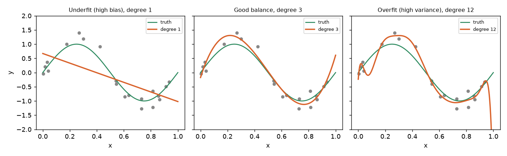
How to read the picture: the grey dots are the 20 noisy training points. The green curve is the truth we normally never see. The orange curve is what the model learned. The left model is too stiff to bend. The right model bends so much that it follows the noise of each dot.
error
|\ test
| \ . '
| \ . . . . . ' '
| '.___.-'''
| \ train
| '-.______________________
+--------------------------------> model complexity
underfit sweet spot overfitLearning curves as diagnosis
Think of a student preparing for an exam. With 10 practice questions she memorizes them (training error low) but fails the real exam (test error high). With 1,000 practice questions memorizing is impossible, so she has to learn the idea, and the two scores come together. A learning curve plots training and validation error against the number of training rows. Same degree-3 model, growing data:
print("n train test (deg3)")
for n_tr in [10, 20, 50, 200, 1000]:
xs = rng.uniform(0, 1, n_tr); ys = f(xs) + rng.normal(0, 0.3, n_tr)
c = np.polyfit(xs, ys, 3)
print(n_tr, round(np.mean((np.polyval(c, xs) - ys)**2), 3),
round(np.mean((np.polyval(c, xt) - yt)**2), 3))n train test (deg3)
10 0.046 0.213
20 0.058 0.117
50 0.107 0.118
200 0.089 0.095
1000 0.097 0.094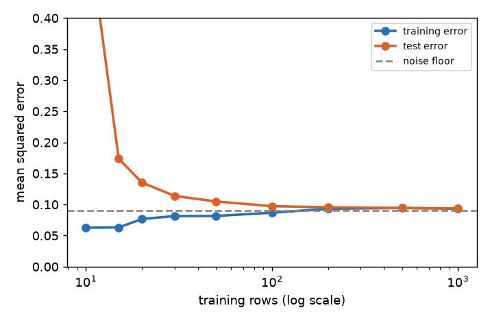
The horizontal axis is the number of training rows on a log scale. The vertical axis is error. The two lines start far apart (a big gap means variance) and squeeze together near the dashed line (the noise floor, the best any model can do).
Reading the table above: with 10 rows there is a big gap (high variance; more data helps). By 200 rows the two curves meet near 0.09, which is the noise floor. More data will not help now; only a better model or better features can (and here there is nothing left to gain).
| Picture | Diagnosis | What to try |
|---|---|---|
| both curves high and close | high bias (underfit) | richer model, more features, less regularization |
| big gap, validation still falling | high variance | more data, simpler model, regularization |
| big gap, validation flat | variance + wrong features | better features, stronger regularization |
| curves meet at a low value | done | stop tuning; ship or change the problem |
Problem 1.2.1 A model has training accuracy 99 percent and validation accuracy 71 percent. A teammate says "the model is great". Respond.
| Step 1 | Gap = 99 − 71 = 28 points. That is large. |
|---|---|
| Step 2 | High training score only proves capacity to memorize. |
| Step 3 | Check whether validation was split fairly (groups, time) and then try regularization or more data. |
| Answer | The model overfits. The honest score is 71 percent, not 99. |
| Check | If you predicted the majority class for everyone, what would you score? If that baseline is 70 percent, your model barely beats a rule. |
| Why it matters | In plain words: the model knows the training rows by heart, but on new rows it is wrong about 3 in 10 times. |
Problem 1.2.2 Learning curve: train error 0.30, validation error 0.32, and both stay flat when data goes from 1,000 to 100,000 rows. Is more data a good investment?
| Step 1 | The gap is tiny (0.02), so variance is low. |
|---|---|
| Step 2 | Both errors are high and flat, so the model is too simple or the features lack signal (high bias). |
| Answer | No. Improve features or use a richer model. |
| Check | Compare with the earlier table: at 200 and 1,000 rows the degree-3 curves had already met at the noise floor, which is the same situation. |
| Why it matters | Buying or labelling 100 times more data is expensive. A learning curve tells you in an afternoon whether that money would be wasted. |
Connection to the real job
The first question a senior reviewer asks on any model: "How did you split?" Most failures in production come from a split that did not mimic the real use.
Applications
- Fraud: split by time, because fraud tactics change.
- Medical: split by patient, because one patient has many scans.
- Recommendation: split by user or by time, depending on the use.
Check yourself
- Training MSE 0.02, test MSE 0.32. Over- or underfit? Answer: overfit.
- Why can a random split fail on user-level data? Answer: the same user appears in train and test, so the model can memorize users.
- Both curves are high and flat. More data? Answer: no, the model is too simple (high bias).
1.3 Bias-Variance Decomposition
The decomposition for squared error
Let the truth be y = f(x) + ε, where noise ε has mean 0 and variance σ². Train the model on a random training set D. The prediction at a point x₀ is f̂(x₀), which is random because D is random. Then:
E[(y − f̂(x₀))²] = ( E[f̂(x₀)] − f(x₀) )² + Var( f̂(x₀) ) + σ²
bias² variance irreducible noiseDerivation in plain steps. Let m = E[f̂(x₀)] (the average prediction over many training sets). Write y − f̂ = (y − f) + (f − m) + (m − f̂). Square it and take the expectation. The cross terms vanish for two reasons: the noise ε = y − f is independent of f̂ and has mean zero, and E[m − f̂] = 0 by definition of m. What remains: E[ε²] = σ², (f − m)² = bias², and E[(m − f̂)²] = variance. Done.
We measure it. We repeat 500 times: draw a new 20-point training set, fit, predict at x₀ = 0.25 (true value sin(π/2) = 1).
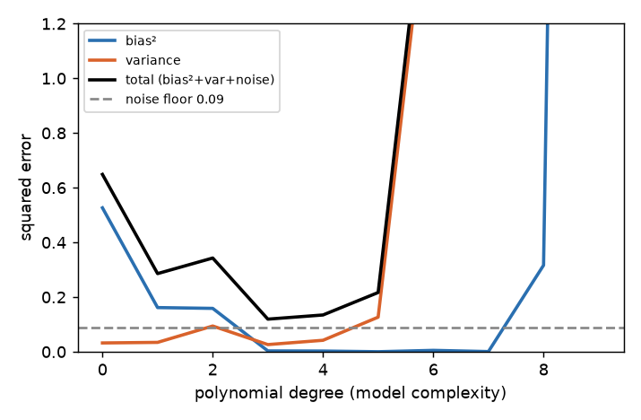
The horizontal axis is model complexity. As it grows, the blue line (bias²) falls because the model can bend. The orange line (variance) rises because the model reacts to noise. The black line is their sum plus noise: the U-shape you are looking for.
Now the numbers at a single point. Before you run it, predict which degree has the largest variance.
x0 = 0.25
print("deg bias2 var noise bias2+var+noise")
for d in [1, 3, 9]:
preds = []
for r in range(500):
xs = rng.uniform(0, 1, n); ys = f(xs) + rng.normal(0, 0.3, n)
preds.append(np.polyval(np.polyfit(xs, ys, d), x0))
preds = np.array(preds)
bias2 = (preds.mean() - f(x0))**2; var = preds.var()
print(d, round(bias2, 4), round(var, 4), 0.09, round(bias2 + var + 0.09, 4))deg bias2 var noise bias2+var+noise
1 0.2526 0.0328 0.09 0.3754
3 0.0 0.018 0.09 0.108
9 0.001 1.3629 0.09 1.4539Read the table: a line (degree 1) is wrong on average (bias² 0.25) but stable (variance 0.03). Degree 9 is right on average (bias² 0.001) but wildly unstable (variance 1.36). Degree 3 balances both and gives the smallest total, 0.108.
error at x0
| total
| \ /
| \_______/ <- total = bias² + variance + noise
| bias² \ variance
| noise ---------------- (floor)
+--------------------------> complexityProblem 1.3.1 At a point, true value 10. Five models trained on five samples predict 12, 12.5, 11.5, 12, 12. Compute bias² and variance (use population variance).
| Step 1 | Mean prediction m = (12+12.5+11.5+12+12)/5 = 60/5 = 12. |
|---|---|
| Step 2 | Bias = 12 − 10 = 2, so bias² = 4. |
| Step 3 | Deviations from 12: 0, 0.5, −0.5, 0, 0. Squares: 0, 0.25, 0.25, 0, 0. Mean = 0.5/5 = 0.1. |
| Answer | bias² = 4, variance = 0.1. The model is stable but systematically wrong: a high-bias model. |
| Check | np.mean([12,12.5,11.5,12,12]) - 10 is 2.0 and np.var([12,12.5,11.5,12,12]) is 0.1. Also, total error at the point is about 4 + 0.1 + σ². |
| Why it matters | The five predictions agree with each other, so adding more data will not fix them. The model family itself is wrong (too simple). |
Problem 1.3.2 Expected squared error is 9. Noise σ = 2. Variance = 3. What is bias²?
| Step 1 | 9 = bias² + 3 + σ², with σ² = 4. |
|---|---|
| Step 2 | bias² = 9 − 3 − 4 = 2. |
| Answer | bias² = 2, so bias = 1.41. No model can beat 4 (the noise floor) on this problem. |
| Check | 2 + 3 + 4 = 9, which is the stated total. |
| Why it matters | The noise floor tells you when to stop tuning. If your error is 9 and the floor is 4, there is still room; at 4.1 you are done. |
How the rest of the book connects
- Regularization raises bias a little and cuts variance a lot (Chapter 3).
- Bagging and random forests cut variance by averaging (Chapter 6).
- Boosting cuts bias by adding corrections (Chapter 7).
- Adding data cuts variance but not bias.
Applications
- Choosing tree depth, polynomial degree, k in k-NN.
- Deciding whether to buy more data or build more features.
- Explaining ensembles to a manager.
Check yourself
- Which term does more data reduce? Answer: variance (bias stays, if the model family is too simple).
- The noise term
σ²can be reduced by a better model? Answer: no, it is irreducible for these features (new features can reduce it). - Predictions are scattered but centred on the truth. High bias or high variance? Answer: high variance.
1.4 The Probabilistic View: MLE, MAP, Generative and Discriminative
Definitions
- Likelihood
L(θ) = P(data | θ): how probable the data is, if the parameters wereθ. - MLE (maximum likelihood estimation): choose
θthat maximizesL(θ). In practice we maximizelog L(sums are easier than products) or minimize−log L. - MAP (maximum a posteriori): choose
θthat maximizesP(θ | data) ∝ P(data | θ) · P(θ). The extra factorP(θ)is the prior. - Bayesian posterior: keep the whole distribution
P(θ | data), not just its peak. This gives uncertainty directly (Chapters 5 and 9).
The big dictionary
| Loss you minimize | Same as MLE under | Prior (extra penalty) |
|---|---|---|
| Squared error | Gaussian noise y = f(x) + ε, ε ~ N(0,σ²) | Gaussian prior on weights gives L2 (ridge) |
| Cross-entropy / log loss | Bernoulli (binary) or categorical (multi-class) labels | Laplace prior gives L1 (lasso) |
| Absolute error | Laplace noise | |
| Poisson deviance | Poisson counts |
Why squared error is Gaussian MLE. For one point, the Gaussian density is P(y|x,θ) ∝ exp(−(y − f)² / 2σ²). Taking −log gives (y − f)² / 2σ² + constant. Summing over points gives the sum of squared errors up to a constant. So minimizing squared error equals maximizing Gaussian likelihood.
Why L2 is a Gaussian prior. With prior w ~ N(0, τ²), −log P(w) = w²/2τ² + const. The MAP objective becomes Σ squared errors/2σ² + w²/2τ². Multiply by 2σ²: Σ errors² + (σ²/τ²)·w². So λ = σ²/τ². A tight prior (small τ) means a large λ. For a Laplace prior P(w) ∝ exp(−|w|/b) the penalty is |w|/b, which is L1.
Worked problems
Problem 1.4.1 A coin shows 7 heads in 10 tosses. Find the MLE of p = P(heads), then the MAP with a Beta(2,2) prior and with a Beta(10,10) prior. (For a Beta(a,b) prior the MAP is (heads + a − 1)/(n + a + b − 2).)
| Step 1 | Likelihood p⁷(1−p)³. Log: 7 ln p + 3 ln(1−p). Derivative 7/p − 3/(1−p) = 0 gives p = 7/10 = 0.7. |
|---|---|
| Step 2 | Beta(2,2): (7+1)/(10+2) = 8/12 = 0.667. |
| Step 3 | Beta(10,10): (7+9)/(10+18) = 16/28 = 0.571. |
| Answer | MLE 0.70; MAP 0.667 (weak prior) and 0.571 (strong prior). The stronger the belief in a fair coin, the more the estimate is pulled to 0.5. The code below prints the same numbers: |
heads, n_ = 7, 10
print("MLE", heads/n_)
for a, b in [(2, 2), (10, 10)]:
print("MAP", a, b, (heads + a - 1) / (n_ + a + b - 2))MLE 0.7
MAP 2 2 0.6666666666666666
MAP 10 10 0.5714285714285714Problem 1.4.2 Data 2, 3, 4 from N(μ, 1). Find the MLE of μ and the MAP with prior μ ~ N(0, 1).
| Step 1 | MLE of a Gaussian mean is the sample mean: 3.0. |
|---|---|
| Step 2 | MAP: minimize Σ(xᵢ − μ)²/2 + μ²/2. Derivative: −Σ(xᵢ − μ) + μ = 0, so Σxᵢ = (n+1)μ, μ = 9/4 = 2.25. |
| Answer | MLE 3.0, MAP 2.25. The prior shrinks the estimate toward 0, exactly like ridge regression shrinks weights. |
| Check | Put μ = 2.25 into the objective: ((2−2.25)² + (3−2.25)² + (4−2.25)² + 2.25²)/2 = (0.0625+0.5625+3.0625+5.0625)/2 = 4.375. At μ = 3 it is (1+0+1+9)/2 = 5.5. So 2.25 is lower, as it should be. |
| Why it matters | "Shrink toward zero" is the plain-language meaning of regularization: you trust the data a bit less and your prior belief a bit more. |
Generative vs discriminative
- Discriminative models learn
P(y | x)directly (logistic regression, SVM, trees, neural nets). They draw the boundary. - Generative models learn
P(x | y)andP(y), then use Bayes' rule to getP(y | x)(naive Bayes, Gaussian mixtures, LDA). They model how the data was produced, so they can also generate samples, handle missing inputs, and work with very little data. Discriminative models usually win with more data because they spend all capacity on the boundary.
The EM algorithm (intuition)
Some models have hidden variables (which cluster did each point come from?). If we knew the hidden labels, fitting is easy. If we knew the parameters, guessing the labels is easy. Expectation-Maximization alternates: E-step guess soft labels using current parameters; M-step refit parameters using those soft labels. Each loop never lowers the likelihood. Chapter 13 builds a Gaussian mixture with EM from scratch.
Information theory in four lines
| Quantity | Formula | Meaning |
|---|---|---|
| Entropy | H(p) = −Σ p log p | average surprise; uncertainty of p |
| Cross-entropy | H(p,q) = −Σ p log q | average surprise if truth is p but we believe q |
| KL divergence | KL(p‖q) = H(p,q) − H(p) | extra surprise from believing q |
| Mutual information | I(X;Y) = KL(P(x,y) ‖ P(x)P(y)) | how much knowing X tells about Y |
For p = (0.5, 0.5) and q = (0.9, 0.1) (log base 2):
p = np.array([.5, .5]); q = np.array([.9, .1])
H = lambda p: -(p*np.log2(p)).sum()
print("H(p)", H(p), "CE", -(p*np.log2(q)).sum(), "KL", (p*np.log2(p/q)).sum())H(p) 1.0 CE 1.736965594166206 KL 0.7369655941662061Believing q costs 0.74 extra bits per event. Because H(p) is fixed by the data, minimizing cross-entropy equals minimizing KL equals maximum likelihood. That is why classifiers train on log loss.
Connection to the real job
When a colleague says "L2 is just a Gaussian prior", they are showing they understand why ridge works. In interviews this unification is a strong signal. Bayesian thinking also drives A/B testing, bandits and uncertainty (Chapters 9 and 15).
Applications
- Ridge and lasso: priors on weights.
- Naive Bayes spam filters and Gaussian mixture segmentation: generative.
- Variational autoencoders and language models: cross-entropy and KL everywhere.
Check yourself
- Which noise model gives squared error? Answer: Gaussian.
- Which prior gives L1? Answer: Laplace.
- In the coin example, what happens to MAP as
ngrows large? Answer: data dominates the prior and MAP approaches the MLE.
1.5 Loss Functions: What Each One Rewards
See the Math PDF, Pillar 5, for the formulas and their derivatives. This section shows what each loss rewards, with numbers.
Regression losses
| Loss | Formula | Rewards | Weak point |
|---|---|---|---|
| MSE | (y−ŷ)² | predicting the mean; punishes large errors | outliers dominate |
| MAE | ‖y−ŷ‖ | predicting the median; robust | gradient has constant size, slower near optimum |
| Huber (δ) | quadratic if ‖r‖≤δ, else linear | blend: smooth near zero, robust far away | needs δ |
| Quantile (pinball, q) | max(q·r, (q−1)·r) with r = y−ŷ | predicting the q-th percentile | |
| Log-cosh | log(cosh r) | like Huber, smooth everywhere | |
| Poisson deviance | 2(y·ln(y/μ) − (y−μ)) | counts, μ>0 | needs non-negative target |
| Gamma / Tweedie deviance | skewed positive amounts (claims, sales) |
Problem 1.5.1 Delivery times in minutes: 10, 12, 11, 13, 100 (one outlier). Find the constant c that minimizes MSE and the one that minimizes MAE.
| Step 1 | MSE is minimized at the mean: (10+12+11+13+100)/5 = 29.2. |
|---|---|
| Step 2 | MAE is minimized at the median: sorted 10,11,12,13,100, median 12. |
| Step 3 | Check by code: MSE at c=12 is 1550.0, at c=30 is 1254.8 (lower). MAE at c=12 is 18.4, at c=30 is 28.8 (higher). |
| Answer | MSE picks about 29 (dragged by the outlier); MAE picks 12 (the typical delivery time). This is exactly why reports on delivery times, house prices and incomes often quote the median, not the average. |
| Check | The code below prints these exact values. |
| Why it matters | One 100-minute delivery in five moved the "best" constant from 12 to 29. A loss function is a statement about what you care about. |
y = np.array([10, 12, 11, 13, 100.])
print("mean", y.mean(), "median", np.median(y))
for c in [11, 12, 30]:
print(c, "MSE", np.mean((y-c)**2), "MAE", np.mean(abs(y-c)))mean 29.2 median 12.0
11 MSE 1585.4 MAE 18.6
12 MSE 1550.0 MAE 18.4
30 MSE 1254.8 MAE 28.8Problem 1.5.2 You forecast weekly demand for a shop's stock. Running out of stock (under-stocking) is 9 times worse than having too much (over-stocking). Which quantile loss, and what does it cost for y=100?
| Step 1 | Cost ratio 9:1 means q = 9/(9+1) = 0.9 (under-prediction cost weight q, over-prediction weight 1−q). |
|---|---|
| Step 2 | Predict 80 (under by 20): 0.9 × 20 = 18. Predict 120 (over by 20): 0.1 × 20 = 2. |
| Answer | Use the 0.9 quantile (pinball) loss. Under-predicting by 20 costs 18; over-predicting by 20 costs 2. The model learns to predict high, as the business wants. |
| Check | Ratio of costs 18 / 2 = 9, which equals the stated 9-to-1 business cost. |
| Why it matters | A forecast that is right on average is useless for stock planning. You want a forecast that is high enough 90 percent of the time. |
Classification losses
For label y=1 and predicted probability p:
| Loss | Formula | Behaviour |
|---|---|---|
| Log loss / cross-entropy | −ln p | p=0.9 gives 0.105; p=0.6 gives 0.511; p=0.01 gives 4.605. Confident and wrong is punished hard |
| Hinge (SVM) | max(0, 1 − margin) | margin 2 gives 0; 0.5 gives 0.5; −1 gives 2. Zero loss once safely correct |
| Focal | (1−p)^γ · (−ln p) | with γ=2: easy case p=0.9 loss falls from 0.105 to 0.001; hard case p=0.3 from 1.204 to 0.590. Down-weights easy examples |
| Label smoothing | targets 1−ε, not 1 | for ε=0.1 and 3 classes the target is (0.933, 0.033, 0.033); stops over-confidence |
| Ranking (pairwise) | penalize wrong order of a pair | used in search and recommendation (Chapter 14) |
All values above were computed by code in c1b.py (log, hinge, focal and Poisson). Poisson deviance for y=3, μ=2 is 2(3·ln1.5 − 1) = 0.433.
Loss versus metric
You train on a smooth, differentiable loss because optimizers need gradients. You report a metric the business understands (accuracy, F1, AUC, MAPE). They can disagree. Example: log loss rewards honest probabilities, while accuracy only cares which side of 0.5. A model can improve log loss while accuracy stays the same, or the reverse. Always evaluate on the business metric, and choose the loss that is the best differentiable stand-in for it.
Connection to the real job
Choosing the loss is a business conversation: "Is a miss worse than a false alarm?" Quantile loss for stock planning and Tweedie loss for insurance claims are everyday examples.
Applications
- Forecasting with Poisson loss for ticket counts.
- Pinball loss for 90th-percentile delivery-time prediction.
- Focal loss for rare-defect detection.
log(y).Check yourself
- MSE is minimized by which statistic? Answer: the mean.
- Which quantile for "missing is 4 times worse than over-estimating"? Answer:
q = 4/5 = 0.8. - Why differentiable losses for training but business metrics for reporting? Answer: optimizers need gradients; stakeholders need meaning.
1.6 No Free Lunch, Inductive Bias, and the Curse of Dimensionality
No free lunch
The No Free Lunch theorem says: averaged over all possible problems, no algorithm beats any other. So there is no "best algorithm". Real problems are not random; they have structure (smooth, sparse, tabular). The task is to match assumptions to the structure, and the way to find out is to run baselines and experiments.
Inductive bias
| Model | Assumes | Fails when |
|---|---|---|
| Linear / logistic | effect adds up in straight lines | strong interactions, curves |
| Decision tree | box-shaped regions, axis-aligned splits | smooth diagonal boundaries, extrapolation |
| k-NN | nearby points have the same label | many irrelevant features |
| Naive Bayes | features independent given the class | strongly correlated features (still often fine for ranking) |
| Neural net | smooth, compositional structure | very small tabular data |
Curse of dimensionality
As the number of features d grows, space gets huge and data gets sparse; distances lose meaning. Experiment: 500 random points in the unit cube, one random query point, ratio nearest distance / farthest distance.
for dim in [2, 10, 100, 1000]:
X = rng.uniform(size=(500, dim)); q = rng.uniform(size=dim)
ds = np.linalg.norm(X - q, axis=1); print(dim, round(ds.min()/ds.max(), 3))2 0.011
10 0.25
100 0.703
1000 0.907In 2 dimensions the nearest point is about 100 times closer than the farthest. In 1,000 dimensions it is only 10 percent closer: all points look equally far. "Nearest neighbour" then means little. The remedy: fewer, better features; regularization; dimensionality reduction (Chapter 13).
Problem 1.6.1 You need 10 samples per unit along each axis to cover space. How many points for 1, 2, 5 and 10 features?
| Step 1 | Points needed = 10^d. |
|---|---|
| Step 2 | d=1: 10. d=2: 100. d=5: 100,000. d=10: 10,000,000,000. |
| Answer | Data needs grow exponentially. Ten features at this density need ten billion rows, so real models rely on assumptions (inductive bias), not coverage. |
| Check | 10**10 = 10,000,000,000. |
| Why it matters | This is why "just add more columns" quietly makes learning harder: the same number of rows now covers a vanishing fraction of the space. |
Problem 1.6.2 A survey dataset has 200 rows (patients) and 400 columns (measurements per patient). Which kind of model is safer first, and why?
| Step 1 | p = 400 > n = 200: a flexible model can memorize. |
|---|---|
| Step 2 | A regularized linear model has strong bias and low variance. |
| Answer | Start with ridge or lasso logistic/linear regression, and compare to a trivial baseline using repeated cross-validation. |
| Check | With 400 columns and 200 rows, ordinary least squares has no unique solution at all (the matrix XᵀX is singular), which is another sign you need regularization. |
| Why it matters | When you have more columns than rows, the model needs a strong assumption to pick one answer out of infinitely many. |
Connection to the real job
"Why did adding 50 features make my model worse?" is the curse of dimensionality plus variance. "Which model should I use?" is answered with inductive bias plus experiments, never with a favourite algorithm.
Applications
- Choosing models for tabular, text, and image problems.
- Feature selection in genomics (
p ≫ n). - Nearest-neighbour search in embeddings (needs approximate search because of this effect).
Check yourself
- What does No Free Lunch imply for practice? Answer: always run baselines; no algorithm wins everywhere.
- In very high dimensions, what happens to nearest vs farthest distances? Answer: they become almost equal.
- What is inductive bias? Answer: the assumptions a model makes that let it generalize.
Chapter recap
- Learning means turning knobs to reduce a loss, but what matters is the loss on new data.
- ERM = model family + loss + optimizer; empirical risk is the average loss on your sample.
- Parameters are learned; hyperparameters are chosen by you; capacity is the richness of the family.
- Train fits, validation chooses, test judges once. Random splits need i.i.d.; time, groups and drift break it.
- Overfitting: tiny training error, large test error. Learning curves tell you whether to add data or change the model.
- Error = bias² + variance + noise for squared error. Complex models trade bias for variance.
- Squared error is Gaussian MLE; cross-entropy is Bernoulli MLE; L2 is a Gaussian prior; L1 is a Laplace prior.
- Generative models learn how data is produced; discriminative models learn the boundary. EM alternates soft labels and refitting.
- MSE rewards the mean, MAE the median, pinball loss a chosen percentile. Pick the loss to match business cost.
- No model is best everywhere, and high dimensions make distances meaningless.
| Formula / idea | Meaning |
|---|---|
R_emp = (1/n) Σ ℓ(yᵢ, f(xᵢ)) | empirical risk, the training average loss |
gap = test error − train error | generalization gap |
error = bias² + variance + σ² | squared-error decomposition |
MSE ↔ Gaussian MLE, log loss ↔ Bernoulli MLE | losses as likelihoods |
L2 ↔ Gaussian prior, L1 ↔ Laplace prior, λ = σ²/τ² | regularization as MAP |
MSE → mean, MAE → median, pinball(q) → q-th percentile | what each loss rewards |
KL(p‖q) = H(p,q) − H(p) | extra cost of believing q |
Practice set
- (easy) Data
(1,1), (2,2), (3,4), modelŷ = 1.2x. Compute MSE. Answer: predictions 1.2, 2.4, 3.6; errors −0.2, −0.4, 0.4; squares 0.04, 0.16, 0.16; mean 0.36/3 = 0.12. - (easy) Best slope through the origin for the data of problem 1? Answer:
Σxy/Σx² = (1+4+12)/(1+4+9) = 17/14 = 1.214. - (easy) Training accuracy 88, validation 86, test 85. Overfit? Answer: No, the gap is small. Check whether the score itself is high enough for the use.
- (medium) Median and mean of
2, 4, 6, 8, 100. Which minimizes MAE? Answer: median 6, mean 24. The median minimizes MAE. - (medium) What is the output?
-np.log(0.5)for a true-1 example. Answer:0.6931..., the cost of a coin-flip guess. - (medium) Find the bug: a student normalizes (subtracts the mean) using all rows, then splits into train and test. Answer: the test rows influenced the mean, which is mild leakage. Fit the scaler on train only (Chapter 8).
- (medium) MAP for 3 heads in 3 tosses with Beta(2,2) prior. Answer:
(3+1)/(3+2) = 0.8versus MLE 1.0. The prior avoids the extreme "always heads". - (medium) Expected squared error 5.0, noise variance 1.0, bias² 2.5. Variance? Answer: 5.0 − 2.5 − 1.0 = 1.5.
- (hard, scenario) Your regression model of ticket resolution time has a few 30-day tickets and your MSE model predicts too high for normal tickets. What do you try? Answer: MAE or Huber loss, or predict
log(time), then report MAE and percentile errors. - (interview) Explain bias-variance to a manager in 30 seconds. Answer: "Bias is when the model is too simple and misses the pattern. Variance is when the model is so flexible it follows noise and changes with every new sample. We pick the complexity where the total error on new data is lowest, and validation data tells us where that is."
- (interview) Why is L2 regularization a Gaussian prior? Answer: MAP adds
−log P(w). For a Gaussian prior this isw²/2τ², an L2 penalty withλ = σ²/τ². A tighter belief means a bigger λ. - (interview) Your model has 99 percent training AUC and 0.70 validation AUC. List three things to check. Answer: split design (groups/time/duplicates), leakage in training features, and model capacity versus data size (regularize, simplify, add data).
Prompt pack
You are my patient, practical professor. I am a working professional moving into data roles, English is my second language, so use simple words. Topic: empirical risk minimization, loss functions and the train/validation/test roles in machine learning. Explain step by step with small numeric examples, then ask me three questions one at a time and wait for my answers. Correct my mistakes kindly and connect ideas to everyday examples such as shop orders or exam marks where natural.
You are my patient, practical professor. I am a working professional moving into data roles and learning machine learning, English is my second language. Topic: the bias-variance decomposition of squared error. Give me 8 graded exercises with real numbers (easy to hard), including one where I compute bias squared and variance from five predictions. Do not give solutions until I answer. Then check my answers and explain any error.
You are my patient, practical professor. I am a working professional moving into data roles, English is my second language. Topic: MLE and MAP, and why squared error equals Gaussian maximum likelihood and L2 equals a Gaussian prior. Teach it step by step with a coin example and a Gaussian-mean example, then quiz me one question at a time. Keep sentences short and define every term the first time.
You are my patient, practical professor. I am a working professional moving into data roles, English is my second language. Topic: learning curves and diagnosing overfitting versus underfitting. Here is my situation: [PASTE MY TRAIN/VALIDATION SCORES AND DATA SIZE HERE]. Review my numbers, tell me which problem I probably have, list what to try in order, and explain why each step helps in simple words.
You are my patient, practical professor. I am a working professional moving into data roles, English is my second language. Topic: chapter 1 of ML fundamentals (ERM, generalization, bias-variance, MLE/MAP, loss choice, curse of dimensionality). Run a mock interview with me: ask one question at a time, wait for my spoken-style answer, then give a score out of 10, a better model answer, and the next question, getting harder each time.
Suppose you have delivery records and you want to say "each extra 10 km adds about 6 minutes to the delivery time". Or you have patient data and you want to predict disease progression. The oldest and most useful tool for both jobs is linear regression: draw the best flat surface through your data. Many production systems still use it, and every neural network is built from stacked pieces that look like it. In this chapter you will derive the formula that finds the best line, solve it by hand on three points, rebuild it in NumPy two different ways, check your code against scikit-learn, and learn the six ways a straight-line model can quietly lie to you. You will also learn when you are predicting and when you are explaining, because the same model is read very differently in each case.
You can skip the matrix-calculus details if they feel heavy. The worked problems show every step with small numbers. For the derivative rules, see the learner's Math PDF (Pillar 2, calculus; Pillar 1, matrices).
2.1 The Model and the Normal Equation
Words you need
| Word | Plain meaning |
|---|---|
| Feature | one input column (for example, distance in km) |
| Target | the number we want to predict (delivery time in minutes) |
| Weight (coefficient) | how much the prediction changes when one feature goes up by 1, others fixed |
| Intercept | the prediction when every feature is 0 |
| Residual | actual value minus predicted value: rᵢ = yᵢ − ŷᵢ |
Design matrix X | the table of features, one row per example, with a column of 1s added for the intercept |
Formal definition
The model: ŷ = w₀ + w₁x₁ + w₂x₂ + … + w_p x_p. In matrix form, with X of shape n × (p+1) (first column all ones) and w a vector of p+1 numbers:
ŷ = X w
loss(w) = Σ (yᵢ − ŷᵢ)² = (y − Xw)ᵀ (y − Xw)Derivation of the normal equation. Expand the loss:
loss = yᵀy − 2 wᵀXᵀy + wᵀXᵀX wTake the derivative with respect to w (using d(wᵀa)/dw = a and d(wᵀAw)/dw = 2Aw for symmetric A):
d loss / dw = −2 Xᵀy + 2 XᵀX wSet it to zero: XᵀX w = Xᵀy. These are called the normal equations ("normal" means perpendicular, you will see why below). If XᵀX can be inverted:
w = (XᵀX)⁻¹ Xᵀ yThe loss is a bowl (it is convex), so the one point where the slope is zero is the unique bottom of the bowl.
Running example (tiny)
Three points: (x, y) = (1, 2), (2, 3), (3, 5). We will reuse this example throughout the chapter.
Problem 2.1.1 Find the best-fit line ŷ = w₀ + w₁x for these three points using the normal equation.
| Formula | w = (XᵀX)⁻¹ Xᵀy, with X = [[1,1],[1,2],[1,3]] and y = [2,3,5]. |
|---|---|
| Plug in | XᵀX multiplies the 2×3 matrix [[1,1,1],[1,2,3]] by the 3×2 matrix X. Entry by entry: top-left 1+1+1 = 3; top-right 1·1+1·2+1·3 = 6; bottom-right 1+4+9 = 14. So XᵀX = [[3,6],[6,14]]. Next Xᵀy: top 2+3+5 = 10; bottom 1·2+2·3+3·5 = 23. So Xᵀy = [10, 23]. |
| Compute | The determinant of XᵀX is 3·14 − 6·6 = 42 − 36 = 6. The inverse of a 2×2 matrix [[a,b],[c,d]] is (1/det)[[d,−b],[−c,a]], so (XᵀX)⁻¹ = (1/6)[[14,−6],[−6,3]]. Then w = (1/6)[14·10 − 6·23, −6·10 + 3·23] = (1/6)[140 − 138, −60 + 69] = (1/6)[2, 9] = [0.3333, 1.5]. |
| Answer | The best line is ŷ = 0.333 + 1.5x. Each extra unit of x adds 1.5 to the prediction. |
| Check | Run in NumPy (below). Also by the shortcut for one feature, slope = Σ(x−x̄)(y−ȳ) / Σ(x−x̄)² = 3/2 = 1.5 and intercept ȳ − slope·x̄ = 3.333 − 1.5·2 = 0.333. |
| Why it matters | You have solved a "machine learning problem" with plain arithmetic. For millions of rows, the library does exactly these steps. |
import numpy as np
x = np.array([1, 2, 3.]); y = np.array([2, 3, 5.])
X = np.c_[np.ones(3), x]
print("XtX\n", X.T @ X, "\nXty", X.T @ y)
beta = np.linalg.solve(X.T @ X, X.T @ y); print("beta", beta)
res = y - X @ beta; print("resid", res, "X^T resid", X.T @ res)Before you run it, predict: what will Xᵀ · residuals be? Output:
XtX
[[ 3. 6.]
[ 6. 14.]]
Xty [10. 23.]
beta [0.3333 1.5 ]
resid [ 0.1667 -0.3333 0.1667] X^T resid [0. 0.]Line by line: np.c_[np.ones(3), x] glues a column of ones next to x, which gives the intercept its own column. np.linalg.solve(A, b) solves A w = b; it is more accurate than computing the inverse yourself, so prefer it. The last line prints zeros: this is the key to the geometry.
The picture: projection
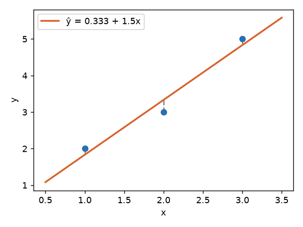
The grey dashed lines are the residuals: +0.167, −0.333, +0.167. The line cuts through the middle, with two points above and one below. The sum of the residuals is zero, and the residuals are also perpendicular to the x column (Σ rᵢxᵢ = 0.167 − 0.667 + 0.5 = 0).
Here is the deeper picture. Treat y = [2,3,5] as one arrow in 3-dimensional space (one axis per data point). The columns of X, namely [1,1,1] and [1,2,3], span a flat sheet (a plane) inside that space. Every possible set of predictions Xw lies on this sheet. Least squares finds the point on the sheet closest to y. The closest point is the projection of y onto the sheet, and the leftover arrow (the residual) is perpendicular to the sheet. That is why Xᵀ r = 0: "perpendicular to every column". The word "normal" in "normal equation" just means perpendicular.
y (the data arrow)
/|
/ | residual r (perpendicular to the sheet)
/ |
---o---+----------- sheet = all predictions Xw
ŷ = X w (the projection)The matrix H = X(XᵀX)⁻¹Xᵀ is called the hat matrix because ŷ = H y ("puts the hat on y"). Its diagonal entries are the leverage of each point: how strongly each point pulls the line toward itself. For our three points the leverages are [0.833, 0.333, 0.833]. The outer points have more pull, which is intuitive (they are the ends of a seesaw). Leverages always add up to the number of parameters, here 0.833 + 0.333 + 0.833 = 2.
A realistic dataset
Scikit-learn ships a small medical dataset (load_diabetes): 442 patients, 10 columns (age, sex, bmi, blood pressure, six blood-serum measurements s1 to s6), and a target that measures disease progression one year later. We split 75 percent train and 25 percent test with random_state=0. We will predict on the test part only for honesty (Chapter 1).
Connection to the real job
LinearRegression().fit(X, y)solves a version of the normal equations (internally with a numerically safer method called SVD or QR decomposition, which gives the same answer).- Cost estimation, demand forecasting, and A/B-test "regression adjustment" (CUPED) all use this.
- Baselines: always fit a linear model first. If a complex model cannot beat it clearly, the complexity is not paying for itself.
Applications
- Data Analytics: trend lines in dashboards, price elasticity.
- Data Science: sales and demand baselines, feature effect estimates.
- Machine Learning: the baseline every other regressor is compared with.
- Operations and Logistics: parcels packed per hour vs staff on shift; delivery time vs distance.
Check yourself
- What does
Xᵀ r = 0say in words? Answer: the residuals are perpendicular to every feature column; the fit has used up all the straight-line signal. - For the three points, what is the sum of the residuals? Answer:
0.167 − 0.333 + 0.167 = 0. - Why can the formula fail? Answer: when
XᵀXhas no inverse, for example when one column is a copy or a combination of other columns, or when there are more columns than rows.
2.2 Gradient Descent Version
XᵀX costs a lot to build and solve when you have millions of rows or hundreds of thousands of columns, and walking works for models (like logistic regression and neural nets) that have no map at all.How it works
The gradient of the mean squared error L(w) = (1/n)(y − Xw)ᵀ(y − Xw) is ∇L = (2/n) Xᵀ(Xw − y). We repeat:
w ← w − lr · (2/n) · Xᵀ (X w − y)For the one-point, one-weight case this is the rule you know from the Math PDF (Pillar 2): subtract the learning rate times the derivative.
Problem 2.2.1 Do two gradient-descent steps by hand on our three points, with weights starting at w = [0, 0] and lr = 0.1.
| Formula | w ← w − lr · (2/n) · Xᵀ(Xw − y), with n = 3. |
|---|---|
| Plug in (step 1) | Xw = [0,0,0], so Xw − y = [−2, −3, −5]. Then Xᵀ(Xw − y): first entry −2−3−5 = −10; second entry 1·(−2) + 2·(−3) + 3·(−5) = −2 −6 −15 = −23. So gradient = (2/3)·[−10, −23] = [−6.667, −15.333]. |
| Compute | w = [0,0] − 0.1·[−6.667, −15.333] = [0.6667, 1.5333]. |
| Plug in (step 2) | Xw = [0.6667+1.5333, 0.6667+3.0667, 0.6667+4.6] = [2.2, 3.7333, 5.2667]. Xw − y = [0.2, 0.7333, 0.2667]. Xᵀ(...): first 0.2+0.7333+0.2667 = 1.2; second 0.2 + 1.4667 + 0.8 = 2.4667. Gradient = (2/3)·[1.2, 2.4667] = [0.8, 1.6444]. |
| Compute | w = [0.6667, 1.5333] − 0.1·[0.8, 1.6444] = [0.5867, 1.3689]. |
| Answer | After two steps w = [0.587, 1.369]. The target is [0.333, 1.5]: the intercept moved past 0.333 on step 1 and the slope is still catching up. |
| Check | The loss falls. At w = [0,0] the MSE is (4+9+25)/3 = 12.67. After step 1, Xw − y = [0.2, 0.7333, 0.2667], squares 0.04, 0.5378, 0.0711, mean 0.2163. So the loss went from 12.67 to 0.2163 in one step (NumPy confirms this and gives w = [0.5867, 1.3689] after step 2). |
| Why it matters | Even from the worst start, the loss collapsed in one step. Later steps are much slower. Gradient descent is fast in the beginning and slow near the end. |
A from-scratch class with both methods
import numpy as np
from sklearn.datasets import load_diabetes
from sklearn.linear_model import LinearRegression
from sklearn.model_selection import train_test_split
class MyLinearRegression:
"""OLS two ways: normal equation or gradient descent."""
def __init__(self, method="normal", lr=0.1, steps=20000):
self.method, self.lr, self.steps = method, lr, steps
def fit(self, X, y):
A = np.c_[np.ones(len(X)), X] # add the intercept column of ones
if self.method == "normal":
self.w = np.linalg.solve(A.T @ A, A.T @ y) # solve (XtX) w = Xty
else:
self.w = np.zeros(A.shape[1]); n = len(y)
for _ in range(self.steps):
grad = 2 / n * A.T @ (A @ self.w - y) # gradient of the mean squared error
self.w -= self.lr * grad
return self
def predict(self, X):
return np.c_[np.ones(len(X)), X] @ self.w
d = load_diabetes()
Xtr, Xte, ytr, yte = train_test_split(d.data, d.target, test_size=0.25, random_state=0)
mu, sd = Xtr.mean(0), Xtr.std(0)
Ztr, Zte = (Xtr - mu) / sd, (Xte - mu) / sd # scale with TRAIN statistics only
rmse = lambda a, p: np.sqrt(np.mean((a - p) ** 2))
ne = MyLinearRegression("normal").fit(Ztr, ytr)
gd = MyLinearRegression("gd").fit(Ztr, ytr)
sk = LinearRegression().fit(Ztr, ytr)
print("intercepts :", round(ne.w[0], 4), round(gd.w[0], 4), round(sk.intercept_, 4))
print("max |coef diff| NE vs sklearn:", np.abs(ne.w[1:] - sk.coef_).max())
print("max |coef diff| GD vs NE :", np.abs(gd.w - ne.w).max())
print("test RMSE NE/GD/sklearn:", [round(rmse(yte, m.predict(Zte)), 3) for m in (ne, gd, sk)])
print("baseline (predict train mean) RMSE:", round(rmse(yte, np.full(len(yte), ytr.mean())), 3))
print("test R2:", round(1 - np.sum((yte - ne.predict(Zte))**2) / np.sum((yte - yte.mean())**2), 4))Predict first: will the three methods give the same predictions? Real output:
intercepts : 151.9215 151.9215 151.9215
max |coef diff| NE vs sklearn: 1.545430450278218e-12
max |coef diff| GD vs NE : 5.933031843596837e-13
test RMSE NE/GD/sklearn: [np.float64(56.393), np.float64(56.393), np.float64(56.393)]
baseline (predict train mean) RMSE: 70.464
test R2: 0.3594Explain: all three methods agree to 12 decimal places, because they solve the same convex problem. The intercept 151.92 is the mean of the training target (because we centred the features). The test RMSE of 56.4 beats the baseline (always guess the average) of 70.5, so the features carry real signal. R² (the "coefficient of determination") is 1 − (model's squared error) / (squared error of guessing the mean), so 0.359 means the model removes about 36 percent of the error compared with the guess-the-mean baseline. Disease progression is hard to predict from these ten columns, and that is honest information, not a bug.
Why scaling matters: the picture
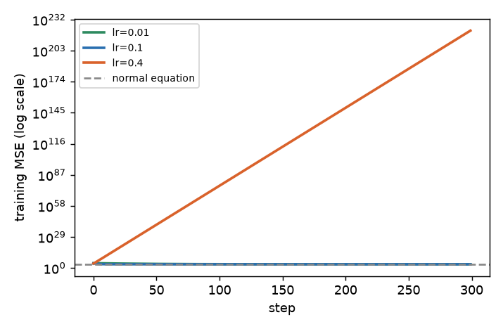
The dashed line is the best possible training error (the normal equation). The lr=0.4 line shoots up out of the chart: that step was too big, so each step overshoots the valley by more than the last.
For a bowl-shaped loss there is a speed limit. Let λ_max be the largest eigenvalue of (2/n)XᵀX. Gradient descent converges only if lr < 2/λ_max. For the standardized diabetes data λ_max = 8.28, so the limit is 2/8.28 = 0.2415. This is why 0.1 works and 0.4 explodes (the loss reached 3.9×10¹⁰ by step 10). Real values from the run:
| lr | MSE at step 1 | step 10 | step 50 | step 100 | step 300 |
|---|---|---|---|---|---|
| 0.01 | 28040 | 19510 | 6051 | 3233 | 2791.5 |
| 0.1 | 18531 | 3085 | 2790 | 2788 | 2783.9 |
| 0.4 | 14584 | 3.9×10¹⁰ | 5×10³⁹ | 1×10⁷⁶ | 6×10²²¹ |
Now the unscaled problem. Make x₁ with standard deviation 1 and x₂ with standard deviation 1000 (like "age" and "salary in rupees"):
rng = np.random.default_rng(0)
x1 = rng.normal(0, 1, 200); x2 = rng.normal(0, 1000, 200)
yy = 3 * x1 + 0.002 * x2 + rng.normal(0, .5, 200)
Xs = np.c_[np.ones(200), x1, x2]
lam = np.linalg.eigvalsh(2/200 * Xs.T @ Xs); print("eig", lam, "max safe lr", 2 / lam[-1])eig [ 1.8375 1.9878 2118086.5722] max safe lr 9.442484675705359e-07The speed limit is about 9.4×10⁻⁷. At lr = 1.5×10⁻⁶ we got nan (overflow), at 1×10⁻⁶ the weights reached 10⁹⁰, and at 1×10⁻⁷ it was safe but after 2000 steps the MSE was still 8.7 (true noise level is 0.25) with w = [0, 0.0011, 0.0018] while the right answer is [0.005, 3.03, 0.002]. The big column forces a tiny learning rate, and then the small column barely moves. The condition number (ratio of largest to smallest eigenvalue, roughly "how stretched the bowl is") tells you this: unscaled 1074, after standardizing 1.07. For the diabetes training data (with the intercept column): 217 on the raw columns, 21 after standardizing.
Connection to the real job
Every deep-learning training loop is this loop with more weights. If a neural network's loss is nan, the first things to check are the learning rate and the input scale: the same story you just saw.
Applications
- Machine Learning: linear/logistic regression on huge data via SGD.
- Deep Learning: every network trained by (variants of) this loop.
- Data Engineering: online/streaming regression where data never fits in memory.
- MLOps: a loss that becomes
nanis a standard training-job alert.
Check yourself
- Which is cheaper for 10 million rows and 50 columns, forming
XᵀXor running mini-batch gradient descent? Answer: both are possible (XᵀXis 50×50), but for 500,000 columns only gradient descent is practical. - What happens when
lris above2/λ_max? Answer: the loss grows each step and the weights overflow tonan. - Does scaling features change the OLS predictions? Answer: no, only the numeric size of the coefficients and the speed of gradient descent.
2.3 Assumptions and What Breaks Them
The assumptions
| Assumption | Plain meaning | How it fails | How to detect |
|---|---|---|---|
| Linearity | the effect is a straight line | curves, thresholds, interactions | residual vs prediction plot shows a pattern |
| Constant variance (homoscedasticity) | the scatter is the same everywhere | scatter grows with the level | residual spread by range |
| Independent errors | mistakes do not follow each other | time series, grouped rows | Durbin-Watson, plots over time |
| No exact collinearity | features are not copies of each other | duplicate or derived columns | VIF, condition number |
| No wild outliers or high-leverage points | no single row rules the line | typos, rare events | leverage, Cook's distance, plots |
For prediction you need these only loosely: a model with curved residuals still predicts, just badly. For explaining (confidence intervals, p-values) the assumptions matter more, as 2.4 shows.
Heteroscedasticity: the scatter changes
Think of delivery time against distance: short trips give steady times, long trips give wildly variable times. We simulate y = 2x + noise where the noise standard deviation is 0.3·x^1.5:
x = rng.uniform(1, 10, 300); y = 2*x + rng.normal(0, 0.3*x**1.5)
A = np.c_[np.ones(300), x]; b = np.linalg.lstsq(A, y, rcond=None)[0]; r = y - A@b
print("coef", b)
for lo, hi in [(1, 4), (4, 7), (7, 10)]:
m = (x >= lo) & (x < hi); print("x in", lo, hi, "resid std", r[m].std().round(2))coef [-0.7546 2.1163]
x in 1 4 resid std 1.26
x in 4 7 resid std 3.6
x in 7 10 resid std 8.2The line (slope 2.12 vs true 2) is fine, but the residual spread grows 6.5 times from left to right. Predictions for large x are far less reliable, and the single "average error" hides it. The fixes: model log(y), use weighted least squares, or use quantile regression to give intervals that widen (Chapter 9).
Correlated errors: Durbin-Watson
When rows come in time order, the error today often resembles the error yesterday. The Durbin-Watson statistic is Σ(rₜ − rₜ₋₁)² / Σ rₜ². A value near 2 means no autocorrelation; near 0 means strongly positive autocorrelation. Simulated errors eₜ = 0.8 eₜ₋₁ + noise, trend 0.05t:
DW autocorr 0.5204886597338122 DW iid 2.1311331209440780.52 is far below 2: the errors follow each other, so the effective sample size is smaller than the row count, and standard errors are too small. Fix: use time-series models or time-aware validation (Chapter 8).
Multicollinearity and VIF
If two features move together, the model cannot tell which one deserves the credit. It splits the credit unpredictably, so coefficients become unstable (but predictions can stay fine). The variance inflation factor for feature j is VIF_j = 1/(1 − R²_j), where R²_j is how well the other features predict feature j. A rule of thumb: above 5 to 10 is worrying.
Problem 2.3.1 Feature s1 (total serum cholesterol) is predicted from the other 9 diabetes columns with R² = 0.983. Find its VIF.
| Formula | VIF = 1/(1 − R²) |
|---|---|
| Plug in | 1/(1 − 0.983) |
| Compute | 1/0.017 = 58.8 |
| Answer | About 59, which matches the computed 59.2 (the exact R² is 0.98311). |
| Check | 1 − 1/59.2 = 0.9831. |
| Why it matters | In plain words: 98 percent of s1 can be rebuilt from the other columns, so its coefficient is almost arbitrary. The standard error of its coefficient is about √59 = 7.7 times larger than if it were independent. |
Real VIFs for the whole dataset (computed by code):
age 1.2 sex 1.3 bmi 1.5 bp 1.5 s1 59.2 s2 39.2 s3 15.4 s4 8.9 s5 10.1 s6 1.5s1 and s2 (cholesterol measures) are nearly the same information; s3 (HDL) is tied to both. Remedy: drop one, combine, or use ridge regression (Chapter 3).
Outliers and leverage
Two different dangers. A high-leverage point has an unusual x (far from the other x values). An outlier has an unusual y given its x. A point with both can drag the line. Ten clean points follow y ≈ 2x + 1:
clean [intercept 0.8237, slope 1.9997]
add a point at x=30, y=10 [intercept 10.1261, slope 0.198] leverage 0.88
add a point at x=5.5, y=40 [intercept 3.3854, slope 1.9997] (y-outlier in the middle)One point at x=30 (far right, true line would give 61) crushed the slope from 2.0 to 0.2. The leverage of that point is 0.88 where the average is 2/11 = 0.18. The big y-outlier in the middle (y=40 where about 12 was expected) only shifted the intercept and left the slope alone. High-leverage points are the dangerous ones, because the line must pass close to them.
Connection to the real job
When a delivery-time regression says "each extra kilometre adds 2 minutes" but the error bars are huge for long trips, you have heteroscedasticity. When a coefficient flips sign after you add one column, suspect collinearity. When a single bulk order ten times larger than usual distorts the fit, suspect leverage.
Applications
- Data Science: checking a baseline before building something complex.
- Analytics: explaining why a "driver analysis" gave odd signs.
- MLOps: residual-by-segment monitoring.
- Finance/Insurance: heteroscedastic claims models (use
logor Gamma models, Chapter 4).
Check yourself
- A residual plot is a funnel (narrow on left, wide on right). Name the problem. Answer: heteroscedasticity.
- Which is more dangerous for the slope, an outlier in the middle of x or at the far end? Answer: the far end (high leverage).
- VIF of 40 for a feature. What does it mean? Answer: the other features explain 97.5 percent of it (
1 − 1/40), so its coefficient is unstable.
2.4 Inference vs Prediction: Reading Coefficients Honestly
Formal definitions
If the assumptions hold and noise has variance σ², the estimated variance of the coefficients is σ̂² (XᵀX)⁻¹, where σ̂² = Σr²/(n − p − 1) (the denominator uses the degrees of freedom: rows minus parameters, because the fit used up p+1 pieces of information). The standard error (SE) of coefficient j is the square root of the j-th diagonal entry. The t-statistic is ŵⱼ/SEⱼ. The p-value answers: "if the true coefficient were 0, how often would a t-value this large appear by chance?" A 95% confidence interval is ŵⱼ ± t* · SEⱼ, where t* (about 1.97 for 330 degrees of freedom) is read from a t-table.
For the diabetes data (raw columns, 331 training rows), computed from scratch with NumPy and SciPy (statsmodels was not installed here; it gives identical numbers):
| Feature | Coefficient | SE | t | p-value |
|---|---|---|---|---|
| const | 153.07 | 2.96 | 51.8 | 0.0000 |
| age | −43.3 | 68.5 | −0.63 | 0.528 |
| sex | −208.7 | 69.6 | −3.00 | 0.003 |
| bmi | 593.4 | 75.9 | 7.82 | 0.0000 |
| bp | 302.9 | 78.0 | 3.88 | 0.0001 |
| s1 | −560.2 | 456.0 | −1.23 | 0.220 |
| s2 | 261.4 | 366.7 | 0.71 | 0.477 |
| s3 | −8.9 | 241.5 | −0.04 | 0.971 |
| s4 | 135.9 | 186.8 | 0.73 | 0.467 |
| s5 | 703.2 | 189.1 | 3.72 | 0.0002 |
| s6 | 28.3 | 73.4 | 0.39 | 0.700 |
(The dataset columns come pre-scaled: each column has mean 0 and its squares sum to 1, so a change of one "unit" is huge compared with the real spread of the data. That is why the coefficients look large. Only their relative size and the t-values matter here.)
Problem 2.4.1 Build the 95% confidence interval for the bmi coefficient and interpret it.
| Formula | ŵ ± t* · SE, with t* = t.ppf(0.975, 320) (331 rows − 11 parameters = 320 degrees of freedom). |
|---|---|
| Plug in | 593.4 ± 1.967 × 75.9 |
| Compute | 1.967 × 75.9 = 149.3. The interval is 593.4 − 149.3 = 444.1 to 593.4 + 149.3 = 742.7. |
| Answer | The 95% CI for the BMI coefficient is about [444, 743]. Zero is far outside it. |
| Check | The code gave [444.06, 742.75]. Also t = 593.4/75.9 = 7.82, large, consistent with p near 0. |
| Why it matters | In plain words: even allowing for sampling noise, a higher BMI is linked with a higher progression score. It does not prove BMI causes it (confounders, Chapter 16 and the causal inference topic in the Data Science skill map). |
Problem 2.4.2 Look at s1 (SE 456, coefficient −560). Is "s1 lowers progression" a safe conclusion?
| Formula | t = ŵ/SE |
|---|---|
| Plug in | −560.2/456.0 |
| Compute | −1.23, p = 0.22. |
| Answer | No. The CI is −560 ± 1.967 × 456 = [−1457, 337], which includes 0 and both signs. |
| Check | SE is large because VIF = 59.2: SE would be about 456/√59.2 = 59 if s1 had no collinear partners. |
| Why it matters | Collinearity makes the model uncertain about which serum column matters, even though the group of them together does help prediction. |
Standardized coefficients
To compare the importance of features measured in different units, rescale: standardized coefficient = ŵⱼ · std(xⱼ) / std(y). It reads "if feature j goes up by one standard deviation, the target moves by this many standard deviations". For diabetes the top ones are s5 0.436, bmi 0.365, s1 −0.335, bp 0.181. Again s1 is large because it competes with s2 (both are unstable).
Prediction mode
For prediction, ignore p-values. Judge the model on test data. Collinearity is mostly harmless there, as long as test rows look like training rows. In 2.2 we found test RMSE 56.4 vs baseline 70.5.
Connection to the real job
Interview and stakeholder questions like "which factor matters most?" need inference care: CIs, collinearity checks, and the words "associated with" rather than "causes". Prediction questions like "how accurate is it on new data?" need a test set.
Applications
- Data Analytics: driver analysis, pricing studies.
- Data Science: A/B-test covariate adjustment.
- Healthcare/Finance: interpretable scoring with CIs for auditors.
- ML: quick feature-signal check before a complex model.
Check yourself
- Which number measures sampling uncertainty of a coefficient? Answer: the standard error.
- A CI that contains 0 means what? Answer: the data cannot rule out "no effect" at that confidence level.
- Prediction or inference: "will this customer churn?" Answer: prediction.
2.5 Curves, Interactions and Interpretable Non-Linearity
x^2 or interaction terms like x1*x2. The model stays linear in its weights, so it is still fitted the same way and remains interpretable.x and x² as two columns, it can draw a curve and it is still solved by the same normal equation. You change the ingredients, not the recipe.Methods
- Polynomial features: add
x², x³, …. Easy but wild at high degree (Chapter 1: degree 12 overfit). - Interactions: add products such as
x₁·x₂, for cases where the effect of one feature depends on another. - Splines: cut the x-axis at points called knots and fit a smooth low-degree curve in each piece, joined smoothly. They are more stable than high-degree polynomials.
- GAMs (generalized additive models):
ŷ = f₁(x₁) + f₂(x₂) + …, eachfⱼa smooth curve learned from the data. They keep the "add up effects" readability but allow curves. Libraries:pygam, and EBM (explainable boosting machine) ininterpret. Not run here; see the skill map's library list.
Worked example: curve (60 noisy points from sin(2πx))
from sklearn.preprocessing import PolynomialFeatures, SplineTransformer
from sklearn.linear_model import LinearRegression
from sklearn.pipeline import make_pipeline
xs = np.sort(rng.uniform(0, 1, 60)); ys = np.sin(2*np.pi*xs) + rng.normal(0, .3, 60)
xt = np.linspace(0, 1, 500)[:, None]; yt_ = np.sin(2*np.pi*xt[:, 0])
for name, m in [("linear", LinearRegression()),
("poly3", make_pipeline(PolynomialFeatures(3), LinearRegression())),
("poly15", make_pipeline(PolynomialFeatures(15), LinearRegression())),
("spline(6 knots,deg3)", make_pipeline(SplineTransformer(n_knots=6, degree=3), LinearRegression()))]:
m.fit(xs[:, None], ys); print(name, "test MSE vs truth", np.mean((m.predict(xt) - yt_)**2).round(4))linear test MSE vs truth 0.1998
poly3 test MSE vs truth 0.0111
poly15 test MSE vs truth 0.0487
spline(6 knots,deg3) test MSE vs truth 0.0097Explain: the straight line is badly biased (0.20). Degree 3 fixes that (0.011). Degree 15 overshoots (0.049, more variance). The spline is the best (0.0097) because it bends where needed without wild swings. The error is measured against the noise-free truth, so 0 would be perfect.
Worked example: interaction
Let y = x_a · x_b + noise (the effect of x_a flips sign depending on x_b). A plain linear model sees nothing:
no interaction R2 = 0.037
with x_a*x_b R2 = 0.960 coefficients [-0.0123 -0.0054 0.009 0.9892]Adding one product column lifts R² from 0.04 to 0.96, and the coefficient on the product is 0.989 (true value 1). A tree-based model would find this automatically, but a linear model needs you to hand it the interaction.
Problem 2.5.1 A model for delivery time has ŷ = 20 + 0.5·km + 8·is_rush + 0.3·(km × is_rush). Predict the delivery time (minutes) for a 100 km trip outside and during rush hour.
| Formula | Plug into the model; is_rush is 0 or 1. |
|---|---|
| Plug in (outside rush hour) | 20 + 0.5·100 + 8·0 + 0.3·(100·0) = 20 + 50 = 70. |
| Plug in (rush hour) | 20 + 50 + 8 + 0.3·100 = 20 + 50 + 8 + 30 = 108. |
| Answer | 70 minutes outside rush hour and 108 minutes in rush hour. |
| Check | The per-km slope is 0.5 outside rush hour and 0.5 + 0.3 = 0.8 in rush hour: from 100 to 101 km the rush-hour prediction rises by 0.8 minutes. |
| Why it matters | The interaction says "rush hour makes each extra kilometre cost more time". Without the product term, one slope would have to serve both situations. |
Connection to the real job
Feature engineering (Data Science skill map) is where linear models become powerful: logs, ratios, bins, interactions, and splines. A regularized linear model with good features often competes with boosted trees on small tabular data.
Applications
- Insurance and credit: GAMs / EBMs for regulator-friendly non-linear scoring.
- Marketing mix: log and saturation transforms.
- Operations and Logistics: delivery time versus orders in the queue (a spline captures the "knee" where a queue starts to build up).
- Forecasting: seasonal features inside a linear model.
Check yourself
- Why is
y = a + b·x + c·x²still "linear regression"? Answer: it is linear in the weightsa, b, c. - What does an interaction term let the model do? Answer: let the effect of one feature depend on another feature.
- Why splines over degree-15 polynomials? Answer: they are local and stable; polynomials swing wildly at the edges.
2.6 Bayesian Linear Regression and Gaussian Processes: Predictions With Honest Error Bars
Ordinary least squares gives one line. If you only have 8 points, you know the line is uncertain, and you know it is more uncertain far from the data. Bayesian linear regression keeps the whole family of plausible lines: put a prior on the weights (a bell curve centred at zero with precision α), assume Gaussian noise with variance σ², and the posterior is again a bell curve with
S = (αI + ΦᵀΦ/σ²)⁻¹ and m = S Φᵀ y / σ²
where Φ is the design matrix. The mean m is exactly ridge regression with λ = α σ² (Chapter 3 again: the penalty is a prior). The new part is S, which tells you how uncertain each weight is and gives a predictive standard deviation at any new x: sqrt(φᵀ S φ + σ²), noise plus weight uncertainty.
import numpy as np
rng = np.random.default_rng(0)
x = np.linspace(-3, 3, 8); y = 1.0 + 2.0 * x + rng.normal(0, 1.0, 8)
Phi = np.c_[np.ones_like(x), x]; sig2, alpha = 1.0, 1.0 # noise var, prior precision
S = np.linalg.inv(alpha * np.eye(2) + Phi.T @ Phi / sig2); m = S @ Phi.T @ y / sig2
ridge = np.linalg.solve(Phi.T @ Phi + alpha * sig2 * np.eye(2), Phi.T @ y)
print("posterior mean", m.round(3), "ridge (lambda=alpha*sigma2)", ridge.round(3))
print("posterior sd", np.sqrt(np.diag(S)).round(3))
for xs in (0.0, 2.0, 6.0):
f = np.array([1, xs]); print(f"x={xs}: pred {f@m:.2f} sd of mean {np.sqrt(f@S@f):.2f} predictive sd {np.sqrt(f@S@f+sig2):.2f}")
from sklearn.gaussian_process import GaussianProcessRegressor as GPR
from sklearn.gaussian_process.kernels import RBF, WhiteKernel, ConstantKernel as C
xt = np.sort(rng.uniform(-4, 4, 12)); yt = np.sin(xt) + rng.normal(0, 0.15, 12)
gp = GPR(C(1.0) * RBF(1.0) + WhiteKernel(0.1), normalize_y=True, n_restarts_optimizer=5, random_state=0).fit(xt[:, None], yt)
print(gp.kernel_)
mu, sd = gp.predict(np.array([[0.0], [2.0], [8.0]]), return_std=True)
print("mean", mu.round(2), "sd", sd.round(2))posterior mean [1.202 2.091] ridge (lambda=alpha*sigma2) [1.202 2.091]
posterior sd [0.333 0.177]
x=0.0: pred 1.20 sd of mean 0.33 predictive sd 1.05
x=2.0: pred 5.38 sd of mean 0.49 predictive sd 1.11
x=6.0: pred 13.75 sd of mean 1.11 predictive sd 1.50
1.41**2 * RBF(length_scale=1.4) + WhiteKernel(noise_level=0.0322)
mean [0.04 0.78 0.11] sd [0.12 0.13 0.8 ]Problem 2.6.1 From the output, explain why the predictive standard deviation grows from 1.05 at x = 0 to 1.50 at x = 6, though the noise is fixed at σ = 1.
| Step 1 | Split the predictive variance: σ² + φᵀSφ. At x = 0 the weight part is 0.33² = 0.11, so 1 + 0.11 = 1.11, sd 1.05. |
|---|---|
| Step 2 | At x = 6 the weight part is 1.11² = 1.23 (the slope uncertainty 0.177 is multiplied by 6 and added to the intercept uncertainty), so variance 2.23, sd 1.49 (printed 1.50 after rounding of S). |
| Step 3 | The training x values lie in [−3, 3]. Beyond them, a small change in slope moves the line a lot, and the weight term grows with x². |
| Answer | The noise part never changes; the extrapolation part does. Honest error bars flare outward. |
| Check | The posterior mean (1.202, 2.091) equals the ridge solution with λ = 1, as the theory says. |
Gaussian processes: a prior over curves
A Gaussian process (GP) is Bayesian linear regression with infinitely many features, and you never write them down. You choose a kernel k(x, x′) that says how similar the outputs at two inputs should be; the RBF kernel says "nearby inputs have nearby outputs, and the length scale ℓ says how near is near". Given data, the prediction at a new point is a bell curve with a mean and a standard deviation, exactly like the line above but for a flexible curve. Fitting means choosing the kernel's hyper-parameters (length scale, signal variance, noise level) by maximising the marginal likelihood, which already penalises complexity, so you do not need a separate validation set for them.
In the run above, twelve noisy points from a sine wave led the optimiser to a signal variance of 1.41², a length scale of 1.4 and a noise level of 0.032 (on the standardised scale). The predicted mean at x = 2 is 0.78 with sd 0.13, close to sin 2 = 0.91, but at x = 8, far outside the data, the sd jumps to 0.80 and the mean reverts to about 0.11, near the prior mean.
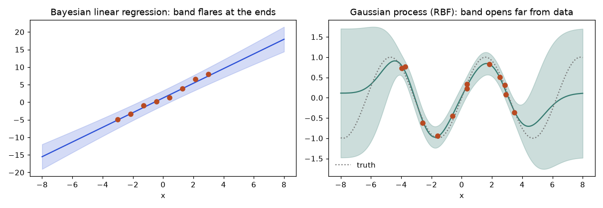
How to read it: both bands are narrow where there are dots and wide where there are none. The line's band flares linearly forever because it still believes in a straight line far away. The GP band widens until it reaches the prior's width and the mean falls back to the prior mean (the dotted line is the true sine; outside [-4, 4] the GP says "I do not know" rather than guessing). Use GPs for small data (up to a few thousand rows, since the cost is cubic in rows), expensive experiments and Bayesian optimisation (Chapter 11), where the uncertainty decides where to try next.
Check yourself
- What does a large length scale mean? Answer: the function changes slowly, so far-apart points are still strongly related; the fit is smoother.
- How is the Bayesian posterior mean related to ridge? Answer: identical when
λ = α σ²; the Bayesian version also returns the covariance of the weights. - Why is the GP uncertainty large at x = 8? Answer: no training points are near, so the kernel ties the prediction weakly to the data and it falls back to the prior.
Chapter recap
- Linear regression finds weights that minimize the sum of squared residuals. The solution is
w = (XᵀX)⁻¹Xᵀy. - The picture:
ŷis the projection ofyonto the space spanned by the feature columns; the residual is perpendicular to every column (Xᵀr = 0). - Leverage (the diagonal of the hat matrix) tells how much each row pulls on the fit.
- Gradient descent reaches the same answer by walking downhill. It works for models with no closed form, but needs a sensible learning rate (below
2/λ_max) and scaled features. - The assumptions are linearity, constant variance, independent errors, no collinearity, and no wild leverage points. Each has a simple symptom you can look for.
- VIF above about 10 means coefficients are unstable. Predictions can still be fine.
- For inference, use SE, CI and the word "associated". For prediction, use a test set and a baseline.
- Linear in the weights lets you add polynomial, spline and interaction columns and still use the same solver.
- Always compare to a trivial baseline (predict the mean). Here the model's RMSE was 56.4 vs 70.5.
| Formula / command | Meaning |
|---|---|
w = (XᵀX)⁻¹Xᵀy, np.linalg.solve(X.T@X, X.T@y) | normal equation |
w ← w − lr·(2/n)·Xᵀ(Xw − y) | gradient descent step |
lr < 2/λ_max | stability limit |
H = X(XᵀX)⁻¹Xᵀ, ŷ = Hy | hat matrix, leverage = diag(H) |
VIF = 1/(1 − R²ⱼ) | collinearity measure |
SE = √diag(σ̂²(XᵀX)⁻¹), CI = ŵ ± t*·SE | uncertainty of coefficients |
R² = 1 − SSE/SST | share of error removed vs the mean baseline |
LinearRegression(), PolynomialFeatures, SplineTransformer | scikit-learn tools |
Practice set
- (easy) Points
(0,1), (1,3), (2,5). Find the line. Answer: exactly ony = 1 + 2x; residuals are all 0. Check: slope= (5−1)/2 = 2. - (easy) With
ŷ = 10 + 4x, what is the residual forx=3, y=25? Answer:ŷ = 22, residual25 − 22 = +3. - (easy) What is the output?
np.c_[np.ones(2), [5, 7]]. Answer:[[1., 5.], [1., 7.]]. - (medium) For
x = [1,2,3,4],y = [2,4,5,9], compute slope and intercept. Answer:x̄ = 2.5,ȳ = 5.Sxy = (−1.5)(−3) + (−0.5)(−1) + (0.5)(0) + (1.5)(4) = 4.5 + 0.5 + 0 + 6 = 11.Sxx = 2.25 + 0.25 + 0.25 + 2.25 = 5. Slope2.2, intercept5 − 2.2 × 2.5 = −0.5. - (medium) Do one gradient-descent step on those four points from
w = [0,0],lr = 0.05. Answer:Xw − y = [−2,−4,−5,−9];Xᵀ(...):[−20, −(2 + 8 + 15 + 36)] = [−20, −61]; gradient(2/4)·[−20, −61] = [−10, −30.5];w = [0.5, 1.525]. - (medium) Find the bug:
w = np.linalg.inv(X.T @ X) @ X.T @ yreturns huge unstable numbers when two columns are duplicates. Answer:XᵀXis singular. Drop the duplicate, uselstsq/ridge, and check VIF or the condition number. - (medium) A model has train RMSE 12 and test RMSE 12.5; the baseline (mean) test RMSE is 13. Is it good? Answer: There is no overfit, but the gain over the baseline is tiny (4 percent). The features carry little signal.
- (medium) Gradient descent prints
nanafter 5 steps. List two causes. Answer: learning rate too large (above2/λ_max); unscaled features with huge values. Fix with scaling and a smaller lr. - (hard, scenario) Your team's regression says each extra courier on shift adds 3 minutes to the average delivery time, but the standard error is 4 minutes. Report it. Answer: The estimate is 3 minutes with 95% CI about
3 ± 7.8 = [−4.8, 10.8]. The data cannot tell whether more couriers slow things down, speed things up, or do nothing; collect more data. - (hard) Compute the leverage sum for 3 points with 2 parameters. Answer: equals 2 (the number of parameters); our values were
0.833 + 0.333 + 0.833. - (interview) "What is the difference between R² and RMSE, and when would you prefer each?" Answer: RMSE is in the units of the target (minutes, rupees), so it says how far off you are. R² is unit-free and says how much better you are than guessing the mean, so it compares models on the same data but not across different datasets. Report both plus a baseline.
- (interview) "A coefficient changed sign when you added a feature. Why?" Answer: the new feature is correlated with the old one (collinearity) or is an omitted confounder; the coefficient measures the effect holding the others fixed, so the meaning changes with the set of features.
(medium) A Bayesian linear model has posterior sd of the slope 0.177 and of the intercept 0.333. Why does the predictive sd at x = 6 exceed that at x = 0? Answer: the slope error is multiplied by x, so it contributes 6 × 0.177 = 1.06 at x = 6 and nothing at x = 0 (the exact value, 1.11, also includes the correlation between the two weights).
Prompt pack
You are my patient, practical professor. I am a working professional moving into data roles, English is my second language, so use short sentences. Topic: deriving the normal equation for linear regression and the geometric view of least squares as projection. Walk me through it step by step with a 3-point example, then ask me to solve a similar 4-point example and check my answer. Define every symbol the first time you use it.
You are my patient, practical professor. I am a working professional moving into data roles and learning ML, English is my second language. Topic: gradient descent for linear regression, learning rate limits and why feature scaling matters. Explain with an analogy first, then give me 8 graded exercises with real numbers (two by hand, the rest in NumPy) without solutions. After I answer each, show the correct steps and explain my mistakes.
You are my patient, practical professor. I am a working professional moving into data roles, English is my second language. Topic: assumptions of linear regression (linearity, constant variance, independent errors, collinearity, leverage) and how to detect each one. Quiz me one question at a time using small residual tables and VIF numbers. Wait for my answer before giving the next question and tell me why each answer is right or wrong.
You are my patient, practical professor. I am a working professional moving into data roles, English is my second language. Topic: inference versus prediction in linear regression: standard errors, confidence intervals, p-values and collinearity. Here is my regression output: [PASTE COEFFICIENT TABLE HERE]. Review it, tell me what I can and cannot conclude, which numbers worry you, and how to explain it to a non-technical manager in five sentences.
You are my patient, practical professor. I am a working professional moving into data roles, English is my second language. Topic: linear regression from scratch in NumPy compared with scikit-learn, plus polynomial, spline and interaction features. Run a mock interview: ask me one question at a time, wait for my answer, grade it out of 10, give a model answer, then ask a harder follow-up. Include at least two coding questions.
In Chapter 2 you met a model whose two cholesterol coefficients had standard errors so large that their signs meant nothing. Real tables have dozens or hundreds of columns, many of them near-copies of each other, and often fewer rows than columns. A plain least-squares fit on such data memorizes noise. Regularization is the cheap, powerful fix: add a small penalty on the size of the weights, and the model becomes calmer. You will derive ridge regression, solve lasso by the soft-threshold rule, watch coefficients shrink and vanish on real data, choose the penalty strength with cross-validation, and learn why feature scaling changes the answer. By the end you will know when to reach for ridge, lasso or elastic net, and what each one assumes.
Reminder: norms (‖w‖₂, ‖w‖₁) and the prior view of regularization are covered in the Math PDF (Pillar 5) and in Chapter 1 of this book (λ = σ²/τ²). Here we put them to work.
3.1 Ridge Regression (L2): Shrinking Everything a Little
Words you need
| Word | Plain meaning |
|---|---|
| Penalty / regularizer | an extra cost added to the loss that grows with the size of the weights |
λ (lambda) or alpha | how strong the penalty is. 0 means no penalty. Bigger means smaller weights |
| L2 norm squared | Σ wⱼ², the sum of squared weights |
| Shrinkage | pulling coefficients toward zero |
| Intercept | never penalized (it only sets the average level) |
Formal definition
ridge loss(w) = Σ (yᵢ − xᵢ·w)² + λ Σ wⱼ²Derivation: the loss is (y − Xw)ᵀ(y − Xw) + λ wᵀw. The gradient is −2Xᵀ(y − Xw) + 2λw. Setting it to zero gives XᵀXw + λw = Xᵀy, so
w_ridge = (XᵀX + λ I)⁻¹ Xᵀ yCompare with Chapter 2: the only change is adding λ to the diagonal of XᵀX. This has a lovely side effect. If XᵀX was singular (duplicate columns) or nearly singular, adding λ on the diagonal makes it invertible and well-behaved. This is the reason for the name "ridge": you add a ridge along the diagonal.
Why not just drop correlated columns? You can, but then you must decide which one to drop. Ridge keeps all of them and shares the credit.
Problem 3.1.1 Use the centred three-point data from Chapter 2: x = [−1, 0, 1] (the original 1,2,3 minus the mean 2) and y − ȳ = [−4/3, −1/3, 5/3]. Find the OLS slope and the ridge slope for λ = 1 and λ = 2. (With one feature and centred data, w = Sxy/(Sxx + λ).)
| Formula | w = Σxy / (Σx² + λ) |
|---|---|
| Plug in | Σxy = (−1)(−4/3) + 0 + (1)(5/3) = 4/3 + 5/3 = 3. Σx² = 1 + 0 + 1 = 2. |
| Compute | OLS (λ = 0): 3/2 = 1.5. Ridge λ = 1: 3/(2+1) = 1.0. Ridge λ = 2: 3/(2+2) = 0.75. |
| Answer | The slope shrinks from 1.5 to 1.0 to 0.75 as λ rises. It never reaches exactly 0. |
| Check | Run Sxy/(Sxx+lam) in NumPy: it prints 1.5, 1.0, 0.75. As λ → ∞ the slope goes to 0, as expected. |
| Why it matters | Ridge turns a "confident" slope into a "cautious" slope. When data is noisy, caution predicts better on new rows. |
Problem 3.1.2 Interpret ridge as MAP (see Chapter 1). Noise has standard deviation σ = 2, and you believe each weight is roughly N(0, τ²) with τ = 1. What λ does that belief imply?
| Formula | λ = σ²/τ² |
|---|---|
| Plug in | λ = 2²/1² |
| Compute | 4/1 = 4 |
| Answer | λ = 4. A tighter belief (τ = 0.5) would give λ = 16. |
| Check | σ²/τ² has no units mismatch: both are variances of the same quantity. |
| Why it matters | λ is not magic. It is the ratio "how noisy is the data" over "how big do I expect the weights to be". |
Ridge on real data
Diabetes data again (Chapter 2): 331 training rows, features standardized with training statistics. Our own ridge (np.linalg.solve(Z.T@Z + lam*np.eye(p), Z.T@(y - y.mean())), intercept ȳ) matches scikit-learn's Ridge(alpha=10) to 4×10⁻¹⁴.
import numpy as np
from sklearn.datasets import load_diabetes
from sklearn.model_selection import train_test_split
from sklearn.preprocessing import StandardScaler
d = load_diabetes()
Xtr, Xte, ytr, yte = train_test_split(d.data, d.target, test_size=.25, random_state=0)
sc = StandardScaler().fit(Xtr); Ztr, Zte = sc.transform(Xtr), sc.transform(Xte); ym = ytr.mean()
def ridge(Z, y, lam):
p = Z.shape[1]; return np.linalg.solve(Z.T @ Z + lam * np.eye(p), Z.T @ (y - y.mean()))
rm = lambda a, p: np.sqrt(np.mean((a - p) ** 2))
print("lam | test RMSE | norm | s1 s2 coef")
for lam in [0, 1, 10, 100, 1000]:
w = ridge(Ztr, ytr, lam); print(lam, round(rm(yte, Zte @ w + ym), 3), round(np.linalg.norm(w), 1), w[4:6].round(1))Predict first: as λ grows from 0 to 1000, will the test error fall forever? Output:
lam | test RMSE | norm | s1 s2 coef
0 56.393 56.8 [-26.5 12.4]
1 56.457 51.8 [-20.4 7.6]
10 56.453 44.0 [-7.4 -2.5]
100 55.521 35.6 [-1.5 -4.6]
1000 59.129 15.9 [1.2 0.1]Explain: the weight vector norm falls steadily (56.8 to 15.9). The collinear pair s1, s2 (coefficients −26.5 and +12.4 with opposite signs, a classic collinearity pattern) settles to small values as λ grows. Test error improves a little at λ = 100 (55.5), then rises (59.1 at 1000) because the model is now too stiff: bias has taken over. This is the bias-variance curve of Chapter 1, with λ as the complexity knob (large λ means a simple model). The gain on this dataset is small because the problem has only 10 columns and 331 rows; ridge pays off much more with more columns (3.4).
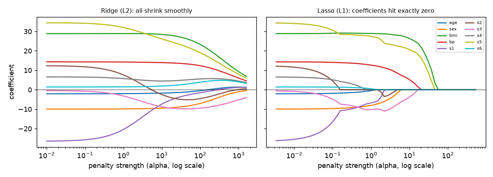
How to read it: each coloured line is one feature's coefficient. Move from left (no penalty) to right (strong penalty). On the left panel all lines glide to zero together and none touches zero until the very end. On the right panel lines snap to zero and stay there.
Connection to the real job
Ridgeis a good default for linear models with many correlated features (marketing mix, sensor data, text TF-IDF).- It makes the linear model's predictions stable when features are noisy or nearly duplicated.
- Many deep-learning libraries call the same idea weight decay.
Applications
- Machine Learning: ridge baselines for high-dimensional tabular data; weight decay in neural nets.
- Data Science: marketing-mix models where channels are correlated.
- Finance: covariance and return models (the "shrinkage estimator" idea).
- Genomics and text: many more columns than rows.
λ on the training error. Training error always prefers λ = 0. Choose λ with validation or cross-validation (3.3).Check yourself
- What does ridge add to
XᵀX? Answer:λtimes the identity matrix (λon the diagonal). - Does ridge ever set a coefficient to exactly zero? Answer: not in practice; it only shrinks.
- When
λ → ∞, what do the non-intercept weights become and what does the model predict? Answer: all weights go to 0; it predicts the training mean.
3.2 Lasso (L1) and Elastic Net: Sparsity
|w|), so a feature that does not earn at least that price is cut to exactly zero. That is automatic feature selection. The name stands for Least Absolute Shrinkage and Selection Operator. Elastic net is a blend of both penalties: it keeps the zeroing of lasso but shares credit among correlated features like ridge.Formal definition
lasso loss(w) = (1/2n) Σ (yᵢ − xᵢ·w)² + α Σ |wⱼ|
elastic net = (1/2n) Σ (...)² + α [ ρ Σ|wⱼ| + (1−ρ)/2 Σ wⱼ² ]Here ρ is the l1_ratio in scikit-learn (1 means pure lasso, 0 means pure ridge). Scikit-learn divides the squared error by 2n; that is why its alpha has a different scale from the ridge alpha above.
There is no closed formula for many features, because |w| has a sharp corner at 0. Instead we use coordinate descent: update one weight at a time, holding the others fixed, and cycle through them. Each one-weight update has a neat closed form, the soft-threshold rule.
Deriving the soft threshold. For one feature, ignoring the others (standardized so that (1/n)Σx² = 1), let ρ = (1/n) Σ x r be the correlation-like number "how much the feature explains the current leftover r". The loss for the weight is ½(w − ρ)² + α|w| plus a constant. For w > 0 the slope is (w − ρ) + α; setting to zero gives w = ρ − α, which is valid only if ρ > α. For w < 0 we get w = ρ + α, valid if ρ < −α. If |ρ| ≤ α neither works, so the minimum sits at the corner w = 0. In one line:
w = sign(ρ) · max(|ρ| − α, 0)In words: shrink toward zero by α; if you would cross zero, stop at zero.
Problem 3.2.1 Same three centred points (Sxy = 3, Sxx = 2). Use the form ½Σ(y − wx)² + λ|w| (no 1/n). Find the lasso slope for λ = 1 and λ = 3.
| Formula | w = sign(Sxy) · max(|Sxy| − λ, 0) / Sxx |
|---|---|
| Plug in | λ = 1: max(3 − 1, 0)/2 = 2/2. λ = 3: max(3 − 3, 0)/2 = 0/2. |
| Compute | λ = 1 gives w = 1.0. λ = 3 gives w = 0. |
| Answer | At λ = 1 the slope is 1.0 (the same as ridge λ = 1 by coincidence); at λ = 3 the feature is dropped completely. |
| Check | At w = 1: loss = ½[(−4/3 + 1)² + (−1/3)² + (5/3 − 1)²] + 1·1 = ½[0.1111 + 0.1111 + 0.4444] + 1 = 1.3333. At w = 1.1: ½[(−1.3333+1.1)² + (−0.3333)² + (1.6667−1.1)²] + 1.1 = ½[0.0544+0.1111+0.3211] + 1.1 = 1.3433. At w = 0.9: the residuals are −0.4333, −0.3333, 0.7667, squares 0.1878, 0.1111, 0.5878, sum 0.8867, half is 0.4433, plus 0.9 gives 1.3433. So 1.0 beats both neighbours. |
| Why it matters | Ridge slope shrinks smoothly; lasso slope sits at an exact zero once the evidence is weaker than the penalty. That is the mechanism of feature selection. |
The geometry: why L1 gives zeros
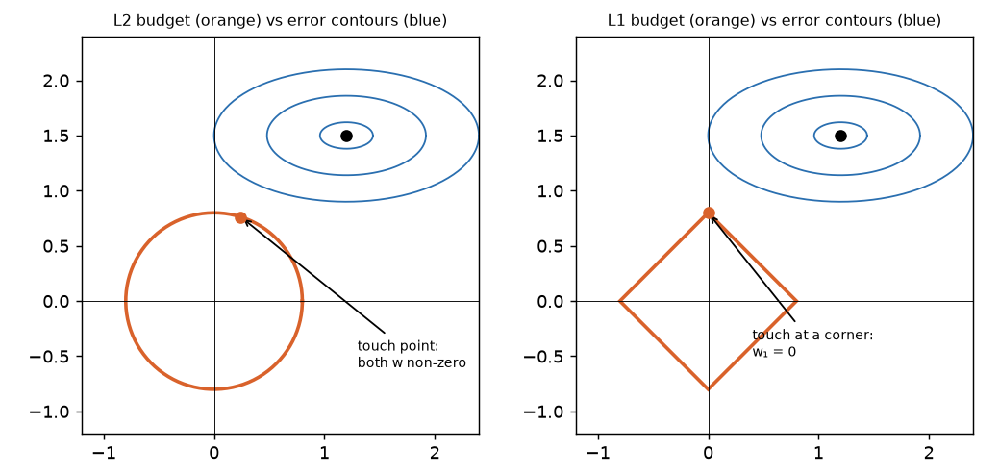
Read it this way. Each axis is one weight. The black dot is the best weights without any penalty (smallest error). The blue ellipses are weight pairs with equal error, getting worse outward. The penalty says "stay inside the orange shape". You want the blue ellipse that just touches the orange shape. A circle has no corners, so the touching point is generic: both weights are non-zero. A diamond has sharp corners on the axes, and an ellipse coming from a distance usually reaches a corner first. At a corner one weight is zero.
Lasso on the diabetes data
We implemented coordinate descent with the soft threshold in NumPy and compared it with sklearn.linear_model.Lasso:
soft = lambda z, t: np.sign(z) * max(abs(z) - t, 0)
def lasso_cd(Z, y, a, it=500):
n, p = Z.shape; w = np.zeros(p); yc = y - y.mean()
for _ in range(it):
for j in range(p):
r = yc - Z @ w + Z[:, j] * w[j] # leftover without feature j
rho = Z[:, j] @ r / n
w[j] = soft(rho, a) / (Z[:, j] @ Z[:, j] / n)
return wResults (alpha is the scikit-learn alpha; maxdiff is the largest difference of a coefficient from Lasso(alpha=a, tol=1e-10)):
| alpha | non-zero features (of 10) | max diff vs sklearn | test RMSE |
|---|---|---|---|
| 0.1 | 10 | 0.0009 | 56.54 |
| 1 | 8 | 0.0000 | 56.56 |
| 5 | 5 | 0.0000 | 57.03 |
| 10 | 4 | 0.0000 | 57.60 |
At alpha = 5 the surviving coefficients (in the units of the standardized features) are bmi 28.0, s5 22.4, bp 8.4, s3 −7.3, sex −1.4; the other five are exactly 0. Five features give a test RMSE of 57.0 against 56.4 for all ten, so the five-feature model loses almost nothing and is much easier to explain. s1 and s2 (the collinear pair) were dropped first.
Collinear twins: ridge, lasso, elastic net behave differently
We make two nearly identical columns (x and x + tiny noise) with true effect 3 on x:
OLS [1.371 1.629] (unstable split, sum 3.0)
ridge [1.494 1.499] (shares evenly)
lasso [2.909 0.001] (picks one twin)
elastic net [1.443 1.444] (shares, with a little shrinkage)Interpretation: OLS splits the 3 in a random way. Ridge splits it evenly. Lasso picks one twin (and which twin it picks can change with a different sample, which is unstable). Elastic net, with l1_ratio = 0.5, shares. Elastic net is usually the safest sparse choice when you have groups of correlated features.
| Method | Penalty | Zeros? | Correlated features | Good for |
|---|---|---|---|---|
| Ridge | Σw² | no | shares credit | many small effects; collinearity |
| Lasso | `Σ | w | ` | yes |
| Elastic net | mix | yes | shares credit | few groups of related effects |
Connection to the real job
Lasso as a screening tool: "out of 300 candidate features, 12 survive" is a sentence in many reports. Remember the survivors are those the model used, not proven causes.
Applications
- Data Science: automatic selection among hundreds of engineered features.
- Genomics: thousands of genes, hundreds of patients.
- Text classification: sparse L1 logistic regression keeps a short list of words.
- MLOps: a sparse model is cheaper to serve and easier to monitor.
Check yourself
- In
w = sign(ρ)·max(|ρ| − α, 0)what happens if|ρ| = 0.3andα = 0.5? Answer:w = 0; the feature is removed. - Which penalty gives exact zeros? Answer: L1 (lasso, and elastic net when
l1_ratio > 0). - Two near-duplicate features, you want both kept and shrunk similarly. Which? Answer: ridge or elastic net.
3.3 Choosing the Strength by Cross-Validation, and Why Scaling Matters
lambda (called alpha in scikit-learn) is a hyperparameter chosen by cross-validation. Because penalties depend on the size of the weights, features must be put on a common scale first.λ is a hyperparameter: the training data cannot tell you its value (it always wants λ = 0). So you hide a piece of data, try many values of λ, and pick the one that predicts the hidden piece best. To make this fair and less noisy, you do it five or ten times with a different hidden piece each time. That is k-fold cross-validation. The second part: the penalty counts weight sizes, and the size of a weight depends on the units of its feature. So we must put all features on the same scale first.How k-fold cross-validation works
- Shuffle rows and split into
kequal folds (herek = 5). - For each fold: train on the other 4, test on the held-out fold, record the error.
- Average the
kerrors. That is the CV score for thisλ. - Repeat for each candidate
λand choose the best (or the largestλwithin one standard error of the best, the "one-standard-error rule", which prefers the simpler model).
Chapter 8 covers the design issues (groups, time) in depth.
from sklearn.linear_model import Ridge, RidgeCV
from sklearn.model_selection import KFold, cross_val_score
alphas = np.logspace(-2, 3, 11)
for a in alphas:
s = -cross_val_score(Ridge(alpha=a), Ztr, ytr, cv=KFold(5, shuffle=True, random_state=0),
scoring="neg_root_mean_squared_error").mean()
print(round(a, 3), round(s, 2))0.01 54.09
0.032 54.09
0.1 54.09
0.316 54.09
1.0 54.08
3.162 54.07
10.0 54.03
31.623 54.03
100.0 54.8
316.228 58.14
1000.0 64.69The CV curve is flat from 0.01 to about 30 and rises sharply after 100. RidgeCV picks alpha = 31.6; its test RMSE is 56.11 (plain OLS: 56.39). The honest summary: on this dataset regularization helps by about 0.3 RMSE units, which is small compared with the noise of the estimate. When the CV curve is flat, pick the stronger penalty (simpler model) or just say it does not matter. LassoCV picked alpha = 1.14 and kept 8 features with test RMSE 56.54; ElasticNetCV chose l1_ratio = 0.9, alpha = 0.416, 10 features, test RMSE 56.35.
Scaling changes the answer for regularized models
OLS gives the same predictions whatever the units. Ridge and lasso do not, because they charge for the numeric size of the weights. Experiment: y = 2·x₁ + 0.02·x₂ + noise, with x₁ of standard deviation 1 and x₂ of standard deviation 100 (so both features matter equally: 2 × 1 = 2, 0.02 × 100 = 2).
unscaled: ridge(alpha=10000) [0.061 0.021] OLS [2.042 0.021]
scaled: ridge(alpha=10000) [0.063 0.061] OLS (scaled) [2.078 2.003]Unscaled: the small-unit feature x₁ needs a large weight (2.04) so it is crushed by the penalty (to 0.061), while x₂ needs only a tiny weight (0.021) so the penalty barely touches it (0.021). The penalty was unfair, purely due to units. After standardizing, both features are treated alike (0.063 and 0.061). Rule: always standardize before ridge, lasso or elastic net, and fit the scaler inside the cross-validation (Chapter 8) so that scale statistics come from training folds only.
Problem 3.3.1 A 5-fold CV for λ = 1 gives fold errors (RMSE) 52, 55, 53, 58, 52. For λ = 100 the errors are 54, 55, 54, 57, 54. Which λ do you choose?
| Formula | CV score = mean of fold errors; also look at the spread. |
|---|---|
| Plug in | λ = 1: (52+55+53+58+52)/5. λ = 100: (54+55+54+57+54)/5. |
| Compute | 270/5 = 54.0 and 274/5 = 54.8. |
| Answer | λ = 1 has the lower mean (54.0 vs 54.8). The sample standard deviation of the λ = 1 fold errors is about 2.55, so a "one standard error" band is about 2.55/√5 = 1.14. The difference (0.8) is smaller than that band, so the two are statistically tied and λ = 100 (the simpler model) is a defensible choice under the one-standard-error rule. |
| Check | Mean of squares of deviations for λ = 1: deviations −2, 1, −1, 4, −2 squares 4, 1, 1, 16, 4 = 26; divided by 4 gives 6.5; square root 2.55 ✓. |
| Why it matters | A tiny gap in the mean is not a reason to prefer a model. Fold-to-fold noise decides. |
Connection to the real job
Pipelines (make_pipeline(StandardScaler(), RidgeCV())) are the standard way to keep scaling inside CV. In production the same fitted scaler must be saved and reused at serving time (Chapter 16).
Applications
- ML: tuning
alphafor linear models,Cfor SVMs and logistic regression. - Data Science: feature-selection screening with LassoCV.
- MLOps: saving the whole pipeline object, not only the model.
Check yourself
- Why can't we pick
λusing training error? Answer: it always picksλ = 0(the most flexible fit). - Why standardize before ridge? Answer: the penalty depends on weight size, which depends on feature units.
- What does the one-standard-error rule choose? Answer: the simplest model whose CV error is within one standard error of the best.
3.4 When Regularization Really Pays: p > n, Collinearity, and the Toolkit
Experiment: 30 rows, 100 columns, 3 real signals
True weights are [3, −2, 1.5, 0, …, 0]. The other 97 columns are pure noise. Test on 1,000 fresh rows.
OLS (minimum-norm solution) test RMSE 3.443
Ridge alpha=10 test RMSE 3.451
Lasso alpha=0.2 test RMSE 0.688 (10 non-zero coefficients; includes columns 0, 1, 2)The noise standard deviation is 0.5, so 0.5 is the best achievable. Ridge does not help here: it shrinks all 100 weights, but 97 of them are noise and ridge keeps a little of each, so the model's error stays at 3.45. Lasso knows (by its assumption) that "few features matter", and that assumption is true here, so it wins by a large margin (0.69). This is inductive bias (Chapter 1) in action: pick the regularizer whose assumption matches the world. If instead the truth has many small effects, ridge wins.
The regularization toolkit (preview of later chapters)
| Tool | What it limits | Where you see it |
|---|---|---|
| L2 / weight decay | size of weights | ridge, SVM C, neural nets |
| L1 | number of non-zero weights | lasso, sparse logistic regression |
| Early stopping | how long we train | boosting, neural nets (Chapters 7, 11) |
| Simpler model / smaller depth | capacity | trees (max_depth) |
| More data | variance | always helps if the model is flexible |
| Dropout, augmentation | co-adaptation, overfit to exact inputs | neural nets (Deep Learning skill map) |
| Ensembling (bagging) | variance | random forests (Chapter 6) |
Model complexity in one table
| Model | Complexity knob | Direction that adds complexity |
|---|---|---|
| Linear | number of features, 1/λ | more features, smaller λ |
| Polynomial | degree | higher degree |
| k-NN | k | smaller k |
| Tree | depth, min samples per leaf | deeper, smaller leaves |
| Boosting | trees, learning rate, depth | more trees, bigger rate, deeper |
| SVM (RBF) | C, gamma | larger C, larger gamma |
Problem 3.4.1 A regression has 500 rows and 800 columns. You run OLS with np.linalg.lstsq. Training RMSE is 0.000. Explain, and name two fixes.
| Formula | A linear model with p parameters can fit any n ≤ p points exactly (when columns are independent). |
|---|---|
| Plug in | p = 800 + 1 = 801 > n = 500. |
| Compute | There is more freedom than data, so the residuals can all be made zero. |
| Answer | The training RMSE of 0 is memorization, not skill. Fixes: ridge or lasso with λ chosen by CV; or reduce columns first (Chapter 13). |
| Check | Shuffle the target and refit: you will still get training RMSE 0 (this is a quick sanity test, Chapter 10). If a fit is "perfect" even on random labels, it says nothing. |
| Why it matters | A perfect training fit is a warning sign, never a result. |
Problem 3.4.2 Lasso (alpha = 5) removed s1 and s2, yet a colleague says "serum cholesterol does not matter for diabetes". Respond.
| Formula | Lasso keeps one of a correlated group and drops the others. |
|---|---|
| Plug in | s1 and s2 have VIFs 59 and 39 (Chapter 2). |
| Compute | The pair carries one shared signal. Lasso zeroed both, but s3 and s5 (other blood-serum columns) survived. |
| Answer | The conclusion is too strong. The model found that, given the other columns, s1 and s2 add little extra. That is a statement about this model and this data, not about biology. |
| Check | Refit with s1 only (drop s2 and others) and compare; or use elastic net, which shares credit. |
| Why it matters | Feature selection is model-dependent. Avoid causal language. |
Connection to the real job
When a recruiter-style question asks "what do you do when you have more features than rows?", the answer has three parts: regularize (L1 if you believe in sparsity, L2 otherwise), reduce dimension, and validate with repeated CV because variance is high.
Applications
- Genomics / biostatistics:
p ≫ nis the norm. - NLP bag-of-words: 100,000 columns, sparse L1/L2 logistic regression is a strong baseline.
- Sensor data / telecom: thousands of correlated counters.
- Quant finance: shrinkage for stable portfolio weights.
Check yourself
- When
p > n, can OLS achieve zero training error? Answer: yes, usually, and that tells you nothing about test error. - Which regularizer fits "I believe only a few features matter"? Answer: L1 (lasso).
- Which fits "many small effects"? Answer: L2 (ridge).
Chapter recap
- Regularization adds a penalty on weight size to the loss. It lowers variance at the price of a little bias.
- Ridge:
w = (XᵀX + λI)⁻¹Xᵀy. It shrinks all weights smoothly, fixes singular or collinear problems, and shares credit among correlated features. - Lasso: L1 penalty. Each coordinate update is the soft threshold, so weak features go to exactly zero.
- Elastic net blends both. It is the usual safe choice with groups of correlated features.
- Geometry: L2's budget is a round ball (no corners, no zeros). L1's budget is a diamond with corners on the axes (zeros).
λis a hyperparameter. Choose it by cross-validation, never by training error. If the CV curve is flat, prefer the simpler model.- Standardize features first (inside the CV pipeline). Penalties depend on units.
- Match the regularizer to the world: few true signals favour lasso, many small effects favour ridge.
- On the diabetes data all linear variants gave RMSE between 56.1 and 56.5, which is the same within noise.
| Formula / command | Meaning |
|---|---|
w = (XᵀX + λI)⁻¹Xᵀy | ridge solution |
w = sign(ρ)·max(‖ρ‖ − α, 0) | soft threshold (lasso update) |
λ = σ²/τ² | ridge as Gaussian prior |
Ridge(alpha), Lasso(alpha), ElasticNet(alpha, l1_ratio) | scikit-learn |
RidgeCV, LassoCV, ElasticNetCV | built-in CV for the penalty |
make_pipeline(StandardScaler(), Ridge()) | scaling inside the model |
Practice set
- (easy) With
Sxy = 6,Sxx = 4, find OLS and ridge (λ = 2) slopes. Answer: OLS6/4 = 1.5; ridge6/(4+2) = 1.0. - (easy) What is the soft threshold of
ρ = −0.8withα = 0.3? Answer:sign(−0.8) · max(0.8 − 0.3, 0) = −0.5. - (easy) What does
alpha=0mean inRidge? Answer: no penalty, the same as OLS. - (medium) With
Sxy = 3,Sxx = 2, at whatλdoes the lasso slope become exactly 0? Answer: whenλ ≥ |Sxy| = 3. - (medium) What is the output?
Ridge(alpha=1e9).fit(X, y).coef_on standardized data. Answer: values extremely close to 0 (the model predicts almost the mean). - (medium) Find the bug:
scaler.fit(X_all)thentrain_test_split, thenRidgeCV. Answer: the scaler saw the test rows. Split first, fit the scaler on train (or put it in a pipeline). - (medium) You see a coefficient table where
bmihas weight 28 andage0.0 fromLassoCV. A manager asks "does age matter?" Answer: not given the other features in this model; it may still correlate with them. Do not claim age has no effect on the outcome. - (medium)
λ = 4,σ = 2. What prior standard deviationτ? Answer:τ² = σ²/λ = 4/4 = 1, soτ = 1. - (hard, scenario) Telecom: 5,000 counters, 800 labelled outages. You need a model the on-call team can read. Answer: standardize, use L1 or elastic-net logistic regression (Chapter 4), choose
αby grouped CV (group by device), report the short list with its stability across bootstrap resamples. - (hard) Show that adding
λto the diagonal ofXᵀXalways makes it invertible. Answer:XᵀXis positive semi-definite (eigenvalues ≥ 0). Addingλ > 0makes every eigenvalue at leastλ > 0, and a matrix with no zero eigenvalue is invertible. - (interview) "L1 vs L2?" Answer: Both shrink weights. L2 shrinks smoothly, never to exactly zero, and shares credit between correlated features. L1 shrinks by a constant amount and sets weak features to zero, giving feature selection but unstable choices among correlated features. Probabilistically, L2 is a Gaussian prior and L1 a Laplace prior. Elastic net blends them.
- (interview) "Why must you standardize before lasso?" Answer: the penalty is on the size of the coefficient. A feature measured in small units needs a large coefficient and would be penalized more. Standardizing makes the penalty fair.
Prompt pack
You are my patient, practical professor. I am a working professional moving into data roles and learning ML, English is my second language, so use simple words. Topic: ridge regression: the closed-form solution, why adding lambda to the diagonal helps with collinearity, and shrinkage. Teach it with a 3-point example, then give me 6 graded exercises with numbers, wait for my answers, and check each step.
You are my patient, practical professor. I am a working professional moving into data roles, English is my second language. Topic: lasso and the soft-threshold rule, and why L1 produces exact zeros (the diamond-versus-circle picture). Explain with an analogy, then ask me to compute three soft-threshold values and to explain the picture in my own words. Correct me kindly and explain the reasoning.
You are my patient, practical professor. I am a working professional moving into data roles and learning ML, English is my second language. Topic: choosing the regularization strength with k-fold cross-validation and the one-standard-error rule, and why features must be standardized first. Here are my fold errors for several alpha values: [PASTE HERE]. Review them, tell me which alpha to pick and why, and warn me about any leakage mistake in my setup.
You are my patient, practical professor. I am a working professional moving into data roles, English is my second language. Topic: ridge vs lasso vs elastic net for correlated features and for p greater than n. Quiz me one question at a time with small scenarios (duplicate columns, 100 columns and 30 rows, thousands of text features). After each answer tell me the better answer and the reasoning.
You are my patient, practical professor. I am a working professional moving into data roles and preparing for data science interviews, English is my second language. Topic: regularization, bias-variance and L1 versus L2 including the Bayesian prior view. Run a mock interview: one question at a time, wait for my answer, score it out of 10, show a model answer in simple English, and then ask a harder follow-up.
A bank wants to know "will this customer default?", a hospital wants "is this tumour malignant?", a clinic wants "will this patient miss the appointment?". These are yes-or-no questions, and a straight-line regression (Chapter 2) gives answers like 1.7 or −0.3, which are not probabilities. Logistic regression fixes that with one small trick: pass the straight-line score through an S-shaped curve so the output always lies between 0 and 1. It is still one of the most used models in industry (credit scoring, ad click prediction, medical risk), and it is the building block of every neural-network classifier. In this chapter you will derive the gradient of the loss with your own hands (the most common ML interview derivation), build the model from scratch in NumPy, match scikit-learn to six decimal places, read coefficients as odds ratios, handle imbalanced classes with weights, extend to many classes with softmax, and meet the count and money models (Poisson, Gamma, Tweedie) that live in the same family. You will also see why a single linear unit cannot learn XOR, which is why we need networks.
Prerequisites: Chapter 1 (log loss as Bernoulli maximum likelihood), Chapter 2 (the linear score and gradient descent), Chapter 3 (regularization). Derivative rules: Math PDF, Pillar 2.
4.1 Sigmoid, Probability, Odds and Log-Odds
Words you need
| Word | Meaning | Formula | Example |
|---|---|---|---|
Probability p | chance of the event, 0 to 1 | 0.8 | |
| Odds | chance for divided by chance against | p/(1−p) | 0.8/0.2 = 4 ("4 to 1") |
| Log-odds (logit) | natural log of the odds | ln(p/(1−p)) | ln 4 = 1.386 |
| Sigmoid (logistic function) | maps any number to (0, 1) | σ(z) = 1/(1+e⁻ᶻ) | σ(1.386) = 0.8 |
Score z | linear combination of features | z = w·x + b |
Why is it called "logistic"? The function σ(z) was first used to model population growth that levels off (logistic growth). Why "regression" if it classifies? Because it regresses the log-odds (a number) on the features; we then turn the number into a class by a cutoff.
The model
z = w₁x₁ + … + w_p x_p + b (any real number)
p = σ(z) = 1 / (1 + e^(−z)) (probability that y = 1)
predicted class = 1 if p ≥ 0.5 else 0 (the 0.5 can be changed, see Chapter 9)Facts you can verify: σ(0) = 0.5; σ(−z) = 1 − σ(z); the curve is steepest at 0 with slope 0.25; p = 0.5 exactly when z = 0.
Values computed in NumPy:
z : -4 -2 0 1 2 4
sigma : 0.018 0.1192 0.5 0.7311 0.8808 0.982
p 0.5 0.8 0.9 0.99
odds 1.0 4.0 9.0 99.0
logit 0.0 1.386 2.197 4.595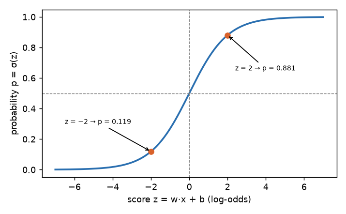
How to read it: the score z on the bottom axis can be any number from minus infinity to infinity. The curve squeezes it into the 0-to-1 range. Large positive scores mean "very sure it is 1"; large negative mean "very sure it is 0"; a score near 0 means "I cannot tell".
Problem 4.1.1 A model gives the score z = 2 to a customer. What is the probability of default, the odds, and the log-odds?
| Formula | p = 1/(1 + e⁻ᶻ); odds = p/(1−p); log-odds = z. |
|---|---|
| Plug in | e⁻² = 0.1353. |
| Compute | p = 1/1.1353 = 0.8808. Odds = 0.8808/0.1192 = 7.389, which equals e² = 7.389. Log-odds = ln 7.389 = 2. |
| Answer | The probability is 0.881 (88 percent), the odds are about 7.4 to 1, and the log-odds are 2. |
| Check | σ(−2) = 0.1192 = 1 − 0.8808 ✓ (symmetry). |
| Why it matters | In plain words, for this customer "default" is about seven times as likely as "no default". |
Problem 4.1.2 The coefficient of late_payments is w = 0.5 (log-odds per late payment). What happens to the odds when a customer has one more late payment, all else equal?
| Formula | odds ratio = e^w. |
|---|---|
| Plug in | e^0.5 |
| Compute | e^0.5 = 1.6487 |
| Answer | Each extra late payment multiplies the odds of default by about 1.65 (a 65 percent increase in the odds, not in the probability). |
| Check | If odds were 1 (p = 0.5) they become 1.649, so p = 1.649/2.649 = 0.6225. The probability moved from 0.5 to 0.62, not to 0.825. |
| Why it matters | "65 percent more likely" is a common wrong sentence. The right one is "the odds are 1.65 times larger". Probability changes depend on where you start. |
Connection to the real job
Credit-scorecard teams present coefficients as odds ratios. Many "propensity" models (will click, will churn) are logistic regression. In everyday terms: a risk score like a weather forecast's "chance of rain", where the model gives the probability that a parcel is late or an appointment is missed.
Applications
- Data Science: churn, propensity, conversion models and their odds-ratio reports.
- Banking: PD (probability of default) scorecards.
- Healthcare: risk scores (for example heart-disease risk).
- Marketing: uplift and click-through prediction.
Check yourself
p = 0.2. What are the odds? Answer:0.2/0.8 = 0.25("1 to 4").- What is
σ(0)? Answer: 0.5. - Coefficient
−0.7: what happens to the odds? Answer: they are multiplied bye^−0.7 = 0.497, roughly halved.
4.2 The Loss and Its Gradient, Derived
−ln(probability you gave to what really happened). Then training means turning the weights to reduce the average embarrassment.Log loss (binary cross-entropy)
For one example with true label y ∈ {0,1} and predicted p = σ(z):
loss(y, p) = −[ y·ln p + (1−y)·ln(1−p) ]If y = 1 only the first term remains: −ln p. If y = 0: −ln(1−p). From Chapter 1: this is exactly the negative log-likelihood of a Bernoulli (coin-flip) model, so minimizing it is maximum likelihood.
The derivation of the gradient (learn this one by heart)
We want ∂loss/∂w_j. Use the chain rule: loss → p → z → w_j.
- Step 1 The sigmoid's derivative:
σ'(z) = σ(z)(1 − σ(z)) = p(1−p). (Proof:σ = (1+e⁻ᶻ)⁻¹, soσ' = e⁻ᶻ/(1+e⁻ᶻ)² = σ · e⁻ᶻ/(1+e⁻ᶻ) = σ(1−σ).) - Step 2 The loss derivative with respect to
p:∂loss/∂p = −y/p + (1−y)/(1−p) = (p − y)/(p(1−p)). (Combine the fractions:−y(1−p) + (1−y)p = p − y.) - Step 3 The score derivative:
∂z/∂w_j = x_j. - Step 4 Multiply:
∂loss/∂w_j = (p − y)/(p(1−p)) · p(1−p) · x_j = (p − y) x_j.
The ugly p(1−p) terms cancel exactly. That is the reason log loss and sigmoid are a perfect pair:
∂loss/∂w_j = (p − y) · x_j ∂loss/∂b = (p − y)
Mean over n rows, in matrix form: ∇w = (1/n) Xᵀ (p − y)Compare with Chapter 2's linear regression gradient (2/n)Xᵀ(ŷ − y): it is the same shape, "features times the error". With L2 regularization (Chapter 3), add λ w to the gradient.
Problem 4.2.1 Three customers: feature x = [1, 2, 3], labels y = [0, 0, 1]. Start with w = 0, b = 0. Compute the loss, the gradient, and one gradient-descent step with learning rate 1.
| Formula | p = σ(wx + b); ∇w = mean((p − y)x); ∇b = mean(p − y); loss = −mean[y ln p + (1−y) ln(1−p)]. |
|---|---|
| Plug in | With w = b = 0: z = 0, so p = 0.5 for every row. |
| Compute (loss) | Each row costs −ln 0.5 = 0.6931, so the mean loss is 0.6931. |
| Compute (gradient) | p − y = [0.5, 0.5, −0.5]. ∇w = (0.5·1 + 0.5·2 + (−0.5)·3)/3 = (0.5 + 1 − 1.5)/3 = 0. ∇b = (0.5 + 0.5 − 0.5)/3 = 0.1667. |
| Compute (step) | w = 0 − 1·0 = 0; b = 0 − 1·0.1667 = −0.1667. New p = σ(−0.1667) = 0.4584 for all rows. New loss = −[2·ln(1−0.4584) + 1·ln(0.4584)]/3 = [2·0.6131 + 0.7802]/3 = 0.6688. |
| Answer | The loss falls from 0.6931 to 0.6688. The first step lowered the intercept because two of the three customers are class 0 (the model should lean toward 0 before it uses the feature). |
| Check | A numerical derivative (L(w+ε) − L(w−ε))/2ε with ε = 10⁻⁶ gave ∇w = 0.0 and ∇b = 0.16667, matching the formula. |
| Why it matters | The gradient has no p(1−p) factor, so a confidently wrong prediction (p near 0 when y = 1) still has a large gradient (about −x). Learning does not stall, unlike squared error on a sigmoid. |
Problem 4.2.2 One customer, x = 3, y = 1, currently p = 0.1. What is the gradient ∂loss/∂w? What if p = 0.9?
| Formula | (p − y)·x |
|---|---|
| Plug in | p = 0.1: (0.1 − 1)·3. p = 0.9: (0.9 − 1)·3. |
| Compute | −2.7 and −0.3. |
| Answer | When the model is badly wrong (p = 0.1) the gradient is nine times larger than when it is almost right. |
| Check | Ratio 2.7/0.3 = 9 = (1 − 0.1)/(1 − 0.9). |
| Why it matters | The gradient is proportional to the error, which is exactly the behaviour we want from a learner: big errors, big corrections. |
From-scratch implementation
import numpy as np
from sklearn.datasets import load_breast_cancer
from sklearn.linear_model import LogisticRegression
from sklearn.model_selection import train_test_split
from sklearn.preprocessing import StandardScaler
from sklearn.metrics import accuracy_score, log_loss
sig = lambda z: 1 / (1 + np.exp(-z))
class MyLogReg:
def __init__(s, lam=0., lr=0.5, steps=5000, cw=None):
s.lam, s.lr, s.steps, s.cw = lam, lr, steps, cw # cw = (weight of class 0, weight of class 1)
def fit(s, X, y):
n, p = X.shape; s.w = np.zeros(p); s.b = 0.
sw = np.ones(n) if s.cw is None else np.where(y == 1, s.cw[1], s.cw[0])
for _ in range(s.steps):
pr = sig(X @ s.w + s.b)
r = sw * (pr - y) / n # (p - y), averaged, optionally weighted
s.w -= s.lr * (X.T @ r + s.lam * s.w) # gradient + L2 term; the intercept is not penalized
s.b -= s.lr * r.sum()
return s
def predict_proba(s, X): return sig(X @ s.w + s.b)
d = load_breast_cancer()
Xtr, Xte, ytr, yte = train_test_split(d.data, d.target, test_size=.25, random_state=0, stratify=d.target)
sc = StandardScaler().fit(Xtr); Ztr, Zte = sc.transform(Xtr), sc.transform(Xte)
m = MyLogReg(lam=0.01).fit(Ztr, ytr)
n = len(ytr)
sk = LogisticRegression(C=1/(n*0.01), tol=1e-10, max_iter=10000).fit(Ztr, ytr)
print("max |w diff|", np.abs(m.w - sk.coef_[0]).max(), "b", m.b, sk.intercept_)
pm = m.predict_proba(Zte)
print("test acc", accuracy_score(yte, pm > .5), accuracy_score(yte, sk.predict(Zte)))
print("logloss", log_loss(yte, pm), log_loss(yte, sk.predict_proba(Zte)[:, 1]))The data: 569 tumours, 30 measurements, label 1 = benign (357) or 0 = malignant (212) in scikit-learn's coding. Predict first: will our loop and scikit-learn agree? Real output:
max |w diff| 4.1775893162149247e-07 b 0.5419593279873942 [0.542]
test acc 0.951048951048951 0.951048951048951
logloss 0.09862906835281743 0.09862905898568458Explain: weights agree to 4×10⁻⁷, test accuracy is the same (95.1 percent), and test log loss agrees to 7 decimals. One detail: scikit-learn's C multiplies the sum of the losses and the penalty is ½‖w‖², so it relates to our λ (the mean-loss form) by C = 1/(n·λ). In Chapter 3 we saw that alpha for ridge and lasso also depends on the exact formula; always read the docs for the scale convention. Training accuracy was 99.06 percent against 95.1 percent on test, a mild gap (Chapter 1).
Regularization strength
lam 0 |w| 10.76 test logloss 0.1206 acc 0.951
lam 0.001 |w| 4.77 test logloss 0.0865 acc 0.958
lam 0.01 |w| 2.32 test logloss 0.0986 acc 0.951
lam 0.1 |w| 1.11 test logloss 0.1594 acc 0.958
lam 1 |w| 0.44 test logloss 0.3088 acc 0.930Read it: with no penalty the weight vector is large (10.8) and test log loss is 0.121; a small penalty (0.001) cuts the weights by more than half and gives the best log loss (0.0865); too much penalty (λ = 1) over-shrinks and the loss climbs to 0.31, since the predicted probabilities become timid. Note accuracy hardly moves while log loss moves a lot: log loss sees the confidence, accuracy only the side of 0.5 (Chapter 1: loss versus metric). L1 (penalty="l1", solver="liblinear", C=0.1) kept 7 of 30 features with test accuracy 93.7 percent.
Odds-ratio reading on real data
After standardizing, the largest coefficient magnitudes (per one standard deviation) were worst texture −0.738 (odds ratio e^−0.738 = 0.478), worst radius −0.682 (0.506), worst concave points −0.663 (0.515). Since class 1 = benign, a texture one standard deviation higher roughly halves the odds that the tumour is benign. The radius, perimeter and concave-point columns are strongly correlated, so, as in Chapter 2, individual coefficients should not be over-read.
Connection to the real job
"Derive the gradient of logistic loss" is a classic interview request, and the result Xᵀ(p − y)/n is also the gradient at the last layer of every neural-network classifier trained with cross-entropy.
Applications
- Machine Learning: the baseline for every binary problem; the last layer of classifiers.
- Deep Learning: the output layer of image and text classifiers.
- Banking and insurance: regulated scorecards where coefficients must be explained.
- Ads: online logistic regression trained with SGD on billions of rows.
p(1−p) and nearly vanishes when the model is confidently wrong, so training stalls. Use log loss.Check yourself
- What is the gradient of log loss with respect to
w_jfor one row? Answer:(p − y)·x_j. - Why does the
p(1−p)factor disappear? Answer: it appears in the derivative of the sigmoid and in the denominator of the derivative of the loss; they cancel. - In scikit-learn, bigger
Cmeans weaker or stronger regularization? Answer: weaker.
4.3 Decision Boundary, Thresholds and Class Weights
z equals 0. In two features that is a straight line, in three a flat sheet. Points far from the border are confident predictions; points near it are coin flips.Formal definition
The boundary for a threshold t is {x : σ(w·x + b) = t}, that is w·x + b = ln(t/(1−t)). For t = 0.5 the right side is 0. The vector w points toward the class-1 side and is perpendicular to the boundary. The distance from a point to the boundary is |z|/‖w‖, so the model is a distance-based confidence.
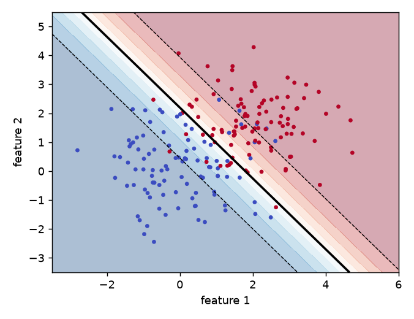
How to read it: the solid line is where the model's probability is 0.5. The dashed lines are where it is 0.1 and 0.9. The more the lines are spaced apart, the slower the confidence changes. The shaded colours show the probability in every position of the map.
Problem 4.3.1 A two-feature model fitted on this data gave w = (1.543, 1.261), b = −2.768. Classify the points (1,1), (2,2), (0,0) and find where the boundary crosses the axes.
| Formula | z = w₁x₁ + w₂x₂ + b, p = σ(z). |
|---|---|
| Plug in | (1,1): 1.543 + 1.261 − 2.768. (2,2): 3.086 + 2.522 − 2.768. (0,0): −2.768. |
| Compute | z = 0.036 → p = 0.509; z = 2.838 → p = 0.945; z = −2.768 → p = 0.059. The boundary z = 0 crosses the x₂-axis at 2.768/1.261 = 2.196 (when x₁ = 0) and the x₁-axis at 2.768/1.543 = 1.795. |
| Answer | Point (1,1) is almost exactly on the border (51 percent class 1), (2,2) is confidently class 1 (94.5 percent), (0,0) is confidently class 0 (5.9 percent). |
| Check | The point (1.795, 0) gives z = 1.543×1.795 − 2.768 = 0.001 ≈ 0 ✓. |
| Why it matters | The three probabilities show the difference between "positive" and "confident positive". Point (1,1) would be labelled 1 but only just. Business decisions should often use the probability, not just the label. |
Thresholds: the 0.5 is a default, not a law
The cutoff should come from costs (Chapter 9). If a missed fraud costs 9 times more than a false alarm, flag a transaction when p > 1/(1+9) = 0.1. In log-odds, a threshold of t = 0.3 means z > ln(0.3/0.7) = −0.847. Changing the threshold slides the boundary parallel to itself.
Class weights
With imbalanced data (rare positives), plain training minimizes the average loss, which is dominated by the majority class. Class weights multiply each example's loss by a weight (a rare example counts more). Setting class_weight="balanced" gives class c the weight n/(k · n_c). Experiment: 5,000 rows, 10 features, 5.7 percent positives:
from sklearn.datasets import make_classification
from sklearn.metrics import precision_score, recall_score
X, yy = make_classification(5000, 10, n_informative=4, weights=[.95], flip_y=.02, random_state=0, class_sep=1.0)
Xa, Xb, ya, yb = train_test_split(X, yy, test_size=.3, random_state=0, stratify=yy)
for cw in [None, "balanced"]:
c = LogisticRegression(class_weight=cw, max_iter=1000).fit(Xa, ya); pr = c.predict(Xb)
print("cw", cw, "acc", round(accuracy_score(yb, pr), 3), "prec", round(precision_score(yb, pr), 3),
"recall", round(recall_score(yb, pr), 3), "mean p", round(c.predict_proba(Xb)[:, 1].mean(), 3))prevalence 0.0574
cw None acc 0.944 prec 0.667 recall 0.047 mean p 0.061
cw balanced acc 0.679 prec 0.101 recall 0.581 mean p 0.411Explain: without weights, accuracy is 94.4 percent but recall is 4.7 percent. The model finds almost none of the positives (a model that always says "negative" scores 94.3 percent accuracy: no better). With balanced weights recall jumps to 58 percent, accuracy falls to 67.9 percent, and precision is 10 percent: many false alarms. Also see the last column: the average predicted probability moved from 0.061 (close to the true rate 0.057) to 0.411. Weighting distorts the probabilities. Use weights to improve ranking and recall, but if you need real probabilities, recalibrate (Chapter 9) or move the threshold instead (Chapter 12).
Problem 4.3.2 In the experiment above, how many of the 1,500 test rows are positive, and how many positives does each model find?
| Formula | positives = prevalence × 1500; found = recall × positives. |
|---|---|
| Plug in | 0.0574 × 1500; 0.047 × 86; 0.581 × 86. |
| Compute | ≈ 86 positives; ≈ 4 found without weights; ≈ 50 found with balanced weights. |
| Answer | The plain model catches about 4 of 86 positives; the weighted model catches about 50 of 86 at the price of many false alarms. |
| Check | Precision 0.101 with 50 true positives means about 50/0.101 ≈ 495 flagged rows, so about 445 false alarms. |
| Why it matters | "94 percent accurate" hides everything. Always report precision and recall for rare events. |
Connection to the real job
Fraud, churn, defect detection and incident prediction are all rare-positive problems. The choice between class weights, threshold shifting and resampling is a daily decision (Chapter 12).
Applications
- Fraud / security: flag at a threshold chosen by review capacity.
- Healthcare screening: high recall first, then confirm with a second test.
- Operations: alert on "p(outage in 1 hour) > 0.2".
Check yourself
- Where is the decision boundary of a logistic model with threshold 0.5? Answer: where
w·x + b = 0. - A threshold of 0.1 instead of 0.5 gives more or fewer positive predictions? Answer: more.
- What does
class_weight="balanced"do to predicted probabilities? Answer: it inflates them for the rare class (they are no longer calibrated).
4.4 Many Classes: Softmax
Formal definition
For K classes, the model has a weight vector w_k and bias b_k per class and computes z_k = w_k·x + b_k. Then
p_k = e^(z_k) / Σ_j e^(z_j)
loss = − ln p_(true class) (categorical cross-entropy)
∂loss/∂z_k = p_k − y_k (y_k = 1 for the true class, else 0)The gradient has the same beautiful form as in the binary case: predicted probability minus truth. For K = 2 softmax reduces to the sigmoid (just a different parametrization). To avoid overflow, subtract max(z) from all scores before exponentiating; this does not change the result.
Problem 4.4.1 Scores z = (2.0, 1.0, 0.1) for the true class 0. Find the softmax probabilities, the loss, and the gradient on the scores.
| Formula | p_k = e^(z_k)/Σe^(z_j); loss = −ln p₀; gradient = p − y. |
|---|---|
| Plug in | e² = 7.389, e¹ = 2.718, e^0.1 = 1.105; their sum is 11.2125. |
| Compute | p = (0.659, 0.2424, 0.0986). Loss = −ln 0.659 = 0.417. Gradient = (0.659 − 1, 0.2424 − 0, 0.0986 − 0) = (−0.341, 0.2424, 0.0986). |
| Answer | The model gives 65.9 percent to the right class. The negative gradient on class 0 means "raise this score" and the positives on the other two mean "lower these". |
| Check | The probabilities add to 0.659 + 0.2424 + 0.0986 = 1.0 and the gradients add to 0 (as they always do). |
| Why it matters | In plain words: the update pushes up the right class and pushes down every wrong one, in proportion to how much probability it wrongly took. |
Training a softmax model on the iris flowers (150 rows, 4 features, standardized, NumPy loop of 3,000 steps with lr = 0.5) gave accuracy 0.98 and log loss 0.049. (This is training accuracy, shown only to demonstrate that the update rule works. Use a split for honest numbers.) In scikit-learn, LogisticRegression handles multi-class automatically; the other family, one-vs-rest, trains K separate binary models.
Connection to the real job
Every neural-network classifier (image, text, tabular) ends with a softmax over classes. The language models behind chat assistants use a softmax over the whole vocabulary.
Applications
- Deep Learning: the output layer for classification.
- NLP: intent classification, language identification.
- Computer vision: image classes.
Check yourself
- What do softmax outputs always sum to? Answer: 1.
- What is the gradient of cross-entropy with respect to the scores? Answer:
p − y(the vector of predicted probabilities minus the one-hot truth). - Why subtract the maximum score before exponentiating? Answer: to prevent overflow; the probabilities do not change.
4.5 Generalized Linear Models: Counts, Money and Exposure
The recipe
| Part | Meaning | Logistic example | Poisson example |
|---|---|---|---|
Linear score z = w·x + b | always the same | the same | the same |
Link g(μ) = z | how the mean μ relates to z | logit | log: μ = e^z |
| Noise distribution | how data scatters around μ | Bernoulli | Poisson |
| Loss | the negative log-likelihood (the deviance) | log loss | Poisson deviance |
With the log link, effects multiply: μ = e^(w₁x₁) · e^(w₂x₂) …. A coefficient of 0.5 means "multiply the expected count by e^0.5 = 1.65". That is why GLMs fit pricing problems so well (insurers multiply base rate by factors).
| Target | Family | Link | Typical use |
|---|---|---|---|
| 0/1 | Bernoulli (logistic) | logit | default, churn |
| Counts, 0,1,2,… | Poisson | log | claims, tickets, visits |
| Counts with extra scatter (variance greater than mean, "overdispersion") | Negative binomial | log | call-centre volumes |
| Positive, skewed amounts | Gamma | log | claim size, order value |
| Zero-heavy positive amounts | Tweedie (between Poisson and Gamma) | log | total claim cost per policy |
Exposure and offsets
If one policy was observed for 0.2 years and another for 1 year, their claim counts are not comparable. Model the rate instead: μ = exposure × e^(w·x + b), or ln μ = ln(exposure) + w·x + b. The term ln(exposure) has a fixed coefficient of 1 and is called an offset. In scikit-learn, PoissonRegressor has no offset argument; the standard trick is to fit the rate y/exposure with sample_weight = exposure, which maximizes the same likelihood.
Experiment: 20,000 policies, true model rate = exp(−3 + 0.02·(age − 40) + 0.5·urban), exposure uniform between 0.2 and 1 year, counts ~ Poisson(rate × exposure):
from sklearn.linear_model import PoissonRegressor, GammaRegressor, LinearRegression
rng = np.random.default_rng(0); n = 20000
age = rng.uniform(18, 70, n); urban = rng.integers(0, 2, n); expo = rng.uniform(.2, 1, n)
rate = np.exp(-3 + 0.02*(age - 40) + 0.5*urban); cnt = rng.poisson(rate * expo)
X = np.c_[age - 40, urban]
pr = PoissonRegressor(alpha=0, max_iter=1000).fit(X, cnt/expo, sample_weight=expo)
print("Poisson coef", pr.coef_, "intercept", pr.intercept_, "true [0.02,0.5,-3]")
print("mean count", cnt.mean(), "var", cnt.var())
print("OLS on rate", LinearRegression().fit(X, cnt/expo, sample_weight=expo).coef_)Poisson coef [0.0207 0.5838] intercept -3.06034893616742 true [0.02,0.5,-3]
mean count 0.04485 var 0.0466384775
OLS on rate [0.0015 0.0425]Explain: the Poisson model recovers the age effect (0.0207 vs true 0.02) and the intercept (−3.06 vs −3). The urban effect is 0.584 against a true 0.5; with only about 900 events in the whole dataset (mean count 0.045 times 20,000) the noise in the estimate is large, and a standard error would tell you so (not computed here). The mean 0.0449 and variance 0.0466 are nearly equal, which is the Poisson signature; if the variance were much greater than the mean we would switch to negative binomial (statsmodels, not installed here, not run). The OLS coefficients are on the additive scale (increments of the rate), so they cannot be compared directly with the multiplicative Poisson coefficients, and OLS could predict negative rates.
For skewed positive amounts, Gamma with a log link: claim severities drawn from a Gamma distribution with mean exp(6 + 0.3·urban):
Gamma coef [-0.0003 0.308 ] intercept 5.99530722898581 true: urban 0.3, intercept 6The estimate 0.308 for urban (true 0.3) and 5.995 for the intercept (true 6) are close. TweedieRegressor(power=1.5, link="log") handles a mix of zeros and positive amounts in one model (the total cost per policy); that one was not run here.
Problem 4.5.1 The fitted Poisson model has intercept −3.06, age coefficient 0.0207 per year (relative to age 40), and urban coefficient 0.584. Predict the expected claim count for a 50-year-old urban driver observed for half a year.
| Formula | μ = exposure × exp(b + w_age·(age − 40) + w_urban·urban). |
|---|---|
| Plug in | exposure = 0.5; age − 40 = 10; urban = 1. Score = −3.06 + 0.0207×10 + 0.584. |
| Compute | Score = −3.06 + 0.207 + 0.584 = −2.269. e^−2.269 = 0.1035. μ = 0.5 × 0.1035 = 0.0518. |
| Answer | The expected claim count is about 0.052, roughly one claim per 19 half-years of such drivers (about 5.2 per 100 half-year policies). |
| Check | A urban driver multiplies the rate by e^0.584 = 1.79 compared with rural; 0.1035/1.79 = 0.0578 would be the rural rate per year, and 0.0578 × 1.0 ≈ e^(−3.06+0.207) = 0.0576 ✓. |
| Why it matters | Pricing is the rate times exposure; forgetting exposure would charge the half-year driver as if observed for a year. |
Connection to the real job
Insurance, telecom (tickets per customer), web analytics (events per session) and demand forecasting all use these models. Gradient-boosting libraries expose the same losses as objective="poisson", "gamma", "tweedie".
Applications
- Insurance: frequency (Poisson) times severity (Gamma), or Tweedie pure premium.
- Operations: tickets per hour, requests per minute (Poisson rate with exposure = time).
- Retail: units sold per store-day.
Check yourself
- What does a log link imply about effects? Answer: they multiply.
- What is an offset for? Answer: to account for different exposure (observation time or size) by adding
ln(exposure)with a fixed coefficient of 1. - Variance much greater than the mean in count data. Which model? Answer: negative binomial (or quasi-Poisson).
4.6 The Perceptron, the XOR Problem and the Bridge to Neural Networks
The algorithm
Labels are −1 or +1. Predict sign(w·x + b). For each example the model gets wrong, update w ← w + y·x and b ← b + y. If the classes can be separated by a line, the algorithm is guaranteed to find one in a finite number of updates (the perceptron convergence theorem).
Problem 4.6.1 Run one pass of the perceptron on (x₁, x₂, y) = (1,1,+1), (−1,−1,−1) starting at w = (0,0), b = 0.
| Formula | Update on error w ← w + y·x, b ← b + y. (A score of 0 counts as an error.) |
|---|---|
| Plug in | First point: score 0 (not > 0), so it counts as a mistake; y = +1, x = (1,1). |
| Compute | w = (0,0) + 1·(1,1) = (1,1), b = 1. Second point: score = (1)(−1) + (1)(−1) + 1 = −1, predicted −1, correct (y = −1), no update. |
| Answer | After one pass w = (1,1), b = 1, and both points are classified correctly. |
| Check | First point: score 1 + 1 + 1 = 3 > 0 ✓; second: −1 < 0 ✓. |
| Why it matters | The update is "add the example you got wrong", the same idea as the logistic gradient (p − y)x but with a hard 0/1 prediction instead of a probability. |
XOR
XOR is "true when exactly one input is true": points (0,0)→0, (0,1)→1, (1,0)→1, (1,1)→0. No straight line separates the 1s from the 0s (the two 1s are at opposite corners of a square, as are the two 0s).
from sklearn.linear_model import Perceptron
from sklearn.neural_network import MLPClassifier
Xx = np.array([[0,0],[0,1],[1,0],[1,1.]]); yx = np.array([0,1,1,0])
pc = Perceptron(max_iter=1000, tol=None, random_state=0).fit(Xx, yx); print("perceptron XOR acc", pc.score(Xx, yx), pc.predict(Xx))
Xx2 = np.c_[Xx, Xx[:,0]*Xx[:,1]]; lr = LogisticRegression(C=1e4).fit(Xx2, yx); print("logreg w/ x1*x2 acc", lr.score(Xx2, yx))
print("perceptron AND", Perceptron(max_iter=1000, tol=None, random_state=0).fit(Xx, np.array([0,0,0,1])).score(Xx, np.array([0,0,0,1])))
mlp = MLPClassifier((4,), activation="tanh", solver="lbfgs", random_state=1, max_iter=2000).fit(Xx, yx); print("MLP XOR", mlp.predict(Xx))perceptron XOR acc 0.5 [0 0 0 0]
logreg w/ x1*x2 acc 1.0
perceptron AND 1.0
MLP XOR [0 1 1 0]Explain: a single linear unit gets AND right (separable) but only 50 percent on XOR. Adding one hand-made column x₁·x₂ (an interaction, Chapter 2) makes it linearly separable, and logistic regression then gets 100 percent. A small network with one hidden layer of 4 tanh units learns XOR by itself: the hidden layer learns the useful new features. A multi-layer perceptron is "stacked non-linear regressions": each layer is a logistic-style unit whose output feeds the next. Backpropagation is the chain rule applied through the layers, as we did in 4.2. Chapter 16 (item 10 of the from-scratch list) builds a 2-layer network from scratch; the full deep-learning story is in the Deep Learning skill map.
Connection to the real job
When a reviewer asks "why not just use a neural network?", the answer comes from here: a network is a logistic regression on learned features. On tabular data hand-made features plus trees usually do as well (Chapter 7 and 11).
Applications
- Deep Learning: the unit repeated billions of times in modern networks.
- Classic ML: averaged perceptron for fast text classification baselines.
- Education: XOR is the standard first example of why depth matters.
Check yourself
- Why does a single perceptron fail on XOR? Answer: no straight line separates the classes.
- How do you fix it with a linear model? Answer: add the product feature
x₁·x₂(or add a hidden layer). - What is a multi-layer perceptron in one phrase? Answer: stacked non-linear regressions (units whose outputs feed other units).
Chapter recap
- Logistic regression: linear score
z, thenp = σ(z). The log-odds is linear in the features; each coefficient multiplies the odds bye^w. - Loss is log loss (cross-entropy), the negative log-likelihood of a Bernoulli model.
- Gradient:
∇w = (1/n) Xᵀ(p − y). The same shape as linear regression, with the sigmoid's derivative cancelled. - Our NumPy loop matches scikit-learn to
4×10⁻⁷in weights. Remember theC = 1/(nλ)convention. - The decision boundary is
w·x + b = 0for threshold 0.5. The threshold should come from costs. - Class weights raise recall for rare classes but distort probabilities. Never trust accuracy on imbalanced data.
- Softmax generalizes to
Kclasses. The gradient isp − y. - GLMs change the noise model and link: Poisson (counts), Gamma (skewed amounts), Tweedie (zero-heavy amounts); offsets handle exposure.
- A single linear unit cannot learn XOR; interaction features or hidden layers can.
| Formula / command | Meaning |
|---|---|
σ(z) = 1/(1+e⁻ᶻ), σ' = σ(1−σ) | sigmoid and its derivative |
odds = p/(1−p), odds ratio = e^w | evidence scale |
loss = −[y ln p + (1−y) ln(1−p)] | binary log loss |
∇w = Xᵀ(p − y)/n, ∇b = mean(p − y) | logistic gradient |
p_k = e^(z_k)/Σe^(z_j), ∂L/∂z = p − y | softmax |
C = 1/(nλ) | scikit-learn vs mean-loss penalty |
LogisticRegression(C, penalty, class_weight) | scikit-learn |
PoissonRegressor, GammaRegressor, TweedieRegressor | GLMs (offset via sample_weight=exposure on the rate) |
Practice set
- (easy)
σ(0),σ(ln 3)? Answer:0.5;3/(1+3) = 0.75(sincee^(ln 3) = 3). - (easy) A coefficient of
ln 2 = 0.693means? Answer: the odds double for each +1 in that feature. - (easy) What is the output?
-np.log(0.25), for a true-1 row. Answer:1.386. - (medium) One row
x = (2, −1),y = 0,p = 0.8. Gradient onw? Answer:(p − y)x = 0.8·(2, −1) = (1.6, −0.8); the gradient onbis 0.8. - (medium) Find the bug:
loss = -np.mean(y*np.log(p)). Answer: missing the(1−y)·log(1−p)term, so the model is rewarded for predictingp = 1for everyone. - (medium) Scores
(0, 0, 0); what are the softmax probabilities and the loss for any true class? Answer:(1/3, 1/3, 1/3); lossln 3 = 1.0986. - (medium) Missed fraud costs 19 times a false alarm. What probability threshold minimizes expected cost? Answer: flag if
p > 1/(1+19) = 0.05. - (medium) The model has
p = 0.9but only 60 percent of such cases are actually positive. What is wrong? Answer: miscalibration (Chapter 9); the ranking may be fine while the probabilities are overconfident. - (hard, scenario) You train logistic regression on 1,000,000 rows with 0.1 percent fraud. Accuracy is 99.9 percent. Your manager is happy. What do you tell them? Answer: a model that never flags fraud also has 99.9 percent accuracy. Report precision, recall and PR-AUC; choose a threshold from review capacity and cost.
- (hard) Derive the gradient for the weighted loss where a positive example counts
ctimes. Answer: the loss for that row is multiplied byc, so its gradient isc·(p − y)·x. - (interview) "Derive the gradient of logistic loss." Answer: with
p = σ(z), lossL = −[y ln p + (1−y) ln(1−p)].∂L/∂p = (p − y)/(p(1−p)),∂p/∂z = p(1−p),∂z/∂w = x. Multiply:∂L/∂w = (p − y)x. - (interview) "Logistic vs linear regression for a 0/1 target?" Answer: linear can output values outside [0,1], assumes constant-variance Gaussian noise, and has a loss that does not match a coin-flip target. Logistic outputs probabilities, uses the Bernoulli likelihood, and its log-odds are linear in the features. Linear regression can still rank decently (the "linear probability model") but is a poor choice when you need probabilities.
Prompt pack
You are my patient, practical professor. I am a working professional moving into data roles, English is my second language, so use simple words. Topic: logistic regression: probability, odds, log-odds, the sigmoid, and how to read a coefficient as an odds ratio. Explain with a bookmaker analogy, then give me 8 graded exercises with real numbers (no solutions yet). After I answer, check each step and explain my mistakes.
You are my patient, practical professor. I am a working professional moving into data roles and learning machine learning, English is my second language. Topic: deriving the gradient of the log loss for logistic regression using the chain rule, and why the sigmoid derivative cancels. Walk me through every step with a 3-row numeric example, then ask me to repeat the derivation for softmax cross-entropy and review my answer.
You are my patient, practical professor. I am a working professional moving into data roles, English is my second language. Topic: decision boundaries, thresholds from business cost, and class weights for imbalanced classification. Here is my scenario: [PASTE MY DATA SIZE, POSITIVE RATE AND COST OF MISSES/FALSE ALARMS]. Recommend a metric, a threshold method and an imbalance strategy, explain the trade-offs in simple words, and list pitfalls (for example distorted probabilities).
You are my patient, practical professor. I am a working professional moving into data roles, English is my second language. Topic: generalized linear models: Poisson, Negative Binomial, Gamma and Tweedie with log links and exposure offsets. Explain when each applies using insurance and server-ticket examples, give me four small computation problems, and quiz me one at a time. Wait for my answer each time.
You are my patient, practical professor. I am a working professional moving into data roles and preparing for ML interviews, English is my second language. Topic: logistic regression, softmax, perceptron and the XOR problem. Run a mock interview: ask one question at a time, wait for my answer, score it out of 10, show a model answer in simple English, then ask a harder follow-up. Include one derivation and one coding question (NumPy).
Not every problem is solved by a linear boundary or by a tree. Sometimes you have only a few hundred labelled examples and a curved boundary. Sometimes you need a baseline in ten minutes, with no training at all. Sometimes you must classify a million emails with only counts of words. This chapter gives you the tool for each of those jobs. Support vector machines (SVMs) find the boundary with the widest safety margin, and kernels let that boundary bend. k-nearest neighbours (k-NN) labels a new point by looking at the points most like it. Naive Bayes multiplies simple probabilities and is astonishingly good for text. Beyond the tools themselves, each of them teaches an idea that returns later: margins and hinge loss (ranking losses and deep learning), distance and the curse of dimensionality (Chapters 1 and 13), and generative modelling (Chapter 13). You will build an SVM, a k-NN and a Naive Bayes classifier from scratch and compare each one with scikit-learn.
Prerequisites: Chapter 4 (decision boundary, loss functions), the dot product and vector length (Math PDF, Pillar 1), Bayes' rule (the probability pillar).
5.1 Support Vector Machines: The Widest Street
Words you need
| Word | Plain meaning |
|---|---|
| Margin | the empty strip around the boundary; its total width is 2/‖w‖ |
| Support vector | a training point exactly on the margin edge (or inside the strip, or misclassified) |
| Hard margin | no point is allowed inside the strip; works only if classes are separable |
| Soft margin | points may enter the strip or cross the boundary, at a price controlled by C |
| Hinge loss | max(0, 1 − y·f(x)), the price for a point that is not safely outside the margin |
C | how expensive a margin violation is (big C means strict, small C means relaxed) |
Formal definition
Labels are y ∈ {−1, +1}. The model computes f(x) = w·x + b and predicts the sign. We want every point to satisfy y·f(x) ≥ 1 ("outside the street"). Two parallel lines w·x + b = +1 and w·x + b = −1 bound the street. The distance between them is 2/‖w‖ (the distance between two parallel lines w·x = c₁ and w·x = c₂ is |c₁ − c₂|/‖w‖). So maximizing the margin means minimizing ‖w‖:
hard margin: minimize ½‖w‖² subject to yᵢ (w·xᵢ + b) ≥ 1 for all i
soft margin: minimize ½‖w‖² + C Σ max(0, 1 − yᵢ (w·xᵢ + b))The second form is regularization again (Chapter 3): ½‖w‖² is the L2 penalty and the hinge terms are the data loss. Dividing by C·n shows it equals mean hinge + (λ/2)‖w‖² with λ = 1/(C n); this is the same C convention as logistic regression in Chapter 4.
Why the name "support vector"? In the exact solution w = Σ αᵢ yᵢ xᵢ, where the multipliers αᵢ are zero for every point except those on or inside the margin. Only those points "support" the boundary.
A four-point problem, solved
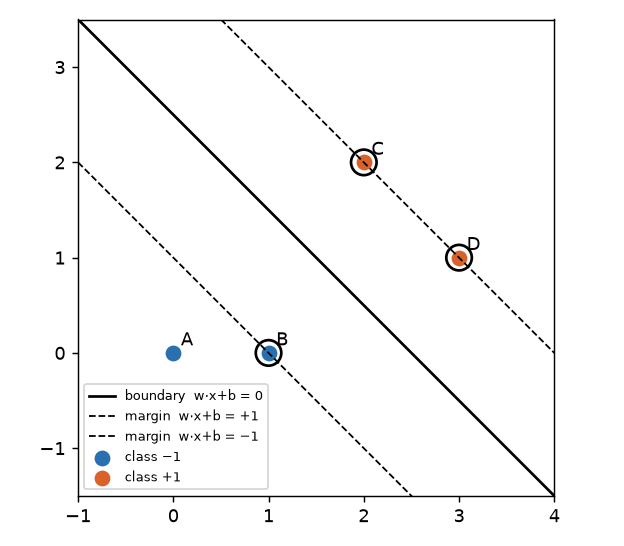
Read the picture: blue points are class −1, orange points are class +1. The solid line is the boundary, the dashed lines are the edges of the street, and the circled points sit exactly on the edges. Point A is far away and is not circled: removing it changes nothing.
Problem 5.1.1 Points: A(0,0) and B(1,0) have y = −1; C(2,2) and D(3,1) have y = +1. A hard-margin SVM gave w = (2/3, 2/3) and b = −5/3. Verify the margin conditions, find the support vectors and the street width.
| Formula | score f = w·x + b; margin condition y·f ≥ 1; width = 2/‖w‖. |
|---|---|
| Plug in | A: 0 + 0 − 5/3 = −1.667. B: 2/3 − 5/3 = −1.0. C: 4/3 + 4/3 − 5/3 = 8/3 − 5/3 = 1.0. D: 2 + 2/3 − 5/3 = 1.0. |
| Compute | y·f: A (−1)(−1.667) = 1.667; B (−1)(−1) = 1; C 1; D 1. All are ≥ 1. ‖w‖ = √(4/9 + 4/9) = √(8/9) = 0.9428, so width = 2/0.9428 = 2.121. |
| Answer | B, C and D have y·f = 1 exactly: they are the three support vectors. A has 1.667 > 1, so it is not. The street is 2.12 units wide. |
| Check | scikit-learn's SVC(kernel="linear", C=1e6) returned w = (0.6669, 0.6666), b = −1.667, support-vector indices [1, 2, 3] (B, C, D) and width 2.1212. The same numbers. |
| Why it matters | Move point A anywhere on its own side of the street and the model does not change at all. That is what "the solution depends only on the support vectors" means in practice. It is also why SVMs are robust to many easy points and sensitive to the hard ones at the edge. |
Problem 5.1.2 Two points only: (0,0) class −1 and (2,2) class +1. Find the maximum-margin boundary by reasoning, then check the width.
| Formula | with only two points the best boundary is the perpendicular bisector of the segment; both points are support vectors. |
|---|---|
| Plug in | The midpoint is (1,1); the segment direction is (1,1), so the boundary is x₁ + x₂ = 2. Use w = (a, a), b = −2a. Support-vector conditions: at (2,2): 4a − 2a = 1, so a = 0.5. |
| Compute | w = (0.5, 0.5), b = −1. Width = 2/‖w‖ = 2/0.7071 = 2.828. |
| Answer | w = (0.5, 0.5), b = −1, width 2.83, equal to the distance between the two points (√8 = 2.83). |
| Check | SVC returned w = [0.5 0.5], b = [−1.], margin width 2.8284. |
| Why it matters | With two points the street is exactly as wide as the gap between them: the best you can do. More points make the street narrower. |
Soft margin and the meaning of C
Real data overlap, so a hard margin may not exist. The soft margin lets point i violate the margin by an amount ξᵢ = max(0, 1 − yᵢ f(xᵢ)) (the hinge loss) and charges C·ξᵢ.
| Hinge value for one point | Meaning |
|---|---|
y·f ≥ 1 → loss 0 | outside the street, correct, no cost |
0 < y·f < 1 → loss between 0 and 1 | correct side, but inside the street |
y·f = 0 → loss 1 | exactly on the boundary |
y·f < 0 → loss above 1 | on the wrong side; loss grows linearly |
For instance, if a class +1 point appeared at (1.5, 0.5), its score under the solution above is (2/3)(1.5) + (2/3)(0.5) − 5/3 = 1 + 0.333 − 1.667 = −0.333, so y·f = −0.333 and hinge loss = 1 − (−0.333) = 1.333.
- Large
C: violations are expensive, the margin shrinks, the model fits the training data tightly (low bias, high variance). - Small
C: violations are cheap, the margin widens, the model is smoother (more bias, less variance).
Compare with logistic loss: both are convex upper bounds of the 0/1 error. Log loss never reaches exactly 0, so every point keeps pulling; hinge loss is exactly 0 for safe points, which is why only support vectors matter.
SVM from scratch (subgradient descent)
The hinge is not smooth at the corner y·f = 1, but it has a subgradient: for points inside the margin (y·f < 1) the gradient of the hinge term with respect to w is −y·x; for points outside it is 0. With the mean-hinge form λ/2 ‖w‖² + mean(hinge):
import numpy as np
def svm_sgd(X, y, lam=0.01, lr=0.1, epochs=2000): # y must be -1 or +1
n, p = X.shape; w = np.zeros(p); b = 0.
for e in range(epochs):
active = y * (X @ w + b) < 1 # points inside or beyond the margin
gw = lam * w - (y[active, None] * X[active]).sum(0) / n
gb = -y[active].sum() / n
w -= lr * gw; b -= lr * gb
return w, bOn the breast-cancer data (569 tumours, standardized, stratified 75/25 split, ys = 2*y − 1):
scratch SVM test acc 0.958041958041958 train hinge 0.038322269873857034 |w| 1.8429720135092937
sk SVC lin test acc 0.958041958041958 nSV 40 |w| 1.885256183294272scikit-learn's SVC(kernel="linear", C=1/(0.01·n)) has the matching objective. Our loop reaches the same test accuracy (95.8 percent, the same as scikit-learn); the weight lengths are close (1.84 vs 1.89), not identical because plain subgradient descent with a fixed step size only approaches the exact minimizer. Of 426 training rows, scikit-learn kept just 40 as support vectors.
Connection to the real job
Hinge loss and "margin" are everywhere: ranking losses, contrastive learning and triplet losses in embedding models are margin-based. Linear SVMs (LinearSVC, SGDClassifier(loss="hinge")) are fast, strong text classifiers.
Applications
- Text classification: linear SVM on TF-IDF features is a famous strong baseline.
- Bioinformatics: small-sample classification of gene or protein data.
- Computer vision (before deep learning): HOG features plus SVM.
- Fraud / risk: one-class SVM for "normal" behaviour (Chapter 14).
f(x), not a probability. If you need probabilities, calibrate them (Chapter 9); scikit-learn's probability=True does an internal Platt scaling which costs extra time.Check yourself
- In
2/‖w‖, what happens to the margin when‖w‖gets smaller? Answer: the margin gets wider. - If you delete a point that is not a support vector, does the boundary change? Answer: no.
- Does a larger
Cmean a wider or narrower margin? Answer: narrower (violations cost more).
5.2 The Kernel Trick, RBF, and When Kernel SVMs Are Practical
Why only dot products?
The SVM solution can be written so that data appears only through dot products xᵢ·xⱼ. If φ(x) maps a point into a bigger space, we need only K(x, z) = φ(x)·φ(z). If we can compute K cheaply, the lifting costs nothing.
| Kernel | Formula | Behaviour |
|---|---|---|
| Linear | x·z | a straight boundary |
| Polynomial (degree 2) | (x·z + c)^2 | curves up to degree 2, includes interactions |
| RBF (Gaussian) | exp(−γ ‖x − z‖²) | smooth bumps around support vectors; infinite-dimensional lift |
Problem 5.2.1 Let x = (1, 2) and z = (3, 1). Show that the kernel K(x,z) = (x·z)² equals the dot product after the explicit map φ(v) = (v₁², √2·v₁v₂, v₂²).
| Formula | K = (x·z)²; φ(x)·φ(z) computed term by term. |
|---|---|
| Plug in | x·z = 1·3 + 2·1 = 5, so K = 25. The map: φ(x) = (1, √2·2, 4) = (1, 2.828, 4); φ(z) = (9, √2·3, 1) = (9, 4.243, 1). |
| Compute | φ(x)·φ(z) = 1·9 + 2.828·4.243 + 4·1 = 9 + 12 + 4 = 25. |
| Answer | Both give 25. The kernel computed a dot product in 3-dimensional space using only the 2-dimensional dot product and a squaring. |
| Check | The middle product is exactly 12, because (√2·1·2)·(√2·3·1) = 2 · 2 · 3 = 12. So 9 + 12 + 4 = 25 matches (x·z)² = 25, and the code printed kernel 25.0 phi dot 25.0. |
| Why it matters | For the RBF kernel the lifted space has infinitely many dimensions, but K is one line of code. That is the trick. |
Problem 5.2.2 RBF kernel with γ = 0.5 for x = (1,2) and z = (3,1).
| Formula | K = exp(−γ‖x − z‖²) |
|---|---|
| Plug in | ‖x − z‖² = (1−3)² + (2−1)² = 4 + 1 = 5; γ‖·‖² = 2.5. |
| Compute | exp(−2.5) = 0.0821. |
| Answer | K = 0.082: the points are "not very similar". Identical points give K = 1, and far-apart points give a value near 0. |
| Check | Code printed rbf k 0.0820849986238988. |
| Why it matters | The RBF kernel is a similarity score. The classifier is a weighted vote of similarities to the support vectors. γ sets how local "similar" is: a large γ means only very close points count. |
γ and C on a curved problem
Data: 400 points from the "two moons" shape with noise 0.25, 70/30 split. Results of SVC(kernel="rbf", gamma=g, C=C):
| gamma | C | train acc | test acc | support vectors |
|---|---|---|---|---|
| 0.1 | 0.1 | 0.818 | 0.883 | 199 |
| 0.1 | 1 | 0.846 | 0.908 | 125 |
| 0.1 | 100 | 0.911 | 0.933 | 80 |
| 1 | 0.1 | 0.900 | 0.925 | 151 |
| 1 | 1 | 0.921 | 0.942 | 80 |
| 1 | 100 | 0.932 | 0.942 | 57 |
| 10 | 0.1 | 0.929 | 0.942 | 232 |
| 10 | 1 | 0.932 | 0.933 | 115 |
| 10 | 100 | 0.950 | 0.933 | 77 |
| 100 | 0.1 | 0.504 | 0.492 | 280 |
| 100 | 1 | 0.975 | 0.925 | 245 |
| 100 | 100 | 1.000 | 0.883 | 227 |
A linear SVM scored 0.90 on the same test set.
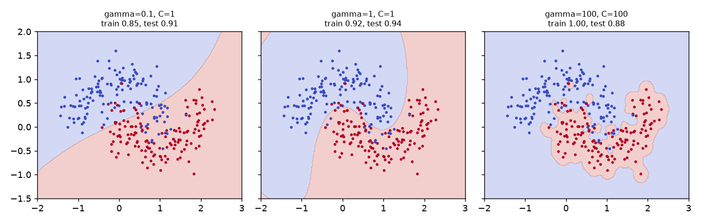
Reading the table and the picture: with γ = 100, C = 100 the training accuracy is perfect (1.00) but the test accuracy drops to 0.88 and 227 of the 280 training points are support vectors: the boundary makes an island around almost every point, which is memorization. With γ = 100, C = 0.1 the model is hopeless (0.50): the bumps are so narrow that nothing generalizes and the penalty is too soft to fit. The sweet spot, γ = 1, C = 1, gives 0.94 with only 80 support vectors. The number of support vectors is a useful warning: if almost every point is a support vector, the model is memorizing.
Also notice γ = 1, C = 100 and γ = 1, C = 1 tie at 0.942. The differences between neighbouring cells here are a handful of points out of 120 test rows, so do not over-read them. Use cross-validation to pick (Chapter 11).
γ is the radius of influence of a single point (large γ means small radius) and C is how hard you try to fit. Tune them on a log scale, such as γ, C ∈ {10⁻³, …, 10³}.A circle problem and the scaling requirement
For the "circles" data (one class inside a ring), a linear SVM scores 0.525 (chance level), while RBF and degree-2 polynomial kernels both score 1.0 (circles linear 0.525 rbf 1.0 poly2 1.0). The circle x₁² + x₂² < r² is a linear boundary in the lifted features (x₁², x₂²), which is exactly what the degree-2 kernel supplies.
Scaling is mandatory for kernels, because they use distances. With a signal only in feature 0 and a noise feature on a scale of 1000:
SVC unscaled 0.578 scaled (StandardScaler in a pipeline) 0.989The unscaled model is almost at chance (0.58) because the huge noise feature dominates every distance. Always use make_pipeline(StandardScaler(), SVC()).
When are kernel SVMs practical?
Training takes between O(n²) and O(n³) time and memory for the kernel matrix, so kernel SVMs suit small to medium data (up to roughly tens of thousands of rows). Measured here for SVC() on moons data: n = 1,000 took about 0.00 s, n = 4,000 about 0.04 s, n = 16,000 about 0.66 s (times depend on the machine; the growth from 0.04 to 0.66 s for 4× more rows shows the super-linear scaling). For big data use LinearSVC, SGDClassifier, or gradient boosting.
Other kernel methods
- SVR (support vector regression): fits a tube of half-width
εaround the data; points inside the tube cost nothing. Only points outside the tube become support vectors. On 80 noisy sine points with one outlier (+3 added to a single value),SVR(C=10, epsilon=0.1)used 40 support vectors and had error 0.073 against the noise-free truth; withepsilon=0.5only 4 support vectors and error 0.206 (too wide a tube, so too coarse). - Kernel ridge regression: ridge regression (Chapter 3) in the lifted space; closed-form, same RBF kernel. On the same data its error against the truth was 0.125.
- One-class SVM: learns the boundary around "normal" data only, to flag outliers. On 300 normal points with
nu=0.05it called 93 percent of the training points inliers, and, tested on[[4,4],[0,0]], it returned[−1, 1](outlier, inlier). Chapter 14 builds on this. - Gaussian processes (GP): the Bayesian cousin. Instead of one best curve, a GP gives a distribution over curves, so every prediction comes with an uncertainty. We fitted five points of
sin(x)(x = −4, −3, −1, 0, 2):
GP kernel: RBF(length_scale=1.78) + WhiteKernel(noise_level=1e-05)
x : -2 1 3 6
mean : -0.9282 0.7584 0.6303 0.0313
std : 0.0664 0.1072 0.3927 0.9942
true : -0.9093 0.8415 0.1411 -0.2794Reading it: between the data points (x = −2, 1) the GP is accurate and sure (standard deviation 0.07 and 0.11). At x = 3 (one unit past the last point) it is less sure (0.39) and already wrong by 0.49. At x = 6, far from any data, the standard deviation is 0.99, about the prior's width, which means "I know nothing here", and indeed the mean 0.03 is wrong by 0.31. A model that knows where it does not know is the reason GPs power Bayesian optimization (Chapter 11). Cost is O(n³), so GPs suit small data.
Connection to the real job
You will rarely deploy a kernel SVM on millions of rows, but small labelled datasets (medical, industrial inspection) are common, and the "similarity to stored examples" idea returns in embeddings and attention. Gaussian processes are the standard tool for expensive experiments, such as tuning a slow benchmark with few trials.
Applications
- Small-data ML: RBF-SVM as a strong default with a few hundred examples.
- Engineering: GP surrogate models for expensive simulations or lab experiments.
- Hyperparameter tuning: Bayesian optimization with GP surrogates.
- Anomaly detection: one-class SVM on "healthy" sensor readings.
SVC(kernel="rbf") on 500,000 rows and waiting hours. Check the size first, and scale inside a pipeline.Check yourself
- What does the kernel trick avoid? Answer: computing the high-dimensional features explicitly.
- High
γand highC: bias or variance problem? Answer: variance (overfitting). - Why does a GP's standard deviation grow far from the data? Answer: it falls back to the prior, which has no information about that region.
5.3 k-Nearest Neighbours: Ask Your Neighbours
Algorithm
- Choose
kand a distance (Euclidean unless there is a reason otherwise). - For a query point, compute its distance to every training point.
- Take the
kclosest. Classification: majority vote (or distance-weighted vote). Regression: the average (or median) of their targets.
| Distance | Formula | Use |
|---|---|---|
| Euclidean | √Σ(aᵢ − bᵢ)² | default for scaled numeric data |
| Manhattan | `Σ | aᵢ − bᵢ |
| Cosine | 1 − a·b/(‖a‖‖b‖) | text and embeddings (direction, not length) |
| Hamming | number of differing positions | categorical codes |
Problem 5.3.1 Training points (1,1)→0, (2,1)→0, (4,4)→1, (5,4)→1, (3,3)→1. Classify the query q = (2.4, 2.0) with k = 1, 3, 5.
| Formula | Euclidean distance d = √((x₁ − 2.4)² + (x₂ − 2)²), then vote. |
|---|---|
| Plug in | (1,1): √(1.96 + 1) = 1.720. (2,1): √(0.16 + 1) = 1.077. (4,4): √(2.56 + 4) = 2.561. (5,4): √(6.76 + 4) = 3.280. (3,3): √(0.36 + 1) = 1.166. |
| Compute | Order by distance: (2,1) 1.077 → class 0; (3,3) 1.166 → class 1; (1,1) 1.720 → class 0; (4,4) 2.561 → class 1; (5,4) 3.280 → class 1. For k=1: votes {0:1} → class 0. k=3: labels 0,1,0 → two zeros → class 0. k=5: labels 0,1,0,1,1 → three ones → class 1. |
| Answer | The prediction flips from class 0 (k = 1 and 3) to class 1 (k = 5). |
| Check | Code printed distances [1.72 1.077 2.561 3.28 1.166] and the order [1 4 0 2 3]. |
| Why it matters | k controls the bias-variance trade-off: k = 1 follows the single closest point, so it is very flexible and noisy (variance); a huge k averages over everything and becomes close to "always predict the majority class" (bias). |
From scratch and with scikit-learn
import numpy as np
class MyKNN:
def __init__(s, k=5): s.k = k
def fit(s, X, y): s.X, s.y = X, y; return s
def predict(s, Q):
D = ((Q[:, None, :] - s.X[None, :, :]) ** 2).sum(2) # squared distances, all queries vs all points
idx = np.argsort(D, 1)[:, :s.k] # indices of the k smallest
return np.array([np.bincount(s.y[i]).argmax() for i in idx])(Squared distances give the same order as distances, so we skip the square root.) On breast cancer with k = 5:
raw mine acc 0.9161 sk acc 0.9161 agree 1.0
scaled mine acc 0.951 sk acc 0.951 agree 1.0Our code and KNeighborsClassifier(5) agree on every test prediction. The effect of scaling is big: 91.6 percent raw versus 95.1 percent scaled, because in the raw data the columns with large numbers (area, around 500 to 2500) overwhelm columns near 0.1.
A tiny example of the same disaster: income 50,000 vs 50,100 with ages 30 vs 60 gives distance 104.4; income 50,000 vs 52,000 with ages 30 vs 31 gives 2000.0. Plain Euclidean distance calls the 30-year-old and 60-year-old "very close" and calls two nearly identical people "far apart". Standardize first.
Choosing k by cross-validation
5-fold CV on the scaled training set, with the training accuracy for contrast:
| k | CV accuracy | train accuracy |
|---|---|---|
| 1 | 0.9578 | 1.000 |
| 3 | 0.9648 | 0.986 |
| 5 | 0.9671 | 0.979 |
| 9 | 0.9671 | 0.974 |
| 15 | 0.9530 | 0.977 |
| 31 | 0.9507 | 0.958 |
| 61 | 0.9366 | 0.953 |
| 101 | 0.9201 | 0.932 |
k = 1 gets training accuracy 1.0 (every point is its own nearest neighbour), which proves nothing. The CV peak is at k = 5 to 9. Beyond 30 the model underfits. A common rule: odd k for two classes (avoids ties), k between 3 and 15 to start.
The curse of dimensionality, measured
Chapter 1 showed distances losing contrast. Here is the effect on accuracy. Take 5 informative features and add pure-noise columns:
| noise columns | k-NN accuracy | logistic regression |
|---|---|---|
| 0 | 0.967 | 0.939 |
| 5 | 0.950 | 0.939 |
| 20 | 0.917 | 0.911 |
| 100 | 0.872 | 0.872 |
| 500 | 0.744 | 0.883 |
With no noise k-NN is the better model (the true boundary is curved). With 500 irrelevant columns, k-NN falls to 0.74 because each distance is mostly noise, while logistic regression, which can learn to ignore a column, only drops to 0.88. k-NN has no way to decide that a feature is useless. Feature selection and scaling are part of the model.
Speed: KD-trees and approximate search
Brute force costs O(n) per query. A KD-tree (a tree that splits space along coordinate axes) or ball tree prunes most of the points in low dimensions. Measured on this machine, 5 neighbours for 2,000 queries among 50,000 points:
3 dimensions : brute 0.043 s kd_tree 0.004 s ball_tree 0.042 s
50 dimensions: brute 0.021 s kd_tree 2.115 sIn 3-D the KD-tree is ten times faster. In 50-D it is a hundred times slower than brute force (matrix tricks in brute force are very fast, and the tree cannot prune). For high-dimensional embeddings (millions of vectors), practitioners use approximate nearest neighbour (ANN) libraries (FAISS, HNSW, Annoy; not run here), which trade a little accuracy for large speed. This is the heart of vector search in modern AI systems.
Connection to the real job
k-NN is a great baseline (no training, immediate feedback), a recommender building block ("customers like you bought…"), an anomaly detector (points far from their neighbours, Chapter 14) and the way vector databases find similar documents.
Applications
- Recommenders: similar users or items.
- Anomaly detection: distance to the k-th neighbour.
- GenAI: nearest-neighbour search over embeddings in RAG systems.
- Imputation:
KNNImputerfills missing values from similar rows (Chapter 12).
k = 1 accuracy on the training set to judge the model.Check yourself
- Why is k-NN called lazy? Answer: it does no work at training time; it just stores the data.
- What happens to k-NN if one feature has a range 1000 times bigger than the others? Answer: that feature dominates the distance; scale first.
- Small
kleads to bias or variance? Answer: variance.
5.4 Naive Bayes: Multiplying the Evidence
Formal definition
By Bayes' rule, for class c and features x = (x₁,…,x_p):
P(c | x) ∝ P(c) · P(x₁ | c) · P(x₂ | c) · … · P(x_p | c)The naive step is writing P(x | c) as a product. We compute the right side for each class and pick the largest (or normalize to get probabilities). To avoid multiplying many tiny numbers (underflow), add logs: log P(c) + Σ log P(xⱼ | c).
| Variant | Each `P(xⱼ | c)` | Use |
|---|---|---|---|
| Gaussian NB | a normal curve per class and feature (mean, variance) | numeric features | |
| Multinomial NB | word frequencies `P(word | class)` | text counts, TF-IDF |
| Bernoulli NB | probability that a word is present or absent | short texts, binary features |
Problem 5.4.1 Gaussian NB with one feature. Class A: mean 2, variance 1, prior 0.5. Class B: mean 4, variance 1, prior 0.5. Find P(B | x = 3.5).
| Formula | P(c | x) = P(c) N(x; μ_c, σ²_c) / Σ_c' P(c') N(x; μ_c', σ²_c'), with N(x; μ, σ²) = exp(−(x − μ)²/(2σ²)) / √(2πσ²). |
|---|---|
| Plug in | For A: (3.5 − 2)² = 2.25, so N = exp(−1.125)/2.5066 = 0.3247/2.5066 = 0.1295. For B: (3.5 − 4)² = 0.25, N = exp(−0.125)/2.5066 = 0.8825/2.5066 = 0.3521. |
| Compute | Multiply by 0.5: A 0.06476, B 0.17603. P(B | x) = 0.17603/(0.06476 + 0.17603) = 0.731. |
| Answer | The model says 73.1 percent class B. |
| Check | Code printed 0.06475879783294587 0.17603266338214976 0.7310585786300048. Also 0.731 = σ(1): with equal variances and priors the log-odds is (μ_B − μ_A)(x − (μ_A + μ_B)/2)/σ² = 2 × 0.5 = 1. (Gaussian NB with equal variances is a linear boundary.) |
| Why it matters | The model is just "which bell curve is this value more typical for?". Training means computing means and variances per class: one pass over the data. |
Gaussian NB from scratch
class MyGNB:
def fit(s, X, y):
s.c = np.unique(y); s.pr = np.array([np.mean(y == c) for c in s.c])
s.mu = np.array([X[y == c].mean(0) for c in s.c])
s.var = np.array([X[y == c].var(0) + 1e-9 for c in s.c]); return s
def logp(s, X):
return np.stack([np.log(s.pr[i]) + (-0.5*np.log(2*np.pi*s.var[i]) - (X - s.mu[i])**2 / (2*s.var[i])).sum(1)
for i in range(len(s.c))], 1)
def predict(s, X): return s.c[s.logp(X).argmax(1)]On the iris data (70/30 split): GNB mine 0.9778, sk 0.9778, agree 1.0. The learned class mean of the setosa flowers is (5.03, 3.42, 1.43, 0.25) with variances (0.148, 0.173, 0.027, 0.010): setosa petals are small and very uniform.
Multinomial NB for text, with smoothing
Five tiny documents: spam "buy cheap pills now", "cheap pills cheap"; not spam "meeting at noon", "lunch meeting now", "buy lunch". The vocabulary has V = 8 words (at, buy, cheap, lunch, meeting, noon, now, pills). Spam has 7 word tokens in total; not-spam has 8.
Without smoothing, P(lunch | spam) = 0/7 = 0. One unseen word then makes the product zero and wipes out all other evidence. Laplace (additive) smoothing adds α (usually 1) to every word count: P(w | c) = (count(w, c) + α)/(total_c + α·V). For spam with α = 1: cheap = (3+1)/(7+8) = 0.267, pills = (2+1)/15 = 0.2, lunch = (0+1)/15 = 0.067.
Problem 5.4.2 Classify "cheap lunch pills". Priors: spam 2/5 = 0.4, not spam 3/5 = 0.6. Use α = 1.
| Formula | log P(c) + Σ over words log P(w | c). |
|---|---|
| Plug in (spam) | ln 0.4 = −0.916; ln 0.267 = −1.322; ln 0.0667 = −2.708; ln 0.2 = −1.609. Sum = −6.556. |
| Plug in (not spam) | P(w | ham) = (count + 1)/(8 + 8): cheap = 1/16 = 0.0625, lunch = (2+1)/16 = 0.1875, pills = 1/16 = 0.0625. ln 0.6 = −0.511; ln 0.0625 = −2.773; ln 0.1875 = −1.674; sum = −0.511 − 2.773 − 1.674 − 2.773 = −7.730. |
| Compute | P(spam) = 1/(1 + e^(−6.556 + 7.730)) = 1/(1 + e^(−1.174)) = 1/(1 + 0.309) = 0.764. |
| Answer | The message is 76.4 percent likely to be spam: two spammy words (cheap, pills) outweigh one hammy word (lunch). |
| Check | MultinomialNB(alpha=1) printed 0.7639474972606253, identical to our 0.7639474972606254. |
| Why it matters | Without smoothing the unseen-in-spam word lunch would have forced P(spam) = 0. Smoothing is the difference between a usable and a broken text classifier. |
Why does "naive" often still work, and when it does not
For classification we only need the correct class to win, not the probabilities to be exact. But the independence error distorts the probabilities. Test: copy one informative feature five times (adding tiny noise) so the evidence is counted five times:
dup-features acc NB 0.738 LR 0.745 mean max-prob NB 0.93 LR 0.75Accuracy is nearly the same (0.738 vs 0.745), but Naive Bayes is wildly overconfident: its average top probability is 0.93, while the true accuracy is 0.74. Logistic regression's 0.75 is honest. Rule: use Naive Bayes for ranking and fast baselines, never trust its probabilities without calibration (Chapter 9).
Connection to the real job
Multinomial NB is the classic spam filter, a strong short-text baseline (ticket routing, intent), and it trains in one pass over the data, so it suits streaming data (partial_fit).
Applications
- NLP: spam, sentiment, topic, ticket routing.
- Medicine: quick screening models with few data.
- Real-time systems: very low-latency classifiers.
- Baselines: the first model to beat in any text project.
Check yourself
- What is the "naive" assumption? Answer: features are independent given the class.
- Why add logs instead of multiplying probabilities? Answer: to avoid numerical underflow (and sums are easier).
- What does Laplace smoothing fix? Answer: zero probabilities for words not seen in a class.
5.5 Generative vs Discriminative, and Models to Know by Name
The two families
| Generative | Discriminative | |
|---|---|---|
| Learns | `P(x | c) and P(c)` |
| Examples | Naive Bayes, Gaussian mixtures, LDA, HMM | logistic regression, SVM, trees, neural nets |
| Can generate new data? | yes | no |
| Missing inputs | handles naturally (leave the factor out) | needs imputation |
| Strong when | little data, strong correct assumptions, unlabeled data helps | plenty of data, wrong assumptions in the generative model |
The classic result: the generative model reaches its (higher) error floor quickly, while the discriminative model needs more data but reaches a lower floor. We tested it on breast cancer, averaging 30 random training subsets of each size:
| training rows | Gaussian NB | logistic regression |
|---|---|---|
| 10 | 0.816 | 0.882 |
| 20 | 0.907 | 0.915 |
| 50 | 0.915 | 0.936 |
| 150 | 0.920 | 0.947 |
| 426 | 0.909 | 0.951 |
Honest reading: on this dataset logistic regression won at every size, even with 10 rows, so the "generative wins on tiny data" story did not appear here (it depends on how well the generative assumptions fit; breast-cancer features are strongly correlated, which hurts naive Bayes). The part that did appear: Gaussian NB stops improving (about 0.91) while logistic regression keeps improving (0.95). Do not take textbook claims on faith; measure.
Models to know by name (awareness level)
| Model | One-line idea | Where used |
|---|---|---|
| Hidden Markov Model (HMM) | hidden states change like a Markov chain; each state emits visible observations. Forward-backward computes the state probabilities, the Viterbi algorithm finds the single most likely state path | speech (classic), gene finding, user-journey states, regime detection |
| Kalman filter | tracks a hidden quantity (position, level) by alternately predicting and correcting with noisy measurements; exact for linear-Gaussian systems | tracking, sensor fusion, smoothing metrics |
| Bayesian network | a graph of variables where each depends on a few parents; allows reasoning with conditional probabilities | diagnosis, risk modelling, causal reasoning |
| Gaussian mixture model (GMM) and EM | soft clustering with bells; a generative model | Chapter 13 |
| Bayesian regression / PyMC | linear regression with a posterior over weights instead of a point estimate, so every prediction has an interval | uncertainty-first modelling, small data; PyMC is the standard library (not run here) |
| Gaussian process | prior over functions, as in 5.2 | Bayesian optimization, small data regression with uncertainty |
None of these are needed to start a job in applied ML, but you should be able to explain each in one sentence in an interview.
Connection to the real job
Interviewers ask "generative vs discriminative?" to test whether you know there are two ways to model a problem. In practice: if you need a probability for a decision and have enough data, use a discriminative model with calibration. If you have few labels but lots of unlabeled data, or need to simulate data, think generative (Chapter 14).
Applications
- Healthcare / industry: HMMs for equipment-state estimation; Kalman filters in sensors.
- Finance: Kalman filters for hedge ratios and state estimation.
- Operations: Bayesian networks for fault diagnosis.
- Science: Bayesian regression for small experiments.
Check yourself
- Is logistic regression generative or discriminative? Answer: discriminative.
- Which family can sample new data points? Answer: generative.
- What does the Viterbi algorithm return? Answer: the single most likely sequence of hidden states.
Chapter recap
- SVM: choose the boundary with the widest margin,
width = 2/‖w‖. Only support vectors determine it. Soft margin with hinge loss;Ctrades margin for fit. - Kernels compute dot products in a lifted space without leaving the original one. RBF (
γ) is the default. Always scale features. Tuneγ,Con a log scale. Kernel SVMs suit small and medium data. - SVR uses an
ε-tube. One-class SVM models "normal". Kernel ridge is ridge in the lifted space. Gaussian processes give uncertainty and are the engine of Bayesian optimization. - k-NN: no training, predict from the
knearest points. Scale first.ksmall means high variance. Irrelevant features and high dimensions hurt it badly. KD-trees help in low dimensions only; ANN for embeddings. - Naive Bayes:
P(c) ∏ P(xⱼ | c)in log space. Use smoothing. Fast and good for text; its probabilities are overconfident when features are correlated. - Generative models learn
P(x | c); discriminative models learnP(c | x). Test claims on your data. - Know HMM, Kalman, Bayesian networks, GP, Bayesian regression at "explain in one sentence" level.
| Formula / command | Meaning |
|---|---|
width = 2/‖w‖, yᵢ(w·xᵢ + b) ≥ 1 | SVM margin and constraint |
hinge = max(0, 1 − y·f) | SVM loss |
K(x,z) = exp(−γ‖x − z‖²) | RBF kernel |
SVC(kernel, C, gamma), LinearSVC, SVR, OneClassSVM | scikit-learn SVMs |
KNeighborsClassifier(k), NearestNeighbors(algorithm=…) | k-NN |
| `P(c | x) ∝ P(c)∏P(xⱼ |
GaussianNB, MultinomialNB(alpha) | scikit-learn Naive Bayes |
make_pipeline(StandardScaler(), SVC()) | the safe SVM/k-NN pattern |
Practice set
- (easy)
w = (3, 4),b = 0. What is the margin width? Answer:‖w‖ = 5, so width= 2/5 = 0.4. - (easy) Hinge loss when
y = +1andf = 0.3? Andf = 1.5? Answer:max(0, 1 − 0.3) = 0.7;max(0, 1 − 1.5) = 0. - (easy) What is the output?
np.exp(-0.5 * 0)for the RBF kernel of a point with itself. Answer:1.0. - (medium) Distance between
(0,0)and(3,4)in Euclidean and Manhattan. Answer: 5 and 7. - (medium) With
α = 1,V = 10, a class total of 40 tokens, and a word count of 0, findP(word | class). Answer:(0 + 1)/(40 + 10) = 0.02. - (medium) Find the bug:
KNeighborsClassifier(1)gives training accuracy 100 percent, so the author reports 100 percent. Answer: withk = 1each training point is its own neighbour. Evaluate on held-out data. - (medium) Gaussian NB, class means 10 and 20, equal variance 25, equal priors. Where is the decision boundary? Answer: at the midpoint,
x = 15(equal variances and priors). - (medium) An RBF SVM has train accuracy 100 percent, test 85 percent, and 90 percent of training points are support vectors. What do you change? Answer: reduce
γand/orC(a smoother model), and check with cross-validation. - (hard, scenario) You have 20 million labelled sessions and want an SVM. What do you do? Answer: do not use a kernel SVM (
O(n²)toO(n³)). UseLinearSVCorSGDClassifier(loss="hinge")on good features, or gradient boosting; consider a subsample for kernel experiments. - (hard) Show that with
k = n(all training points) k-NN predicts the majority class everywhere. Answer: every query'skneighbours are the whole training set, so the vote is the same for all queries: the overall majority. - (interview) "Explain the kernel trick to a non-technical person." Answer: "Some data cannot be separated by a straight line. If we add new descriptors computed from the old ones, such as squares or distances, a straight line may work. The kernel trick lets the algorithm use those richer descriptors without ever building them, because it only needs a similarity score between two points, which is cheap to compute."
- (interview) "Why does Naive Bayes work for text despite the independence assumption being false?" Answer: classification needs only the right class to win. Word dependencies affect all classes similarly, so the ranking of classes is often preserved, even though the probabilities become overconfident. There are many features and few examples per feature, so a low-variance model with a strong assumption does well.
Prompt pack
You are my patient, practical professor. I am a working professional moving into data roles, English is my second language, so use simple words. Topic: support vector machines: margin, support vectors, hinge loss and the role of C. Explain with the "widest street between two villages" analogy, then give me a 4-point example to solve by hand (compute the margin width and find the support vectors) and check my answer step by step.
You are my patient, practical professor. I am a working professional moving into data roles and learning machine learning, English is my second language. Topic: the kernel trick, polynomial and RBF kernels, and how gamma and C control overfitting in an RBF SVM. Give me 8 graded exercises with real numbers (kernel values, reading a table of train/test accuracy by gamma and C, spotting overfitting). Do not give solutions until I answer; then explain my mistakes.
You are my patient, practical professor. I am a working professional moving into data roles, English is my second language. Topic: k-nearest neighbours: distance metrics, scaling, choosing k with cross-validation, the curse of dimensionality and KD-trees versus approximate search. Here is my situation: [PASTE MY DATA SHAPE AND FEATURES]. Tell me if k-NN is a good fit, what preprocessing it needs, and how to pick k, in simple steps.
You are my patient, practical professor. I am a working professional moving into data roles, English is my second language. Topic: Naive Bayes (Gaussian and multinomial), Laplace smoothing, and why its probabilities are overconfident. Teach it with a 5-document spam example, then ask me to classify a new message by hand, one step at a time, and wait for my answers before correcting.
You are my patient, practical professor. I am a working professional moving into data roles and preparing for ML interviews, English is my second language. Topic: SVMs, kernels, k-NN, Naive Bayes, and generative versus discriminative models. Run a mock interview: ask one question at a time, wait for my answer, score it out of 10, give a model answer in simple English, and ask a harder follow-up. Include one question on when NOT to use each model.
Your manager at an online grocery says: "Predict which deliveries will arrive late, and tell me the rules, because the operations team wants to read them." A straight line (Chapter 2) or a logistic model (Chapter 4) cannot give you rules like "if load is above 60 and queue is above 30, expect trouble". A decision tree can. It also finds interactions without being told, and it needs no feature scaling. On tabular business data, trees and their ensembles are the most used models in industry. In this chapter you will compute the best split by hand, build a complete CART tree in about 40 lines of NumPy, check that it matches scikit-learn exactly, learn how to stop a tree from memorising, see where trees fail (extrapolation), and then fix their instability with bagging and random forests. You will also learn why the default "feature importance" of a forest can lie.
Prerequisites: Chapter 1 (overfitting, bias-variance), Chapter 4 (classification, log loss). Averages and variance: Math PDF, probability pillar. All code runs with NumPy and scikit-learn 1.9.1 and every output below is real (seeds fixed).
Running example. A synthetic table of 1,000 deliveries from an online grocery with load (orders handled per hour at the packing centre, 0 to 100), queue (parcels waiting, 0 to 50) and err (rain in mm, 0 to 5). The label slow (delivery arrived late) is 1 for 47.1 percent of rows, and mostly when load > 60 AND queue > 30 together (a planted interaction). We train on 700 rows and test on 300.
6.1 Impurity: How a Tree Decides What a Good Question Is
Words you need
| Word | Meaning | Example |
|---|---|---|
| Node | one box in the tree holding some rows | the root holds all 8 rows |
| Root | the first node, holds all the training rows | |
| Split | a rule feature ≤ threshold that sends rows left (yes) or right (no) | load ≤ 45 |
| Leaf | a node that stops splitting and makes the prediction | "p(slow) = 0.97" |
| Depth | number of questions from root to the deepest leaf | |
| Impurity | how mixed the classes are in a node (0 = pure) | |
| Gini impurity | 1 − Σ pₖ² over the classes | for p = 0.375: 0.469 |
| Entropy | −Σ pₖ log₂ pₖ, measured in bits | for p = 0.375: 0.954 |
| Information gain | parent impurity minus the weighted child impurity |
Why "CART"? It means Classification And Regression Trees (1984). Trees are binary and chosen greedily: the best split for this node now, never looking ahead.
The formulas
For a node with a fraction p of positives (two classes):
Gini(p) = 1 − p² − (1−p)² = 2p(1−p)
Entropy(p) = −p·log₂(p) − (1−p)·log₂(1−p)A split sends n_L rows left and n_R rows right (n = n_L + n_R). The impurity after the split is the weighted average:
Impurity_after = (n_L/n)·Impurity(left) + (n_R/n)·Impurity(right)
Gain = Impurity(parent) − Impurity_afterFor regression trees the target is a number, so "impurity" is the variance of the target in the node (or the sum of squared errors, SSE, around the node mean). The leaf predicts the mean of its rows. The gain is the variance reduction: SSE before minus SSE after.
Worked problems
Problem 6.1.1 Eight deliveries with load = 10, 20, 30, 40, 50, 60, 70, 80 and slow = 0, 0, 0, 0, 1, 1, 1, 0. Compute the Gini impurity of the root, then the gain of the split load ≤ 45.
| Formula | Gini = 2p(1−p); gain = parent − weighted children. |
|---|---|
| Plug in (root) | 3 of 8 are slow, so p = 3/8 = 0.375. |
| Compute (root) | Gini = 2 × 0.375 × 0.625 = 0.46875. |
| Plug in (split) | load ≤ 45 sends load = 10, 20, 30, 40 left: labels 0,0,0,0, so p = 0 and Gini = 0. It sends 50..80 right: labels 1,1,1,0, so p = 3/4 and Gini = 2 × 0.75 × 0.25 = 0.375. |
| Compute (split) | weighted impurity = (4/8)·0 + (4/8)·0.375 = 0.1875. Gain = 0.46875 − 0.1875 = 0.28125. |
| Answer | The split load ≤ 45 cuts the Gini impurity from 0.469 to 0.1875, a gain of 0.281. |
| Check | The code below prints 0.2812. The left group is perfectly pure, so all the remaining impurity comes from the right half, which is why the number is half of 0.375. |
| Why it matters | "Gain" is the score the tree uses to rank every possible question. |
Problem 6.1.2 Same data. Compare all four candidate thresholds 25, 45, 65 and 75 using Gini and entropy. Which does the tree pick?
| Step 1 | Run the code below. |
|---|---|
| Step 2 | Read the table. |
Run a small loop that computes both gains for each threshold (same gini function, plus an ent function using −p·log₂p).
Real output:
parent gini 0.46875 entropy 0.9544
25 gini gain 0.0938 entropy gain 0.2044
45 gini gain 0.2812 entropy gain 0.5488
65 gini gain 0.0104 entropy gain 0.0157
75 gini gain 0.0402 entropy gain 0.0924- Answer Threshold 45 wins under both measures (Gini gain 0.281, entropy gain 0.549). Threshold 65 is almost useless.
- Check Gini and entropy are different scales (Gini maxes at 0.5, entropy at 1 bit) but they rank splits almost always the same way. In practice the choice rarely matters; Gini is the scikit-learn default and is slightly cheaper (no logarithm).
- Why it matters In an interview, say: "Gini and entropy are both concave curves that are zero for pure nodes and largest at 50/50. Either rewards purer children."
Problem 6.1.3 (regression) Six deliveries with x = 1..6 (an order of dispatch) and delivery times 120, 130, 125, 300, 310, 290 minutes. Find the best single split by variance reduction.
| Formula | SSE of a group = Σ (value − group mean)². |
|---|---|
| Plug in (parent) | mean = 1275/6 = 212.5. SSE = 92.5² + 82.5² + 87.5² + 87.5² + 97.5² + 77.5² = 46,187.5. |
| Compute (split after 3) | left 120,130,125 has mean 125 and SSE 25 + 25 + 0 = 50. Right 300,310,290 has mean 300 and SSE 0 + 100 + 100 = 200. Total 250. |
| Compute (other splits, from code) | after 1: 35,920; after 2: 23,218.75; after 3: 250; after 4: 23,218.75; after 5: 38,980. |
| Answer | The best split is between row 3 and row 4. The leaves predict 125 and 300 minutes. SSE falls from 46,187.5 to 250, a 99.5 percent reduction. |
| Check | 250 / 46187.5 = 0.0054, so 99.46 percent of the variance is explained by this one question. |
n − 1 thresholds per feature). Equal values give no threshold between them.Connection to the real job. The same gain rule runs inside XGBoost, LightGBM and every random forest (Chapter 7 uses a gradient-based version). Knowing it lets you read a tree dump and judge whether the splits make sense.
Applications. Credit scoring (readable rules for regulators), support-ticket routing, finding which order-volume and backlog mix makes deliveries late.
Check yourself.
- A node has 10 rows, 5 of each class. Gini? Answer:
2 × 0.5 × 0.5 = 0.5, the maximum. - A node has all rows in one class. Entropy? Answer: 0 bits, it is pure.
- For a regression tree, what does a leaf predict? Answer: the mean of the target values of its rows.
6.2 CART from Scratch (and Proof That It Matches scikit-learn)
The algorithm in plain steps
- Start with all training rows in the root.
- For each feature, sort the values and try each midpoint as a threshold. Score it by gain.
- Choose the feature and threshold with the largest gain.
- Send rows left or right and repeat from step 2 on each child.
- Stop a branch when: it is pure, or the depth limit is reached, or it has too few rows, or no split gives gain.
- The leaf's prediction is the class fraction (classification) or the mean (regression).
The code
This is the whole thing. Notice best_split loops over features and thresholds using a cumulative sum, so each feature costs one sort, not one pass per threshold.
import numpy as np
class Node:
def __init__(s, **k): s.__dict__.update(k)
def best_split(X, y, min_leaf=1):
n, p = X.shape; best = (None, None, 0.0)
parent = 2*y.mean()*(1-y.mean()) # Gini of the node
for j in range(p):
order = np.argsort(X[:, j], kind="stable")
xs, ys = X[order, j], y[order]
csum = np.cumsum(ys) # positives in the first i rows
for i in range(1, n):
if xs[i] == xs[i-1]: continue # no threshold between equal values
if i < min_leaf or n-i < min_leaf: continue
pl = csum[i-1]/i; pr = (csum[-1]-csum[i-1])/(n-i)
imp = (i*2*pl*(1-pl) + (n-i)*2*pr*(1-pr)) / n
if parent - imp > best[2] + 1e-12:
best = (j, (xs[i]+xs[i-1])/2, parent - imp)
return best
def grow(X, y, depth, max_depth, min_leaf):
if depth >= max_depth or y.min() == y.max() or len(y) < 2*min_leaf:
return Node(leaf=True, p=y.mean(), n=len(y))
j, t, g = best_split(X, y, min_leaf)
if j is None: return Node(leaf=True, p=y.mean(), n=len(y))
m = X[:, j] <= t
return Node(leaf=False, j=j, t=t, n=len(y),
left=grow(X[m], y[m], depth+1, max_depth, min_leaf),
right=grow(X[~m], y[~m], depth+1, max_depth, min_leaf))
def predict_one(node, x):
while not node.leaf: node = node.left if x[node.j] <= node.t else node.right
return node.pPredict first. We train with max_depth=3, min_leaf=5 on our 700 training deliveries. Before you look: how many leaves can a depth-3 binary tree have at most? (Answer: 2³ = 8.) The real tree:
if load <= 59.22 (n=700)
if queue <= 27.33 (n=422)
if err <= 3.21 (n=233)
leaf: p(slow)=0.125 n=152
else
leaf: p(slow)=0.284 n=81
else
if err <= 1.47 (n=189)
leaf: p(slow)=0.211 n=57
else
leaf: p(slow)=0.439 n=132
else
if queue <= 29.93 (n=278)
if err <= 2.85 (n=153)
leaf: p(slow)=0.432 n=81
else
leaf: p(slow)=0.736 n=72
else
if queue <= 48.96 (n=125)
leaf: p(slow)=0.966 n=119
else
leaf: p(slow)=0.667 n=6Reading it. The first question load ≤ 59.22 is close to the true boundary 60 we planted, and the right branch asks queue ≤ 29.93 (true value 30). The leaf with load > 59.22 and queue > 29.93 holds 125 rows with p(slow) = 0.966: the interaction, found without help. The last leaf has only 6 rows, so its 0.667 is weak evidence.
Check against scikit-learn. DecisionTreeClassifier(max_depth=3, min_samples_leaf=5, random_state=0) on the same rows gives probabilities for the 300 test deliveries that differ from ours by at most 0.0. The two trees are identical, same features, same thresholds (scikit-learn's export_text prints the same 7 thresholds: 59.22, 27.33, 3.21, 1.47, 29.93, 2.85, 48.96).
if statements chosen by a greedy search. Everything else (forests, boosting) is built by combining many such lists.Why greedy and not optimal? Finding the best tree overall is a very hard problem (exponentially many trees). Greedy is fast and usually good. Its weakness: a split that looks useless alone but is useful in combination (the XOR case from Chapter 4) can be missed at the root. In our data the interaction is visible because each single feature is also helpful alone.
Connection to the real job. Interviews often say "implement a decision tree split". The best_split function above is the answer. In the job you will use a library; the from-scratch version is how you know what min_samples_leaf actually does.
p(slow) as a reliable probability regardless of its size. A leaf with 6 rows can show 0.667 and the true value could easily be 0.3 or 0.9. Use min_samples_leaf to force leaves to have enough rows.Check yourself.
- What does
best_splitreturn if every feature is constant? Answer:(None, None, 0.0), so the node becomes a leaf. - Why sort each feature once? Answer: sorting lets a cumulative sum give the class counts on each side of every threshold in one pass.
- In our tree, which feature has no influence on the true label rule yet appears at depth 3? Answer:
errhas only a small effect (0.3 per unit in the log-odds); the tree used it because it is the best remaining question for the few rows left, not because it is strong.
6.3 Overfitting, Pruning, and What Trees Cannot Do
Depth versus accuracy (real numbers)
Same 700 train / 300 test split, trees of increasing max_depth:
| max_depth | train accuracy | test accuracy | leaves |
|---|---|---|---|
| 1 | 0.739 | 0.690 | 2 |
| 2 | 0.739 | 0.690 | 4 |
| 3 | 0.756 | 0.700 | 8 |
| 5 | 0.809 | 0.667 | 27 |
| 8 | 0.896 | 0.620 | 93 |
| 12 | 0.984 | 0.640 | 163 |
| none | 1.000 | 0.620 | 175 |
Read it as in Chapter 1: train accuracy only goes up; test accuracy peaks at depth 3 (0.700) and falls to 0.620. The gap at the end is 1.000 − 0.620 = 0.38, the sign of high variance. The best tree is a short one. (With 300 test rows, one accuracy point is 3 rows, so differences like 0.690 versus 0.700 are noise; the decline from 0.70 to 0.62 is not.)
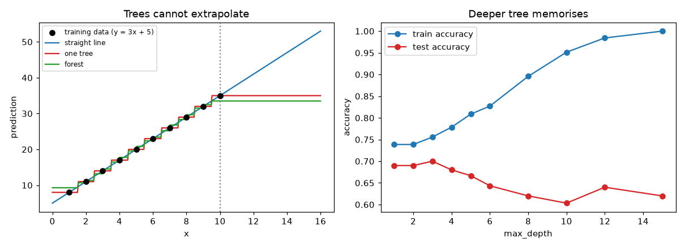
Pruning: grow big, then cut back
Pre-pruning stops growth early (max_depth, min_samples_leaf). Post-pruning grows a big tree and then removes branches that do not earn their place. The standard version is cost-complexity pruning:
Cost(T) = Error(T) + α · (number of leaves of T)α (alpha, "alpha") is the price per leaf. A big tree has low error but many leaves. A small tree is cheap but has higher error. A bigger α favours a smaller tree. The pruning order is by weakest link: remove first the branch that adds the least error reduction per extra leaf.
Problem 6.3.1 A node, if cut to a single leaf, would have error 0.10 (as a fraction of all training rows). The subtree below it has 3 leaves and error 0.06. At what α do we prefer to cut it?
| Formula | cost(leaf) = 0.10 + α·1; cost(subtree) = 0.06 + α·3. |
|---|---|
| Plug in | cut when 0.10 + α ≤ 0.06 + 3α. |
| Compute | 0.04 ≤ 2α, so α ≥ 0.02. This is also (0.10 − 0.06)/(3 − 1), the "error saved per extra leaf". |
| Answer | For α ≥ 0.02 the three leaves are not worth their cost, so we prune to one leaf. For smaller α we keep them. |
| Check | At α = 0.02 the costs are 0.12 and 0.12: a tie, as expected at the threshold. |
| Why it matters | Each branch has its own threshold α; raising α slowly removes branches in order of weakness. That gives a sequence of nested trees that you can score with cross-validation (Chapter 8). |
Problem 6.3.2 On our data, how does ccp_alpha change the full tree?
Run DecisionTreeClassifier(ccp_alpha=a) for several a:
0 175 1.0 0.62
0.003 15 0.801 0.68
0.005 7 0.769 0.703
0.01 5 0.754 0.703
0.02 3 0.739 0.69- Answer
α = 0.005reduces 175 leaves to 7, loses 23 points of training accuracy (1.000 to 0.769), and gains 8 points of test accuracy (0.620 to 0.703). - Check The training score always drops as
αrises; only the test score tells us whether the pruning helped. We choseαon the test rows here for teaching. In real work you choose it by cross-validation on the training data and keep the test rows for the end (Chapter 8).
Categoricals and missing values
Handling differs by library and version, so check your docs. scikit-learn trees accept NaN (since 1.3); HistGradientBoosting* has categorical_features; LightGBM and CatBoost handle categories natively. A category with 500 levels coded 0..499 gives the tree a fake order (id ≤ 247 means nothing), so use native handling or target encoding done inside cross-validation. Keep a "was missing" flag too, because missingness is often informative.
The step-like weakness: no extrapolation
A tree predicts the mean of the training rows in a leaf. It can never predict a value outside the range it saw. Train on the exact line y = 3x + 5 for x = 1..10 (so y from 8 to 35):
query x 5.5 10 15 30
tree prediction 20.0 35.0 35.0 35.0
linear prediction 21.5 35.0 50.0 95.0
true value 21.5 35 50 95The tree is stuck at 35 forever after x = 10. A random forest does the same (the green curve in the picture). This is important for forecasting: if sales grow with time and you give a tree the raw time index, it will predict a flat line in the future. Fixes: predict the change or ratio rather than the level, detrend first, use a linear model for the trend and a tree for the residual, or add a linear-tree option (LightGBM has linear_tree).
Strengths: no scaling, finds interactions, readable when shallow. Weaknesses: unstable (a small data change can change the root split), step-like, cannot extrapolate, overfits when deep.
Applications. Forecasting with detrended targets, shallow auditable risk scorecards, quick non-linear baselines.
6.4 Bagging and Random Forests: Averaging Away the Variance
The two sources of randomness
- Bootstrap sample ("bagging" is short for bootstrap aggregating). For each tree, draw
nrows from thentraining rows with replacement. Some rows appear twice or more, some not at all. Each tree sees a different version of the data. - Random feature subset at each split. Instead of testing all features, each split looks at only
max_featuresrandomly chosen ones. This stops every tree from using the same strong feature at the root.
Prediction: for classification average the trees' probabilities (or vote); for regression average the numbers.
Why averaging reduces variance: the formula
Suppose each tree's prediction at a point has variance σ², and any two trees have correlation ρ (rho). The variance of the average of B trees is:
Var(average) = ρ·σ² + (1 − ρ)·σ² / BProblem 6.4.1 Each tree has σ² = 4. Compare B = 100 trees with correlation ρ = 0.5 and with ρ = 0.1.
| Formula | Var = ρσ² + (1−ρ)σ²/B. |
|---|---|
| Plug in (ρ = 0.5) | 0.5 × 4 + 0.5 × 4 / 100 = 2 + 0.02. |
| Plug in (ρ = 0.1) | 0.1 × 4 + 0.9 × 4 / 100 = 0.4 + 0.036. |
| Compute | 2.02 and 0.436. |
| Answer | With correlated trees (0.5) the average still has variance 2.02, about half of a single tree. With less correlated trees (0.1) it falls to 0.436, nearly a ninth. |
| Check | If B → ∞ the second term vanishes and the floor is ρσ²: 2.0 and 0.4. Adding trees beyond a point cannot beat the correlation floor, which is why the random feature subset (which lowers ρ) matters more than the number of trees. |
| Why it matters | This formula explains the two knobs: more trees shrink the second term; smaller max_features shrinks ρ (but raises each tree's bias a little). |
Bias stays about the same as for one tree, so bagging works best with low-bias, high-variance trees: deep, unpruned trees. That is the opposite of boosting (Chapter 7), which uses shallow trees and attacks bias.
Out-of-bag (OOB) error: free validation
Problem 6.4.2 What fraction of the rows is left out of one bootstrap sample?
| Formula | The chance a given row is not drawn in one draw is 1 − 1/n. We draw n times, so it is never drawn with probability (1 − 1/n)ⁿ. |
|---|---|
| Plug in | n = 5: 0.8⁵ = 0.328. For large n: (1−1/n)ⁿ → e⁻¹ = 0.368. |
| Compute (simulation, n = 1000, 200 repeats) | the average fraction of distinct rows in a sample is 0.633, and 1 − e⁻¹ = 0.632. |
| Answer | About 63.2 percent of rows are in each bootstrap sample; about 36.8 percent are left out. |
| Check | Real output: 0.63299 0.63212, matching theory to 3 decimals. |
| Why it matters | The left-out rows are a free test set for that tree. For each row, average only the predictions from the trees that did not see it. The score of these predictions is the OOB score, an honest estimate with no separate validation set. In scikit-learn: RandomForestClassifier(oob_score=True). |
Real results on our data (700 train, 300 test), min_samples_leaf=1:
| trees | OOB accuracy | test accuracy |
|---|---|---|
| 1 | 0.591 | 0.623 |
| 5 | 0.683 | 0.650 |
| 25 | 0.719 | 0.680 |
| 100 | 0.724 | 0.687 |
| 300 | 0.721 | 0.673 |
Two lessons. (1) The OOB score tracks the test score, so it is a usable free validation (but see Chapter 8: if rows are grouped or in time order, OOB is optimistic because the left-out row has near-twins in the trees that saw it). (2) Accuracy stops improving after about 100 trees. A forest rarely overfits by adding more trees; the extra trees only cost time and memory. (The 0.687 to 0.673 move is noise.)
One tree versus a forest
Retrained 15 times on bootstrap resamples: a single tree scored 0.631 test accuracy (std 0.025); a 100-tree forest 0.680 (std 0.017). More accurate and more stable.
The main knobs
n_estimators (200 to 500; more never hurts accuracy), max_features (√p is the classification default; smaller means less correlated trees), min_samples_leaf (3 to 20 for noisy data), max_samples, class_weight. On our 3-feature data max_features=1, 2, 3 gave test accuracy 0.693, 0.693, 0.680; the effect is larger with many features.
Extra Trees (Extremely Randomized Trees) go one step further: instead of searching for the best threshold, each candidate feature gets a random threshold, and the best of those is used. It is faster and decorrelates trees more. On our data ExtraTreesClassifier scored 0.703 test. It often matches a random forest and sometimes beats it on noisy data.
Connection to the real job. A random forest is the best "first strong model" for tabular data: few hyperparameters, robust to scaling and outliers, OOB gives a quick score. Many teams ship it as the baseline before boosting.
Applications. Fraud and default baselines, churn with hundreds of features, small-data risk models, late-delivery prediction.
n_estimators down to 10. The forest overfits by tree depth and leaf size, not by tree count. Use plenty of trees and regularize through min_samples_leaf and max_features.Check yourself.
- With
ρ = 1(identical trees), what is the variance of the average? Answer:σ², no gain. - How many of 1,000 rows are OOB for a typical tree? Answer: about 368.
- Why does
max_features < phelp? Answer: it lowers the correlation between trees, which lowers the variance floorρσ².
6.5 Feature Importance: Which Number to Trust
The two methods
- Impurity importance (also "mean decrease in impurity", MDI;
feature_importances_): for each feature, add up the gain of every split that used it, across all trees, and normalise to sum 1. It is computed from training data, so a feature that helps memorise gets credit. - Permutation importance: take held-out data, shuffle one feature's column (breaking its link to the target), and measure how much the score falls. A big drop means the model relied on it. Use
sklearn.inspection.permutation_importance.
Impurity importance favours features with many distinct values (high cardinality): a column of random customer ids offers hundreds of thresholds, so by pure luck some split looks good in each node.
Problem 6.5.1 We add two useless columns to the 1,000 deliveries: cust_id (a random integer from 0 to 499) and noise (random numbers rounded to integers). A forest (300 trees, deep) is trained and importances are compared:
| feature | impurity importance | permutation importance (test) |
|---|---|---|
| load | 0.365 | 0.135 |
| queue | 0.244 | 0.025 |
| err | 0.185 | 0.018 |
| cust_id | 0.152 | 0.000 |
| noise | 0.055 | 0.000 |
- Step 1 Compare the
cust_idrow. Impurity says it is the fourth most useful feature (15 percent of the total credit), close toerr(18.5 percent). - Step 2 Permutation says shuffling it changes test accuracy by 0.000. The model does not truly use it on new data.
- Answer Impurity importance credited a random id with 15 percent importance because it has many split points and lets the deep trees memorise training rows. Permutation importance correctly says zero.
- Check We know by construction that
cust_idhas no relation to the label, so any importance above zero on held-out data would be a bug in the method. - Why it matters Never publish "top features" from
feature_importances_on data with ids or continuous noise. Use permutation importance on held-out data, or SHAP (the model-explanation material later in this series). Also remember that for correlated features, permutation importance splits or hides credit (the model uses the twin).
6.6 Seeing a Tree: Reading Splits, Rules and Rectangles
Everything so far in this chapter was numbers. A tree is the one model where you can also look at what it learned, and looking is the quickest way to catch nonsense. This section shows three views of the same fitted tree: the text rules, the node diagram, and the rectangles it cuts the feature space into. We use the classic iris flowers with just two features (petal length and petal width), depth limited to 3.
import numpy as np
from sklearn.datasets import load_iris
from sklearn.tree import DecisionTreeClassifier, export_text
X, y = load_iris(return_X_y=True); X = X[:, 2:]
t = DecisionTreeClassifier(max_depth=3, random_state=0).fit(X, y)
print(export_text(t, feature_names=["petal_len", "petal_wid"], show_weights=True))
print("train acc", round(t.score(X, y),3), "leaves", t.get_n_leaves())
from sklearn.tree import DecisionTreeClassifier as D
for d in (1, 2, 3, 8): print("depth", d, "leaves", D(max_depth=d, random_state=0).fit(X, y).get_n_leaves(), "acc", D(max_depth=d, random_state=0).fit(X, y).score(X, y))|--- petal_wid <= 0.80
| |--- weights: [50.00, 0.00, 0.00] class: 0
|--- petal_wid > 0.80
| |--- petal_wid <= 1.75
| | |--- petal_len <= 4.95
| | | |--- weights: [0.00, 47.00, 1.00] class: 1
| | |--- petal_len > 4.95
| | | |--- weights: [0.00, 2.00, 4.00] class: 2
| |--- petal_wid > 1.75
| | |--- petal_len <= 4.85
| | | |--- weights: [0.00, 1.00, 2.00] class: 2
| | |--- petal_len > 4.85
| | | |--- weights: [0.00, 0.00, 43.00] class: 2
train acc 0.973 leaves 5
depth 1 leaves 2 acc 0.6666666666666666
depth 2 leaves 3 acc 0.96
depth 3 leaves 5 acc 0.9733333333333334
depth 8 leaves 8 acc 0.9933333333333333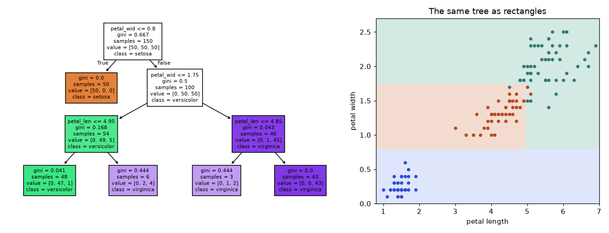
How to read it: in the diagram each box shows the question, the Gini impurity, the number of rows and the class counts; the colour is the majority class and a darker colour means a purer node. Follow one flower down: petal width 1.2 and length 4.0 goes to "width > 0.8", then "width <= 1.75", then "length <= 4.95", landing in the leaf with counts [0, 47, 1], class versicolor. On the right, every question is a straight vertical or horizontal line, so the regions are rectangles; the staircase boundary between versicolor and virginica is how a tree approximates a diagonal.
Problem 6.6.1 Compute the Gini impurity of the leaf [0, 47, 1] and of the leaf [0, 2, 4], and the weighted impurity of the pair, which came from the split at petal length 4.95.
| Step 1 | Leaf A has 48 rows: p = (47/48, 1/48). Gini = 1 − (0.9792² + 0.0208²) = 1 − (0.9588 + 0.0004) = 0.0408. |
|---|---|
| Step 2 | Leaf B has 6 rows: p = (2/6, 4/6). Gini = 1 − (0.1111 + 0.4444) = 0.4444. |
| Step 3 | Weighted: (48 × 0.0408 + 6 × 0.4444) / 54 = (1.959 + 2.667) / 54 = 0.0857. |
| Answer | 0.0857 after the split, versus the parent ([0, 49, 5], Gini 1 − (0.9074² + 0.0926²) = 0.1675). The split removed about half the impurity. |
| Check | A pure leaf scores 0 and a 50/50 leaf scores 0.5; leaf B at 0.444 is close to a coin flip, which the diagram shows as a pale colour. |
Depth versus leaves versus accuracy
The last printed lines show the training accuracy for depths 1, 2, 3 and 8: 0.667, 0.96, 0.973 and 0.993, with 2, 3, 5 and 8 leaves. Going from depth 2 to 3 adds two leaves and buys 1.3 points; depth 8 buys 2 more points for three extra leaves, and those leaves each describe one or two flowers, which is memorising. The picture of a tree whose rectangles are tiny and scattered inside another class's region is the visual signature of overfitting.
Check yourself
- Why are the regions on the right always rectangles? Answer: every question tests one feature against one threshold, which is a line parallel to an axis.
- A leaf shows
[0, 2, 4]. What does the model predict and how sure is it? Answer: class 2; the leaf estimate is 4/6 = 0.67, from only 6 rows, so treat it as weak. - What does
export_textgive you that the image does not? Answer: a diff-able, searchable text version for code review and audit.
Chapter recap
- A decision tree is a greedy nested list of
if feature ≤ thresholdquestions. Each split is chosen to maximise gain = parent impurity minus weighted child impurity. - Gini
2p(1−p)and entropy−Σ p log₂ prank splits almost identically. Regression uses variance (SSE) reduction and leaves predict the mean. - Candidate thresholds are midpoints between sorted values; sorting once and using cumulative sums keeps it fast.
- Our 40-line NumPy tree matched scikit-learn exactly (max probability difference 0.0).
- A tree with no limits memorises (train 1.00, test 0.62). Control it with
max_depth,min_samples_leafor cost-complexity pruning (ccp_alpha); choose by cross-validation. - Trees do not need scaling, find interactions, but are unstable, step-like and cannot extrapolate.
- Bagging averages trees trained on bootstrap samples.
Var = ρσ² + (1−ρ)σ²/B: random feature subsets lowerρ. - About 36.8 percent of rows are out-of-bag for each tree, giving a free validation score. More trees never hurt accuracy; depth and leaf size cause overfitting.
- Impurity importance is biased toward high-cardinality features. Prefer permutation importance on held-out data.
| Formula / command | Meaning |
|---|---|
Gini = 1 − Σpₖ², Entropy = −Σpₖ log₂ pₖ | node impurity |
Gain = I(parent) − Σ (nᵢ/n) I(childᵢ) | split score |
SSE = Σ (y − ȳ)² | regression impurity |
Cost = Error + α·leaves | cost-complexity pruning |
Var = ρσ² + (1−ρ)σ²/B | variance of an average of correlated models |
(1−1/n)ⁿ → 0.368 | out-of-bag fraction |
DecisionTreeClassifier(max_depth, min_samples_leaf, ccp_alpha) | tree |
RandomForestClassifier(n_estimators, max_features, oob_score=True) | forest |
permutation_importance(model, X_val, y_val) | honest importance |
Practice set
- (easy) A node has 20 rows, 5 positive. Gini? Answer:
p = 0.25,2 × 0.25 × 0.75 = 0.375. - (easy) A split sends 6 rows left (all negative) and 4 rows right (all positive) from a 50/50 node of 10 rows. Gain in Gini? Answer: parent 0.5; children both 0; gain 0.5 (a perfect split).
- (medium) What is the output?
DecisionTreeRegressor().fit([[1],[2],[3]], [10,20,30]).predict([[100]]). Answer:[30.], the right-most leaf; trees do not extrapolate. - (medium) Find the bug: you one-hot encode
customer_idwith 20,000 levels and the forest's training score is 0.99 but test 0.70. Answer: the id lets trees memorise customers; drop the id (or use group-aware validation, Chapter 8). Check with permutation importance. - (medium) A subtree has 4 leaves and error 0.05; as a single leaf its error would be 0.11. At what
αis it pruned? Answer:(0.11 − 0.05)/(4 − 1) = 0.02. - (hard, scenario) Your demand forecast uses a random forest on features
[week_index, price, promo]. It is good in back-tests but flat when sales grow 30 percent next year. Why, and what do you do? Answer: trees cannot predict beyond the target range seen;week_indexsplits become constant. Model the trend separately (linear or growth rate), forecast the ratio to trend, or detrend; validate on a later time period (Chapter 8). - (hard) Show that about 63.2 percent of rows are in a bootstrap sample. Answer: each row is missed with probability
(1−1/n)ⁿ → e⁻¹ = 0.368, so it is included with1 − 0.368 = 0.632. - (interview) "Why does a random forest decorrelate its trees, and why does it matter?" Answer: Bootstrap rows and a random feature subset at each split make trees different. The variance of the average is
ρσ² + (1−ρ)σ²/B; with identical trees (ρ = 1) averaging helps nothing, and lowerρlowers the floor. - (interview) "Gini vs entropy, and which feature-importance would you trust?" Answer: both are concave impurity measures that give almost the same trees; Gini is slightly cheaper. For importance, prefer permutation importance on held-out data, because impurity importance rewards high-cardinality features (an id looked 15 percent important in our test).
(easy) A leaf holds [10, 0]. Gini? Answer: 1 − (1² + 0²) = 0; pure.
(medium) A node [30, 30] splits into [25, 5] and [5, 25]. Gini gain? Answer: parent 0.5; each child 1 − (0.8333² + 0.1667²) = 0.2778; equal sizes so weighted 0.2778; gain 0.2222.
Prompt pack
You are my patient, practical professor. I am a working professional moving into data roles, and English is my second language, so use simple words. Topic: how a decision tree (CART) picks its best split with Gini, entropy and information gain. Explain with a "20 questions" analogy, walk through one split on 8 rows with every number, then give me 8 graded exercises (no solutions yet) and check my answers one by one.
You are my patient, practical professor. I am a working professional moving into data roles, and English is my second language. Topic: a decision tree from scratch in NumPy (best_split with cumulative sums, recursive grow, predict). Review my code for bugs, speed problems and edge cases (equal values, min_samples_leaf, pure nodes): [PASTE MY CODE HERE]. Then ask me three questions to test my understanding.
You are my patient, practical professor. I am a working professional moving into data roles, and English is my second language. Topic: overfitting in trees, pre-pruning, cost-complexity pruning (ccp_alpha), and why trees cannot extrapolate. Use a delivery-time example, give me four computation problems, and quiz me one at a time, waiting for each answer.
You are my patient, practical professor. I am a working professional moving into data roles, and English is my second language. Topic: bagging and random forests: bootstrap, out-of-bag error, max_features, and the variance formula rho*sigma^2 + (1-rho)*sigma^2/B. Explain with a crowd-guessing analogy, give me 6 numeric exercises, and review my reasoning when I reply.
You are my patient, practical professor. I am a working professional moving into data roles and preparing for ML interviews, and English is my second language. Topic: decision trees, random forests and feature importance (impurity vs permutation). Run a mock interview: one question at a time, score my answer out of 10, show a model answer in simple English, then a harder follow-up. Include one derivation and one find-the-bug question.
On spreadsheets and database tables (credit risk, churn, demand, fraud, click prediction) the model that wins most often is not a deep network. It is gradient boosting: hundreds of small trees added one after another. A random forest (Chapter 6) averages independent trees to cut variance; boosting builds trees in sequence to cut bias. In this chapter you will derive the method from one idea (gradient descent in the space of functions), build it in 15 lines of NumPy and match scikit-learn, then derive the second-order formulas that make XGBoost special, see what LightGBM and CatBoost change, and learn the practical tuning order. By the end you can explain boosting on a whiteboard and tune a booster without guessing.
Prerequisites: Chapter 6 (trees, gain), Chapter 4 (log loss and its gradient), gradient descent and Taylor series (Math PDF, calculus pillar). The libraries XGBoost, LightGBM and CatBoost could not be installed in this environment, so their code is marked "not run here". Every other output (NumPy, scikit-learn 1.9.1, including HistGradientBoosting, which follows the LightGBM design) is real, with fixed seeds.
Running example. A synthetic regression table of 3,000 rows and 5 features, split 1,800 train / 600 validation / 600 test. The target mixes a wave (sin(2·x₀)), an interaction (0.6·x₁·x₂), a step (x₃ > 0.5), a slope (0.3·x₄) and noise with standard deviation 0.5, so the best possible mean squared error (MSE) is about 0.25. Baselines on the test set: predict the mean 4.613; linear regression 3.905; random forest 1.224.
7.1 The Idea: Fix the Leftovers (and AdaBoost in One Page)
Words you need
| Word | Meaning |
|---|---|
| Weak learner | a simple model, only a little better than guessing (a tree with 2 to 8 leaves) |
| Ensemble | many models combined into one prediction |
| Residual | y − current prediction, the leftover error |
Shrinkage / learning rate η | a number like 0.1 that scales each new tree's contribution |
| Boosting round | one step: fit a tree, add it to the sum |
Bagging versus boosting. Bagging trains trees independently on resampled data and averages: it reduces variance. Boosting trains trees one after another on what is still wrong: it reduces bias, and therefore can overfit if pushed too far. That is why learning rate and early stopping matter.
AdaBoost: reweight the hard examples
The first successful boosting method (AdaBoost, 1990s) works on classification. After each weak learner, it raises the weight of the examples it got wrong, so the next learner pays attention to them. The learner's vote is larger when it is more accurate: α = ½ · ln((1 − ε)/ε), where ε is its weighted error.
Problem 7.1.1 Ten examples start with weight 0.1 each. A stump (one-split tree) gets 2 examples wrong. Compute α and the new weights.
| Formula | ε = sum of weights of mistakes; α = ½ ln((1−ε)/ε); wrong examples get weight × e^α, right ones × e^(−α); then divide by the total. |
|---|---|
| Plug in | ε = 2 × 0.1 = 0.2, so α = ½ ln(0.8/0.2) = ½ ln 4 = 0.6931. |
| Compute | e^α = 2 and e^(−α) = 0.5. Wrong examples: 0.1 × 2 = 0.2 each (two of them, total 0.4). Right examples: 0.1 × 0.5 = 0.05 each (eight, total 0.4). Sum 0.8. Normalised: each wrong example 0.2/0.8 = 0.25, each right example 0.05/0.8 = 0.0625. |
| Answer | After one round the two hard examples carry 0.25 each (total 0.5), and the eight easy ones share the other 0.5. |
| Check | Weights sum to 2 × 0.25 + 8 × 0.0625 = 1.0. The mistakes went from 20 percent of the weight to 50 percent, so the next stump must work on them. |
| Why it matters | Reweighting is one way to "focus on leftovers". Gradient boosting (next) generalises it to any loss, and AdaBoost turns out to be a special case (exponential loss). |
Check yourself.
- Does boosting mainly reduce bias or variance? Answer: bias.
- A stump has weighted error 0.5. What is
α? Answer:½ ln(1) = 0: a coin flip gets no vote. - Why can boosting overfit when forests rarely do? Answer: each round chases the leftover error, including noise.
7.2 Gradient Boosting Derived: Gradient Descent on Predictions
The derivation
Let the model's prediction for row i be F(xᵢ). The total loss is L = Σᵢ ℓ(yᵢ, F(xᵢ)). We want to lower L.
- Start with a constant
F₀, the single number that minimises the loss (the mean ofyfor squared error; the log-odds of the positive rate for log loss). - For each round
m = 1, 2, …, M:- Compute the pseudo-residual (negative gradient) for every row:
rᵢ = −∂ℓ(yᵢ, F)/∂Fevaluated at the currentF = F_{m−1}(xᵢ). - Fit a small regression tree
hₘ(x)to the pairs(xᵢ, rᵢ). - Update
Fₘ(x) = F_{m−1}(x) + η · hₘ(x).
- Compute the pseudo-residual (negative gradient) for every row:
- Output
F_M. For classification, passF_Mthrough the sigmoid.
The name explains itself: gradient (the direction), boosting (adding weak learners).
Squared error. ℓ = ½(y − F)². Then ∂ℓ/∂F = −(y − F), so the pseudo-residual is r = y − F: the ordinary residual. Boosting with squared loss literally fits trees to the leftovers. (If the loss is (y−F)² without the ½, the gradient is twice as large; the constant is absorbed by η and the tree.)
Log loss. With p = σ(F): ℓ = −[y ln p + (1−y) ln(1−p)]. From Chapter 4, ∂ℓ/∂F = p − y, so r = y − p: the probability error, the same as logistic regression's residual. The second derivative is ∂²ℓ/∂F² = p(1−p); we need it in 7.4.
Other losses give other residuals. Absolute error gives r = sign(y − F); Huber and quantile losses give clipped or tilted versions. That is why boosting accepts any differentiable loss: only the formula for r changes (Math PDF, loss functions).
Worked problems
Problem 7.2.1 Four rows x = 1, 2, 3, 4 with y = 3, 5, 4, 10. Use squared error, stumps (one split), learning rate η = 0.5. Do two rounds by hand.
| Step 1 | F₀ = mean(y) = 22/4 = 5.5. Initial MSE = (6.25 + 0.25 + 2.25 + 20.25)/4 = 7.25. |
|---|---|
| Step 2 (round 1) | Residuals r = y − 5.5 = −2.5, −0.5, −1.5, +4.5. The best stump splits between x = 3 and x = 4: left mean (−2.5 − 0.5 − 1.5)/3 = −1.5, right mean 4.5. |
| Step 3 | Update F₁ = 5.5 + 0.5 × (−1.5) = 4.75 for x = 1..3 and 5.5 + 0.5 × 4.5 = 7.75 for x = 4. MSE = (1.75² + 0.25² + 0.75² + 2.25²)/4 = 2.1875. |
| Step 4 (round 2) | Residuals 3 − 4.75 = −1.75, 5 − 4.75 = 0.25, 4 − 4.75 = −0.75, 10 − 7.75 = 2.25. The best stump again splits at 3.5: left mean −0.75, right 2.25. |
| Step 5 | F₂ = 4.75 − 0.375 = 4.375 for x = 1..3 and 7.75 + 1.125 = 8.875 for x = 4. MSE 0.9219. |
| Answer | The MSE fell 7.25 → 2.1875 → 0.9219 in two rounds; round 3 (from code) reaches 0.4492 and starts splitting at x = 1.5. |
| Check | 0.9219 = (1.375² + 0.625² + 0.375² + 1.125²)/4 = (1.8906 + 0.3906 + 0.1406 + 1.2656)/4 = 0.9219. The code gives the same. |
| Interpretation | Each round closes η = 50 percent of the gap the tree sees. With η = 1 the stump would fix the gap fully but would also chase noise. Small steps are safer. |
Problem 7.2.2 (the same recipe, classification) Six rows x = 1..6, labels y = 0, 0, 1, 0, 1, 1. Start from F₀ = ln(0.5/0.5) = 0 so every p = 0.5. Find the pseudo-residuals and the best stump.
| Compute | r = y − p = −0.5, −0.5, +0.5, −0.5, +0.5, +0.5. |
|---|---|
| Fit | The best stump splits at x ≤ 2.5. Left (rows 1, 2): mean r = (−0.5 − 0.5)/2 = −0.5. Right (rows 3 to 6): mean r = (0.5 − 0.5 + 0.5 + 0.5)/4 = +0.25. |
| Answer | With η = 0.5 the log-odds for rows 1 and 2 move by 0.5 × (−0.5) = −0.25 and for rows 3 to 6 by 0.5 × 0.25 = +0.125. |
| Check | Rows 1 and 2 are both truly 0, so pushing their probability down is right. Rows 3 to 6 contain three 1s and one 0, so a small push up is right. |
| Interpretation | Each leaf moves by the average residual of its rows, so mixed leaves move only a little. Section 7.4 refines this step with the second derivative. |
From scratch, and proof that it matches scikit-learn
import numpy as np
from sklearn.tree import DecisionTreeRegressor
class MyGB:
def __init__(s, n_trees=100, lr=0.1, depth=3): s.B, s.lr, s.d = n_trees, lr, depth
def fit(s, X, y):
s.f0 = y.mean(); F = np.full(len(y), s.f0); s.trees = []
for b in range(s.B):
t = DecisionTreeRegressor(max_depth=s.d, random_state=0).fit(X, y - F) # fit residuals
F += s.lr * t.predict(X); s.trees.append(t)
return s
def predict(s, X):
return s.f0 + s.lr * sum(t.predict(X) for t in s.trees)Compared with GradientBoostingRegressor(criterion="squared_error", max_depth=3, learning_rate=0.1) on our running example (20 trees), the largest difference in predictions on the 600 test rows is 4.4e-16, which is rounding noise. With 200 trees, a near-tie in some split flipped and the maximum difference grew to 0.69 on a single row, while the test MSE is 0.785 (ours) versus 0.776 (scikit-learn). Same algorithm, tiny tie-break differences.
y. The final prediction is a sum: F₀ + η·h₁(x) + η·h₂(x) + …. Prediction time is therefore linear in the number of trees (relevant for latency budgets).![Left panel: horizontal axis x from 0 to 6, vertical axis prediction. Black dots are noisy samples of a sine wave. The red line, one stump, is a single step. The orange line, 5 stumps, is a rough staircase of the wave. The green line, 50 stumps, follows the wave closely. Right panel: horizontal axis number of trees up to 1000, vertical axis validation MSE. Learning rate 1.0 (red) drops fast then rises. Learning rates 0.3 and 0.1 fall slower and reach lower minima; learning rate 0.03 is still falling at 1000 trees.](images/ch07_boosting.png)
Connection to the real job. In an interview, "explain gradient boosting" should take 30 seconds: constant start; compute negative gradient; fit a small tree to it; add it with a small learning rate; repeat.
Applications. Credit and insurance pricing, fraud, churn, ETA and demand prediction, click and ranking models.
y. Then the trees are all copies and nothing is corrected. Check: the target of tree m must be y − F_{m−1} (or the gradient).Check yourself.
- Pseudo-residual for squared loss
½(y−F)²? Answer:y − F. - Pseudo-residual for log loss? Answer:
y − p. - What does the first constant
F₀equal for squared error? Answer: the mean ofy.
7.3 Learning Rate, Number of Trees, Subsampling and Early Stopping
On the running example (depth-3 trees, GradientBoostingRegressor, up to 1,000 trees), the best validation MSE for each learning rate:
| learning rate | best number of trees | validation MSE at best | validation MSE at 1,000 trees |
|---|---|---|---|
| 1.0 | 35 | 0.7399 | 0.8755 |
| 0.3 | 215 | 0.6617 | 0.7285 |
| 0.1 | 997 | 0.5935 | 0.5937 |
| 0.03 | 1000 (not yet done) | 0.7138 | 0.7138 |
Read it like this. A big step (1.0) finishes in 35 trees but ends worse (0.74) and then overfits (0.88 at 1,000 trees). Smaller steps find better minima but need more trees. A learning rate of 0.03 simply needs more than 1,000 trees (it is still improving). This is why the practitioner rule is: pick a small learning rate (0.05 to 0.1 while exploring, 0.01 to 0.03 for the final model) and let early stopping choose the number of trees.
Early stopping means: after every round, measure the loss on a validation set; stop when it has not improved for k rounds (the "patience") and keep the best round. Using HistGradientBoostingRegressor(early_stopping=True, validation_fraction=0.2, n_iter_no_change=30):
| learning rate | trees used | test MSE |
|---|---|---|
| 0.3 | 140 | 0.6618 |
| 0.1 | 684 | 0.6088 |
| 0.03 | 1227 | 0.6081 |
Dropping from 0.1 to 0.03 gives almost nothing (0.6088 to 0.6081) at twice the cost. Fix a learning rate, stop worrying, and spend your time on tree shape (7.5).
Subsampling (stochastic gradient boosting). Train each tree on a random fraction of rows (subsample in scikit-learn and XGBoost; bagging_fraction in LightGBM, usually 0.5 to 0.9), and optionally a random fraction of columns (colsample_bytree, feature_fraction). This adds the forest idea of randomness: less correlated trees, less overfitting, faster training.
Check yourself.
- Learning rate 0.01 versus 0.1: which needs more trees? Answer: 0.01, about ten times more.
- What does
n_iter_no_change=30mean? Answer: stop if there is no improvement for 30 rounds. - Why subsample rows? Answer: it decorrelates trees and reduces overfitting and time.
7.4 XGBoost, LightGBM and CatBoost: What Each One Changes
XGBoost: a second-order, regularised objective
Plain gradient boosting uses only the first derivative g. XGBoost approximates the loss with a Taylor series up to the second derivative h (a Newton step: it knows not only the slope but the curvature, as in the Math PDF's optimisation chapter). For one tree with leaf values w on T leaves, the objective for this round is:
Obj ≈ Σᵢ [ gᵢ·f(xᵢ) + ½·hᵢ·f(xᵢ)² ] + γ·T + ½·λ·Σⱼ wⱼ²
gᵢ = ∂ℓ/∂F (first derivative) hᵢ = ∂²ℓ/∂F² (second derivative)γ (gamma) is a penalty per leaf; λ (lambda) is an L2 penalty on leaf values. For a leaf j holding rows I_j, let G = Σ gᵢ and H = Σ hᵢ. The leaf contributes G·w + ½(H + λ)w². Set the derivative to zero: G + (H + λ)w = 0. So:
optimal leaf value w* = − G / (H + λ)
best objective value = − ½ · G² / (H + λ) (per leaf, plus γ)
split gain = ½ · [ G_L²/(H_L+λ) + G_R²/(H_R+λ) − (G_L+G_R)²/(H_L+H_R+λ) ] − γA split is made only if the gain is positive. Notice that γ kills weak splits, λ shrinks leaf values and gains, and H (the sum of curvatures) acts like a soft count of rows: min_child_weight is the smallest allowed H in a leaf. For squared error h = 1, so H is the row count. For log loss h = p(1−p), which is at most 0.25, so the condition is stricter for confident rows.
Problem 7.4.1 Use the six rows from Problem 7.2.2 with F₀ = 0, so p = 0.5 everywhere. Compute g, h, then the leaf values and the gain for the split after row 2, with λ = 0 and λ = 1.
| Formula | g = p − y, h = p(1 − p); w = −G/(H + λ); gain as above. |
|---|---|
| Plug in | g = 0.5, 0.5, −0.5, 0.5, −0.5, −0.5; h = 0.25 each. |
| Compute (left = rows 1, 2) | G_L = 1.0, H_L = 0.5. (right = rows 3 to 6) G_R = −1.0, H_R = 1.0. |
| λ = 0: | w_L = −1.0/0.5 = −2.0, w_R = 1.0/1.0 = +1.0. Gain = ½[1/0.5 + 1/1.0 − 0/1.5] = ½ × 3 = 1.5. |
| λ = 1: | w_L = −1.0/1.5 = −0.667, w_R = 1.0/2.0 = +0.5. Gain = ½[1/1.5 + 1/2.0 − 0] = ½ × 1.1667 = 0.5833. |
| Answer | Without regularisation the leaf values are −2 and +1 (log-odds), gain 1.5. With λ = 1 they shrink to −0.667 and +0.5, gain 0.583. |
| Check | Code (a six-line function) printed gains for all five possible splits with λ = 1: 0.1556, 0.5833, 0.1429, 0.5833, 0.1556, so the best are after row 2 and after row 4 (a tie by symmetry). Larger λ gives λ = 5: leaves −0.182 and +0.167, gain 0.174; λ = 20: −0.049 and +0.048, gain 0.048. |
| Interpretation | As λ grows, every leaf moves toward 0 and every split matters less. This is regularisation exactly like ridge (Chapter 3), but on leaf values. |
Why second order? The Newton step −G/H accounts for curvature: where the loss is flat (h small, confident predictions), it takes bigger steps; where it is steep, smaller ones. It also lets XGBoost optimise any loss for which you can supply g and h (7.5). The first-order version (plain gradient boosting) takes the mean residual per leaf, which is −G/n, a cruder step.
Other XGBoost features:
| Feature | What it does |
|---|---|
| Exact vs histogram split finding | exact tests every threshold (slow, big data); tree_method="hist" bins values for speed |
| Sparsity-aware splits | each split learns a default direction for missing values |
max_depth, min_child_weight | tree size; minimum H per leaf |
subsample, colsample_bytree | row and column sampling |
reg_lambda, reg_alpha, gamma | L2 on leaf values, L1 on leaf values, per-leaf penalty |
scale_pos_weight | reweights positives for imbalance (distorts probabilities: Chapter 9) |
LightGBM: speed on large data
- Histogram: values are first put into at most 255 bins (equal-frequency), and each split scans 255 bin boundaries instead of thousands of values. With 3,000 rows and 255 bins, that is about 12 times fewer thresholds; with millions of rows, the saving is large.
HistGradientBoostingin scikit-learn does the same (defaultmax_bins=255). - Leaf-wise growth: XGBoost's default grows level by level (all nodes at one depth, balanced). LightGBM repeatedly splits the leaf with the largest gain, so trees can be deep and lopsided. For the same number of leaves it reaches lower training loss, but it overfits more easily on small data. The key control is
num_leaves(not depth), together withmin_data_in_leaf. - GOSS (gradient-based one-side sampling): keep all rows with large gradients (badly fitted) and a random sample of the small-gradient rows (up-weighted to compensate). Faster, little loss in accuracy.
- EFB (exclusive feature bundling): sparse features that are almost never non-zero together are bundled into one column. Helps with wide one-hot data.
- Native categoricals: pass a categorical column and it finds the best split of categories into two groups, with no one-hot encoding.
CatBoost: categories without leakage
- Target statistics: a category (such as a city) is replaced by the average target for that category. Done naively, each row's own label leaks into its feature (Chapter 8's leakage). CatBoost computes the statistic for each row only from rows that come before it in a random order. Called ordered target statistics.
- Ordered boosting: the same idea applied to the gradient: the residual of a row is computed with a model that was not trained on that row, to reduce a subtle "prediction shift" bias.
- Symmetric (oblivious) trees: every node on one level uses the same split. They are fast at prediction time and regularise strongly.
- Defaults: good out of the box; often the best choice with many categorical columns and little tuning time.
Comparison
| XGBoost | LightGBM | CatBoost | |
|---|---|---|---|
| Growth | level-wise (default) | leaf-wise | symmetric, level-wise |
| Main size knob | max_depth | num_leaves | depth |
| Categories | manual or experimental | native | native, ordered statistics |
| Strength | mature, flexible, many options | speed and memory on big data | defaults, categoricals |
| Watch out | slower on huge data | overfits small data with big num_leaves | slower training on CPU for big data (version dependent) |
Not run here (standard usage; parameter names exist but early-stopping arguments change between versions, so check your version's docs):
import lightgbm as lgb
model = lgb.LGBMRegressor(learning_rate=0.05, n_estimators=5000, num_leaves=15,
min_child_samples=50, subsample=0.8, subsample_freq=1,
colsample_bytree=0.8, reg_lambda=1.0, random_state=0)
# model.fit(X_tr, y_tr, eval_set=[(X_va, y_va)], callbacks=[lgb.early_stopping(100)])Applications. XGBoost or LightGBM as the default tabular model; CatBoost for many categories; ranking objectives for search.
max_depth=10 from XGBoost advice into LightGBM, which is controlled by num_leaves. A depth-10 tree can have 1,024 leaves; with num_leaves=1000 on 5,000 rows, each leaf holds about 5 rows.Check yourself.
- In XGBoost, what is the leaf value for
G = −3,H = 4,λ = 2? Answer:−G/(H+λ) = 3/6 = 0.5. - Why does leaf-wise growth overfit small data faster? Answer: it can make deep, narrow branches that isolate a few rows.
- What problem do CatBoost's ordered statistics solve? Answer: target leakage in categorical encoding.
7.5 Tuning Order, Constraints, Custom Losses and Limits
The tuning order
- Fix the learning rate (0.05 to 0.1), set a large tree cap and turn on early stopping on a validation set.
- Tune tree complexity:
max_depthornum_leaves, thenmin_child_weightormin_data_in_leaf. - Add randomness: row and column sampling (0.5 to 0.9).
- Add regularisation:
lambda,alpha,gamma. - Finally lower the learning rate (for example 0.1 to 0.02) and refit with early stopping. This usually gives a small gain.
Search with random search or Optuna (Chapter 8 explains why tuning needs nested validation) and use log scales for learning rate and λ.
Problem 7.5.1 Apply this order to the running example with HistGradientBoostingRegressor, learning rate 0.1, up to 1,500 trees, early-stopping round chosen on validation. Which step helps most?
| Step | Setting | validation MSE | best trees | test MSE |
|---|---|---|---|---|
| 0 default | 31 leaves | 0.5658 | 222 | 0.4949 |
| 1 tree size | max_leaf_nodes=3 | 0.3597 | 1079 | 0.3393 |
| 2 leaf size | + min_samples_leaf=50 | 0.3401 | 927 | 0.3208 |
| 3 L2 | + l2_regularization=10 | 0.3505 | 1498 | 0.3410 |
- Step 1 Tree size mattered most: shrinking from 31 leaves to 3 cut test MSE from 0.495 to 0.339. Our target is a sum of mostly one- and two-variable pieces; small trees fit it without chasing noise.
- Step 2 Requiring 50 rows per leaf added a little (0.339 to 0.321).
- Step 3 L2 regularisation did not help (it also left the model still improving at the 1,500-tree cap). A value of
l2 = 1had validation 0.3334 versus 0.3401, within noise. - Answer Tune tree size first. The tuned test MSE is
0.3208against0.4949for the defaults,1.224for the random forest and3.905for linear regression. The floor from noise is about0.25. - Check
0.3208 − 0.25 = 0.07is the remaining excess error, so we are within 0.07 MSE of the best possible. More tuning cannot gain much; better features or more data would be the next step. - Warning Differences below about 0.02 MSE here are noise (validation of 600 rows). A step that does not clearly help should be dropped.
Monotonic constraints
If domain knowledge says the prediction must never fall as a feature rises (price with size, risk with number of missed payments), force it with monotone_constraints (XGBoost, LightGBM) or monotonic_cst (scikit-learn). Test: on a noisy line y = 0.5x + noise, an unconstrained model's prediction curve had 90 downward steps over 400 grid points; with monotonic_cst=[1] it had 0. Constraints reduce variance, make the model explainable to regulators, and cost little accuracy when the knowledge is right.
Custom objectives and metrics
XGBoost and LightGBM accept your own function returning g and h per row. Example: a loss that penalises under-prediction of capacity three times as much as over-prediction. You derive g and h as in 7.4 (for an asymmetric squared loss ℓ = w·(y−F)² with w = 3 if y > F else 1, we get g = −2w(y−F) and h = 2w). A custom evaluation metric is different: it is only used to monitor and stop, never differentiated. Often the best approach is to train with a standard loss and tune the threshold or post-processing against the business metric (Chapter 9).
Diagnostics and limits
Use learning curves (validation loss per round), permutation importance or SHAP (a method that splits each prediction into feature contributions) rather than gain importance (the bias from 6.5 applies), and partial dependence plots. Limits: boosting cannot extrapolate (6.3); text, images and very sparse high-cardinality data suit other models; trees do not invent lags and ratios; noisy labels hurt boosting more than forests because it keeps fitting leftovers.
Ensembling: averaging, stacking, blending
Boosting is itself an ensemble, but you can combine different models. Averaging takes the mean of predictions. Stacking trains a "meta model" on predictions made on data the base models did not train on, called out-of-fold (OOF) predictions (if the meta model sees in-sample predictions, it learns to trust the most overfit model: leakage, Chapter 8). Blending is the simple version: the meta model is trained on one holdout set.
On the running example (test MSE): random forest 1.2082, boosting 0.4145 (a small tuned HistGradientBoosting), linear 3.9052. Averaging forest and boosting gives 0.6132, worse than boosting alone because the forest is much weaker. A stack with a non-negative linear meta model on OOF predictions put weights 0.015, 1.03, 0.0 (forest, boosting, linear) and scored 0.4122, essentially the same as boosting alone, because there was nothing complementary to add. Lesson: diversity helps only among models of similar strength; the correlation of errors between forest and booster here was 0.59.
Ensembling pays in competitions; it costs latency and maintenance. For most business systems one tuned booster is the right trade.
Applications. Monotone constraints for regulated pricing, asymmetric custom loss when under-forecasting costs more, tuned boosters for ranking.
Check yourself.
- Which knob first after fixing the learning rate? Answer: tree size (depth or leaves).
- Why average only similar-strength models? Answer: a much weaker model adds error that diversity cannot offset (0.613 versus 0.4145 above).
- Gradient and curvature for
ℓ = w(y−F)²? Answer:g = −2w(y−F),h = 2w.
7.6 More Worked Boosting Examples: Log Loss, Gain Arithmetic, Early Stopping, Custom Loss
Sections 7.2 and 7.4 gave one hand example each. This section adds four more of different flavours, all run for real. Note on libraries: XGBoost, LightGBM and CatBoost are not installed in the environment where this text was verified (and there was no network), so everything below uses the exact formulas of 7.4 written in NumPy, plus scikit-learn. Any call to the three libraries elsewhere in this chapter is not run here; the arithmetic in this section is what those libraries compute for these objectives, but a library cross-check is not run here.
Example A: two rounds of log-loss boosting with Newton leaves
Same six rows as Problem 7.2.2 (x = 1..6, y = 0, 0, 1, 0, 1, 1), but now with the XGBoost-style leaf w = −G/(H+λ), λ = 1 and η = 0.5.
Problem 7.6.1 Do round 1 by hand and read round 2 from the code. What happens to the log loss?
| Setup | F₀ = 0, so p = 0.5. g = p − y = (0.5, 0.5, −0.5, 0.5, −0.5, −0.5), h = 0.25 for every row. Initial log loss is ln 2 = 0.6931. |
|---|---|
| Split after row 2 | G_L = 1.0, H_L = 0.5; G_R = −1.0, H_R = 1.0. Gain = ½ · [1/(0.5+1) + 1/(1+1) − 0/(1.5+1)] = ½ · (0.6667 + 0.5) = 0.5833. |
| Leaf values | w_L = −1.0/1.5 = −0.6667, w_R = +1.0/2 = 0.5. |
| Update | F = 0.5 × w: −0.3333 for rows 1 and 2, +0.25 for rows 3 to 6. Probabilities become σ(−0.3333) = 0.417 and σ(0.25) = 0.562. |
| Round 2 | Now the rows are no longer equal: g and h are recomputed from the new p. The code picks the split after row 4 (a different split from round 1), because rows 1 to 4 still contain mostly zeros and rows 5, 6 are both ones. |
import numpy as np
x = np.arange(1, 7); y = np.array([0, 0, 1, 0, 1, 1.0])
lam, eta = 1.0, 0.5
F = np.zeros(6)
def logloss(F):
p = 1 / (1 + np.exp(-F)); return -np.mean(y * np.log(p) + (1 - y) * np.log(1 - p))
print("round 0: log loss %.4f" % logloss(F))
for rnd in (1, 2):
p = 1 / (1 + np.exp(-F)); g = p - y; h = p * (1 - p)
print("round", rnd, "p =", np.round(p, 3), "g =", np.round(g, 3))
best = None
for k in range(1, 6): # split after row k
GL, HL, GR, HR = g[:k].sum(), h[:k].sum(), g[k:].sum(), h[k:].sum()
gain = 0.5 * (GL**2 / (HL + lam) + GR**2 / (HR + lam) - (GL + GR)**2 / (HL + HR + lam))
if best is None or gain > best[0]: best = (gain, k, -GL / (HL + lam), -GR / (HR + lam))
gain, k, wl, wr = best
print(" best split after row %d, gain %.4f, leaf values %.4f and %.4f" % (k, gain, wl, wr))
F = F + eta * np.where(x <= k, wl, wr)
print(" new F =", np.round(F, 4))
print(" log loss %.4f" % logloss(F))round 0: log loss 0.6931
round 1 p = [0.5 0.5 0.5 0.5 0.5 0.5] g = [ 0.5 0.5 -0.5 0.5 -0.5 -0.5]
best split after row 2, gain 0.5833, leaf values -0.6667 and 0.5000
new F = [-0.3333 -0.3333 0.25 0.25 0.25 0.25 ]
log loss 0.6057
round 2 p = [0.417 0.417 0.562 0.562 0.562 0.562] g = [ 0.417 0.417 -0.438 0.562 -0.438 -0.438]
best split after row 4, gain 0.4880, leaf values -0.4848 and 0.5868
new F = [-0.5757 -0.5757 0.0076 0.0076 0.5434 0.5434]
log loss 0.5324Read the output: the log loss falls from 0.6931 to 0.6057 to 0.5324, and every round re-derives g and h from the current probabilities. The round 2 leaf values (−0.4848 and +0.5868) are computed exactly like round 1's.
g and h in round 2. They depend on the current predictions. If you do not recompute them, every tree is the same tree.Example B: split gain, λ and γ on eight rows
Problem 7.6.2 Eight rows x = 1..8, y = 2, 3, 3, 2, 8, 9, 7, 9, squared error. Find the best first split, the leaf values for several λ, and see which deeper splits γ removes.
| Setup | F₀ = mean(y) = 43/8 = 5.375. For squared error ½(y−F)²: g = F − y, h = 1. So g = (3.375, 2.375, 2.375, 3.375, −2.625, −3.625, −1.625, −3.625). |
|---|---|
| Split after row 4 by hand | G_L = 3.375 + 2.375 + 2.375 + 3.375 = 11.5, H_L = 4; G_R = −11.5, H_R = 4. With λ = 1: gain = ½ · [11.5²/5 + 11.5²/5 − 0²/9] = ½ · (26.45 + 26.45) = 26.45. |
| Leaf value | w_L = −11.5/(4+1) = −2.3 and w_R = +2.3. With λ = 0 it would be ±2.875, the plain mean residual. |
import numpy as np
x = np.arange(1, 9); y = np.array([2, 3, 3, 2, 8, 9, 7, 9.0])
F0 = y.mean(); g = F0 - y; h = np.ones(8) # squared error: g = F - y, h = 1
print("F0 = %.3f g = %s" % (F0, np.round(g, 3)))
def gain(k, lam, gamma):
GL, HL, GR, HR = g[:k].sum(), h[:k].sum(), g[k:].sum(), h[k:].sum()
return 0.5 * (GL**2 / (HL + lam) + GR**2 / (HR + lam) - (GL + GR)**2 / (HL + HR + lam)) - gamma
print("split after row k: " + " ".join("%6d" % k for k in range(1, 8)))
for lam in (0, 1, 10):
print("gain, lambda=%-2d g=0: " % lam + " ".join("%6.3f" % gain(k, lam, 0) for k in range(1, 8)))
lam = 1
k = 4
GL, HL, GR, HR = g[:k].sum(), h[:k].sum(), g[k:].sum(), h[k:].sum()
print("split after row 4: G_L %.3f H_L %d G_R %.3f H_R %d" % (GL, HL, GR, HR))
for lam in (0, 1, 10):
print("lambda=%-2d leaf values: left %.4f right %.4f" % (lam, -GL / (HL + lam), -GR / (HR + lam)))
def best_inside(lo, hi, lam, gamma):
# best split inside rows lo..hi-1 (python slice), same g and h as above
best = (-1e9, None)
for k in range(lo + 1, hi):
GL, HL, GR, HR = g[lo:k].sum(), h[lo:k].sum(), g[k:hi].sum(), h[k:hi].sum()
gn = 0.5 * (GL**2 / (HL + lam) + GR**2 / (HR + lam) - (GL + GR)**2 / (HL + HR + lam)) - gamma
best = max(best, (gn, k))
return best
for lam in (0, 1):
for gamma in (0, 1, 3):
bl, br = best_inside(0, 4, lam, gamma), best_inside(4, 8, lam, gamma)
print("lambda=%d gamma=%d left child net gain %7.3f (after row %d), right child %7.3f (after row %d)" % (lam, gamma, bl[0], bl[1], br[0], br[1]))F0 = 5.375 g = [ 3.375 2.375 2.375 3.375 -2.625 -3.625 -1.625 -3.625]
split after row k: 1 2 3 4 5 6 7
gain, lambda=0 g=0: 6.509 11.021 17.604 33.062 21.004 9.188 7.509
gain, lambda=1 g=0: 3.560 7.872 13.753 26.450 16.410 6.562 4.106
gain, lambda=10 g=0: 0.853 2.411 4.740 9.446 5.655 2.010 0.984
split after row 4: G_L 11.500 H_L 4 G_R -11.500 H_R 4
lambda=0 leaf values: left -2.8750 right 2.8750
lambda=1 leaf values: left -2.3000 right 2.3000
lambda=10 leaf values: left -0.8214 right 0.8214
lambda=0 gamma=0 left child net gain 0.167 (after row 3), right child 0.375 (after row 7)
lambda=0 gamma=1 left child net gain -0.833 (after row 3), right child -0.625 (after row 7)
lambda=0 gamma=3 left child net gain -2.833 (after row 3), right child -2.625 (after row 7)
lambda=1 gamma=0 left child net gain -2.125 (after row 3), right child -1.657 (after row 5)
lambda=1 gamma=1 left child net gain -3.125 (after row 3), right child -2.657 (after row 5)
lambda=1 gamma=3 left child net gain -5.125 (after row 3), right child -4.657 (after row 5)| Read the gain row | Gain peaks at the split after row 4 for every λ, which is where y jumps from 2 to 8. Larger λ shrinks all the gains (33.06, 26.45, 9.45) without moving the best split here. |
|---|---|
| Read the leaf values | The leaf shrinks by the factor H/(H+λ) for squared error: 4/(4+1) = 0.8 gives 2.3, and 4/14 = 0.2857 gives 0.8214 for λ = 10. A leaf with few rows shrinks more than a leaf with many. |
| Read the child splits | With λ = 0 and γ = 0, splitting inside the children still has positive gain (0.167 and 0.375) even though those children are just noise around 2.5 and 8.25. γ = 1 turns both negative, so the tree stops at depth 1. With λ = 1 they are negative even at γ = 0. |
λ as a tax on the size of leaf values and γ as a fixed fee for every new leaf. A split must earn more than the fee. Both are ways of saying "do not fit noise".Example C: early stopping in practice
Early stopping chooses the number of trees from the validation curve instead of guessing. We use scikit-learn's make_friedman1 (a standard synthetic regression benchmark with noise), a 50 percent train, 25 percent validation, 25 percent test split, learning rate 0.1, depth 3 and up to 600 trees. staged_predict gives the predictions after each tree, so one fit gives the whole curve.
import numpy as np
from sklearn.datasets import make_friedman1
from sklearn.ensemble import GradientBoostingRegressor
from sklearn.model_selection import train_test_split
from sklearn.metrics import mean_squared_error as mse
X, y = make_friedman1(n_samples=1500, noise=2.0, random_state=0)
Xtr, Xtmp, ytr, ytmp = train_test_split(X, y, test_size=0.5, random_state=0)
Xva, Xte, yva, yte = train_test_split(Xtmp, ytmp, test_size=0.5, random_state=0)
m = GradientBoostingRegressor(n_estimators=600, learning_rate=0.1, max_depth=3, random_state=0).fit(Xtr, ytr)
tr = [mse(ytr, p) for p in m.staged_predict(Xtr)]
va = [mse(yva, p) for p in m.staged_predict(Xva)]
te = [mse(yte, p) for p in m.staged_predict(Xte)]
best = int(np.argmin(va)) + 1
print("best number of trees on validation:", best)
print("validation MSE at best %.3f, at 600 %.3f" % (va[best - 1], va[-1]))
print("test MSE at best %.3f, at 600 %.3f" % (te[best - 1], te[-1]))
print("train MSE at best %.3f, at 600 %.3f" % (tr[best - 1], tr[-1]))
# patience rule: stop when validation has not improved for 20 rounds
bestv, since = 1e9, 0
for i, v in enumerate(va, 1):
if v < bestv - 1e-12: bestv, since, arg = v, 0, i
else: since += 1
if since == 20: print("patience 20 would stop at round %d and keep round %d" % (i, arg)); breakbest number of trees on validation: 67
validation MSE at best 5.091, at 600 5.675
test MSE at best 5.580, at 600 5.743
train MSE at best 2.710, at 600 0.213
patience 20 would stop at round 87 and keep round 67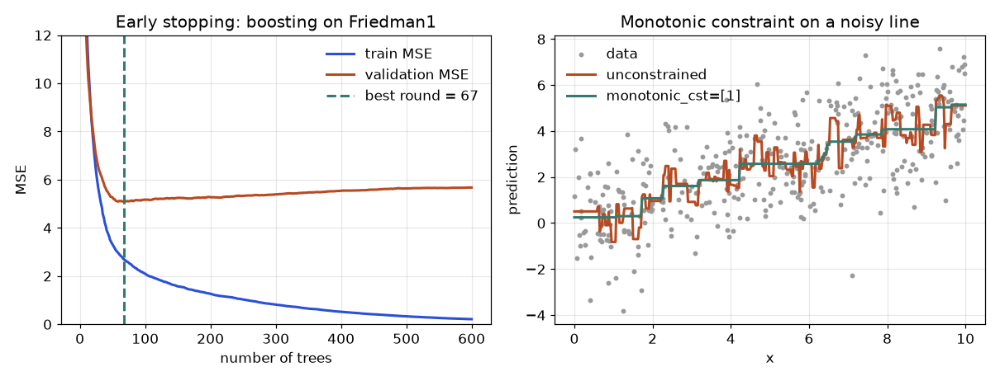
How to read it (left): training error keeps falling toward zero (2.710 at 67 trees, 0.213 at 600) while validation error reaches its floor of 5.091 at 67 trees and then creeps back up to 5.675. The test error follows (5.580 at the best round, 5.743 at 600). The gap between train and validation widens every round past the minimum: that gap is overfitting made visible. The difference between stopping and not stopping is small here (0.16 test MSE), because shallow trees with a small learning rate overfit slowly; with deeper trees or a larger rate the penalty is bigger. A patience rule of 20 rounds stopped at round 87 and kept round 67, so patience costs 20 extra trees of training time but no accuracy.
Example D: a custom asymmetric loss and a monotonic constraint, run
Section 7.5 gave the formulas for the asymmetric squared loss. Here is the full Newton boosting loop that uses them, written from scratch with scikit-learn trees. The trick to get XGBoost's leaf −G/H from an ordinary regression tree: fit the tree to the target −g/h with sample_weight = h, because a weighted mean of −g/h with weights h equals −Σg / Σh. Under-predicting (when y > F) costs 3 times as much as over-predicting.
import numpy as np
from sklearn.datasets import make_friedman1
from sklearn.tree import DecisionTreeRegressor
from sklearn.model_selection import train_test_split
X, y = make_friedman1(n_samples=2000, noise=2.0, random_state=1)
Xtr, Xte, ytr, yte = train_test_split(X, y, test_size=0.5, random_state=1)
def boost(X, y, k_under, rounds=150, eta=0.1):
"""Newton boosting for l = w (y-F)^2 with w = k_under if y > F else 1. Leaf = -G/H."""
F = np.full(len(y), y.mean()); f0 = F[0]; trees = []
for _ in range(rounds):
w = np.where(y > F, k_under, 1.0)
g = -2 * w * (y - F); h = 2 * w
t = DecisionTreeRegressor(max_depth=3, random_state=0).fit(X, -g / h, sample_weight=h) # leaf = sum(-g)/sum(h)
F = F + eta * t.predict(X); trees.append(t)
return lambda Z: f0 + eta * sum(t.predict(Z) for t in trees)
def cost(y, F, k): return np.mean(np.where(y > F, k, 1.0) * (y - F) ** 2)
for k in (1, 3):
pred = boost(Xtr, ytr, k)(Xte)
print("trained with weight %d: under-predicted %.1f%% of test rows, mean absolute error %.2f, asymmetric cost (weight 3) %.2f"
% (k, 100 * np.mean(yte > pred), np.mean(np.abs(yte - pred)), cost(yte, pred, 3)))trained with weight 1: under-predicted 50.4% of test rows, mean absolute error 1.87, asymmetric cost (weight 3) 11.26
trained with weight 3: under-predicted 39.7% of test rows, mean absolute error 2.01, asymmetric cost (weight 3) 10.29The asymmetric model under-predicts 39.7 percent of test rows instead of 50.4 percent, because it deliberately leans high. It pays for that in plain average error (2.01 versus 1.87) but wins on the cost it was trained for (10.29 versus 11.26, about 9 percent lower). Choosing the loss is a business decision: the "best" model depends on which mistake costs more.
The right panel of the figure shows monotonic constraints on a noisy line y = 0.5x + noise (400 points). Real counts:
import numpy as np
from sklearn.ensemble import HistGradientBoostingRegressor
rng = np.random.default_rng(0)
x = rng.uniform(0, 10, 400); y = 0.5 * x + rng.normal(0, 1.5, 400)
grid = np.linspace(0, 10, 400).reshape(-1, 1)
for cst in (None, [1]):
m = HistGradientBoostingRegressor(max_iter=300, learning_rate=0.1, monotonic_cst=cst, random_state=0).fit(x.reshape(-1, 1), y)
p = m.predict(grid)
print("monotonic_cst =", cst, "downward steps on grid:", int((np.diff(p) < -1e-12).sum()), " total drop %.2f" % abs(np.diff(p)[np.diff(p) < 0].sum()))monotonic_cst = None downward steps on grid: 60 total drop 33.87
monotonic_cst = [1] downward steps on grid: 0 total drop 0.00The unconstrained model made 60 downward steps with a total drop of 33.87 units across 400 grid points; the constrained one made none. The unconstrained wiggles are noise being fitted, so the constraint also reduces variance.
Going deeper: why the leaf formula is a Newton step
For one leaf with total slope G and curvature H, the loss as a function of the leaf value w is approximated by G·w + ½(H+λ)w². Setting the derivative to zero gives w = −G/(H+λ). For squared error the loss is exactly quadratic, so one Newton step lands on the minimum: with λ = 0 the leaf is the mean residual. For log loss it is only approximately quadratic, which is why the leaf values are an approximation and why the learning rate η still helps. In Example D, for a single row with y = 10, F = 7, w = 3: g = −2 × 3 × 3 = −18, h = 6, leaf = 18/6 = 3, moving F exactly to 10 before the learning rate.
Check yourself
- Why does the best split in Example B not move when
λgrows? Answer:λshrinks every gain by a similar factor here, and the jump from 2 to 8 dominates. - Why recompute
gandhevery round? Answer: they depend on the current predictions. - What does early stopping protect against, and what does it not protect against? Answer: it protects against too many trees; it does not make the validation score an honest final estimate.
7.7 The Bridge to Deep Learning for Tables
Everything in this chapter ends in a plain question: should you put a neural network on a spreadsheet? Published comparisons keep finding that tuned gradient boosting is as good or better than neural networks on most medium-size tabular data, and much cheaper to train. Networks win with huge data, text or image columns mixed in, multi-task output, or when you need embeddings shared with other models. This section shows why trees have the edge with a small experiment you can reproduce (scikit-learn only; PyTorch and the specialised tabular networks TabNet, FT-Transformer and TabPFN are not installed here, so they are not run here).
import numpy as np, warnings; warnings.filterwarnings("ignore")
from sklearn.ensemble import HistGradientBoostingClassifier as H
from sklearn.neural_network import MLPClassifier
from sklearn.preprocessing import StandardScaler, QuantileTransformer
from sklearn.pipeline import make_pipeline
from sklearn.model_selection import train_test_split
rng = np.random.default_rng(0); n = 6000
X = np.c_[rng.lognormal(0, 1.5, (n, 3)), rng.normal(size=(n, 3)), rng.normal(size=(n, 14))] # 3 skewed, 3 normal, 14 noise
z = (X[:, 0] > 1.5) * 1.5 + np.sin(3 * X[:, 3]) + (X[:, 1] > 1) * (X[:, 4] > 0) * 1.5 + 0.3 * X[:, 5]
y = (z + rng.normal(0, 0.5, n) > 1.2).astype(int)
Xtr, Xte, ytr, yte = train_test_split(X, y, random_state=0)
print("positive rate", y.mean().round(3))
mods = {"HistGB": H(random_state=0),
"MLP raw": MLPClassifier((64, 64), max_iter=300, random_state=0),
"MLP standardised": make_pipeline(StandardScaler(), MLPClassifier((64, 64), max_iter=300, random_state=0)),
"MLP quantile": make_pipeline(QuantileTransformer(output_distribution="normal", random_state=0), MLPClassifier((64, 64), max_iter=300, random_state=0))}
for k, m in mods.items(): print(f"{k:18s} test accuracy {m.fit(Xtr, ytr).score(Xte, yte):.3f}")positive rate 0.422
HistGB test accuracy 0.884
MLP raw test accuracy 0.695
MLP standardised test accuracy 0.648
MLP quantile test accuracy 0.693Problem 7.7.1 The data has 3 heavy-tailed features, 3 normal features, and 14 pure-noise columns; the label depends on a threshold in a skewed feature, a sine and a thresholded interaction. Explain the ranking of the four models.
| Step 1 | HistGradientBoosting: 0.884. Trees ask "is x > 1.5?", which is invariant to monotone rescaling, so heavy tails do not matter and it finds the thresholds directly. Noise columns are simply never chosen. |
|---|---|
| Step 2 | MLP on raw features: 0.695. The log-normal columns have occasional very large values (tens), which can dominate the first-layer sums and make training unstable. |
| Step 3 | Standardising did not help (0.648): a skewed variable stays skewed after centring, and the sharp threshold at 1.5 still sits in the compressed part of the scale. |
| Step 4 | A QuantileTransformer (map every column to a normal shape by rank) gave 0.693, no better than raw, so preprocessing was not the whole story: the network must also approximate step functions with smooth units and ignore 14 distracting inputs, which usually takes more data and tuning (I did not tune the width, depth or learning rate here, so treat the gap as indicative). |
| Answer | On this kind of data trees win by about 19 points of accuracy without any tuning. The result is a property of the data (thresholds, noise columns, skew), not a law: with more rows or smoother targets the gap closes. |
| Why it matters | Start with boosting. Try a network when you have a reason: unstructured columns, huge data, or a need for shared embeddings. |
What a tabular network adds to a plain MLP
- Embeddings for categories: each category value gets a learned vector (typically 4 to 50 numbers) instead of a one-hot. Similar categories end up close together, and the vectors can be reused in other models.
- Numeric treatment: quantile or piecewise-linear encodings of each number, so that the network can respond sharply at thresholds as trees do.
- Architectures: TabNet (learned feature masks), FT-Transformer (each feature a token, then self-attention), and TabPFN (a transformer pretrained on millions of synthetic tables that predicts in one forward pass for small data). All are not run here.
- Training recipe: AdamW, early stopping on a validation set, dropout and weight decay, and several seeds, since the run-to-run noise is large.
Check yourself
- Why are trees unaffected by log-transforming a feature? Answer: a monotone transform does not change the order of values, so the best threshold selects the same rows.
- Name two situations favouring a network. Answer: image or text columns in the same row, and data with millions of rows or a need for shared embeddings.
Chapter recap
- Boosting adds weak trees one after another, each fixing the leftover error; it reduces bias and can overfit.
- Gradient boosting: start from a constant, compute the negative gradient (pseudo-residual) per row, fit a small tree to it, add
η × tree, repeat. For squared loss the pseudo-residual isy − F; for log loss it isy − p. - Our 15-line version matched scikit-learn to
4e-16for 20 trees. Hand example: MSE7.25 → 2.1875 → 0.9219. - Learning rate and number of trees trade off: use a small rate and early stopping on a validation set. Subsampling rows and columns adds regularisation.
- XGBoost uses
gandh:w* = −G/(H+λ)and gain½[G_L²/(H_L+λ) + G_R²/(H_R+λ) − G²/(H+λ)] − γ. - LightGBM: histograms, leaf-wise growth, GOSS, EFB, native categoricals,
num_leaves. CatBoost: ordered target statistics, ordered boosting, symmetric trees. - Tune in order: learning rate and trees, tree size, sampling, regularisation, then lower the learning rate. Tree size gave the largest gain in our run (test MSE
0.495 → 0.321). - Monotone constraints, custom objectives (give
gandh) and diversity-aware stacking are the advanced tools. Boosting cannot extrapolate.
| Formula / command | Meaning |
|---|---|
Fₘ = F_{m−1} + η·hₘ | boosting update |
r = −∂ℓ/∂F | pseudo-residual (y−F squared, y−p log loss) |
w* = −G/(H+λ) | XGBoost leaf value |
gain = ½[G_L²/(H_L+λ) + G_R²/(H_R+λ) − G²/(H+λ)] − γ | XGBoost split gain |
α = ½ ln((1���ε)/ε) | AdaBoost vote weight |
GradientBoostingRegressor, HistGradientBoosting* | scikit-learn |
n_iter_no_change, early_stopping | stop on a validation set |
monotonic_cst / monotone_constraints | force monotone effects |
Practice set
- (easy)
y = 4, 8,F₀for squared loss? Answer: the mean,6. - (easy) A stump has weighted error
ε = 0.1. AdaBoostα? Answer:½ ln(0.9/0.1) = ½ ln 9 = 1.0986. - (medium) After round 1 residuals are
−2, +2; one stump separates them;η = 0.1. New predictions? Answer: the leaf means are−2and+2;6 − 0.2 = 5.8and6 + 0.2 = 6.2. - (medium)
p = 0.8,y = 1. Gradient and hessian for log loss? Answer:g = p − y = −0.2,h = p(1−p) = 0.16. - (medium) A leaf has
G = −2,H = 0.8,λ = 1. Leaf value? Answer:2/1.8 = 1.111. - (medium) Find the bug:
tree.fit(X, y)inside the boosting loop each round. Answer: it fits the original target instead of the residual, so every tree is the same and nothing is corrected. - (hard, scenario) A LightGBM model with
num_leaves=255on 4,000 rows scores 0.99 AUC in training and 0.71 in validation. Fix? Answer: too much capacity: setnum_leavesto 8 to 15,min_data_in_leafto 50 or more, addfeature_fraction0.7, and use early stopping. - (hard) Derive the XGBoost optimal leaf value. Answer: the leaf loss is
G·w + ½(H+λ)w²; the derivativeG + (H+λ)w = 0givesw = −G/(H+λ); the second derivativeH+λ > 0confirms a minimum. - (interview) "Random forest versus gradient boosting?" Answer: a forest averages deep independent trees (cuts variance, hard to overfit, few knobs); boosting adds shallow trees sequentially on the gradient (cuts bias, usually more accurate when tuned, can overfit, needs learning rate and early stopping).
- (interview) "Why does XGBoost use second derivatives and what is
min_child_weight?" Answer: the second derivative gives a Newton step and a closed-form leaf value−G/(H+λ);min_child_weightis the minimum sum of hessiansHin a leaf, a soft minimum row count that stops tiny leaves. - (easy) A leaf has
G = 6,H = 5,λ = 1. What is the leaf value? Answer:−6/(5+1) = −1. - (medium) A split has
G_L = 4,H_L = 2,G_R = −4,H_R = 2,λ = 1,γ = 1. Is it kept? Answer: gain= ½ · [16/3 + 16/3 − 0/5] − 1 = 5.333 − 1 = 4.333, which is positive, so yes. - (medium) Eight rows have a leaf with
n = 4rows, squared error, mean residual 2.875. What is the leaf value forλ = 10? Answer:G = 11.5,H = 4:11.5 / (4 + 10) = 0.8214, matching Example B. The leaf was shrunk by4/14. - (medium) Find the bug: a team uses the test set as the early-stopping set and reports "best test MSE 5.09". Answer: The test set chose the round, so the score is optimistic. In Example C, validation said 5.091 and an untouched test set said 5.580. Use separate validation and test sets.
- (hard) For the asymmetric loss
w(y−F)²withw = 3wheny > F, computeg,hand the first Newton leaf for a single rowy = 10,F = 7. Answer:g = −2·3·(10−7) = −18,h = 6, leaf= −g/h = 3, which movesFto exactly 10 (quadratic loss, one Newton step is exact). - (hard, interview) Why does XGBoost use second derivatives and what does
min_child_weightmean for log loss? Answer: The second derivative gives a Newton step and a closed-form leaf value and gain.min_child_weightis the minimum summedhin a leaf; for log lossh = p(1−p) ≤ 0.25, so a leaf of confidently predicted rows needs many more rows to pass the threshold than a leaf of uncertain rows.
(medium) A categorical column has 5,000 values and you embed to 16 dimensions. How many learned numbers, versus one-hot into a first layer of 64 units? Answer: embedding 5,000 × 16 = 80,000; one-hot into 64 units is 5,000 × 64 = 320,000 weights, four times more.
Prompt pack
You are my patient, practical professor. I am a working professional moving into data roles, and English is my second language, so use simple words. Topic: gradient boosting derived as gradient descent on predictions, with pseudo-residuals for squared loss and log loss. Explain with a "fix the leftover error" analogy, do a 4-row hand example with every number, then give me 8 graded exercises (no solutions yet) and check my answers.
You are my patient, practical professor. I am a working professional moving into data roles, and English is my second language. Topic: the XGBoost objective: gradient g, hessian h, leaf value -G/(H+lambda), split gain and the roles of gamma, lambda and min_child_weight. Derive it step by step with a 6-row numeric example, then ask me to compute two gains myself and review my work.
You are my patient, practical professor. I am a working professional moving into data roles, and English is my second language. Topic: XGBoost vs LightGBM vs CatBoost: growth strategy, histograms, GOSS, EFB, categorical handling and ordered target statistics. Give a comparison I can memorise, then quiz me one question at a time on which library to choose for three realistic scenarios.
You are my patient, practical professor. I am a working professional moving into data roles, and English is my second language. Topic: tuning a gradient boosting model in the right order (learning rate and early stopping, tree size, sampling, regularisation) and avoiding overfitting the validation set. My setup: [PASTE MY DATA SIZE, LIBRARY AND CURRENT PARAMETERS]. Propose a tuning plan and explain each step.
You are my patient, practical professor. I am a working professional moving into data roles and preparing for ML interviews, and English is my second language. Topic: gradient boosting, random forests, stacking and monotonic constraints. Run a mock interview: one question at a time, score my answer out of 10, show a model answer in simple English, then ask a harder follow-up. Include one derivation and one debugging question.
A clinic builds a model to predict which appointments will be no-shows. The team reports an AUC (a ranking score from 0.5 for guessing to 1.0 for perfect) of 0.89, and everyone celebrates. Three weeks after launch the real AUC is 0.60. Nothing is wrong with the algorithm. The score was fake, because one column was recorded after the appointment happened. This chapter is about preventing that story. You will learn how to choose a split that copies how the model will really be used (random, stratified, grouped, or forward in time), how to tune a model without fooling yourself (nested cross-validation), and a complete checklist of leakage types, each with a demonstration where the fake score is visible. Many professionals in data jobs never learn this properly, and it is the single most valuable habit in applied ML.
Prerequisites: Chapter 1 (train, validation, test, i.i.d.), Chapter 6 and 7 (the models we use for demos). Averages and standard deviation: Math PDF, probability pillar. The deeper treatment of tuning budgets is in Chapter 11, and the sanity tests (shuffled labels, tiny subset) are in Chapter 10; here we focus on the design of the split. All outputs are real (NumPy and scikit-learn 1.9.1, fixed seeds).
Running example. Hospital appointments. Each row is one appointment with age, number of prev earlier no-shows, dist (kilometres from home) and the label noshow. We build several synthetic versions of this table to show each trap.
8.1 Hold-out, k-Fold, Stratified and Repeated Cross-Validation
Words you need
| Word | Meaning |
|---|---|
| Hold-out | one split: for example 80 percent train, 20 percent validation |
| Fold | one of k equal parts of the data |
| k-fold cross-validation (CV) | split into k folds; train on k−1, validate on the remaining one; repeat k times; average the k scores |
| Stratified | each fold keeps the same class proportions as the whole data |
| Leave-one-out | k = n: each row is its own fold (expensive, high variance) |
| Repeated CV | run k-fold several times with different random shuffles |
| Test set | a final set touched once, after all choices are made |
Why not just train/validation once?
A single hold-out of 20 rows can change the score a lot with a different random split. k-fold uses every row for validation exactly once, so the estimate is steadier, at the cost of training the model k times. Typical k is 5 or 10. A larger k means training sets closer to the full size (less pessimistic bias) but more compute and more overlap between training sets.
Problem 8.1.1 Ten rows, KFold(3) without shuffling. List the validation rows of each fold and the training size.
| Formula | the first n mod k folds get ⌈n/k⌉ rows, the rest ⌊n/k⌋. |
|---|---|
| Compute | 10 mod 3 = 1, so fold 1 has 4 rows and folds 2 and 3 have 3 rows. |
| Answer | Validation rows: [0,1,2,3], [4,5,6], [7,8,9]. Training sizes: 6, 7, 7. |
| Check | 4 + 3 + 3 = 10, every row validated once. The code printed exactly this. |
| Why it matters | Folds are unequal when k does not divide n; with big data this does not matter. |
Stratification: rare classes
With a rare class, an ordinary random split can leave a fold with no positives at all. In 200 rows with 12 positives, KFold(5, shuffle=True) gave positives per validation fold of [3, 2, 5, 2, 0] (a fold with zero positives cannot even compute AUC). StratifiedKFold gave [2, 2, 2, 3, 3]. Rule: classification gets stratified folds by default. For regression you can stratify on bins of the target.
How noisy is a CV score? Repeating it
On a small dataset (120 rows, 30 features, weak signal) the same logistic model scored, over five different shuffles of a 5-fold CV: 0.617, 0.558, 0.625, 0.600, 0.608. That is a range of 0.067 just from the random fold assignment. Repeating 5-fold CV 20 times (100 scores) gave mean 0.595, with a fold-to-fold standard deviation of 0.086. Two points:
- Report the mean and the spread (
0.595 ± 0.086over folds), not one number. - A difference between two models of 0.01 inside this spread means nothing (Chapter 10 shows paired comparisons).
Problem 8.1.2 A model has 100 validation rows and a true accuracy of 0.60. What is the standard deviation of the measured accuracy?
| Formula | for a proportion p measured on n rows: σ = √(p(1−p)/n). |
|---|---|
| Plug in | √(0.6 × 0.4 / 100) = √0.0024. |
| Compute | σ = 0.049. |
| Answer | About 0.05, so a measured 0.65 and a measured 0.55 can come from the same model. |
| Check | Four times more rows halves it: n = 400 gives 0.0245. |
| Interpretation | A validation set of 100 rows can only distinguish models that differ by roughly 10 points. Use more data or repeated CV. |
The picture. Each row of the panel is one fold. Blue rows train; red rows validate.
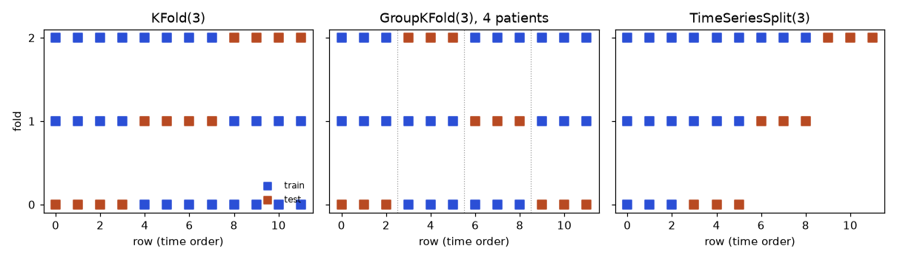
Connection to the real job. CV is how you pick between models and settings before touching the test set. In an interview, you are expected to name the right splitter for a given data story; the next two sections are those stories.
Applications. Model selection on small tables; stratified folds in healthcare and finance where the event is rare.
Check yourself.
- 100 rows, 5-fold CV: how many training rows per fold? Answer: 80.
- Why stratify? Answer: so each fold has the same class mix and no fold lacks the rare class.
- Does a larger
kalways help? Answer: no, it costs compute and gives highly overlapping training sets; 5 to 10 is usual.
8.2 Group Splits: The Same Person Must Not Be on Both Sides
When it applies. The rows are not independent: repeated visits by the same patient, many photos of the same product, several sessions by the same user, rows from the same machine. The model will be used on new patients, so the validation must contain only patients that the training did not see. This is GroupKFold (or StratifiedGroupKFold when you also need class balance): pass a groups column and each group goes entirely into one fold.
Problem 8.2.1 A dataset has 300 patients with 8 visits each (2,400 rows). Each patient has five stable body measurements and a hidden tendency to miss appointments. The model is a random forest. Compare random CV and group CV.
rf = RandomForestClassifier(200, random_state=0)
s1 = cross_val_score(rf, X, y, cv=StratifiedKFold(5, shuffle=True, random_state=0), scoring="roc_auc")
s2 = cross_val_score(rf, X, y, cv=GroupKFold(5), groups=patient_id, scoring="roc_auc")Real output:
random kfold AUC 0.696 (std 0.011) group kfold AUC 0.540 (std 0.032)
AUC on 300 brand-new patients: 0.588- Step 1 In random CV, a patient's other 7 visits are in training, and the five stable measurements work like a fingerprint. The forest learns "this fingerprint is a person who often misses".
- Step 2 In group CV the patient is wholly in validation, the fingerprint is useless, and the AUC falls to 0.54.
- Step 3 We then generated 300 truly new patients: the AUC was 0.588. The group estimate (0.54 ± 0.03) is close to the truth. The random estimate (0.696) is not.
- Answer Random CV overstated the AUC by about 0.11 (0.696 versus 0.588 real). The group split gave an honest, if slightly pessimistic, answer.
- Check The signal that really transfers is only the visit-level feature, which is weak, so a true AUC near 0.6 is plausible.
- Interpretation If the model will see new patients, validate on new patients. A score of 0.70 would have led the clinic to the wrong decision.
Check yourself.
- Photos: 10,000 images of 500 products; the model must recognise new products. Which splitter? Answer:
GroupKFoldon product id. - What if you must recognise the same 500 products later? Answer: then random CV is acceptable, because new rows will belong to known groups.
- Why use
StratifiedGroupKFold? Answer: keep groups intact and also keep class proportions similar.
8.3 Time: Validate on the Future
Walk-forward (expanding-window) validation
TimeSeriesSplit always trains on the past and validates on the next block. Ten rows, 3 splits:
train [0..3] test [4,5]
train [0..5] test [6,7]
train [0..7] test [8,9]With gap=1 (skip one row between train and test) the train sets become [0..2], [0..4], [0..6]. A gap is needed when the label of a row is only known later (a 7-day outcome), or when features use a window that overlaps: otherwise information from the validation period leaks backwards into training.
Problem 8.3.1 A demand series is a random walk (it drifts smoothly) plus small noise: 500 days. Features: the day number and one noise column. Model: random forest. Compare random 5-fold CV and 5-split walk-forward validation using R² (1.0 is perfect; 0 equals predicting the mean; negative is worse than the mean).
Real output:
random R2 0.965 walk-forward R2 -1.482 per split [-1.76 -1.48 -0.08 -1.44 -2.65]- Step 1 Random folds put day 200 in validation and days 199 and 201 in training. A forest on "day number" simply copies the neighbours: R² 0.965.
- Step 2 Walk-forward trains only on earlier days and must predict a drifted future. The forest cannot extrapolate (Chapter 6), so it predicts the last level it saw: R² is negative in every split.
- Answer The model looks excellent (0.965) under random CV and is worse than a constant under honest time validation (−1.48).
- Check The mean of the training period is a poor guess for a drifting series, hence large negative values.
- Interpretation Any time-ordered problem needs forward validation, plus a naive baseline (copy the last value) for comparison.
Out-of-time validation. Besides walk-forward folds, keep the most recent block (for example the last 3 months) as a final out-of-time test set. It also tests if the process drifted.
Other temporal traps
- Features that look into the future: a rolling average computed with the whole series (centered windows), a customer's "total purchases" including purchases after the prediction date. Rule: for each row, compute features using only information available at prediction time.
- Label timing: a "churned within 30 days" label for last month's customers is not yet known. Build a label cut-off.
- Seasonality: if the model must forecast December, validation that contains no December says little.
Check yourself.
- Why use a gap in
TimeSeriesSplit? Answer: to stop overlapping windows or delayed labels leaking validation information into training. - Random CV on time data is usually too optimistic or pessimistic? Answer: optimistic.
- Model must forecast next 30 days; what is the validation block length? Answer: about 30 days, to mimic the real task.
8.4 Nested Cross-Validation: Tuning Without Fooling Yourself
How big is the effect? Selection bias in numbers
Problem 8.4.1 Fifty models that guess at random are each scored on the same 100 test rows. Expected accuracy of each is 0.5. What is the best score?
| Formula | one model's accuracy has σ = √(0.5 × 0.5/100) = 0.05. The maximum of 50 draws sits about 2.2σ above the mean (a standard fact for 50 normal draws). |
|---|---|
| Compute | 0.5 + 2.2 × 0.05 = 0.61. |
| Answer | The best coin-flip model should score about 0.61. The real run: best of 50 was 0.63, with the average at 0.505. |
| Check | All the models are worthless, so any score above 0.5 is pure luck of selection. |
| Interpretation | Looking at many models on the same validation or test rows makes the winner look better than it is. That is why we must separate choosing from reporting. |
The nested procedure
- Inner loop (choose): on the training part of each outer fold, run a cross-validated search to pick hyperparameters.
- Outer loop (report): evaluate the chosen model on the outer validation fold, which the inner search never saw. Average the outer scores.
inner = GridSearchCV(pipe, param_grid, cv=StratifiedKFold(5, shuffle=True, random_state=1))
nested_scores = cross_val_score(inner, X, y, cv=StratifiedKFold(5, shuffle=True, random_state=2))Real experiment: 120 rows, 30 features (only one is useful), a grid of 48 settings (feature count k and regularisation C), repeated for 10 random data splits. The best possible accuracy for this problem is about 0.646. We measured accuracy on 20,000 brand-new rows.
| Estimate | Mean over 10 repeats |
|---|---|
| Best CV score from the grid search (not nested) | 0.700 |
| Nested CV score | 0.662 |
| True accuracy on 20,000 new rows | 0.622 |
- Answer The tuned model's own CV score (0.700) was too optimistic by 0.078. Nested CV (0.662) cut the bias in half but was still slightly high. The truth was 0.622. Note that 0.700 is above the best achievable accuracy (0.646), which proves the number is inflated.
- Check Any estimate above the theoretical ceiling must be selection bias.
- Interpretation With small data and large search spaces, nested CV (or a final untouched test set) is how you report an honest score. With large data and few settings, the bias is small.
Test-set discipline
- Split off a test set first and put it away. Do all choices (features, model, thresholds, early stopping rounds) using CV on the rest.
- Touch the test set once, at the end. Every peek that influences a decision turns it into a validation set.
- If the test score is a disappointment, you may fix a bug, but fiddling until it improves destroys its meaning; collect new data for a fresh test if you can.
- After the final choice, refit on all non-test data (train plus validation) and, if allowed, report the test score of that model.
For wider tuning methods and compute budgets see Chapter 11.
best_score_ as the expected performance. It is a selection-biased number. Quote nested CV or a clean test score.Check yourself.
- Which loop picks hyperparameters in nested CV? Answer: the inner loop.
- What does the outer loop's score estimate? Answer: the performance of the whole procedure (search plus fit) on unseen data.
- When can you skip nested CV? Answer: when you have lots of data and a clean separate test set.
8.5 The Leakage Taxonomy: Hunt Each One
The taxonomy
| Type | What happens | How to detect | Prevention |
|---|---|---|---|
| Target leakage | a feature encodes the outcome or is recorded after it | suspiciously strong feature; importance dominated by one column | ask "is this known at prediction time?" for every column |
| Train-test contamination | scaling, imputing, encoding or feature selection fitted on all data | score drops when moved inside a pipeline | Pipeline so every step is fitted per fold |
| Duplicate / near-duplicate rows | the same record in train and validation | count duplicates; score drops when removed | de-duplicate before splitting; group by entity |
| Group leakage | same person or device on both sides | random CV much higher than group CV | group splits (8.2) |
| Temporal leakage | future information used to predict the past | random CV much higher than forward CV | time splits, as-of features (8.3) |
| Label leakage via IDs and timestamps | an id or timestamp correlates with the label because of how data was collected | importance of id-like columns | drop ids; check collection process |
Demonstration 1: target leakage
2,000 appointments. Honest features age, prev, dist. We add replied, "did the patient reply to the reminder SMS", recorded in the system after the day. By construction every no-show has replied = 0.
honest AUC (3 features) 0.604
with the leaky column `replied` 0.889
importances: age 0.161, prev 0.066, dist 0.167, replied 0.605- Read it One column jumped the score from 0.604 to 0.889 and takes 60 percent of the importance. In real life, a jump this big from a "business" feature should make you suspicious, not happy. The fix is not statistical: it is asking when the column is recorded. At prediction time (before the appointment)
replieddoes not exist.
Demonstration 2: preprocessing leakage
60 rows, 2,000 features, labels that are pure coin flips. The true accuracy of any model must be 50 percent.
Xs = SelectKBest(f_classif, k=20).fit_transform(X, y) # WRONG: looks at all labels
cross_val_score(LogisticRegression(), Xs, y, cv=5) # 0.95
pipe = make_pipeline(SelectKBest(f_classif, k=20), LogisticRegression())
cross_val_score(pipe, X, y, cv=5) # 0.483Real output: select outside CV acc 0.95 inside pipeline 0.483.
- Read it Choosing the 20 best features from 2,000 using all labels will always find 20 columns that happen to match the noise. Validation rows helped choose them, so validation is no longer new. Inside the pipeline the selection sees only training rows, and the honest result is 0.48, i.e., chance. The same applies to scaling, imputation, target encoding, PCA and SMOTE: fit on training folds only.
Demonstration 3: duplicates
The same 2,000-row table with 600 rows duplicated (a classic outcome of merging sources), random CV with a forest (min_samples_leaf=1): AUC 0.779. Without the duplicates: 0.562. The model simply remembers the copies. Run df.duplicated().sum() on every dataset, and also look for near-duplicates (same entity, tiny differences).
Demonstration 4: the shuffled-label check
Shuffle the labels and run your whole CV pipeline: the score must fall to chance. On our honest table it gave AUC 0.525, near 0.5. If a pipeline scores high on shuffled labels, it leaks. (More such tests are in Chapter 10.)
Adversarial validation: can a model tell train from test?
Label every training row 0 and every new-data row 1, then train a classifier to separate them. If it cannot (AUC near 0.5), the two sets look alike. If it can, something differs: the features that separate them show where.
test ages shifted by +8 years: adversarial AUC 0.566
test from the same distribution: adversarial AUC 0.473An AUC of 0.47 is chance (the same data). 0.566 detects the mild shift. A real shift (a new region, a new device) would give 0.8 or more. Use the result to build a validation set that looks like the test (for example, pick the training rows that look most like the test rows) and to decide if retraining is needed (drift monitoring belongs to the MLOps material).
Problem 8.5.1 A bank model uses account_closed_flag as a feature to predict loan default and shows an AUC of 0.97. Diagnose it.
| Step 1 | Ask: when is account_closed_flag set? Closing an account usually follows default. |
|---|---|
| Step 2 | So the column is a consequence of the label: target leakage. |
| Step 3 | Remove it and retrain; AUC will fall (for example to the 0.7 range). |
| Answer | The 0.97 comes from a feature that is not available at the time of the loan decision. Build a feature list with its "as-of time" and remove anything recorded after the decision. |
| Check | An old rule of thumb: when a simple model gives near-perfect scores on a hard business problem, look for leakage before you celebrate. |
Connection to the real job. In production a leaked model collapses: the feature is missing or different, and the metric drops. The best defence is a review habit: for each feature ask what, when, who: what is it, when is it known, who creates it (is the label involved?).
Applications. Healthcare (lab tests ordered because disease is already suspected), fraud (flags that appear days later), marketing (retention contact as a churn feature), any merged tables (duplicates).
Check yourself.
- Which tool prevents preprocessing leakage? Answer:
Pipeline(orColumnTransformerinside it), fitted per fold. - A feature importance chart shows a customer id as the top feature. What do you suspect? Answer: leakage through the id (group or time effect) or duplicates.
- What does an adversarial-validation AUC of 0.5 mean? Answer: train and test are indistinguishable in the features.
8.6 A Checklist You Can Reuse
- Write the use case: who will the model see (new patients or old?), when (the future?), and what is known at that time?
- Choose the splitter: random stratified, group, or time; use a gap if labels are delayed.
- Remove duplicates; define groups.
- Put all learned preprocessing in a
Pipeline. - Tune with inner CV; report with the outer CV or a test set touched once.
- Report the mean and the spread. Compare with a naive baseline (mean, last value, majority class).
- Run sanity checks: shuffled labels, a suspicious-importance review, adversarial validation.
- Hold out a final out-of-time or out-of-group test if data allow.
The out-of-bag score of a forest (Chapter 6) is also random-split validation: it has the same group and time problems. Treat it as a quick check, not a final verdict.
8.7 Seeing Your Splits: Draw the Folds Before You Trust Them
Every leak in 8.5 has the same fingerprint: a row in the training set that is "too close" to a row in the test set (same person, same week, same copy). The cheapest defence is to draw the split on a toy table of twelve rows before running it on the real one. Rows are in time order; rows 0 to 2 belong to patient 0, 3 to 5 to patient 1, and so on.
import numpy as np
from sklearn.model_selection import KFold, StratifiedKFold, GroupKFold, TimeSeriesSplit
n = 12; g = np.repeat(np.arange(4), 3); y = np.array([0,0,0,0,1,0,0,0,1,0,0,1])
for name, sp, kw in [("KFold", KFold(3), {}), ("GroupKFold", GroupKFold(3), {"groups": g}), ("TimeSeriesSplit", TimeSeriesSplit(3), {})]:
print(name)
for i, (a, b) in enumerate(sp.split(np.zeros(n), y, **kw)): print(" fold", i, "train", a.tolist(), "test", b.tolist())KFold
fold 0 train [4, 5, 6, 7, 8, 9, 10, 11] test [0, 1, 2, 3]
fold 1 train [0, 1, 2, 3, 8, 9, 10, 11] test [4, 5, 6, 7]
fold 2 train [0, 1, 2, 3, 4, 5, 6, 7] test [8, 9, 10, 11]
GroupKFold
fold 0 train [3, 4, 5, 6, 7, 8] test [0, 1, 2, 9, 10, 11]
fold 1 train [0, 1, 2, 3, 4, 5, 9, 10, 11] test [6, 7, 8]
fold 2 train [0, 1, 2, 6, 7, 8, 9, 10, 11] test [3, 4, 5]
TimeSeriesSplit
fold 0 train [0, 1, 2] test [3, 4, 5]
fold 1 train [0, 1, 2, 3, 4, 5] test [6, 7, 8]
fold 2 train [0, 1, 2, 3, 4, 5, 6, 7, 8] test [9, 10, 11]How to read it: in plain KFold (left) the test block of fold 1 (rows 4 to 7) straddles patients 1 and 2, whose other rows (3, 8) sit in the training set, so the same person is on both sides. In GroupKFold (middle) the dotted lines mark patient boundaries and no patient is split: fold 0 tests patients 0 and 3 together, which is fine. In TimeSeriesSplit (right) the training block always ends before the test block begins and grows with each fold, so you only ever predict the future from the past; note that fold 0 trains on just 3 rows, so early folds are noisy.
Problem 8.7.1 Using the printed folds, count how many test rows share a patient with some training row under KFold, versus GroupKFold.
| Step 1 | KFold fold 0: test [0, 1, 2, 3]. Patient 0 owns 0 to 2 (all in test, no overlap), but row 3 belongs to patient 1 whose rows 4, 5 are in training: 1 contaminated test row. |
|---|---|
| Step 2 | Fold 1: test [4, 5, 6, 7]. Rows 4, 5 (patient 1) have row 3 in training; rows 6, 7 (patient 2) have row 8 in training. 4 contaminated rows. |
| Step 3 | Fold 2: test [8, 9, 10, 11]. Row 8 (patient 2) has 6, 7 in training; rows 9 to 11 are all patient 3, clean. 1 contaminated row. Total 6 of 12. |
| Answer | KFold: 6 of 12 test rows are contaminated. GroupKFold: 0, because every test patient is entirely absent from training. |
| Why it matters | Half the evaluation is a lookup of a patient the model has already seen, which inflates the score; with real data the effect is often several points of AUC. |
TimeSeriesSplit, or passing a shuffled frame. The splitter assumes the rows are already in time order and uses position, so shuffled data silently turns it into a random split.groups=. GroupKFold(3).split(X, y) without groups raises an error, but cross_val_score(model, X, y, cv=GroupKFold(3)) without groups= is easy to write when you pass a splitter object by habit: always pass groups.Check yourself
- What would you check on a split of customer transactions? Answer: that no customer id appears in both train and test, and, if predicting the future, that all test dates are later than all train dates.
- Why can the first TimeSeriesSplit fold be unreliable? Answer: it trains on very few rows; use a minimum train size and read the later folds more.
Chapter recap
- Validation must mimic how the model will be used: new people means group split, future means time split.
- k-fold uses each row once for validation; stratify for classification; report mean and spread; repeat CV on small data.
- A measured accuracy has noise
√(p(1−p)/n): 100 rows gives about 0.05. - Group leakage in our demo: random CV AUC 0.696, group CV 0.540, brand-new patients 0.588.
- Time leakage: random CV R² 0.965 versus walk-forward −1.482 for a drifting series.
- Choosing the best of many settings inflates the score (best coin-flip of 50 got 0.63). Nested CV (inner picks, outer reports) reduced the bias: 0.700 vs 0.662 vs true 0.622.
- Touch the test set once. Peeking turns it into a validation set.
- Leakage types: target, train-test contamination, duplicates, group, temporal, id or timestamp. A leaked column lifted AUC from 0.604 to 0.889; selecting features outside CV gave 0.95 on pure noise.
- Tools:
Pipeline, de-duplication, shuffled-label tests, adversarial validation.
| Formula / command | Meaning |
|---|---|
KFold, StratifiedKFold(k, shuffle=True, random_state=0) | random folds, class-balanced |
GroupKFold(k), StratifiedGroupKFold | whole groups per fold |
TimeSeriesSplit(n_splits, gap=g) | walk-forward, with optional gap |
RepeatedStratifiedKFold(n_repeats) | repeated CV |
σ = √(p(1−p)/n) | noise of a measured proportion |
cross_val_score(GridSearchCV(...), X, y, cv=outer) | nested CV |
make_pipeline(prep, model) | fit preprocessing inside each fold |
df.duplicated().sum() | find duplicate rows |
Practice set
- (easy) 1,000 rows, 10-fold CV. How many rows to train in each fold? Answer: 900.
- (easy) A fold has 0 positives. What is wrong and what is the fix? Answer: a rare class and random folds; use
StratifiedKFold. - (easy) Which splitter for 5 years of daily sales, to forecast next month? Answer:
TimeSeriesSplitwith a validation block of about 30 days (and a gap if features use windows). - (medium) Accuracy measured as 0.80 on 400 rows. Rough 95 percent range? Answer:
σ = √(0.8 × 0.2/400) = 0.02; range about0.80 ± 0.04, so 0.76 to 0.84. - (medium) What is the output? A forest on a drifting series, random CV R² 0.96, walk-forward R² −1.5. Which do you believe and why? Answer: walk-forward; it copies the real use. Random CV lets the forest interpolate neighbours.
- (medium) Find the bug:
X = StandardScaler().fit_transform(X); cross_val_score(model, X, y). Answer: the scaler saw the validation rows' mean and spread; usemake_pipeline(StandardScaler(), model). (The effect is usually small for scaling and large for supervised steps like feature selection, but the habit matters.) - (medium) 5,000 chest X-ray images from 800 patients; the model must work on new patients. Describe the split. Answer:
GroupKFoldwithgroups=patient_id, so images of one patient are all in one fold. - (medium)
GridSearchCV.best_score_is 0.91 and the test set gives 0.84. Is something wrong? Answer: probably not a bug:best_score_is selection-biased; the test score is the honest one. A very large gap suggests over-tuning or leakage. - (hard, scenario) A churn model uses
days_since_last_logincomputed on the day of the export, which is after the churn date for churned users. AUC 0.95. What happened and what is the fix? Answer: temporal and target leakage (users who churned have a large number by definition); compute the feature as of the prediction date for every row (point-in-time features). - (hard) Show that picking the best of 50 equal models inflates accuracy. Answer: with
σ = 0.05on 100 rows, the best of 50 draws is about0.5 + 2.2 × 0.05 = 0.61although every model is at 0.5. - (interview) "Explain nested cross-validation and when you would use it." Answer: an inner CV loop chooses hyperparameters using only the outer training part; the outer loop scores the chosen procedure on data the search never saw; it is needed for honest estimates when data are small or the search is large.
- (interview) "Your model's AUC is 0.97 in validation and 0.65 in production. List five causes you check." Answer: target leakage, train-test contamination (preprocessing), duplicates or group overlap, temporal leakage or drift, and a feature that is computed differently in production (training-serving skew).
(medium) 20 patients with 5 visits each, 5-fold GroupKFold. How many rows are in each test fold, and how many patients? Answer: 4 patients per fold, so 20 rows (if groups divide evenly). No patient appears twice across test folds.
Prompt pack
You are my patient, practical professor. I am a working professional moving into data roles, and English is my second language, so use simple words. Topic: validation design: hold-out, k-fold, stratified, repeated CV, and why a CV score has noise. Explain with an exam analogy, give me 8 graded exercises with real numbers (no solutions yet), then check my answers one at a time.
You are my patient, practical professor. I am a working professional moving into data roles, and English is my second language. Topic: group k-fold and time-series (walk-forward) splits, including gaps and out-of-time tests. My data story is: [PASTE DESCRIPTION OF MY ROWS, ENTITIES, TIME COLUMN AND TARGET]. Tell me which splitter to use, why, and what could still leak.
You are my patient, practical professor. I am a working professional moving into data roles, and English is my second language. Topic: nested cross-validation and test-set discipline. Explain why the best CV score is biased upward with a 50-coin-flip-models example, then show how nested CV fixes it. Ask me four questions, one at a time, and wait for my answers.
You are my patient, practical professor. I am a working professional moving into data roles, and English is my second language. Topic: the leakage taxonomy: target leakage, train-test contamination, duplicates, group, temporal, and id or timestamp leakage. Review my pipeline for leaks: [PASTE MY CODE OR FEATURE LIST]. For each leak you find, explain how to prove it with an experiment and how to fix it.
You are my patient, practical professor. I am a working professional moving into data roles and preparing for ML interviews, and English is my second language. Topic: validation and leakage. Run a mock interview: one question at a time, wait for my answer, score it out of 10, show a model answer in simple English, then ask a harder follow-up. Include a scenario where AUC is 0.97 in validation and 0.65 in production.
A bank has a model that gives each loan a default probability. Four questions follow. Which number tells the manager the model is good (accuracy? AUC?)? Above which probability do we reject a loan? When the model says 0.30, do 30 out of 100 such loans really default? And for a loan amount forecast, how wide is the safe range? Each question has a different tool, and using the wrong one is a very common reason why "good" models fail in business. In this chapter you will compute every classification, regression and ranking metric by hand on tiny examples, choose a threshold from costs, measure and repair calibration (Platt, isotonic, temperature), and build prediction intervals that really cover 90 percent of the cases (conformal prediction), all with real, reproducible outputs.
Prerequisites: Chapter 4 (log loss, thresholds, class weights), Chapter 8 (honest validation), Chapter 7 (boosting). Percentiles, expectation and the normal curve: Math PDF, probability pillar. Outputs come from NumPy and scikit-learn 1.9.1 with fixed seeds. The MAPIE library is named in the skill map but was not installable here, so we build conformal prediction by hand (about ten lines).
9.1 The Confusion Matrix and Threshold Metrics
Words you need
| Word | Meaning |
|---|---|
| Positive | the case we look for (default, fraud, disease) |
| TP (true positive) | predicted positive, truly positive |
| FP (false positive) | predicted positive, truly negative (false alarm) |
| FN (false negative) | predicted negative, truly positive (a miss) |
| TN (true negative) | predicted negative, truly negative |
| Threshold | the probability cut-off above which we predict positive |
truly positive truly negative
predicted positive TP FP
predicted negative FN TNThe metrics
| Metric | Formula | Question it answers |
|---|---|---|
| Accuracy | (TP + TN) / n | how often right overall |
| Precision | TP / (TP + FP) | of those we flagged, how many were real |
| Recall (sensitivity, TPR) | TP / (TP + FN) | of the real ones, how many did we catch |
| Specificity (TNR) | TN / (TN + FP) | of the real negatives, how many did we leave alone |
| F1 | 2PR / (P + R) | harmonic mean of precision and recall |
| Fβ | (1+β²)PR / (β²P + R) | recall counts β times as much as precision |
| MCC | (TP·TN − FP·FN) / √((TP+FP)(TP+FN)(TN+FP)(TN+FN)) | correlation between prediction and truth, from −1 to 1 |
| Cohen's kappa | (p_o − p_e)/(1 − p_e) | agreement beyond chance |
The harmonic mean punishes imbalance: F1 of precision 1.0 and recall 0.01 is 0.02, not 0.5.
Problem 9.1.1 A disease screen on 1,000 patients: TP = 30, FP = 10, FN = 20, TN = 940. Compute every metric.
| Step 1 | Positives = 30 + 20 = 50; predicted positives = 40. Accuracy = (30 + 940)/1000 = 0.97. |
|---|---|
| Step 2 | Precision = 30/40 = 0.75. Recall = 30/50 = 0.60. Specificity = 940/950 = 0.9895. |
| Step 3 | F1 = 2 × 0.75 × 0.6 / (0.75 + 0.6) = 0.9/1.35 = 0.6667. F2 = 5 × 0.45 / (4 × 0.75 + 0.6) = 2.25/3.6 = 0.625. F0.5 = 1.25 × 0.45 / (0.25 × 0.75 + 0.6) = 0.5625/0.7875 = 0.7143. |
| Step 4 | MCC = (30·940 − 10·20) / √(40 · 50 · 950 · 960) = 28000 / 42709 = 0.6556. |
| Step 5 | Kappa: p_o = 0.97; p_e = (40·50 + 960·950)/1000² = 0.914; kappa = (0.97 − 0.914)/(1 − 0.914) = 0.6512. |
| Answer | Accuracy 0.97, precision 0.75, recall 0.60, F1 0.667, F2 0.625, F0.5 0.714, MCC 0.656, kappa 0.651. scikit-learn gave the same values. |
| Check | F2 (recall-heavy) is below F1 because recall (0.6) is lower than precision (0.75); F0.5 is above F1 for the same reason. |
| Interpretation | The screen misses 40 percent of the sick (recall 0.6), although "97 percent accuracy" sounds great. |
Problem 9.1.2 (the accuracy trap) In the same 1,000 patients, 50 are sick. A "model" that says "healthy" to everyone: accuracy?
| Compute | 950/1000 = 0.95, recall 0. |
|---|---|
| Answer | 95 percent accuracy with zero usefulness. Our real screen (0.97) is only 2 points better on accuracy but catches 60 percent of the sick. |
| Check | The majority-class baseline always equals 1 − prevalence. Any metric must be compared to its baseline. |
Overall numbers hide subgroups. A model with 900 rows from region A at accuracy 0.95 and 100 rows from region B at accuracy 0.60 has overall accuracy (900·0.95 + 100·0.60)/1000 = 0.915. The weakness in B is invisible. Always report segment-level metrics (new versus old customers, regions, rare classes).
Connection to the real job. In a review meeting the first questions are "what is the baseline?" and "what happens to the segment we care about?". Precision and recall map to business words: precision is "wasted reviews", recall is "missed cases".
Check yourself.
TP = 8, FP = 2, FN = 12. Precision and recall? Answer:0.8and8/20 = 0.4.- When is F2 preferred to F1? Answer: when a miss costs more than a false alarm (screening).
- Why compare to the majority baseline? Answer: accuracy of "always negative" equals
1 − prevalence.
9.2 Scores That Do Not Need a Threshold: ROC-AUC, PR-AUC, Log Loss, Brier
ROC curve and AUC. Vary the threshold from high to low. At each, plot the true positive rate (recall) against the false positive rate FP/(FP + TN). The area under this curve is the AUC. Its meaning: the probability that a random positive case gets a higher score than a random negative case. 0.5 is guessing, 1.0 is perfect ranking.
Problem 9.2.1 Three positives with scores 0.9, 0.6, 0.55 and four negatives with 0.7, 0.4, 0.3, 0.2. Compute the AUC by counting pairs.
| Formula | AUC = (number of positive-negative pairs where the positive scores higher) / (all pairs). |
|---|---|
| Compute | Pairs: 3 × 4 = 12. Positive 0.9 beats all 4 negatives. Positive 0.6 beats 0.4, 0.3, 0.2 (not 0.7): 3. Positive 0.55 beats 0.4, 0.3, 0.2: 3. Total 4 + 3 + 3 = 10. |
| Answer | AUC = 10/12 = 0.8333; scikit-learn agrees. |
| Interpretation | In 83 percent of random (positive, negative) pairs the model ranks the positive higher. |
PR curve and average precision. Plot precision against recall as the threshold varies. The area summary is average precision (AP, "PR-AUC"). The baseline of a random model on this plot is the prevalence, not 0.5.
Why ROC-AUC hides rare-class trouble. The false positive rate divides by the huge number of negatives, so many false alarms still look small. We kept the same score distribution (positives centred 1.5 above negatives) and changed only the prevalence, with 100,000 rows each:
| prevalence | ROC-AUC | PR-AUC (AP) | PR baseline |
|---|---|---|---|
| 0.50 | 0.855 | 0.853 | 0.501 |
| 0.20 | 0.856 | 0.640 | 0.200 |
| 0.01 | 0.857 | 0.106 | 0.010 |
ROC-AUC does not move (0.855 to 0.857), which is its strength (it measures ranking independent of prevalence) and its weakness (it does not tell you how many of your flags will be wrong). At prevalence 1 percent the PR-AUC is 0.106: most flagged cases will be false alarms. Use PR-AUC (and precision at the operating point) when positives are rare.
Probability-quality scores
- Log loss
= −mean[ y·ln p + (1−y)·ln(1−p) ]: heavily punishes confident mistakes. - Brier score
= mean[(p − y)²]: the mean squared error of probabilities; bounded between 0 and 1, gentler than log loss.
Problem 9.2.2 Labels y = 1, 0, 1, 1, probabilities p = 0.9, 0.2, 0.6, 0.3. Compute log loss and Brier.
| Log loss | terms: −ln 0.9 = 0.1054, −ln 0.8 = 0.2231, −ln 0.6 = 0.5108, −ln 0.3 = 1.2040. Sum 2.0433, mean 0.5108. |
|---|---|
| Brier | ((0.1)² + (0.2)² + (0.4)² + (0.7)²)/4 = (0.01 + 0.04 + 0.16 + 0.49)/4 = 0.175. |
| Answer | Log loss 0.5108, Brier 0.175 (scikit-learn gives the same). |
| Check | The 4th row, p = 0.3 for a true positive, supplies 1.204 of the 2.043 total log loss: one confident error dominates. |
| Interpretation | Use AUC for "does it rank", log loss and Brier for "are the probabilities good" (Section 9.6). A model can have good AUC and bad log loss. |
Check yourself.
- AUC 0.5 means? Answer: ranking no better than random.
- Which score changes with prevalence for the same model? Answer: PR-AUC (and precision), not ROC-AUC.
- A model gives
p = 0.01for a true positive. Log loss on that row? Answer:−ln 0.01 = 4.6.
9.3 Choosing the Threshold from Cost
The rule. Let a miss cost c_FN and a false alarm cost c_FP. Flag a case if the expected cost of not flagging exceeds that of flagging: p·c_FN > (1 − p)·c_FP, i.e.
flag if p > c_FP / (c_FP + c_FN)This needs calibrated probabilities (9.6). For c_FN = 19, c_FP = 1: threshold 1/20 = 0.05.
Problem 9.3.1 20,000 cases, 5 percent positive (1,030 positives). A logistic model gives probabilities. A miss costs 19, a false alarm 1. Find the best threshold from a table.
| threshold | FN | FP | total cost | precision | recall |
|---|---|---|---|---|---|
| 0.50 | 856 | 80 | 16,344 | 0.685 | 0.169 |
| 0.20 | 580 | 740 | 11,760 | 0.378 | 0.437 |
| 0.10 | 362 | 1,957 | 8,835 | 0.254 | 0.649 |
| 0.05 | 204 | 4,050 | 7,926 | 0.169 | 0.802 |
| 0.03 | 123 | 6,103 | 8,440 | 0.129 | 0.881 |
| 0.02 | 76 | 7,973 | 9,417 | 0.107 | 0.926 |
- Plug in (row 0.50)
19 × 856 + 1 × 80 = 16,264 + 80 = 16,344. - Compute (row 0.05)
19 × 204 + 4,050 = 3,876 + 4,050 = 7,926. - Answer The cheapest cut is 0.05, exactly the theory
1/(1+19). The cost at the default 0.5 is more than double (16,344 versus 7,926). - Check At 0.05 the true positives caught are
1,030 − 204 = 826, plus 4,050 false alarms, so 4,876 flags in all and precision826/4,876 = 0.169, matching the table. - Interpretation The best operating point has a low precision (only 17 percent of flags are real) because misses are 19 times as costly. Whether that is acceptable depends on whether the team can handle 4,876 flags.
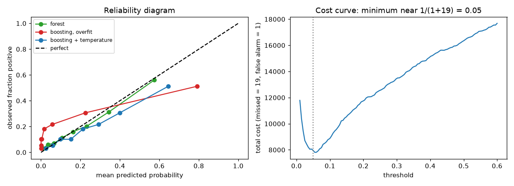
When capacity is limited, use top-K. If reviewers can check only K cases a day, rank by score and flag the top K. On the same data: K = 100 gives precision@K 0.75 and recall@K 0.073; K = 500: 0.54 and 0.262; K = 1000: 0.419 and 0.407. This is how you answer "if we can review 500 per day, how many frauds will we catch?" (26 percent of all positives here). A related summary is recall at a fixed precision, for example "recall when we require at least 50 percent precision".
Check yourself.
c_FN = 9,c_FP = 1. Threshold? Answer:1/(1+9) = 0.1.- Is the best threshold the one that maximises F1? Answer: only if the costs happen to match F1's balance; usually not.
- Reviewers can handle 200 cases per day. Which metric? Answer: precision@200 and recall@200.
9.4 Regression Metrics
Problem 9.4.1 Actual y = 100, 200, 300, 400, predicted ŷ = 110, 180, 330, 400. Compute the metrics.
| Errors | ŷ − y = 10, −20, 30, 0. |
|---|---|
| MAE | (mean absolute error) = (10 + 20 + 30 + 0)/4 = 15. In the same unit as y; every error counts in proportion. |
| RMSE | (root mean squared error) = √((100 + 400 + 900 + 0)/4) = √350 = 18.71. Squaring makes large errors count more. |
| MAPE | (mean absolute percentage error) = mean(0.10, 0.10, 0.10, 0) = 7.5 %. |
| WAPE | (weighted absolute percentage error) = Σ|e|/Σy = 60/1000 = 6 %. |
| sMAPE | = mean(2|e|/(|y| + |ŷ|)) = 7.39 %. |
| R² | = 1 − SSE/SST: SSE = 1400; mean of y is 250, SST = 150² + 50² + 50² + 150² = 50,000; R² = 1 − 0.028 = 0.972. |
| RMSLE | (root mean squared log error) = √mean((ln(1+ŷ) − ln(1+y))²) = 0.0850; it measures ratio errors and is gentler to large values. |
| Answer | MAE 15, RMSE 18.7, MAPE 7.5 %, WAPE 6 %, sMAPE 7.4 %, R² 0.972, RMSLE 0.085. The code matches. |
| Metric | Use it when | Watch out |
|---|---|---|
| MAE | errors cost in proportion; robust to outliers | does not punish rare big errors |
| RMSE | big errors are disproportionately bad | dominated by outliers |
| R² | comparing to the "predict the mean" baseline | depends on the spread of y (below) |
| MAPE | business wants percent | undefined at y = 0; over-predictions can be penalised without limit while under-predictions are capped at 100 percent |
| WAPE | many small items, percent at portfolio level | hides item-level error |
| RMSLE | values span orders of magnitude; ratio matters | punishes under-prediction more than over |
| Quantile (pinball) loss | you want a quantile, not the mean | needs a chosen τ |
Outliers decide MAE versus RMSE. Ten errors: nine equal to 1 and one equal to 50. MAE = 59/10 = 5.9, RMSE = √((9 + 2500)/10) = 15.84. RMSE is nearly three times MAE because of one bad miss. If one rare miss is truly catastrophic (a flight arrival time), RMSE reflects that; if outliers are measurement glitches, MAE is fairer.
R² is not a quality score by itself. We used the same good model (the true line plus noise of standard deviation 3) on two datasets. RMSE: 2.99 and 2.97, essentially identical. R²: 0.299 and 0.919, only because the second target had a larger spread. A low R² can be a perfectly fine model (the noise is just large) and a high R² can hide a poor model on a narrow range. Look at RMSE or MAE in the real unit and compare with a baseline.
Pinball (quantile) loss for quantile τ: max(τ·(y − q), (τ − 1)·(y − q)). For τ = 0.9, y = 10: a forecast q = 8 (too low by 2) costs 0.9 × 2 = 1.8; q = 12 (too high by 2) costs 0.1 × 2 = 0.2. Under-forecasting is punished nine times as much, so the model learns the 90th percentile (the "stock enough" level).
Residual analysis by segment. Plot residuals against each feature and group. Look for: a funnel shape (errors grow with the value: use a log target or a percentage metric), a pattern (missing feature), and subgroups with biased errors (always under-predicting for new customers).
Check yourself.
- One huge error; MAE or RMSE reacts more? Answer: RMSE.
- Same RMSE, R² of 0.3 and 0.9: why? Answer: the target spread differs.
- Pinball loss with
τ = 0.5? Answer: half the absolute error (the median).
9.5 Ranking and Recommendation Metrics (and a Word on Clustering)
Words you need. Relevance (a grade for each item: 0 = useless to 3 = perfect). @K: only the first K results count.
- Recall@K
= relevant items in the top K / all relevant items. - MRR (mean reciprocal rank): average of
1/rank of the first relevant item. - MAP (mean average precision): for each list, average the precision at each position of a relevant item; then average over lists.
- NDCG (normalised discounted cumulative gain): gain of an item discounted by
log₂(position + 1), divided by the best possible ordering:DCG = Σ gain_i / log₂(i + 1),NDCG = DCG / IDCG. With graded relevance it is the standard.
Problem 9.5.1 A search returns six items in this order with relevance 3, 2, 3, 0, 1, 2. Compute NDCG (gain = relevance).
| Formula | DCG = Σ rel_i / log₂(i + 1). |
|---|---|
| Compute DCG | 3/1 + 2/1.585 + 3/2 + 0/2.322 + 1/2.585 + 2/2.807 = 3 + 1.262 + 1.5 + 0 + 0.387 + 0.712 = 6.861. |
| Compute IDCG | (best order 3, 3, 2, 2, 1, 0): 3 + 3/1.585 + 2/2 + 2/2.322 + 1/2.585 + 0 = 3 + 1.893 + 1 + 0.861 + 0.387 = 7.141. |
| Answer | NDCG = 6.861/7.141 = 0.9608, equal to scikit-learn's ndcg_score. |
| Check | The second 3 sits at position 3 instead of 2; that small misplacement costs about 4 percent. |
| Note | Many industry systems use gain 2^rel − 1. The same list gives 13.848/14.595 = 0.9488. Always state which version you use. |
Problem 9.5.2 Three queries; relevant items (1) appear at: query A [0,1,0,1,0], B [1,0,0,0,0], C [0,0,0,0,1]. Compute MAP and MRR.
| AP | A: relevant at ranks 2 and 4: (1/2 + 2/4)/2 = 0.5. B: 1/1 = 1.0. C: 1/5 = 0.2. |
|---|---|
| MAP | (0.5 + 1.0 + 0.2)/3 = 0.5667. |
| MRR | first relevant at ranks 2, 1, 5: (0.5 + 1 + 0.2)/3 = 0.5667. |
| Answer | MAP and MRR are both 0.5667 here (a coincidence of this tiny example, since each list has one relevant item except A). |
| Interpretation | On average the first good result is at about rank 1.8 (1/0.5667, roughly). |
Clustering is judged by the silhouette score (−1 to 1) and, with known labels, the adjusted Rand index (0 chance, 1 perfect).
Check yourself.
- NDCG of a perfect order? Answer: 1.0.
- MRR if the first relevant item is at rank 4? Answer:
0.25for that query. - Which metric ignores order inside the top K? Answer: recall@K.
9.6 Calibration: Can You Trust the Probability?
Reliability diagram. Group predictions into bins (for example 0 to 0.1, 0.1 to 0.2). For each bin plot the mean predicted probability (x) against the observed fraction of positives (y). A calibrated model lies on the diagonal. Expected calibration error (ECE) = Σ_bins (n_bin/n)·|observed − predicted|.
Problem 9.6.1 12,000 rows, 18 percent positive, a real mixture of effects, split 6,000 train, 3,000 calibration, 3,000 test. Three models, measured on the test set:
| Model | AUC | Log loss | Brier | ECE |
|---|---|---|---|---|
| Logistic regression | 0.7941 | 0.3909 | 0.1224 | 0.0138 |
| Random forest (300 trees) | 0.7813 | 0.4052 | 0.1246 | 0.0238 |
| Boosting, 400 rounds at rate 0.2 (overfit) | 0.7655 | 0.6578 | 0.1506 | 0.1239 |
- Step 1 Logistic regression is naturally close to calibrated (its loss is the likelihood), ECE 0.014.
- Step 2 The overfit boosting model has a decent AUC (0.77) but a terrible log loss (0.66, worse than predicting the base rate, about 0.48) and ECE 0.124. Its reliability line: predicted
0.000, 0.001, 0.009, 0.072, 0.602against observed0.033, 0.093, 0.143, 0.238, 0.432in five equal-sized bins. The lowest bin says "almost never" when 3 percent happen; the top bin says 60 percent when 43 percent happen. Overconfident. - Step 3 The forest shows the opposite classic pattern in mild form: it averages trees, so predictions shrink toward the middle (predicted
0.018vs observed0.039in the lowest bin). - Answer Ranking (AUC) and calibration are different properties. The boosting model ranks well enough but its probabilities cannot be used for expected-cost decisions as they are.
- Check A model that always predicts the base rate 0.183 has log loss
−0.183 ln 0.183 − 0.817 ln 0.817 = 0.311 + 0.165 = 0.476; 0.658 is worse than that.
Three repair tools (fit on a separate calibration set, never on the training rows)
- Platt scaling: fit a logistic regression
p' = σ(a·logit(p) + b)on the calibration set. Two parameters, safe on small data. Works when the distortion is S-shaped. - Isotonic regression: fit a step-like, monotonic mapping from score to probability. More flexible, needs more data (rule of thumb: thousands of rows), can overfit if small.
- Temperature scaling: divide the logits by one number
T:p' = σ(logit(p)/T).T > 1softens overconfident predictions. One parameter; it never changes the ranking, so AUC stays the same. Standard for neural networks.
Results on the test set:
| Model | AUC | Log loss | ECE |
|---|---|---|---|
| Forest, raw | 0.7813 | 0.4052 | 0.0238 |
| Forest + Platt | 0.7813 | 0.4014 | 0.0181 |
| Forest + isotonic | 0.7785 | 0.3988 | 0.0055 |
| Boosting, raw | 0.7655 | 0.6578 | 0.1239 |
Boosting + temperature (T = 3.225) | 0.7655 | 0.4189 | 0.0474 |
- Read it Temperature scaling with one number improved the boosting log loss from 0.658 to 0.419 and left AUC unchanged (0.7655). Isotonic cut the forest's ECE from 0.024 to 0.006 and moved AUC slightly (ties created by steps).
T = 3.2says: shrink the logits by a factor of 3. - Check
AUCfor Platt and temperature are identical to raw: monotone transformations keep order.
Calibration after resampling
If you undersample the majority class to balance the data (Chapter 12), the model learns a 50/50 world: on our data the average predicted probability became 0.413 while the true prevalence is 0.188 (the AUC stayed 0.794). The fix is a formula: with β = the fraction of negatives kept, p_true = β·p / (β·p + 1 − p). After correction the mean prediction is 0.177 and ECE fell from 0.225 to 0.014. Class weights have the same effect on probabilities as resampling.
CalibratedClassifierCV).Check yourself.
- Does Platt scaling change the AUC? Answer: no, it is monotone.
- A model says 0.9 and is right 60 percent of the time. Over or under confident? Answer: overconfident.
- Why not calibrate on training data? Answer: the training predictions are already too confident, so the fix is biased.
9.7 Uncertainty: Intervals, Bootstrap, Quantiles and Conformal Prediction
Uncertainty on the metric itself: bootstrap confidence intervals
The test score is only an estimate. Bootstrap it: resample the test rows with replacement 1,000 times, recompute the metric each time, and take the 2.5th and 97.5th percentiles. For a test set of 400 rows with 65 positives, the measured AUC was 0.736 with a 95 percent interval [0.672, 0.800]. A model that scores 0.75 on the same data is not clearly better. Report 0.74 (0.67 to 0.80) and compare models on the same rows (Chapter 10).
Two kinds of uncertainty
| Kind | Meaning | Reducible by more data? | Example |
|---|---|---|---|
| Aleatoric | randomness in the world | no | two identical customers behave differently |
| Epistemic | the model's ignorance | yes | a region with few training rows |
An ensemble of models trained on bootstrap samples shows epistemic uncertainty as the spread between members. Warning from our test: 30 boosted models trained on x from 0 to 5 predicted at x = 2.5 with spread 0.101, at x = 4.9 with 0.058, and at x = 8.0 (outside the data) with only 0.182 while the truth was 0.99 and the ensemble predicted −1.08. Tree ensembles are confidently wrong outside the training range (Chapter 6), so ensemble spread alone does not warn you about extrapolation.
Quantile regression
Train with the pinball loss (9.4) for τ = 0.05 and τ = 0.95 to get a 90 percent interval directly: GradientBoostingRegressor(loss="quantile", alpha=0.95). Works with heteroscedastic noise (noise that changes with x), but the coverage is not guaranteed.
Conformal prediction: coverage with a guarantee
Conformal prediction wraps any model and gives intervals with a distribution-free guarantee: if the calibration and test rows are exchangeable (roughly, "same kind of data, in any order"), the interval covers the truth with at least the chosen probability, whatever the model is. The split version needs only a separate calibration set:
- Fit the model on the training set.
- On the calibration set (size
n) compute scoressᵢ = |yᵢ − ŷᵢ|. - Let
k = ⌈(n + 1)(1 − α)⌉andq̂= thek-th smallest score. - For a new case the interval is
ŷ ± q̂.
Problem 9.7.1 n = 1,000 calibration rows, α = 0.1 (target 90 percent). Find k; then check the real coverage on 5,000 test rows. The data have noise that grows with x (standard deviation 0.3 + 0.4x).
| Plug in | k = ⌈1001 × 0.9⌉ = ⌈900.9⌉ = 901. |
|---|---|
| Compute | The 901st smallest absolute error was q̂ = 4.581; the interval is ŷ ± 4.581 (width 9.163). |
| Answer (overall) | Test coverage was 0.910: the guarantee holds (at least 0.90). |
| Answer (by region) | Coverage by x range: [0, 2.5) 1.000; [2.5, 5) 0.980; [5, 7.5) 0.886; [7.5, 10) 0.763. |
| Interpretation | The average is right but the intervals are too wide where the noise is small and too narrow where it is large. This is marginal coverage, not coverage in every segment. |
Conformalized quantile regression (CQR) fixes this. Fit the lower and upper quantile models (τ = 0.05, 0.95), compute the score max(lower − y, y − upper) on the calibration set, take the same k-th smallest value q̂, and widen the interval to [lower − q̂, upper + q̂].
x range | split conformal coverage | split width | CQR coverage | CQR width |
|---|---|---|---|---|
| 0 to 2.5 | 1.000 | 9.16 | 0.918 | 2.85 |
| 2.5 to 5 | 0.980 | 9.16 | 0.919 | 6.32 |
| 5 to 7.5 | 0.886 | 9.16 | 0.895 | 9.48 |
| 7.5 to 10 | 0.763 | 9.16 | 0.900 | 12.68 |
- Read it The raw quantile models had coverage
0.887(below the 0.90 target, no guarantee); after the conformal correction the coverage is0.908overall and about 0.90 in every region, with narrow intervals where the noise is small (2.85) and wide where it is large (12.68).
Conformal for classification. Use the score 1 − p(true class). On a calibration set of 1,500 rows, k = ⌈1501 × 0.9⌉ = 1351 gave q̂ = 0.678, so a class enters the prediction set when its probability is at least 1 − 0.678 = 0.322. On 2,000 test rows: coverage 0.886 (target 0.90; with 2,000 rows the standard error is about 0.007, so slightly low but close), average set size 1.43; 57 percent of cases have a single class and 43 percent get both. A set with both classes is the model saying "I cannot decide"; these are the cases to send to a human.
MAPIE (a library for this) was not installable here; its use is standard but "not run here". The hand version above is the same algorithm.
Limits. The guarantee needs exchangeable data: under drift (Chapter 8 and monitoring) the coverage can fail. It covers averages over cases, not a promise for one particular case. The intervals are only as useful as the base model's score.
Check yourself.
n = 99,α = 0.1. What isk? Answer:⌈100 × 0.9⌉ = 90.- Does conformal prediction need a separate calibration set? Answer: yes in the split version.
- What does a prediction set with both classes mean? Answer: the model cannot separate them with the chosen confidence.
Where these tools are used
| Domain | Typical choices from this chapter |
|---|---|
| Credit and insurance | AUC, calibrated probabilities (pricing), cost-based cut-off, conformal ranges |
| Fraud and security | PR-AUC, precision@K with review capacity, recall at fixed precision |
| Medicine | recall and F2 for screening, calibration, "refer" when the prediction set has both classes |
| Demand and delivery forecasting | WAPE or MAE, pinball loss for stock levels, CQR intervals |
| Search and recommendation | NDCG@K, MRR, recall@K of the retrieval step |
Chapter recap
- The confusion matrix has four counts; every classification metric reads them differently. Accuracy misleads when classes are rare; compare with the majority baseline.
- Precision is "how many flags are real", recall is "how many real ones we catch", F-beta weighs them, MCC and kappa correct for chance.
- ROC-AUC is ranking quality and does not depend on prevalence; PR-AUC does, and is the right view for rare events. Log loss and Brier judge the probabilities.
- Choose the threshold from costs: flag if
p > c_FP/(c_FP + c_FN). Our table's best cut (0.05) matched the theory. With limited capacity use precision@K. - Regression metrics: MAE (proportional), RMSE (punishes big errors), WAPE (portfolio percent), RMSLE (ratios), pinball (quantiles). R² depends on the spread of the target.
- Ranking metrics reward good items near the top: NDCG, MAP, MRR, recall@K. State the gain formula.
- Calibration is separate from ranking. Repair with Platt, isotonic or temperature scaling on a separate calibration set. Resampling and class weights distort probabilities.
- Report uncertainty: bootstrap intervals on metrics, and conformal intervals with coverage checked by segment (CQR gives adaptive widths).
- Tree ensembles do not signal extrapolation by their spread.
| Formula / command | Meaning |
|---|---|
P = TP/(TP+FP), R = TP/(TP+FN), F1 = 2PR/(P+R) | precision, recall, F1 |
AUC = P(score_pos > score_neg) | ranking quality |
flag if p > c_FP/(c_FP + c_FN) | cost-based threshold |
log loss, Brier = mean((p−y)²) | probability quality |
NDCG = DCG/IDCG, DCG = Σ rel/log₂(i+1) | ranking quality with grades |
| `ECE = Σ (n_bin/n)· | obs − pred |
p' = σ(logit(p)/T) | temperature scaling |
k = ⌈(n+1)(1−α)⌉, interval ŷ ± q̂ | split conformal |
precision_recall_curve, roc_auc_score, average_precision_score, calibration_curve, CalibratedClassifierCV | scikit-learn tools |
Practice set
- (easy)
TP = 40, FP = 10, FN = 10, TN = 40. Accuracy, precision, recall? Answer:80/100 = 0.8,40/50 = 0.8,40/50 = 0.8. - (easy) Spam rate is 2 percent. A filter that passes everything has what accuracy? Answer:
0.98, so accuracy is useless here. - (easy) Actual
10, 20, predicted12, 15. MAE and RMSE? Answer: errors2, −5; MAE3.5; RMSE√((4 + 25)/2) = √14.5 = 3.81. - (medium) Miss costs 4, false alarm costs 1. Threshold? Answer:
1/(1+4) = 0.2. - (medium) Find the bug:
precision_score(y_true, y_pred)returns 0.0 with a warning, though the model flags 30 cases. Answer: probablyy_trueandy_predswapped or no flagged case is truly positive; check the confusion matrix and the label coding (pos_label). - (medium) AUC 0.90, but log loss is worse than the baseline. What does it mean? Answer: the ranking is good but the probabilities are badly calibrated (overconfident); apply temperature scaling or isotonic on a calibration set.
- (medium) A demand forecast reports MAPE 12 percent but many items sell 0 or 1 unit per day. Which metric instead? Answer: WAPE (
Σ|e|/Σy) or MAE, because MAPE explodes for tiny actuals. - (medium) A model is trained on a 1:1 undersampled set (kept 1 in 19 negatives,
β = 1/19) and saysp = 0.5. True probability? Answer:β·p/(β·p + 1 − p) = 0.0263/(0.0263 + 0.5) = 0.05. - (hard, scenario) A loan model has AUC 0.82 overall, but the manager notes complaints from self-employed applicants. What do you do? Answer: compute AUC, calibration and the approval error rates for that segment; if it is poor, check the features available for them, the training counts, and consider segment-aware thresholds or a separate model; report with bootstrap intervals because the segment may be small.
- (hard)
n = 200calibration scores,α = 0.05. Which sorted score isq̂? Answer:k = ⌈201 × 0.95⌉ = ⌈190.95⌉ = 191, the 191st smallest. - (interview) "When would you use PR-AUC over ROC-AUC?" Answer: with rare positives. ROC-AUC does not depend on prevalence and the false positive rate is diluted by the many negatives; PR-AUC shows how many flags are correct. Example: same ROC-AUC 0.856 gave PR-AUC 0.64 at 20 percent prevalence and 0.106 at 1 percent.
- (interview) "Your model has AUC 0.9, but the business says the probabilities are wrong. Explain and fix." Answer: AUC measures ranking; calibration measures whether 0.3 means 30 percent. Draw a reliability diagram, compute ECE, calibrate on held-out data with Platt, isotonic or temperature scaling, and re-check log loss and the cost-based threshold.
Prompt pack
You are my patient, practical professor. I am a working professional moving into data roles, and English is my second language, so use simple words. Topic: classification metrics from the confusion matrix: accuracy, precision, recall, F1, Fbeta, MCC, ROC-AUC and PR-AUC. Explain with a smoke-alarm analogy, then give me 8 graded exercises with real numbers (no solutions yet) and check my answers one at a time.
You are my patient, practical professor. I am a working professional moving into data roles, and English is my second language. Topic: choosing a decision threshold from business costs, expected-cost curves and precision@K. My scenario: [PASTE MY POSITIVE RATE, COST OF A MISS, COST OF A FALSE ALARM AND REVIEW CAPACITY]. Calculate the threshold, show a small cost table, and explain the trade-off in plain words.
You are my patient, practical professor. I am a working professional moving into data roles, and English is my second language. Topic: regression and ranking metrics: MAE, RMSE, R-squared pitfalls, MAPE, WAPE, RMSLE, pinball loss, NDCG, MAP and MRR. Give me one tiny numeric example of each, then quiz me one question at a time and wait for my answers.
You are my patient, practical professor. I am a working professional moving into data roles, and English is my second language. Topic: probability calibration: reliability diagrams, ECE, Platt scaling, isotonic regression and temperature scaling, and how class weights or resampling distort probabilities. Explain with a weather-forecast analogy, show me how to fix an overconfident model step by step, and review my code: [PASTE MY CODE HERE].
You are my patient, practical professor. I am a working professional moving into data roles and preparing for ML interviews, and English is my second language. Topic: uncertainty: bootstrap confidence intervals for metrics, quantile regression, split conformal prediction and conformalized quantile regression. Run a mock interview: one question at a time, score my answer out of 10, show a model answer in simple English, then ask a harder follow-up. Include one calculation of k = ceil((n+1)(1-alpha)).
You trained a model and the score is disappointing. Or it looks great and you do not trust it. What do you do next? Most beginners start changing hyperparameters at random. A professional does something different: first checks that the pipeline is not lying, then reads the mistakes, then fixes the largest cause. A good doctor does not prescribe a new medicine before reading the test results; this is the same habit. By the end of this chapter you will be able to run four sanity tests that catch broken pipelines in minutes, read learning and validation curves to decide "more data or a different model?", slice the errors to find which customers the model fails, and compare two models with a paired test instead of staring at two numbers.
Running example. A telecom company wants to predict customer churn (the customer cancels the plan). We use a synthetic dataset of 4,000 customers (fixed seed 0) with columns tenure (months), spend (monthly bill), calls (support calls last month), plan (basic/plus/pro) and region. About 34% of customers churn. We planted one secret on purpose: customers with tenure under 12 months and 3 or more support calls churn very often. A simple linear model cannot see this "new and angry" group. Your task is to find it using only the tools in this chapter. All code uses numpy, pandas, scikit-learn 1.9.1 and scipy; every output below was really produced. Metrics (accuracy, ROC-AUC, log loss) and validation ideas come from Chapters 1 and 4; Math PDF Pillar 5 covers loss functions.
10.1 Sanity Tests: Is the Pipeline Even Honest?
Words you need
| Word | Meaning |
|---|---|
| Baseline | A trivial model (for example "always predict the most common class") that any real model must beat. |
| Target leakage | A feature that secretly contains the answer, or is only known after the outcome happens. |
| ROC-AUC | A score from 0 to 1 for how well the model ranks positives above negatives. 0.5 is a coin flip. |
| Feature importance | A number saying how much the model used each feature. |
The four tests
- Trivial baseline. Train a dummy model. Your real model must beat it, or there is no signal (or a bug).
- Shuffle the labels. Randomly permute
yin the training set and retrain. There is now nothing to learn, so the test score must fall to chance (AUC near 0.5). If it stays high, the information is leaking from somewhere else. - Overfit a tiny subset. Train on 40 rows. A flexible model should reach nearly 100% training accuracy. If it cannot, the model or the training loop is broken (wrong learning rate, wrong labels, frozen features).
- Read the top feature. If one feature has importance near 1.0, be suspicious. Real churn is never explained by one column.
import numpy as np, pandas as pd
from sklearn.model_selection import train_test_split
from sklearn.linear_model import LogisticRegression
from sklearn.ensemble import GradientBoostingClassifier
from sklearn.dummy import DummyClassifier
from sklearn.tree import DecisionTreeClassifier
from sklearn.metrics import accuracy_score, roc_auc_score, log_loss
from sklearn.preprocessing import StandardScaler
from sklearn.pipeline import make_pipeline
rng = np.random.default_rng(0)
n = 4000
tenure = rng.integers(1, 60, n); spend = rng.normal(50, 15, n).round(1)
calls = rng.poisson(1.5, n)
plan = rng.choice(['basic','plus','pro'], n, p=[.5,.3,.2])
region = rng.choice(['N','S','E','W'], n)
z = -0.2 - 0.05*tenure + 0.03*(spend-50) + 0.3*calls + (plan=='basic')*0.6
z += ((tenure < 12) & (calls >= 3)) * 2.5 # the hidden segment
y = (rng.random(n) < 1/(1+np.exp(-z))).astype(int)
flip = rng.random(n) < 0.05 # 5% label noise
y = np.where(flip, 1-y, y)
df = pd.DataFrame(dict(tenure=tenure, spend=spend, calls=calls,
plan=plan, region=region, churn=y))
X = pd.get_dummies(df.drop(columns='churn'), columns=['plan','region'], dtype=float)
Xtr, Xte, ytr, yte = train_test_split(X, y, test_size=0.3, random_state=0, stratify=y)Before you run the next block, predict: what accuracy will a model get that always says "no churn"? (Hint: 34% churn.)
d = DummyClassifier(strategy='prior').fit(Xtr, ytr)
print("dummy acc", round(accuracy_score(yte, d.predict(Xte)), 3))
lr = make_pipeline(StandardScaler(), LogisticRegression(max_iter=1000)).fit(Xtr, ytr)
gb = GradientBoostingClassifier(random_state=0).fit(Xtr, ytr)
for nm, m in [('logreg', lr), ('gboost', gb)]:
pr = m.predict_proba(Xte)[:, 1]
print(nm, "acc", round(accuracy_score(yte, m.predict(Xte)), 3),
"auc", round(roc_auc_score(yte, pr), 3), "logloss", round(log_loss(yte, pr), 3))dummy acc 0.658
logreg acc 0.733 auc 0.752 logloss 0.549
gboost acc 0.722 auc 0.731 logloss 0.562The dummy gets 65.8% accuracy by always saying "stays". So the real models at 73% are only 7 points better in accuracy. This is the honest size of the signal: it is a hard problem, and 5% of labels were flipped on purpose, which no model can recover. Notice also that the simple logistic regression beats gradient boosting on this data. We will come back to that.
Test 2 and 3 in code
ys = np.random.default_rng(1).permutation(ytr)
g2 = GradientBoostingClassifier(random_state=0).fit(Xtr, ys)
print("shuffled-label test auc", round(roc_auc_score(yte, g2.predict_proba(Xte)[:, 1]), 3))
idx = np.arange(40)
dt = DecisionTreeClassifier(random_state=0).fit(Xtr.iloc[idx], ytr[idx])
print("tiny-40 train acc, tree:", dt.score(Xtr.iloc[idx], ytr[idx]))shuffled-label test auc 0.46
tiny-40 train acc, tree: 1.0AUC 0.46 is near 0.5, so shuffling killed the signal. That is the healthy result. (It is not exactly 0.5 because 1,200 test rows still have random noise; a gap of 0.04 is normal.) The tree memorised all 40 rows, so the training loop works.
A leaky feature, caught by test 4
Imagine a careless engineer adds days_since_cancel_request, taken from the billing system. It is small for churners (they asked to cancel) and large for others. This is information from the future, not available when we need to predict.
rl = np.random.default_rng(5)
Xl = Xtr.copy(); Xl['days_since_cancel_request'] = np.where(ytr==1, rl.integers(0,5,len(ytr)), rl.integers(30,90,len(ytr)))
Xlt = Xte.copy(); Xlt['days_since_cancel_request'] = np.where(yte==1, rl.integers(0,5,len(yte)), rl.integers(30,90,len(yte)))
gl = GradientBoostingClassifier(random_state=0).fit(Xl, ytr)
print("auc", round(roc_auc_score(yte, gl.predict_proba(Xlt)[:, 1]), 3))
print(pd.Series(gl.feature_importances_, Xl.columns).sort_values(ascending=False).head(3).round(3))auc 1.0
days_since_cancel_request 1.0
spend 0.0
tenure 0.0A test AUC of 1.000 on a churn problem is not a triumph, it is an alarm. One feature has importance 1.0. You would ask: "Is this value known at the moment of prediction?" The answer is no, so remove it.
Problem 10.1.1 A fraud model scores AUC 0.97 on validation. You shuffle the training labels and retrain; the validation AUC is 0.91. What do you conclude?
| Formula | A model trained on shuffled labels has nothing to learn; expected AUC is about 0.5. |
|---|---|
| Plug in | Observed 0.91 versus expected 0.5. |
| Compute | The gap above chance is 0.91 − 0.50 = 0.41. |
| Answer | Information reaches the model without passing through the training labels. Typical causes: the validation rows are duplicates of training rows, or a feature was computed using the labels (for example, target encoding fit on all data). |
| Check | A clean pipeline would return roughly 0.5 ± 0.03. |
| Why it matters | This test finds leakage that no amount of staring at the model would reveal. |
Problem 10.1.2 A churn model gets accuracy 90% on a dataset where 92% of customers stay. Is it good?
| Formula | Baseline accuracy = share of the majority class. |
|---|---|
| Plug in | Always predicting "stays" gives 92%. |
| Compute | 90% − 92% = −2 points. |
| Answer | The model is worse than a model that never thinks, so it is not good yet. We would look at recall and PR-AUC instead (Chapter 12 returns to this). |
| Check | If 920 of 1,000 stay, "always stays" is right 920 times, which is 92%. |
The picture
Sanity ladder (run top to bottom, stop at the first failure)
[dummy baseline] model must beat it -> no? signal or bug
[shuffle labels] score must fall to chance -> no? leakage
[tiny overfit] train score must hit ~100% -> no? broken training
[top features] none should dominate at 1.0 -> yes? leakage
then and only then: tune, engineer features, compare modelsConnection to the real job
In a team this ladder is a small script that runs in the CI pipeline after every change. A junior who runs it before asking "why is my model bad?" saves a senior's afternoon.
Applications
- Data Science: reject suspiciously perfect scores before they reach a slide deck.
- MLOps: run the shuffle test as an automated check in the training pipeline.
- Fraud and credit: leakage is the most common cause of a model that works offline and fails live.
- Deep Learning: "overfit one batch" is the first debugging step for a neural network.
Check yourself
- A model trained on 40 rows cannot reach high training accuracy. Is this overfitting? Answer: No. Something is broken (training loop, labels, learning rate) or the model is too weak; overfitting means the training score is high.
- What AUC should the shuffled-label test give? Answer: About 0.5.
- Why is a feature importance of 1.0 suspicious? Answer: Real outcomes depend on many causes; one feature explaining everything usually means it contains the answer (leakage).
10.2 Learning Curves and Validation Curves: Diagnosis by Picture
Chapter 1 introduced the generalization gap (training score minus validation score). Here we use it as a tool.
Definitions
- Learning curve: train the model on 10%, 25%, 50%... of the data; at each size plot the training score and the cross-validation score. (Cross-validation, "CV": split into k parts, train on k−1, test on the rest, repeat.)
- Validation curve: keep the data size fixed; change ONE hyperparameter (for example tree depth) and plot training and validation scores.
How to read them:
| What you see | Diagnosis | What to try |
|---|---|---|
| Both curves low and close together | High bias (underfitting): model too simple | More features, more flexible model |
| Training high, validation much lower, gap shrinking as data grows | High variance (overfitting) | More data, regularization, simpler model |
| Validation curve still rising at the right end | More data will help | Collect data |
| Validation curve flat at the right end | More data will not help | Change the model or features |
from sklearn.model_selection import learning_curve, validation_curve, StratifiedKFold
cv5 = StratifiedKFold(5, shuffle=True, random_state=0)
sizes = [0.1, 0.25, 0.5, 0.75, 1.0]
s, tr, va = learning_curve(GradientBoostingClassifier(random_state=0), X, y,
train_sizes=sizes, cv=cv5, scoring='roc_auc')
for a, b, c in zip(s, tr.mean(1), va.mean(1)): print(a, round(b, 3), round(c, 3))
s2, tr2, va2 = learning_curve(make_pipeline(StandardScaler(), LogisticRegression(max_iter=1000)),
X, y, train_sizes=sizes, cv=cv5, scoring='roc_auc')
for a, b, c in zip(s2, tr2.mean(1), va2.mean(1)): print("lr", a, round(b, 3), round(c, 3))320 0.98 0.671
800 0.904 0.701
1600 0.841 0.713
2400 0.822 0.722
3200 0.802 0.727
lr 320 0.756 0.729
lr 800 0.743 0.733
lr 1600 0.738 0.738
lr 2400 0.747 0.74
lr 3200 0.745 0.74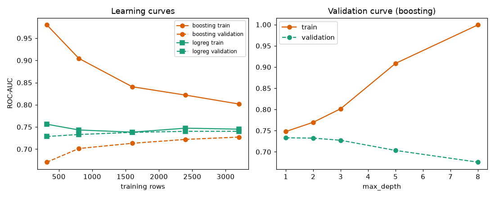
Left: x-axis is the number of training rows, y-axis is ROC-AUC. Solid lines are training scores, dashed lines are validation scores. Orange is boosting, green is logistic regression. Right: for boosting, x-axis is tree depth; the training score climbs to 1.0 while the validation score falls.
Problem 10.2.1 Read the boosting learning curve above.
| Step 1 | At 320 rows: training 0.980, validation 0.671. Gap = 0.980 − 0.671 = 0.309. |
|---|---|
| Step 2 | At 3,200 rows: training 0.802, validation 0.727. Gap = 0.075. |
| Step 3 | The gap shrinks as data grows and the validation curve is still rising (0.713 → 0.722 → 0.727). |
| Answer | Boosting is in the high-variance regime; more data would help it a little more, but slowly. |
| Check | A large gap with a falling gap is the classic variance signature (Chapter 1). |
Problem 10.2.2 Read the logistic regression learning curve.
| Step 1 | At 1,600 rows: training 0.738, validation 0.738. Gap = 0. |
|---|---|
| Step 2 | At 3,200 rows: 0.745 and 0.740. Gap = 0.005. The validation curve moved by only 0.002 between 2,400 and 3,200 rows. |
| Answer | Both curves are flat and together, at about 0.74. This is high bias: the model is too simple for the pattern, and more data will NOT help. We need better features or a model that can express the hidden segment. |
| Check | The planted segment (tenure < 12 and calls ≥ 3) is an interaction. A plain linear model cannot represent it, which matches the diagnosis. |
| Why it matters | Without this chart you might spend a month collecting data that cannot help. |
The validation curve
depths = [1, 2, 3, 5, 8]
tr, va = validation_curve(GradientBoostingClassifier(random_state=0, n_estimators=100), X, y,
param_name='max_depth', param_range=depths, cv=cv5, scoring='roc_auc')
for d_, a, b in zip(depths, tr.mean(1), va.mean(1)): print("depth", d_, round(a, 3), round(b, 3))depth 1 0.748 0.733
depth 2 0.77 0.732
depth 3 0.802 0.727
depth 5 0.909 0.703
depth 8 0.999 0.676The training score climbs from 0.748 to 0.999 as the trees get deeper, but the validation score falls from 0.733 to 0.676. The best depth is the shallowest one (1 or 2). On a noisy problem, flexibility only memorises noise. A depth-8 model "knows" the training set perfectly (0.999) and is the worst on new data.
Residual plots and calibration plots
For regression, plot the residual (actual minus predicted) against the prediction or against a feature. Random scatter around zero is healthy; a curve means missing non-linearity (Chapter 2); a funnel shape means the error grows with the size (heteroscedasticity). For classification, a calibration plot compares predicted probabilities with real frequencies (Chapter 4 touches on this; a later chapter goes deeper). All of them do the same job: show systematic error as a visible pattern.
Connection to the real job
Before any request for "more data" or "more compute", show the learning curve. It turns a budget argument into a picture.
Applications
- Data Science: justify labeling budgets; stop collecting data when the curve is flat.
- Machine Learning: choose regularization strength with the validation curve.
- Deep Learning: the same plot with epochs on the x-axis shows when to stop training.
- Forecasting: residual-versus-time plots reveal drift and seasonality that the model missed.
Check yourself
- Training 0.99, validation 0.70. Bias or variance? Answer: Variance (overfitting).
- Training 0.65, validation 0.64. Bias or variance? Answer: Bias (underfitting).
- Both curves flat at the right end. Will 10x more data help? Answer: No, change the model or the features.
10.3 Error Analysis: Read the Mistakes
The method (four steps)
- Score every example by its individual loss (log loss per row for classifiers, absolute error for regression).
- Read the worst ones by hand: 30 to 50 rows. Write down a cause for each.
- Slice: compute the metric for each segment (tenure bucket, plan, region, new/old customers). A slice with a clearly worse score is a clue.
- Fix the biggest cluster and measure again with the same CV folds.
Per-row log loss for a true label y and predicted probability p is loss = −(y·ln(p) + (1−y)·ln(1−p)). If the customer churned (y = 1) and the model said p = 0.04, loss = −ln(0.04) = 3.22. A confident wrong answer costs a lot.
Confusion matrix and worst rows
from sklearn.metrics import confusion_matrix
pr = lr.predict_proba(Xte)[:, 1]
print(confusion_matrix(yte, (pr >= 0.5).astype(int)))
te = df.loc[Xte.index].copy(); te['p'] = pr; te['y'] = yte
te['err'] = -(yte*np.log(pr) + (1-yte)*np.log(1-pr))
print(te.sort_values('err', ascending=False).head(5)[['tenure','spend','calls','plan','y','p','err']].round(2))
worst = te.sort_values('err', ascending=False).head(60)
print("worst60 tenure", worst.tenure.mean().round(1), "calls", worst.calls.mean().round(2),
"| overall", te.tenure.mean().round(1), te.calls.mean().round(2))[[709 81]
[240 170]]
tenure spend calls plan y p err
2269 54 26.8 0 plus 1 0.04 3.31
551 58 40.2 0 plus 1 0.05 3.00
785 41 4.8 0 basic 1 0.06 2.75
3075 54 29.3 2 plus 1 0.07 2.66
521 48 41.9 0 plus 1 0.08 2.47
worst60 tenure 43.4 calls 1.07 overall 30.4 1.52Read the matrix: rows are the truth (0 = stayed, 1 = churned), columns are the prediction. There are 709 true "stays" predicted right, 81 false alarms, 240 churners we missed, and 170 churners we caught. Recall for churners is 170 / (170 + 240) = 0.41. We miss 59% of churners.
Read the worst rows: they are long-tenure, low-call customers who churned anyway. The model correctly thinks they are safe, and they left. Is this a bug? No. These are mostly the 5% of labels we randomly flipped, plus honest bad luck. Lesson: the worst-loss rows are often label noise, not model errors. If the worst 60 rows had a pattern (all from one region, say), we would investigate. Here the pattern is "very safe customers who left", which looks like noise, so we stop looking there. This is why you also slice.
Slice analysis
te['seg'] = np.where((te.tenure < 12) & (te.calls >= 3), 'new+calls>=3', 'other')
g = te.groupby('seg').apply(lambda g: pd.Series(dict(n=len(g), churn=g.y.mean(), pred=g.p.mean(),
acc=((g.p >= .5) == g.y).mean(), logloss=g.err.mean())))
print(g.round(3))
te['tb'] = pd.cut(te.tenure, [0, 6, 12, 24, 60])
print(te.groupby('tb', observed=True).apply(lambda g: pd.Series(dict(n=len(g), churn=g.y.mean(),
pred=g.p.mean(), acc=((g.p >= .5) == g.y).mean()))).round(3)) n churn pred acc logloss
seg
new+calls>=3 41 0.927 0.709 0.854 0.392
other 1159 0.321 0.328 0.728 0.555
n churn pred acc
tb
(0, 6] 115 0.530 0.583 0.643
(6, 12] 124 0.629 0.543 0.661
(12, 24] 234 0.397 0.442 0.679
(24, 60] 727 0.245 0.235 0.776(tb is a tenure bucket; (0, 6] means tenure above 0 and up to 6.) The segment "new with 3+ calls" has 41 customers, 92.7% of whom churned, but the model predicts an average of 70.9%. It under-predicts by 22 points. The overall metrics hide this because the segment is only 3.4% of the data (41 of 1,200). In the tenure buckets, the (6, 12] group churns 62.9% but is predicted at 54.3%. The slice table pointed us to the neighbourhood of the hidden pattern without us knowing it in advance.
Problem 10.3.1 Compute the model's under-prediction for the segment, and its cost in customers.
| Formula | gap = actual rate − predicted rate; missed customers ≈ gap × n. |
|---|---|
| Plug in | 0.927 − 0.709 = 0.218; 0.218 × 41. |
| Compute | 0.218 × 41 = 8.9. |
| Answer | The model under-counts churners in this segment by about 9 people out of 41 in our test set. On a base of 1 million customers where this segment is 3.4% (34,000 people), that is 0.218 × 34,000 ≈ 7,400 churners that retention teams would never target. |
| Check | 0.927 × 41 = 38.0 actual churners; 0.709 × 41 = 29.1 predicted; the difference is 8.9. |
| Why it matters | A segment this small does not move overall AUC much, but it can be the most valuable one for the business. |
Problem 10.3.2 Fix it and measure. We add one feature, new_calls = 1 if tenure < 12 and calls >= 3, a hand-made interaction (Chapter 2 introduced interaction terms).
from sklearn.model_selection import RepeatedStratifiedKFold, cross_val_score
cv = RepeatedStratifiedKFold(n_splits=5, n_repeats=2, random_state=0)
X2 = X.copy(); X2['new_calls'] = ((df.tenure < 12) & (df.calls >= 3)).astype(float)
mk = lambda: make_pipeline(StandardScaler(), LogisticRegression(max_iter=1000))
a = cross_val_score(mk(), X, y, cv=cv, scoring='roc_auc')
b = cross_val_score(mk(), X2, y, cv=cv, scoring='roc_auc')
print(round(a.mean(), 4), round(b.mean(), 4), round((b - a).mean(), 4))
l2 = mk().fit(X2.loc[Xtr.index], ytr)
p2 = l2.predict_proba(X2.loc[Xte.index])[:, 1]
print("segment mean prediction", p2[(te.seg == 'new+calls>=3').values].mean().round(3))0.7414 0.7443 0.0029
segment mean prediction 0.921- Step 1 The segment prediction moved from 0.709 to 0.921, now close to the true 0.927.
- Step 2 The overall AUC moved only from 0.7414 to 0.7443, a gain of 0.0029, because the segment is small.
- Answer The fix is a big win for the segment and a tiny win in the headline metric. Judge fixes on the slice you targeted, not only on the average.
- Check Both gains are consistent: a 3.4% segment improved by about 21 points of probability.
Other things to look at
- Label-noise inspection: rows where the model is very confident and the label disagrees. Here only 2 of 1,200 rows have p < 0.05 and y = 1. Open them and check whether the label is wrong. Tools such as
cleanlabautomate this (confident learning); not run here. - Confusion analysis for many classes: print the confusion matrix and find the biggest off-diagonal cell; those two classes need clearer features or labels.
- Hardest examples versus ambiguous examples: if two human labelers disagree on a row, no model can be right.
- Distribution shift: if errors cluster in the latest month, your data has drifted. The three types are covariate shift (inputs change), label shift (class balance changes), and concept drift (the rule
x → ychanges). Chapter 12 shows how to detect them.
The picture
all errors (1,200 rows)
|-- label noise / irreducible ---- big, but you cannot fix it
|-- segment "new + 3+ calls" ----- small, systematic, FIXABLE <- fix first
|-- long-tenure surprises ---- looks random, ignoreConnection to the real job
Weekly "error review" meetings at strong ML teams are exactly this: 30 minutes, a table of worst rows, a decision about the next fix. It replaces guessing.
Applications
- Machine Learning: discovering missing features and segments.
- Data Analytics: finding which customers a dashboard metric hides.
- Fairness work: slicing by group (region, age band) to catch worse performance on one group.
- GenAI: reading the worst 50 chatbot answers and tagging causes is the same method.
Check yourself
- Overall accuracy is 73%, but one slice has 40% accuracy and 3% of the data. Is the model fine? Answer: Not necessarily; the slice may matter more than its size suggests. Investigate its business value.
- Why can the highest-loss rows mislead? Answer: They are often label errors or irreducible noise.
- What is log loss for y = 1, p = 0.5? Answer: −ln(0.5) = 0.693.
10.4 Comparing Models Properly
Rules
- Same folds for every model. Use the same split object (same seed), so each model sees the same train and test rows. Then the scores are paired: fold 1 of model A is compared to fold 1 of model B.
- Compare the differences, not the two averages. Compute
d_i = score_A,i − score_B,ifor each fold, then look at mean and spread ofd. - Use a test, but know its limits. The paired t-test on CV folds is the common choice. Its caveat: folds share training data, so the scores are not independent and the test is too optimistic (p-values too small). The Nadeau-Bengio correction inflates the variance:
var_corrected = var(d) × (1/k + n_test/n_train), where k is the number of scores. - McNemar's test compares two classifiers on the same test rows by looking only at the rows where exactly one is right.
- Bootstrap: resample the test set many times and compute the difference each time; the 2.5th and 97.5th percentiles give a 95% interval.
- Prefer the simpler model if the difference is within noise. It is cheaper, faster, easier to explain.
- Offline is not online. An offline win must be confirmed with an A/B test.
Real data: three models, 10 paired scores
from scipy import stats
from sklearn.ensemble import RandomForestClassifier
mods = {'logreg': make_pipeline(StandardScaler(), LogisticRegression(max_iter=1000)),
'gboost': GradientBoostingClassifier(random_state=0),
'forest': RandomForestClassifier(n_estimators=200, random_state=0, min_samples_leaf=5)}
sc = {k: cross_val_score(m, X, y, cv=cv, scoring='roc_auc') for k, m in mods.items()}
for k, v in sc.items(): print(k, v.mean().round(4), v.std().round(4))logreg 0.7414 0.0164
gboost 0.728 0.0145
forest 0.7241 0.016(5 folds x 2 repeats = 10 scores each.) The averages differ by 0.013 and the standard deviations are about 0.015, so the gap looks smaller than the fold-to-fold noise. A beginner might say "they are the same". A paired test is more sensitive, because fold difficulty affects both models equally and cancels out.
d = sc['gboost'] - sc['logreg']
print("diff mean", d.mean().round(4), "sd", d.std(ddof=1).round(4))
print(stats.ttest_rel(sc['gboost'], sc['logreg']))
k = len(d); n_te = len(y)//5; n_tr = len(y) - n_te
var = d.var(ddof=1) * (1/k + n_te/n_tr)
t = d.mean()/np.sqrt(var)
print("corrected t", t.round(2), "p", (2*stats.t.sf(abs(t), k-1)).round(4))diff mean -0.0134 sd 0.0101
TtestResult(statistic=np.float64(-4.206274330707449), pvalue=np.float64(0.0022853687483761443), df=np.int64(9))
corrected t -2.25 p 0.0511Problem 10.4.1 Verify the paired t statistic by hand.
| Formula | t = mean(d) / (sd(d) / √k), with k = 10 scores. |
|---|---|
| Plug in | −0.0134 / (0.0101 / √10). |
| Compute | √10 = 3.162; 0.0101 / 3.162 = 0.003194; −0.0134 / 0.003194 = −4.20. |
| Answer | t = −4.20 matches scipy (−4.206, tiny rounding). The plain test says p = 0.0023: boosting is clearly worse. |
| Check | With 9 degrees of freedom, |t| above 3.25 gives p below 0.01, so p = 0.002 is the right order. |
Problem 10.4.2 Apply the Nadeau-Bengio correction.
| Step 1 | k = 10, n_test = 800 (one fifth of 4,000), n_train = 3,200. So 1/k + n_test/n_train = 0.1 + 0.25 = 0.35. |
|---|---|
| Step 2 | Corrected variance = var(d) × 0.35, with var(d) = 0.0101² = 0.000102. So the variance is 0.0000357, and its square root is 0.00598. |
| Step 3 | Corrected t = −0.0134 / 0.00598 = −2.24 (code: −2.25; rounding). |
| Answer | Corrected p = 0.051. The naive test said "very significant" (p = 0.002); the honest test says "borderline". Always prefer the corrected version for CV scores. |
| Check | The corrected standard error 0.00598 is bigger than the naive 0.00319 by a factor √(0.35 × 10) = 1.87. The t shrinks by the same factor: 4.21 / 1.87 = 2.25. Good. |
| Why it matters | Naive CV t-tests produce false "wins", which cost companies real money when a worse model ships. |
McNemar's test and the bootstrap on the hold-out set
pa = gb.predict(Xte) == yte; pb = lr.predict(Xte) == yte
b = int((pa & ~pb).sum()); c = int((~pa & pb).sum())
stat = (abs(b - c) - 1)**2 / (b + c)
print("b", b, "c", c, "mcnemar", round(stat, 3), "p", round(stats.chi2.sf(stat, 1), 4))
rb = np.random.default_rng(0); ds = []
pg = gb.predict_proba(Xte)[:, 1]; pl = lr.predict_proba(Xte)[:, 1]
for _ in range(1000):
i = rb.integers(0, len(yte), len(yte))
ds.append(roc_auc_score(yte[i], pg[i]) - roc_auc_score(yte[i], pl[i]))
print("boot diff", np.mean(ds).round(4), np.percentile(ds, [2.5, 97.5]).round(4))b 51 c 64
mcnemar 1.252 p 0.2631
boot diff -0.0216 [-0.034 -0.008]Here b = 51 rows were right for boosting and wrong for logistic regression, and c = 64 rows the reverse. The test statistic is (|b − c| − 1)² / (b + c) = (13 − 1)² / 115 = 144 / 115 = 1.252, p = 0.26. On accuracy, the two models are not distinguishable on this test set: the models disagree on only 115 rows, and the split is 51 versus 64. Yet the bootstrap on AUC says boosting is lower by 0.022 with a 95% interval of [−0.034, −0.008], which excludes zero. Why do the two tests disagree? They measure different things: McNemar looks at accuracy at a 0.5 threshold, the bootstrap at ranking quality (AUC). Pick the metric that matches the business decision first, then test that metric.
The decision
- Logistic regression has AUC 0.741, boosting 0.728. After the correction, the difference is borderline; the bootstrap says logistic regression is better.
- Logistic regression is simpler, faster and explainable.
- Decision: ship logistic regression (with the
new_callsfeature from 10.3), run an A/B test, and keep boosting as a challenger. A flexible model does not always win; on small noisy tabular data, it often does not.
Real-world mapping
| Item | Example value | Where it appears in the job |
|---|---|---|
| Paired folds | same RepeatedStratifiedKFold object for all models | experiment code in a notebook or pipeline |
| Mean paired difference | −0.0134 AUC | a table in the model-selection report |
| Corrected p-value | 0.051 | the sentence "difference is borderline" in a review |
| A/B test | 2 weeks, 50/50 traffic | final proof before full rollout |
Applications
- Machine Learning: model selection reports with intervals, not single numbers.
- MLOps: champion versus challenger gates before deployment.
- Data Analytics: comparing two forecast methods for the next quarter.
- GenAI: comparing two prompts or two LLM versions on the same 200 test questions uses the same paired logic.
Check yourself
- Why do we pair folds? Answer: Fold difficulty affects both models equally; pairing cancels it and makes the comparison more sensitive.
- Why correct the CV t-test? Answer: Folds share training data, so scores are correlated and the naive variance is too small.
- Two models are within noise. Which do you ship? Answer: The simpler, cheaper one.
10.5 Comparing Models Across Many Datasets: Wilcoxon, Friedman and Nemenyi
Three tools, in order of use. The Friedman test asks one question: are all models equal? It ranks the models inside each dataset, averages the ranks, and checks whether the average ranks differ more than chance allows. If it says yes, the Nemenyi post-hoc test tells you which pairs differ: two models differ if their average ranks are further apart than a critical difference CD = qα √(k(k+1) / (6N)), for k models and N datasets (q0.05 = 2.343 for k = 3). For exactly two models use the Wilcoxon signed-rank test on the per-dataset score differences.
Problem 10.5.1 Compare logistic regression, a random forest and 15-nearest-neighbours on 12 datasets (4 real, 2 toy shapes, 6 synthetic) with 5-fold cross-validated accuracy. Is any model reliably better?
| Scores | Compute the mean 5-fold accuracy for each (dataset, model) pair. All models see the same folds. |
|---|---|
| Ranks | Within each dataset, rank the models (1 = best). Average across the 12 datasets. |
| Friedman | Test the null "all three models are equal" on those ranks. |
| Nemenyi | Compute CD = 2.343 × √(3 × 4 / (6 × 12)) = 2.343 × 0.408 = 0.96 and compare to the rank gaps. |
| Wilcoxon | Pairwise signed-rank tests, then correct for doing three of them. |
import warnings; warnings.filterwarnings("ignore")
import numpy as np
from scipy import stats
from sklearn.datasets import load_iris, load_wine, load_breast_cancer, load_digits, make_classification, make_moons, make_circles
from sklearn.model_selection import cross_val_score, StratifiedKFold
from sklearn.pipeline import make_pipeline
from sklearn.preprocessing import StandardScaler
from sklearn.linear_model import LogisticRegression
from sklearn.ensemble import RandomForestClassifier
from sklearn.neighbors import KNeighborsClassifier
data = {"iris": load_iris(return_X_y=True), "wine": load_wine(return_X_y=True), "cancer": load_breast_cancer(return_X_y=True),
"digits": load_digits(return_X_y=True), "moons": make_moons(600, noise=0.3, random_state=0),
"circles": make_circles(600, noise=0.15, factor=0.5, random_state=0)}
for s in range(6):
data["synth%d" % s] = make_classification(600, 12, n_informative=4 + s % 3, n_redundant=2, flip_y=0.05, class_sep=0.8, random_state=s)
models = {"logreg": make_pipeline(StandardScaler(), LogisticRegression(max_iter=2000)),
"forest": RandomForestClassifier(100, random_state=0),
"knn": make_pipeline(StandardScaler(), KNeighborsClassifier(15))}
cv = StratifiedKFold(5, shuffle=True, random_state=0)
names = list(data); S = np.array([[cross_val_score(m, *data[d], cv=cv).mean() for m in models.values()] for d in names])
print("%-9s" % "dataset", *["%7s" % k for k in models])
for d, row in zip(names, S): print("%-9s" % d, *["%7.3f" % v for v in row])
ranks = np.array([stats.rankdata(-row) for row in S]); R = ranks.mean(0)
print("mean rank (1 = best):", dict(zip(models, R.round(2))))
fr = stats.friedmanchisquare(*S.T); print("Friedman chi2 = %.2f, p = %.4f (N = %d datasets, k = 3 models)" % (fr.statistic, fr.pvalue, len(names)))
N, k = len(names), 3; cd = 2.343 * np.sqrt(k * (k + 1) / (6 * N))
print("Nemenyi critical difference (alpha 0.05, q = 2.343): %.2f" % cd)
print("rank gaps: logreg-forest %.2f, knn-forest %.2f, logreg-knn %.2f" % (R[0] - R[1], R[2] - R[1], R[0] - R[2]))
for a, b in [(0, 1), (1, 2), (0, 2)]:
w = stats.wilcoxon(S[:, a], S[:, b]); print("Wilcoxon %s vs %s: W = %.0f, p = %.4f, median diff %.4f" % (list(models)[a], list(models)[b], w.statistic, w.pvalue, np.median(S[:, a] - S[:, b])))dataset logreg forest knn
iris 0.960 0.940 0.953
wine 0.983 0.972 0.967
cancer 0.979 0.965 0.961
digits 0.969 0.974 0.962
moons 0.863 0.902 0.900
circles 0.472 0.937 0.960
synth0 0.663 0.923 0.838
synth1 0.718 0.842 0.780
synth2 0.718 0.822 0.787
synth3 0.768 0.853 0.807
synth4 0.862 0.893 0.872
synth5 0.810 0.877 0.857
mean rank (1 = best): {'logreg': np.float64(2.42), 'forest': np.float64(1.42), 'knn': np.float64(2.17)}
Friedman chi2 = 6.50, p = 0.0388 (N = 12 datasets, k = 3 models)
Nemenyi critical difference (alpha 0.05, q = 2.343): 0.96
rank gaps: logreg-forest 1.00, knn-forest 0.75, logreg-knn 0.25
Wilcoxon logreg vs forest: W = 9, p = 0.0161, median diff -0.0525
Wilcoxon forest vs knn: W = 13, p = 0.0425, median diff 0.0158
Wilcoxon logreg vs knn: W = 12, p = 0.0342, median diff -0.0375| Read the table | Logistic regression wins on the 3 clean real sets (iris, wine, cancer) and loses badly on circles (0.472, worse than a coin) and on the synthetic sets with non-linear structure. The forest wins 8 of 12 datasets (k-nearest-neighbours wins circles). |
|---|---|
| Friedman | Mean ranks are 2.42 (logreg), 1.42 (forest), 2.17 (knn). Chi-square 6.50 with 2 degrees of freedom gives p = 0.039: the models are not all equal. |
| Nemenyi | CD = 0.96. The rank gap logreg versus forest is 1.00, larger than 0.96: a significant difference. Forest versus knn is 0.75, logreg versus knn 0.25: both below the CD, so those pairs are not separated. In words: the forest beats logistic regression across these datasets; nothing else is established. |
| Wilcoxon, raw | Uncorrected p-values are 0.016, 0.043 and 0.034: all three look significant, which contradicts Nemenyi. |
| Wilcoxon, corrected | With three tests, Bonferroni multiplies each p by 3: 0.048, 0.128, 0.103. Now only logreg versus forest survives, matching Nemenyi. |
Check yourself
- Why rank instead of averaging scores? Answer: dataset difficulty differs wildly, and one dataset with a huge gap would dominate an average. Ranks give each dataset one equal vote.
- With
N = 20datasets andk = 4models (q = 2.569) what is the critical difference? Answer:2.569 × √(4×5 / (6×20)) = 2.569 × 0.408 = 1.05.
Chapter recap
- First check the pipeline: dummy baseline, shuffled labels (score must fall to chance), tiny-subset overfit, and suspicious top features.
- AUC near 1.0 on a messy business problem is a leakage alarm, not a celebration.
- Learning curves tell you if more data helps (rising validation curve, big gap) or not (flat, small gap means high bias).
- Validation curves show where flexibility turns into memorising: training rose to 0.999 while validation fell to 0.676.
- Error analysis: score each row, read the worst 30 to 50, slice by segment, fix the biggest systematic cluster first.
- The worst-loss rows are often label noise; slices find fixable problems that averages hide (a 3.4% segment under-predicted by 22 points).
- Compare models on identical folds, using paired differences; correct the CV t-test; use McNemar or bootstrap on a hold-out; choose the metric first.
- If differences are within noise, ship the simpler model, then confirm with an online A/B test.
| Tool | Command / formula |
|---|---|
| Baseline | DummyClassifier(strategy='prior') |
| Learning curve | learning_curve(model, X, y, train_sizes=[...], cv=cv, scoring=...) |
| Validation curve | validation_curve(model, X, y, param_name=..., param_range=...) |
| Per-row log loss | −(y·ln p + (1−y)·ln(1−p)) |
| Paired t | t = mean(d) / (sd(d)/√k) |
| Corrected variance | var(d) × (1/k + n_test/n_train) |
| McNemar | `( |
| Bootstrap CI | resample test rows 1,000 times, take 2.5 and 97.5 percentiles |
Practice set
Problem 10.P.1 (easy) 1,000 emails, 950 are not spam. What accuracy does "always not spam" get?
Answer: 950 / 1000 = 95%. Any real spam model must beat that (and we should look at recall).
Problem 10.P.2 (easy) Per-row log loss for y = 0 and p = 0.9?
Answer: −(0·ln 0.9 + 1·ln(0.1)) = −ln(0.1) = 2.303.
Problem 10.P.3 (easy) After shuffling training labels, your validation AUC is 0.52. Healthy or not?
Answer: Healthy; it is near the 0.5 chance level.
Problem 10.P.4 (what is the output?) Fold scores for A are [0.80, 0.82, 0.78, 0.84], for B [0.79, 0.80, 0.77, 0.82]. What is mean(d)?
Answer: d = [0.01, 0.02, 0.01, 0.02]; mean = 0.015.
Problem 10.P.5 (medium) For the d in 10.P.4, compute the paired t statistic.
Answer: mean = 0.015. Deviations: −0.005, 0.005, −0.005, 0.005; squares sum 0.0001; sample variance = 0.0001 / 3 = 0.0000333; sd = 0.005774. SE = 0.005774 / √4 = 0.002887. t = 0.015 / 0.002887 = 5.20 (3 degrees of freedom, p about 0.014). With only 4 folds and the correction factor, it would be much weaker; be careful.
Problem 10.P.6 (find the bug) train_test_split is called with a different random_state for each model, and the results are compared. What is wrong?
Answer: Each model sees a different test set, so differences may come from split luck. Use one split (or one CV object) for all models.
Problem 10.P.7 (medium) Training AUC 0.98, validation 0.76, and the gap barely changes from 50% to 100% of the data. What do you try?
Answer: High variance that more data does not fix at this scale. Try regularization, shallower trees, fewer features, or stronger early stopping; and look for leakage differences between train and validation.
Problem 10.P.8 (scenario) Overall accuracy is 91%. Slice by device: mobile 94% (80% of rows), desktop 70% (20% of rows). Check the overall number.
Answer: 0.8 × 94 + 0.2 × 70 = 75.2 + 14 = 89.2%, not 91%. So the stated numbers are inconsistent: someone made an arithmetic or slicing error, which is itself a finding. Weighted slice metrics must reproduce the overall number.
Problem 10.P.9 (interview) "How would you debug a model that works offline and fails in production?"
Answer: Check training-serving skew (different feature code paths), leakage (features not available at prediction time), distribution shift between training period and live data, and data pipeline bugs such as units or missing values. Compare feature distributions between training and logged serving data, and slice errors by time.
Problem 10.P.10 (interview) "Your new model has +0.4% AUC over the old one in CV. Do you deploy?"
Answer: Not on that alone. I would pair the folds, compute a corrected interval, check the gain on important slices, consider latency and maintenance, and run an A/B test. If the interval includes zero, I keep the simpler one.
Problem 10.P.11 (medium) Average ranks of 4 models over 10 datasets are 1.5, 2.3, 2.8 and 3.4. With q0.05 = 2.569, which pairs does Nemenyi separate?
Answer: CD = 2.569 × √(4×5 / (6×10)) = 2.569 × 0.577 = 1.48. Only the best (1.5) versus the worst (3.4) has a gap above 1.48 (gap 1.9). Pairs: 1.5 vs 2.8 has gap 1.3, below CD, so not separated.
Problem 10.P.12 (medium) A Wilcoxon test over 5 datasets gives p = 0.0625 even though the new model wins all 5. Why, and what do you do? Answer: With 5 pairs there are only 25 = 32 equally likely sign patterns; "all 5 positive" has probability 2/32 = 0.0625 two-sided, so 0.05 is unreachable. You need more datasets, not a different test.
Problem 10.P.13 (hard, interview) A paper claims "our method beats 9 baselines on 8 datasets, p < 0.05 in each pairwise t-test". What do you ask? Answer: Whether the 9 tests were corrected for multiplicity (the chance that some baseline loses by luck is high), whether tests were on folds that share data (use the corrected resampled t-test of 10.4), whether the hyperparameters of the baselines were tuned with the same budget, and whether 8 datasets can support a general claim at all.
Prompt pack
You are my patient, practical professor. I am a working professional moving into data roles. Teach me the four sanity tests for a machine learning pipeline (dummy baseline, shuffled labels, tiny-subset overfit, suspicious feature importance). Explain each with a small scikit-learn example, tell me exactly what output I should expect when the pipeline is healthy and when it is broken, and then check my understanding with three short questions, one at a time, waiting for my answers.
You are my patient, practical professor. I am a working professional moving into data roles. Teach me how to read learning curves and validation curves to decide between "more data", "more regularization", or "better features". Use a numeric example with training and validation scores at five data sizes, explain bias and variance in plain English, and give me 8 graded exercises (easy to hard) with different curve shapes. Do not show the solutions until I ask.
You are my patient, practical professor. I am a working professional moving into data roles. Walk me through error analysis on a classifier: per-row loss, reading the worst rows, slice analysis, and deciding what to fix first. I will paste my model's predictions and a few columns below. Ask me for what you need, then guide me step by step to find the biggest systematic error and explain why average metrics can hide it. [PASTE HERE]
You are my patient, practical professor. I am a working professional moving into data roles. Teach me how to compare two models properly: paired folds, paired t-test on cross-validation scores, the Nadeau-Bengio correction, McNemar's test, and bootstrap intervals. Use small made-up fold scores and compute everything by hand with me, line by line. Then quiz me one question at a time on when each method is the right choice.
You are my patient, practical professor. I am a working professional moving into data roles and preparing for ML interviews. Run a mock interview on debugging and comparing models: sanity tests, leakage, learning curves, error analysis, offline-versus-online evaluation. Ask me one question at a time, wait for my spoken-style answer, then give feedback on correctness and clarity, and a model answer in simple English. Do ten questions, harder each time.
A model has two kinds of numbers. The first kind it learns by itself from data. The second kind you must set before training starts, and the model cannot learn them. A wrong choice can cost 5 points of AUC. It is like choosing the oven temperature and baking time before you bake; the cake cannot choose them for you, and a poor choice ruins the batch. By the end of this chapter you will be able to run grid, random and successive-halving searches, explain how Bayesian optimization decides the next trial, measure honestly how good a tuned model is (nested validation), see how over-tuning fools you, and use AutoML tools sensibly. We also revisit the optimizers (gradient descent, momentum, Adam) that do the training part, with a small experiment.
Running example. The churn data from Chapter 10 (4,000 customers, seed 0, 5% label noise, a hidden "new and angry" segment). We now include the new_calls feature found in 10.3. We hold out 30% (1,200 rows) as a final test set and tune only on the other 2,800 rows with 5-fold CV. The model is scikit-learn's HistGradientBoostingClassifier (a fast gradient boosting tree model; Chapters 6 to 9 explain trees and boosting). Metric: ROC-AUC. The generator below is the one from Chapter 10 in a compact form.
import numpy as np, pandas as pd
def make_churn(n=4000, seed=0):
rng = np.random.default_rng(seed)
tenure = rng.integers(1, 60, n); spend = rng.normal(50, 15, n).round(1)
calls = rng.poisson(1.5, n)
plan = rng.choice(['basic','plus','pro'], n, p=[.5,.3,.2])
region = rng.choice(['N','S','E','W'], n)
z = -0.2 - 0.05*tenure + 0.03*(spend-50) + 0.3*calls + (plan=='basic')*0.6
z += ((tenure < 12) & (calls >= 3)) * 2.5
y = (rng.random(n) < 1/(1+np.exp(-z))).astype(int)
y = np.where(rng.random(n) < 0.05, 1-y, y)
df = pd.DataFrame(dict(tenure=tenure, spend=spend, calls=calls, plan=plan, region=region))
X = pd.get_dummies(df, columns=['plan','region'], dtype=float)
X['new_calls'] = ((tenure < 12) & (calls >= 3)).astype(float)
return X, y11.1 Parameters, Hyperparameters, and the Search Space
Words you need
| Word | Meaning | Example in our model |
|---|---|---|
| Parameter | A number the training algorithm learns | the split thresholds and leaf values inside the trees |
| Hyperparameter | A number you set before training | learning_rate, max_leaf_nodes, max_iter |
| Search space | The allowed values for each hyperparameter | learning_rate from 0.005 to 0.3 |
| Trial | One try: train with one setting, score it with CV | one row in a results table |
| Budget | How many trials or how much time you can spend | 40 trials |
Why scales matter
Learning rates behave in ratios: 0.01 versus 0.1 is a big change, 0.21 versus 0.30 is not. So you sample on a log scale: equal chance for 0.005 to 0.05 and for 0.05 to 0.5. Compare what 8 samples look like under both choices.
from scipy import stats
print(np.sort(stats.loguniform(0.005, 0.3).rvs(8, random_state=0)).round(4))
print(np.sort(stats.uniform(0.005, 0.295).rvs(8, random_state=0)).round(4))[0.0283 0.03 0.0465 0.0473 0.059 0.0704 0.0935 0.1926]
[0.13 0.1341 0.1657 0.1669 0.1828 0.1955 0.216 0.2681]A plain uniform sampler puts all 8 samples above 0.13, so it never tries the small rates that, as you will see, work best. The log sampler covers 0.03 to 0.19.
Problem 11.1.1 On a log scale, how many "equal steps" fit between 0.005 and 0.3, if one step doubles the value?
| Formula | steps = log₂(high / low). |
|---|---|
| Plug in | log₂(0.3 / 0.005) = log₂(60). |
| Compute | 2⁵ = 32, 2⁶ = 64, so log₂(60) is about 5.9. |
| Answer | About 6 doublings: 0.005, 0.01, 0.02, 0.04, 0.08, 0.16, (0.32). A log search treats each doubling as equally important. |
| Check | 0.005 × 2⁵·⁹ ≈ 0.005 × 59.7 ≈ 0.3. |
Problem 11.1.2 Which of these hyperparameters should be searched on a log scale: learning_rate, max_leaf_nodes, l2_regularization, n_neighbors?
| Step 1 | A hyperparameter that spans orders of magnitude and acts multiplicatively uses log: learning rate and L2 strength. |
|---|---|
| Step 2 | Counts with a small range (leaves 3 to 40, neighbours 1 to 50) use a linear integer scale, or log if the range is huge (like 10 to 10,000). |
| Answer | learning_rate and l2_regularization on log; max_leaf_nodes and n_neighbors on integers. |
| Check | Ask: "would doubling this value be a meaningful step?" If yes, log. |
Tuning order of importance
You cannot tune everything. For gradient boosted trees use this order (each step fixes earlier choices):
- Fix the learning rate to a moderate value (for example 0.05 to 0.1) and tune the number of trees with early stopping.
- Tune tree complexity: depth or number of leaves, minimum samples per leaf.
- Tune sampling (row and column sampling).
- Tune regularization (L1/L2 strength).
- At the very end, lower the learning rate and add trees for a small final gain.
Applications
- Machine Learning: every production model has a stored config of tuned values.
- MLOps: the search space is versioned in a config file next to the code.
- Deep Learning: learning rate, batch size and weight decay are tuned the same way.
- Operations: choosing reorder levels and delivery-slot settings for a warehouse; a systematic search beats random fiddling.
learning_rate on a linear scale. You waste most trials on large rates.Check yourself
- Is the number of trees a parameter or a hyperparameter? Answer: Hyperparameter (you set it before training).
- Why log scale for learning rate? Answer: Its effect is multiplicative; the log scale gives each order of magnitude equal attention.
- Name the first thing to fix when tuning boosting. Answer: A moderate learning rate, then tune trees with early stopping.
11.2 Grid Search and Random Search
How they work
- Grid search: list a few values per hyperparameter and try every combination. With 3 values for each of 2 hyperparameters it takes 3 × 3 = 9 trials; with 5 hyperparameters at 3 values each, 3⁵ = 243 trials. It explodes as dimensions grow.
- Random search: draw each hyperparameter from a distribution; each trial is a fresh random combination. The budget is exactly what you choose (
n_iter).
Each trial is scored by k-fold CV; the setting with the best mean CV score wins, and by default scikit-learn refits the winner on the whole training part.
First, the untuned model:
from sklearn.experimental import enable_halving_search_cv
from sklearn.model_selection import (StratifiedKFold, train_test_split, cross_val_score,
GridSearchCV, RandomizedSearchCV, HalvingRandomSearchCV)
from sklearn.ensemble import HistGradientBoostingClassifier
from sklearn.metrics import roc_auc_score
X, y = make_churn()
Xtr, Xte, ytr, yte = train_test_split(X, y, test_size=0.3, random_state=0, stratify=y)
cv = StratifiedKFold(5, shuffle=True, random_state=0)
base = HistGradientBoostingClassifier(random_state=0)
print("default cv", cross_val_score(base, Xtr, ytr, cv=cv, scoring='roc_auc').mean().round(4))
print("default test", round(roc_auc_score(yte, base.fit(Xtr, ytr).predict_proba(Xte)[:, 1]), 4))default cv 0.6827
default test 0.7135Predict: will a grid over learning rate and number of leaves beat 0.6827? (The default has 31 leaves, rate 0.1: complex for noisy data.)
grid = GridSearchCV(HistGradientBoostingClassifier(random_state=0, max_iter=100),
{'learning_rate': [0.01, 0.1, 0.3], 'max_leaf_nodes': [4, 16, 64]},
cv=cv, scoring='roc_auc').fit(Xtr, ytr)
print(grid.best_params_, grid.best_score_.round(4))
import pandas as pd
r = pd.DataFrame(grid.cv_results_)
print(r.pivot(index='param_max_leaf_nodes', columns='param_learning_rate',
values='mean_test_score').round(4)){'learning_rate': 0.1, 'max_leaf_nodes': 4} 0.7286
param_learning_rate 0.01 0.10 0.30
param_max_leaf_nodes
4 0.7148 0.7286 0.7139
16 0.7188 0.7066 0.6725
64 0.7009 0.6730 0.6622Read the table: rows are leaves, columns are learning rates, each cell is mean CV AUC. The best cell is 4 leaves at rate 0.1 (0.7286). Look down any column: more leaves is always worse. The data is small and noisy, so simple trees win. The grid raised CV AUC from 0.6827 to 0.7286, a gain of 0.046 from just two hyperparameters.
Now random search with five hyperparameters and 40 trials:
dist = {'learning_rate': stats.loguniform(0.005, 0.3), 'max_leaf_nodes': stats.randint(3, 40),
'min_samples_leaf': stats.randint(10, 200), 'l2_regularization': stats.loguniform(1e-3, 10),
'max_iter': stats.randint(30, 300)}
rs = RandomizedSearchCV(HistGradientBoostingClassifier(random_state=0), dist, n_iter=40,
cv=cv, scoring='roc_auc', random_state=0).fit(Xtr, ytr)
print("best cv", rs.best_score_.round(4))
print("test", round(roc_auc_score(yte, rs.best_estimator_.predict_proba(Xte)[:, 1]), 4))best cv 0.729
test 0.7279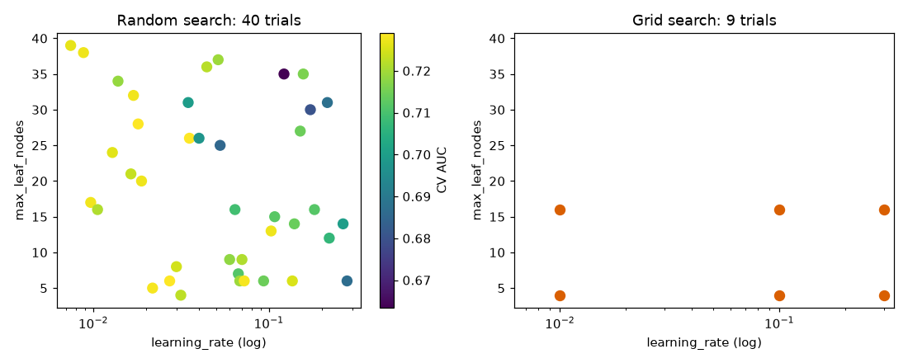
Left: each dot is one random trial; x-axis is learning rate (log scale), y-axis is the number of leaves, colour is the CV AUC (yellow is better). Right: the 9 fixed grid points in the same axes. Notice the grid reuses only 3 distinct values per axis, while random uses 40.
Honest reading: with 9 random trials we got CV 0.7288 and with the 3x3 grid 0.7286: no real difference at small budgets in this problem. The theory (Bergstra and Bengio, 2012) says random search wins when only a few hyperparameters matter, which is common, and when you add more hyperparameters. The extra 31 trials gave only 0.0002 more; the response surface here is flat near the top. Cost: the grid took 31 s on this laptop for 9 trials of 5 folds, because the 64-leaf, 300-iteration corner is slow.
The CV score by learning rate bucket shows what random search found:
learning_rate bucket trials mean CV AUC best
(0.0, 0.02] 10 0.7255 0.7290
(0.02, 0.06] 11 0.7159 0.7289
(0.06, 0.15] 11 0.7133 0.7280
(0.15, 0.4] 8 0.7004 0.7162Small rates are safer on average; the best score in each bucket up to 0.15 is similar. This is what a flat optimum looks like: many settings are almost equally good, so spending 1,000 trials is wasteful.
Problem 11.2.1 How many fits does GridSearchCV perform for 4 hyperparameters with 3, 3, 4 and 5 values and 5-fold CV, including the final refit?
| Formula | fits = (product of value counts) × folds + 1 refit. |
|---|---|
| Plug in | (3 × 3 × 4 × 5) × 5 + 1. |
| Compute | 3 × 3 = 9; 9 × 4 = 36; 36 × 5 = 180; 180 × 5 = 900; 900 + 1 = 901. |
| Answer | 901 model fits. At 2 seconds each, that is 30 minutes. Random search with n_iter=40 costs 40 × 5 + 1 = 201 fits. |
| Check | 40 trials × 5 folds = 200, plus the refit = 201. |
| Why it matters | Compute cost is your budget, in money and time; know it before you press run. |
Problem 11.2.2 A grid has 2 important and 3 unimportant hyperparameters, each at 3 values (243 trials). How many distinct values of an important hyperparameter does each method test, with the same 243 trials?
| Step 1 | The grid tests exactly 3 distinct values of each important hyperparameter. |
|---|---|
| Step 2 | Random search draws a fresh value each trial, so about 243 distinct values. |
| Answer | 3 versus about 243. When only some dimensions matter, random search explores the important ones about 80 times more finely. |
| Check | 243 / 3 = 81. |
Connection to the real job
Most teams use random search or Optuna (11.4) for the first pass, and they stop early once the curve of "best score so far" flattens. They write the search space and the seed in a config file so someone else can reproduce the run.
Applications
- Machine Learning: random search on tree models and SVM (
C,gammaon log scales). - Data Science: quick baseline tuning for a notebook or a hackathon.
- MLOps: scheduled retraining jobs reuse a stored search space.
Check yourself
- 3 values for each of 4 hyperparameters: how many grid combinations? Answer: 3⁴ = 81.
- Why can random search beat grid search? Answer: It tests many more distinct values of each hyperparameter, which matters when only a few hyperparameters are important.
- What does
refit=Truedo? Answer: It retrains the best setting on the whole training data.
11.3 Smarter Searches: Successive Halving and Bayesian Ideas
Successive halving and Hyperband
Successive halving: start many candidates on a small budget (few rows or few iterations), keep the best 1/factor, give the survivors factor times the budget, and repeat. Hyperband runs several halving schedules with different starting budgets, to protect against "slow starters" that look bad on small budgets.
hs = HalvingRandomSearchCV(HistGradientBoostingClassifier(random_state=0), dist, cv=cv,
scoring='roc_auc', random_state=0, factor=3, resource='n_samples',
min_resources=300, n_candidates=40).fit(Xtr, ytr)
print(hs.best_score_.round(4), hs.n_iterations_, hs.n_candidates_, hs.n_resources_)0.7255 3 [40, 14, 5] [300, 900, 2700]Read: round 1 trains 40 candidates on 300 rows; the best 14 (about 40 / 3) go to round 2 with 900 rows; the best 5 go to round 3 with 2,700 rows. The total training work is far lower than 40 candidates on 2,700 rows. The final score 0.7255 is close to the full random search (0.729), at a fraction of the cost. (The last score is measured on a bigger sample than the early ones, so scores across rounds are not directly comparable.)
Problem 11.3.1 Compute the rows processed by the halving run and by full random search, counting rows per candidate per round (ignore CV folds; treat cost as proportional to rows).
| Formula | cost = Σ (candidates × rows per candidate). |
|---|---|
| Plug in | Halving: 40 × 300 + 14 × 900 + 5 × 2700. Full: 40 × 2800 (all training rows, roughly 2,700 used in the last halving round). |
| Compute | Halving: 12,000 + 12,600 + 13,500 = 38,100. Full (using 2,700): 40 × 2,700 = 108,000. |
| Answer | Halving uses about 35% of the work (38,100 / 108,000 = 0.353) and lands within 0.0035 AUC of the best. |
| Check | Each round costs about the same (12,000 to 13,500), which is the design: more budget for fewer candidates. |
Bayesian optimization
Idea: treat the score as an unknown function of the hyperparameters. After every trial, fit a cheap surrogate model (often a Gaussian process, GP; a model that predicts a mean and an uncertainty for any new point). Then choose the next trial by an acquisition function that balances exploiting (try where the predicted score is high) and exploring (try where uncertainty is high). The most common one is expected improvement (EI): how much better than the best-so-far do we expect to get? Optuna's default sampler, TPE (Tree-structured Parzen Estimator), uses another trick: it models "good trials" and "bad trials" with two densities and picks points that are likely under the good one and unlikely under the bad one.
We build a tiny Bayesian optimizer to see it work. The "validation score" is an artificial smooth function with one best peak: f(x) = sin(3x) + 0.5x − 0.2x², for x between 0 and 5. Its true maximum is 1.211 at x = 0.55. We start with 4 trials and let EI choose 6 more.
from sklearn.gaussian_process import GaussianProcessRegressor
from sklearn.gaussian_process.kernels import Matern
def f(x): return np.sin(3*x) + 0.5*x - 0.2*x**2
grid_x = np.linspace(0, 5, 501)
xs = [0.4, 1.9, 3.3, 4.7]; ys = [f(v) for v in xs]
for it in range(6):
gp = GaussianProcessRegressor(Matern(length_scale=0.6, nu=2.5), alpha=1e-6,
optimizer=None, normalize_y=True).fit(np.array(xs)[:, None], ys)
mu, sd = gp.predict(grid_x[:, None], return_std=True); best = max(ys)
zz = (mu - best) / np.maximum(sd, 1e-9)
ei = (mu - best) * stats.norm.cdf(zz) + sd * stats.norm.pdf(zz) # expected improvement
xn = grid_x[ei.argmax()]; xs.append(float(xn)); ys.append(float(f(xn)))
print(it, "next x", round(float(xn), 2), "f", round(float(f(xn)), 3), "best", round(max(ys), 3))0 next x 0.09 f 0.31 best so far 1.1
1 next x 0.66 f 1.16 best so far 1.16
2 next x 0.54 f 1.21 best so far 1.21
3 next x 1.13 f 0.064 best so far 1.21
4 next x 0.57 f 1.21 best so far 1.21
5 next x 2.53 f 0.95 best so far 1.21Read it line by line. The first guess (0.09) explores the edge near the best point and is poor. The second (0.66) and third (0.54) zoom in, reaching 1.21 which equals the true maximum (1.211). Trials 3 and 5 (1.13 and 2.53) are exploration: EI sent the search to places with high uncertainty. By trial 3 we have the optimum after 7 evaluations in total. Random search with 10 evaluations got a best of 1.021 on average over 200 repeated runs, and as low as −0.048 in the worst run. (We caution: our first point 0.4 was already close to the peak, which helps; and a GP surrogate works best with few, continuous, smooth hyperparameters.)
Problem 11.3.2 Why did EI choose x = 1.13 at step 3 even though the best was already found?
| Step 1 | EI = (expected gain over the best) accounting for uncertainty. Near 0.55 the GP is already certain, so the expected gain is almost 0. |
|---|---|
| Step 2 | At x = 1.13 there are no nearby trials, so the standard deviation is large; even if the predicted mean is low, a small chance of a high score gives a positive EI. |
| Answer | It was exploring: with no knowledge about 1.13, an unlucky region could hide a better peak. Here it was not better (0.064). |
| Check | The sd term in the EI formula (μ − best)·Φ(z) + σ·φ(z) grows with uncertainty, so unexplored areas keep EI above zero. |
Optuna (not run here)
Optuna is not installed here, so this code is not run; it is the standard pattern (check the current docs for version details):
import optuna
def objective(trial):
params = dict(
learning_rate=trial.suggest_float("learning_rate", 0.005, 0.3, log=True),
max_leaf_nodes=trial.suggest_int("max_leaf_nodes", 3, 40),
min_samples_leaf=trial.suggest_int("min_samples_leaf", 10, 200),
l2_regularization=trial.suggest_float("l2_regularization", 1e-3, 10, log=True),
)
model = HistGradientBoostingClassifier(random_state=0, **params)
return cross_val_score(model, Xtr, ytr, cv=cv, scoring="roc_auc").mean()
study = optuna.create_study(direction="maximize",
sampler=optuna.samplers.TPESampler(seed=0))
study.optimize(objective, n_trials=40)
print(study.best_params, study.best_value)Optuna can also prune bad trials early (like halving), store studies in a database, and run trials in parallel.
Applications
- Deep Learning: Hyperband-style schedulers stop bad training runs after a few epochs.
- Machine Learning: Optuna with TPE is a common default for boosting models.
- Data Engineering / MLOps: studies stored in a database allow distributed tuning.
- Operations and engineering: Bayesian optimization is also used to tune expensive physical or system experiments (a factory setting, a cache size) where each test run is costly.
Check yourself
- What do the surrogate and the acquisition function each do? Answer: The surrogate predicts score and uncertainty for untried settings; the acquisition function chooses the next trial from that.
- In halving with factor 3, 27 candidates in round 1: how many in round 2? Answer: 9.
- When is plain random search a better choice than BO? Answer: When trials are cheap or the space is high-dimensional and discrete.
11.4 Honest Evaluation of Tuning: Nested CV, Over-tuning, Budgets
Over-tuning on noise
Let us test this with data that has no signal at all: 300 rows, 10 random features, random 0/1 labels. The true AUC of any model is 0.5. We try 100 random decision-tree settings and score each on one validation half.
from sklearn.tree import DecisionTreeClassifier
rng = np.random.default_rng(0)
Xn = rng.normal(size=(300, 10)); yn = rng.integers(0, 2, 300)
Xa, Xb, ya, yb = train_test_split(Xn, yn, test_size=0.5, random_state=0)
res = []
for i in range(100):
m = DecisionTreeClassifier(max_depth=int(rng.integers(1, 8)), min_samples_leaf=int(rng.integers(1, 30)),
max_features=float(rng.uniform(.2, 1)), random_state=int(rng.integers(0, 1000))).fit(Xa, ya)
res.append(roc_auc_score(yb, m.predict_proba(Xb)[:, 1]))
print("mean val AUC", np.mean(res).round(3), "best of 100", np.max(res).round(3))mean val AUC 0.477 best of 100 0.577The average trial scored 0.477 (chance). The best of 100 scored 0.577: a 7.7-point "improvement" produced by luck alone. If you reported 0.577, you would be cheating yourself. The more trials and the smaller and noisier the validation set, the bigger the lie.
Nested cross-validation
Nested CV has two loops. The inner loop (with its own CV) picks the best hyperparameters using only the outer-training rows. The outer loop scores the tuned model on outer-test rows it never saw. The average outer score estimates the quality of the whole procedure "tune then fit".
outer = StratifiedKFold(5, shuffle=True, random_state=1)
inner_scores, outer_scores = [], []
for tri, tei in outer.split(X, y):
s = RandomizedSearchCV(HistGradientBoostingClassifier(random_state=0), dist, n_iter=20,
cv=StratifiedKFold(5, shuffle=True, random_state=2), scoring='roc_auc',
random_state=0).fit(X.iloc[tri], y[tri])
inner_scores.append(s.best_score_)
outer_scores.append(roc_auc_score(y[tei], s.predict_proba(X.iloc[tei])[:, 1]))
print("inner", np.round(inner_scores, 4), np.mean(inner_scores).round(4))
print("outer", np.round(outer_scores, 4), np.mean(outer_scores).round(4))inner [0.7247 0.7333 0.7301 0.7333 0.7325] 0.7308
outer [0.7535 0.7192 0.7474 0.7244 0.7383] 0.7366The inner mean (the "best of the search", 0.7308) is the number you would quote without nested CV. The outer mean is 0.7366, and the outer folds range from 0.7192 to 0.7535. Here the outer score is not lower than the inner. That is allowed: the inner scores use less data (each inner model trains on 64% of the rows, the refit model on 80%), and an outer fold has its own noise: the spread of 0.034 across five folds is bigger than the gap of 0.006. The lesson is the spread: quote "0.737 ± 0.015 (std across outer folds)", not "0.731". With 20 trials on a flat surface, the optimism of the inner score is small here; on a noisy surface with many trials (like the noise experiment) it would be large.
Problem 11.4.1 Compute the standard deviation of the outer scores and a rough 95% interval.
| Formula | sd = √(Σ(xᵢ − mean)² / (k − 1)); interval ≈ mean ± 2 × sd / √k. |
|---|---|
| Plug in | values 0.7535, 0.7192, 0.7474, 0.7244, 0.7383; mean 0.7366. |
| Compute | deviations: 0.0169, −0.0174, 0.0108, −0.0122, 0.0017; squares: 0.000286, 0.000303, 0.000117, 0.000149, 0.000003; sum 0.000858; divide by 4: 0.0002145; sd = 0.01465. Standard error = 0.01465 / √5 = 0.00655; interval = 0.7366 ± 0.0131, i.e. 0.7235 to 0.7497. |
| Answer | The tuned procedure scores about 0.737 AUC, plausibly between 0.724 and 0.750. |
| Check | np.std(outer_scores, ddof=1) gives 0.0146. |
| Why it matters | A reported interval stops people over-reading a 0.005 difference. |
Budgeting rules
- Start with the default and a simple baseline; report both.
- Tune on a subsample first (halving does this automatically), then refit the winner on all training data.
- Stop when the best-so-far curve is flat for 10 to 20 trials.
- Do not over-tune noisy validation sets. If the CV standard deviation across folds is 0.015, differences of 0.002 are not worth chasing.
- Use the same CV folds for all trials (seeded
cvobject) so the trials are paired.
Reproducibility
| Item | How | Where it appears in the job |
|---|---|---|
| Random seeds | random_state=0 in splits, models, samplers | rerunning an experiment gets the same number |
| Environment | pinned requirements.txt or lock file | the same library versions on every machine |
| Config files | search space and fixed params stored in YAML or JSON | a reviewer sees what you tried |
| Experiment tracking | MLflow or Weights & Biases (not run here) log params, metrics, artifacts | "which run produced model v7?" |
| Data version | a dated snapshot or hash of the training table | rebuild a model from last March |
Check yourself
- In nested CV, which loop chooses hyperparameters? Answer: The inner loop.
- Why is "best of 100 trials" optimistic? Answer: The winner is partly the luckiest on that validation set.
- Name two things to log for reproducibility. Answer: seed and data version (also config, library versions).
11.5 Optimization Recap: What Training Itself Does
The derivations (gradient, momentum, Adam, learning rate schedules) are in the learner's Math PDF, Pillar 5; Chapter 2 of this document used gradient descent for linear regression. Here is only a compact experiment that shows the behaviour.
Setup
The loss is a long narrow valley: L(w) = 0.5 (w₁² + 25 w₂²). The gradient is (w₁, 25 w₂). Start at w = (4, 1). The minimum is at (0, 0) with loss 0. The curvature differs 25 times between directions, like unscaled features in regression (Chapter 2, "why scaling matters"). Plain GD must use a step small enough for the steep direction (w₂), so it crawls along the flat direction (w₁).
A = np.diag([1.0, 25.0])
def run(opt, steps=60, lr=0.03):
w = np.array([4.0, 1.0]); m = np.zeros(2); v = np.zeros(2); vel = np.zeros(2); out = []
for t in range(1, steps + 1):
g = A @ w
if opt == 'gd': w = w - lr * g
elif opt == 'mom': vel = 0.9 * vel + g; w = w - lr * vel
elif opt == 'adam':
m = 0.9*m + 0.1*g; v = 0.999*v + 0.001*g*g
mh = m/(1 - 0.9**t); vh = v/(1 - 0.999**t)
w = w - 0.3 * mh / (np.sqrt(vh) + 1e-8)
out.append(0.5 * w @ A @ w)
return out
for o in ['gd', 'mom', 'adam']:
L = run(o); print(o, "loss at step 10:", round(L[9], 4), "step 30:", round(L[29], 6), "step 60:", round(L[59], 8))
for lr in [0.01, 0.03, 0.07, 0.085]:
print("gd lr", lr, "loss@60", run('gd', lr=lr)[59])gd loss at step 10: 4.3504 step 30: 1.286453 step 60: 0.20687028
mom loss at step 10: 5.0254 step 30: 0.591473 step 60: 0.01943896
adam loss at step 10: 2.2256 step 30: 0.47766 step 60: 0.00240678
gd lr 0.01 loss@60 2.395043130498667
gd lr 0.03 loss@60 0.20687027841451988
gd lr 0.07 loss@60 0.0013214289388152583
gd lr 0.085 loss@60 17187499.822868153Read it. At step 60, plain GD with rate 0.03 has loss 0.207; momentum reaches 0.019 (10 times lower); Adam reaches 0.0024 (86 times lower). Momentum is worse early (5.03 at step 10, it overshoots and oscillates) and better later. Learning rate matters more than the optimizer: GD with 0.07 beats momentum and nearly beats Adam (0.0013), and with 0.085 it diverges: the loss explodes to 1.7 × 10⁷.
Problem 11.5.1 Find the divergence threshold for plain GD on this loss.
| Formula | For L = ½ a w², a step gives w ← w (1 − lr·a). It shrinks only if |1 − lr·a| < 1, so lr < 2/a. |
|---|---|
| Plug in | The steepest direction has a = 25. |
| Compute | 2 / 25 = 0.08. |
| Answer | GD diverges for lr above 0.08. Our test: 0.07 converges, 0.085 diverges. It matches. |
| Check | At lr = 0.085, 1 − 0.085 × 25 = −1.125, and |−1.125| > 1, so each step multiplies w₂ by 1.125 in size and flips its sign. |
| Why it matters | This is why you scale features: with the same curvature in all directions the safe step is much larger and training is faster. |
Problem 11.5.2 At the best stable rate for the flat direction, how fast does plain GD shrink w₁ per step, with lr = 0.07?
| Formula | factor per step = 1 − lr · a, with a = 1. |
|---|---|
| Plug in | 1 − 0.07 × 1. |
| Compute | 0.93 per step; after 60 steps: 0.93⁶⁰ = 0.0128, so w₁ goes from 4 to 0.051. |
| Answer | The flat direction shrinks only 7% per step, while the steep direction is already at its limit; this mismatch (a ratio of 25) is called ill-conditioning. |
| Check | Loss contribution of w₁: 0.5 × 0.051² = 0.0013, which matches the printed 0.0013. |
What to remember for tuning
| Optimizer | Idea | Typical use |
|---|---|---|
| SGD (mini-batch) | gradient from a small batch | large data; noisy but cheap |
| SGD + momentum | add a running average of past gradients | smooths zig-zag; CNN training |
| Adam / AdamW | per-parameter step from gradient averages | default for neural networks; AdamW separates weight decay |
| Learning-rate schedule | decay or warm-up the rate | most deep learning runs |
| Early stopping | stop when validation stops improving | boosting and neural networks |
Regularization tools (L1/L2, early stopping, dropout, augmentation, simpler model, more data, ensembling) were covered in Chapter 3 and reappear as hyperparameters here: l2_regularization, max_iter with early stopping, and so on.
Applications
- Deep Learning: learning rate is almost always the single most important hyperparameter.
- Machine Learning: logistic regression and linear models are fit by L-BFGS or SGD; solver choice and
max_itercan cause "did not converge" warnings. - GenAI fine-tuning: AdamW with warm-up and cosine decay is a standard recipe.
ConvergenceWarning in scikit-learn as harmless. It means the optimizer stopped early; scale the features or raise max_iter.Check yourself
- What happens when the learning rate exceeds 2/a for a curvature a? Answer: Divergence; the loss grows.
- Why does scaling help? Answer: It makes the curvature similar in all directions, so one learning rate suits all.
- Which is more often the first thing to tune in deep learning: batch size or learning rate? Answer: Learning rate.
11.6 AutoML: What It Does and When to Use It
What AutoML tools do
- Preprocess data (impute, encode).
- Try several model families (linear, trees, boosting, sometimes neural nets).
- Search hyperparameters (Bayesian or halving search with a time budget).
- Build an ensemble (stack or blend) of the best models.
Tools (not run here; not installed, API changes by version)
| Tool | Style | Note |
|---|---|---|
| AutoGluon | stacks many models with multi-layer ensembles | strong tabular baselines, heavy on compute |
| FLAML | cost-aware, lightweight search with a time budget | good when the time budget is small |
| H2O AutoML | Java-based, cluster-friendly | leaderboard and stacked ensembles |
| auto-sklearn | scikit-learn pipelines with meta-learning | Linux-focused |
A typical use looks like this (FLAML, not run here; check the docs for the current API):
from flaml import AutoML
automl = AutoML()
automl.fit(X_train=Xtr, y_train=ytr, task="classification", metric="roc_auc", time_budget=60)
print(automl.best_estimator, automl.best_config)How to use AutoML well
- Use it as a baseline and an upper bound: "AutoML got 0.74, my hand-built model got 0.73, so my feature work is close to the ceiling for this data."
- Always run the Chapter 10 sanity tests on its winner. An AutoML tool cannot know that
days_since_cancel_requestis leaked. - Give it the same validation scheme you would use yourself (group or time split, not random).
- Remember the cost: ensembles are slow at prediction time and hard to explain. Many production teams then distil the answer into a simpler model.
Real-world mapping
| Item | Example | Where it appears |
|---|---|---|
| Time budget | 60 seconds to 1 hour | a notebook baseline before a project kickoff |
| Leaderboard | list of models with CV scores | a table in the model-selection document |
| Ensemble | stack of 5 boosted models | high-accuracy, high-latency solution |
Check yourself
- Name one good use of AutoML. Answer: A quick baseline or an upper bound to compare your own model against.
- What must you still check on an AutoML winner? Answer: Leakage, validation design, latency and explainability.
- Why can an AutoML ensemble be a problem in production? Answer: It is slow, large, and difficult to explain and maintain.
Chapter recap
- Parameters are learned; hyperparameters are set by you before training and must be searched.
- Sample scale-like hyperparameters (learning rate, L2) on a log scale.
- Grid search costs the product of value counts; random search tests many more distinct values and is the better default as dimensions grow.
- Tuning gave a real gain here (CV AUC 0.6827 to 0.729), but the top of the surface was flat: 9 trials were nearly as good as 40.
- Successive halving used about a third of the work and got within 0.0035 AUC; Bayesian optimization (surrogate + expected improvement) helps when each trial is expensive.
- The best of many trials is biased upward (noise data: 0.477 average, 0.577 best of 100); use a test set touched once or nested CV, and report the spread.
- Optimization: learning rate matters most; GD diverges when lr > 2/curvature; momentum and Adam help on ill-conditioned problems; scaling features helps all.
- AutoML is a baseline and a ceiling check, not a substitute for sanity tests and good validation.
| Tool | Command / formula |
|---|---|
| Grid | GridSearchCV(model, {param: [values]}, cv=cv, scoring=...) |
| Random | RandomizedSearchCV(model, {param: stats.loguniform(a, b)}, n_iter=40, ...) |
| Halving | HalvingRandomSearchCV(..., factor=3, resource='n_samples') (needs enable_halving_search_cv) |
| Grid fits | product(value counts) × folds + 1 |
| Expected improvement | (μ − best)·Φ(z) + σ·φ(z), z = (μ − best)/σ |
| GD stability | lr < 2 / curvature |
| Nested CV | outer loop scores; inner loop (a search object) tunes |
Practice set
Problem 11.P.1 (easy) Are max_depth and the leaf values of a tree parameters or hyperparameters?
Answer: max_depth is a hyperparameter; leaf values are parameters.
Problem 11.P.2 (easy) A grid has 4 values of C and 5 values of gamma, with 3-fold CV. How many fits (no refit)?
Answer: 4 × 5 × 3 = 60.
Problem 11.P.3 (easy) You sample the learning rate from uniform(0.001, 0.1). What is wrong?
Answer: About 90% of samples fall above 0.01, so small rates are almost never tried. Use loguniform(0.001, 0.1).
Problem 11.P.4 (what is the output?) stats.loguniform(1, 100) gives a median sample of about?
Answer: The median of a log-uniform is the geometric mean: √(1 × 100) = 10.
Problem 11.P.5 (medium) Successive halving with factor 2 starts with 64 candidates at 100 rows. List candidates and rows per round until one candidate remains.
Answer: 64 at 100; 32 at 200; 16 at 400; 8 at 800; 4 at 1,600; 2 at 3,200; 1 at 6,400. Each round costs 6,400 rows in total (64 × 100 = 32 × 200 = ...).
Problem 11.P.6 (medium) GD on L = ½ · 4 · w² with lr = 0.6. Does it converge? Compute w after 2 steps from w = 1.
Answer: Factor per step = 1 − 0.6 × 4 = −1.4; |−1.4| > 1, so it diverges. w₁ = −1.4, w₂ = 1.96.
Problem 11.P.7 (find the bug) RandomizedSearchCV(...).fit(X, y) is run on the full dataset and then roc_auc_score(y, search.predict_proba(X)[:, 1]) is printed as the final result. What is wrong?
Answer: The model was tuned and fitted on all of those rows, so the score is measured on training data. Hold out a test set (or use nested CV).
Problem 11.P.8 (scenario) You have 20 trials of tuning, and the best CV AUC is 0.812 with a fold standard deviation of 0.02. A colleague's setting scored 0.815. Which do you choose?
Answer: They are within noise (0.003 is much less than 0.02). Choose the simpler, cheaper or more stable one.
Problem 11.P.9 (interview) "Why is random search often better than grid search?"
Answer: Usually only a few hyperparameters matter. A grid tests only a few distinct values of each; random search tests a new value of every hyperparameter on every trial, so it explores the important ones more finely for the same budget. It also lets you choose any budget.
Problem 11.P.10 (interview) "How do you get an honest performance estimate when you tune hyperparameters?"
Answer: Keep a test set untouched until the end, or use nested CV: the inner loop tunes, the outer loop scores. Report the mean and spread over the outer folds, and compare with an untuned default and a simple baseline.
Prompt pack
You are my patient, practical professor. I am a working professional moving into data roles. Teach me the difference between parameters and hyperparameters, and how grid search and random search work, using a small scikit-learn example with a gradient boosting or random forest model. Explain why random search often wins, why learning rates need a log scale, and how to count the number of model fits. Check my understanding with three questions, one at a time.
You are my patient, practical professor. I am a working professional moving into data roles. Explain Bayesian optimization (surrogate model, acquisition function, expected improvement, and the idea behind TPE in Optuna) in plain English with a tiny one-dimensional example computed step by step. Then give me 6 graded exercises about when to use random search, successive halving, or Bayesian optimization. Do not show answers until I ask.
You are my patient, practical professor. I am a working professional moving into data roles. Teach me honest evaluation of tuned models: why the best-of-many-trials score is optimistic, how nested cross-validation works, and how to report a score with a spread. Use a numeric example with five outer-fold scores and compute the standard deviation and an interval with me, line by line. Then review my own tuning plan [PASTE HERE] and point out leakage or over-tuning risks.
You are my patient, practical professor. I am a working professional moving into data roles and learning ML optimization. Review gradient descent, momentum and Adam on a simple two-variable quadratic loss with a long narrow valley. Show why too large a learning rate diverges (the 2/curvature rule) and why feature scaling helps. Compute two or three steps by hand with me, then give me 8 graded exercises (easy to hard), with solutions at the end.
You are my patient, practical professor. I am a working professional moving into data roles and preparing for ML interviews. Run a mock interview on hyperparameter tuning and AutoML: grid versus random search, Bayesian optimization, successive halving, nested CV, over-tuning, reproducibility, and when to trust AutoML. Ask one question at a time, wait for my answer, then correct me kindly and give a short model answer in simple English. Ten questions, increasing difficulty.
Textbook datasets are clean, balanced, big and fully labelled. Real data is none of these. A bank has 1 fraudulent payment in 100. A hospital has 60 patients in a rare-disease study. A survey leaves the income field blank for one customer in four. A delivery table has 800 postcodes, most with only a handful of rows. Last summer's sales data does not describe this summer. A large part of applied ML skill is knowing what to do in each of these situations, and what not to do (for example, fixing imbalance in a way that quietly leaks test data). By the end of this chapter you will be able to pick the right metric and fix for imbalance, trust (or distrust) a score from 60 rows, handle three kinds of missing data, encode a column with 800 categories without leaking, and detect that the world has changed.
Each section uses its own small dataset with a fixed seed and real output (numpy, pandas, scikit-learn 1.9.1, scipy). The learner's Math PDF covers probability and loss functions; Chapter 10 covered leakage and slicing, Chapter 11 tuning. Two libraries we would normally use, imbalanced-learn (SMOTE) and cleanlab, are not installed here, so their code is described and marked "not run here".
12.1 Imbalanced Classes
The data
20,000 payments, 10 numeric features, about 1.3% fraud (make_classification with seed 0). Split 70/30 with stratification (the same fraud rate in both parts). Test set: 6,000 rows with 78 frauds.
import numpy as np
from sklearn.datasets import make_classification
from sklearn.model_selection import train_test_split
from sklearn.linear_model import LogisticRegression
from sklearn.preprocessing import StandardScaler
from sklearn.pipeline import make_pipeline
from sklearn.dummy import DummyClassifier
from sklearn.metrics import *
X, y = make_classification(n_samples=20000, n_features=10, n_informative=5, n_redundant=0,
weights=[0.99], flip_y=0.005, class_sep=0.8, random_state=0)
Xtr, Xte, ytr, yte = train_test_split(X, y, test_size=0.3, random_state=0, stratify=y)
print("positives train/test", ytr.sum(), yte.sum(), "rate", y.mean().round(4))
d = DummyClassifier(strategy='most_frequent').fit(Xtr, ytr)
print("always-negative acc", round(accuracy_score(yte, d.predict(Xte)), 4),
"recall", recall_score(yte, d.predict(Xte)))positives train/test 182 78 rate 0.013
always-negative acc 0.987 recall 0.0"Always say not fraud" is 98.7% accurate and catches nothing. Any model must be judged against this.
Words you need
| Word | Meaning |
|---|---|
| Precision | Of the items the model flags, the share that are truly positive: TP / (TP + FP) |
| Recall | Of all truly positive items, the share the model flags: TP / (TP + FN) |
| PR-AUC | Area under the precision-recall curve (scikit-learn: average_precision_score); focuses on the positive class |
| ROC-AUC | Ranking quality; hardly changes with the class balance, so it can look good even when precision is poor |
| Class weight | Making each rare-class row count more in the loss |
| Resampling | Changing the training set: copy rare rows (oversample) or drop common rows (undersample) |
| Threshold | The probability above which we say "positive" (default 0.5) |
Step 1: the right metrics and a plain model
def rep(name, m, thr=0.5, p=None):
p = m.predict_proba(Xte)[:, 1] if p is None else p; pr = (p >= thr).astype(int)
print(f"{name:22s} acc {accuracy_score(yte,pr):.4f} prec {precision_score(yte,pr,zero_division=0):.3f} "
f"rec {recall_score(yte,pr):.3f} ROC {roc_auc_score(yte,p):.3f} PR {average_precision_score(yte,p):.3f} meanp {p.mean():.4f}")
mk = lambda **k: make_pipeline(StandardScaler(), LogisticRegression(max_iter=1000, **k))
lr = mk().fit(Xtr, ytr); rep("plain thr0.5", lr)plain thr0.5 acc 0.9908 prec 0.960 rec 0.308 ROC 0.830 PR 0.534 meanp 0.0134Problem 12.1.1 Recover the confusion matrix from these numbers: 78 true frauds, recall 0.308, precision 0.960, 6,000 rows.
| Formula | recall = TP / 78, precision = TP / (TP + FP). |
|---|---|
| Plug in | TP = 0.308 × 78 = 24.0. Then 0.960 = 24 / (24 + FP), so 24 + FP = 25. |
| Compute | FP = 1, FN = 78 − 24 = 54, TN = 5,922 − 1 = 5,921 (non-frauds are 6,000 − 78 = 5,922). |
| Answer | TP 24, FP 1, FN 54, TN 5,921. The model is almost never wrong when it speaks (24 of 25 flags are real), but it stays silent on 54 of 78 frauds. |
| Check | Accuracy = (24 + 5,921) / 6,000 = 0.9908, matching the printed 0.9908. |
The mean predicted probability, 0.0134, equals the fraud rate (1.3%). The plain model is calibrated: its probabilities match reality. Keep that in mind.
Step 2: threshold moving
The default 0.5 is arbitrary. Choose a threshold from training predictions made by cross-validation (never from the test set), maximising F1 (2·P·R / (P + R)).
from sklearn.model_selection import cross_val_predict, StratifiedKFold
pc = cross_val_predict(mk(), Xtr, ytr, cv=StratifiedKFold(5, shuffle=True, random_state=0),
method='predict_proba')[:, 1]
ps, rs, ts = precision_recall_curve(ytr, pc); f1 = 2*ps*rs/(ps+rs+1e-12)
t = ts[np.argmax(f1[:-1])]; print("best F1 thr from CV", round(t, 4))
rep("threshold moved", lr, thr=t)best F1 thr from CV 0.2112
threshold moved acc 0.9912 prec 0.791 rec 0.436 ROC 0.830 PR 0.534 meanp 0.0134Recall rose from 0.308 to 0.436 (34 of 78 frauds) and precision fell from 0.960 to 0.791 (34 of 43 flags). ROC and PR AUC did not change at all, because the ranking is the same; only the cut changed. This is the cheapest fix and often enough.
Step 3: class weights and resampling
lw = mk(class_weight='balanced').fit(Xtr, ytr); rep("class_weight balanced", lw)
rng = np.random.default_rng(0); pos = np.where(ytr == 1)[0]; neg = np.where(ytr == 0)[0]
idx = np.concatenate([neg, rng.choice(pos, len(neg), replace=True)]) # oversample positives
lo = mk().fit(Xtr[idx], ytr[idx]); rep("random oversample", lo)
idx = np.concatenate([pos, rng.choice(neg, len(pos)*10, replace=False)]) # undersample negatives 10:1
lu = mk().fit(Xtr[idx], ytr[idx]); rep("undersample 10:1", lu)class_weight balanced acc 0.8227 prec 0.055 rec 0.782 ROC 0.857 PR 0.470 meanp 0.3139
random oversample acc 0.8237 prec 0.055 rec 0.782 ROC 0.855 PR 0.474 meanp 0.3145
undersample 10:1 acc 0.9897 prec 0.633 rec 0.487 ROC 0.847 PR 0.513 meanp 0.0629Read the table carefully. class_weight='balanced' and random oversampling give almost the same result (they are mathematically near-identical for this model): recall jumps to 0.782 (61 of 78), but precision collapses to 0.055: about 1,100 flags for 61 real frauds (61 / 0.055 ≈ 1,109), so more than 1,000 false alarms. Accuracy fell to 82%. Note the PR-AUC went down (0.534 to 0.470): reweighting did not make the model rank better, it only moved the operating point. The mean predicted probability is 0.314 where reality is 0.013: the probabilities are now wrong.
Problem 12.1.2 Fix the probabilities after undersampling. The model was trained with all 182 frauds and 1,820 non-frauds, out of 13,818 non-frauds in the training set. It says p = 0.50 for a payment. What is the true probability?
| Formula | odds_true = odds_model × (kept negatives / all negatives), where odds = p / (1 − p), then p = odds / (1 + odds). |
|---|---|
| Plug in | kept fraction w = 1,820 / 13,818 = 0.1317. odds_model = 0.5 / 0.5 = 1. |
| Compute | odds_true = 1 × 0.1317 = 0.1317; p = 0.1317 / 1.1317 = 0.1164. |
| Answer | The real fraud probability is about 11.6%, not 50%. |
| Check | In the code, applying this to all test rows brings the mean predicted probability from 0.0629 to 0.0120, close to the true 0.013. |
| Why it matters | If you use probabilities for money decisions (expected loss = probability × amount), an uncorrected resampled model overstates risk by a large factor. |
w = (len(pos)*10) / len(neg); pu = lu.predict_proba(Xte)[:, 1]
pcor = w*pu / (w*pu + (1 - pu)); rep("undersample corrected", lu, p=pcor)
pw = lw.predict_proba(Xte)[:, 1]; w2 = len(pos)/len(neg); pw2 = w2*pw/(w2*pw + (1 - pw))
for nm, pp in [('plain', lr.predict_proba(Xte)[:, 1]), ('class_weight', pw), ('class_weight corrected', pw2)]:
print(nm, 'brier', round(brier_score_loss(yte, pp), 4))undersample corrected acc 0.9895 prec 0.941 rec 0.205 ROC 0.847 PR 0.513 meanp 0.0120
plain brier 0.0082
class_weight brier 0.1334
class_weight corrected brier 0.0107The Brier score (mean squared error of the probabilities; lower is better) shows the damage: 0.0082 for the plain model, 0.1334 after weighting, and 0.0107 after the correction. Note the corrected model at threshold 0.5 now has low recall again; the correction restores honest probabilities, and you then choose a threshold by cost.
Step 4: the leak that fools everyone
Oversampling copies rows. If you oversample before cross-validation, the copies land in both training and validation folds, and the model "predicts" rows it has seen.
from sklearn.ensemble import RandomForestClassifier
from sklearn.model_selection import cross_val_score
Xo = np.vstack([Xtr, Xtr[ytr == 1].repeat(9, axis=0)])
yo = np.concatenate([ytr, np.ones((ytr == 1).sum()*9, int)])
c5 = StratifiedKFold(5, shuffle=True, random_state=0)
bad = cross_val_score(RandomForestClassifier(100, random_state=0, n_jobs=-1), Xo, yo, cv=c5, scoring='average_precision')
good = cross_val_score(RandomForestClassifier(100, random_state=0, n_jobs=-1), Xtr, ytr, cv=c5, scoring='average_precision')
print("oversample BEFORE cv PR-AUC", bad.mean().round(3), "honest cv PR-AUC", good.mean().round(3))oversample BEFORE cv PR-AUC 1.0 honest cv PR-AUC 0.512A PR-AUC of 1.0 against an honest 0.512: pure leakage. The rule: resample only the training part of each fold, ideally inside a pipeline (the imbalanced-learn library has a pipeline that does this; not run here). SMOTE (Synthetic Minority Over-sampling Technique) makes new rare rows by interpolating between a rare row and one of its nearest rare neighbours; the same rule applies, and it can create unrealistic points when classes overlap. In many tabular problems, plain class weights or threshold moving work as well.
Which fix, when
| Situation | First choice |
|---|---|
| You only need a ranked list (top 100 to investigate) | Do nothing; evaluate with PR-AUC and precision at 100 |
| You need a yes/no decision | Train normally, move the threshold by cost |
| The model ignores the rare class (trees, boosting) | Class weights (scale_pos_weight in XGBoost) |
| Training is too slow with a huge majority class | Undersample, then correct the probabilities |
| Extremely rare (1 in 100,000), no labels | An anomaly-detection method instead of classification |
| You use probabilities for expected cost | Calibrate after any resampling |
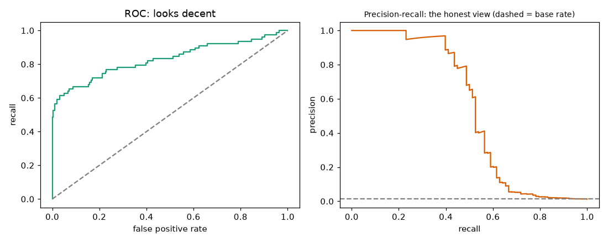
Left: ROC curve, x-axis false positive rate, y-axis recall; it bends nicely towards the top-left corner. Right: precision-recall curve, x-axis recall, y-axis precision; the dashed line at 0.013 is what a random model would score. At recall 0.5 the precision is far below 1. The ROC plot hides this because the false positive rate divides by the huge number of negatives.
Problem 12.1.3 Recall at fixed precision. The business accepts that at least 30% of flagged payments must be real fraud. What recall does the plain model reach on the test set?
ps, rs, ts = precision_recall_curve(yte, lr.predict_proba(Xte)[:, 1])
print("recall at precision>=0.30:", rs[ps >= 0.30].max().round(3))recall at precision>=0.30: 0.564- Step 1 Walk along the PR curve; keep points with precision at least 0.30.
- Step 2 Take the largest recall among them.
- Answer 56.4% of frauds (44 of 78) can be caught while at least 30% of the flags are real.
- Check 0.564 × 78 = 44.0, an integer, as it must be.
- Why it matters "Recall at a fixed precision" turns a vague PR curve into a number a manager can agree to.
Applications
- Data Science: fraud, churn, defect detection, disease screening.
- Machine Learning:
class_weight,scale_pos_weight, focal loss for deep models. - Healthcare: rare-disease screening, where recall is tuned to clinical cost.
- Operations: predictive maintenance, where failures are rare and false alarms cost technician hours.
Check yourself
- 2 in 1,000 are positive. What accuracy does "always negative" get? Answer: 99.8%.
- Does moving the threshold change ROC-AUC? Answer: No; it only changes the operating point.
- Why calibrate after resampling? Answer: Resampling changes the class ratio the model sees, so its probabilities no longer match reality.
12.2 Small Data, Noisy Labels, and More Features Than Rows
Small data: the score itself is noisy
60 rows, 5 features, two features carry signal. We also generate 5,000 fresh rows from the same recipe as a "big test set", something you never have in real life but which reveals the truth.
from sklearn.model_selection import RepeatedStratifiedKFold
rng = np.random.default_rng(1)
n = 60; Xs = rng.normal(size=(n, 5)); ys = (Xs[:, 0] + 0.8*Xs[:, 1] + rng.normal(0, 1, n) > 0).astype(int)
Xs_t = rng.normal(size=(5000, 5)); ys_t = (Xs_t[:, 0] + 0.8*Xs_t[:, 1] + rng.normal(0, 1, 5000) > 0).astype(int)
for nm, m in [('logreg', mk()), ('forest', RandomForestClassifier(200, random_state=0))]:
m.fit(Xs, ys)
cvv = cross_val_score(m, Xs, ys, cv=RepeatedStratifiedKFold(n_splits=5, n_repeats=20, random_state=0), scoring='roc_auc')
print(nm, "repeated-cv", cvv.mean().round(3), "+-", cvv.std().round(3),
"big-test", round(roc_auc_score(ys_t, m.predict_proba(Xs_t)[:, 1]), 3),
"train", round(roc_auc_score(ys, m.predict_proba(Xs)[:, 1]), 3))
single = [cross_val_score(mk(), Xs, ys, cv=StratifiedKFold(5, shuffle=True, random_state=s), scoring='roc_auc').mean() for s in range(10)]
print("single 5-fold across 10 seeds", np.round(single, 3), "range", round(max(single) - min(single), 3))small n=60 logreg repeated-cv 0.813 +- 0.104 big-test 0.824 train 0.869
small n=60 forest repeated-cv 0.714 +- 0.146 big-test 0.775 train 1.0
single 5-fold across 10 seeds [0.808 0.797 0.77 0.803 0.821 0.832 0.813 0.745 0.765 0.804] range 0.087Read it.
- The simple logistic regression has repeated-CV AUC 0.813, and the big test confirms 0.824. Repeated CV (100 scores) was an honest guide.
- The forest memorises: training AUC 1.0, but 0.775 on new data.
- A single 5-fold CV changes by up to 0.087 AUC (0.745 to 0.832) just by changing the shuffle seed. With 60 rows, a single CV number is partly luck. Use repeated CV and report the spread (± 0.104 per fold).
Problem 12.2.1 Why does the standard deviation of the 100 fold scores (0.104) overstate the uncertainty of the mean score?
| Formula | Standard error of a mean = sd / √(number of scores) for independent scores. |
|---|---|
| Plug in | 0.104 / √100 = 0.0104. |
| Compute | The mean is therefore known to about ± 0.01 if the scores were independent. They are not (the folds overlap), so the true uncertainty is larger, but still far below 0.104. |
| Answer | The per-fold sd (0.104) says how much one 12-row test fold swings. The mean over many repeats is more stable, but it is still estimated from the same 60 rows, so it cannot be more accurate than those 60 rows allow. |
| Check | Single 5-fold means across seeds ranged 0.745 to 0.832, i.e. about ± 0.04, which is between the two numbers. |
| Why it matters | Know which uncertainty you are quoting: fold-to-fold swing, estimation error of the mean, or error from having only 60 rows. |
What to do with small data
- Prefer simple, regularized models (Chapter 3), and strong baselines.
- Use repeated or leave-one-out CV; report spreads.
- Use domain knowledge to build a few strong features rather than many weak ones.
- Reuse knowledge: transfer learning, pretrained embeddings, data augmentation, or Bayesian priors.
- Collect more data if you can (check the learning curve, Chapter 10.2).
Noisy labels
Labels are noisy when humans mislabel, systems log wrong values, or the outcome is truly random. We use a clean problem (3,000 rows) and then flip a share of the training labels at random; the test labels stay clean.
from sklearn.tree import DecisionTreeClassifier
Xn, yn = make_classification(n_samples=3000, n_features=10, n_informative=5, random_state=0, class_sep=1.0, flip_y=0)
Xa, Xb, ya, yb = train_test_split(Xn, yn, test_size=0.4, random_state=0)
for noise in [0, 0.2, 0.4]:
r = np.random.default_rng(0); yf = np.where(r.random(len(ya)) < noise, 1 - ya, ya); out = []
for nm, m in [('logreg', mk()), ('deep tree', DecisionTreeClassifier(random_state=0)),
('forest leaf10', RandomForestClassifier(200, min_samples_leaf=10, random_state=0, n_jobs=-1))]:
m.fit(Xa, yf); out.append(f"{nm} {accuracy_score(yb, m.predict(Xb)):.3f}")
print("noise", noise, out)noise 0 ['logreg 0.876', 'deep tree 0.884', 'forest leaf10 0.903']
noise 0.2 ['logreg 0.872', 'deep tree 0.718', 'forest leaf10 0.913']
noise 0.4 ['logreg 0.858', 'deep tree 0.591', 'forest leaf10 0.802']Read: the unpruned deep tree is destroyed by label noise (0.884 to 0.718 to 0.591), because it memorises every wrong label. Logistic regression barely moves (0.876 to 0.858). The forest with min_samples_leaf=10 stays strong until noise is very high. Models that average (linear models, forests with large leaves, strong regularization) tolerate noise; models that memorise do not. Other defences are robust losses (for example MAE or Huber for regression), label smoothing, and cleaning.
Label cleaning by hand (the idea behind cleanlab): train with cross-validation, then look at rows where the out-of-fold prediction strongly disagrees with the label.
from sklearn.model_selection import cross_val_predict
r = np.random.default_rng(0); yf = np.where(r.random(len(ya)) < 0.2, 1 - ya, ya); flipped = (yf != ya)
oof = cross_val_predict(mk(), Xa, yf, cv=5, method='predict_proba')[:, 1]
top = np.argsort(-np.abs(oof - yf))[:100]
print("flagged top100: truly flipped", flipped[top].sum(), "base rate", flipped.mean().round(3))flagged top100: truly flipped 94 base rate 0.202Of the 100 most "suspicious" rows, 94 really had flipped labels, against a base rate of 20%. A human reviewer who checks 100 rows instead of 1,800 finds 94 errors. cleanlab (confident learning) does this more carefully; not run here.
More features than rows (p ≫ n)
60 rows, 500 features, only 3 matter. With 500 columns and 60 rows, a model can fit the training labels perfectly with pure noise.
rng = np.random.default_rng(2); n, p_ = 60, 500
Xh = rng.normal(size=(n, p_)); yh = (Xh[:, 0] + Xh[:, 1] - Xh[:, 2] + rng.normal(0, 0.5, n) > 0).astype(int)
Xh_t = rng.normal(size=(5000, p_)); yh_t = (Xh_t[:, 0] + Xh_t[:, 1] - Xh_t[:, 2] + rng.normal(0, 0.5, 5000) > 0).astype(int)
for nm, m in [('weak reg C=1e6', LogisticRegression(C=1e6, max_iter=5000)),
('L2 C=0.05', LogisticRegression(C=0.05, max_iter=5000)),
('L1 C=0.3', LogisticRegression(penalty='l1', solver='liblinear', C=0.3))]:
m.fit(Xh, yh); print(nm, "train acc", round(m.score(Xh, yh), 3), "test acc", round(m.score(Xh_t, yh_t), 3),
"nonzero", int((m.coef_ != 0).sum()))weak reg C=1e6 train acc 1.0 test acc 0.602 nonzero 500
L2 C=0.05 train acc 1.0 test acc 0.603 nonzero 500
L1 C=0.3 train acc 1.0 test acc 0.862 nonzero 19All three models reach 100% training accuracy. Test accuracy: 0.602 for the two dense models (nearly coin-flip: they spread weight over 500 noise columns), but 0.862 for the L1 model, which keeps only 19 non-zero weights and so finds the real signal. L1 (Chapter 3) works as a feature selector. For p ≫ n, use regularization (especially L1 or elastic net), feature selection inside the CV loop, or dimensionality reduction (Chapter 13).
Applications
- Healthcare and genomics: thousands of measurements for under 100 patients.
- Industrial ML: a new machine with 80 labelled failures.
- Surveys and research: small samples where the spread matters more than the mean.
- Annotation projects: noisy crowd labels, cleaned by consensus or confident learning.
Check yourself
- With 60 rows, why is a forest with training score 1.0 a warning? Answer: It memorised the rows; the honest score is lower (here 0.775).
- Which handles label noise better, a deep unpruned tree or logistic regression? Answer: Logistic regression.
- Why is L1 useful when p ≫ n? Answer: It sets most weights to zero, which acts as feature selection.
12.3 Missing Data and Messy Features
The three mechanisms
| Name | Meaning | Example | Consequence |
|---|---|---|---|
| MCAR (missing completely at random) | Missingness is unrelated to anything | A random sensor dropout | Dropping rows is unbiased (but wastes data) |
| MAR (missing at random) | Missingness depends on other observed columns | Older customers skip the income field | Fixable by using the other columns |
| MNAR (missing not at random) | Missingness depends on the missing value itself | High earners hide their income | Cannot be fully fixed from the data; model the process or add an indicator |
The data
5,000 shop customers: age, income (rises with age) and spend (monthly spend, the target). We then hide income in three ways.
import pandas as pd
rng = np.random.default_rng(0); n = 5000
age = rng.integers(20, 70, n); income = np.exp(rng.normal(10.5, 0.4, n)) + 800*(age - 20)
spend = 0.02*income + 30*np.sin(age/10) + rng.normal(0, 200, n)
df = pd.DataFrame(dict(age=age, income=income, spend=spend))
def make_missing(kind):
d = df.copy(); r = np.random.default_rng(1)
if kind == 'MCAR': m = r.random(n) < 0.3
elif kind == 'MAR': m = r.random(n) < np.where(d.age > 50, 0.55, 0.05)
else: m = r.random(n) < 1/(1 + np.exp(-(d.income - 78000)/6000))
d.loc[m, 'income'] = np.nan; return d, m
for kind in ['MCAR', 'MAR', 'MNAR']:
d, m = make_missing(kind)
print(kind, "missing", m.mean().round(3), "| true mean", df.income.mean().round(0),
"| mean of observed", d.income.mean().round(0), "| true mean of missing rows", df.income[m].mean().round(0))MCAR missing 0.304 | true mean income of all 59208.0 | mean of observed 59001.0 | true mean of missing rows 59681.0
MAR missing 0.241 | true mean income of all 59208.0 | mean of observed 56046.0 | true mean of missing rows 69143.0
MNAR missing 0.194 | true mean income of all 59208.0 | mean of observed 52592.0 | true mean of missing rows 86692.0Read it. Under MCAR, the observed mean (59,001) is close to the truth (59,208): the missing rows look like the rest. Under MAR, the observed mean is 56,046 (3,162 too low) because the missing rows are older and richer. Under MNAR, the observed mean is 52,592 (6,616 too low), and the people with a blank earn on average 86,692. Simple averaging of what you see misleads whenever missingness is not random.
Problem 12.3.1 Compute the bias of the observed mean under MAR in percent.
| Formula | bias % = (observed − true) / true × 100. |
|---|---|
| Plug in | (56,046 − 59,208) / 59,208 × 100. |
| Compute | −3,162 / 59,208 = −0.0534; × 100 = −5.3. |
| Answer | The observed mean income is 5.3% too low. Filling blanks with this mean would put a too-low value on exactly the customers who are richer than average. |
| Check | Missing share 24.1% at a mean of 69,143 and observed share 75.9% at 56,046: 0.241 × 69,143 + 0.759 × 56,046 = 16,664 + 42,538 = 59,202, which matches 59,208 within rounding. |
Imputation methods compared (MAR case)
Imputation means filling a missing value with a guess. Options: a constant (mean, median, most common), KNN (average of the most similar rows), iterative / MICE (predict each column from the others, repeating), a missing indicator (an extra 0/1 column saying "this was blank"), or a model that handles NaN natively (histogram gradient boosting sends missing values down the better branch of each split).
from sklearn.impute import SimpleImputer, KNNImputer
from sklearn.experimental import enable_iterative_imputer
from sklearn.impute import IterativeImputer
from sklearn.linear_model import LinearRegression
from sklearn.ensemble import HistGradientBoostingRegressor
from sklearn.compose import ColumnTransformer
from sklearn.metrics import mean_squared_error
d, m = make_missing('MAR'); tr, te = train_test_split(np.arange(n), test_size=0.3, random_state=0)
Xd = d[['age', 'income']]
def fitscore(pipe):
pipe.fit(Xd.iloc[tr], d.spend.iloc[tr]); return mean_squared_error(d.spend.iloc[te], pipe.predict(Xd.iloc[te]))**0.5
print("baseline sd of spend", d.spend.iloc[te].std().round(1))
print("oracle (no missing) RMSE", round(mean_squared_error(df.spend.iloc[te], LinearRegression().fit(df[['age','income']].iloc[tr], df.spend.iloc[tr]).predict(df[['age','income']].iloc[te]))**0.5, 1))
print("mean impute", round(fitscore(make_pipeline(SimpleImputer(strategy='mean'), LinearRegression())), 1))
print("mean impute + indicator", round(fitscore(make_pipeline(ColumnTransformer([('i', SimpleImputer(strategy='mean', add_indicator=True), ['age', 'income'])]), LinearRegression())), 1))
print("KNN impute", round(fitscore(make_pipeline(StandardScaler(), KNNImputer(n_neighbors=10), LinearRegression())), 1))
print("iterative impute", round(fitscore(make_pipeline(IterativeImputer(random_state=0, max_iter=10), LinearRegression())), 1))
print("HistGB native NaN", round(fitscore(HistGradientBoostingRegressor(random_state=0, max_iter=100, learning_rate=0.05)), 1))baseline sd of spend 448.1
oracle (no missing) RMSE 198.8
mean impute 278.9
mean impute + indicator 267.9
KNN impute 255.9
iterative impute 254.2
HistGB native NaN 260.5RMSE is the typical error in currency units; lower is better. With no missing values, a linear model reaches 198.8. With 24% of the income field blank, mean imputation costs 80 units of error (278.9). The indicator helps a little (267.9). KNN, iterative imputation and the native-NaN boosting model all land around 254 to 261, recovering about 25 of the lost 80 units. No method recovers the full loss: information that was never recorded is gone. Dropping rows with missing income is no better: it keeps 2,636 of 3,500 training rows and cannot make a prediction for the customers who matter most (those with blanks) at serving time.
Problem 12.3.2 How much of the damage did the best imputation recover?
| Formula | recovered share = (mean-impute error − best error) / (mean-impute error − oracle error). |
|---|---|
| Plug in | (278.9 − 254.2) / (278.9 − 198.8). |
| Compute | 24.7 / 80.1 = 0.308. |
| Answer | Iterative imputation recovered about 31% of the loss from using mean imputation. |
| Check | 198.8 + 0.692 × 80.1 = 254.2. |
| Why it matters | Imputation reduces harm but never replaces data collection; fix the form or the sensor when you can. |
Rules for missing data
- Never impute with test data. Put the imputer inside a
Pipelineso it is fit on training rows only (Chapter 10 on leakage). - Add a missing-indicator when the blank itself may carry signal (MNAR).
- Report the missing rate per column and per segment; a column 60% blank may be better dropped.
- At serving time the pipeline needs the same handling for blanks, including blanks in columns that had none in training.
- Mixed types (numbers, categories, text) are handled with
ColumnTransformer: numeric columns get imputer + scaler, categorical columns get imputer + encoder, text gets a vectorizer. One pipeline, onefit, onepredict.
from sklearn.preprocessing import OneHotEncoder
pre = ColumnTransformer([
('num', make_pipeline(SimpleImputer(strategy='median'), StandardScaler()), ['age', 'income']),
('cat', make_pipeline(SimpleImputer(strategy='most_frequent'), OneHotEncoder(handle_unknown='ignore')), ['plan']),
]) # 'plan' is an illustrative categorical column; this block only defines the pipeline and is not run hereApplications
- Healthcare: lab tests are missing because a doctor chose not to order them (MNAR; the blank is informative).
- Surveys: income and age questions skipped, usually MAR or MNAR.
- Sensors and IoT: dropouts are usually MCAR; stuck values are another problem.
- Finance: missing credit history often means "new customer", an informative blank.
Check yourself
- Older customers skip the income question more often. Which mechanism? Answer: MAR (depends on an observed column, age).
- Why add a missing indicator? Answer: The fact of being blank may predict the target (especially under MNAR).
- Which model families accept NaN directly? Answer: Histogram gradient boosting in scikit-learn, XGBoost, LightGBM and CatBoost (details vary by library and version).
12.4 High-Cardinality Categorical Features
Cardinality means the number of distinct values in a column.
The data
6,000 deliveries, 800 postcodes (average 7.5 rows each; 52 postcodes have 3 rows or fewer), a distance, and a 0/1 target "late". Each postcode has a true hidden effect on lateness.
from sklearn.preprocessing import TargetEncoder
rng = np.random.default_rng(0); n = 6000; K = 800
code = rng.integers(0, K, n); eff = rng.normal(0, 1.0, K)
dist = rng.normal(5, 2, n); z = -0.5 + eff[code] + 0.15*(dist - 5)
y = (rng.random(n) < 1/(1 + np.exp(-z))).astype(int)
D = pd.DataFrame(dict(code=code.astype(str), dist=dist))
print("unique codes", D.code.nunique(), "rows per code mean", round(n/K, 1), "rare codes (<=3 rows)", int((D.code.value_counts() <= 3).sum()))
Dtr, Dte, ytr, yte = train_test_split(D, y, test_size=0.3, random_state=0)
def ev(pre, name, model=None):
m = make_pipeline(pre, model or LogisticRegression(max_iter=2000)).fit(Dtr, ytr)
print(f"{name:34s} test AUC {roc_auc_score(yte, m.predict_proba(Dte)[:, 1]):.3f} train AUC {roc_auc_score(ytr, m.predict_proba(Dtr)[:, 1]):.3f}")
ev(ColumnTransformer([('n', StandardScaler(), ['dist'])]), "distance only")
ev(ColumnTransformer([('c', OneHotEncoder(handle_unknown='ignore'), ['code']), ('n', StandardScaler(), ['dist'])]), "one-hot (800 cols), C=1")
ev(ColumnTransformer([('c', OneHotEncoder(handle_unknown='ignore'), ['code']), ('n', StandardScaler(), ['dist'])]), "one-hot, C=0.3", LogisticRegression(C=0.3, max_iter=2000))unique codes 800 rows per code mean 7.5 rare codes (<=3 rows) 52
distance only test AUC 0.577 train AUC 0.568
one-hot (800 cols), C=1 test AUC 0.684 train AUC 0.841
one-hot, C=0.3 test AUC 0.680 train AUC 0.815Distance alone gives 0.577. Adding the postcode through one-hot lifts it to 0.684, but the training AUC is 0.841: a large gap (0.157), the sign of overfitting on rarely seen postcodes.
Target encoding: the right and the wrong way
Target encoding replaces each category with the mean of the target in that category. The naive version computes it on the training rows and also uses those same rows to train the model.
te_map = pd.Series(ytr, index=Dtr.index).groupby(Dtr.code).mean(); gm = ytr.mean()
Dtr_n = Dtr.copy(); Dtr_n['te'] = Dtr.code.map(te_map)
Dte_n = Dte.copy(); Dte_n['te'] = Dte.code.map(te_map).fillna(gm)
m = LogisticRegression(max_iter=2000).fit(Dtr_n[['te', 'dist']], ytr)
print("naive target encoding test", round(roc_auc_score(yte, m.predict_proba(Dte_n[['te', 'dist']])[:, 1]), 3),
" train", round(roc_auc_score(ytr, m.predict_proba(Dtr_n[['te', 'dist']])[:, 1]), 3))
ev(ColumnTransformer([('c', TargetEncoder(random_state=0), ['code']), ('n', 'passthrough', ['dist'])]), "sklearn TargetEncoder (cross-fit)")naive target encoding test AUC 0.671 train AUC 0.847
sklearn TargetEncoder (cross-fit) test AUC 0.679 train AUC 0.838Why the naive way is flawed. A postcode with 2 rows, both late, gets the value 1.0: the row's own label is inside its feature. On training rows this looks perfect; on new rows it is noise. The model learns to trust the encoded column too much (train 0.847 versus test 0.671). scikit-learn's TargetEncoder fixes this with cross-fitting during fit_transform: each row is encoded using statistics from the other folds, and the estimates are shrunk (pulled) towards the global mean for rare categories. The result: the test score is a bit better (0.679 versus 0.671) and the training score is honest.
Problem 12.4.1 Shrinkage by hand. The global late rate is 0.40. A postcode has 2 rows, both late (rate 1.0). Using a smoothing weight of 10 pseudo-rows at the global rate, what is the encoded value?
| Formula | encoded = (n × category_mean + s × global_mean) / (n + s), with s = 10. |
|---|---|
| Plug in | (2 × 1.0 + 10 × 0.40) / (2 + 10). |
| Compute | (2 + 4) / 12 = 0.5. |
| Answer | The encoded value is 0.50, not 1.0: with only 2 observations we move only a little away from the global 0.40. |
| Check | A postcode with 200 rows at rate 1.0 gives (200 + 4) / 210 = 0.971, so a well-observed postcode keeps its own rate. |
| Why it matters | Shrinkage is the principled way to treat "I have seen this category twice". (Scikit-learn's own default smoothing is chosen automatically; the formula above is the idea, with s as an example value.) |
Other encodings and the serving problem
fm = Dtr.code.value_counts()
Dtr_f = Dtr.assign(freq=Dtr.code.map(fm)); Dte_f = Dte.assign(freq=Dte.code.map(fm).fillna(1))
m = LogisticRegression(max_iter=2000).fit(Dtr_f[['freq', 'dist']], ytr)
print("frequency encoding", round(roc_auc_score(yte, m.predict_proba(Dte_f[['freq', 'dist']])[:, 1]), 3))
from sklearn.feature_extraction import FeatureHasher
import scipy.sparse as sp
h = FeatureHasher(n_features=64, input_type='string')
Htr = h.transform([[c] for c in Dtr.code]); Hte = h.transform([[c] for c in Dte.code])
m = LogisticRegression(max_iter=2000).fit(sp.hstack([Htr, Dtr[['dist']].values]), ytr)
print("hashing 64 buckets", round(roc_auc_score(yte, m.predict_proba(sp.hstack([Hte, Dte[['dist']].values]))[:, 1]), 3))
print("test rows with unseen code", int((~Dte.code.isin(Dtr.code)).sum()), "of", len(Dte))frequency encoding test AUC 0.579
hashing 64 buckets test AUC 0.570
test rows with unseen code 14 of 1800| Encoding | Idea | Result here | When it fits |
|---|---|---|---|
| One-hot | 1 column per value | 0.684 (overfits rare codes) | Low cardinality (under about 50) |
| Target (cross-fit, shrunk) | category mean of target | 0.679 | Many categories, trees or linear models |
| Frequency | how often the value appears | 0.579 | When popularity itself is informative (here it is not) |
| Hashing | hash value into n buckets | 0.570 with 64 buckets | Huge or open-ended vocabularies, memory limits; collisions lose information |
| Embeddings | learned dense vector per value | not run here | Neural networks with many categories |
| Native categorical (CatBoost, LightGBM) | the library handles it | not run here | Gradient boosting |
Frequency encoding and 64-bucket hashing score near distance-only (0.577) because lateness here depends on which postcode, not on how common it is, and 64 buckets mix about 12 postcodes each. Honest lesson: there is no best encoding in general; test several inside the CV pipeline.
Unseen and rare categories. 14 of 1,800 test rows (0.8%) have a postcode never seen in training; at serving time new postcodes will keep appearing. OneHotEncoder(handle_unknown='ignore') encodes them as all zeros; target encoders fall back to the global mean (in our code fillna(gm)). Group rare values into an "other" bucket (for example, fewer than 5 rows) on purpose.
Applications
- E-commerce: product ID, seller ID, search query.
- Advertising and recommendation: user and item IDs (embeddings).
- Logistics: postcodes, warehouse and route codes.
- Healthcare: diagnosis and procedure codes (thousands of values).
Check yourself
- Why is naive target encoding leaky? Answer: Each row's own label is part of its feature value, especially for rare categories.
- A new postcode appears at serving time. What should happen? Answer: Use a fallback (global mean or an "other" bucket) instead of crashing.
- Which encoding suits 5 categories? Answer: One-hot.
12.5 Distribution Shift and Non-Stationarity
Three kinds of shift
| Type | What changes | Example | Typical effect |
|---|---|---|---|
| Covariate shift | The input distribution P(x) changes; the rule x → y is the same | A shop's customers are now younger | Hurts if the model is wrong or cannot extrapolate in the new region |
| Label shift (prior shift) | The class balance P(y) changes | Fraud rate doubles during a holiday | Probabilities and thresholds go out of date |
| Concept drift | The rule P(y given x) changes | Customers now react differently to a discount | Predictions are wrong everywhere; retraining is required |
The data
An ice-cream shop predicts daily orders from temp (temperature) and promo (a 0/1 promotion flag). The true rule: orders = 50 + slope × (temp − 15) + 20 × promo + noise. Period A (training): average temperature 12, slope 2. Period B (hot summer): average 22, same slope (covariate shift). Period C: average 22, slope 0.5 (concept drift: people are tired of ice cream).
from sklearn.ensemble import GradientBoostingRegressor
rng = np.random.default_rng(0)
def gen(n, temp_mu, slope):
t = rng.normal(temp_mu, 4, n); promo = rng.integers(0, 2, n)
return pd.DataFrame(dict(temp=t, promo=promo, orders=50 + slope*(t - 15) + 20*promo + rng.normal(0, 8, n)))
A = gen(3000, 12, 2.0); B = gen(3000, 22, 2.0); C = gen(3000, 22, 0.5)
for nm, mdl in [('linear', LinearRegression()), ('boosting', GradientBoostingRegressor(random_state=0))]:
mdl.fit(A[['temp', 'promo']], A.orders)
r = lambda Dd: mean_squared_error(Dd.orders, mdl.predict(Dd[['temp', 'promo']]))**0.5
print(nm, "RMSE same period", round(r(gen(1000, 12, 2.0)), 2), "| covariate shift", round(r(B), 2), "| concept drift", round(r(C), 2))linear RMSE same period 8.19 | covariate shift 7.99 | concept drift 14.8
boosting RMSE same period 8.12 | covariate shift 8.76 | concept drift 14.24Predict first: which model suffers from covariate shift? Read: the linear model does not suffer at all (8.19 to 7.99): its rule (a straight line) is correct everywhere, so new temperatures are no problem. The boosting model gets worse (8.12 to 8.76), because trees predict a constant beyond the training range (they cannot extrapolate; this is the weakness noted for trees in earlier chapters). Under concept drift both models fail (14.8 and 14.2, almost twice the usual error), as no model trained on A knows the new slope. Covariate shift hurts only models that are wrong or cannot extrapolate in the new region; concept drift hurts every model.
Detecting shift
PSI (Population Stability Index) compares the share of rows in each bin, between a reference sample and a new sample: PSI = Σ (new% − ref%) × ln(new% / ref%). A common rule of thumb: below 0.1 stable, 0.1 to 0.25 moderate shift, above 0.25 large shift. KS test (Kolmogorov-Smirnov) measures the largest gap between two cumulative distributions, with a p-value. Adversarial validation trains a classifier to tell old rows from new rows; if it can (AUC well above 0.5), the data differ, and its feature importances show which feature drifted.
Problem 12.5.1 Compute PSI by hand for a feature split into two bins. Reference shares: 50% / 50%. New shares: 70% / 30%.
| Formula | PSI = Σ (new − ref) × ln(new / ref). |
|---|---|
| Plug in | Bin 1: (0.70 − 0.50) × ln(0.70 / 0.50); Bin 2: (0.30 − 0.50) × ln(0.30 / 0.50). |
| Compute | Bin 1: 0.20 × ln(1.4) = 0.20 × 0.3365 = 0.0673. Bin 2: (−0.20) × ln(0.6) = (−0.20) × (−0.5108) = 0.1022. Sum = 0.1695. |
| Answer | PSI = 0.17: a moderate shift. |
| Check | Both terms are positive, as they must be (each term has the same sign for the difference and the log). |
| Why it matters | Both bins contribute positively; PSI is never negative and is zero only when the shares are equal. |
from scipy import stats
from sklearn.ensemble import RandomForestClassifier
from sklearn.model_selection import cross_val_score, StratifiedKFold
def psi(a, b, bins=10):
e = np.quantile(a, np.linspace(0, 1, bins + 1)); e[0] = -np.inf; e[-1] = np.inf
pa = np.clip(np.histogram(a, e)[0]/len(a), 1e-4, None); pb = np.clip(np.histogram(b, e)[0]/len(b), 1e-4, None)
return np.sum((pb - pa)*np.log(pb/pa))
print("PSI temp A vs fresh A", round(psi(A.temp, gen(3000, 12, 2).temp), 3), "A vs B", round(psi(A.temp, B.temp), 3))
print("KS temp A vs B", stats.ks_2samp(A.temp, B.temp).statistic.round(3))
def adv(P, Q):
Z = pd.concat([P[['temp', 'promo']], Q[['temp', 'promo']]]); lab = np.r_[np.zeros(len(P)), np.ones(len(Q))]
return cross_val_score(RandomForestClassifier(100, random_state=0, min_samples_leaf=5), Z, lab,
cv=StratifiedKFold(5, shuffle=True, random_state=0), scoring='roc_auc').mean()
print("adversarial AUC A vs fresh A", round(adv(A, gen(3000, 12, 2)), 3), "A vs B", round(adv(A, B), 3))PSI temp A vs fresh A 0.008 A vs B 4.754
KS temp A vs B 0.797
adversarial AUC A vs fresh A 0.495 A vs B 0.952Read: PSI for a fresh sample from the same period is 0.008 (no shift); for summer it is 4.754, far above 0.25. KS says 79.7% of the probability mass differs at the worst point. The adversarial classifier gets AUC 0.495 (coin flip) when the periods are the same and 0.952 when different, and its feature importances were temp 0.999 and promo 0.001: it points straight at the temperature. Detection tools see covariate shift (inputs) but cannot see concept drift, because the inputs of C look the same as B. For concept drift you need labels: watch the model's error over time.
Responding
For concept drift we have 3,000 old rows (A) and the first 600 rows of the new regime (C). We test on 1,000 fresh rows of C. Compare four training choices for a linear model.
Ctest = gen(1000, 22, 0.5); mixed = pd.concat([A, C.iloc[:600]]); wts = np.r_[np.ones(3000), np.full(600, 5.0)]
for nm, (Dd, w) in {'old only': (A, None), 'old+600 new': (mixed, None),
'old+600 new weighted x5': (mixed, wts), 'new 600 only': (C.iloc[:600], None)}.items():
mm = LinearRegression().fit(Dd[['temp', 'promo']], Dd.orders, sample_weight=w)
print(nm, "RMSE on new regime", round(mean_squared_error(Ctest.orders, mm.predict(Ctest[['temp', 'promo']]))**0.5, 2))old only RMSE on new regime 15.1
old+600 new RMSE on new regime 9.52
old+600 new weighted x5 RMSE on new regime 8.26
new 600 only RMSE on new regime 7.91Old data alone: error 15.1. Adding 600 new rows: 9.52. Giving the new rows 5 times the weight (recency weighting): 8.26. Using only the 600 new rows: 7.91, the best here, because the old rule is simply wrong. The noise floor is 8 (the noise sd we generated), so 7.91 is essentially perfect. When the rule changes, recent data beats a large pile of old data. If the change is gradual and you are unsure, weight recent data more, or retrain on a sliding window.
Other responses (details in the MLOps material): scheduled retraining; monitoring input PSI and the live error rate; online or incremental learners such as river (not run here); robust features that do not depend on the drifting quantity; and a fallback rule when drift alarms fire.
Applications
- Retail and demand forecasting: seasons, promotions, new products change the inputs and rules.
- Credit and fraud: fraudsters adapt, so the rule
x → yitself drifts. - Healthcare: a new device or hospital changes input distributions.
- GenAI: user questions change over time; evaluation sets go stale.
Check yourself
- Inputs shift but the rule stays; the model is a straight line that fits the rule. Will it fail? Answer: No; the correct rule extrapolates.
- Why can a tree model fail under covariate shift? Answer: It predicts constants outside the training range.
- PSI below 0.1 means? Answer: Stable, no meaningful shift.
12.6 Multiple Imputation (MICE) and Oversampling (SMOTE), Tested Honestly
Two popular fixes appear in every tutorial: fill the missing values with a model (MICE), and fabricate extra rare-class rows (SMOTE). Both can help and both are often used wrongly. This section runs each against a clear baseline.
MICE: impute using the other columns, several times
Mean imputation pastes the same number into every hole, which flattens the column (smaller variance) and weakens its correlation with everything. MICE (multiple imputation by chained equations) instead regresses each incomplete column on the others, fills the holes with the predictions, and cycles through the columns until the fills stop changing. In scikit-learn it is IterativeImputer. The "multiple" part: do it m times with random draws added (sample_posterior=True), analyse each completed data set, and combine with Rubin's rules: the total variance is W + (1 + 1/m) B, where W is the average within-imputation variance and B the variance of the estimates between imputations.
Test: 1,000 people with age and income (income = 2 × age plus noise), 30% of incomes deleted at random.
import numpy as np
from sklearn.experimental import enable_iterative_imputer
from sklearn.impute import IterativeImputer, SimpleImputer
rng = np.random.default_rng(0); n = 1000
age = rng.normal(40, 10, n); inc = 2 * age + rng.normal(0, 5, n); X = np.c_[age, inc]
mask = rng.random(n) < 0.3 # income missing at random
Xm = X.copy(); Xm[mask, 1] = np.nan
true = X[mask, 1]
for name, imp in [("mean", SimpleImputer()), ("iterative", IterativeImputer(random_state=0))]:
Z = imp.fit_transform(Xm)
print(name, "RMSE", round(np.sqrt(np.mean((Z[mask, 1] - true) ** 2)), 2),
"std of income", round(Z[:, 1].std(), 2), "corr(age,income)", round(np.corrcoef(Z.T)[0, 1], 3))
print("truth: std", round(X[:, 1].std(), 2), "corr", round(np.corrcoef(X.T)[0, 1], 3))
# MICE with sample_posterior: m=5 imputations, Rubin pooling of mean income
ests, vars_ = [], []
for s in range(5):
Z = IterativeImputer(sample_posterior=True, random_state=s).fit_transform(Xm)[:, 1]
ests.append(Z.mean()); vars_.append(Z.var(ddof=1) / n)
ests = np.array(ests); W = np.mean(vars_); B = ests.var(ddof=1); T = W + (1 + 1/5) * B
print("pooled mean", ests.mean().round(2), "within", round(W, 4), "between", round(B, 4), "total SE", round(T ** .5, 3))mean RMSE 19.36 std of income 17.64 corr(age,income) 0.834
iterative RMSE 5.2 std of income 20.37 corr(age,income) 0.978
truth: std 20.48 corr 0.968
pooled mean 79.11 within 0.4238 between 0.0035 total SE 0.654Problem 12.6.1 Read what the output says about mean versus iterative imputation, and compute the Rubin total standard error.
| Step 1 | RMSE on the hidden incomes: mean imputation 19.36 (that is about the spread of income itself, since it predicts the average for everyone), iterative 5.20 (close to the noise level of 5). |
|---|---|
| Step 2 | The imputed column's standard deviation: truth 20.48, mean-filled 17.64 (too small), iterative 20.37 (right). Correlation of age and income: truth 0.968, mean-filled 0.834 (attenuated), iterative 0.978. |
| Step 3 | Rubin with m = 5: W = 0.4238, B = 0.0035; T = 0.4238 + 1.2 × 0.0035 = 0.4280; sqrt(T) = 0.654. |
| Answer | The standard error of the mean income is 0.654. Single imputation would have reported only sqrt(W) = 0.651 here, almost the same because the missingness is mild and predictable; with more missing data and weaker predictors, B grows and the gap matters. |
| Why it matters | For prediction, a single IterativeImputer inside the pipeline is usually enough. For inference (confidence intervals, p-values) you need the multiple version, or you under-state uncertainty. |
Note that the corr(age, income) of 0.978 in the iterative case is slightly above the truth: deterministic regression fills lie exactly on the line and have no noise. That is why sample_posterior=True is used for inference.
IterativeImputer inside the Pipeline so it is fitted on training folds only.SMOTE: synthetic minority rows, and the protocol that makes it honest
SMOTE makes a new minority row by picking a minority point, picking one of its k nearest minority neighbours, and taking a random point on the line segment between them. It needs no library; the 8-line function in the code below is the whole algorithm (the imbalanced-learn package, not installed here, wraps the same idea). The experiment: 4,000 rows, 3% positive, a random forest, three ways to deal with imbalance. All numbers are measured on an untouched test set.
import numpy as np
from sklearn.datasets import make_classification
from sklearn.ensemble import RandomForestClassifier
from sklearn.model_selection import train_test_split
from sklearn.neighbors import NearestNeighbors
from sklearn.metrics import average_precision_score, recall_score, precision_score
X, y = make_classification(4000, 8, n_informative=4, weights=[0.97], flip_y=0.01, class_sep=1.0, random_state=1)
Xtr, Xte, ytr, yte = train_test_split(X, y, stratify=y, random_state=0)
def smote(Xp, n_new, k=5, seed=0):
r = np.random.default_rng(seed); nn = NearestNeighbors(n_neighbors=k + 1).fit(Xp)
idx = nn.kneighbors(Xp, return_distance=False)[:, 1:]
i = r.integers(0, len(Xp), n_new); j = idx[i, r.integers(0, k, n_new)]
return Xp[i] + r.random((n_new, 1)) * (Xp[j] - Xp[i])
def fit_eval(Xa, ya, tag):
m = RandomForestClassifier(200, random_state=0, n_jobs=-1).fit(Xa, ya); p = m.predict_proba(Xte)[:, 1]
print(f"{tag:22s} PR-AUC {average_precision_score(yte, p):.3f} @0.5: recall {recall_score(yte, p>.5):.2f} prec {precision_score(yte, p>.5):.2f}")
print("train positives", ytr.sum(), "of", len(ytr))
fit_eval(Xtr, ytr, "baseline")
Xp = Xtr[ytr == 1]; new = smote(Xp, (ytr == 0).sum() - len(Xp))
fit_eval(np.r_[Xtr, new], np.r_[ytr, np.ones(len(new), int)], "SMOTE to 50/50")
m = RandomForestClassifier(200, random_state=0, class_weight="balanced_subsample", n_jobs=-1).fit(Xtr, ytr); p = m.predict_proba(Xte)[:, 1]
print(f"{'class_weight':22s} PR-AUC {average_precision_score(yte, p):.3f} @0.5: recall {recall_score(yte, p>.5):.2f} prec {precision_score(yte, p>.5):.2f}")
# the leakage mistake: SMOTE before the split -> CV score inflated
from sklearn.model_selection import cross_val_score, StratifiedKFold
Xp = X[y == 1]; new = smote(Xp, (y == 0).sum() - len(Xp)); Xa = np.r_[X, new]; ya = np.r_[y, np.ones(len(new), int)]
s = cross_val_score(RandomForestClassifier(100, random_state=0, n_jobs=-1), Xa, ya, cv=StratifiedKFold(5, shuffle=True, random_state=0), scoring="average_precision")
print("WRONG (SMOTE before CV) PR-AUC", s.mean().round(3))train positives 102 of 3000
baseline PR-AUC 0.846 @0.5: recall 0.68 prec 0.92
SMOTE to 50/50 PR-AUC 0.783 @0.5: recall 0.82 prec 0.67
class_weight PR-AUC 0.811 @0.5: recall 0.50 prec 0.85
WRONG (SMOTE before CV) PR-AUC 0.998Problem 12.6.2 Which approach should you ship, and what does the last line teach?
| Step 1 | Compare ranking quality (PR-AUC, threshold free): baseline 0.846, SMOTE 0.783, class weights 0.811. Nothing beat the plain model. |
|---|---|
| Step 2 | Compare the 0.5-threshold behaviour: SMOTE raised recall from 0.68 to 0.82 but dropped precision from 0.92 to 0.67. That is just the same ranking cut at a lower effective threshold. |
| Step 3 | So the baseline with a tuned threshold (Chapter 9) can reach a similar recall-precision point without distorting the probabilities. |
| Step 4 | The last line: doing SMOTE before cross-validation gives PR-AUC 0.998. The synthetic copies of a test fold's positives sit in the training folds, so the model "recognises" them. It is a leak, and it turns a 0.85 model into an apparent 1.0. |
| Answer | Ship the baseline plus a cost-based threshold. Use SMOTE only after comparing on a held-out set, and only inside the training fold. |
| Why it matters | Oversampling changes the class prior, so predicted probabilities no longer mean what they say. If you need probabilities (pricing, risk), recalibrate on untouched data. |
imblearn.pipeline.Pipeline, not run here, or by hand as above), and evaluate on the original distribution.Check yourself
- Why does mean imputation weaken correlations? Answer: it replaces values by a constant, which has zero covariance with everything.
- When is SMOTE most likely to help? Answer: weak learners without class weights, very few positives, and continuous features where interpolation is meaningful; it is meaningless for categorical codes.
- What is B in Rubin's rules? Answer: the spread of the estimate across the m completed data sets, which captures the uncertainty due to missingness.
Chapter recap
- Rare classes: accuracy is meaningless; use precision, recall, PR-AUC and recall at a fixed precision.
- Threshold moving is the cheapest fix (recall 0.308 to 0.436 with no retraining); class weights and resampling change the operating point and distort probabilities; correct them with the odds formula.
- Resample only inside training folds: oversampling before CV gave a fake PR-AUC of 1.0 versus an honest 0.512.
- Small data: repeated CV with spreads; a single 5-fold swung by 0.087 AUC; simple models beat memorising ones (0.824 versus 0.775 on big test).
- Noisy labels: averaging models tolerate them, deep trees memorise them; out-of-fold disagreement flags bad labels (94 of 100 flagged were truly wrong).
- p ≫ n: L1 regularization kept 19 of 500 features and reached 0.862 test accuracy; dense models got 0.60.
- Missing data: know MCAR/MAR/MNAR; impute inside the pipeline; add indicators; imputation recovers part of the loss, never all.
- High-cardinality categories: use cross-fitted, shrunk target encoding, handle unseen values, test several encodings; naive target encoding leaks.
- Shift: covariate shift hurts models that cannot extrapolate; concept drift hurts all; PSI, KS and adversarial validation detect input shift; recency weighting responds.
| Topic | Command / formula |
|---|---|
| Metrics for rare classes | average_precision_score, precision_recall_curve |
| Class weights | LogisticRegression(class_weight='balanced') |
| Probability correction | odds_true = odds_model × (kept / all negatives), then p = odds / (1 + odds) |
| Repeated CV | RepeatedStratifiedKFold(n_splits=5, n_repeats=20) |
| Imputers | SimpleImputer(add_indicator=True), KNNImputer, IterativeImputer |
| Target encoding | TargetEncoder() (cross-fits inside fit_transform) |
| Shrunk mean | (n·mean_cat + s·mean_global) / (n + s) |
| PSI | Σ (new% − ref%) × ln(new% / ref%) |
| Adversarial validation | classifier old vs new rows; AUC near 0.5 means no shift |
Practice set
Problem 12.P.1 (easy) 10,000 transactions, 50 fraud. A model flags 40 payments, of which 30 are fraud. Compute precision and recall.
Answer: Precision = 30 / 40 = 0.75. Recall = 30 / 50 = 0.60.
Problem 12.P.2 (easy) What does "always predict negative" score in accuracy for P.1?
Answer: 9,950 / 10,000 = 99.5%.
Problem 12.P.3 (easy) Classify: "Patients with severe illness skip the follow-up visit, so their blood test is blank."
Answer: MNAR (missingness depends on the missing value's meaning, severity).
Problem 12.P.4 (what is the output?) PSI of bins ref (0.8, 0.2) and new (0.8, 0.2)?
Answer: 0, since every difference is 0.
Problem 12.P.5 (medium) After undersampling negatives to 20% (keeping 20% of them), the model says p = 0.40. True probability?
Answer: Odds = 0.4 / 0.6 = 0.667. Multiply by 0.2: 0.1333. p = 0.1333 / 1.1333 = 0.1176, about 11.8%.
Problem 12.P.6 (medium) Shrunk target encoding with s = 5, global rate 0.2, a category with n = 10 and mean 0.6.
Answer: (10 × 0.6 + 5 × 0.2) / 15 = (6 + 1) / 15 = 0.4667.
Problem 12.P.7 (find the bug) X_imp = SimpleImputer().fit_transform(X) and then cross_val_score(model, X_imp, y).
Answer: The imputer was fit on all rows, so each validation fold's information (its column means) leaked into training. Put the imputer in a Pipeline and pass the raw X to cross_val_score.
Problem 12.P.8 (find the bug) A team applies SMOTE to the full dataset and then runs 5-fold CV, getting AUC 0.97. Live AUC is 0.71. Why?
Answer: Synthetic points built from validation rows leaked into the training folds, as we saw with copies. Resample inside each training fold only.
Problem 12.P.9 (scenario) A demand model trained in winter fails in summer. A boosting model errs on high temperatures; a linear model does not. Explain, and say what you monitor.
Answer: Covariate shift: summer temperatures are outside the trees' training range, and trees predict constants there; a linear rule extrapolates. Monitor the PSI of key inputs and the live error against delayed labels; retrain with recent data if the error rises.
Problem 12.P.10 (interview) "How do you handle a dataset with 0.5% positives?"
Answer: Stratified split; metrics PR-AUC and precision/recall at the operating point, not accuracy; start with a baseline model and moving the threshold using cost; try class weights; calibrate if I need probabilities; resample only inside folds; if the rate is extremely low, consider anomaly detection.
Problem 12.P.11 (interview) "Why not just one-hot encode a user ID with 1 million values?"
Answer: It creates a million sparse columns, the model memorises rare users, and new users at serving time are unseen. Use target encoding with cross-fitting and shrinkage, hashing, or learned embeddings, plus a fallback for unseen IDs.
(easy) Rubin's rules with m = 4, W = 2.0 and B = 0.8. Total variance? Answer: 2.0 + (1 + 1/4) × 0.8 = 3.0.
(medium) A SMOTE point is made from a = (2, 4) and neighbour b = (6, 8) with random fraction 0.25. Where is it? Answer: a + 0.25 (b − a) = (2 + 1, 4 + 1) = (3, 5), on the segment, a quarter of the way.
(hard) Your boosted model is 5% positive. After SMOTE to 50% its average predicted probability is about 0.5. How do you get honest probabilities? Answer: recalibrate (isotonic or Platt) on an untouched, original-distribution validation set, or use class weights and a threshold instead.
Prompt pack
You are my patient, practical professor. I am a working professional moving into data roles. Teach me how to handle imbalanced classes in machine learning: why accuracy fails, precision, recall, PR-AUC, threshold moving, class weights, and resampling. Use a small numeric confusion-matrix example and compute every number with me step by step, including how to correct probabilities after undersampling. Then quiz me with three questions, one at a time, and wait for my answers.
You are my patient, practical professor. I am a working professional moving into data roles. Explain how to work with small datasets and noisy labels: repeated cross-validation, why one CV number is unreliable on 60 rows, simple models versus memorising models, regularization when there are more features than rows, and label-noise detection with out-of-fold predictions. Give me 8 graded exercises with different numbers, no solutions until I ask.
You are my patient, practical professor. I am a working professional moving into data roles. Teach me missing data: MCAR, MAR, MNAR, how each biases simple averages, and how mean, KNN and iterative imputation, missing indicators and NaN-friendly models differ. Explain why imputers must live inside a pipeline. Then review my own approach to a messy dataset: [PASTE HERE]. Tell me what could leak and what to try next.
You are my patient, practical professor. I am a working professional moving into data roles. Teach me how to encode categorical columns with hundreds or thousands of values: one-hot, frequency, target encoding with cross-fitting and shrinkage, hashing and embeddings. Show me by hand why naive target encoding leaks the label, and how to handle unseen categories at serving time. Check my understanding with a short quiz, one question at a time.
You are my patient, practical professor. I am a working professional moving into data roles and preparing for ML interviews. Run a mock interview on distribution shift and hard data situations: covariate shift versus label shift versus concept drift, PSI, KS tests, adversarial validation, retraining and recency weighting, imbalance, missing data, and leakage. Ask one question at a time, wait for my answer, then correct me kindly and give a short model answer in simple English. Ten questions, harder each time.
Most data in the world has no answer column. A shop has 500 customers and nobody has labelled them "bargain hunter" or "big spender". A hospital has 1,800 scanned digits and no time to read them all. A supermarket has a million baskets and wants to know what is bought together. Unsupervised learning looks only at the inputs x and searches for structure: groups, directions of variation, or frequent combinations. By the end of this chapter you will be able to cluster customers with k-means (and check whether the result is real), choose between k-means, hierarchical clustering, DBSCAN and Gaussian mixtures for a given shape of data, compress 64 features to 20 with PCA and measure what you lost, read a t-SNE picture without being fooled, and mine "if bread then butter" rules with support, confidence and lift. The warning for the whole chapter: there is no ground truth, so every result needs validation and a business interpretation.
All outputs below come from real runs (numpy, pandas, scipy, scikit-learn 1.9.1, fixed seeds). Distances, matrices, eigenvectors and probability are in the learner's Math PDF (Pillars 1 and 4 for linear algebra and probability); Chapter 1 introduced the unsupervised family and the curse of dimensionality. UMAP (umap-learn) and mlxtend are not installed here, so those parts are explained but marked "not run here".
13.1 k-means Clustering
k groups and each group is summarised by its mean.Words you need
| Word | Meaning |
|---|---|
| Cluster | A group of rows that are close to each other |
| Centroid | The mean point of a cluster |
| Inertia | Sum of squared distances from each row to its centroid; smaller means tighter clusters |
| Silhouette | A score from −1 to 1 for how well a row fits its own cluster compared with the next-nearest cluster |
| ARI | Adjusted Rand Index; compares two labelings, 1 is identical, near 0 is random. Used when true labels exist |
The running example
500 shop customers with two features: annual spend (in thousands) and visits per month. We secretly built three groups: occasional (200 customers: spend about 10, 2 visits), regular big spenders (150: spend 40, 3 visits) and frequent visitors (150: spend 25, 12 visits). The algorithm does not see the groups.
Algorithm (Lloyd's algorithm)
- Choose k starting centroids.
- Assign each row to its nearest centroid (Euclidean distance).
- Move each centroid to the mean of its rows.
- Repeat 2 and 3 until the centroids stop moving.
The objective is inertia = Σ over clusters Σ over rows in cluster ‖x − centroid‖². Both steps reduce inertia or leave it unchanged, so the algorithm always stops, but only at a local minimum, which depends on the start. k-means++ picks starting centroids far apart: the first at random, each next one with probability proportional to its squared distance from the nearest chosen centroid. It is the default in scikit-learn.
Problem 13.1.1 One full k-means pass by hand. Six numbers: 1, 2, 3, 10, 11, 15; k = 2; start centroids 1 and 10.
| Step 1 (assign) | Distance to 1 versus 10: for 1: 0 vs 9, cluster A; 2: 1 vs 8, A; 3: 2 vs 7, A; 10: 9 vs 0, B; 11: 10 vs 1, B; 15: 14 vs 5, B. |
|---|---|
| Step 2 (update) | A = {1, 2, 3}, mean 2. B = {10, 11, 15}, mean 36 / 3 = 12. |
| Step 3 (assign again) | For 3: |3 − 2| = 1 versus |3 − 12| = 9, A. For 10: 8 versus 2, B. Nobody moves, so we stop. |
| Answer | Centroids 2 and 12. Inertia = (1 + 0 + 1) + (4 + 1 + 9) = 16. |
| Check | ((x[:3]-2)**2).sum() + ((x[3:]-12)**2).sum() in numpy gives 16.0. |
| Why it matters | Every pass is just "nearest centroid, then average": nothing else. |
From scratch, then compare with scikit-learn
import numpy as np
from sklearn.preprocessing import StandardScaler
from sklearn.cluster import KMeans
from sklearn.metrics import adjusted_rand_score
rng = np.random.default_rng(0)
C = np.array([[10, 2], [40, 3], [25, 12]]); sizes = [200, 150, 150]; sd = [[3, 0.6], [6, 0.8], [4, 2.0]]
X = np.vstack([rng.normal(C[i], sd[i], (sizes[i], 2)) for i in range(3)]); true = np.repeat([0, 1, 2], sizes)
Xs = StandardScaler().fit_transform(X) # scale first (see below)
def kmeans(X, k, seed=0, iters=100):
r = np.random.default_rng(seed)
cen = [X[r.integers(len(X))]] # k-means++ start
for _ in range(k - 1):
d2 = np.min(((X[:, None] - np.array(cen)[None])**2).sum(2), 1)
cen.append(X[r.choice(len(X), p=d2 / d2.sum())])
cen = np.array(cen)
for it in range(iters):
lab = ((X[:, None] - cen[None])**2).sum(2).argmin(1) # assign
new = np.array([X[lab == j].mean(0) if (lab == j).any() else cen[j] for j in range(k)]) # update
if np.allclose(new, cen): break
cen = new
return lab, cen, ((X - cen[lab])**2).sum(), it + 1
lab, cen, inertia, it = kmeans(Xs, 3)
km = KMeans(3, n_init=10, random_state=0).fit(Xs)
print("scratch inertia", round(inertia, 2), "iters", it)
print("sklearn inertia", round(km.inertia_, 2), "ARI vs scratch", round(adjusted_rand_score(lab, km.labels_), 3),
"ARI vs truth", round(adjusted_rand_score(true, km.labels_), 3))
print(StandardScaler().fit(X).inverse_transform(km.cluster_centers_).round(1).tolist())scratch inertia 84.2 iters 2
sklearn inertia 84.2 ARI vs scratch 0.994 ARI vs truth 0.988
[[40.1, 3.0], [24.5, 11.8], [9.8, 2.0]]My scratch version and scikit-learn reach the same inertia (84.2); ARI 0.994 between them and 0.988 against the hidden truth (1.0 is perfect). The centroids, converted back to original units, are (spend 40.1, visits 3.0), (24.5, 11.8), (9.8, 2.0): the three groups we planted. Here the groups are well separated, so the algorithm needs only 2 passes.
Why scale first
k-means uses distances. If spend is measured in rupees (about 10,000 to 40,000) and visits are 2 to 12, spend swamps visits.
X2 = X.copy(); X2[:, 0] *= 1000 # spend in rupees
for nm, Z in [("raw rupees", X2), ("scaled", StandardScaler().fit_transform(X2))]:
m = KMeans(3, n_init=10, random_state=0).fit(Z)
print(nm, "ARI vs truth", round(adjusted_rand_score(true, m.labels_), 3))raw rupees ARI vs truth 0.83
scaled ARI vs truth 0.988Without scaling, the visit counts are practically ignored and the frequent visitors merge with others (ARI 0.83). After scaling the three groups are recovered (0.988).
Choosing k
There is no "right" k, only useful ones. Four tools:
from sklearn.metrics import silhouette_score, davies_bouldin_score, calinski_harabasz_score
for k in range(2, 8):
m = KMeans(k, n_init=10, random_state=0).fit(Xs)
print(k, "inertia", round(m.inertia_, 1), "sil", round(silhouette_score(Xs, m.labels_), 3),
"DB", round(davies_bouldin_score(Xs, m.labels_), 3), "CH", round(calinski_harabasz_score(Xs, m.labels_)))2 inertia 476.5 sil 0.571 DB 0.691 CH 547
3 inertia 84.2 sil 0.778 DB 0.337 CH 2703
4 inertia 64.2 sil 0.695 DB 0.497 CH 2411
5 inertia 49.3 sil 0.587 DB 0.753 CH 2386
6 inertia 42.7 sil 0.415 DB 0.89 CH 2214
7 inertia 37.1 sil 0.402 DB 0.923 CH 2131- Elbow: inertia always falls as k grows. Look for the "elbow" where the fall slows: 476.5 to 84.2 (a drop of 392) from k = 2 to 3, then only 20 more from 3 to 4. The elbow is at k = 3.
- Silhouette: higher is better; k = 3 has the best (0.778). Davies-Bouldin: lower is better (0.337 at k = 3). Calinski-Harabasz: higher is better (2,703 at k = 3).
- Gap statistic: compares inertia with that of random data (not run here).
- Stability: re-cluster on bootstrap samples and check agreement (ARI) with the original clustering. If clusters change with every sample, they are not real.
- Business usefulness: can you name the groups and act differently on each?
def stab(Z, k, B=20):
base = KMeans(k, n_init=10, random_state=0).fit(Z); sc = []
for b in range(B):
i = np.random.default_rng(b).integers(0, len(Z), len(Z))
m = KMeans(k, n_init=10, random_state=b).fit(Z[i]); sc.append(adjusted_rand_score(base.labels_, m.predict(Z)))
return np.mean(sc)
for k in [2, 3, 4, 6]: print("stability k", k, round(stab(Xs, k), 3))stability k 2 1.0
stability k 3 0.996
stability k 4 0.963
stability k 6 0.876Stability falls as k grows beyond the real structure (0.876 at k = 6): extra clusters are splits of real groups that wobble from sample to sample. Notice that k = 2 is perfectly stable (1.0), but stable does not mean best: it merges two real groups. Use all the tools together.
Problem 13.1.2 Compute the silhouette of the point 3 in Problem 13.1.1.
| Formula | s = (b − a) / max(a, b), where a is the mean distance to the other rows in its own cluster and b is the mean distance to the rows of the nearest other cluster. |
|---|---|
| Plug in | a = (|3−1| + |3−2|) / 2 = 1.5. b = (|3−10| + |3−11| + |3−15|) / 3 = (7 + 8 + 12) / 3 = 9. |
| Compute | s = (9 − 1.5) / 9 = 0.833. |
| Answer | 0.833: the point sits clearly inside its cluster. |
| Check | silhouette_samples in scikit-learn gives 0.833 for this point. |
| Why it matters | A value near 0 would mean the point is on the border; negative means it is probably in the wrong cluster. |
Where k-means fails
k-means assumes round, similar-size clusters, and every row belongs to one. It is sensitive to scale, outliers (they pull centroids), and the starting point. Random starts, single run, give different results:
res = [KMeans(3, init='random', n_init=1, random_state=s).fit(Xs).inertia_ for s in range(20)]
print("random init single runs inertia min/max", round(min(res), 1), round(max(res), 1), "distinct", len(set(np.round(res, 1))))random init single runs inertia min/max 84.2 584.4 distinct 5Across 20 random starts, we got 5 different results: the best is 84.2 and the worst 584.4, a poor solution that wastes centroids (for example by splitting one real group and merging two others). That is why n_init=10 (ten restarts, keep the best) is the habit, plus k-means++. Section 13.2 shows a shape where k-means fails whatever the start (two interleaved half-moons).

Left: k-means on the two half-moons cuts them with a straight line across both (colour = cluster). Middle: DBSCAN follows the shapes and gets both moons right. Right: the customer data after scaling, three clusters, red crosses are the centroids; axes are standardised spend and visits.
Real-world mapping
| Item | Example value | Where it appears in the job |
|---|---|---|
| Centroid | spend 40.1k, 3.0 visits | the "persona" card for one customer segment |
| Inertia curve | 476.5, 84.2, 64.2 ... | the elbow plot in a segmentation report |
| Stability ARI | 0.996 at k = 3 | evidence that segments are not a one-off accident |
n_init=10 | 10 restarts | default safety setting in code reviews |
Large data: use MiniBatchKMeans, which updates centroids from small random batches; it is much faster and slightly less accurate.
Applications
- Marketing analytics: customer segments, each with its own offer.
- Machine Learning: vector quantisation, building codebooks, initialising other models.
- Operations: grouping stores or routes with similar patterns.
- Image and text: colour quantisation, grouping document embeddings.
Check yourself
- What two steps does each k-means iteration repeat? Answer: Assign each row to the nearest centroid, then move each centroid to the mean of its rows.
- Why
n_init=10? Answer: Different starts reach different local minima; keep the best of ten. - Inertia always falls when k grows. Is the lowest inertia the best k? Answer: No; look for the elbow, silhouette, stability and usefulness.
13.2 Hierarchical Clustering, DBSCAN, and Distance Choices
Hierarchical (agglomerative) clustering
"Agglomerative" means bottom-up merging. The only decision is the linkage: how to measure the distance between two groups.
| Linkage | Distance between groups | Behaviour |
|---|---|---|
| Single | closest pair of points | follows chains and shapes, but can chain unrelated groups through a bridge |
| Complete | farthest pair of points | compact, similar-size groups |
| Average | mean of all pair distances | a compromise |
| Ward | the increase in total within-group squared distance after merging | tight, similar-sized groups; the usual default |
A dendrogram is the tree picture: the height of a join is the distance at which the merge happened; a long vertical line before a merge means "these groups were far apart", a natural place to cut.
Problem 13.2.1 Read a small tree. Seven points: (1,1), (1.5,1), (1,2), (8,8), (8.5,8), (9,9), (15,1). Ward linkage.
from scipy.cluster.hierarchy import linkage, fcluster
P = np.array([[1, 1], [1.5, 1], [1, 2], [8, 8], [8.5, 8], [9, 9], [15, 1]])
Z = linkage(P, 'ward'); print(np.round(Z, 2)); print("cut 3 clusters", fcluster(Z, 3, 'maxclust'))[[ 0. 1. 0.5 2. ]
[ 3. 4. 0.5 2. ]
[ 2. 7. 1.19 3. ]
[ 5. 8. 1.44 3. ]
[ 6. 10. 12. 4. ]
[ 9. 11. 19.15 7. ]]
cut 3 clusters [1 1 1 2 2 2 3]- Step 1 Each row of Z is a merge: the two things joined, the height, and the size of the new group. Points 0 and 1 join first at height 0.5, which is their distance ((1,1) to (1.5,1) is 0.5). Points 3 and 4 also join at 0.5.
- Step 2 Point 2 joins {0, 1} at 1.19, point 5 joins {3, 4} at 1.44. The two crowds are now a group of 3 each.
- Step 3 Next, the lone point 6 at (15, 1) joins the group {3, 4, 5} at height 12.0 (row 5 of Z: cluster 6 and cluster 10, new size 4), and the last merge joins everything at 19.15. Heights grow slowly (0.5, 0.5, 1.19, 1.44) while we merge inside crowds, then jump (12.0, 19.15) when we merge different crowds.
- Answer Stopping before the last two merges (a cut into 3 clusters) gives {0, 1, 2}, {3, 4, 5}, {6}: the two crowds and the loner.
- Check The first height equals 0.5, the Euclidean distance between the first two points.
Linkage matters on shapes. On the customer data every linkage works (ARI 0.98 to 0.99). On two half-moons (ARI vs the truth):
agglo single moons ARI 1.0 customers ARI 0.994
agglo complete moons ARI 0.523 customers ARI 0.994
agglo average moons ARI 0.429 customers ARI 0.981
agglo ward moons ARI 0.445 customers ARI 0.994Single linkage follows the curved shapes (1.0), while Ward, complete and average cut the moons wrongly (0.43 to 0.52), like k-means (0.245). Cost: hierarchical clustering needs all pair distances, so it is practical for thousands, not millions, of rows.
DBSCAN
DBSCAN (Density-Based Spatial Clustering of Applications with Noise) has two settings: eps, the arm's length (radius), and min_samples, the number of neighbours (including itself) a point needs inside that radius to be a core point. A cluster is a connected set of core points plus the border points near them. Everything else is noise (label −1). You do not choose k. It finds arbitrary shapes and flags outliers.
from sklearn.cluster import DBSCAN, AgglomerativeClustering
from sklearn.datasets import make_moons
from sklearn.neighbors import NearestNeighbors
M, mt = make_moons(500, noise=0.07, random_state=0)
print("kmeans moons ARI", round(adjusted_rand_score(mt, KMeans(2, n_init=10, random_state=0).fit_predict(M)), 3))
print("DBSCAN moons ARI", round(adjusted_rand_score(mt, DBSCAN(eps=0.2, min_samples=5).fit_predict(M)), 3))kmeans moons ARI 0.245
DBSCAN moons ARI 1.0How to choose eps: add 40 random noise points, then look at the distance to each point's 5th nearest neighbour (the "k-distance"). Its sorted values bend upward where points stop being in crowds.
rng2 = np.random.default_rng(0)
Mn = np.vstack([M, rng2.uniform(-1.5, 2.5, (40, 2))])
dk = np.sort(NearestNeighbors(n_neighbors=5).fit(Mn).kneighbors(Mn)[0][:, 4])
print("5th-NN dist percentiles 50/90/95/99", np.percentile(dk, [50, 90, 95, 99]).round(3))
for eps in [0.05, 0.1, 0.15, 0.2, 0.3, 0.5]:
l = DBSCAN(eps=eps, min_samples=5).fit_predict(Mn)
print("eps", eps, "clusters", len(set(l)) - (1 if -1 in l else 0), "noise", int((l == -1).sum()))5th-NN dist percentiles 50/90/95/99 [0.064 0.12 0.25 0.884]
eps 0.05 clusters 30 noise 291
eps 0.1 clusters 3 noise 49
eps 0.15 clusters 2 noise 31
eps 0.2 clusters 2 noise 27
eps 0.3 clusters 2 noise 20
eps 0.5 clusters 1 noise 11(The percentile line is the bend: 90% of points have a 5th neighbour within 0.12.) Read the eps table: eps = 0.05 is too small (30 tiny clusters, 291 noise points); 0.15 to 0.3 correctly finds 2 clusters; at 0.5 the moons merge into 1 cluster. The 40 injected random points are mostly labelled noise (27 noise at eps 0.2 is close to 40 minus those that fell near the moons). Sensitivity to eps is the main weakness, plus trouble with clusters of very different densities; HDBSCAN (the hdbscan package, and sklearn.cluster.HDBSCAN in recent scikit-learn; not run here) removes the need to pick one eps.
Distances and similarities
| Measure | Formula idea | Use |
|---|---|---|
| Euclidean | straight-line distance | numeric features of similar scale |
| Manhattan | sum of absolute differences | robust to one large difference, grid-like data |
| Cosine | angle between vectors, ignores length | text and embeddings |
| Gower | per-feature distance averaged over numeric and categorical columns | mixed data (numbers plus categories) |
from sklearn.metrics.pairwise import cosine_similarity, euclidean_distances
a = np.array([1, 2, 3.]); b = np.array([10, 20, 30.]); c = np.array([3, 2, 1.])
print("cos(a,b)", cosine_similarity([a], [b])[0, 0].round(3), "eucl(a,b)", euclidean_distances([a], [b])[0, 0].round(2),
"cos(a,c)", cosine_similarity([a], [c])[0, 0].round(3), "eucl(a,c)", euclidean_distances([a], [c])[0, 0].round(2))cos(a,b) 1.0 eucl(a,b) 33.67 cos(a,c) 0.714 eucl(a,c) 2.83b is 10 times a: same direction, cosine similarity 1.0, but Euclidean distance 33.67. Vector c is a reversed ordering of a: Euclidean distance is small (2.83) but the cosine similarity is only 0.714. For documents (where length depends on how long the text is) cosine is right; for physical measurements Euclidean may be right. The measure is a modelling decision. Spectral clustering (clusters from the eigenvectors of a similarity graph) is another option for non-convex shapes; not run here.
Applications
- Hierarchical: taxonomy of products, gene expression families, document hierarchies.
- DBSCAN: geographic hot-spots (accident locations), anomaly flagging, sensor data cleaning.
- Data Science: choosing a distance for embeddings in search and recommendation.
- Operations: grouping delivery addresses into dense zones.
eps and unscaled features. The same eps means different things in rupees and in visits; scale first, then use the k-distance bend.Check yourself
- Which linkage can follow a curved chain of points? Answer: Single linkage (but it can also join groups through a thin bridge).
- What does label −1 mean in DBSCAN? Answer: Noise, a point that is in no dense region.
- Why cosine for text? Answer: It compares direction, not length, so a long and a short document on the same topic look similar.
13.3 Gaussian Mixtures and the EM Algorithm
Definition
A GMM says the density of a point is a weighted sum of K bell curves (Gaussians): p(x) = Σₖ wₖ · N(x | μₖ, Σₖ), where wₖ is the weight of cluster k (the weights add to 1), μₖ its mean and Σₖ its covariance (spread and tilt). Remember Gaussian (normal) distributions from the learner's Math PDF (probability pillar).
EM (Expectation-Maximization) alternates:
- E-step: for each point, compute the responsibility
rᵢₖ= the probability that cluster k produced point i:rᵢₖ = wₖ N(xᵢ | μₖ, σₖ) / Σⱼ wⱼ N(xᵢ | μⱼ, σⱼ). - M-step: update each cluster using the responsibilities as soft counts:
Nₖ = Σᵢ rᵢₖ,wₖ = Nₖ / n,μₖ = Σᵢ rᵢₖ xᵢ / Nₖ,σₖ² = Σᵢ rᵢₖ (xᵢ − μₖ)² / Nₖ.
Each round increases (never decreases) the log-likelihood, the log of the probability of the data under the model. Like k-means, EM finds a local optimum.
Problem 13.3.1 One E-step by hand. Two clusters with means 1 and 4, both standard deviation 2, equal weights 0.5. Point x = 1.
| Formula | N(x | μ, σ) = exp(−(x − μ)² / (2σ²)) / (σ √(2π)). |
|---|---|
| Plug in | For cluster 1: (1−1)² = 0, so the pdf is 1 / (2 × 2.5066) = 0.1995. For cluster 2: (1−4)² = 9; exp(−9 / 8) = exp(−1.125) = 0.3247; divided by 5.0133 gives 0.0648. |
| Compute | Weighted: 0.5 × 0.1995 = 0.0997 and 0.5 × 0.0648 = 0.0324. Responsibility of cluster 1 = 0.0997 / (0.0997 + 0.0324) = 0.7549. |
| Answer | The point x = 1 belongs to cluster 1 with probability 0.755 and to cluster 2 with 0.245. |
| Check | A scipy call norm.pdf(1.0, 1.0, 2.0) gives 0.19947 and norm.pdf(1.0, 4.0, 2.0) gives 0.06476; the ratio gives 0.7549. |
| Why it matters | This is the "soft assignment". The M-step then uses these 0.755 and 0.245 as fractional membership. |
EM from scratch in one dimension
A hundred numbers: 60 drawn around 0 and 40 around 5 (sample means −0.013 and 4.866, sds 1.07 and 1.05). We pretend we do not know which is which.
from scipy.stats import norm
r = np.random.default_rng(3); x = np.r_[r.normal(0, 1, 60), r.normal(5, 1, 40)]
def em(mu, s, w, iters=30, show=(1, 2, 3, 5, 10, 30)):
mu, s, w = map(np.array, (mu, s, w))
for it in range(1, iters + 1):
p = w * norm.pdf(x[:, None], mu, s); resp = p / p.sum(1, keepdims=True) # E-step
ll = np.log(p.sum(1)).sum(); Nk = resp.sum(0)
w = Nk / len(x); mu = (resp * x[:, None]).sum(0) / Nk
s = np.sqrt((resp * (x[:, None] - mu)**2).sum(0) / Nk) # M-step
if it in show: print("it", it, "loglik", ll.round(2), "mu", mu.round(3), "sd", s.round(3), "w", w.round(3))
em([1.0, 4.0], [2.0, 2.0], [0.5, 0.5])it 1 loglik -237.49 mu [0.383 4.042] sd [1.738 2.08 ] w [0.575 0.425]
it 2 loglik -230.34 mu [0.161 4.308] sd [1.424 1.856] w [0.571 0.429]
it 3 loglik -223.39 mu [-0.024 4.544] sd [1.133 1.528] w [0.571 0.429]
it 5 loglik -211.57 mu [-0.092 4.764] sd [0.977 1.151] w [0.582 0.418]
it 10 loglik -210.94 mu [-0.073 4.808] sd [0.993 1.098] w [0.588 0.412]
it 30 loglik -210.94 mu [-0.072 4.808] sd [0.993 1.098] w [0.588 0.412]Read: the log-likelihood rises every round (−237.5, −230.3, −223.4, −211.6, then flat at −210.94). The means walk from the guesses (1 and 4) to −0.07 and 4.81, close to the sample means −0.01 and 4.87; the weights settle at 0.588 and 0.412 (truth 0.60 and 0.40). The log-likelihood stops improving after about 10 rounds: converged.
The catch: initialization. Starting from the bad guess means (−1, 1), sds 1, EM ends at a different, worse solution:
it 30 loglik -219.93 mu [-0.061 3.225] sd [0.591 2.608] w [0.392 0.608]The log-likelihood −219.93 is lower than −210.94: EM got stuck in a local optimum where one wide cluster (sd 2.6) swallows both the second group and the tails of the first. Always run several starts (n_init=5 in scikit-learn) and keep the best likelihood. This is the same lesson as k-means.
Choosing K with BIC and AIC
More components always raise the likelihood, so we add a penalty for complexity. BIC (Bayesian Information Criterion) and AIC (Akaike) are such penalised scores, lower is better. BIC penalises complexity more strongly, so it prefers simpler models.
from sklearn.mixture import GaussianMixture
G = [GaussianMixture(k, n_init=5, random_state=0).fit(Xs) for k in range(1, 7)]
for k, g in enumerate(G, 1): print("GMM k", k, "BIC", round(g.bic(Xs), 1), "AIC", round(g.aic(Xs), 1))
g = G[2]; pr = g.predict_proba(Xs)
print("weights", g.weights_.round(3), "ARI", round(adjusted_rand_score(true, g.predict(Xs)), 3))
print("rows with max prob < 0.9:", int((pr.max(1) < 0.9).sum()), "of", len(Xs))GMM k 1 BIC 2857.7 AIC 2836.7
GMM k 2 BIC 1662.0 AIC 1615.7
GMM k 3 BIC 1220.7 AIC 1149.0
GMM k 4 BIC 1246.6 AIC 1149.6
GMM k 5 BIC 1280.2 AIC 1158.0
GMM k 6 BIC 1313.5 AIC 1166.0
weights [0.298 0.3 0.402] ARI 0.994
rows with max prob < 0.9: 0 of 500BIC is lowest at k = 3 (1220.7), correct. AIC is practically tied at k = 3 and 4 (1149.0 versus 1149.6): AIC is more willing to add components. The weights 0.298, 0.30, 0.402 match the true proportions (150/500 = 0.30, 150/500 = 0.30, 200/500 = 0.40). On this very well-separated data there are no uncertain rows (all probabilities are at least 0.9). Soft assignments become interesting when clusters overlap: then the model reports 60/40 splits, and you can send the uncertain customers to a manual review instead of forcing them into one segment.
GMM versus k-means. k-means is a GMM with equal, round clusters and hard assignments. GMM lets clusters have different sizes, tilts and weights (the covariance_type option), gives probabilities, and is a generative model: you can sample new data from it or use it for anomaly scoring (low density means unusual). The price: more parameters, more sensitivity to initialization, and trouble in many dimensions with little data.
Applications
- Customer analytics: soft segments and "how typical is this customer".
- Speech and signals: classic speech recognition used GMMs for sound distributions.
- Anomaly detection: low likelihood under a fitted mixture.
- Machine Learning: EM is also behind missing-data estimation and topic models.
Check yourself
- What does the E-step compute? Answer: The responsibility, the probability that each cluster generated each point.
- Why does BIC prefer fewer components than AIC? Answer: It penalises the number of parameters more strongly.
- What makes GMM "soft"? Answer: Each row gets a probability for every cluster instead of a single label.
13.4 PCA and Related Methods
Definition
- Centre the data (subtract each column's mean).
- Compute the covariance matrix
Σ. - Find its eigenvectors (the directions, called principal components) and eigenvalues (the variance along each direction).
- Sort by eigenvalue from largest down. Keep the top k. Project the data on them.
Equivalent route: the SVD (singular value decomposition) of the centred data matrix, Xc = U S Vᵗ: the rows of Vᵗ are the same principal components and S² / (n − 1) are the eigenvalues. In the learner's Math PDF (linear algebra pillar) eigenvectors and SVD are explained. Explained variance ratio of component j = eigenvalue j / sum of all eigenvalues.
Problem 13.4.1 PCA by hand on four points: (2,1), (4,3), (6,2), (8,6).
P = np.array([[2, 1], [4, 3], [6, 2], [8, 6.]]); print(P.mean(0)); C = np.cov(P.T); print(C)
v, V = np.linalg.eigh(C); print(v, V)[5. 3.]
[[6.66666667 4.66666667]
[4.66666667 4.66666667]]
[ 0.89405965 10.43927369] [[ 0.62867755 -0.77766609]
[-0.77766609 -0.62867755]]- Step 1 (centre) Means are (5, 3). Centred points: (−3, −2), (−1, 0), (1, −1), (3, 3).
- Step 2 (covariance) Variance of x: (9 + 1 + 1 + 9) / 3 = 6.667. Variance of y: (4 + 0 + 1 + 9) / 3 = 4.667. Covariance: (6 + 0 − 1 + 9) / 3 = 4.667. This matches the printed matrix.
- Step 3 (eigenvalues) They are 10.439 and 0.894 (their sum is 11.333 = 6.667 + 4.667, the total variance; the sum of eigenvalues always equals the trace).
- Step 4 (first direction) The eigenvector for 10.439 is (0.778, 0.629) (the code shows its sign flipped, which is equivalent). Scores along it: (−3)(0.778) + (−2)(0.629) = −3.59; then −0.78, 0.15, 4.22.
- Answer PC1 explains 10.439 / 11.333 = 92.1% of the variance. Four 2-D points are summarised well by one number each.
- Check 0.778² + 0.629² = 0.605 + 0.396 = 1.001, so the direction has length 1. The eigenvalues add up to the trace.
- Why it matters "Variance kept" is the price tag of every compression.
A real dataset: 64-pixel digits
scikit-learn bundles 1,797 small 8×8 images of handwritten digits (64 features each; no download needed). We check that eigendecomposition, SVD and PCA agree, and then look at how much information each count of components keeps.
from sklearn.datasets import load_digits
from sklearn.decomposition import PCA
D = load_digits(); Xd = D.data; yd = D.target; Xc = Xd - Xd.mean(0)
vals, vecs = np.linalg.eigh(np.cov(Xc.T)); vals = vals[::-1]
p = PCA().fit(Xd)
print("eig", vals[:3].round(2), "sklearn", p.explained_variance_[:3].round(2))
U, S, Vt = np.linalg.svd(Xc, full_matrices=False); print("SVD", (S[:3]**2 / (len(Xd) - 1)).round(2))
cum = np.cumsum(p.explained_variance_ratio_)
print("cum var 2,10,20,30:", cum[[1, 9, 19, 29]].round(3), "| comps for 90%:", int(np.searchsorted(cum, 0.90)) + 1, "95%:", int(np.searchsorted(cum, 0.95)) + 1)
for k in [2, 10, 30]:
pk = PCA(k).fit(Xd); rec = pk.inverse_transform(pk.transform(Xd)); print("k", k, "recon MSE", ((Xd - rec)**2).mean().round(3))
print("total variance", Xd.var(0, ddof=1).sum().round(1))eig [179.01 163.72 141.79] sklearn [179.01 163.72 141.79]
SVD [179.01 163.72 141.79]
cum var 2,10,20,30: [0.285 0.738 0.894 0.959] | comps for 90%: 21 95%: 29
k 2 recon MSE 13.421
k 10 recon MSE 4.914
k 30 recon MSE 0.768
total variance 1202.1Three routes (eigendecomposition, SVD and PCA) give identical eigenvalues, 179.01, 163.72, 141.79. Two components keep only 28.5% of the variance, 10 keep 73.8%, 21 keep 90%, 29 keep 95%. The reconstruction error (mean squared error per pixel when we rebuild the image from k components) falls from 13.42 (k = 2) to 4.91 (k = 10) and 0.77 (k = 30). Check the link between the two ideas: with 2 components we lose 1 − 0.285 = 71.5% of the variance; the per-pixel average of the total variance is 1202.1 / 64 = 18.78; and 18.78 × 0.715 = 13.43, which matches the reconstruction MSE of 13.42. Reconstruction error = the variance you threw away.
Does PCA help a model?
from sklearn.linear_model import LogisticRegression
from sklearn.model_selection import cross_val_score
from sklearn.pipeline import make_pipeline
for k in [2, 10, 30, 64]:
print("logreg on", k, "PCs CV acc", cross_val_score(make_pipeline(PCA(k), LogisticRegression(max_iter=3000)), Xd, yd, cv=5).mean().round(3))logreg on 2 PCs CV acc 0.574
logreg on 10 PCs CV acc 0.888
logreg on 30 PCs CV acc 0.91
logreg on 64 PCs CV acc 0.913Accuracy with 2 components: 57.4%; 10: 88.8%; 30: 91.0%; all 64: 91.3%. Thirty components do about as well as all 64, with less than half the columns. PCA sits inside the pipeline, so it is refit on each training fold (it is learned from data, so fitting it on all rows would leak).
Limits and relatives
- PCA is linear (it cannot unroll a curved sheet), sensitive to scale (standardise features first when units differ), and the components are mixtures of features, harder to explain.
- Truncated SVD (LSA): PCA without centring; works on sparse text matrices without making them dense.
- NMF (non-negative matrix factorization): parts-based; all numbers non-negative, so components read as additive "topics" or "parts" (words in a topic, strokes in a digit).
- ICA (independent component analysis): finds statistically independent sources, like separating voices recorded by several microphones.
- Factor analysis: models features as driven by a few hidden factors plus noise; popular in surveys.
- Random projections: multiply by a random matrix; keeps distances approximately, extremely cheap.
- Autoencoders and embeddings: neural networks that learn compressed representations (later chapters).
- Topic modelling (LDA, BERTopic): find themes in documents; judge them by coherence scores plus human reading.
Applications
- Machine Learning: de-correlating features, speeding up models, removing noise.
- Data Analytics: compress survey answers into a few "attitude" scores.
- Image and signal processing: compression, denoising (keep top components, drop the noisy tail).
- Genomics and finance: thousands of correlated measurements reduced to a few risk or expression factors.
Check yourself
- What do the eigenvalues of the covariance matrix tell you? Answer: The variance along each principal direction; they add up to the total variance.
- 95% explained variance needs 29 of 64 components. What do you lose? Answer: About 5% of the variance, which is the reconstruction error.
- Why scale before PCA? Answer: Otherwise features with large units dominate the variance.
13.5 t-SNE and UMAP: Pictures of High-Dimensional Data
How t-SNE works (idea)
t-SNE (t-distributed Stochastic Neighbour Embedding) turns distances into "neighbour probabilities" in the original space and in a 2-D picture, and moves the 2-D points until the two sets of probabilities match. The setting perplexity is roughly the number of neighbours each point pays attention to (5 to 50 is typical). UMAP (Uniform Manifold Approximation and Projection) builds a neighbour graph and lays it out in 2-D; it is usually faster, its controls are n_neighbors and min_dist, and it tends to keep a little more of the large-scale layout. UMAP is not installed here, so it is not run.
from sklearn.manifold import TSNE
from sklearn.cluster import KMeans
from sklearn.metrics import normalized_mutual_info_score, silhouette_score
kd = KMeans(10, n_init=10, random_state=0).fit(Xd)
print("k-means on 64 pixels: ARI", round(adjusted_rand_score(yd, kd.labels_), 3), "NMI", round(normalized_mutual_info_score(yd, kd.labels_), 3),
"silhouette", round(silhouette_score(Xd, kd.labels_), 3))
for perp in [5, 30, 100]:
Y = TSNE(2, perplexity=perp, random_state=0, init='pca').fit_transform(Xd)
print("tsne perplexity", perp, "k-means-on-2D ARI", round(adjusted_rand_score(yd, KMeans(10, n_init=10, random_state=0).fit_predict(Y)), 3))k-means on 64 pixels: ARI 0.666 NMI 0.742 silhouette 0.183
tsne perplexity 5 k-means-on-2D ARI 0.823
tsne perplexity 30 k-means-on-2D ARI 0.889
tsne perplexity 100 k-means-on-2D ARI 0.839(ARI and NMI use the true digit labels, which we have only because this is a teaching dataset; in real clustering you would not. NMI is normalised mutual information, another 0 to 1 agreement score.) The silhouette of 0.183 is low: the clusters in raw pixel space overlap. In the t-SNE map, k-means finds the digits much better (ARI 0.89 at perplexity 30), which says the 2-D neighbourhood structure is clean, but remember: that agreement came from using labels to judge, and a good picture does not prove the clusters are meaningful for a new problem.

Both panels plot the 1,797 digit images in 2-D; each dot is an image, its colour is the true digit (0 to 9, legend at right). Left: PCA with 2 components; the digits overlap heavily (28.5% of variance). Right: t-SNE with perplexity 30; each digit forms its own island.
Rules for reading a t-SNE or UMAP map
- Cluster sizes mean little. A tight blob is not necessarily a tight group.
- Distances between far-apart clusters are not meaningful. Two islands being "near" or "far" on the page tells you nothing reliable.
- Try several perplexities (5, 30, 100 above gave visibly different pictures and ARI 0.82, 0.89, 0.84), and several random seeds, before believing a feature.
- t-SNE has no
transformfor new points; UMAP does (so UMAP can sit in a pipeline), but treat both as visualisation tools. Do not feed t-SNE axes to a model without care (leakage and instability). - Use PCA first (for example to 30-50 components), then t-SNE or UMAP, for speed and noise reduction.
- Manifold learning is the idea that high-dimensional data often lies near a low-dimensional curved sheet; these methods try to unroll it.
Applications
- Data Science: inspecting embeddings (words, images, customers) for obvious clusters or mislabelled items.
- Biology: single-cell data maps (UMAP is standard).
- GenAI: visualising document or sentence embeddings, looking for topic clusters.
- Quality checks: finding groups of data errors or outliers in a visual map.
Check yourself
- What does perplexity control? Answer: Roughly how many neighbours each point considers; small values show local detail, large values show broader structure.
- Can you trust the distance between two far clusters in t-SNE? Answer: No.
- Which is better for a quick first look, PCA or t-SNE? Answer: PCA is a fast, deterministic first look; t-SNE or UMAP reveal non-linear clumps afterwards.
13.6 Association Rules and Density Estimation
Definitions
A basket is the set of items in one purchase. For an item set A:
- Support(A) = the share of baskets containing A.
- Confidence(A → B) = support(A and B) / support(A): among baskets with A, the share that also have B.
- Lift(A → B) = confidence(A → B) / support(B). Lift 1 means A and B are independent. Lift above 1 means they occur together more than chance; below 1 means less.
Apriori finds all item sets whose support is at least a threshold by growing sets one item at a time and pruning (if {bread, butter} is rare, then {bread, butter, milk} cannot be frequent). FP-Growth gets the same result with a compact tree structure and is usually faster. Libraries (mlxtend) are not installed here, so we count by hand with itertools.
Ten baskets by hand
import itertools, pandas as pd
baskets = [{'bread','butter','milk'}, {'bread','butter'}, {'bread','milk'}, {'milk','eggs'},
{'bread','butter','eggs'}, {'bread','milk','eggs'}, {'milk'}, {'bread','butter','milk','eggs'},
{'bread'}, {'milk','butter'}]
N = len(baskets); items = sorted(set().union(*baskets))
def sup(s): return sum(set(s) <= b for b in baskets) / N
print("N", N, {i: sup([i]) for i in items})
rows = []
for a, b in itertools.permutations(items, 2):
s = sup([a, b])
if s >= 0.3: rows.append((a, b, s, s / sup([a]), s / sup([a]) / sup([b])))
print(pd.DataFrame(rows, columns=['ante', 'cons', 'support', 'conf', 'lift']).sort_values('lift', ascending=False).round(3).to_string(index=False))N 10 {'bread': 0.7, 'butter': 0.5, 'eggs': 0.4, 'milk': 0.7}
ante cons support conf lift
bread butter 0.4 0.571 1.143
butter bread 0.4 0.800 1.143
bread eggs 0.3 0.429 1.071
eggs bread 0.3 0.750 1.071
eggs milk 0.3 0.429 1.071
milk eggs 0.3 0.429 1.071
butter milk 0.3 0.600 0.857
milk butter 0.3 0.429 0.857
bread milk 0.4 0.571 0.816
milk bread 0.4 0.571 0.816Problem 13.6.1 Verify the rule butter → bread by hand.
| Step 1 | Baskets with butter: 1, 2, 5, 8, 10 (5 of 10), so support(butter) = 0.5. Baskets with butter and bread: 1, 2, 5, 8, so support(butter and bread) = 0.4. |
|---|---|
| Step 2 | Confidence = 0.4 / 0.5 = 0.8. Support(bread) = 0.7 (baskets 1, 2, 3, 5, 6, 8, 9). |
| Step 3 | Lift = 0.8 / 0.7 = 1.143. |
| Answer | 80% of butter baskets also contain bread, a lift of 1.14: only 14% more often than chance, because bread is already in 70% of all baskets. |
| Check | The rule bread → butter has the same support (0.4) and the same lift (1.143) but a lower confidence (0.4 / 0.7 = 0.571). Lift is symmetric; confidence is not. |
| Why it matters | A high confidence can come from the consequent simply being popular. |
The popularity pitfall. In a simulated store with 20,000 baskets, a shopping bag is bought in 70% of baskets and milk in 60%, and they are independent by construction.
indep: P(bag)= 0.698 P(milk) 0.599 conf(milk->bag) 0.697 lift 0.999The rule milk → bag has a confidence of 69.7% (it looks strong), yet the lift is 0.999: milk buyers are no more likely to buy a bag than anyone else. Always rank by lift (or similar measures), not confidence. Two more pitfalls: with many items and a low support threshold, spurious rules appear by chance (with thousands of item pairs some have high lift in tiny samples), so require minimum counts, not just percentages; and a rule shows co-occurrence, not that one item causes the other.
Density estimation
Many methods in this chapter are about where data is dense. A histogram counts rows per bin (the choice of bin width changes the picture). Kernel density estimation (KDE) puts a small bell curve on every point and adds them up, which gives a smooth density curve:
from scipy.stats import gaussian_kde
r = np.random.default_rng(0); v = np.r_[r.normal(0, 1, 300), r.normal(5, 1, 200)]
print("kde density at 0, 2.5, 5:", gaussian_kde(v)([0, 2.5, 5]).round(4))kde density at 0, 2.5, 5: [0.1895 0.0444 0.1224]The density is high around the two humps (0 and 5: 0.19 and 0.12) and low in the valley between them (2.5: 0.044). The two humps differ in height because the sample has 300 points near 0 and 200 near 5; the heights track the 60/40 split. KDE (and the GMM from 13.3) can score how typical a new row is, which leads to anomaly detection (a later chapter).
Applications
- Retail: product placement, bundles, "customers also bought" lists (with a recommender, lift is a starting point).
- Healthcare: finding symptoms or drugs that co-occur.
- Web analytics: pages visited together in sessions.
- Security: event types that occur together before an incident.
Check yourself
- Support of {bread, milk} in the ten baskets? Answer: 0.4 (baskets 1, 3, 6, 8).
- What does lift = 1 mean? Answer: The items are independent: they occur together exactly as often as chance predicts.
- Why rank by lift and not confidence? Answer: Confidence is inflated when the consequent is popular.
13.7 Beyond the Basics: HDBSCAN, NMF, ICA and Topic Models
Section 13.2 ended with DBSCAN's weak spot: one eps for the whole data set. Section 13.4 left PCA as the only "find directions" tool. This section adds four methods that fix exactly those limits. Each answers a different question: HDBSCAN (clusters of different density), NMF (parts that add up), ICA (unmix independent sources), LDA (topics in text). All outputs are real, run with scikit-learn 1.9.1.
HDBSCAN: DBSCAN without choosing eps
Picture a map with a tight village (200 houses in a small square) and a loose farming district (200 houses spread wide), plus 40 stray huts. A single walking distance eps cannot suit both: small enough for the village shatters the farms into dust, large enough for the farms merges the village with its neighbours. HDBSCAN runs DBSCAN at every eps at once, builds the tree of clusters that appear and split as eps grows, and keeps the clusters that stay stable over the widest range of eps. Its main knob is min_cluster_size (smallest group you would care about), which is a business number, not a geometric one.
import numpy as np
from sklearn.cluster import DBSCAN, HDBSCAN
from sklearn.datasets import make_blobs
from sklearn.metrics import adjusted_rand_score
rng = np.random.default_rng(0)
X1, y1 = make_blobs(n_samples=[200, 200], centers=[[0, 0], [6, 0]], cluster_std=[0.3, 1.5], random_state=0)
X2 = rng.uniform(-3, 9, (40, 2)); X = np.r_[X1, X2]; y = np.r_[y1, -np.ones(40, int)]
for eps in (0.3, 0.6, 1.0):
lab = DBSCAN(eps=eps, min_samples=10).fit_predict(X)
print("DBSCAN eps", eps, "clusters", len(set(lab) - {-1}), "noise", (lab == -1).sum())
h = HDBSCAN(min_cluster_size=30, copy=True).fit(X)
print("HDBSCAN clusters", len(set(h.labels_) - {-1}), "noise", (h.labels_ == -1).sum(),
"ARI on non-noise truth", round(adjusted_rand_score(y[y >= 0], h.labels_[y >= 0]), 3))DBSCAN eps 0.3 clusters 1 noise 243
DBSCAN eps 0.6 clusters 3 noise 113
DBSCAN eps 1.0 clusters 2 noise 38
HDBSCAN clusters 2 noise 63 ARI on non-noise truth 0.858
How to read it: in the left panel eps = 0.6 finds the tight village but breaks the loose district into pieces (3 clusters, 113 noise points). In the middle, eps = 1.0 does find 2 clusters, but with only 38 points left as noise while 40 stray huts were planted, so the wide eps has pulled some huts into the clusters and fattened the loose one. HDBSCAN (right) keeps two clusters with no eps to tune and labels 63 points noise, including the thin edge of the loose cluster; its agreement with the true labels on the non-noise points is ARI 0.858.
eps until "the picture looks right" and then reporting the cluster count as a finding. If two settings disagree by a factor of two, the density is not uniform and you should switch method, not nudge the number.NMF: parts that only add
PCA components have positive and negative entries, so they are hard to name ("0.4 of sport minus 0.3 of finance"). Non-negative matrix factorization approximates a non-negative table V (rows by columns) as V ≈ W H with W, H ≥ 0. With no subtraction allowed, each row is built by adding a few parts, so the parts become readable: topics in word counts, ingredients in a recipe table, "typical basket" in purchase data.
Problem 13.7.1 Five users rated four items (0 = never watched). Factor into 2 parts and read them.
import numpy as np
from sklearn.decomposition import NMF, FastICA, PCA, LatentDirichletAllocation
from sklearn.feature_extraction.text import CountVectorizer
rng = np.random.default_rng(0)
t = np.linspace(0, 8, 2000)
S = np.c_[np.sign(np.sin(3 * t)), np.sin(5 * t + 1)]
A = np.array([[1.0, 0.5], [0.4, 1.0]]); Xm = S @ A.T + 0.02 * rng.normal(size=S.shape)
ica = FastICA(n_components=2, random_state=0, whiten="unit-variance").fit(Xm)
est = ica.transform(Xm)
c = np.abs(np.corrcoef(S.T, est.T)[:2, 2:]).round(3)
p = PCA(2).fit_transform(Xm); cp = np.abs(np.corrcoef(S.T, p.T)[:2, 2:]).round(3)
print("ICA |corr| true vs recovered:\n", c, "\nPCA |corr|:\n", cp)
# NMF on parts
V = np.array([[5,4,0,0],[4,5,1,0],[0,1,5,4],[0,0,4,5],[3,3,3,3]], float)
m = NMF(2, init="nndsvda", random_state=0, max_iter=1000).fit(V)
print("W\n", m.transform(V).round(2), "\nH\n", m.components_.round(2), "\nerr", round(m.reconstruction_err_, 3))
docs = ["goal match team win league", "team coach win season goal", "match league season coach team",
"stock market price trade bank", "bank price market loan trade", "loan stock bank market invest",
"goal team bank market"]
cv = CountVectorizer(); D = cv.fit_transform(docs)
lda = LatentDirichletAllocation(2, random_state=0, max_iter=200).fit(D)
w = np.array(cv.get_feature_names_out())
for k, row in enumerate(lda.components_): print("topic", k, w[row.argsort()[::-1][:4]])
print(lda.transform(D).round(2))ICA |corr| true vs recovered:
[[0.998 0.059]
[0.03 0.999]]
PCA |corr|:
[[0.82 0.572]
[0.497 0.867]]
W
[[0. 1.61]
[0.04 1.61]
[0.45 0.13]
[0.45 0. ]
[0.29 1.04]]
H
[[ 0. 0.7 9.96 10.05]
[ 2.8 2.78 0.19 0. ]]
err 1.63
topic 0 ['team' 'goal' 'win' 'season']
topic 1 ['market' 'bank' 'trade' 'price']
[[0.92 0.08]
[0.92 0.08]
[0.92 0.08]
[0.08 0.92]
[0.08 0.92]
[0.09 0.91]
[0.5 0.5 ]]| Step 1 | Look at H (parts over items). Part 0 puts weight 9.96 and 10.05 on items 3 and 4 and about 0 on items 1 and 2. Part 1 puts 2.8 and 2.78 on items 1 and 2. So part 0 is "the item 3+4 taste", part 1 is "the item 1+2 taste". |
|---|---|
| Step 2 | Look at W (users over parts). Users 1 and 2 have 0 and 0.04 on part 0 and 1.61 on part 1: pure items 1+2 fans. Users 3 and 4 are mostly part 0 (0.45). |
| Step 3 | User 5 (rated everything 3) has 0.29 and 1.04: a blend of both. Check the arithmetic: 0.29×(0, 0.7, 9.96, 10.05) + 1.04×(2.8, 2.78, 0.19, 0) gives about (2.9, 3.1, 3.1, 2.9), close to (3, 3, 3, 3). |
| Answer | Two readable tastes; reconstruction error 1.63 (Frobenius norm). The method found the block structure without labels. |
| Why it matters | Because W, H ≥ 0 the parts can be named and shown to a stakeholder; PCA's mixed-sign directions usually cannot. |
ICA: unmixing signals
Two people talk at once and two microphones each record a different mix. PCA looks for uncorrelated directions of maximum variance; that is not the same as the original voices. Independent component analysis looks for directions whose values are statistically independent, which (for non-Gaussian sources) recovers the sources up to order and scale. Below, a square wave and a sine are mixed with a known matrix; the printed table shows the absolute correlation between each true source (rows) and each recovered component (columns):
ICA gives 0.998 and 0.999 on the diagonal and about 0.03 to 0.06 off it: each component is one source. PCA gives 0.82/0.57 and 0.50/0.87: each component is still a mixture. The catch is in the word non-Gaussian: if the sources were Gaussian, any rotation is equally independent and ICA has nothing to find. Typical uses are EEG artefact removal, audio separation and finding independent market factors.
LDA topic models
Latent Dirichlet Allocation (not linear discriminant analysis, a clash of acronyms) treats each document as a mixture of topics and each topic as a distribution over words. Run on seven tiny documents (three sport, three finance, one mixed) with 2 topics it prints, for each topic, its top words, and then the topic mix of each document. Topic 0 is led by team, goal, win, season (sport) and topic 1 by market, bank, trade, price (finance). Documents 1 to 3 are 92% sport, 4 to 6 are 92% finance, and the mixed document 7 ("goal team bank market") comes out 50/50. That last row is the point of LDA over k-means: a document may belong to several topics. LDA works on raw counts (use CountVectorizer, not tf-idf) and needs you to choose the number of topics, which you judge by reading the top words and by held-out perplexity. Modern alternatives cluster sentence embeddings first (the idea behind BERTopic), then name clusters by their characteristic words; HDBSCAN is the usual clustering step there.
| Method | Question it answers | Needs you to choose |
|---|---|---|
| HDBSCAN | Which groups exist at any density? | min_cluster_size |
| NMF | Which additive parts explain each row? | number of parts |
| ICA | Which independent sources were mixed? | number of sources; non-Gaussian data |
| LDA | Which topics does each document mix? | number of topics |
Check yourself
- Why can HDBSCAN find both clusters in the figure when DBSCAN cannot? Answer: it considers all eps values and keeps the most stable clusters, so each cluster is found at its own density.
- Why is "NMF part 0" easier to name than "PC 2"? Answer: non-negativity means parts only add, so each part is a pattern of things that co-occur, with no cancelling.
- Would ICA work on two Gaussian sources? Answer: no; every rotation of independent Gaussians is independent, so the sources are not identifiable.
Chapter recap
- Unsupervised learning has no ground truth; every result needs validation, stability checks and a business reading.
- k-means: assign to nearest centroid, move centroids, repeat; scale features, use k-means++ and
n_init, choose k with elbow, silhouette (best 0.778 at k = 3 here), stability and usefulness. - k-means fails on non-round shapes (moons ARI 0.245), DBSCAN solved them (ARI 1.0) and flags noise, but depends on
eps. - Hierarchical clustering: linkage defines group distance; Ward is the usual default; single linkage follows chains; cut at a long vertical gap.
- GMM gives soft memberships and different cluster shapes; EM alternates responsibilities (E) and parameter updates (M); use BIC/AIC and several initializations (a bad start gave log-likelihood −219.93 versus −210.94).
- PCA: eigenvectors of the covariance matrix; variance explained equals variance kept; reconstruction error equals variance dropped; 29 of 64 digit components keep 95%; put it in a pipeline.
- t-SNE and UMAP make maps: trust local neighbourhoods, not cluster sizes or far distances; vary perplexity; PCA first.
- Association rules: support, confidence, lift; rank by lift (a popular item gives confidence 0.697 with lift 0.999).
| Topic | Command / formula |
|---|---|
| k-means | KMeans(k, n_init=10, random_state=0); inertia = Σ‖x − centroid‖² |
| Silhouette | s = (b − a) / max(a, b); silhouette_score |
| ARI / NMI | adjusted_rand_score, normalized_mutual_info_score (need labels) |
| Hierarchical | linkage(X, 'ward'), fcluster(Z, k, 'maxclust') |
| DBSCAN | DBSCAN(eps, min_samples); label −1 = noise; pick eps from k-distance |
| GMM | GaussianMixture(k, n_init=5); predict_proba; bic, aic |
| EM responsibility | r = w·N(x) / Σ w·N(x) |
| PCA | PCA(k); explained_variance_ratio_; eigenvalues of the covariance |
| t-SNE | TSNE(2, perplexity=30, init='pca') |
| Rules | support = share with A; conf = sup(AB)/sup(A); lift = conf / sup(B) |
Practice set
Problem 13.P.1 (easy) Points 0, 2, 10, 12 with k = 2 and starting centroids 0 and 12. Give the final centroids and inertia.
Answer: Assign: 0, 2 to the first (distances 0, 2 versus 12, 10); 10, 12 to the second. Centroids 1 and 11. Reassign: no change. Inertia = (1 + 1) + (1 + 1) = 4.
Problem 13.P.2 (easy) A rule has support(A) = 0.2, support(B) = 0.5, support(A and B) = 0.15. Compute the confidence and lift of A → B.
Answer: Confidence = 0.15 / 0.2 = 0.75. Lift = 0.75 / 0.5 = 1.5.
Problem 13.P.3 (easy) PCA gives eigenvalues 6, 3, 1. What share does the first component explain?
Answer: 6 / (6 + 3 + 1) = 60%.
Problem 13.P.4 (what is the output?) KMeans(3).fit_predict(X) on a dataset whose first column is in the range 0 to 100000 and whose second is 0 to 1. Which column drives the clusters?
Answer: The first column; distances are dominated by it. Scale with StandardScaler first.
Problem 13.P.5 (medium) In a DBSCAN run with eps = 0.5, min_samples = 5, a point has 4 other points within 0.5. Is it a core point?
Answer: Yes: the point counts itself, so it has 5 points in its neighbourhood, which meets min_samples = 5.
Problem 13.P.6 (medium) A 3-component GMM, one point has density-weighted contributions 0.02, 0.06, 0.02. Give its responsibilities.
Answer: The total is 0.10, so the responsibilities are 0.2, 0.6, 0.2.
Problem 13.P.7 (find the bug) A student standardises the whole dataset, runs PCA on all of it, then cross-validates a classifier on the 10 components and reports 94%. What is wrong?
Answer: Scaler and PCA were fitted on all rows, so each validation fold influenced the components (leakage). Put StandardScaler, PCA and the classifier in one Pipeline and pass the raw data to cross_val_score.
Problem 13.P.8 (find the bug) An analyst says: "In our t-SNE plot cluster A is twice as far from B as from C, so A is more similar to C." Why is this unsafe?
Answer: Distances between separate clusters in t-SNE are not meaningful; only local neighbourhoods are. Check with other perplexities, or measure similarity in the original space.
Problem 13.P.9 (scenario) You run k-means for k = 2 to 8 on customer data. Silhouette is best at k = 2 (0.52), k = 4 gives 0.47 with a clearly named four-segment story (VIP, regular, occasional, dormant), and bootstrap stability at k = 4 is 0.93. Which k?
Answer: Likely k = 4. The silhouette difference is small, the stability is high, and the clusters are actionable. Report both and explain the choice. The metrics guide; usefulness decides.
Problem 13.P.10 (interview) "When would you choose DBSCAN over k-means?"
Answer: When clusters are not round, differ in size, or when I need noise points flagged, and I do not know k. Use k-means when clusters are compact, round, similar in size, and I need speed on a large dataset or a fixed number of segments.
Problem 13.P.11 (interview) "How do you decide how many components PCA should keep?"
Answer: Look at the cumulative explained variance (for example 90 to 95%), the elbow in the scree plot, and the downstream metric inside cross-validation (accuracy of the final model on k components). Pick the smallest k that keeps the metric.
(medium) In 13.7, the NMF row for user 5 is (0.29, 1.04) and part 1 is (2.8, 2.78, 0.19, 0). Compute the contribution of part 1 to item 1. Answer: 1.04 × 2.8 = 2.91, almost all of the rating 3; part 0 adds 0.29 × 0 = 0.
(hard) A data set has one very dense cluster and one sparse one, plus noise. Why does a k-distance plot give no single good eps, and what do you use? Answer: the plot has two knees, one per density, so any eps fails one cluster; use HDBSCAN (or OPTICS) with min_cluster_size set from the smallest group worth acting on.
Prompt pack
You are my patient, practical professor. I am a working professional moving into data roles. Teach me k-means clustering step by step: the assign and update steps, k-means++ initialization, inertia, why scaling matters, and how to choose k with the elbow, silhouette and stability. Use a small hand-computed example with six points, then a short NumPy implementation. Finally ask me three questions one at a time and wait for my answers before correcting me.
You are my patient, practical professor. I am a working professional moving into data roles. Compare k-means, hierarchical clustering (single, complete, average, Ward), DBSCAN and Gaussian mixture models. For each, give the intuition, the key setting to choose, a data shape it handles well and a shape where it fails. Then give me 8 graded exercises about choosing the right method for a described dataset. Do not show the solutions until I ask.
You are my patient, practical professor. I am a working professional moving into data roles. Explain the EM algorithm for a two-component one-dimensional Gaussian mixture. Compute one E-step and one M-step by hand with me using the numbers [1, 2, 3, 8, 9, 10] and starting means 2 and 9 (equal weights, sd 1.5). Explain responsibilities, log-likelihood, local optima and how BIC chooses the number of components. Check my understanding with a quiz.
You are my patient, practical professor. I am a working professional moving into data roles. Teach me PCA from first principles: centring, covariance matrix, eigenvectors and eigenvalues, explained variance, reconstruction error, and the SVD link. Walk through a four-point two-dimensional example by hand, then explain when PCA fails, why scaling matters, and why it must be fitted inside a cross-validation pipeline. Then review my own PCA code [PASTE HERE] for mistakes.
You are my patient, practical professor. I am a working professional moving into data roles and preparing for ML interviews. Run a mock interview on unsupervised learning: choosing k, validating clusters without labels, DBSCAN versus k-means, GMM versus k-means, PCA versus t-SNE and UMAP, reading t-SNE plots, and association rules (support, confidence, lift, the popularity pitfall). Ask one question at a time, wait for my answer, then correct me kindly and give a short model answer in simple English. Ten questions, harder each time.
In a real job you almost never get a clean table with a perfect label on every row. A shop's order system records millions of rows and nobody has marked which ones were strange. A bank has 50 million transactions and only a few thousand confirmed frauds. A hospital has 100,000 X-ray images and a doctor who can label 200 per week. This chapter gives you six tools for that world: anomaly detection (find rows that do not fit), semi-supervised learning (use a few labels plus many unlabelled rows), self-supervised learning (invent labels from the data itself), active learning (choose which rows a human should label), transfer learning (reuse a model trained on a bigger task), and online learning (update a model one batch at a time as data drifts). By the end you will run each method on a small dataset, read the numbers honestly, and know when each one fails.
All code uses NumPy and scikit-learn only, with fixed seeds. Every output below is real output from running the scripts (c14a.py to c14e.py). Tools such as river, ruptures, cleanlab, snorkel or PyTorch are not run here; I name them only where a professional would reach for them. Chapter 9 gave you ROC-AUC and precision, Chapter 12 introduced distribution shift, and Chapter 13 gave you k-means, GMM and PCA. We reuse all three.
14.1 Anomaly Detection by Statistics: z-score, Robust z, IQR and Control Charts
Words you need
| Word | Plain meaning |
|---|---|
| Anomaly (outlier) | a data point that does not behave like the rest |
| Point anomaly | one value is odd (one hour with 400 orders) |
| Contextual anomaly | the value is normal alone but odd in context (100 orders is fine at lunch time, odd at 3 a.m.) |
| Collective anomaly | each point looks fine but the group is odd (orders slowly fall by a little every day for a month) |
| z-score | how many standard deviations a value is from the mean: z = (x − mean) / std |
| MAD | median absolute deviation: the median of ` |
| IQR | inter-quartile range: Q3 − Q1, the width of the middle half of the data |
| Control chart | a plot over time with a centre line and limits; a point beyond the limits raises an alarm |
How the rules work
z-score: z = (x − mean) / std flag if |z| > 3
robust z: rz = 0.6745 · (x − median) / MAD flag if |rz| > 3.5
IQR fences: lower = Q1 − 1.5·IQR, upper = Q3 + 1.5·IQRThe constant 0.6745 makes the robust z comparable to a normal z-score when data is bell-shaped. The number 3.5 is the usual cut-off from the textbook that introduced this score.
Problem 14.1.1 Nine hourly order counts from one shop: 102, 98, 105, 99, 101, 97, 103, 100, 400. Compute the ordinary z-score of 400 and decide if it is an anomaly under the rule |z| > 3.
| Formula | z = (x − mean) / std (population standard deviation). |
|---|---|
| Plug in | Sum of the first eight = 805, plus 400 = 1205. Mean = 1205 / 9 = 133.89. Standard deviation computed from the squared distances = 94.11. |
| Compute | z = (400 − 133.89) / 94.11 = 266.11 / 94.11 = 2.83. |
| Answer | The z-score of the count 400 is 2.83, which is below 3, so the rule says "not an anomaly". |
| Check | np.mean and np.std print 133.89 and 94.11, and the z array in the run prints 2.83 for the last value. |
| Why it matters | The outlier itself pulled the mean up to 133.89 and the standard deviation up to 94. It hid itself. This is called masking. A count of 400 among counts near 100 is obviously wrong, yet the z-score rule misses it. |
Problem 14.1.2 Same data. Use the robust z-score and the IQR fences.
| Step 1 | Sort: 97, 98, 99, 100, 101, 102, 103, 105, 400. The median is the 5th value: 101. |
|---|---|
| Step 2 | Absolute deviations from 101: 4, 3, 2, 1, 0, 1, 2, 4, 299. Sorted: 0, 1, 1, 2, 2, 3, 4, 4, 299. The median of these is 2, so MAD = 2. |
| Step 3 | Robust z of 400: 0.6745 × (400 − 101) / 2 = 0.6745 × 299 / 2 = 100.84. Far above 3.5. |
| Step 4 | Quartiles (NumPy linear method): Q1 = 99, Q3 = 103, IQR = 4. Fences: 99 − 6 = 93 and 103 + 6 = 109. The value 400 is above 109. |
| Answer | Both robust methods flag 400 clearly: robust z = 100.84, and 400 is outside the fences 93 to 109. |
| Check | The run prints MAD 2.0, robust z ... 100.84, and fences 93.0 109.0. The other eight points have robust z between −1.35 and 1.35. |
| Why it matters | Median and MAD do not move when one value explodes, so the ruler stays honest. Use robust statistics first on messy operational data. |
Control charts and CUSUM (collective anomalies in a stream)
A control chart (the Shewhart chart, from manufacturing) plots a metric over time and draws limits at mean ± 3 std. A point outside the limits is an alarm. It catches big jumps quickly but is slow for small shifts. CUSUM (cumulative sum) adds up small deviations so that a steady small push eventually crosses a line:
C_t = max(0, C_{t−1} + (x_t − μ₀ − k)) alarm when C_t > h
μ₀ = the normal mean, k = slack (about half the shift you care about), h = alarm heightThink of a bucket under a slow tap. A single drop means nothing. The bucket fills if the tap keeps dripping. The max(0, …) makes the bucket empty out when things are normal.
Problem 14.1.3 A daily order count has mean 100 and std 10 for 200 days, then the mean jumps to 115 (a new competitor closes nearby, say). Use CUSUM with k = 5, h = 40. Predict when it alarms.
| Step 1 | After the jump each point adds about 115 − 100 − 5 = 10 to the bucket on average. |
|---|---|
| Step 2 | To pass h = 40 we need about 40 / 10 = 4 steps. |
| Answer | We expect an alarm near day 204. The run (seed 0) alarms on day 203, and the plain 3-sigma rule (x > 130) also first fires at 203, with no false alarms before 200. |
| Check | With a second stream (shift only to 108, k = 4, h = 40) CUSUM alarmed on day 210 and the x > 130 rule on day 211, but CUSUM also gave one false alarm before the shift. In these two runs they roughly tie. CUSUM's theoretical advantage (small, steady shifts) needs longer streams and tuning of k and h; I did not demonstrate it, so do not take it as proven here. |
| Why it matters | Detecting a level shift (for example after a price change or a software release) is a classic change-point task. Libraries such as ruptures (change-point detection) and ADWIN (a drift detector used in river) are the production versions of this idea; they are not run here. |
For data with a daily or weekly pattern, first remove the pattern (seasonal decomposition or a forecast), then run the z-score or CUSUM on the residuals. "High for a Monday" becomes "high compared with what we predicted".
Connection to the real job
- Alert thresholds on dashboards are z-score rules in disguise. Robust versions reduce noisy pages.
- A deployment comparison ("has the typical delivery time shifted?") is a change-point question.
Applications
- Operations monitoring: sudden spikes in server errors, drops in daily orders, slow memory leaks (a collective anomaly).
- Finance and fraud: unusual transaction amounts per customer.
- Manufacturing: control charts on machine measurements.
- Data quality: sudden jump in null rate of a column.
Check yourself
- What does the robust z-score use instead of mean and std? Answer: the median and the MAD.
- Is "3 km delivery that took 60 minutes" a point, contextual or collective anomaly? Answer: contextual (each value alone looks normal; the pair is odd).
- In CUSUM, what does
max(0, …)do? Answer: it empties the bucket when data is normal, so old good behaviour cannot hide a new shift.
14.2 Anomaly Detection with Machine Learning
The detectors in one table
| Method | Idea in one line | Needs | Weak spot |
|---|---|---|---|
| Isolation Forest | random trees isolate odd points in few splits | little tuning | the default cut-off flags too much |
| Local Outlier Factor (LOF) | compare a point's local density with its neighbours' | scaled features, n_neighbors | slow on huge data |
| One-Class SVM | draw a boundary around normal data in kernel space | scaling, nu, gamma | sensitive to gamma |
| Elliptic Envelope | fit a Gaussian (mean and covariance), flag far points by Mahalanobis distance | roughly bell-shaped data | wrong if data is not Gaussian |
| Autoencoder | squeeze data through a narrow layer, rebuild it; big rebuild error means odd | enough normal data | needs tuning, hard to explain |
| Forecast residual | predict normal value, flag big residuals | a good forecast | only as good as the forecast |
Isolation Forest, the idea. Imagine you must separate one point from all others by drawing random vertical and horizontal lines. A point far from the crowd is alone after two or three lines. A point inside the crowd needs many lines. The anomaly score is based on the average number of lines needed. Few lines means more anomalous.
LOF, the idea. A point in a sparse area is not odd if its neighbours are also in a sparse area. LOF divides the point's neighbourhood density by its neighbours' densities. A value near 1 means "like my neighbours"; much bigger than 1 means "much lonelier than my neighbours".
Autoencoder. A neural network with the same inputs and outputs, and a narrow middle (the bottleneck). Trained only on normal data, it learns to rebuild normal rows well. An odd row is rebuilt badly, so reconstruction error = ‖x − x̂‖² is the anomaly score.
One running example: delivery time versus distance
We simulate 1,000 normal food deliveries where delivery time follows distance: about 40 + 8·(km − 5) minutes plus noise. We inject 20 anomalies: 5 point anomalies (very late deliveries, about 120 minutes at 6 km) and 15 contextual ones (60 minutes for a short 3 km trip, which is odd because a 3 km trip normally takes about 24 minutes).
import numpy as np
from sklearn.ensemble import IsolationForest
from sklearn.neighbors import LocalOutlierFactor
from sklearn.svm import OneClassSVM
from sklearn.covariance import EllipticEnvelope
from sklearn.preprocessing import StandardScaler
from sklearn.neural_network import MLPRegressor
from sklearn.metrics import roc_auc_score
rng = np.random.default_rng(0)
n = 1000
dist = rng.normal(50, 10, n); mins = 100 + 2.0*(dist-50) + rng.normal(0, 8, n) # raw units, converted below
Xn = np.c_[mins/2.5, dist/10] # columns: minutes, km
Xa = np.vstack([np.c_[rng.normal(300,30,5)/2.5, rng.normal(60,10,5)/10],
np.c_[rng.normal(150,5,15)/2.5, rng.normal(30,3,15)/10]])
X = np.vstack([Xn, Xa]); y = np.r_[np.zeros(n), np.ones(20)]
Xs = StandardScaler().fit_transform(X)
def rep(name, score):
top = np.argsort(-score)[:20]
print(f"{name:18s} AUC={roc_auc_score(y,score):.3f} precision@20={y[top].mean():.2f}")
iso = IsolationForest(n_estimators=200, random_state=0).fit(Xs); rep("IsolationForest", -iso.score_samples(Xs))
lof = LocalOutlierFactor(n_neighbors=20).fit(Xs); rep("LOF", -lof.negative_outlier_factor_)
oc = OneClassSVM(gamma="scale", nu=0.02).fit(Xs); rep("OneClassSVM", -oc.score_samples(Xs))
ee = EllipticEnvelope(contamination=0.02, random_state=0).fit(Xs); rep("EllipticEnvelope", -ee.score_samples(Xs))
rep("max |z| per column", np.abs(Xs).max(1))Before you run it: which method do you expect to win? The contextual anomalies each have an ordinary z-score in each column (marginal z about 2 to 3), so a column-by-column rule should struggle. Real output:
marginal z of the contextual anomalies (minutes, km): [[2.85, -2.18], [2.37, -1.71], [2.28, -1.4]]
IsolationForest AUC=0.987 precision@20=0.45
LOF AUC=0.999 precision@20=0.95
OneClassSVM AUC=0.883 precision@20=0.45
EllipticEnvelope AUC=1.000 precision@20=1.00
max |z| per column AUC=0.966 precision@20=0.35The autoencoder (2 inputs, hidden layers 8, 1, 8 with tanh, trained on normal rows only; the exact code is in c14a.py) gave AUC=1.000 precision@20=1.00.
How to read this
- AUC (Chapter 9) here means: pick one random anomaly and one random normal row; AUC is the chance the anomaly gets the higher score. Almost every method scores above 0.88.
- Precision@20 means: look at the 20 highest-scored rows, as if an analyst can review only 20 alerts. How many are real? For the one-column rule it is 0.35 (7 of 20), for Isolation Forest 0.45, for LOF 0.95, and for Elliptic Envelope and the autoencoder 1.00.
- Why did Elliptic Envelope win? Our normal data really is a tilted Gaussian blob (delivery time follows distance linearly), exactly what this model assumes. On real, lumpy data it could lose. The lesson is not "Elliptic Envelope is best". The lesson is that the method whose assumption matches your data wins, and that AUC can hide differences that precision@20 shows (Isolation Forest has AUC 0.987 but precision@20 of only 0.45).
Problem 14.2.1 Isolation Forest's predict method (with the default contamination="auto") flagged how many of our 1,020 rows? Is that sensible?
| Step 1 | Run iso.predict(Xs) and count the −1 labels. |
|---|---|
| Step 2 | The run prints: flagged 131 of 1,020, true hits 20. |
| Answer | It flagged 131 rows (12.8 percent) although only 20 (2 percent) are anomalies. All 20 were caught, but 111 flags are false alarms. |
| Check | Precision of the default cut-off = 20 / 131 = 15.3 percent. |
| Why it matters | The ranking was good (AUC 0.987) but the default threshold was poor. The score is a ranking; you must choose a cut-off from business cost: "how many alerts can the team review per day?" Never ship predict() defaults. |
Evaluation without labels
You rarely have labels. Four honest ways to evaluate:
- Inject synthetic anomalies (as we did): take real normal data, add known faults, and measure recall and precision. The risk is that your fake anomalies are easier than real ones.
- Analyst feedback loop: show the top alerts to a human, record "real" or "false alarm", and track precision over weeks. This also builds a labelled set for later.
- Precision at review capacity: fix how many alerts a person can handle (say 20 a day), and report precision@20.
- Back-test on known incidents: replay last quarter's outages; did the detector fire before the humans noticed, and how many false pages did it cause?
Connection to the real job
- Anomaly detection on monitoring or sensor data is a strong portfolio project (project 6 in the skill map): take a real time series, inject synthetic faults (a spike, a level shift, a stuck sensor), and report precision@k.
- Fraud and intrusion teams use Isolation Forest as a first screen and send the top few percent to analysts.
Applications
- Data Science: fraud, insurance claims, expense audits.
- Machine Learning: equipment failure from sensor streams (autoencoders on vibration data).
- Data Engineering: schema or volume anomalies in daily pipelines.
- MLOps: input-drift alarms on feature distributions.
Check yourself
- Why do LOF, Isolation Forest and One-Class SVM need scaled features (at least LOF and the SVM)? Answer: they use distances or kernels, so a column in large units would dominate; we use
StandardScalerfirst. - What does an autoencoder's bottleneck force it to do? Answer: learn only the main pattern of normal data, so odd rows are rebuilt badly.
- Our run had AUC 0.987 and precision@20 of 0.45 for Isolation Forest. What does the gap say? Answer: ranking is good overall, but the very top of the list still holds many normal rows; check the top of the ranking, not just the average.
14.3 Semi-Supervised, Self-Supervised and Weak Supervision
Semi-supervised learning
Semi-supervised learning uses a small labelled set plus a large unlabelled set. It rests on the cluster assumption: points close together (or in the same dense region) share a label. Three methods:
| Method | How it works |
|---|---|
| Self-training (pseudo-labeling) | train on the labelled rows, predict the unlabelled rows, keep the confident predictions as pseudo-labels (guessed labels), retrain, repeat |
| Label propagation | build a neighbour graph over all points; labels flow along edges to unlabelled neighbours |
| Consistency regularization | the model should give the same prediction for a point and for a slightly changed copy (noise, crop); used in deep learning (not run here) |
We use the two-moons dataset: 600 points, two interlocking half-moons, split 70/30. Only 10 labels (5 per class) are given in the training part.
import numpy as np
from sklearn.datasets import make_moons
from sklearn.model_selection import train_test_split
from sklearn.linear_model import LogisticRegression
from sklearn.semi_supervised import LabelPropagation, SelfTrainingClassifier
X, y = make_moons(600, noise=0.1, random_state=0)
Xtr, Xte, ytr, yte = train_test_split(X, y, test_size=0.5, random_state=4)
rng = np.random.default_rng(4) # keep 5 labelled rows per class; -1 marks "unlabelled"
lab = np.r_[rng.choice(np.where(ytr == 0)[0], 5, replace=False), rng.choice(np.where(ytr == 1)[0], 5, replace=False)]
yp = np.full(len(ytr), -1); yp[lab] = ytr[lab]
sup = LogisticRegression().fit(Xtr[lab], ytr[lab])
lp = LabelPropagation(kernel="knn", n_neighbors=7).fit(Xtr, yp)
st = SelfTrainingClassifier(LogisticRegression(), threshold=0.9).fit(Xtr, yp)
print("supervised on 10 labels acc", round(sup.score(Xte, yte), 3))
print("LabelPropagation acc", round(lp.score(Xte, yte), 3), "| transduction acc on unlabelled train", round((lp.transduction_[yp == -1] == ytr[yp == -1]).mean(), 3))
print("SelfTraining(logreg) acc", round(st.score(Xte, yte), 3))Predict first: a straight-line model cannot separate two moons. Will label propagation, which uses the shape, do better with the same 10 labels? Real output:
supervised on 10 labels acc 0.733
LabelPropagation acc 1.0 | transduction acc on unlabelled train 1.0
SelfTraining(logreg) acc 0.733Problem 14.3.1 Explain why label propagation reached 1.0 and logistic regression only 0.733, using the same 10 labels.
| Step 1 | Logistic regression draws one straight line. Two interlocking moons cannot be separated by a line, so even perfect labels give limited accuracy. Ten labels make it worse. |
|---|---|
| Step 2 | Label propagation ignores lines. It connects each point to its 7 nearest neighbours; the labels spread along the curved moon from the 5 labelled points to every other point of that moon, and stop at the gap between moons. |
| Answer | Label propagation used the geometry of 590 unlabelled points, so 10 labels were enough to name both moons. |
| Check | Error would be 0 of 180 test points (accuracy 1.0). The straight-line supervised model had 0.733, i.e. 48 of 180 wrong. |
| Why it matters | When the cluster assumption holds, unlabelled data can be worth more than a bigger model. The score is on 180 held-out test points predicted by lp.predict. |
Problem 14.3.2 Self-training with threshold 0.9 also gave 0.733. Why did it not help? Try lower thresholds.
| Step 1 | Check the starting model. The most confident prediction of the 10-label logistic model on any unlabelled point is only 0.896, below 0.9. |
|---|---|
| Step 2 | So with threshold = 0.9 no pseudo-label was ever accepted: the run reports 10 labelled rows after 1 iteration. Self-training did nothing. |
| Step 3 | Lower the threshold. At 0.8 it labelled 376 rows and reached 0.733 (no gain). At 0.7 it labelled 387 rows and reached 0.783. |
| Answer | Self-training can only be as good as its first model. A weak starting model gives either no pseudo-labels (threshold too high) or wrong ones (threshold too low), and then it learns its own mistakes. |
| Check | The numbers max conf 0.896, labelled after 10, 376, 387 are from the run. |
| Why it matters | This is confirmation bias: the model trusts its own guesses. Always compare against the supervised-only baseline, and check pseudo-label accuracy on a small hand-labelled sample. |
Self-supervised learning
Self-supervised learning invents a labelling task from the data itself, so no human labels are needed. Hide a word and predict it. Hide a patch of an image and fill it in. Take two crops of one image and teach the model that they belong together (contrastive learning), while crops of different images are pushed apart. The model must learn useful structure to solve these "pretext" tasks, and that structure (the representation, a vector of numbers describing the input) can then be reused for real tasks. This is how large language models and modern vision models are pretrained. You cannot run this at scale on a laptop, so we treat it as a concept here (code not run here); you will meet the working versions in the deep learning part of the roadmap.
A small taste you can run: PCA (Chapter 13) is a self-supervised-style representation. It learns from the inputs alone, and its first components can be used as features. The idea scales up.
Weak supervision
When you cannot afford hand labels, write labelling functions: small rules like "if the message contains 'refund' and 'not received', label it complaint". Each rule is noisy and covers only some rows. A tool (such as Snorkel, not run here) estimates how accurate each rule is from their agreements and disagreements, and combines them into probabilistic labels. This is called data programming.
The picture
Labelled rows (10) Unlabelled rows (590)
● ○ . . . . . . . .
. . . . . . The shape of the data shows
Supervised alone: line through the middle which points go together.
Semi-supervised: labels flow along the moonsConnection to the real job
- Support-ticket classification: label 200 tickets, use 20,000 unlabelled ones with self-training or a pretrained language model.
- Pretrained embeddings are the output of self-supervised learning.
Applications
- GenAI: next-word prediction is the self-supervised task behind LLMs.
- Computer vision: contrastive pretraining on unlabelled images.
- Data Science: weak-labelled datasets for fraud or intent classification.
- Medicine: few labels, many scans.
Check yourself
- What is the cluster assumption? Answer: points in the same dense region tend to share a label.
- What makes self-training fail? Answer: a weak first model gives wrong confident guesses (confirmation bias), or no guesses if the threshold is too strict.
- In self-supervised learning, where does the label come from? Answer: from the data itself (a hidden word, a masked patch, a paired crop).
14.4 Active Learning
How it works
- Train on a small labelled set.
- Score the unlabelled pool. Uncertainty sampling picks rows whose predicted probability is closest to 0.5 (or with the highest entropy).
- A human labels those rows. Add them, retrain, repeat until the budget is gone.
Diversity sampling adds a second rule: do not pick 10 almost identical uncertain rows; pick uncertain rows that are spread out (for example one per cluster). A common recipe combines both.
Experiment
Pool of 2,000 rows (10 features, hard overlap), test set 1,000 rows. Start with 10 random labels, add 10 per round with either random choice or uncertainty, and compare at budgets 30, 60, 100 labels. Average over 20 different starts (seeds 0 to 19).
Problem 14.4.1 With 100 labels, how much does uncertainty sampling gain over random?
| Step 1 | Read the run: |
|---|
budget 30: random 0.672 uncertainty 0.691
budget 60: random 0.722 uncertainty 0.736
budget 100: random 0.747 uncertainty 0.762- Step 2 Difference at 100 labels:
0.762 − 0.747 = 0.015. At 30 labels: 0.019. - Step 3 Random needs how many labels to match 0.736? It reaches 0.722 at 60 and 0.747 at 100, so about 70 to 75 labels. Uncertainty got 0.736 with 60.
- Answer Uncertainty sampling gives about 1.5 to 2 accuracy points, equal to saving roughly 10 to 15 labels out of 60 to 75 in this experiment.
- Check The gain is small and consistent across the three budgets. It is an average over 20 starts, so it is not one lucky run.
- Why it matters If a label costs 50 rupees, saving 15 percent of the labels on a 100,000-row labelling job is real money. But expect modest, not magical, gains.
When active learning fails
- The first model is bad: it chooses useless rows. Start with a decent random batch.
- The most uncertain rows are mislabelled or noisy rows, so you pay humans for confusing examples.
- The labelled set becomes biased (only hard cases), so the accuracy numbers on it are no longer representative. Always keep a random test set.
Connection to the real job
Labelling vendors, medical imaging, and content moderation use active learning to decide what the next batch to label is. Pair it with the analyst feedback loop from 14.2.
Applications
- Anomaly detection: ask analysts to label the borderline alerts, not the obvious ones.
- NLP: label the sentences where the classifier is split.
- Document review (legal): rank documents for lawyers to read first.
Check yourself
- What does uncertainty sampling pick? Answer: unlabelled rows whose predicted probability is closest to 0.5.
- Why add diversity? Answer: to avoid labelling many nearly identical uncertain rows.
- Where should the test set come from? Answer: a random sample, not the actively selected rows.
14.5 Transfer Learning
The two ways
| Way | What you do | When |
|---|---|---|
| Feature extraction | freeze the pretrained model, use its output vectors as features, train a small model on top | very few labels, similar domain |
| Fine-tuning | start from the pretrained weights and keep training on your data, with a small learning rate | moderate labels, domain a bit different |
A foundation model is a large model pretrained (usually self-supervised) on a huge dataset, meant to be reused. For tabular data transfer is rare. For text, images and speech it is usually the best first option.
A runnable miniature
We build a world where inputs have 100 columns but are all driven by 3 hidden factors (plus lots of noise). Task A has 8,000 rows where we know the three hidden factors, and we pretrain a small network (100 inputs, a 3-unit hidden layer, 3 outputs) to predict them. Task B is a different yes/no question about the same hidden factors, with only 40 labelled rows. We freeze the 3-unit layer and train logistic regression on those 3 features. The baseline trains logistic regression on all 100 columns with the same 40 rows. Average over 10 random draws of 40 rows.
Predict: 40 rows and 100 columns means the baseline has more parameters than rows. Who wins?
scratch 0.921 transfer 0.934Problem 14.5.1 Compute the parameter counts and explain the result.
| Formula | logistic regression parameters = columns + 1 (intercept). |
|---|---|
| Plug in | Scratch: 100 + 1 = 101 parameters for 40 rows. Transfer: 3 + 1 = 4 parameters for 40 rows. |
| Compute | Rows per parameter: scratch 40 / 101 = 0.40; transfer 40 / 4 = 10. |
| Answer | The transferred model has 4 parameters to learn from 40 rows, so noise cannot easily fool it. It scored 0.934 versus 0.921. |
| Check | The scratch model reached 0.923 when given 1,000 labels (from the first version of this experiment), so the 40-label transfer model almost matches a model with 25 times more labels. |
| Why it matters | This is the economic argument for transfer learning: most of the learning (finding the 3 hidden factors) was paid for once, by cheap unlabelled or related data. |
Problem 14.5.2 What happened in my first attempt, and what does it teach?
| Step 1 | I first pretrained the network to predict Task A's yes/no label (Z₁ + Z₂ > 0) instead of the three hidden factors. Then transfer reached only 0.780 against 0.921 for scratch. |
|---|---|
| Step 2 | Why? Task A's label depends on one direction in the 3-factor space, so the pretrained layer kept only that direction. Task B needs a different direction (Z₂ − Z₃), which the layer had thrown away. |
| Answer | This is negative transfer: a pretrained model that learned features irrelevant to the new task can be worse than starting fresh. |
| Check | Both numbers (0.780 and 0.921) are real outputs from the run in c14c.py. |
| Why it matters | Pretraining must teach general structure. Check transfer against a from-scratch baseline every time. |
Connection to the real job
With a pretrained language or vision model, you freeze most layers, train a new final layer on a few hundred labelled rows, and often beat a model trained from scratch on 100,000. Code for PyTorch or Hugging Face fine-tuning is not run here.
Applications
- Computer vision: ImageNet-pretrained backbones for defect detection.
- NLP: pretrained text encoders for ticket classification.
- Speech: pretrained audio models for small-language recognition.
- Small data in general: a standard remedy listed in Chapter 12.
Check yourself
- Feature extraction versus fine-tuning? Answer: extraction freezes the pretrained model and trains only a head; fine-tuning also updates the pretrained weights.
- What is negative transfer? Answer: pretraining on an unrelated or too narrow task makes the new task worse than scratch.
- Why did transfer win with 40 rows? Answer: it only had to learn 4 parameters instead of 101.
14.6 Online and Incremental Learning, plus Other Paradigms
Definitions
Online learning updates the model one example (or one small batch) at a time, using each only once, with constant memory. Incremental learning is the same idea in batches. In scikit-learn, models with partial_fit (for example SGDClassifier) work this way. Concept drift is when the relation between inputs and the target changes over time (Chapter 12). Prequential evaluation ("test then train") scores each new batch with the current model before learning from it, so the score is always honest.
Experiment
A stream of 40 batches of 200 rows each. Two features. For batches 0 to 19 the label is x₁ > 0. From batch 20 the rule flips to x₂ > 0 (drift). Online model: SGDClassifier with partial_fit on every batch. Frozen model: trained only on batches 0 to 19.
Predict: after the drift, what accuracy does a frozen model get? (Hint: a rule on x₁ against a truth on x₂; the two are independent coin flips.)
online prequential acc: batches1-19 0.991 | 20-22 0.737 | 30-39 0.992
frozen model : batches1-19 0.991 | 20-22 0.480 | 30-39 0.493Problem 14.6.1 Read the table: what do the numbers say, and what is 0.493?
| Step 1 | Before drift both are 0.991. |
|---|---|
| Step 2 | Right after drift (first three post-drift batches) the online model falls to 0.737 and the frozen one to 0.480. |
| Step 3 | After 10 more batches the online model is back to 0.992; the frozen one is 0.493. |
| Answer | The frozen model is at about 0.5 because its rule on x₁ is now independent of the new label, so it is as good as a coin flip. The online model recovered in a few batches. |
| Check | If x₁ and the new label x₂ > 0 are independent, the old rule matches the new label half the time: 0.5. The observed 0.48 and 0.493 agree. |
| Why it matters | In production a silent drop to 0.5 would not crash anything. You would only see it with monitoring (Chapter 12 and your MLOps document). |
Trade-offs
- Online learners adapt fast but can also chase noise (forget good old patterns). Use a decaying learning rate or a drift detector (ADWIN, in
river, not run here) to decide when to reset. - Reproducibility is harder: the model depends on the order of data. Log the stream position.
- Simple batch retraining on a schedule (nightly, weekly) is often enough and much easier to debug. Choose online learning when data volume or drift speed demands it.
Other paradigms (awareness only)
| Paradigm | One-line idea | Typical use |
|---|---|---|
| Multi-task learning | one model with several outputs shares inner features | predict price and delivery time together |
| Multi-label learning | one row can have several labels at once | tagging a news article with many topics |
| Learning to rank | learn to order items, not predict a number; loss compares pairs or lists | search results, recommendations |
| Federated learning | train on user devices, share only model updates, never raw data | phone keyboards, hospitals |
| Metric learning / Siamese networks | learn an embedding where similar items are close | face match, duplicate-product search |
| Differential privacy | add calibrated noise so one person's record cannot be recovered | releasing statistics safely |
None of these needs to be mastered now. Know what each one is for, so you can name it in an interview and search for it when a project needs it.
Connection to the real job
Fraud models and ad ranking are retrained or updated continuously because behaviour drifts. Recommendation teams rely on learning-to-rank metrics (NDCG, Chapter 9).
Applications
- Fraud: the fraudsters change tactics weekly.
- Price and demand: habits change after festivals or policy changes.
- IoT: sensors age and drift.
- Search: click behaviour shifts with new products.
Check yourself
- What does
partial_fitdo? Answer: it updates the model with one new batch without retraining from scratch. - What is prequential evaluation? Answer: test on each new batch first, then train on it.
- Why is a frozen model about 0.5 after our flipped rule? Answer: its old rule is independent of the new label.
14.7 Isolation Forest by Hand, and Why LOF and Isolation Forest Disagree
Problem 14.7.1 A column has 255 ordinary values near 10 (standard deviation 1) and one value of 18. Compute the isolation score of the 18 and of two ordinary values, using the formula from the original paper: score = 2−E[h]/c(n), where E[h] is the mean path length and c(n) = 2(ln(n−1) + 0.5772) − 2(n−1)/n is the average path length of an unsuccessful search in a binary search tree with n items.
| Normaliser | For n = 256, c = 2(ln 255 + 0.5772) − 2 × 255/256 = 2 × 6.1177 − 1.992 = 10.245. This is roughly the depth a typical point reaches. |
|---|---|
| Score meaning | If E[h] = c the score is 2−1 = 0.5. Much shorter paths push the score toward 1, much longer paths push it toward 0. |
| Simulate | Cut at a uniform random position between the current minimum and maximum, keep the side with the point, count cuts. Do this 300 times per point and average. |
import numpy as np
rng = np.random.default_rng(0)
x = np.r_[rng.normal(10, 1.0, 255), 18.0] # 255 ordinary values and one outlier, n = 256
def path_length(v, data, depth=0, limit=8):
"""Depth at which value v is isolated by random cuts (stops when alone or at the depth limit)."""
if len(data) <= 1 or depth >= limit: return depth + (c(len(data)) if len(data) > 1 else 0)
lo, hi = data.min(), data.max()
if lo == hi: return depth
cut = rng.uniform(lo, hi)
side = data[data < cut] if v < cut else data[data >= cut]
return path_length(v, side, depth + 1, limit)
def c(n): # average path length of an unsuccessful BST search
return 0.0 if n <= 1 else 2 * (np.log(n - 1) + 0.5772156649) - 2 * (n - 1) / n
n = len(x)
print("c(256) = %.3f" % c(n))
for name, v in [("outlier 18.0", 18.0), ("typical 10.0", x[0]), ("typical 10.5", x[1])]:
E = np.mean([path_length(v, x) for _ in range(300)])
print("%-13s mean path length %.2f anomaly score 2^(-E/c) = %.3f" % (name, E, 2 ** (-E / c(n))))c(256) = 10.245
outlier 18.0 mean path length 1.78 anomaly score 2^(-E/c) = 0.886
typical 10.0 mean path length 12.81 anomaly score 2^(-E/c) = 0.420
typical 10.5 mean path length 13.27 anomaly score 2^(-E/c) = 0.407| Read | The 18 is isolated in 1.78 cuts on average (the first random cut almost always falls between 10 and 18 and leaves it alone with the rest of the range). Ordinary points need 12.8 and 13.3 cuts. Scores: 0.886 versus 0.42 and 0.41. |
|---|---|
| Check | For an ordinary point, 2−12.81/10.245 = 2−1.25 = 0.42, matching the output. Ordinary points score a little below 0.5 because the depth limit and the shape of the data make their paths slightly longer than the BST average. |
| Meaning | A real forest averages this over many trees built on small random subsamples (default 256 rows), which is why it is fast: cost does not grow with the square of the data. |
Where each detector fails: a figure
Isolation Forest cuts along one feature at a time. Local Outlier Factor (LOF) compares a point's density with its neighbours' density. They have different blind spots. Below, 600 normal points have two features that are strongly correlated (r = 0.9). We add three anomalies: two that are contextual (each feature is ordinary alone, but the pair breaks the correlation) and one that is extreme in both features.
import numpy as np
from sklearn.ensemble import IsolationForest
from sklearn.neighbors import LocalOutlierFactor
rng = np.random.default_rng(0)
C = np.array([[1, 0.9], [0.9, 1]]); Xn = rng.multivariate_normal([0, 0], C, 600)
Xa = np.array([[2.0, -2.0], [-1.5, 1.8], [3.2, 3.2]]) # two contextual, one extreme
iso = IsolationForest(n_estimators=300, random_state=0).fit(Xn)
lof = LocalOutlierFactor(n_neighbors=30, novelty=True).fit(Xn)
si, sl = -iso.score_samples(Xn), -lof.score_samples(Xn)
print("99th percentile of normal scores: IF %.3f LOF %.2f" % (np.percentile(si, 99), np.percentile(sl, 99)))
for p, a, b in zip(Xa, -iso.score_samples(Xa), -lof.score_samples(Xa)):
print("point %-12s IF %.3f LOF %.2f above the 99th percentile: IF %s, LOF %s" % (p, a, b, a > np.percentile(si, 99), b > np.percentile(sl, 99)))99th percentile of normal scores: IF 0.682 LOF 2.07
point [ 2. -2.] IF 0.678 LOF 6.35 above the 99th percentile: IF False, LOF True
point [-1.5 1.8] IF 0.643 LOF 5.18 above the 99th percentile: IF False, LOF True
point [3.2 3.2] IF 0.752 LOF 2.37 above the 99th percentile: IF True, LOF True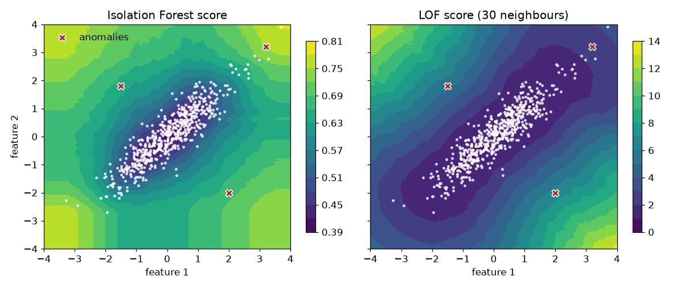
How to read it: the Isolation Forest map is made of axis-aligned bands, so it scores a point mostly by how far out it is along each axis separately. The two contextual anomalies sit inside the range of each feature, so their scores (0.678 and 0.643) fall below the 99th percentile of normal scores (0.682): the forest misses both. LOF follows the diagonal shape of the cloud and scores them 6.35 and 5.18 against a normal 99th percentile of 2.07: it catches both. Only the extreme point (3.2, 3.2) is caught by both. Note that LOF scores the extreme point just 2.37, barely above its cut-off, because that point lies along the cloud's own diagonal.
x1 − x2) so that a contextual anomaly becomes an extreme value on a new axis. For the correlated data above, x1 − x2 turns the two contextual points into values of about 4 and −3.3, far outside the normal spread of that feature (standard deviation about 0.45).14.8 Anomalies in a Metric Over Time: Seasonality, Spikes and Level Shifts
Ordinary z-scores fail on a metric with a weekly rhythm: the weekend dip is "anomalous" every week and a real spike hides inside weekday variation. The recipe is: (1) remove the expected pattern, (2) standardise the residual with a robust spread, (3) use a point rule for spikes and a cumulative rule (CUSUM) for sustained shifts.
Problem 14.8.1 A daily metric follows a weekly profile (100, 104, 108, 110, 112 on weekdays, 80 and 70 on the weekend) plus noise with standard deviation 2. On day 60 there is a one-day spike of +25. From day 100 the whole level shifts up by 9. Design detectors that flag the spike and the shift without flagging the weekend.
| Profile | Use the median of each weekday over the first 8 weeks (56 days), which we assume are normal. The residual is the value minus its weekday median. |
|---|---|
| Robust spread | σ = 1.4826 × MAD of the training residuals. The factor 1.4826 makes MAD match the standard deviation for normal data. |
| Spike rule | Flag when |residual / σ| > 4. |
| Shift rule | CUSUM on residuals clipped at ±3σ: St = max(0, St−1 + rt − k) with k = 0.5σ, alarm when S > 5σ. Clipping stops a single spike from tripping the alarm. |
import numpy as np
rng = np.random.default_rng(3)
days = 140; dow = np.arange(days) % 7
season = np.array([100, 104, 108, 110, 112, 80, 70.0]) # weekly pattern of a daily metric
y = season[dow] + rng.normal(0, 2.0, days)
y[60] += 25 # one-day spike
y[100:] += 9 # level shift from day 100
# 1) remove seasonality with the median of each weekday over the first 56 days (all normal)
profile = np.array([np.median(y[:56][dow[:56] == d]) for d in range(7)])
resid = y - profile[dow]
mad = np.median(np.abs(resid[:56] - np.median(resid[:56])))
sigma = 1.4826 * mad
print("robust sigma of residual: %.2f" % sigma)
z = resid / sigma
flag = np.where(np.abs(z) > 4)[0]
print("days flagged before the shift (|robust z| > 4 on the residual):", flag[flag < 100], "z of day 60: %.1f, z of day 9: %.1f" % (z[60], z[9]))
raw = (y - y.mean()) / y.std()
print("plain z of the raw series on day 60: %.2f, largest plain |z| on any day before 100: %.2f" % (raw[60], np.abs(raw[:100]).max()))
# 2) CUSUM on the residual (clipped at 3 sigma so one spike cannot trigger it): detects the level shift
k, h = 0.5 * sigma, 5 * sigma
r = np.clip(resid, -3 * sigma, 3 * sigma)
s = 0.0; alarm = None
for t in range(56, days):
s = max(0.0, s + r[t] - k)
if s > h and alarm is None: alarm = t
print("CUSUM alarm at day", alarm, "(true shift starts at day 100)")robust sigma of residual: 1.35
days flagged before the shift (|robust z| > 4 on the residual): [ 9 60] z of day 60: 15.2, z of day 9: 4.6
plain z of the raw series on day 60: 2.08, largest plain |z| on any day before 100: 2.16
CUSUM alarm at day 100 (true shift starts at day 100)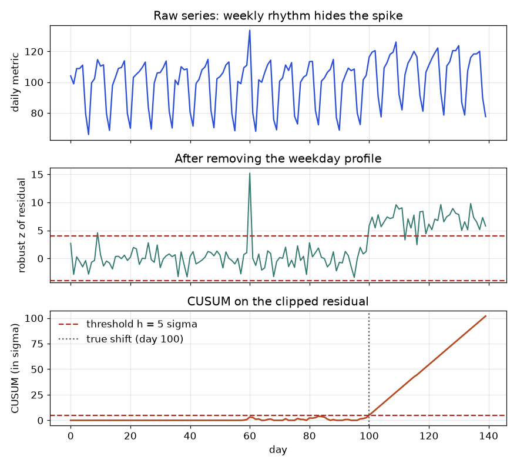
How to read it: in the top panel the spike on day 60 is invisible among the weekday and weekend swings; a plain z-score gives it only 2.08, and no day before 100 exceeds 2.16, so a 3-sigma rule flags nothing. In the middle panel the residual is flat noise and day 60 stands at a robust z of 15.2. Day 9 is also flagged at 4.6. That is a false alarm: the profile and σ were estimated from only 8 values per weekday, so σ is slightly underestimated and mild false alarms happen. In the bottom panel CUSUM stays near zero, then climbs steadily after day 100 and crosses the limit exactly on day 100. Why exactly day 100? Three slightly high days (97 to 99) had already lifted the CUSUM to 2.5σ, and the shifted point on day 100 (residual 5.9σ, clipped to 3σ) added another 3σ − 0.5σ = 2.5σ, reaching 5.01σ, just over the limit. Starting from zero, the clipped CUSUM needs three shifted days to alarm, so the earliest possible alarm would have been day 102. Luck helped here; do not expect to beat the true shift date in general.
k and h trades detection delay against false alarms, measured by the average run length (ARL), the mean number of days before a false alarm on normal data. Standard tables give ARL for each (k, h) pair: with k = 0.5σ, h = 5σ the in-control ARL is about 465 days. Drift detectors for streams (ADWIN, Page-Hinkley) apply the same idea to a model's error rate, not to a raw metric.14.9 Hidden Markov Models: Forward Algorithm and Viterbi on Three States
The model has three parts. The start probabilities π, the transition matrix A (row = current state, column = next state) and the emission matrix B (row = state, column = reading). Here:
| to Good | to Worn | to Failing | emits Low | emits Med | emits High | start | |
|---|---|---|---|---|---|---|---|
| Good | 0.7 | 0.2 | 0.1 | 0.7 | 0.2 | 0.1 | 0.6 |
| Worn | 0.1 | 0.7 | 0.2 | 0.2 | 0.6 | 0.2 | 0.3 |
| Failing | 0.0 | 0.2 | 0.8 | 0.1 | 0.3 | 0.6 | 0.1 |
Problem 14.9.1 You observe Low, Medium, High on three consecutive days. (a) What is the probability of seeing this sequence? (b) What is the most likely hidden path?
| Forward, day 1 | α₁(s) = π(s) × B(s, Low): Good 0.6 × 0.7 = 0.42, Worn 0.3 × 0.2 = 0.06, Failing 0.1 × 0.1 = 0.01. |
|---|---|
| Forward, day 2 | α₂(j) = [Σi α₁(i) A(i,j)] × B(j, Med). For Good: (0.42×0.7 + 0.06×0.1 + 0.01×0) × 0.2 = 0.300 × 0.2 = 0.06. |
| Forward, day 3, total | Repeat with High. The answer to (a) is the sum of the final α values. |
| Viterbi | Replace the sum over previous states with a max, and remember which previous state won. Trace back from the best final state. |
import numpy as np
states = ["Good", "Worn", "Failing"]; obs_names = ["Low", "Med", "High"]
pi = np.array([0.6, 0.3, 0.1])
A = np.array([[0.7, 0.2, 0.1], [0.1, 0.7, 0.2], [0.0, 0.2, 0.8]])
B = np.array([[0.7, 0.2, 0.1], [0.2, 0.6, 0.2], [0.1, 0.3, 0.6]])
obs = [0, 1, 2] # Low, Med, High
# forward algorithm
alpha = pi * B[:, obs[0]]
print("alpha1", np.round(alpha, 4))
for t in obs[1:]:
alpha = (alpha @ A) * B[:, t]
print("alpha%d" % (t + 1), np.round(alpha, 4))
print("P(Low, Med, High) = %.5f" % alpha.sum())
# Viterbi
delta = pi * B[:, obs[0]]; back = []
print("delta1", np.round(delta, 4))
for t in obs[1:]:
cand = delta[:, None] * A # cand[i, j] = delta_i * A_ij
back.append(cand.argmax(0)); delta = cand.max(0) * B[:, t]
print("delta%d" % (t + 1), np.round(delta, 4), "best previous", [states[i] for i in back[-1]])
path = [int(delta.argmax())]
for b in reversed(back): path.append(int(b[path[-1]]))
print("best path:", [states[i] for i in reversed(path)], "prob %.5f" % delta.max())alpha1 [0.42 0.06 0.01]
alpha2 [0.06 0.0768 0.0186]
alpha3 [0.005 0.0139 0.0217]
P(Low, Med, High) = 0.04061
delta1 [0.42 0.06 0.01]
delta2 [0.0588 0.0504 0.0126] best previous ['Good', 'Good', 'Good']
delta3 [0.0041 0.0071 0.006 ] best previous ['Good', 'Worn', 'Worn']
best path: ['Good', 'Worn', 'Worn'] prob 0.00706| Read (a) | The sum 0.005 + 0.0139 + 0.0217 = 0.0406 is the probability of Low, Med, High under this model, summed over all 27 possible hidden paths. |
|---|---|
| Read (b) | The best path is Good, Worn, Worn with probability 0.00706. That path alone is 17 percent of the total 0.0406. Notice Viterbi does not pick Failing on day 3 although the reading is High: Failing is only reachable from Worn (0.2) and the path through Worn already carries more weight. |
| Cost | Both algorithms take T × K² operations (here 3 × 9), instead of KT paths. That is dynamic programming at work. |
Where HMMs are used. Speech and gesture recognition, part-of-speech tagging, gene finding, and condition monitoring. In training with unlabelled sequences you learn π, A and B with the Baum-Welch algorithm, an EM method (Chapter 13) that uses forward-backward probabilities. The hmmlearn library provides it; not run here.
14.10 The Kalman Filter: A One-Dimensional Worked Update
Model: the level moves by random noise of variance Q each step; each reading is the level plus noise of variance R. State your belief as a mean x and variance P. Each step does two things. Predict: the mean stays, uncertainty grows: P⁻ = P + Q. Update: gain K = P⁻ / (P⁻ + R), new mean x + K(z − x), new variance (1 − K)P⁻.
Problem 14.10.1 Start with x = 0, P = 1, Q = 0.1, R = 1. The readings are 1.2 and then 0.8. Compute both updates, then measure the filter on a longer simulation.
| Predict 1 | P⁻ = 1 + 0.1 = 1.1. |
|---|---|
| Gain 1 | K = 1.1 / (1.1 + 1) = 0.5238. About half trust in the reading. |
| Update 1 | x = 0 + 0.5238 × 1.2 = 0.6286; P = (1 − 0.5238) × 1.1 = 0.5238. |
| Step 2 | P⁻ = 0.6238, K = 0.6238 / 1.6238 = 0.3842, x = 0.6286 + 0.3842 × (0.8 − 0.6286) = 0.6944, P = 0.3842. |
import numpy as np
# 1-D Kalman filter for a slowly drifting level. x_t = x_(t-1) + process noise (variance Q); z_t = x_t + noise (variance R)
Q, R = 0.1, 1.0
x, P = 0.0, 1.0
for z in (1.2, 0.8):
P_pred = P + Q; K = P_pred / (P_pred + R)
x = x + K * (z - x); P = (1 - K) * P_pred
print("z=%.1f predicted var %.4f gain %.4f estimate %.4f new var %.4f" % (z, P_pred, K, x, P))
# simulation: filter versus raw measurements
rng = np.random.default_rng(1)
n = 200; truth = np.cumsum(rng.normal(0, np.sqrt(Q), n)); z = truth + rng.normal(0, np.sqrt(R), n)
x, P, est = 0.0, 1.0, []
for zt in z:
Pp = P + Q; K = Pp / (Pp + R); x = x + K * (zt - x); P = (1 - K) * Pp; est.append(x)
est = np.array(est)
print("RMSE raw measurement: %.3f RMSE Kalman: %.3f steady-state gain: %.3f" % (np.sqrt(np.mean((z - truth) ** 2)), np.sqrt(np.mean((est - truth) ** 2)), K))z=1.2 predicted var 1.1000 gain 0.5238 estimate 0.6286 new var 0.5238
z=0.8 predicted var 0.6238 gain 0.3842 estimate 0.6944 new var 0.3842
RMSE raw measurement: 0.900 RMSE Kalman: 0.371 steady-state gain: 0.270How to read it: the gain falls from 0.52 to 0.38 as the filter becomes more certain, and settles near 0.27 after many steps (the steady-state value, set only by Q/R). On 200 simulated steps the raw readings are off by RMSE 0.900 (their noise standard deviation is 1), the filtered estimate by only 0.371: less than half the error, with no model more complex than one line of algebra.
Q and R by guessing. If Q is far too small the filter believes the level never moves and lags behind real changes; if it is too large the filter just copies the noisy readings. Estimate R from readings on a held-still sensor, then tune Q so that the standardised innovations (z − x⁻) / √(P⁻ + R) have standard deviation near 1.P becomes a covariance matrix and the gain a matrix; the equations keep the same shape. For nonlinear dynamics, the extended and unscented Kalman filters approximate; particle filters drop the Gaussian assumption. In ML work, a Kalman filter is a good smoother for a noisy online metric before you feed it to a drift alarm.Chapter recap
- Anomalies come in three kinds: point, contextual and collective. Decide which you are hunting before choosing a method.
- Mean and std hide outliers (masking). Median and MAD (robust z), or IQR fences, do not.
- CUSUM adds up small deviations so that a steady shift triggers an alarm; control charts catch big jumps.
- Isolation Forest, LOF, One-Class SVM, Elliptic Envelope and autoencoders look at all columns together; the one whose assumption fits your data wins.
- Anomaly scores are rankings. Choose the threshold from alert cost and review capacity, and report precision@k.
- Semi-supervised learning (label propagation, self-training) uses unlabelled data, but self-training copies its own mistakes if the first model is weak.
- Self-supervised learning builds its own labels from the data; it is how large pretrained models are made.
- Active learning labels the most uncertain rows first; expect modest savings and evaluate on a random test set.
- Transfer learning reuses a pretrained model and wins when labels are few; check against scratch for negative transfer.
- Online learning follows drift using
partial_fit; use prequential evaluation.
| Item | Formula or command | Note |
|---|---|---|
| z-score | (x − mean) / std | flag ` |
| Robust z | 0.6745·(x − median) / MAD | flag ` |
| IQR fences | Q1 − 1.5·IQR, Q3 + 1.5·IQR | quick box-plot rule |
| CUSUM | C = max(0, C + x − μ₀ − k) | alarm when C > h |
| Isolation Forest | IsolationForest().fit(X); score_samples | low score is odd |
| LOF | LocalOutlierFactor(n_neighbors=20) | negative_outlier_factor_ |
| Self-training | SelfTrainingClassifier(model, threshold=0.9) | unlabelled rows marked −1 |
| Label propagation | LabelPropagation(kernel="knn") | graph-based |
| Online | SGDClassifier().partial_fit(X, y, classes=...) | prequential test |
Practice set
1. (easy) Data: 10, 12, 11, 13, 12, 90. Find the median and MAD. Answer: Sorted: 10, 11, 12, 12, 13, 90; median = (12 + 12) / 2 = 12. Absolute deviations: 2, 0, 1, 1, 1, 78 sorted 0, 1, 1, 1, 2, 78; MAD = (1 + 1) / 2 = 1.
2. (easy) Using problem 1, the robust z of 90. Answer: 0.6745 × (90 − 12) / 1 = 52.6. Clearly an outlier (cut-off 3.5).
3. (easy) What kind of anomaly is a slow memory leak over two hours? Answer: Collective: each minute alone looks fine; the trend is the anomaly.
4. (medium) CUSUM with μ₀ = 50, k = 2, h = 10 on the values 50, 55, 56, 54, 58. Find the alarm step (counting from 1). Answer: Step 1: max(0, 0 + 50 − 50 − 2) = 0. Step 2: 0 + 55 − 52 = 3. Step 3: 3 + 56 − 52 = 7. Step 4: 7 + 54 − 52 = 9. Step 5: 9 + 58 − 52 = 15 > 10, alarm at step 5.
5. (medium) What is the output? LabelPropagation().fit(X, y) where every y is −1. Answer: It fails or is meaningless: there are no labelled rows to propagate. At least one label per class is required.
6. (medium) Find the bug: you scale your data with StandardScaler().fit(X_all), then call LocalOutlierFactor and report AUC using injected anomalies that were included in X_all. Answer: The scaler saw the anomalies, so their extremeness is slightly softened and the evaluation is optimistic. In a real pipeline you would fit the scaler on normal training history only (we did so for the autoencoder). It is a small leak, but the habit matters.
7. (medium) You can pay for 500 labels out of 50,000 rows. Describe an active learning plan. Answer: Label 100 random rows for a starting model and a random test set of 150 rows. Then in 5 rounds of 50, pick uncertain rows with a diversity rule (for example one per cluster from k-means), retrain, and track accuracy on the random test set. Compare with random labelling at the same budget.
8. (hard) Logistic regression on 100 features with 40 rows versus on 3 transferred features. Which has higher variance and why? Answer: The 100-feature model: 101 parameters from 40 rows can fit noise. The 4-parameter model has far lower variance (Chapter 1).
9. (hard, interview) A fraud detector has AUC 0.97 but the team complains of too many false alerts. What do you check? Answer: The threshold and the review capacity: compute precision@k at the number of alerts the team can handle; look at base rate (low fraud rate makes precision small even for high AUC); consider cost-based thresholds (Chapter 9) and feedback labels.
10. (hard, interview) "Your model's accuracy was 95 percent last month and nobody noticed it fell to 70 percent." How would you have caught it, and how would you fix it? Answer: Monitor input drift (PSI, KS test, adversarial validation) and, once labels arrive, prequential accuracy on recent batches; set alerts. Fix by retraining on recent data (maybe with recency weights) or switching to online learning, then investigate the cause of the drift.
11. (easy) An isolation tree isolates a point in 2 cuts on average; c(n) = 10. What is its score? Answer: 2−2/10 = 2−0.2 = 0.871, strongly anomalous.
12. (easy) A Kalman filter has P⁻ = 3 and R = 1. What is the gain, and what does it say? Answer: K = 3 / 4 = 0.75. The filter trusts the new reading three times as much as its own estimate.
13. (medium) In the HMM of 14.9, compute α₁ and α₂ for the state Worn after the readings Low, Medium. Answer: α₁ = (0.42, 0.06, 0.01). Sum into Worn: 0.42×0.2 + 0.06×0.7 + 0.01×0.2 = 0.084 + 0.042 + 0.002 = 0.128; times B(Worn, Med) = 0.6 gives 0.0768.
14. (medium) CUSUM with σ = 2, k = 1, h = 10. Residuals: 3, 3, 4, 4, 5. On which step does it alarm? Answer: Each step adds r − 1: 2, 4, 7, 10, 14. It first exceeds 10 on step 5 (it equals 10 on step 4, not above).
15. (medium) You fit the daily profile and the spread on the whole year, which includes a three-week outage. What happens? Answer: The outage inflates the MAD-based spread less than it would a standard deviation, but it shifts the weekday medians only slightly if it covers fewer than half the rows of any weekday. Spikes of normal size get flagged correctly but the outage itself is partly absorbed. Fit on a clean window.
16. (hard) Isolation Forest scores a fraud ring of 40 near-identical transactions as normal. Why, and what would you try? Answer: The ring is dense, so random cuts struggle to separate its members (masking). Try a smaller subsample, aggregated entity-level features (transactions per card per hour), or a rule or supervised model on the ring's known pattern.
17. (hard, interview) When would you prefer an HMM over a Kalman filter, and the other way round? Answer: HMM for a discrete hidden state with categorical or arbitrary emissions (a machine condition, a word tag). Kalman filter for a continuous hidden quantity with roughly linear dynamics and Gaussian noise (position, level, temperature).
Prompt pack
You are my patient, practical professor. I am a working professional moving into data roles, and English is my second language, so use simple words. Teach me anomaly detection on monitoring data: point, contextual and collective anomalies, z-score versus robust z-score (median and MAD), IQR fences, CUSUM, Isolation Forest and LOF. Explain step by step with small numbers, then ask me three questions one at a time and check my answers before moving on.
You are my patient, practical professor. I am a working professional moving into data roles, and English is my second language. Give me 8 graded exercises (easy to hard, no solutions) on evaluating anomaly detectors without labels: injected synthetic anomalies, precision at review capacity, threshold choice from alert cost, and why AUC alone misleads. Use delivery time and distance data as the story. When I send my answers, mark them and explain each mistake.
You are my patient, practical professor. I am a working professional moving into data roles, and English is my second language. Explain semi-supervised learning (self-training, label propagation, pseudo-labels) and self-supervised learning (masked prediction, contrastive learning) with everyday analogies. Then quiz me one question at a time on when each works, when self-training fails because of confirmation bias, and how to keep an honest validation set. Wait for my answer each time.
You are my patient, practical professor. I am a working professional moving into data roles, and English is my second language. Teach me active learning and transfer learning: uncertainty and diversity sampling, feature extraction versus fine-tuning, negative transfer, and how to compare with a from-scratch baseline. Give a small numeric example for each, then run a mock interview with five questions, one at a time, and give feedback on my spoken-style answers. My answers: [PASTE HERE]
You are my patient, practical professor. I am a working professional moving into data roles, and English is my second language. Review my plan for an online-learning system that updates a model with partial_fit on a data stream with concept drift. Check my evaluation (prequential), my drift monitoring, my retraining or reset rule, and my risks. Ask me clarifying questions first, then give a numbered list of problems and fixes. My plan: [PASTE HERE]
Every model so far answered "what is the label?". A bandit or reinforcement-learning (RL) system answers a different question: "what should I do now, so that things go well later?" Which of three web-page designs should be shown to the next visitor? Which ad? Which route should a delivery robot take? The system must act, see a reward, and improve, and it must pay for its own mistakes while it learns. For most business problems the practical entry point is the bandit: a one-step version of RL that powers adaptive experiments, recommendations and personalization. By the end of this chapter you will run a Thompson-sampling simulation and compare it with a fixed A/B test, build an Atari-style "Hello World" (Q-learning on a 4 by 4 grid), compute a Bellman update by hand, and know where the rest of the RL zoo (DQN, PPO, RLHF) fits.
Everything below uses NumPy only, fixed seeds, and real outputs from /tmp/ml_scripts/c15a.py and c15b.py. gymnasium, stable-baselines3 and RLlib (the standard libraries) are not installed here, so any code that uses them is marked "not run here". Chapter 1 introduced reinforcement learning as one of the four families; this chapter opens it up. You will also use Bayes' rule and the Beta distribution from the learner's Math PDF (the probability pillar).
15.1 Multi-Armed Bandits: Exploration versus Exploitation
Words you need
| Word | Plain meaning |
|---|---|
| Arm / action | one choice (page design A, B or C) |
| Reward | the number we get after the choice (1 for click, 0 for no click) |
| Policy | the rule that picks the next arm |
| Exploration | trying an arm to learn about it |
| Exploitation | choosing the arm that currently looks best |
| Regret | best possible reward − reward we got, summed over time; the price of not knowing |
Our running problem
Three page designs have true click rates 0.04, 0.05, 0.06. We do not know these. We show the page 5,000 times and want as many clicks as possible. The expected regret per step of picking arm a is 0.06 − p_a.
Five policies
| Policy | Rule |
|---|---|
| Fixed A/B (round-robin) | cycle through the arms equally, never adapt |
| Greedy | after trying each arm once, always pick the best average |
| Epsilon-greedy | with probability ε = 0.1 pick a random arm, otherwise the best average |
| UCB (upper confidence bound) | pick the arm with the highest mean + √(2·ln t / n): average plus a bonus for arms tried rarely |
| Thompson sampling | keep a belief about each arm's rate; draw one random sample from each belief; pick the arm with the largest draw |
Thompson sampling, step by step
Each arm's click rate is unknown, so we describe our belief by a Beta distribution Beta(α, β): start with α = 1, β = 1 (every rate between 0 and 1 equally likely). After each show, add 1 to α on a click, or add 1 to β on no click. The mean of the belief is α / (α + β). The spread shrinks as we gather data.
Why does it explore? An arm with few observations has a wide belief, so sometimes its random draw is large and it wins. An arm that is clearly poor has a narrow belief and rarely wins. Exploration fades by itself. This is probability matching: pick each arm with the probability that it is the best.
Problem 15.1.1 Arm A has had 3 clicks in 20 shows. Arm B has had 1 click in 5 shows. Compute each Beta belief, its mean and standard deviation, and the chance that B is truly better than A.
| Formula | α = 1 + clicks, β = 1 + non-clicks; mean = α / (α+β); sd = √( αβ / ((α+β)²(α+β+1)) ). |
|---|---|
| Plug in | A: α = 1 + 3 = 4, β = 1 + 17 = 18. B: α = 1 + 1 = 2, β = 1 + 4 = 5. |
| Compute | Mean A = 4 / 22 = 0.182. Mean B = 2 / 7 = 0.286. Sd A = √(4·18 / (22²·23)) = √(72 / 11132) = 0.080. Sd B = √(2·5 / (7²·8)) = √(10 / 392) = 0.160. |
| Answer | B has the higher mean (0.286 versus 0.182) but its belief is twice as wide. Drawing 100,000 samples from each (seed 0) gives P(B > A) = 0.697. |
| Check | If B's belief were exactly as narrow as A's, the probability that B beats A would be near 1 (0.286 is well above 0.182). Because B is wide, A still wins about 30 percent of the time, so Thompson sampling will still pick A about 30 percent of the time. That is exploration, on purpose. |
| Why it matters | A fixed A/B test would show B and A equally. Thompson sampling spends more traffic on B while still collecting data on A. |
The simulation
We run each policy 200 times (200 different seeds, 5,000 steps each) and average the cumulative regret.
import numpy as np
true_p = np.array([0.04, 0.05, 0.06]); T = 5000; K = 3
def run(policy, seed):
rng = np.random.default_rng(seed)
a = np.ones(K); b = np.ones(K); n = np.zeros(K); s = np.zeros(K); R = 0; reg = np.zeros(T)
for t in range(T):
if policy == "ab": arm = t % K
elif policy == "greedy": arm = t if t < K else int(np.argmax(s/np.maximum(n,1)))
elif policy == "eps": arm = t if t < K else (rng.integers(K) if rng.random() < 0.1 else int(np.argmax(s/n)))
elif policy == "ucb": arm = t if t < K else int(np.argmax(s/n + np.sqrt(2*np.log(t+1)/n)))
elif policy == "ts": arm = int(np.argmax(rng.beta(a, b))) # Thompson sampling
r = rng.random() < true_p[arm]
n[arm] += 1; s[arm] += r; a[arm] += r; b[arm] += 1 - r
R += true_p.max() - true_p[arm]; reg[t] = R
return regBefore you run it, predict the order from best to worst at step 5,000. For the fixed A/B policy we can compute the answer by hand: average regret per step is 0.06 − mean(0.04, 0.05, 0.06) = 0.06 − 0.05 = 0.01, so after 5,000 steps the regret is 5000 × 0.01 = 50.
ab regret@1000=10.01 regret@5000=50.01 share on best arm=0.33
greedy regret@1000=18.88 regret@5000=94.48 share on best arm=0.03
eps regret@1000=10.64 regret@5000=29.95 share on best arm=0.58
ucb regret@1000=9.32 regret@5000=43.73 share on best arm=0.40
ts regret@1000=7.09 regret@5000=21.84 share on best arm=0.66Problem 15.1.2 Read the table. Which policy wins, by how much, and why is greedy so bad?
| Step 1 | Regret at 5,000 steps: Thompson 21.84, epsilon-greedy 29.95, UCB 43.73, fixed A/B 50.01, greedy 94.48. Lower is better. |
|---|---|
| Step 2 | Thompson versus fixed A/B: 21.84 / 50.01 = 0.44, so Thompson wasted 56 percent less. Measured in clicks, it gave 28 more clicks per 5,000 shows on average. |
| Step 3 | Greedy looks at its first few results. With click rates this low (4 to 6 percent) the first one or two shows say almost nothing, so it often locks onto a bad arm. Its share of traffic on the best arm is 0.03, the A/B check 0.33 = 1/3 shows what "no information" looks like. |
| Answer | Thompson sampling wins; greedy loses even to a plain A/B test because it stops exploring too early. |
| Check | The fixed A/B number 50.01 agrees with our hand calculation of 50. |
| Why it matters | Real rewards are noisy and rates are small. Under such noise, forcing exploration is not optional. |
Bandit or A/B test?
| Fixed A/B test | Bandit | |
|---|---|---|
| Goal | learn the truth with a clean statistical test | earn reward while learning |
| Traffic | equal split | shifts to the winner |
| Good when | you need an unbiased effect size, a decision to ship or not | the cost of showing a poor arm is high and the options are many or change |
| Weakness | wastes traffic on losers | biased estimates for the losers; harder to analyse; non-stationary rates confuse it |
Contextual bandits and off-policy evaluation
A contextual bandit also sees a context (the user's country, device, time) before choosing, and learns how reward depends on it. LinUCB assumes reward is linear in the context: it keeps a ridge-regression estimate per arm (Chapter 3) and picks the arm with the best predicted reward plus an uncertainty bonus. The code is short but is not run here.
Off-policy evaluation asks: "I have logs from the old policy. How well would a new policy have done, without deploying it?" The simplest tool is inverse propensity scoring (IPS): weight each logged reward by 1 / (probability the old policy chose that action) if the new policy would have picked the same action, else 0.
Problem 15.1.3 Six logged shows (old policy picked A or B with probability 0.5 each): (B, reward 1), (A, 0), (B, 0), (B, 1), (A, 1), (B, 0). The new policy would always pick B. Estimate its click rate with IPS.
| Formula | IPS = (1/n) · Σ [new action = logged action] · reward / p_old. |
|---|---|
| Plug in | Only B rows count: rewards 1, 0, 1, 0, each weighted by 1 / 0.5 = 2. |
| Compute | Sum = 2·1 + 2·0 + 2·1 + 2·0 = 4. Divide by n = 6: 4/6 = 0.667. |
| Answer | IPS estimates 0.667. A simple average of the four B rows is 2/4 = 0.5. The self-normalized version Σ w·r / Σ w = 4 / 8 = 0.5 agrees with it. |
| Check | The difference arises because B happened to be logged 4 times instead of the expected 3 out of 6. With so few rows IPS is noisy; it needs thousands of rows and honest logged probabilities. |
| Why it matters | Without off-policy evaluation, every new recommendation policy must be tested live. The risk: the logging policy must have given every action a non-zero chance, or IPS cannot estimate it. |
Connection to the real job
- Product teams use bandits for headlines, banners, recommendation carousels and price tests.
- Operations: a bandit that chooses among three ways of assigning delivery slots, with late deliveries as negative reward, uses the same maths.
- Portfolio project 7 in the skill map: "bandit simulation vs A/B test showing regret and when each wins". The simulation above is your starting point; extend it by changing the gaps between click rates.
Applications
- Marketing: choosing among email subject lines.
- E-commerce: ranking blocks on a home page.
- Healthcare: adaptive clinical trials (with strong ethics review).
- Operations: picking the best delivery-slot rule online.
Check yourself
- In Thompson sampling, what happens to
αandβafter a click on an arm? Answer:αgoes up by 1 (βis unchanged). - Why does greedy fail with low click rates? Answer: it decides from very few noisy observations and never explores again.
- What does regret measure? Answer: the total reward lost compared with always playing the best arm.
15.2 Markov Decision Processes, Rewards and Bellman Equations
Definitions
An MDP (Markov decision process) is the formal setting. It has:
| Part | Symbol | Grid-world example |
|---|---|---|
| States | s | which cell you are in (16 cells) |
| Actions | a | up, down, left, right |
| Transition | s' = f(s, a) | the cell you land in (bumping a wall keeps you in place) |
| Reward | r(s, a, s') | −1 per step, +10 for the goal, −10 for the pit |
| Discount | γ between 0 and 1 | 0.9: a reward one step later is worth 90 percent |
Markov means the future depends only on the current state, not on how you got there. A policy π(s) says which action to take in each state. The return is the discounted sum of rewards: G = r₁ + γ·r₂ + γ²·r₃ + …. The discount γ does two jobs: it says that sooner is better, and it keeps infinite sums finite.
The value function V^π(s) is the expected return from s if you follow policy π. The action-value Q^π(s, a) is the expected return if you take action a first and then follow π.
The Bellman equations
The value of a state equals the immediate reward plus the discounted value of where you land. For the best possible policy:
V*(s) = max over a of [ r(s,a) + γ · V*(s') ] (Bellman optimality, deterministic moves)
Q*(s,a) = r(s,a) + γ · max over a' of Q*(s',a')Why is it called an equation and not a formula? Because V* appears on both sides. You can start with a guess (all zeros) and apply the right-hand side again and again. The values settle on the correct answer. That repeat-until-stable method is value iteration, a kind of dynamic programming (DP): solve a big problem by combining solutions of smaller ones. DP requires that you know the transitions and rewards (a full model of the world).
Our grid world
Row 0: S . . .
Row 1: . X . . S = start (0,0) G = goal (3,3), reward +10, episode ends
Row 2: . . . . X = pit (1,1), reward −10, episode ends
Row 3: . . . G every other move costs −1; γ = 0.9Axes: the first number is the row (0 at the top), the second is the column. Moving off the grid leaves you in place and still costs −1.
Problem 15.2.1 Compute V* for the cell (2,3), which sits directly above the goal, and the cell (2,2), which is diagonal to the goal.
| Formula | V*(s) = max_a [ r + γ · V*(s') ]. |
|---|---|
| Plug in | From (2,3), moving down enters the goal: r = +10, episode ends, so no future value. V*(2,3) = 10. |
| Compute | From (2,2), the best move is right (to (2,3)) or down (to (3,2)). Both cost −1 and land on a cell worth 10: V*(2,2) = −1 + 0.9 × 10 = 8. |
| Answer | V*(2,3) = 10 and V*(2,2) = 8. |
| Check | The run of value iteration prints 10.0 at (2,3) and 8.0 at (2,2). |
| Why it matters | The value spreads backwards from the goal like water flowing downhill: each step away loses 1 reward and 10 percent of the future. |
Problem 15.2.2 Continue outward to compute V*(2,1), V*(2,0) and the start cell V*(0,0).
| Step 1 | V*(2,1) = −1 + 0.9 × 8 = 6.2. |
|---|---|
| Step 2 | V*(2,0) = −1 + 0.9 × 6.2 = 4.58. |
| Step 3 | V*(1,0) = −1 + 0.9 × 4.58 = 3.122, and V*(0,0) = −1 + 0.9 × 3.122 = 1.81 (rounded). |
| Answer | V*(0,0) = 1.81: following the best policy from the start, you expect a discounted return of 1.81. |
| Check | Value iteration converged in 6 sweeps and printed the grid below; every number matches the hand calculation. The pit has value 0 in the table (terminal state, not a real value). |
| Why it matters | The start value is small even though the goal pays +10, because six moves of −1 and the discount eat most of it. An agent that does not "see" these costs would wander. |
value iteration converged in 6 sweeps
[[ 1.81 3.12 4.58 6.2 ]
[ 3.12 0. 6.2 8. ]
[ 4.58 6.2 8. 10. ]
[ 6.2 8. 10. 0. ]]
optimal policy (from V):
v > v v
v X v v
v v v v
> > > GReading the policy: each arrow is the best action in that cell. Several arrows are ties (for example from (0,0), both "down" and "right" give 1.81, and the code takes the first). The optimal path never touches the pit cell X.
Monte Carlo and temporal-difference learning
Value iteration needs the model. When you do not have one, you learn from experience, by playing episodes:
| Method | How it estimates the value of a state |
|---|---|
| Monte Carlo (MC) | play a whole episode, compute the actual return from each state, average over many episodes. Unbiased but needs episodes to finish and has high variance |
| Temporal-difference (TD) | update after every single step using a bootstrap: V(s) ← V(s) + α·[ r + γ·V(s') − V(s) ]. The bracket is the TD error: a guess about the future minus the previous guess |
TD is "learn a guess from a better guess". It is the engine of most modern RL.
Connection to the real job
Think of a shop managing stock: the state is the stock level, the actions are order more or wait, the reward is sales minus storage cost minus a penalty for empty shelves. Bellman thinking is how you weigh "pay now for extra stock" against "avoid lost sales later".
Applications
- Operations: inventory and queue control.
- Robotics: navigation and manipulation.
- Games: board games and video games.
- Finance: execution of large orders.
γ = 1 or choosing rewards carelessly and then wondering why the agent loops forever or dawdles. Without a step cost or a discount, "reach the goal in 6 steps" and "reach it in 600 steps" are worth the same.Check yourself
- In
V*(2,2) = −1 + 0.9 × 10, what are the −1 and the 0.9? Answer: the step reward and the discount factor. - Why is it called "Markov"? Answer: the future depends only on the current state, not on the path to it.
- What does DP need that Monte Carlo and TD do not? Answer: a full model of transitions and rewards.
15.3 Q-learning, SARSA and the Deep-RL Zoo
The update rule
After taking action a in state s, receiving r and landing in s':
Q(s,a) ← Q(s,a) + α · [ r + γ · max over a' of Q(s',a') − Q(s,a) ] (Q-learning)α (the learning rate, 0.1 here) says how far to move toward the new estimate. The bracket is the TD error again. The max means Q-learning updates toward the best next action, even if the agent will not actually take it: it is off-policy (it learns the optimal policy while behaving differently, for example with exploration). SARSA replaces the max by the action a' the agent really takes next: Q(s,a) ← Q(s,a) + α·[r + γ·Q(s',a') − Q(s,a)]. It is on-policy: it learns the value of the exploring policy itself, so it is more cautious near danger.
To explore, we use ε-greedy action choice with ε = 0.2: with 20 percent probability take a random action.
Problem 15.3.1 Start with all Q values at 0, α = 0.1, γ = 0.9. The agent is in (2,3) and moves down into the goal. Then, in a later episode, it moves right from (2,2) to (2,3). Compute both updates.
| Formula | Q ← Q + α·[r + γ·max Q(s') − Q]. |
|---|---|
| Plug in (first) | r = +10, the goal ends the episode, so the future term is 0: Q((2,3), down) = 0 + 0.1 × (10 − 0) = 1.0. |
| Plug in (second) | r = −1, and max Q at (2,3) is now 1.0: Q((2,2), right) = 0 + 0.1 × (−1 + 0.9 × 1.0 − 0) = 0.1 × (−0.1) = −0.01. |
| Answer | The two updates are 1.0 and −0.01. |
| Check | Run single update from (2,3) down: (3, 3) 10.0 True new Q = 1.0 confirms the first. The second is simple arithmetic: −1 + 0.9 = −0.1, times 0.1. |
| Why it matters | Notice the second update is slightly negative: one good update at the goal has not yet taught the neighbour that this move is good. Value information crawls backwards one cell per visit. That is why RL needs thousands of episodes. |
The experiment
def qlearn(seed, episodes=3000, alpha=0.1, eps=0.2, sarsa=False):
rng = np.random.default_rng(seed); Q = np.zeros((N, N, 4)); rets = []
for ep in range(episodes):
s = (0, 0); G = 0
a = rng.integers(4) if rng.random() < eps else int(np.argmax(Q[s]))
for t in range(100):
ns, rw, d = step(s, a); G += rw
na = rng.integers(4) if rng.random() < eps else int(np.argmax(Q[ns]))
tgt = rw if d else rw + gamma * (Q[ns][na] if sarsa else Q[ns].max())
Q[s][a] += alpha * (tgt - Q[s][a]); s, a = ns, na
if d: break
rets.append(G)
return Q, rets(step, N, gamma are the grid-world definitions from the earlier code; the full script is c15b.py.) Predict: what is the average return in the first 50 episodes, when Q is all zeros and the agent is mostly random? Real output:
Q-learning policy after 3000 episodes:
> > v v
v X v v
> > > v
> > > G
mean return episodes 1-50: -6.64 | last 50: 2.58
Q at start (0,0): [ 0.63 1.81 0.63 1.81] optimal: [ 0.63 1.81 0.63 1.81]
SARSA policy:
> > > v
v X v v
v > > v
> > > G
SARSA mean return last 50: 3.34
greedy path [(0, 0), (0, 1), (0, 2), (1, 2), (2, 2), (2, 3), (3, 3)] return 5.0
final-50 mean return over 10 seeds: mean 2.49 min 0.82 max 3.60Problem 15.3.2 Interpret the numbers.
| Step 1 | At the start the average return is −6.64: a random walker often falls into the pit (−10) or wanders paying −1 per step. |
|---|---|
| Step 2 | After training, the learned Q at the start cell is [0.63, 1.81, 0.63, 1.81] for (up, down, left, right). The optimal values from value iteration are exactly the same. Up and left bump the wall and cost −1 plus a step later: −1 + 0.9 × 1.81 = 0.63. Down and right give 1.81. |
| Step 3 | Following the learned policy greedily from (0,0) takes 6 moves: five at −1 then +10, a return of −5 + 10 = 5.0. It stays away from X. |
| Step 4 | The "last 50 episodes" return is only 2.58, not 5, because while learning we still explore with ε = 0.2: about one move in five is random, and random moves cost steps or even a pit fall. |
| Answer | The agent found the optimal behaviour (return 5.0 when acting greedily). The training return of 2.58 is lower because of exploration. |
| Check | The Q-learning arrows differ from value iteration's in places, but each arrow still points along a shortest safe path (ties). Greedy return 5.0 equals the best possible −5 + 10. |
| Why it matters | Report the greedy (evaluation) return and the training return separately, as in every RL paper. |
Problem 15.3.3 Do all cells converge? The run shows a worst gap of |Q − Q*| = 5.23. Where?
| Step 1 | The worst entry is at cell (3,0), action "down" (a wall bump): Q = −0.65 versus Q* = 4.58, a gap of 5.23. Even the best action there, "right", has Q = 3.88 versus Q* = 6.2. |
|---|---|
| Step 2 | Cell (3,0) is the bottom-left corner. The learned policy goes right across the top and rarely visits it, so its Q-values are updated rarely. |
| Step 3 | Over all cells, the mean error of the best value is only 0.176, and the median error over every (cell, action) is 0. |
| Answer | Q-learning converges on the cells it keeps visiting. Cells it seldom visits stay inaccurate. |
| Check | The theory says Q-learning converges if every state-action pair is visited infinitely often and α is reduced suitably; with finite episodes and ε = 0.2, rare cells lag. |
| Why it matters | Exploration is not a detail. A poorly explored corner may hide a better route, and in real systems it may hide a danger. |
Problem 15.3.4 SARSA's policy has an arrow > at (0,2) and different arrows from Q-learning in a few places, and its training return is higher (3.34 versus 2.58). Why would the on-policy method score higher during training?
| Step 1 | SARSA's update uses the next action that will actually be taken, including random exploration moves. |
|---|---|
| Step 2 | So it counts the risk that an exploratory move near the pit may fall in, and chooses cells away from danger. |
| Answer | SARSA optimizes the policy it is actually running (with exploration), so its training-time return is higher; Q-learning optimizes the greedy policy and pays more during training. With ε going to 0 they agree. |
| Check | With one seed each, 3.34 versus 2.58 is a single comparison; across 10 seeds Q-learning's final-50 mean ranges from 0.82 to 3.60 (mean 2.49), so the gap is within the seed-to-seed noise. I did not run SARSA over 10 seeds, so treat the SARSA advantage as an illustration, not a proof. (Run it yourself and check.) |
| Why it matters | The textbook "cliff-walking" example shows this safety difference clearly; for safety-critical systems prefer to know which one you used. |
From a table to a network: the deep-RL zoo
A Q-table needs one cell per state. A video game has more states than atoms in the universe. The fix is function approximation: a neural network Q(s, a; θ).
| Method | Idea | Note (not run here) |
|---|---|---|
| DQN (Deep Q-Network) | a neural net replaces the Q-table; trained with Q-learning targets | needs a replay buffer (store and re-sample old experience) and a target network (a slow copy used for the TD target) for stability |
| Policy gradient (REINFORCE) | learn the policy directly: raise the probability of actions that led to high return | high variance; subtract a baseline |
| Actor-critic (A2C) | an actor picks actions, a critic estimates the value; the critic reduces the actor's variance | the standard modern building block |
| PPO | policy gradient that limits how much the policy may change per update (clipping) | a common default for practical work |
| Model-based RL | learn a model of the world and plan inside it | awareness; more sample-efficient, harder to get right |
For practical work use libraries: gymnasium (environments), stable-baselines3 and RLlib (algorithms). Sutton and Barto's free textbook, David Silver's lectures and OpenAI's Spinning Up are the standard learning resources; links change, so search by name.
Practical difficulties (be honest)
- Sparse rewards: the agent gets +10 only at the goal. In a huge world a random agent never finds it, so nothing is learned.
- Sample inefficiency: our tiny grid needed thousands of episodes. Games and robots need millions.
- Sim-to-real gap: an agent trained in a simulator may fail in the real world, where physics differ.
- Reward hacking: the agent maximizes the reward you wrote, not what you meant. A cleaning robot rewarded for "no visible dirt" may cover the dirt.
- RLHF / RLAIF: the technique used to align large language models: humans (or an AI) rank outputs, a reward model is trained on the rankings, and RL (often PPO) tunes the language model to score high. The same reward-hacking risk applies. It is a use of RL you will meet in GenAI jobs.
Connection to the real job
Most data jobs will not require you to train a deep-RL agent. They require you to recognize when a problem is sequential (actions change the future), to know that a bandit is the practical first step, and to understand RLHF at the level of an interview answer. Full RL is optional (Stage 4) unless the role is robotics, games, ad bidding or control.
Applications
- Ad bidding and recommendation (long-term value, not just next click).
- Data-centre cooling and scheduling.
- Robotics and autonomous driving components.
- LLM alignment with human feedback.
Check yourself
- What is the difference between Q-learning and SARSA? Answer: Q-learning uses the best next action in its target (off-policy); SARSA uses the action actually taken (on-policy).
- Why is a replay buffer used in DQN? Answer: to re-use and shuffle old experience so training data is less correlated.
- What is reward hacking? Answer: the agent exploits the reward as written instead of achieving what you intended.
15.4 Monte Carlo, TD and Dynamic Programming Side by Side
| Method | Needs a model? | Waits for episode end? | Bias | Variance |
|---|---|---|---|---|
| Dynamic programming | yes | no | none once converged | none (no sampling) |
| Monte Carlo | no | yes | unbiased | high (the whole trip's luck) |
| TD(0) | no | no | biased early (bootstraps on a guess) | lower (one step of luck) |
Problem 15.4.1 A random walk has 5 states in a row (1 to 5). You start in state 3 and move left or right with probability 0.5 each. Falling off the left end pays 0, falling off the right end pays 1, nothing else pays, and γ = 1. What is the true value of each state, and how do MC and TD(0) compare after 50 episodes?
| Idea | With a fair walk, the value of a state is the probability of exiting on the right. This is the classic gambler's-ruin result: from state i of 5 interior states (ends at 0 and 6), the probability is i/6. |
|---|---|
| Check by Bellman | The values 1/6, 2/6, 3/6, 4/6, 5/6 satisfy V(i) = 0.5·V(i−1) + 0.5·V(i+1) with V(0) = 0 and V(6) = 1. For example V(3) = 0.5·(2/6) + 0.5·(4/6) = 3/6. |
| MC update | After an episode with final reward G (0 or 1), every visited state moves toward G: V(s) ← V(s) + α(G − V(s)). |
| TD update | After every step: V(s) ← V(s) + α(r + V(s') − V(s)). |
| Experiment | All values start at 0.5. We measure the root-mean-square (RMS) error against the true values, averaged over 200 seeds. |
import numpy as np
# 5-state random walk: states 1..5, start at 3, step left/right with prob 0.5.
# Left end (0) pays 0, right end (6) pays 1. True value of state i is i/6.
true = np.arange(1, 6) / 6
def episode(rng):
s, path = 3, []
while 0 < s < 6:
path.append(s); s += rng.choice([-1, 1])
return path, float(s == 6)
def mc(rng, n_ep, alpha):
V = np.full(7, 0.5); V[0] = V[6] = 0
for _ in range(n_ep):
path, G = episode(rng)
for s in path: V[s] += alpha * (G - V[s])
return V[1:6]
def td(rng, n_ep, alpha):
V = np.full(7, 0.5); V[0] = V[6] = 0
for _ in range(n_ep):
s = 3
while 0 < s < 6:
ns = s + rng.choice([-1, 1]); r = float(ns == 6)
V[s] += alpha * (r + V[ns] - V[s]); s = ns
return V[1:6]
for alpha in (0.02, 0.05, 0.1):
e_mc, e_td = [], []
for seed in range(200):
e_mc.append(np.sqrt(np.mean((mc(np.random.default_rng(seed), 50, alpha) - true) ** 2)))
e_td.append(np.sqrt(np.mean((td(np.random.default_rng(seed), 50, alpha) - true) ** 2)))
print("alpha %.2f RMS error after 50 episodes: MC %.3f TD(0) %.3f" % (alpha, np.mean(e_mc), np.mean(e_td)))alpha 0.02 RMS error after 50 episodes: MC 0.111 TD(0) 0.129
alpha 0.05 RMS error after 50 episodes: MC 0.116 TD(0) 0.056
alpha 0.10 RMS error after 50 episodes: MC 0.161 TD(0) 0.055| Read | With a small step α = 0.02 both methods are still slow after 50 episodes and MC is slightly ahead (0.111 versus 0.129): TD has not yet propagated information from the ends inward. With α = 0.05 and 0.10 TD is about twice as accurate (0.056 and 0.055 versus 0.116 and 0.161). |
|---|---|
| Why | MC's update target is the noisy 0 or 1 of the whole walk, so a large α makes it jump around (error grows from 0.116 to 0.161). TD's target is a smoother guess. |
| Meaning | TD is not better everywhere: the winner depends on α and on how many episodes you have. In this small test, TD wins when α is moderate. (This is one environment; do not generalise beyond it.) |
Going deeper: bias versus variance of the target
Every RL method updates toward a target. MC's target is the true sampled return G_t: unbiased, but it sums many random rewards, so it is noisy. TD's target is r + γV(s'): it contains only one random reward and one transition, so it is low variance, but V(s') is itself a wrong guess early on, so it is biased. Intermediate methods (n-step returns, TD(λ)) blend the two with a dial. This is exactly the bias-variance trade-off of Chapter 1, applied to targets instead of models.
15.5 Policy Gradients: Learning the Policy Directly
The policy and the objective
Let the policy be a softmax over scores (logits) θ(s, a): π(a|s) = exp(θ(s,a)) / Σb exp(θ(s,b)). The objective is the expected return J(θ) = E[G] when acting with π. We want to climb J by gradient ascent, but G depends on θ through random actions, so how do we differentiate it?
The log-derivative trick (derivation)
Take a one-step problem. J = Σa π(a) · R(a), where R(a) is the reward for action a. Differentiate, using ∇π = π · ∇log π (true because ∇log π = ∇π / π):
The last form is an expectation under π, so we can estimate it by playing: sample an action, observe the reward, and compute ∇log π(a) · R. For a full episode the same argument gives the REINFORCE rule, using the reward-to-go Gt = rt + γ rt+1 + … (rewards before step t cannot depend on the action at step t, so we leave them out):
For a softmax policy, the gradient of the log-probability with respect to the logits has a clean form: ∂ log π(a) / ∂θb = 1[b = a] − π(b). In words: raise the chosen action's logit by 1 − π(a) and lower every other logit by its own probability.
Problem 15.5.1 One state, two actions, logits θ = (0, 0), so π = (0.5, 0.5). You take action 1 (the second) and the return is G = 4. With α = 0.1, compute the update. Then repeat with a baseline b = 3.
| Gradient | ∇log π(1) = onehot(1) − π = (0,1) − (0.5,0.5) = (−0.5, +0.5). |
|---|---|
| Update | θ = (0,0) + 0.1 × 4 × (−0.5, 0.5) = (−0.2, +0.2). |
| New policy | π(1) = e0.2 / (e0.2 + e−0.2) = 0.5987, up from 0.5. |
| With baseline | The weight becomes G − b = 1, so θ = (−0.05, +0.05) and π(1) = 0.525. |
import numpy as np
# One state, two actions, softmax policy with logits theta. REINFORCE gradient by hand and by code.
theta = np.array([0.0, 0.0])
pi = np.exp(theta) / np.exp(theta).sum()
print("pi:", pi)
# we took action 1 and got return G = 4
a, G = 1, 4.0
grad_logp = -pi.copy(); grad_logp[a] += 1 # d log pi(a) / d theta = onehot(a) - pi
print("grad log pi(a=1):", grad_logp)
alpha = 0.1
theta_new = theta + alpha * G * grad_logp
pi_new = np.exp(theta_new) / np.exp(theta_new).sum()
print("theta after update:", theta_new)
print("pi after update:", np.round(pi_new, 4))
# with a baseline b = 3 the push is smaller
b = 3.0
theta_b = theta + alpha * (G - b) * grad_logp
pi_b = np.exp(theta_b) / np.exp(theta_b).sum()
print("with baseline 3, pi:", np.round(pi_b, 4))pi: [0.5 0.5]
grad log pi(a=1): [-0.5 0.5]
theta after update: [-0.2 0.2]
pi after update: [0.4013 0.5987]
with baseline 3, pi: [0.475 0.525]The code reproduces the hand numbers: 0.5987 without a baseline and 0.525 with one.
b(s) that does not depend on the action, E[∇log π(a) · b] = b · Σa ∇π(a) = b · ∇(Σa π(a)) = b · ∇1 = 0. The expected gradient is the same, so the baseline is free. What changes is the variance of the estimate. If you subtract a baseline that depends on the action itself you do break this, and the gradient becomes biased.Why a baseline matters: a real run
In the grid world of 15.2 almost every return is negative (each move costs 1). Without a baseline, every sampled action is pushed down by a negative number, even good ones, and the policy is steered by noise. With a baseline equal to a running average return per state, only actions better than average are pushed up. Here is REINFORCE with a tabular softmax policy (learning rate 0.05, 3000 episodes, episodes capped at 60 steps) on that grid, 10 seeds each.
import numpy as np
N, gamma = 4, 0.9
MOVES = [(-1, 0), (1, 0), (0, -1), (0, 1)] # up, down, left, right
def step(s, a):
r, c = s[0] + MOVES[a][0], s[1] + MOVES[a][1]
if not (0 <= r < N and 0 <= c < N): r, c = s
if (r, c) == (3, 3): return (r, c), 10.0, True
if (r, c) == (1, 1): return (r, c), -10.0, True
return (r, c), -1.0, False
def softmax(z):
e = np.exp(z - z.max()); return e / e.sum()
def reinforce(seed, episodes=3000, lr=0.05, baseline=False):
rng = np.random.default_rng(seed)
theta = np.zeros((N, N, 4)); b = np.zeros((N, N)) # b: running mean return per state
rets = []
for ep in range(episodes):
s, traj = (0, 0), []
for t in range(60):
p = softmax(theta[s]); a = rng.choice(4, p=p)
ns, rw, d = step(s, a); traj.append((s, a, rw)); s = ns
if d: break
G, Gs = 0.0, []
for (_, _, rw) in reversed(traj):
G = rw + gamma * G; Gs.append(G)
Gs.reverse()
for (s_, a_, _), G_ in zip(traj, Gs):
adv = G_ - (b[s_] if baseline else 0.0)
g = -softmax(theta[s_]); g[a_] += 1
theta[s_] += lr * adv * g
if baseline: b[s_] += 0.1 * (G_ - b[s_])
rets.append(sum(rw for _, _, rw in traj))
return theta, np.array(rets)
for base in (False, True):
last = []
for seed in range(10):
_, r = reinforce(seed, baseline=base); last.append(r[-200:].mean())
print("baseline " if base else "no baseline", "per-seed mean return, last 200 episodes:", np.round(last, 1))
print(" mean %.2f, std across seeds %.2f" % (np.mean(last), np.std(last)))no baseline per-seed mean return, last 200 episodes: [ 5. 4.9 5. 5. -60. 5. -11. 5. 4.9 5. ]
mean -3.13, std across seeds 19.54
baseline per-seed mean return, last 200 episodes: [5. 5. 5. 5. 5. 5. 5. 5. 5. 5.]
mean 4.99, std across seeds 0.01Predict first: should the no-baseline version fail on every seed? It did not. Eight of ten seeds found the optimal path (undiscounted return −5 + 10 = 5); one seed (index 6) settled on a bad policy at −11, which is exactly −1 − 10: a first move at −1 and a second move into the pit at −10; and seed 4 gave −60, which equals 60 moves at −1 each: the agent never reaches an end cell before the 60-step cap. All ten baseline runs reached 5. The mean without a baseline (−3.13) hides the problem, and the standard deviation across seeds (19.54 versus 0.01) shows it.
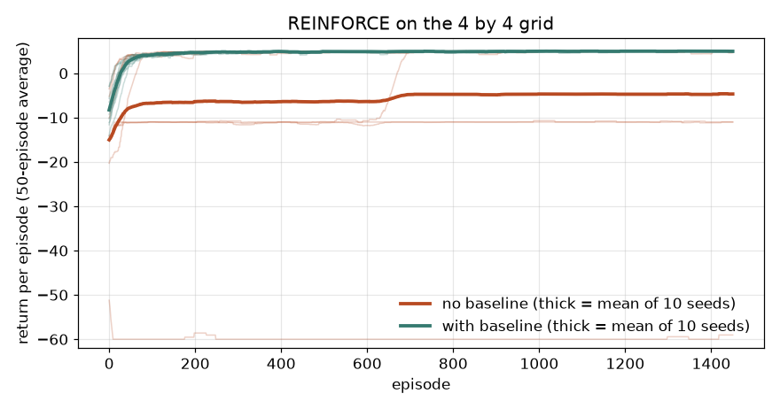
How to read it: the thin teal lines (baseline) all climb to 5 within about 100 episodes. The thin orange lines (no baseline) mostly reach 5 too, but one sits near −11 and one at −60 for the whole run, and one escapes only after about 600 episodes. The orange mean line is pulled down by those stuck seeds, not by slow learning on every seed.
Actor-critic
The baseline above was a running average. The best baseline is the state value V(s), learned by a second function called the critic. The policy is the actor. The weight on the actor's gradient becomes the advantage, estimated by one TD step:
This is TD learning (15.4) feeding policy gradients (this section): the critic uses a low-variance, slightly biased target, the actor uses the critic's advantage. A2C and A3C are this recipe with neural networks. PPO adds one more idea: it clips the ratio πnew(a|s) / πold(a|s) to stay within about 0.8 to 1.2 (the usual setting), so a single batch cannot change the policy too much. Code for PPO and neural actor-critics is not run here (needs a deep-learning library).
Problem 15.5.2 An actor-critic agent is in state s with critic value V(s) = 2.0. It takes an action, receives r = 1, and lands in s' with V(s') = 3.0. With γ = 0.9, what is the advantage, and what does its sign tell the actor?
| Formula | A = r + γV(s') − V(s). |
|---|---|
| Plug in | A = 1 + 0.9 × 3.0 − 2.0 = 1 + 2.7 − 2.0 = 1.7. |
| Meaning | Positive: the move turned out better than the critic expected from this state, so the actor raises its probability. The critic also moves V(s) up by αv × 1.7. |
15.6 DQN Mechanics and Choosing Among Bandit Policies
DQN: two tricks that make a network-based Q stable
Plain Q-learning with a neural network is unstable because (1) consecutive transitions are strongly correlated, and (2) the target r + γ max Q(s') changes every time the network changes, so the network chases its own tail. DQN fixes both. A replay buffer stores past transitions (s, a, r, s', done) and each update trains on a random mini-batch, which breaks the correlation and reuses data. A target network is a copy of the Q-network whose weights are frozen and refreshed only every few thousand steps, so the target stays still while the online network learns. Double DQN reduces overestimation: taking a max over noisy estimates is biased upward, so the online network chooses the best next action and the target network scores it.
Problem 15.6.1 A stored transition has reward r = −1 and action a = 1. The online network says Q(s,·) = (1.0, 2.5). For the next state, the target network says (3.0, 5.0) and the online network says (4.0, 2.0). With γ = 0.9, compute the DQN target, the Double DQN target and the squared error for DQN.
| DQN target | y = r + γ · max Qtarget(s',·) = −1 + 0.9 × 5.0 = 3.5. |
|---|---|
| Double DQN | The online network prefers action 0 in s' (4.0 beats 2.0), so score that action with the target network: y = −1 + 0.9 × 3.0 = 1.7. |
| Loss | The network predicted Q(s,1) = 2.5, so the DQN squared TD error is (3.5 − 2.5)2 = 1.0. |
| Terminal case | If s' ends the episode, the target is just r, with no bootstrap term. |
import numpy as np
# DQN target arithmetic for one stored transition (s, a, r, s').
gamma = 0.9
q_online_s = np.array([1.0, 2.5]) # online network Q(s, .) for 2 actions
a, r = 1, -1.0
q_target_next = np.array([3.0, 5.0]) # frozen target network Q_target(s', .)
q_online_next = np.array([4.0, 2.0]) # online network Q(s', .)
y_dqn = r + gamma * q_target_next.max()
print("DQN target y:", y_dqn)
a_star = q_online_next.argmax() # Double DQN: online net picks, target net scores
y_ddqn = r + gamma * q_target_next[a_star]
print("Double DQN target y:", round(y_ddqn, 2))
loss = (y_dqn - q_online_s[a]) ** 2
print("squared TD error for DQN:", loss)
# terminal transition: no bootstrap
print("terminal transition, reward 10, target:", 10.0)DQN target y: 3.5
Double DQN target y: 1.7
squared TD error for DQN: 1.0
terminal transition, reward 10, target: 10.0(1 − done).Choosing among bandit policies: regret curves
Section 15.1 compared greedy, a fixed test and Thompson sampling. Here are three more rules on one harder problem: arms with rates 0.20, 0.25 and 0.30 (small gaps, so exploration is expensive), 2000 rounds, 200 runs each. UCB means upper confidence bound: pick the arm with the highest mean + √(2 ln t / n). Epsilon-greedy picks a random arm 10 percent of the time and the best average otherwise.
import numpy as np
p = np.array([0.20, 0.25, 0.30]); T = 2000
def run(policy, seed):
rng = np.random.default_rng(seed)
a_ = np.ones(3); b_ = np.ones(3); n = np.zeros(3); w = np.zeros(3); regret = 0.0
for t in range(T):
if policy == "uniform":
arm = rng.integers(3)
elif policy == "eps-greedy":
arm = rng.integers(3) if (rng.random() < 0.1 or n.min() == 0) else int(np.argmax(w / n))
elif policy == "UCB":
arm = int(np.argmin(n)) if n.min() == 0 else int(np.argmax(w / n + np.sqrt(2 * np.log(t + 1) / n)))
else:
arm = int(np.argmax(rng.beta(a_, b_)))
x = rng.random() < p[arm]
n[arm] += 1; w[arm] += x; a_[arm] += x; b_[arm] += 1 - x
regret += p.max() - p[arm]
return regret
for pol in ["uniform", "eps-greedy", "UCB", "Thompson"]:
r = [run(pol, s) for s in range(200)]
print("%-10s mean regret after %d rounds: %6.1f (std %.1f)" % (pol, T, np.mean(r), np.std(r)))uniform mean regret after 2000 rounds: 99.9 (std 1.7)
eps-greedy mean regret after 2000 rounds: 38.8 (std 38.4)
UCB mean regret after 2000 rounds: 60.9 (std 7.3)
Thompson mean regret after 2000 rounds: 28.6 (std 19.5)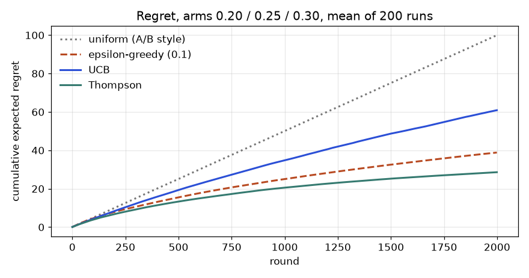
How to read it: a flat curve is good, because it means the policy has stopped paying for mistakes. The grey uniform line rises forever (regret 99.9 = 2000 × 0.05). Thompson sampling flattens most, ending at 28.6. UCB with this textbook constant keeps exploring and ends at 60.9, but with a small spread (std 7.3). Epsilon-greedy ends at 38.8 on average, but its spread is 38.4: it sometimes locks onto the wrong arm and stays there, and its 10 percent random picks cost on average 0.1 × 0.05 = 0.005 regret per round forever (0.05 is the average gap of a uniformly random pick), so a curve that keeps a slope will eventually be overtaken by the ones that flatten.
Check yourself
- Why is the REINFORCE gradient an expectation we can sample? Answer: because
∇π = π · ∇log πturns the sum over actions into an average underπ. - Why does a baseline not bias the gradient? Answer: its expected contribution is
b · ∇Σπ = b · ∇1 = 0. - Which two tricks stabilise DQN? Answer: a replay buffer and a target network.
Chapter recap
- A bandit chooses one action per round and learns from the reward; the goal is to keep regret (reward lost against the best arm) low.
- Exploration is necessary: greedy lost to a plain A/B test in our simulation (regret 94.48 versus 50.01), while Thompson sampling had 21.84.
- Thompson sampling keeps a Beta belief per arm, samples from each, and picks the largest; click adds 1 to
α, no click adds 1 toβ. - Use A/B tests for clean effect sizes, bandits to earn while learning; bandit estimates for losing arms are weak.
- IPS estimates a new policy from logs, using
1 / p_oldweights, and needs non-zero logged probabilities. - An MDP has states, actions, transitions, rewards and a discount; the Bellman equation
V*(s) = max[r + γV*(s')]gives values that value iteration finds by repeated sweeps. - Q-learning learns
Q(s,a)from experience:Q ← Q + α(r + γ max Q' − Q); it solved the 4 by 4 grid, but rare cells converge slowly. - SARSA is the on-policy cousin; DQN, policy gradients, actor-critic and PPO scale the same ideas using neural networks.
- RL is hard in practice: sparse rewards, huge sample needs, sim-to-real gaps and reward hacking.
| Item | Formula or command | Note |
|---|---|---|
| Regret | Σ (p_best − p_chosen) | lower is better |
| Beta update | click: α+1; no click: β+1 | mean α/(α+β) |
| Thompson | argmax(rng.beta(a, b)) | explores in proportion to doubt |
| UCB | mean + √(2 ln t / n) | bonus for rarely tried arms |
| IPS | (1/n) Σ 1[match]·r / p_old | off-policy estimate |
| Return | G = r₁ + γr₂ + γ²r₃ + … | γ = discount |
| Bellman optimality | V*(s) = max_a[r + γV*(s')] | value iteration repeats it |
| Q-learning | Q ← Q + α(r + γ max Q' − Q) | off-policy TD |
| SARSA | Q ← Q + α(r + γ Q(s',a') − Q) | on-policy TD |
Practice set
1. (easy) A page has 7 clicks in 50 shows. Write its Beta belief and mean (start from Beta(1,1)). Answer: α = 1 + 7 = 8, β = 1 + 43 = 44; mean 8/52 = 0.154.
2. (easy) With γ = 0.9, what is the present value of 10 received 3 steps later? Answer: 10 × 0.9³ = 10 × 0.729 = 7.29.
3. (easy) Three arms with true rates 0.10, 0.20, 0.30 are shown equally for 1,000 shows. What is the regret? Answer: per step 0.30 − mean(0.10, 0.20, 0.30) = 0.30 − 0.20 = 0.10; total 1000 × 0.10 = 100 clicks lost.
4. (medium) In the grid world, compute V* of the cell (1,2) (right of the pit, row 1, column 2). Use the values from the table. Answer: From (1,2) the best move is right to (1,3) (value 8) or down to (2,2) (value 8): −1 + 0.9 × 8 = 6.2, matching the table.
5. (medium) Q-learning update: Q(s,a) = 2, α = 0.5, r = 1, γ = 0.9, max Q(s') = 4. New Q? Answer: target 1 + 0.9 × 4 = 4.6; Q = 2 + 0.5 × (4.6 − 2) = 3.3.
6. (medium) What is the output idea? You change the reward so that every step costs 0 instead of −1 (γ = 1, goal +10). What changes in the learned behaviour? Answer: All paths to the goal are now equally good, so the agent has no reason to be quick; it may wander. The step cost (or γ < 1) is what makes short paths better.
7. (medium) Find the bug: a team compares "random 50/50 test" and "bandit" by the click rate of the winning arm only and declares the bandit wins by a huge margin. Answer: The bandit sends more traffic to the winner, so it naturally records more clicks overall; and its losing-arm estimates are poor. Compare total reward (or regret) in a simulation, and estimate effect sizes with a fixed test.
8. (hard) Using the simulation, what would happen to the gap between Thompson sampling and a fixed A/B test if the true rates were 0.05, 0.05, 0.05? Answer: There is nothing to find: all arms are equal, regret is 0 for every policy. The gap vanishes. (Bandits help only if arms differ.)
9. (hard, interview) Explain exploration versus exploitation to a non-technical manager, and name one way to handle it. Answer: "We must keep trying new options to find a better one, but each try costs us the benefit of the known best. Thompson sampling handles it by trying each option in proportion to how likely it is to be the best; as evidence grows, tests of poor options fade away."
10. (hard, interview) What is the difference between on-policy and off-policy learning, and why is Q-learning off-policy? Answer: On-policy learns the value of the policy that generates the data (SARSA); off-policy learns about a different (target) policy from data produced by another one. Q-learning's target uses max Q(s'), the greedy action, while the behaviour policy may be ε-greedy, so it learns about the greedy policy while exploring.
11. (hard) Explain RLHF in four sentences. Answer: (1) Humans compare pairs of model answers. (2) A reward model is trained to predict which answer humans prefer. (3) The language model is tuned with RL (often PPO) to produce answers with high reward, with a penalty to stay close to its original behaviour. (4) Risk: the model may exploit flaws in the reward model (reward hacking).
12. (easy) Rewards −1, −1, +10 arrive on three consecutive steps with γ = 0.9. What is the return? Answer: −1 + 0.9 × (−1) + 0.81 × 10 = −1 − 0.9 + 8.1 = 6.2.
13. (easy) V(s) = 2, r = 1, V(s') = 3, γ = 0.9. What is the TD error? Answer: 1 + 0.9 × 3 − 2 = 1.7.
14. (medium) A softmax policy has π = (0.8, 0.2) (logits (ln 4, 0) = (1.386, 0)). It takes action 1 and gets G = 5. With α = 0.1 and no baseline, what is the new policy? Answer: ∇log π(1) = (0,1) − (0.8,0.2) = (−0.8, 0.8); the logits change by 0.1 × 5 × (−0.8, 0.8) = (−0.4, +0.4), giving (0.986, 0.4). Then π(1) = e0.4 / (e0.986 + e0.4) = 1.4918 / (2.681 + 1.4918) = 0.3575. The rare action rose from 0.20 to 0.357.
15. (medium) Target network Q(s',·) = (2, 6), online network (5, 1), r = 0, γ = 0.9. Give the DQN and Double DQN targets. Answer: DQN: 0.9 × 6 = 5.4. Double DQN: the online network picks action 0, the target network scores it 2: 0.9 × 2 = 1.8. The gap shows how much a max over estimates can overstate.
16. (medium) Find the bug: a REINFORCE implementation weights every step's gradient by the return of the whole episode G0. Is the gradient wrong? Answer: It is still unbiased, because rewards earned before step t do not depend on the action at t and add zero in expectation. But it has more variance than the reward-to-go Gt, so learning is noisier.
17. (hard) In the random walk of Problem 15.4.1, what happens to TD(0) if you initialise every value at 5 instead of 0.5? Answer: TD bootstraps from neighbours, so the wrong initial values leak into every update and take many episodes to wash out (bias early). MC's targets are the real 0 or 1 outcomes, so its bias vanishes with the first visit. Run the code with np.full(7, 5.0) to measure it (not run here).
18. (hard, interview) Compare value-based and policy-based methods in four lines. Answer: Value-based (Q-learning, DQN) learn scores and act greedily: sample-efficient, but need a max over actions, which is awkward for continuous actions. Policy-based (REINFORCE, PPO) learn probabilities directly: handle continuous and stochastic policies, but have high variance and need baselines. Actor-critic combines them. Both obey the same bias-variance logic in their targets.
Prompt pack
You are my patient, practical professor. I am a working professional moving into data roles, and English is my second language, so use simple words. Teach me multi-armed bandits: exploration versus exploitation, regret, epsilon-greedy, UCB and Thompson sampling with the Beta update. Use a three-page click-rate example with small numbers, explain every step, then ask me three questions one at a time and check my answers before continuing.
You are my patient, practical professor. I am a working professional moving into data roles, and English is my second language. Give me 8 graded exercises (easy to hard, no solutions) on the Chapter topic "Bandits versus A/B tests": computing regret by hand, Beta posteriors, when a fixed test is better, and how to design a simulation that compares policies. When I paste my answers, mark each one and explain my mistakes. My answers: [PASTE HERE]
You are my patient, practical professor. I am a working professional moving into data roles, and English is my second language. Explain Markov decision processes and the Bellman optimality equation using a 4 by 4 grid world with a goal (+10), a pit (-10), step cost -1 and discount 0.9. Walk through value iteration by hand for three cells, then quiz me one question at a time on states, rewards, policies, value and the discount factor.
You are my patient, practical professor. I am a working professional moving into data roles, and English is my second language. Teach me Q-learning and SARSA: the update rule, the learning rate, epsilon-greedy, on-policy versus off-policy, and why rare states converge slowly. Give two numeric update problems, then ask me to write a Q-learning loop in NumPy from memory and review it. My code: [PASTE HERE]
You are my patient, practical professor. I am a working professional moving into data roles, and English is my second language. Run a mock interview on reinforcement learning for data and GenAI roles: exploration versus exploitation, bandits in industry, off-policy evaluation, DQN, policy gradients, PPO, reward hacking and RLHF. Ask five questions one at a time, wait for my answer, score it out of 10, and show a model answer in simple English.
A model that scores well is not yet a model you can use. A bank manager asks "why was this loan refused?". A regulator asks "does the model treat both groups fairly?". A colleague asks "will it still work if the data is a bit noisy, and can you reproduce last month's result?". This chapter gives you the tools to answer: permutation importance, partial dependence, Shapley values, surrogate models and counterfactuals for explanations; group metrics for fairness; noise, adversarial and poisoning tests for robustness; and a short list of daily habits that separate careful practitioners from careless ones. It ends with the from-scratch implementations list (the "rebuild" list that proves you understand each algorithm) and an interview bank with short model answers.
All code uses NumPy and scikit-learn with fixed seeds, and every printed output is real, from /tmp/ml_scripts/c16a.py to c16f.py. The libraries shap, lime, fairlearn, aif360, interpret and mlflow are not installed here, so any use of them is marked "not run here". We reuse random forests (Chapter 6), AUC (Chapter 9) and leakage (Chapter 8).
16.1 Explainability: Global Methods
Words you need
| Word | Plain meaning |
|---|---|
| Interpretable model | a model whose own structure explains it (a linear model, a short tree, a rule list) |
| Post-hoc explanation | an explanation computed after training, for any black-box model |
| Global explanation | describes the model's overall behaviour |
| Local explanation | describes one prediction |
| Surrogate | a simple model trained to imitate a complex one |
Built-in interpretability first
Before you explain a black box, ask whether you need one. Logistic regression coefficients (Chapter 4) are an explanation. A depth-3 tree can be printed as rules. GAMs and the EBM (Explainable Boosting Machine, not run here) add one smooth curve per feature and are almost as accurate as boosting on many tabular problems. Monotonic constraints (supported in gradient boosting libraries) force the prediction to move only one way as a feature rises, which is often a legal or common-sense requirement ("more income can never raise default risk").
The running example: loan default
We simulate 3,000 loan applicants with five columns: income, debt, age, credit_len (years of credit history), and noise_id (a random number with no meaning, like a customer ID). Important design: credit_len = age − 18 + small noise, so age and credit length are correlated at 0.988. The true risk depends on income, debt and credit length, not on age directly. Default rate is 0.449. A random forest (300 trees, min_samples_leaf=5) is trained on 2,000 rows and tested on 1,000. Test AUC = 0.831.
Impurity importance versus permutation importance
Impurity importance (also "mean decrease in impurity", Chapter 6) is what rf.feature_importances_ returns: how much each feature reduced node impurity across all trees. It is computed on the training data, so it rewards features that help the model memorize.
Permutation importance answers a different, more honest question: "if I shuffle this column, destroying its link to the target, how much worse does the score on held-out data get?" The recipe:
- Score the model on the test set:
base. - For one feature, shuffle its values across the rows; score again.
- Importance
= base score − shuffled score. Repeat several times, average. - Repeat for every feature.
Problem 16.1.1 A tiny model f(x₁, x₂) = 2·x₁ is evaluated on four rows (x₁, x₂, y): (1, 5, 2), (2, 3, 4), (3, 9, 6), (4, 1, 8). Compute the permutation importance of each feature using mean squared error (MSE).
| Formula | importance = MSE(after shuffle) − MSE(before shuffle). |
|---|---|
| Plug in (baseline) | Predictions 2, 4, 6, 8 equal y, so MSE = 0. |
| Compute (shuffle x₁) | Use the shuffled order x₁ = (3, 4, 1, 2). Predictions 6, 8, 2, 4. Errors 6−2 = 4, 8−4 = 4, 2−6 = −4, 4−8 = −4. Squares all 16. MSE = 16. Importance of x₁ = 16 − 0 = 16. |
| Compute (shuffle x₂) | The model never reads x₂, so any shuffle leaves predictions unchanged. MSE stays 0. Importance of x₂ = 0. |
| Answer | x₁ has importance 16 and x₂ has importance 0. |
| Check | The model is 2·x₁; a feature the formula does not use must score 0, and the feature it fully depends on must score high. |
| Why it matters | The number has a meaning: "the error would grow by 16 squared units if this column were scrambled". |
Now the real model. We compute it by hand (20 shuffles of AUC) and with sklearn.inspection.permutation_importance:
base = roc_auc_score(y[te], rf.predict_proba(X[te])[:, 1]); prng = np.random.default_rng(1)
for j, name in enumerate(names):
drops = []
for r in range(20):
Xp = X[te].copy(); Xp[:, j] = prng.permutation(Xp[:, j])
drops.append(base - roc_auc_score(y[te], rf.predict_proba(Xp)[:, 1]))
print(name, round(np.mean(drops), 4), round(np.std(drops), 4))
pi = permutation_importance(rf, X[te], y[te], scoring="roc_auc", n_repeats=20, random_state=1)Real output (cleaned up):
feature impurity perm. (by hand) perm. (sklearn)
income 0.207 0.0628 ± 0.0086 0.0591
debt 0.342 0.1522 ± 0.0104 0.1576
age 0.182 0.0290 ± 0.0061 0.0297
credit_len 0.178 0.0394 ± 0.0050 0.0386
noise_id 0.090 0.0009 ± 0.0018 0.0006Problem 16.1.2 Read the table. What do the two importance methods say about noise_id?
| Step 1 | Impurity importance gives noise_id 0.090, about half of income's 0.207. By that measure the junk column looks useful. |
|---|---|
| Step 2 | Permutation importance gives 0.0009 (hand) and 0.0006 (sklearn). The hand value is smaller than its own spread (0.0018), so it is zero within noise. |
| Step 3 | Why the difference? A continuous random column offers the trees many possible split points. Trees use some of those splits to fit noise in the training rows, so impurity importance credits the column. On held-out data those splits do nothing. |
| Answer | Impurity importance wrongly rates the junk column at 0.090. Permutation importance correctly says about 0. |
| Check | The two columns of the permutation results (hand and sklearn) agree to about 0.005, which is within the repeat-to-repeat spread (0.005 to 0.010) shown, so our hand implementation is correct. They are not identical because the random shuffles differ. |
| Why it matters | Never present feature_importances_ from a forest as "what drives the outcome" without checking with permutation importance on held-out data. This is the bias toward high-cardinality or continuous features listed in Chapter 6. |
The correlated-feature trap
Age and credit length carry almost the same information (correlation 0.988). The true risk uses credit length only. Yet permutation importance gives age 0.029 and credit length 0.039: the credit effect is shared out between the two. When we drop age and retrain, credit_len jumps from 0.039 to 0.126, and the importances of income (0.063) and debt (0.156) barely change.
Problem 16.1.3 What is the total importance of the age-credit pair, before and after dropping age, and what is the lesson?
| Step 1 | Before: 0.029 + 0.039 = 0.068. |
|---|---|
| Step 2 | After dropping age: 0.126 for credit length alone, nearly double. |
| Step 3 | When a feature is shuffled, the model can still read the same information from its correlated twin, so the score falls less. Each twin looks unimportant; together they matter. |
| Answer | The pair's true importance is about 0.126, but each twin shows only about a quarter to a third of it. Shuffling one twin breaks the data pattern in an impossible way (a 22-year-old with 40 years of credit) and spreads the credit among the two. |
| Check | Run c16a.py to see: after dropping age: credit_len 0.1258. |
| Why it matters | Importance of a feature is conditional on what other features the model has. Group correlated features (shuffle them together) or drop one before ranking. |
Partial dependence and ICE
Partial dependence (PDP) shows the average prediction as one feature moves over a grid, with all other columns left as they are. The recipe for feature j and grid value v: set column j to v in every row of the data, predict, average. ICE (individual conditional expectation) draws the same curve for each single row instead of averaging, so you can see whether people differ.
Problem 16.1.4 A model f(x₁, x₂) = x₁·x₂ is evaluated on three rows with x₂ = 1, 2, 3. Compute the PDP of x₁ at x₁ = 0 and x₁ = 2, and the three ICE slopes.
| Step 1 | Set x₁ = 2 in all rows: predictions 2·1, 2·2, 2·3 = 2, 4, 6. Average 4. |
|---|---|
| Step 2 | Set x₁ = 0: predictions 0, 0, 0. Average 0. |
| Step 3 | PDP slope = (4 − 0)/2 = 2. ICE slopes (prediction change per unit of x₁) are 1, 2, 3, one per row, because ∂f/∂x₁ = x₂. |
| Answer | The PDP says "each unit of x₁ adds 2 on average". The ICE lines say that the effect is 1 for one person, 2 for another and 3 for the third. |
| Check | The PDP slope 2 equals the mean of the ICE slopes (1 + 2 + 3)/3. |
| Why it matters | A PDP can hide heterogeneity: an average of +2 might hide a group with +3 and a group with 0. |
On the loan model, the hand PDP for debt and sklearn's partial_dependence agree exactly (maximum difference 0.0):
debt grid [ 7.3, 11.1, 14.9, 18.7, 22.5, 26.3, 30.1, 33.9]
PDP [0.1936, 0.2002, 0.2860, 0.4236, 0.5016, 0.5832, 0.7417, 0.7654]The curve says: average default probability climbs from 19 percent at debt 7.3 to 77 percent at debt 33.9, then flattens (the forest sees few cases beyond 34). ICE for three applicants (debt grid 5 to 40) shows different shapes: for person 1 the curve stays near 0.12 until debt 15 and then jumps to 0.45 at debt 20; for person 0 the jump comes between debt 10 and 15 (0.31 to 0.66). Same direction, different thresholds. ALE (accumulated local effects) is a variant that is safer when features are correlated, because it never evaluates the model on impossible combinations (not run here).
Surrogate models
A global surrogate is a small, readable model trained to imitate the black box's predictions (not the true labels). We fit a depth-2 tree to the forest's predicted probabilities:
surrogate R² vs RF output on test: 0.511
|--- debt <= 21.58
| |--- credit_len <= 24.75 -> 0.45
| |--- credit_len > 24.75 -> 0.17
|--- debt > 21.58
| |--- credit_len <= 28.73 -> 0.76
| |--- credit_len > 28.73 -> 0.47R² of 0.511 means the four-rule story reproduces only about half of the forest's variation, so it is a rough summary: high debt and short credit history mean high risk. Always report the surrogate's fidelity (R²) next to its rules. The logistic regression baseline gets test AUC 0.852 on this data (the true model is linear in logit), better than the forest's 0.831, so here the honest advice is "the simple interpretable model is also the more accurate one".
Connection to the real job
Permutation importance and PDP on held-out data are the first diagnostics after fitting any tabular model (also listed in Chapter 7 for boosting). Reviewers will ask for them.
Applications
- Credit scoring: global drivers of risk and monotonic checks.
- Healthcare: which measurements the model relies on.
- Model debugging: a feature with large importance but no business sense often signals leakage (Chapter 8).
- Feature selection: drop features with zero permutation importance.
Check yourself
- Which importance is computed on held-out data: impurity or permutation? Answer: permutation (when you pass the test set).
- Why do two correlated features each look weak? Answer: the model can use either twin, so shuffling one loses little.
- What does a PDP average hide? Answer: differences between individuals (use ICE).
16.2 Explainability: Local Methods (Shapley values, LIME, Counterfactuals)
Shapley values from first principles
A Shapley value φᵢ is feature i's fair share of the difference between this prediction and the average prediction. Define v(S) as the model's expected output when only the features in set S are known (others are filled in from background data). Then
φᵢ = Σ over S not containing i of [ |S|! · (M − |S| − 1)! / M! ] · ( v(S ∪ {i}) − v(S) )where M is the number of features. Think of it as the average marginal contribution over all orderings. Properties: the contributions add up exactly (Σφᵢ = f(x) − E[f], called efficiency); a feature that never matters gets 0; symmetric features get equal shares.
Problem 16.2.1 Compute the exact Shapley values for f(x) = 2·x₁ + 3·x₂ + x₁·x₂ (feature 3 is unused) at x = (1, 1, 1), with baseline (0, 0, 0) meaning "feature absent".
| Step 1 | Needed values: v(∅) = f(0,0,0) = 0; v({1}) = 2; v({2}) = 3; v({1,2}) = 2 + 3 + 1 = 6. Feature 3 changes nothing. |
|---|---|
| Step 2 | For feature 1 with two other features (2 and 3 but 3 is inert), the orderings are equivalent to: feature 1 joins first (gain v({1}) − v(∅) = 2) or joins after feature 2 (gain v({1,2}) − v({2}) = 6 − 3 = 3), each with weight 1/2. φ₁ = ½·2 + ½·3 = 2.5. |
| Step 3 | For feature 2: first 3, after feature 1 6 − 2 = 4. φ₂ = ½·3 + ½·4 = 3.5. |
| Step 4 | φ₃ = 0. |
| Answer | φ = (2.5, 3.5, 0). |
| Check | Sum = 6 = f(1,1,1) − f(0,0,0). The interaction term x₁·x₂ = 1 was split equally (0.5 each), which is the Shapley rule for a shared term. The code (brute force over all orderings) printed [2.5, 3.5, 0.0], sum 6.0. |
| Why it matters | This is exactly what SHAP computes. The exact sum has 2^M terms, so libraries use shortcuts. |
Problem 16.2.2 Do it on the real forest. Applicant 0 of the test set: income 66.3, debt 18.6, age 25.9, credit_len 6.8, noise_id 0.3. Predicted default probability 0.763; the average prediction over 200 background rows is 0.443. Compute the five Shapley values by brute force (32 subsets, 200 background rows each).
| Step 1 | v(S) = set the columns in S to the applicant's values in all 200 background rows, predict, average. |
|---|---|
| Step 2 | Apply the formula for each of the five features (script c16c.py). |
| Step 3 | Output: |
Shapley {'income': -0.03, 'debt': 0.024, 'age': 0.138, 'credit_len': 0.168, 'noise_id': 0.02}
sum 0.32 f(x) − E[f] = 0.763 − 0.443 = 0.32- Answer The applicant is much riskier than average (+32 percentage points). Credit length (+0.168) and age (+0.138) explain most of it: a short credit history at age 26. Income pulls the other way (−0.030).
- Check The five values sum to 0.320, exactly
f(x) − E[f]. - Why it matters This is the sentence you give a bank manager: "this applicant's risk is 32 points above average mainly because of a short credit history".
- Honest limits Age and credit_len share the credit, as in 16.1, so we should speak about the pair.
noise_idhas a value of +0.02, small but not zero: the forest did use that column a little, and Shapley values explain the model, not the world. With 200 background rows and one model the estimates are also noisy.
TreeSHAP, KernelSHAP, interactions (not run here)
The shap library (not installed here) offers TreeSHAP, a fast exact algorithm for tree ensembles (seconds instead of 2^M), and KernelSHAP, a sampling method for any model (slower, approximate). It also gives interaction values (Shapley shares for pairs of features) and plots: a summary (beeswarm) plot for global patterns, and a waterfall plot for one prediction. Typical usage, not run here:
import shap
explainer = shap.TreeExplainer(model)
sv = explainer.shap_values(X_test) # additive contributions, one per feature per row
shap.summary_plot(sv, X_test)The assumptions to remember for interviews: SHAP needs a background distribution to represent "absent" features; with correlated features it may evaluate impossible combinations; the values are additive in the model's output space (log-odds for many classifiers, not probabilities).
LIME
LIME explains one prediction by sampling points around it, asking the black box for their predictions, and fitting a weighted linear model; the slopes are the local explanation. We did a quick hand version (500 samples with Gaussian jitter of 0.5 standard deviations, closer points weighted more) around applicant 0:
local slopes per 1 sd: income -0.179, debt +0.233, age -0.105, credit_len -0.045, noise_id -0.033Compare with the Shapley answer: here debt looks like the main driver (+0.233 per standard deviation), but Shapley says credit length and age. They answer different questions: LIME gives the local slope (what if the numbers wiggle a little), Shapley gives the share of the gap from the average. LIME also depends on its settings (jitter size, weights) and can change between runs. Treat both as hints, not truths.
Counterfactual explanations
A counterfactual answers "what is the smallest change that flips the decision?". It is the most useful message for a customer: not "your debt had importance 0.15" but "if your debt were 6 lower, you would be approved". We take the same applicant (probability 0.763, debt 18.6) and lower debt step by step:
high-risk person [66.3, 18.6, 25.9, 6.8, 0.3] p 0.763
debt must drop by 6.0 to 12.6 p 0.315Probability fell from 0.763 to 0.315 when debt went from 18.6 to 12.6. The forest is step-shaped, so the flip is abrupt (the PDP also showed a steep rise between 11 and 19). Good counterfactuals must use actionable features (debt, yes; age, no), small changes, and be realistic (do not suggest a 22-year-old with 40 years of credit). Libraries such as DiCE exist (not run here).
Pitfalls and communication
| Pitfall | What happens | What to do |
|---|---|---|
| Correlated features | importance splits or hides | group them, drop one, say so |
| Explaining the model, not reality | model may use a proxy or a leak | check against domain knowledge |
| Importance is not effect | shuffling is not intervening | do not promise outcomes |
| PDP averages | hides subgroups | add ICE |
| Unstable local methods | LIME changes with settings | fix seeds, check stability |
| Too many numbers | stakeholders lose the point | one sentence plus a chart |
Model card. For every model you hand over, write a short document with: purpose and intended users; training data (source, dates, known gaps); metrics, overall and by slice; limits and known failure modes; fairness checks; monitoring plan; owner and date. A datasheet does the same for a dataset.
Connection to the real job
Interview stories often go: "The model had high AUC. Permutation importance showed one feature carried everything. It was a field filled in only after the outcome (leakage). We removed it." That is the whole value of explainability in one sentence.
Applications
- Credit and insurance: adverse-action reasons ("why was I rejected?"), often required by regulation.
- Healthcare: clinician trust and error checks.
- Fraud: analysts see which factors flagged a transaction.
- Debugging: spot leaks and spurious signals.
Check yourself
- What do Shapley values add up to? Answer: the prediction minus the average prediction.
- Which question does a counterfactual answer? Answer: what smallest change would flip the decision.
- Why can SHAP mislead with correlated features? Answer: it may fill in "absent" features with unrealistic combinations, and credit gets shared between twins.
16.3 Fairness and Ethics
Sources of bias
| Source | Example |
|---|---|
| Historical | past loan officers refused one group more often; the labels copy that |
| Sampling | data from one city only; other groups are rare |
| Measurement | the same ability yields lower marks for a disadvantaged group |
| Label | "arrested" is used as the label for "committed a crime" |
| Aggregation | one model for everyone, but groups behave differently |
| Proxy | postcode or surname stands in for a protected attribute even when it is removed |
A protected attribute is a characteristic such as gender, caste, religion or race that the law or your ethics say should not drive a decision. Removing the column does not remove the bias, because proxies leak it back.
The three most-used metrics
Let Ŷ be the model's decision (1 = approve) and Y the true outcome (1 = would repay), and A, B two groups.
| Metric | Definition | Question it asks |
|---|---|---|
| Demographic parity | `P(Ŷ=1 | A) = P(Ŷ=1 |
| Equal opportunity | `P(Ŷ=1 | Y=1, A) = P(Ŷ=1 |
| Equalized odds | equal true-positive and false-positive rates | are both kinds of error equal? |
| Calibration within groups | `P(Y=1 | score = s, A) = P(Y=1 |
Many practitioners also report the disparate impact ratio selection rate of B / selection rate of A; a common rule of thumb in US hiring law is that a ratio below 0.8 deserves attention (the "four-fifths rule"). Indian and EU law differ; get legal advice for the real case.
A simulated example
We simulate 20,000 applicants; group B is 30 percent. Skill is the same in both groups, and the true outcome follows skill by the same rule. But the observed score feature (like exam marks) is lowered by 0.5 for group B (measurement bias), and a proxy feature (like postcode) is correlated with group. The model never sees the group label. We train logistic regression on 14,000 rows and test on 6,000 (4,310 in A, 1,690 in B). Test AUC = 0.844.
single threshold 0.5 group A group B
selection rate 0.374 0.291
true-positive rate (TPR) 0.689 0.545
false-positive rate (FPR) 0.179 0.112
actual repay rate (base rate) 0.384 0.414Problem 16.3.1 Compute the demographic parity gap, the disparate impact ratio and the equal opportunity gap.
| Formula | gap = rate A − rate B; ratio = rate B / rate A. |
|---|---|
| Plug in | Selection: 0.374 − 0.291; TPR: 0.689 − 0.545. |
| Compute | Parity gap = 0.083. Ratio = 0.291 / 0.374 = 0.777. Equal opportunity gap = 0.144. FPR gap = 0.179 − 0.112 = 0.067. |
| Answer | Group B is approved 8.3 points less often, with a ratio of 0.777 (below the 0.8 rule of thumb). More importantly, among people who would have repaid, 68.9 percent of A but only 54.5 percent of B are approved: a 14.4-point gap. |
| Check | The base repay rates are 0.384 for A and 0.414 for B, so B is not a riskier group. The gap does not come from different real risk; it comes from the measurement bias in score. |
| Why it matters | Equal opportunity shows the harm clearly: qualified people in B are turned away more often. |
Mitigation
| Stage | Method | Idea |
|---|---|---|
| Pre-processing | reweighing, resampling | change the training data so group and label are less tied |
| In-processing | constrained training, adversarial debiasing | add a fairness term to the loss |
| Post-processing | group-specific thresholds | adjust the decision cut-off per group |
Problem 16.3.2 Apply group-specific thresholds. Find the cut-off for group B that gives B the same true-positive rate as A (0.689).
| Step 1 | Scan thresholds from 0.05 to 0.95 for group B's actual positives (people with Y = 1); pick the one where the share above it is closest to 0.689. |
|---|---|
| Step 2 | The search gives threshold 0.385 for B, with 0.5 kept for A. |
| Step 3 | New results: B's TPR = 0.687, FPR = 0.192, selection rate 0.396; A unchanged (TPR 0.689, FPR 0.179, selection 0.374). Precision (share of approvals that repay): A 0.706, B 0.716. |
| Answer | The equal opportunity gap fell from 0.144 to 0.002. The FPR gap is now −0.013 (B has slightly more false approvals), and B's selection rate is now above A's (0.396 versus 0.374). Precision is almost equal (0.706 versus 0.716), so approvals are about equally reliable in both groups. |
| Check | TPR A 0.689 − TPR B 0.687 = 0.002. |
| Why it matters | Fixing one metric moves the others; you must choose which one matters for the decision and document it. This is a trade-off, not a free lunch. Using group-specific thresholds may also be illegal in some settings; get legal review. |
Problem 16.3.3 Reweighing: weights w = P(group)·P(label) / P(group, label) for each (group, label) cell. Did it fix the gap?
| Step 1 | Compute weights and refit with sample_weight. |
|---|---|
| Step 2 | Output: selection A 0.375, B 0.289; TPR A 0.690, B 0.544. The gaps are 0.086 and 0.146, essentially unchanged. |
| Step 3 | Why? The repay rates by group are 0.386 and 0.398, nearly equal, so the weights are all close to 1. Reweighing fixes a label dependence on group. Our bias is in the feature (measurement), so there was nothing for it to fix. |
| Answer | Reweighing did not help here, because it targets the wrong kind of bias. |
| Check | If group and label are exactly independent, P(g,y) = P(g)P(y) and every weight equals 1, as the near-1 weights suggest. |
| Why it matters | Pick the mitigation by diagnosing the source of the bias first. A common beginner error is to run a library tool and report "bias reduced" without checking where it came from. |
Known trade-offs
When base rates differ between groups, a model cannot have equal false-positive rates, equal false-negative rates and calibrated scores at the same time (impossibility results, Kleinberg et al. and Chouldechova, 2016-2017). You must choose, and the choice is a business and ethical decision, not a purely mathematical one.
Tools: fairlearn and aif360 compute these metrics by group and offer mitigation (not run here). A responsible release includes a datasheet, a model card, and a short impact assessment: who could be harmed, how you would know, and who can override the model.
Connection to the real job
Hiring, lending, insurance and health use cases attract audits. Even in a non-regulated product, slicing metrics by group (Chapter 10) is routine.
Applications
- Lending: approval-rate gaps by gender or region.
- Hiring: screening models.
- Healthcare: risk scores that under-treat a group.
- Advertising: who sees job or housing ads.
Check yourself
- What does equal opportunity compare? Answer: true-positive rates between groups.
- Why did reweighing not help in our example? Answer: the bias was in a feature, not in the link between group and label.
- Can all fairness metrics hold at once? Answer: not when base rates differ (impossibility results).
16.4 Robustness and Security
Four kinds of stress
| Stress | What it tests | Test |
|---|---|---|
| Noisy inputs | sensors or typing errors | add random noise to test features |
| Distribution shift | the world changed (Chapter 12) | evaluate on later or different data |
| Adversarial examples | a small, clever change designed to fool the model | gradient-based nudges (FGSM-style) |
| Data poisoning | corrupted training data | flip labels or inject bad rows |
Experiment on a synthetic problem
3,000 rows, 10 features, a linear rule with noise; train on 2,000, test on 1,000. Compare logistic regression and a random forest (200 trees).
noise sd added to test inputs: logreg forest
0.00 0.923 0.885
0.25 0.885 0.849
0.50 0.825 0.803
1.00 0.727 0.719Problem 16.4.1 How much accuracy does each model lose when noise of standard deviation 0.5 is added to every test feature, and which degrades faster?
| Step 1 | Logistic regression: 0.923 − 0.825 = 0.098. Forest: 0.885 − 0.803 = 0.082. |
|---|---|
| Step 2 | At noise 1.0 (as large as the features themselves): logreg 0.923 − 0.727 = 0.196; forest 0.885 − 0.719 = 0.166. |
| Answer | Both degrade smoothly. The forest loses a little less, but it started lower and stays lower (0.803 versus 0.825 at noise 0.5). The linear model is better at every noise level, since the data follows a linear rule. |
| Check | At very large noise both approach 0.5 (guessing); 0.72 is already about halfway between 0.92 and 0.5. |
| Why it matters | Plot a degradation curve before deployment, and compare it with the amount of noise your real inputs have. |
Adversarial nudge. For a linear model an attacker knows that moving each feature against the sign of its weight lowers the score fastest. Our nudge: x' = x − ε·sign(w)·(2y − 1) (push each point toward the wrong side). A small change in every feature:
epsilon 0.0 0.1 0.3 0.5
accuracy 0.923 0.785 0.451 0.240Problem 16.4.2 Read the table. How large must ε be to push the model below chance?
| Step 1 | At ε = 0.1 (a tenth of a standard deviation) accuracy drops from 0.923 to 0.785, a loss of 13.8 points. |
|---|---|
| Step 2 | At ε = 0.3 it is 0.451, below the 0.5 of random guessing. |
| Step 3 | At ε = 0.5 it is 0.240: worse than a coin, meaning the attacker pushes most points to the wrong class. |
| Answer | A change of about 0.3 standard deviations in every feature is enough to push the accuracy under 50 percent. |
| Check | This is a worst-case direction using full knowledge of the weights, so it is far more damaging than the random noise of the previous table (random noise of 0.5 cost only 10 points). |
| Why it matters | Random noise tests accuracy; adversarial tests probe security. For deep image and text models, such attacks are the reason for adversarial training and input validation. Here, we only introduce the idea. |
Poisoning by label flips. Flip a share of the training labels at random and measure test accuracy:
flipped 0% 10% 20% 30%
accuracy 0.923 0.920 0.915 0.900Random label noise is tolerated well by a regularised linear model: 30 percent random flips cost only 2.3 points. This is not the worst case: a smart attacker would flip labels near the decision boundary or insert a few carefully chosen rows. Other attacks to know by name: model inversion (recover training data from a model's outputs), and membership inference (tell whether a person was in the training set). Defences: validate and rate-limit inputs, clean and version training data, limit what the API reveals, and use differential privacy where privacy matters. All awareness-level here.
Safe fallbacks. A good system has a plan for when the model should not decide: a rule-based default, a confidence threshold with human review (Chapter 9 conformal intervals help), and a kill switch.
Applications
- Fraud: attackers adapt to your model, so it is adversarial by nature.
- Vision: stickers on road signs.
- Text: prompt injection on LLM apps.
- Healthcare: robustness to scanner differences.
Check yourself
- What is an adversarial example? Answer: an input changed slightly on purpose so that the model errs.
- Why can random label flips be tolerable but targeted ones not? Answer: random flips average out; targeted ones push the boundary in one direction.
- What is a safe fallback? Answer: a default rule or human review when the model is unsure or inputs look wrong.
16.5 ML Engineering Hygiene
The rule of thumb (from Google's "Rules of Machine Learning"): start with a simple model and a solid pipeline; most gains come from better data and features; get the evaluation right before getting the model fancy.
The daily habits
| Habit | What it means |
|---|---|
| Baseline first | predict the mean, the majority class, or last week's value; every model must beat it |
| One change at a time | change one thing, record the score, then the next |
| Log every experiment | parameters, data version, code version, metric, seed (MLflow or a spreadsheet; not run here) |
| Pipelines | preprocessing is fit on training folds only and reused at serving time |
| Seeds and environments | set random_state, pin library versions, save a data snapshot, keep a config file |
| Tests for data and features | schema check, range check, null rate check, unit tests on feature code |
| Training-serving skew check | the same feature code in training and serving; log the serving features and compare |
| Cost awareness | training time, response time, memory and upkeep; choose the simplest model that meets the need |
Why pipelines matter: a demonstration
We create pure noise: 100 rows, 2,000 random columns, random 0/1 labels. No model can truly beat 50 percent. Two ways to evaluate:
from sklearn.feature_selection import SelectKBest, f_classif
from sklearn.pipeline import make_pipeline
# WRONG: pick the 20 "best" columns using ALL rows, then cross-validate
Xsel = SelectKBest(f_classif, k=20).fit_transform(Xn, yn)
wrong = cross_val_score(LogisticRegression(max_iter=1000), Xsel, yn, cv=KFold(5, shuffle=True, random_state=0)).mean()
# RIGHT: selection inside the pipeline, so it is re-done on each training fold
pipe = make_pipeline(SelectKBest(f_classif, k=20), LogisticRegression(max_iter=1000))
right = cross_val_score(pipe, Xn, yn, cv=KFold(5, shuffle=True, random_state=0)).mean()Predict: what accuracy does each print? Real output:
pure noise, 100x2000: select-then-CV acc 0.81 | Pipeline acc 0.52Problem 16.5.1 Explain the 0.81 and the 0.52.
| Step 1 | With 2,000 random columns and only 100 rows, some columns correlate with the labels by pure luck. Selecting the 20 most correlated columns on all rows picks columns that already "know" the labels of the test folds. |
|---|---|
| Step 2 | Cross-validation then reports 0.81: leaked information, not skill. |
| Step 3 | In the pipeline, selection happens separately inside each training fold, using only that fold's labels. The test fold stays unseen, so accuracy is 0.52, the honest value for noise. |
| Answer | The wrong method looks 31 points better than chance (0.81 versus 0.50) on data that contains no signal. The pipeline gives 0.52. |
| Check | On random labels the correct answer is about 0.5, and the pipeline is the only one near it. |
| Why it matters | This is train-test contamination (Chapter 8): any step that learns from data (scaling, imputing, selecting, encoding, even PCA) must be inside the pipeline. |
When not to use ML
- A simple rule works (if the order is over 5,000 rupees, ask for approval).
- The data is too small or too noisy to learn anything reliable.
- No action follows the prediction (nobody changes what they do).
- Errors are too costly without human oversight.
Technical debt in ML
| Debt | Meaning | Example |
|---|---|---|
| Entanglement | "changing anything changes everything" | adding a feature shifts all other features' effects |
| Hidden feedback loops | the model changes the data that trains it later | a recommender only shows what it already likes |
| Undeclared consumers | other teams use your output without telling you | someone builds a report on your score; you change the model; their report breaks |
| Pipeline jungles | glue scripts that nobody understands | five notebooks that must be run in a secret order |
Model documentation: a model card with assumptions, intended use, limits, and a monitoring plan (see 16.2).
Connection to the real job
Good hygiene is what hiring managers sense in a take-home project: a README, a fixed seed, a baseline, a pipeline, tests, and a clean score table. Many candidates lose points on these basics, not on algorithms.
Applications
- Every production model: pipelines, tests, versioning.
- Regulated settings: audit trail of data, code and parameters.
- Teamwork: others can re-run your work.
Check yourself
- Why must feature selection be inside the pipeline? Answer: otherwise test rows influence which features are chosen (leakage).
- What is training-serving skew? Answer: the features computed at serving time differ from those used in training.
- Name two situations where you should not use ML. Answer: a simple rule works; no action follows the prediction (or data too small, or errors too costly).
16.6 The From-Scratch Implementations List
The rule for each item: implement it in NumPy (no ML library), compare with scikit-learn, and write three lines on what surprised you.
| # | Item | Where it is taught in this document | Check against |
|---|---|---|---|
| 1 | Linear regression: normal equation and gradient descent | Chapter 2 | LinearRegression |
| 2 | Logistic regression with gradient descent and L2 | Chapter 4 | LogisticRegression |
| 3 | k-nearest neighbours | Chapter 5 | KNeighborsClassifier |
| 4 | Naive Bayes (Gaussian or multinomial) | Chapter 5 | GaussianNB |
| 5 | Decision tree (Gini): Chapter 6 shows best_split and a full tree; the small random forest (bootstrap rows plus random feature subsets, majority vote) is your assignment, built on that tree | Chapter 6 | DecisionTreeClassifier, RandomForestClassifier |
| 6 | Gradient boosting for regression with tiny trees | Chapter 7 | GradientBoostingRegressor |
| 7 | k-means (Chapter 13 shows the loop; add k-means++ seeding yourself) and a GMM via EM | Chapter 13 | KMeans, GaussianMixture |
| 8 | PCA by eigendecomposition and SVD | Chapter 13 | PCA |
| 9 | SVM (subgradient on hinge loss) | Chapter 5 | SVC(kernel="linear") or LinearSVC |
| 10 | A 2-layer neural network with backpropagation | below | gradient check |
| 11 | CV splitter and metrics (precision, recall, AUC) | below; the ideas are in Chapters 8 and 9 | KFold, roc_auc_score |
| 12 | Thompson-sampling bandit | Chapter 15 | the hand regret formula (for a fixed A/B split, 50 after 5,000 steps) |
The chapters named above state what each teaches; if one of them presents an item in a lighter form, treat the table row as your assignment to build the full version. Items 10 and 11 are compact enough to show here, with real output.
Item 10: a 2-layer neural network with backprop
We learn XOR (the function a straight line cannot learn, Chapter 4) with 2 inputs, 4 tanh hidden units and a sigmoid output. The backward pass applies the chain rule: output error p − y, then back through W₂, then through tanh (derivative 1 − h²).
dz2 = (p - y) / len(X); dW2 = h.T @ dz2; db2 = dz2.sum(0)
dh = dz2 @ W2.T; dz1 = dh * (1 - h**2); dW1 = X.T @ dz1; db1 = dz1.sum(0)0 loss 0.6712
500 loss 0.0051
5000 loss 0.0005
predictions [0. 0.999 0.999 0.001]
grad check analytic -6.468e-05 numeric -6.468e-05Problem 16.6.1 How do we know the gradients are right?
| Step 1 | Pick one weight W₂[0,0]. Compute the loss at w + 10⁻⁶ and w − 10⁻⁶. |
|---|---|
| Step 2 | Numeric gradient = (L₊ − L₋) / (2·10⁻⁶). |
| Step 3 | Compare with the analytic one from backprop. |
| Answer | Analytic −6.468e-05 equals numeric −6.468e-05, and the loss falls from 0.6712 to 0.0005, so XOR is learned (predictions 0, 1, 1, 0). |
| Check | The initial loss 0.6712 is close to ln 2 = 0.693 (a coin toss), as expected for random weights. |
| Why it matters | A gradient check is the standard unit test for any hand-written model. It catches sign and shape errors early. |
Item 11: CV splitter and metrics from scratch
def kfold(n, k, seed=0):
idx = np.random.default_rng(seed).permutation(n); folds = np.array_split(idx, k)
for i in range(k):
yield np.concatenate([folds[j] for j in range(k) if j != i]), folds[i]AUC from ranks (the Mann-Whitney view: the chance a random positive outscores a random negative; ties get the average rank), then precision and recall from counts. Output on 200 simulated scores:
AUC scratch 0.714445 sklearn 0.714445
prec/rec scratch [0.7097, 0.5946] sklearn 0.7097 0.5946
fold sizes (n=103,k=5) [21, 21, 21, 20, 20]
disjoint and complete: OKProblem 16.6.2 Why are the fold sizes 21, 21, 21, 20, 20?
| Step 1 | 103 / 5 = 20.6, so not equal. |
|---|---|
| Step 2 | np.array_split gives the first 103 mod 5 = 3 folds one extra row. |
| Answer | Three folds of 21 and two of 20; 3·21 + 2·20 = 103. |
| Check | The assertions in the code confirm that train and test indices never overlap and together cover all 103 rows. |
| Why it matters | A correct splitter must neither lose nor duplicate rows. The group and time-series versions add one more rule: keep a group together, or never train on the future. |
Check yourself
- What is a gradient check? Answer: comparing the backprop gradient with a finite-difference estimate.
- How do you validate your own implementation? Answer: compare with scikit-learn on the same data and seed, and check shapes and edge cases.
- Why is AUC computed from ranks? Answer: AUC is the probability that a random positive scores above a random negative, which depends only on ordering.
16.7 The Interview Bank
Answer these aloud, in simple words, in under a minute each. The model answers below are short on purpose.
| # | Question | Model answer |
|---|---|---|
| 1 | Bias versus variance? | Bias is error from a model too simple to capture the pattern; variance is error from a model so flexible that it changes a lot with the sample. Training error low and test error high means variance (Chapter 1). |
| 2 | L1 versus L2? | L2 (ridge) shrinks all weights smoothly; L1 (lasso) can set weights to exactly zero, so it selects features. L1 is a Laplace prior, L2 a Gaussian prior (Chapter 3). |
| 3 | Random forest versus gradient boosting? | A forest averages many deep trees built independently (reduces variance). Boosting builds shallow trees one after another, each fitting the remaining error (reduces bias). Boosting is more sensitive to tuning and noise. |
| 4 | Why can boosting overfit, or not? | Each tree is small and learning rate is low, so it improves slowly, but with enough trees it fits noise. Use early stopping and a validation set. |
| 5 | How to handle imbalanced data? | Use PR-AUC and recall at a threshold, class weights, threshold moving; resample only inside CV folds; consider an anomaly framing. |
| 6 | Precision versus recall? | Precision: of those I flagged, how many are real. Recall: of the real ones, how many I found. Raising the threshold raises precision and lowers recall; choose by the cost of each error. |
| 7 | ROC-AUC versus PR-AUC? | ROC-AUC is the chance a positive outranks a negative; it ignores class balance. PR-AUC reacts to the base rate, so it is more informative for rare positives. |
| 8 | What is calibration? | Predicted 0.7 should be right about 70 percent of the time. High AUC does not guarantee it. Check a reliability plot, fix with Platt or isotonic scaling. |
| 9 | How to choose k in k-means? | Elbow, silhouette, and stability across seeds; and above all, usefulness for the business. |
| 10 | PCA assumptions? | Linear structure, variance equals signal, features on comparable scales. It is sensitive to scaling and to outliers. |
| 11 | How to detect and prevent leakage? | Suspiciously good scores, one dominant feature; check permutation importance and feature timing; fit all preprocessing inside the pipeline; split by time or group. |
| 12 | Cross-validation for time series? | Never train on the future: expanding or rolling windows, with a gap if features look back. |
| 13 | Explain SHAP. | Each feature gets its fair (Shapley) share of the gap between this prediction and the average one, averaged over all orders in which features could be added. Shares add up exactly. TreeSHAP computes it fast for trees. Limits: needs a background set, correlated features, describes the model not the cause. |
| 14 | Permutation versus impurity importance? | Permutation shuffles a column on held-out data and measures the score drop; impurity counts split gains on training data and favours continuous or high-cardinality features. |
| 15 | A model works offline but fails online: debug it. | Check training-serving skew (feature code, units, missing values), leakage in offline data, distribution shift, label delay, a different population, and latency or timeouts that change inputs. Compare logged serving features with training features. |
| 16 | How do you know a fairness problem exists? | Slice metrics by group: selection rate, TPR, FPR, calibration. Compare base rates. Look for proxies. Decide which metric matters with the stakeholders. |
| 17 | Bandit or A/B test? | A/B test for a clean effect size; bandit when you must earn while learning and arms are many (Chapter 15). |
| 18 | When would you not use ML? | A rule works, data is tiny or noisy, no action follows, or errors are too costly without oversight. |
| 19 | What is regularization, in one sentence? | A penalty that discourages complex models so they generalise better. |
| 20 | Walk me through your approach to a new tabular problem. | Define the metric and the cost of errors; split correctly (time or group); baseline; simple model; pipeline; one improvement at a time; error analysis by slices; calibration and threshold; explain, check fairness and robustness; document and monitor. |
| 21 | How do you detect anomalies without labels? | Robust statistics or isolation forest to rank; inject synthetic anomalies to test; measure precision at the number of alerts a team can review (Chapter 14). |
| 22 | What does Q-learning do? | It learns a table of values for state-action pairs by moving each value toward reward plus discounted best next value; it is off-policy (Chapter 15). |
| 23 | Self-training pitfalls? | A weak first model gives wrong confident labels and then reinforces them. Compare with the supervised baseline and keep a clean validation set. |
| 24 | How do you reproduce an experiment? | Fixed seeds, pinned library versions, versioned data snapshot, config file, logged metrics and code commit. |
| 25 | What do you do if the model's accuracy suddenly falls in production? | Check data pipeline and schema first, then input drift (PSI, KS), then label shift, then retrain or roll back; add monitoring. |
How to practise
Pick three questions per day. Say the answer aloud in under one minute, with one number or example. Record yourself once a week and listen for jargon without a definition.
16.8 Three Specialist Problems: Survival, Uplift and Ranking
Three kinds of question look like classification or regression but break their rules. "How long until the customer leaves?" has people who have not left yet. "Who should get the coupon?" is about the change the coupon causes, not who buys. "Which ten results do we show?" cares about order, not about each score. Each needs its own metric and data design.
Survival analysis: when the outcome is not yet observed
Ten subscribers are followed for 12 months. Some cancel (event = 1); others are still subscribed when the study ends or they drop out of view (censored = 0). Dropping the censored rows throws away the information that those customers survived at least that long; treating them as cancellations is worse. The Kaplan-Meier estimator handles it: at each event time t, multiply the running survival by (1 − d/n), where d is the number of events at t and n the number still at risk (observed time at least t).
import numpy as np
# Kaplan-Meier by hand: times, event=1 observed, 0 censored
t = np.array([2, 3, 3, 5, 6, 8, 8, 9, 12, 12]); e = np.array([1, 1, 0, 1, 0, 1, 1, 0, 1, 0])
S = 1.0; print("time at_risk deaths S(t)")
for u in np.unique(t[e == 1]):
n = (t >= u).sum(); d = ((t == u) & (e == 1)).sum(); S *= 1 - d / n; print(f"{u:4d} {n:7d} {d:6d} {S:.4f}")
# naive: drop censored vs treating censored as events
print("naive share of ALL 10 rows with an event by t=8:", ((t <= 8) & (e == 1)).sum() / len(t))
print("KM estimate of P(event by t=8):", round(1 - 0.4114, 4))time at_risk deaths S(t)
2 10 1 0.9000
3 9 1 0.8000
5 7 1 0.6857
8 5 2 0.4114
12 2 1 0.2057
naive share of ALL 10 rows with an event by t=8: 0.5
KM estimate of P(event by t=8): 0.5886Problem 16.8.1 Reproduce the row for t = 8 and say what the estimate means.
| Step 1 | Events happen at times 2, 3, 5, 8 (twice), 12. Censored subjects are at 3, 6, 9, 12. |
|---|---|
| Step 2 | At t = 5 the survival was 0.6857. At t = 8, how many are still at risk? Subjects with time of at least 8: times 8, 8, 9, 12, 12 = 5. Two events happen at 8. |
| Step 3 | S(8) = 0.6857 × (1 − 2/5) = 0.6857 × 0.6 = 0.4114. |
| Answer | Estimated chance of still being subscribed after 8 months is 41%, so the chance of cancelling by 8 is 59%. |
| Check | The naive count "5 of 10 cancelled by t = 8" gives 50%. It is lower than the KM estimate because it treats the censored subjects (3 and 6) as if they had survived to 8, while KM only counts them while observed. |
To explain why some customers leave sooner, the standard regression is the Cox proportional-hazards model: the hazard (instant risk) is a baseline hazard times exp(βᵀx), so exp(β) is a hazard ratio (1.5 means 50% higher risk per unit of the feature). The lifelines and scikit-survival packages are not installed here, so Cox fitting is not run here. Evaluate with the concordance index (does the customer who left first have the higher risk score?) rather than accuracy.
Uplift modelling: predicting who changes
A coupon campaign has four kinds of customer: persuadables (buy only if treated), sure things (buy anyway), lost causes (never buy), and sleeping dogs (the coupon annoys them and they leave). A normal response model ranks sure things first, so you waste coupons on them. Uplift models estimate τ(x) = P(y=1 | treated, x) − P(y=1 | control, x). The simplest recipe is the two-model (T-learner): fit one model on treated rows and one on controls and subtract. It needs data from a randomised test. Below, 40,000 simulated customers: for x > 0 the coupon adds 10 points of conversion, for x ≤ 0 it subtracts 4 (average effect +3).
import numpy as np
rng = np.random.default_rng(0); n = 40000
x = rng.normal(size=n); T = rng.integers(0, 2, n)
tau = np.where(x > 0, 0.10, -0.04) # persuadable if x>0, sleeping-dog otherwise
p = 0.10 + tau * T; y = rng.random(n) < p
from sklearn.ensemble import GradientBoostingClassifier as G
X = x[:, None]; m1 = G(max_depth=2, n_estimators=50, random_state=0).fit(X[T==1], y[T==1]); m0 = G(max_depth=2, n_estimators=50, random_state=0).fit(X[T==0], y[T==0])
up = m1.predict_proba(X)[:, 1] - m0.predict_proba(X)[:, 1]
print("true mean effect", round(tau.mean(), 3), " mean predicted uplift", up.mean().round(3))
order = np.argsort(-up)
for q in (0.25, 0.5, 1.0):
k = order[: int(q * n)]; a = y[k][T[k]==1].mean() - y[k][T[k]==0].mean()
print(f"top {int(q*100)}% by uplift: observed effect {a:.3f}")
r = np.argsort(-(m0.predict_proba(X)[:,1])) # wrong: target by response propensity
k = r[: n // 4]; print("top 25% by baseline response: effect", round(y[k][T[k]==1].mean() - y[k][T[k]==0].mean(), 3))true mean effect 0.03 mean predicted uplift 0.024
top 25% by uplift: observed effect 0.120
top 50% by uplift: observed effect 0.096
top 100% by uplift: observed effect 0.024
top 25% by baseline response: effect 0.004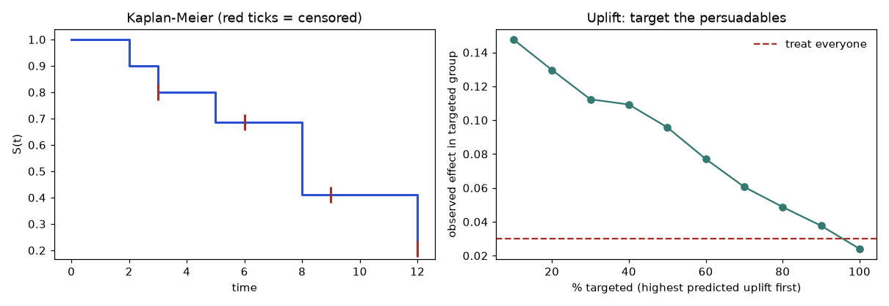
How to read it: in the left panel the curve steps down only at events, while the red ticks (censored subjects) shrink the at-risk group without a drop. On the right, the curve starts high (treating only the top few percent by predicted uplift gives a large measured effect) and falls to the average effect as you add everyone. The red dashed line is "treat everybody". Treating the top 25% gives an observed effect of 0.120, versus 0.024 when treating all (the true mean is 0.03), and targeting by baseline response instead yields 0.004, since the top responders are sure things.
Learning to rank: order is the product
For search and recommendations, a model scores each item for a query and the list is sorted by score. The metric is NDCG (normalised discounted cumulative gain): each result's gain 2^rel − 1 is divided by log₂(position + 1) so that top positions count more, then divided by the best possible ordering. Training methods are pointwise (regress the relevance), pairwise (RankNet, get pairs in the right order) and listwise (LambdaMART, directly weight swaps by their NDCG change); XGBoost and LightGBM offer the last (objective="rank:ndcg", not run here).
import numpy as np
def dcg(r): return sum((2**v - 1) / np.log2(i + 2) for i, v in enumerate(r))
rel = [3, 2, 3, 0, 1, 2]
print("DCG@6", round(dcg(rel), 4), "ideal", round(dcg(sorted(rel, reverse=True)), 4), "NDCG", round(dcg(rel) / dcg(sorted(rel, reverse=True)), 4))
from sklearn.metrics import ndcg_score
print("sklearn", round(ndcg_score([rel], [[6,5,4,3,2,1]]), 4))DCG@6 13.8483 ideal 14.5954 NDCG 0.9488
sklearn 0.9608Problem 16.8.2 Six results with relevance [3, 2, 3, 0, 1, 2] in the order shown. Verify DCG 13.8483 and NDCG 0.9488.
| Step 1 | Gains 2^rel − 1: 7, 3, 7, 0, 1, 3. Discounts 1/log₂(i+1) for positions 1 to 6: 1, 0.6309, 0.5, 0.4307, 0.3869, 0.3562. |
|---|---|
| Step 2 | DCG = 7 + 1.893 + 3.5 + 0 + 0.387 + 1.069 = 13.848. |
| Step 3 | Ideal order [3, 3, 2, 2, 1, 0]: gains 7, 7, 3, 3, 1, 0; DCG = 7 + 4.416 + 1.5 + 1.292 + 0.387 + 0 = 14.595. |
| Answer | NDCG = 13.848 / 14.595 = 0.9488. |
| Check | scikit-learn's ndcg_score prints 0.9608 because it uses the linear gain rel and not 2^rel − 1. Both are valid NDCG variants; always state which one, and never compare numbers across the two. |
Check yourself
- Why can you not simply delete censored customers? Answer: they are a biased sample of "stayed a long time", so the survival estimate is biased.
- Which customers should a coupon never go to? Answer: sure things (waste) and sleeping dogs (harm).
- Why is a relevant result at position 1 worth more than at position 6? Answer: the discount 1 versus 0.356, because users rarely scroll.
Chapter recap
- Prefer an interpretable model when it is accurate enough. If you need a black box, explain it with several tools and report their limits.
- Permutation importance on held-out data beats impurity importance: it rated our junk column at about 0.0006 against 0.090 for impurity.
- Correlated features split or hide importance (age and credit length: 0.068 together, but 0.126 once age was dropped).
- Partial dependence shows an average effect; ICE shows individual curves; surrogates imitate a model, so report their R².
- Shapley values give each feature a fair share of the gap between one prediction and the average; they add up exactly. LIME gives a local slope; counterfactuals give the smallest change that flips a decision.
- Fairness needs group metrics (selection rate, TPR, FPR, calibration). Pick mitigation by diagnosing the source of bias; metrics conflict when base rates differ.
- Test robustness with noise, targeted nudges and poisoned data. Random noise is the easy case.
- Hygiene: baseline first, pipelines, seeds, logs, data tests, documentation, and knowing when not to use ML.
- Rebuilding algorithms from scratch and checking against scikit-learn proves understanding. The interview bank gives short, plain answers to practise aloud.
| Item | Formula or command | Note |
|---|---|---|
| Permutation importance | permutation_importance(m, Xte, yte, n_repeats=20) | shuffle one column, measure score drop |
| PDP | partial_dependence(m, X, [j]) | set column j to v for all rows, average predictions |
| ICE | same without the average | one curve per row |
| Shapley | `φᵢ = Σ [ | S |
| Demographic parity | `P(Ŷ=1 | A) = P(Ŷ=1 |
| Equal opportunity | equal TPR across groups | |
| Adversarial step (linear) | x' = x − ε·sign(w)·(2y−1) | worst-case direction |
| Gradient check | (L(w+e) − L(w−e)) / 2e | compare with backprop |
| Safe pipeline | make_pipeline(Selector(), Model()) | fit inside each fold |
Practice set
1. (easy) A model is f = 3·x₁ + 0·x₂. Which feature has zero permutation importance? Answer: x₂, because shuffling it does not change any prediction.
2. (easy) Group A has 400 applicants and 120 approvals. Group B has 200 applicants and 50 approvals. Compute the selection rates and the disparate impact ratio. Answer: A: 120/400 = 0.30. B: 50/200 = 0.25. Ratio 0.25/0.30 = 0.833, just above the 0.8 rule of thumb.
3. (easy) What do Shapley values add up to? Answer: Prediction minus the average prediction.
4. (medium) A PDP for x₁ with f = x₁·x₂ and rows with x₂ = 2, 4 is evaluated at x₁ = 3. What is the value? Answer: Predictions 6 and 12; average 9.
5. (medium) Exact Shapley for f = x₁ + 2·x₂ at x = (1,1) with baseline (0,0). Answer: No interaction, so each gets its own term: φ₁ = 1, φ₂ = 2; sum 3 = f(1,1) − f(0,0).
6. (medium) Find the bug: "I scaled all data with StandardScaler().fit_transform(X), then did 5-fold CV and got AUC 0.91." What is wrong and what is the fix? Answer: The scaler used the means and spreads of the test folds too (contamination). Put the scaler in a pipeline with the model so it is fit on training folds only. For scaling the effect is small, but the habit matters, and for target-aware steps like feature selection it is large (0.81 versus 0.52 in 16.5).
7. (medium) Group B has 1,690 applicants, of whom 700 would repay; the model approves 380 of those 700. Find the true-positive rate. Answer: 380/700 = 0.543.
8. (hard) A forest shows feature_importances_ of 0.4 for a customer ID column. What do you suspect and how do you check? Answer: The ID lets trees memorize rows (high cardinality bias) or leaks something like time order. Check permutation importance on held-out data (it should be about 0), and split by time or group to see if the score collapses.
9. (hard, interview) Explain SHAP to a bank manager in three sentences. Answer: "For one customer, SHAP starts from the average prediction and shows how much each factor pushed the risk up or down; the pushes add up to the customer's actual score. It is a fair-split rule from game theory. It tells us what the model used, not what caused the customer's situation."
10. (hard, interview) Your fairness audit shows equal approval rates but unequal true-positive rates. Is the model fair? Answer: It meets demographic parity but not equal opportunity: qualified people in one group are approved less often. Whether it is "fair" depends on which criterion matters for the decision. Discuss it with stakeholders, check base rates (different base rates make all criteria impossible together), document the choice.
11. (hard, interview) A model's offline AUC is 0.88 but online it is 0.71. Give four causes in order of what you check first. Answer: (1) Training-serving skew in features. (2) Leakage in the offline set (feature available only after the outcome). (3) Distribution shift between the offline period and now. (4) Label delay or different population or definition. Check by logging serving features and comparing distributions with training.
(easy) At time t, 8 subjects are at risk and 2 have the event. By what factor does S(t) multiply? Answer: 1 − 2/8 = 0.75.
(medium) A Cox model gives β = 0.4 for "support tickets in month 1". What is the hazard ratio per extra ticket and per 3 extra? Answer: e^0.4 = 1.49 per ticket (49% higher risk); e^1.2 = 3.32 for 3.
(medium) Treated conversion 12%, control 9% in the top uplift decile. Is the uplift 3 points or 1.33x? Answer: both, 0.12 − 0.09 = 3 points absolute (1.33 relative); budget with the absolute number.
Prompt pack
You are my patient, practical professor. I am a working professional moving into data roles, and English is my second language, so use simple words. Teach me model explainability: impurity versus permutation importance, partial dependence and ICE, surrogate models, and why correlated features mislead. Use a loan-default example with small numbers. Explain step by step, then ask me three questions one at a time and check each answer before moving on.
You are my patient, practical professor. I am a working professional moving into data roles, and English is my second language. Explain Shapley values from first principles with a three-feature example, then SHAP (TreeSHAP and KernelSHAP), LIME and counterfactual explanations. Give me 6 graded exercises with small numbers (no solutions yet). When I send my answers, mark them and explain each mistake. My answers: [PASTE HERE]
You are my patient, practical professor. I am a working professional moving into data roles, and English is my second language. Teach me fairness in machine learning: sources of bias, demographic parity, equal opportunity, equalized odds, calibration within groups, the impossibility results, and mitigation (reweighing, constraints, group thresholds). Use a lending example with approval counts. Then review my audit plan for a model I might build. My plan: [PASTE HERE]
You are my patient, practical professor. I am a working professional moving into data roles, and English is my second language. Quiz me on ML engineering hygiene and robustness: pipelines and leakage, seeds and experiment tracking, training-serving skew, noise and adversarial tests, data poisoning, technical debt, and when not to use ML. Ask one question at a time, wait for my answer, then correct it and add one extra tip.
You are my patient, practical professor. I am a working professional moving into data roles, and English is my second language. Run a mock machine-learning interview with me: ask 10 questions one at a time (bias-variance, regularization, boosting versus forests, imbalance, metrics, calibration, leakage, SHAP, debugging offline versus online failures, fairness). After each answer score it out of 10, show a short model answer in plain English, and say what to improve. Start now.
A hiring manager opens a candidate's GitHub page. She does not run the code. She reads the README for two minutes and asks three silent questions. Did this person define a real question? Did they test honestly, or did they fool themselves with a leaky score? Can they explain what they built to a non-expert? Most portfolios fail on all three, because they are a notebook that fits a model to a famous dataset and prints "accuracy 0.97". This chapter gives you a method for running a project, and then four complete projects (a price predictor, a churn classifier, a fraud detector and a competition-style workflow). Every code block was run, and every output shown is the real output. By the end you will be able to plan a project, build it in small committed steps, test it, and write it up.
Prerequisites: all earlier chapters, but each project names the exact ones it uses. Software: Python 3, NumPy, pandas, scikit-learn 1.9.1 (the version used for every output here), matplotlib if you want plots. Nothing needs a download, because every dataset is generated by code with a fixed seed.
17.1 How to run a project in this area
Plan the question and the success criteria first
Write three sentences before you write any code.
- The decision. "Someone will use the prediction to decide X." For example: "The sales team will decide which customers get a retention offer."
- The metric and the bar. Pick the metric that matches the decision (Chapter 9), and a baseline to beat. For example: "Total cost on the test set must be at least 25 percent lower than offering nobody and than offering everybody."
- The honest split. Say how the future will differ from your data (new customers? later months?) and choose the split from that (Chapter 8).
If you cannot write these three sentences, you are not ready to start. A project without a baseline is not a project: "R² of 0.94" means nothing until you know a simple rule gets 0.00.
Repo layout
Use the same layout for all projects. Reviewers learn to find things.
project-name/
├── README.md # the front door (template below)
├── requirements.txt # pinned versions
├── Makefile # make data / make train / make test
├── src/
│ ├── data.py # generate or load data; fixed seeds
│ ├── features.py # feature code used by train AND predict
│ ├── train.py # fits, cross-validates, saves model + metrics.json
│ └── evaluate.py # final test-set report, plots
├── tests/
│ ├── test_data.py # shapes, no missing target, no duplicates
│ └── test_leakage.py # train/test never overlap; features are past-only
├── notebooks/
│ └── 01_explore.ipynb # exploration only; no logic that the pipeline needs
├── reports/
│ ├── metrics.json # numbers the README quotes
│ └── figures/ # plots the README shows
└── experiments.csv # one row per experiment (see Project 31)Rule: a number in the README must come from a file in reports/, never from memory.
Environment and dependencies
python3 -m venv .venv && source .venv/bin/activate
pip install numpy pandas scikit-learn matplotlib
pip freeze > requirements.txtPin versions, because results can shift slightly between scikit-learn releases. Put a seed (random_state=0) in every split and every model. Print the library versions at the top of your training log.
Data: sourcing or generating
You have two honest options.
- Public data. Pick a licensed dataset, record the URL and licence in the README, and never commit large raw files (store a download script instead). Check for personal data: never publish names, phone numbers or addresses.
- Generated data. Write a generator with a known truth. Its big advantage is that you can check whether your model found the truth (for example, we know the true noise level, so we know the best possible error). Say clearly in the README that the data is synthetic and what you built into it. All four projects here use generators.
Commit rhythm and good commit messages
Commit when one small thing works. A good rhythm for these projects: about 10 to 15 commits, each 20 to 60 minutes of work.
Good: Bad:
data: add generator with fixed seed update
baseline: median model, MAE 42.8 on test fix stuff
eval: choose threshold on out-of-fold preds final
fix: scaler was fit on all rows (leak) asdfPattern: area: what changed, number if relevant. A reviewer reads your history to see how you think. A commit named "fix: scaler was fit on all rows (leak)" shows you know the most important trap in this field.
Definition of done
A project is done when all of these are true.
- A baseline and at least two real models are compared on the same split.
- The test set was used exactly once, at the end.
- The README states the question, the metric, the result with a plain-language reading, and the limits.
make testpasses, and a fresh clone runs end to end in under 10 minutes.- At least one failure or surprise is written down honestly (for example, "the tuned boosting model lost to ridge, here is why").
README template
# <Project title>: <one-line result>
## Question
Who uses the prediction, and for what decision?
## Data
Where it comes from (or the generator), size, label definition, licence.
If synthetic: what was built into it.
## Method
Split strategy and why. Baseline. Models tried. Tuning budget.
## Results
| Model | Metric (CV) | Metric (test) |
|---|---|---|
Plain-language reading: "this means ..."
## What I would not trust
Limits, assumptions, where it fails.
## Reproduce
make data && make train && make test
## Next steps
Three honest extensions.Demo and deploy options
Rank them by effort: (1) a README with two figures and a results table (always do this); (2) a short screen recording of make train; (3) a small Streamlit or Gradio page that takes inputs and shows a prediction (not run here, these tools may not be installed); (4) a model served behind a tiny web API with a Dockerfile. Pick (1) and one of the others. A deploy with no evaluation is worth less than a README with honest evaluation.
Writing the LinkedIn or blog post
Use five short parts: the problem in one sentence; the trap you almost fell into (the most interesting part); the result with one number and its meaning; one chart; the link. Example opening: "My first churn model looked great until I noticed it was overconfident. Here is how calibration fixed the decision." Do not claim "99 percent accuracy". Do claim things you can defend in an interview.
Testing and debugging checklist for ML projects
| Check | How | What failure looks like |
|---|---|---|
| Baseline first | Dummy model on the same split | Your model barely beats it |
| Shuffled-label test | Shuffle y, retrain, score | Score far above chance means leakage (Chapter 10) |
| Split hygiene | Assert train and test ids do not overlap | A customer in both sets |
| Pipeline fit | All scaling, imputing, selection inside a Pipeline | CV score higher than the fresh-data score |
| Fixed seeds | Run twice | Different numbers each run |
| Learning curve | Score vs training size | Train score high, validation low: overfit |
| Shape and range tests | Probabilities in [0, 1], no NaN | Silent NaN in features |
| Error slices | Residuals or errors by group | One zone or month much worse |
| Tiny-subset test | Fit on 20 rows | A model that cannot memorise 20 rows has a bug |
17.2 Project: Prediction With a Tuned Model and an Explanation (House-Price Style)
Goal and why employers care
Predict the price of a house from its area, rooms, age, distance to the centre and zone, then explain which inputs matter and how wrong the model typically is. Almost every business has a "predict a number" problem (delivery time, demand, price), and employers want to see that you can choose a metric, beat a baseline, tune honestly and explain the result. The twist in this project: the simplest tuned model may win, and saying so honestly is the skill.
Skills used
Chapter 2 (Linear Regression From Scratch) for the linear baseline and residuals; Chapter 3 (Regularization and Model Complexity) for ridge; Chapter 7 (Gradient Boosting) for the boosted model; Chapter 8 (Validation Design and Leakage) for the split; Chapter 9 (Metrics, Thresholds, Calibration, Uncertainty) for MAE and R²; Chapter 11 (Hyperparameter Tuning) for random search; Chapter 16 (Explainability) for permutation importance.
Data
Generated. We know the truth: price is a linear function plus a distance interaction plus noise with standard deviation 12. So the best possible MAE (mean absolute error) is about 0.798 × 12 ≈ 9.6, because for normal noise the mean absolute value is σ × √(2/π) ≈ 0.798σ. This is our ruler: no model can honestly go below about 9.6.
Architecture
make_houses() ──► train/test split (80/20, fixed seed)
│
┌───────────┼──────────────┐
▼ ▼ ▼
median baseline ridge boosting + random search (5-fold CV on train only)
└───────────┼──────────────┘
▼
one test-set report ──► permutation importance ──► residuals by zoneStep-by-step build
- Generate the data and look at it.
import numpy as np, pandas as pd
from sklearn.model_selection import train_test_split, RandomizedSearchCV
from sklearn.dummy import DummyRegressor
from sklearn.linear_model import Ridge
from sklearn.pipeline import make_pipeline
from sklearn.preprocessing import StandardScaler
from sklearn.ensemble import HistGradientBoostingRegressor
from sklearn.inspection import permutation_importance
from sklearn.metrics import mean_absolute_error, r2_score
def make_houses(n=3000, seed=0):
rng = np.random.default_rng(seed)
area = rng.normal(120, 35, n).clip(35, 300)
rooms = np.clip((area/35 + rng.normal(0, .6, n)).round(), 1, 8)
age = rng.uniform(0, 60, n)
dist = rng.gamma(3, 3, n)
zone = rng.choice(["north", "centre", "south"], n, p=[.35, .25, .4])
zone_eff = pd.Series(zone).map({"north": 0, "centre": 30, "south": -10}).to_numpy()
price = (20 + 1.1*area + 4*rooms - 0.5*age - 2.0*dist + zone_eff
+ 0.004*area*np.maximum(0, 15-dist)*3 + rng.normal(0, 12, n)).clip(15, None)
return pd.DataFrame(dict(area=area, rooms=rooms, age=age, dist=dist, zone=zone, price=price))
df = make_houses()
df["zone"] = df["zone"].astype("category")
X, y = df.drop(columns="price"), df["price"]
X_tr, X_te, y_tr, y_te = train_test_split(X, y, test_size=0.2, random_state=42)
print(df.describe().round(1).loc[["mean","std","min","max"]])
print("missing:", int(df.isna().sum().sum()))Output:
area rooms age dist price
mean 118.9 3.4 30.2 9.1 144.0
std 34.5 1.2 17.3 5.2 52.2
min 35.0 1.0 0.0 0.3 15.0
max 227.3 7.0 60.0 40.1 308.6
missing: 0- Baseline. Predict the median price for everyone. Anything worse than this is a bug.
- Ridge with scaling and one-hot zone (Chapter 3). Boosting with defaults, then random search with 15 trials and 5-fold CV on the training set only.
def report(name, m):
p = m.predict(X_te)
print(f"{name:22s} MAE={mean_absolute_error(y_te,p):6.2f} R2={r2_score(y_te,p):.3f}")
base = DummyRegressor(strategy="median").fit(X_tr, y_tr); report("median baseline", base)
Xd = pd.get_dummies(X_tr, columns=["zone"]).astype(float); Xtd = pd.get_dummies(X_te, columns=["zone"]).astype(float)
ridge = make_pipeline(StandardScaler(), Ridge(alpha=1.0)).fit(Xd, y_tr)
p = ridge.predict(Xtd)
print(f"{'ridge':22s} MAE={mean_absolute_error(y_te,p):6.2f} R2={r2_score(y_te,p):.3f}")
hgb = HistGradientBoostingRegressor(categorical_features="from_dtype", random_state=0).fit(X_tr, y_tr); report("hgb default", hgb)
space = dict(learning_rate=[0.03,0.05,0.1,0.2], max_leaf_nodes=[8,15,31], min_samples_leaf=[10,20,40,80],
l2_regularization=[0,1,10], max_iter=[150,300,600])
rs = RandomizedSearchCV(HistGradientBoostingRegressor(categorical_features="from_dtype", random_state=0),
space, n_iter=15, cv=5, scoring="neg_mean_absolute_error", random_state=0, n_jobs=1).fit(X_tr, y_tr)
print("best params:", rs.best_params_, " cv MAE=%.2f" % -rs.best_score_)
report("hgb tuned (test)", rs.best_estimator_)median baseline MAE= 42.81 R2=-0.002
ridge MAE= 10.00 R2=0.945
hgb default MAE= 10.87 R2=0.934
best params: {'min_samples_leaf': 20, 'max_leaf_nodes': 8, 'max_iter': 300, 'learning_rate': 0.03, 'l2_regularization': 1} cv MAE=10.17
hgb tuned (test) MAE= 10.62 R2=0.938Read it: the median baseline is wrong by 42.8 on average (R² near 0 means it explains nothing). Ridge gets 10.00, almost the floor of 9.6. Tuning helped boosting (10.87 to 10.62) but did not beat ridge, because the truth is almost linear and a linear model has the right shape.
- Explain with permutation importance (shuffle one column on the test set, see how much MAE grows):
pi = permutation_importance(rs.best_estimator_, X_te, y_te, n_repeats=10, random_state=0, scoring="neg_mean_absolute_error")
for i in pi.importances_mean.argsort()[::-1]: print(f" {X.columns[i]:6s} {pi.importances_mean[i]:6.2f} +- {pi.importances_std[i]:.2f}") area 36.83 +- 0.62
dist 9.90 +- 0.52
zone 9.65 +- 0.61
age 4.10 +- 0.36
rooms 1.51 +- 0.14Shuffling area makes the average error 36.8 worse; shuffling rooms only 1.5 worse, because rooms is mostly a copy of area (they are correlated, so importance is shared; Chapter 16 explains why).
- Residual check (actual minus predicted):
res = y_te - rs.best_estimator_.predict(X_te)
print("residual mean %.2f, std %.2f" % (res.mean(), res.std()))
print(res.groupby(X_te["zone"], observed=True).agg(["mean","std"]).round(2))residual mean 0.06, std 13.14
mean std
zone
centre 3.72 12.35
north -0.85 12.76
south -1.42 13.66The mean near 0 is good. The centre zone is under-predicted by 3.7 on average, a small bias worth one line in the README.
Evaluation and acceptance criteria
- Baseline MAE reported (42.81) and beaten by at least 4 times.
- Test MAE within 15 percent of the known floor (9.6): ridge 10.00 passes; tuned boosting 10.62 passes (10.6 is 11 percent above).
- Tuning done only inside the training set (CV), test used once.
- Importance and residual-by-group tables in the README.
Common pitfalls
- Tuning on the test set. Detect: the tuning code mentions
X_te. Fix:RandomizedSearchCVon training data only. - Believing the complex model must win. Detect: compare with ridge on the same split. Here ridge wins.
- Reading importance as cause. Detect: ask whether two columns are copies (area, rooms). Importance is not "if I change this, price changes".
- Reporting R² only. Detect: R² 0.94 hides an error of 10.6 currency units. Always add MAE in real units.
- Ignoring group errors. Detect: residuals by zone.
Three extensions
- Add quantile regression (Chapter 9) to give a price range, and check that 90 percent of test houses fall inside.
- Add a drift test: train on cheap houses, test on expensive ones, and write down what breaks.
- Replace the generator with a real public housing dataset and compare the ranking of models.
Interview talking points
Q1. Why did ridge beat your tuned boosting model? Because the true relationship is almost a straight line, and ridge has exactly that shape with few parameters. Boosting has to build the line from many small steps and picks up noise. A flexible model only wins when there is a shape (curves, interactions) that the simple model cannot express.
Q2. How do you know 10.6 is good? I compared it with a baseline (42.8) and with the noise floor I built into the data (about 9.6). It is close to the floor, so there is little left to gain. With real data you do not know the floor, so you compare with a baseline and with human error.
Q3. What does permutation importance tell you, and what does it not? It tells how much the score drops when a column is scrambled, so how much the model relies on it. It does not prove cause, and correlated columns share the credit.
README outline
Question; Data (synthetic, with the built-in noise floor); Method (split, baseline, ridge, tuned boosting); Results table (42.81, 10.00, 10.87, 10.62); Importance bar chart; Residual table; What I would not trust (synthetic data, only 3 zones); Reproduce; Next steps.
17.3 Project: Classification With Calibration and a Cost-Based Threshold (Churn Style)
Goal and why employers care
Predict which subscription customers will cancel, produce probabilities you can trust, and choose the cut-off from money, not from habit. Teams that act on predictions (send an offer, call a customer) need three things: ranking quality, honest probabilities, and a threshold tied to costs. Most portfolios stop at accuracy. This one does not.
Skills used
Chapter 4 (Logistic Regression and Classification); Chapter 7 (Gradient Boosting); Chapter 8 (Validation Design and Leakage) for out-of-fold predictions; Chapter 9 (Metrics, Thresholds, Calibration, Uncertainty) for AUC, Brier score, reliability tables, isotonic calibration and cost thresholds.
Data
Generated: 8,000 customers with tenure (months), monthly bill, support tickets, late payments and contract type. Churn follows a logistic rule, so a logistic regression has the correct shape. The churn rate comes out at 0.383.
Architecture
data ─► stratified split 75/25 ─► train
│ │
│ ┌──────────┴───────────┐
│ ▼ ▼
│ logistic (scaled) boosting ─► isotonic calibration (5-fold)
│ │
│ out-of-fold probs (5-fold) ─► choose threshold from cost
▼
test set, used once: AUC, Brier, log loss, reliability, total costStep-by-step build
- Generate data and split (stratified, fixed seed).
- Fit three probability models and compare AUC (ranking), Brier score and log loss (probability quality; lower is better).
import numpy as np, pandas as pd
from sklearn.model_selection import train_test_split, cross_val_predict
from sklearn.linear_model import LogisticRegression
from sklearn.ensemble import HistGradientBoostingClassifier
from sklearn.calibration import CalibratedClassifierCV, calibration_curve
from sklearn.metrics import roc_auc_score, brier_score_loss, log_loss
from sklearn.pipeline import make_pipeline
from sklearn.preprocessing import StandardScaler
def make_customers(n=8000, seed=1):
rng = np.random.default_rng(seed)
tenure = rng.integers(1, 61, n); monthly = rng.normal(60, 20, n).clip(15, 150)
tickets = rng.poisson(1.2, n); late = rng.binomial(1, .25, n)
monthly_contract = rng.binomial(1, .6, n)
z = -0.6 - 0.04*tenure + 0.015*(monthly-60) + 0.45*tickets + 0.7*late + 0.9*monthly_contract
churn = rng.binomial(1, 1/(1+np.exp(-z)))
return pd.DataFrame(dict(tenure=tenure, monthly=monthly, tickets=tickets, late=late,
monthly_contract=monthly_contract, churn=churn))
df = make_customers(); X, y = df.drop(columns="churn"), df.churn
print("churn rate", round(y.mean(), 3))
X_tr, X_te, y_tr, y_te = train_test_split(X, y, test_size=.25, stratify=y, random_state=0)
def report(name, p):
print(f"{name:22s} AUC={roc_auc_score(y_te,p):.3f} Brier={brier_score_loss(y_te,p):.4f} LogLoss={log_loss(y_te,p):.4f}")
make_lr = lambda: make_pipeline(StandardScaler(), LogisticRegression(max_iter=1000))
make_gb = lambda: HistGradientBoostingClassifier(max_iter=300, learning_rate=0.1, max_leaf_nodes=31, min_samples_leaf=20, random_state=0)
lr = make_lr().fit(X_tr, y_tr); p_lr = lr.predict_proba(X_te)[:, 1]; report("logistic", p_lr)
gb = make_gb().fit(X_tr, y_tr); p_gb = gb.predict_proba(X_te)[:, 1]; report("boosting (raw)", p_gb)
iso = CalibratedClassifierCV(make_gb(), method="isotonic", cv=5).fit(X_tr, y_tr)
p_iso = iso.predict_proba(X_te)[:, 1]; report("boosting + isotonic", p_iso)churn rate 0.383
logistic AUC=0.750 Brier=0.1930 LogLoss=0.5671
boosting (raw) AUC=0.702 Brier=0.2171 LogLoss=0.6420
boosting + isotonic AUC=0.702 Brier=0.2076 LogLoss=0.6015Reading: logistic regression wins on all three, as expected when the truth is logistic. The flexible boosting model chases noise (lower AUC, and its probabilities are overconfident). Calibration does not change the ranking (AUC is the same 0.702) but improves the probabilities (Brier 0.2171 to 0.2076, log loss 0.6420 to 0.6015).
- Reliability table. Five groups of customers by predicted probability (quantile bins). Each pair is (average predicted, actual churn rate).
for name, p in [("raw boosting", p_gb), ("isotonic", p_iso)]:
obs, mean_pred = calibration_curve(y_te, p, n_bins=5, strategy="quantile")
print(name.ljust(13), " ".join(f"({m:.2f}->{o:.2f})" for m, o in zip(mean_pred, obs)))raw boosting (0.06->0.17) (0.20->0.29) (0.35->0.33) (0.53->0.49) (0.79->0.62)
isotonic (0.17->0.17) (0.29->0.29) (0.38->0.36) (0.47->0.47) (0.62->0.63)For raw boosting, the top group is told "79 percent" but really churns 62 percent. That is overconfidence. After isotonic calibration the pairs lie on the diagonal.
- Cost-based threshold. Suppose missing a churner costs 60 and a wasted offer costs 15. Flag a customer when
p ≥ t*, wheret* = C_FP / (C_FP + C_FN) = 15 / 75 = 0.2. Now check it empirically, choosing the threshold on out-of-fold training predictions, never on the test set.
C_FN, C_FP = 60, 15 # missing a churner costs 60; a wasted offer costs 15
def cost(y_true, p, t):
pred = p >= t; fn = ((~pred) & (y_true == 1)).sum(); fp = (pred & (y_true == 0)).sum()
return C_FN*fn + C_FP*fp
grid = np.linspace(.02, .98, 97)
oof = cross_val_predict(make_lr(), X_tr, y_tr, cv=5, method="predict_proba")[:, 1]
t_best = grid[np.argmin([cost(y_tr, oof, t) for t in grid])]
print("theory t* =", round(C_FP/(C_FP+C_FN), 3), "| chosen on OOF t =", round(t_best, 2))
print("TEST cost: t=0.5 ->", cost(y_te, p_lr, .5), "| t=chosen ->", cost(y_te, p_lr, t_best),
"| flag nobody ->", C_FN*int(y_te.sum()), "| flag everybody ->", C_FP*int((1-y_te).sum()))theory t* = 0.2 | chosen on OOF t = 0.21
TEST cost: t=0.5 -> 25395 | t=chosen -> 15930 | flag nobody -> 45900 | flag everybody -> 18525Reading: the data-driven threshold (0.21) matches the formula (0.20). Using the default 0.5 costs 25,395. Using 0.21 costs 15,930, which is 37 percent lower. It also beats "offer everyone" (18,525) by 14 percent and "offer nobody" (45,900) by 65 percent. Check by hand: the test set has 2,000 rows; 45,900 / 60 = 765 churners and 18,525 / 15 = 1,235 stayers; 765 + 1,235 = 2,000.
Evaluation and acceptance criteria
- AUC reported with a baseline (0.5), Brier and log loss reported.
- Reliability table where each bin is within 0.05 of the diagonal after calibration (isotonic: yes, max gap 0.02).
- Cost at the chosen threshold at least 25 percent below the cost at 0.5 and below both trivial policies: 15,930 vs 25,395 (37 percent), 18,525 and 45,900. Pass.
- Threshold chosen without touching test data.
Common pitfalls
- Default threshold 0.5. Detect: the code never mentions a cost.
- Calibrating and testing on the same rows. Detect:
CalibratedClassifierCVwithcv="prefit"on rows the model trained on. Use cross-fitting as above. - Picking the threshold on the test set. Detect: the grid search uses
y_te. Use out-of-fold training predictions. - Accuracy as the headline. At a 38 percent churn rate "nobody churns" scores 62 percent accuracy. Always compare with trivial policies.
- Costs invented without saying so. Detect: README does not state the cost ratio. State it and show a table for 2 or 3 ratios.
Three extensions
- Sweep the cost ratio (C_FN from 20 to 200) and plot threshold against ratio.
- Add an uplift view: only offer to customers whose churn is reduced by the offer (needs a randomised offer; use simulated data).
- Add conformal prediction sets (Chapter 9) and report coverage.
Interview talking points
Q1. Why not just use 0.5? Because the two mistakes cost different amounts. If missing a churner costs 4 times more than a wasted offer, you should flag customers who are only 20 percent likely to churn. 0.5 is a habit, not a rule.
Q2. AUC is the same before and after calibration. So why calibrate? AUC only checks the order. Calibration fixes the size of the probabilities. If you use the number to compute expected cost, or to tell a manager "70 percent", it must be honest.
Q3. How do you pick a threshold without cheating? I get out-of-fold predictions on the training data, search the threshold there, and then apply it once to the test set. The test set never helps choose anything.
README outline
Question and the two costs; Data; Models and why logistic is the baseline to beat; Table of AUC, Brier, log loss; Reliability table figure; Cost table (0.5, chosen, nobody, everybody); What I would not trust (costs are assumptions); Reproduce; Next steps.
17.4 Project: Fraud and Anomaly Detection With Extreme Imbalance and Time-Aware Validation
Goal and why employers care
Find the rare fraudulent card payments (about 0.4 percent) in a stream of 120,000 transactions over 90 days, and validate in a way that mimics deployment: train on the past, test on the future. Banks, shops and delivery apps all face rare-event detection, and the classic mistake (random split, accuracy score) hides total failure. This project shows that failure with numbers, then fixes it.
Skills used
Chapter 12 (Hard Data Situations) for imbalance and distribution shift; Chapter 8 (Validation Design and Leakage) for time-aware splits; Chapter 9 (Metrics, Thresholds, Calibration, Uncertainty) for PR-AUC and recall at a budget; Chapter 14 (Anomaly Detection, Semi-Supervised, Transfer and Online Learning) for the idea of alert budgets and concept drift; Chapter 7 (Gradient Boosting) for the model.
Data
Generated, with a built-in change. During days 0 to 59 fraud is mostly night-time and foreign transactions. From day 60 the pattern shifts: night and foreign matter less and large amounts (over 150) matter more. Real fraudsters do adapt, so this is realistic. Features: hour, log amount, foreign flag, night flag, and card_prior_tx (how many earlier transactions the card has; computed only from the past because rows are sorted by day).
Architecture
transactions (sorted by day)
days 0-44 ─ train ─► model ─► days 45-59 validation (time-aware, tune here)
days 0-59 ─ train ─► model ─► days 60-89 test (the "future")
days 0-74 / 30-74 ─► model ─► days 75-89 test (retraining policy)
metrics: PR-AUC, ROC-AUC, recall in the top 1% of alertsStep-by-step build
- Generate and inspect. Always print the base rate per period.
import numpy as np, pandas as pd
from sklearn.ensemble import HistGradientBoostingClassifier
from sklearn.metrics import average_precision_score, roc_auc_score
from sklearn.model_selection import train_test_split
def make_tx(n=120_000, days=90, seed=7):
rng = np.random.default_rng(seed)
day = np.sort(rng.integers(0, days, n))
hour = rng.integers(0, 24, n)
amount = rng.lognormal(3.3, 1.0, n)
card = rng.integers(0, 6000, n)
foreign = rng.binomial(1, .05, n)
night = (hour < 5).astype(int)
z = -7.0 + 1.6*night + 2.0*foreign
late = day >= 60
z = z + late*(-1.5*night - 1.5*foreign + 1.4*np.log(amount/27)*(amount > 150) + 2.0*(amount > 150))
fraud = rng.binomial(1, 1/(1+np.exp(-z)))
df = pd.DataFrame(dict(day=day, hour=hour, amount=amount, card=card, foreign=foreign, night=night, fraud=fraud))
df["card_prior_tx"] = df.groupby("card").cumcount() # past-only: earlier transactions of this card
df["log_amt"] = np.log1p(df.amount)
return df
df = make_tx()
feats = ["hour","log_amt","foreign","night","card_prior_tx"]
print("rows", len(df), " fraud rate %.4f" % df.fraud.mean())
print(df.groupby(pd.cut(df.day,[-1,29,59,89])).fraud.agg(["size","sum","mean"]).round(4))rows 120000 fraud rate 0.0040
size sum mean
day
(-1, 29] 39950 92 0.0023
(29, 59] 39835 107 0.0027
(59, 89] 40215 284 0.0071A model that says "never fraud" is 99.6 percent accurate and catches nothing, so we will not use accuracy.
- Define one evaluation function. PR-AUC (average precision) is the area under the precision-recall curve; with a base rate of 0.4 percent, a useless model scores about 0.004. Recall@1% asks: if investigators can look at only 1 percent of transactions, what fraction of all fraud is in that 1 percent?
def fit_eval(tr, te, name):
m = HistGradientBoostingClassifier(max_iter=200, learning_rate=.05, max_leaf_nodes=15,
min_samples_leaf=40, random_state=0).fit(tr[feats], tr.fraud)
s = m.predict_proba(te[feats])[:,1]
k = int(0.01*len(te)); top = np.argsort(-s)[:k]
print(f"{name:34s} PR-AUC={average_precision_score(te.fraud,s):.3f} ROC-AUC={roc_auc_score(te.fraud,s):.3f} "
f"recall@1%={te.fraud.values[top].sum()/te.fraud.sum():.3f} (frauds in test={te.fraud.sum()})")- Compare a random split with time-aware splits.
train = df[df.day < 60]; test = df[df.day >= 60]
rtr, rte = train_test_split(df, test_size=.3, stratify=df.fraud, random_state=0)
fit_eval(rtr, rte, "random split (looks great, is not)")
fit_eval(train, test, "time split: train<60, test>=60")
tr2, va2 = train[train.day < 45], train[train.day >= 45]
fit_eval(tr2, va2, "time validation: <45 -> 45..59")
te2 = df[df.day >= 75]
fit_eval(df[df.day < 75], te2, "all <75 -> test 75..89")
fit_eval(df[(df.day >= 30) & (df.day < 75)], te2, "last 45 days (30..74) -> 75..89")
fit_eval(df[df.day < 60], te2, "stale (<60) -> test 75..89")random split (looks great, is not) PR-AUC=0.133 ROC-AUC=0.859 recall@1%=0.359 (frauds in test=145)
time split: train<60, test>=60 PR-AUC=0.011 ROC-AUC=0.624 recall@1%=0.018 (frauds in test=284)
time validation: <45 -> 45..59 PR-AUC=0.012 ROC-AUC=0.701 recall@1%=0.109 (frauds in test=55)
all <75 -> test 75..89 PR-AUC=0.150 ROC-AUC=0.934 recall@1%=0.274 (frauds in test=135)
last 45 days (30..74) -> 75..89 PR-AUC=0.157 ROC-AUC=0.920 recall@1%=0.281 (frauds in test=135)
stale (<60) -> test 75..89 PR-AUC=0.011 ROC-AUC=0.641 recall@1%=0.007 (frauds in test=135)Reading. The random split reports recall@1% of 0.359, because it mixes both fraud patterns into training. The honest time split reports 0.018: the model trained on the old pattern catches almost nothing of the new one (PR-AUC 0.011 against a base rate of 0.0071 in that period is barely better than guessing). The fix is not a fancier model, it is retraining on recent data: models that saw days up to 74 reach recall@1% of 0.27 to 0.28 on days 75 to 89, and the stale model gets 0.007. Notice also that the time-aware validation (0.109) warned us that something was off, so a careful team sees the problem before deployment.
- Write the policy. For the README: "retrain weekly on the last 45 days; monitor PR-AUC and the fraud rate by week; alert when PR-AUC drops by more than a set amount."
Evaluation and acceptance criteria
- All metrics computed on a later period than training.
- PR-AUC and recall at an alert budget reported, not accuracy.
- A table that shows the gap between the random-split estimate (0.359) and the time-split result (0.018). The gap itself is a result.
- A retraining experiment showing recent data beats stale data (0.281 vs 0.007 recall@1%).
- Tests: no training row has a day later than the earliest test day;
card_prior_txfor a card's first transaction is 0.
Common pitfalls
- Random split on time-ordered data. Detect: compare with a time split; a big drop means leakage from the future.
- Using accuracy or ROC-AUC alone. ROC-AUC looks good (0.859) even when the alert list is poor. Detect: also compute PR-AUC and recall at a budget.
- Features that peek at the future. For example "card total transactions in the whole dataset". Detect: compute every feature with only earlier rows (we used a cumulative count).
- Tiny test counts. The validation window had 55 frauds, so numbers are noisy. Detect: print the number of positives in every evaluation and report ranges.
- Re-balancing before the split. Oversampling before splitting copies rows into both sides. Detect: resample inside the training fold only.
Three extensions
- Add
class_weightor downsampling of the negatives and compare PR-AUC (Chapter 12), always inside the training period. - Add an unsupervised score (isolation forest, Chapter 14) as a feature and test whether it helps on the later period.
- Build a weekly rolling backtest and plot recall@1% by week to see the drift.
Interview talking points
Q1. Why is accuracy useless here? Only 0.4 percent of payments are fraud, so a model that always says "fine" is 99.6 percent accurate and finds no fraud. I use precision-recall measures and recall at the number of alerts the team can really review.
Q2. Why a time split? In real life the model is trained on the past and used on the future. A random split lets the model see the future patterns during training, so the score is too good. In my project, random gave 0.359 recall and the time split gave 0.018.
Q3. What do you do when the score drops over time? I check whether the data changed (drift). Then I retrain on recent data, and I monitor a weekly metric so the drop is seen early. A new algorithm is rarely the answer.
README outline
Question and alert budget; Data and the built-in pattern change; Metrics and why; Table of six experiments; The random-vs-time gap figure; Retraining policy; What I would not trust (synthetic, small positive counts); Reproduce; Next steps.
17.5 Project: A Kaggle-Style Competition Workflow (Experiment Log, Cross-Validation, Ensembling)
Goal and why employers care
Predict whether an online order is delivered late, but run the project the way strong competitors do: one fixed cross-validation scheme, an experiment log, out-of-fold (OOF) predictions for every model, and a blend. The point is the workflow, not the leaderboard. A clean log shows you can iterate without fooling yourself, which is what teams need.
Skills used
Chapter 8 (Validation Design and Leakage) for CV and the locked holdout; Chapter 4 (Logistic Regression and Classification) with feature engineering; Chapter 6 (Decision Trees and Random Forests) and Chapter 7 (Gradient Boosting); Chapter 10 (Error Analysis, Debugging Models, and Comparing Models) for judging small differences; Chapter 11 (Hyperparameter Tuning) for the search budget.
Data
Generated: 6,000 orders with distance, weight, items, hour, rain, courier experience and two pure noise columns. Lateness depends on distance, rain, courier experience, a rush-hour effect that grows with items, and a wavy effect of weight. The late rate is 0.285.
Architecture
data ─► locked holdout (20%, never looked at until the end)
│
development set (80%) ── fixed StratifiedKFold(5, seed=42) used by EVERY experiment
│
for each experiment: out-of-fold predictions ─► experiments.csv (one row)
│
blend OOF predictions (average, rank average)
│
refit chosen models on all development data ─► holdout score, onceStep-by-step build
- Generate, then lock the holdout.
- Define the CV once and reuse it. Same folds for every experiment, so scores are comparable.
- Run baseline and model experiments, store OOF predictions, and log.
import numpy as np, pandas as pd
from scipy.stats import rankdata
from sklearn.model_selection import StratifiedKFold, train_test_split
from sklearn.linear_model import LogisticRegression
from sklearn.ensemble import RandomForestClassifier, HistGradientBoostingClassifier, ExtraTreesClassifier
from sklearn.pipeline import make_pipeline
from sklearn.preprocessing import StandardScaler
from sklearn.metrics import roc_auc_score
def make_orders(n=6000, seed=3):
rng = np.random.default_rng(seed)
X = pd.DataFrame(dict(distance=rng.gamma(2, 6, n), weight=rng.lognormal(1, .6, n), n_items=rng.integers(1, 12, n),
hour=rng.integers(8, 22, n), rain=rng.binomial(1, .2, n), courier_exp=rng.uniform(0, 5, n),
noise1=rng.normal(size=n), noise2=rng.normal(size=n)))
z = (-2.0 + 0.09*X.distance + 0.5*X.rain - 0.25*X.courier_exp + 0.25*(X.hour.between(17, 20))*X.n_items/3
+ 0.6*np.sin(X.weight*1.5) + 0.04*X.distance*X.rain*2)
return X, rng.binomial(1, 1/(1+np.exp(-z)))
X, y = make_orders()
print("late rate %.3f" % y.mean())
Xd, Xh, yd, yh = train_test_split(X, y, test_size=.2, stratify=y, random_state=0)
Xd, Xh = Xd.reset_index(drop=True), Xh.reset_index(drop=True)
models = {
"logreg": make_pipeline(StandardScaler(), LogisticRegression(max_iter=1000)),
"rf": RandomForestClassifier(300, min_samples_leaf=10, n_jobs=1, random_state=0),
"extra": ExtraTreesClassifier(300, min_samples_leaf=10, n_jobs=1, random_state=0),
"hgb": HistGradientBoostingClassifier(learning_rate=.03, max_iter=250, max_leaf_nodes=8, min_samples_leaf=30, random_state=0),
}
skf = StratifiedKFold(5, shuffle=True, random_state=42)
oof = {}; log = []
for name, m in models.items():
o = np.zeros(len(yd)); fold_auc = []
for tr, va in skf.split(Xd, yd):
m.fit(Xd.iloc[tr], yd[tr]); o[va] = m.predict_proba(Xd.iloc[va])[:,1]; fold_auc.append(roc_auc_score(yd[va], o[va]))
oof[name] = o
log.append(dict(exp=name, oof_auc=roc_auc_score(yd, o), fold_std=np.std(fold_auc)))- A feature-engineering experiment, then blends:
def fe(df):
d = df.copy(); d["dist_rain"] = d.distance*d.rain; d["rush"] = d.hour.between(17,20).astype(int)
d["rush_items"] = d.rush*d["n_items"]; d["sinw"] = np.sin(1.5*d.weight); return d
o = np.zeros(len(yd)); fa = []
for tr, va in skf.split(Xd, yd):
m = make_pipeline(StandardScaler(), LogisticRegression(max_iter=1000)).fit(fe(Xd).iloc[tr], yd[tr])
o[va] = m.predict_proba(fe(Xd).iloc[va])[:,1]; fa.append(roc_auc_score(yd[va], o[va]))
oof["logreg_fe"] = o; log.append(dict(exp="logreg_fe", oof_auc=roc_auc_score(yd, o), fold_std=np.std(fa)))
names = ["logreg_fe","rf","hgb"]
avg = np.mean([oof[k] for k in names], axis=0)
log.append(dict(exp="blend_avg(logreg_fe,rf,hgb)", oof_auc=roc_auc_score(yd, avg), fold_std=np.nan))
rk = np.mean([rankdata(oof[k]) for k in names], axis=0)
log.append(dict(exp="blend_rank", oof_auc=roc_auc_score(yd, rk), fold_std=np.nan))
print(pd.DataFrame(log).round(4).to_string(index=False))late rate 0.285
exp oof_auc fold_std
logreg 0.7444 0.0189
rf 0.7532 0.0100
extra 0.7445 0.0183
hgb 0.7622 0.0128
logreg_fe 0.7737 0.0142
blend_avg(logreg_fe,rf,hgb) 0.7687 NaN
blend_rank 0.7682 NaNWrite the same table to experiments.csv with the date, a one-line note and the git commit.
- Refit and score the holdout once.
fm = {"logreg_fe": make_pipeline(StandardScaler(), LogisticRegression(max_iter=1000)), "rf": models["rf"], "hgb": models["hgb"]}
ph = {}
for k, m in fm.items():
A, B = (fe(Xd), fe(Xh)) if k=="logreg_fe" else (Xd, Xh)
m.fit(A, yd); ph[k] = m.predict_proba(B)[:,1]; print(f"holdout {k:10s} AUC={roc_auc_score(yh, ph[k]):.4f}")
print("holdout blend_avg AUC=%.4f" % roc_auc_score(yh, np.mean(list(ph.values()),axis=0)))holdout logreg_fe AUC=0.7776
holdout rf AUC=0.7771
holdout hgb AUC=0.7776
holdout blend_avg AUC=0.7821Reading, honestly. The feature engineering gave the biggest jump (logreg 0.7444 to 0.7737), larger than any change of algorithm. The blend did not win on the OOF scores (0.7687 against 0.7737 for the single engineered model), but did slightly on the holdout (0.7821). The fold standard deviation is about 0.014, so differences below about 0.01 are not reliable. A good write-up says exactly that, and does not claim the blend "improved" the model.
Evaluation and acceptance criteria
- One fixed CV scheme, identical folds in every row of
experiments.csv. - Every experiment logged with score, fold spread and a one-line idea.
- Holdout scored once, after the final choice, and its numbers reported next to the OOF numbers (0.7737 OOF vs 0.7776 holdout is consistent).
- A short statement of which differences are within noise (under about 0.01 here).
- Blends use OOF predictions only, never predictions on training rows.
Common pitfalls
- Changing the folds between experiments. Detect: the seed or
n_splitsdiffers across code cells. Defineskfonce. - Fitting a blender on training predictions. Detect: blend weights fitted on predictions of rows the models trained on. Use OOF.
- Chasing the third decimal. Detect: compare the gain with
fold_std. A gain of 0.003 with std 0.014 is noise. - Peeking at the holdout. Detect: the holdout variable appears before the final cell. Keep it in a separate file loaded only by
evaluate.py. - Feature engineering inside the full data. Target encoding or scaling that uses all rows leaks. Detect: put it in a Pipeline.
Three extensions
- Add repeated CV (3 repeats of 5 folds) and report the mean and the spread across repeats.
- Add stacking: a logistic regression trained on the OOF predictions, evaluated with a second, nested CV.
- Add a time or group structure to the data and change the CV accordingly (Chapter 8).
Interview talking points
Q1. Why keep a log of experiments? Without it you forget what you tried, and you start trusting the best of many tries, which is optimistic. A log with fixed folds lets me compare fairly and lets a colleague repeat my work.
Q2. Why did your ensemble not beat the best single model? The three models were already similar in what they learn, so averaging added little, and the best single model had better features. Ensembles help most when models make different mistakes. I report this honestly instead of hiding it.
Q3. What is out-of-fold prediction? For each row, the prediction comes from a model that did not train on that row. Collecting them gives an honest prediction for every row of the development data, which I can use to score and to blend.
README outline
Question; Data; The validation scheme and the locked holdout; Experiment table (all seven rows); What gave the gain (features); Noise statement; Holdout result; Reproduce; Next steps.
17.6 Scaffolding a Project: Brief, Baseline Ladder and Experiment Log
The projects in 17.2 to 17.5 are finished examples. The hard part when you start your own is the blank page. This section is the scaffold: a one-page brief you fill in before any code, a baseline ladder that tells you when to stop, and an experiment log that makes your README honest.
The one-page brief
| Field | Write this | Example |
|---|---|---|
| Decision | Who does what differently because of the model | Support lead calls the top 100 accounts each week |
| Unit and label | One row is what; label known when | Account-month; churn known 30 days later |
| Metric and floor | One number plus the baseline to beat | PR-AUC; prior rate is the floor |
| Split | Matches how the model will be used | Train months 1 to 9, validate 10, test 11 to 12; group by account |
| Cost of errors | Money or minutes per false positive and negative | Call = 10 minutes; a lost account = 2,000 |
| Out of scope | What you will not do | No deep learning, no new data sources |
The baseline ladder
Run rungs in order and stop when the next rung adds less than the noise: (1) predict the prior or the mean, (2) a simple rule a person would use, (3) a linear model, (4) a boosted tree model, (5) anything fancier. Every rung is logged. Here is a ladder on a 10%-positive problem with 5-fold out-of-fold predictions:
import numpy as np, pandas as pd
from sklearn.datasets import make_classification
from sklearn.dummy import DummyClassifier
from sklearn.linear_model import LogisticRegression
from sklearn.ensemble import HistGradientBoostingClassifier
from sklearn.model_selection import cross_val_predict, StratifiedKFold
from sklearn.metrics import average_precision_score
X, y = make_classification(3000, 10, n_informative=5, weights=[0.9], random_state=0)
cv = StratifiedKFold(5, shuffle=True, random_state=0); log = []
for name, m in [("prior (dummy)", DummyClassifier(strategy="prior")), ("logistic", LogisticRegression(max_iter=1000)), ("hist-GB", HistGradientBoostingClassifier(random_state=0))]:
p = cross_val_predict(m, X, y, cv=cv, method="predict_proba")[:, 1]
log.append({"id": len(log) + 1, "model": name, "PR-AUC": round(average_precision_score(y, p), 3)})
df = pd.DataFrame(log); df["lift_vs_baseline"] = (df["PR-AUC"] / df["PR-AUC"][0]).round(2)
print(df.to_string(index=False)) id model PR-AUC lift_vs_baseline
1 prior (dummy) 0.103 1.00
2 logistic 0.816 7.92
3 hist-GB 0.875 8.50Problem 17.6.1 Read the log and decide where to stop, given that the seed-to-seed noise of PR-AUC on this data is about 0.02.
| Step 1 | Rung 1 (prior) scores 0.103, which equals the positive rate; this is the floor any model must beat. |
|---|---|
| Step 2 | Logistic regression reaches 0.816: 7.9 times the floor. This is the big jump; the problem is learnable. |
| Step 3 | Histogram boosting reaches 0.875, a gain of 0.059, which is about three times the noise, so it is real. |
| Answer | Stop at boosting: it is clearly above the linear model, and a further rung would need to beat 0.875 by more than 0.02 to be worth its cost. Record the decision in the log. |
| Check | If the third row had read 0.825 (within the noise), the right choice would be logistic regression: simpler, faster, easier to explain. |
The experiment log and the README
Keep a table with one row per run: id, date, what changed (one change only), data version, metric with spread, verdict. Your README's results section is then a copy of the final rows, plus a sentence on what did not work. A project that shows three failed ideas and why is more convincing than one that shows only the winner.
Check yourself
- What is the floor for a 5%-positive problem measured by PR-AUC? Answer: about 0.05, the positive rate.
- Why log failed experiments? Answer: it prevents repeating them and shows the reader that the final choice was earned.
Chapter recap
- A project is judged on its question, its honest evaluation and its README, not on how fancy the model is.
- Write the decision, the metric with a baseline, and the split before writing code.
- Keep one repo layout, pin versions, fix seeds, and commit small steps with clear messages.
- A simple tuned model can beat a complex one when the truth is simple. Prove it with a baseline and a known noise floor (house prices: ridge 10.00 vs boosting 10.62, floor about 9.6).
- Good probabilities and a good cut-off are separate from a good ranking. Choose the threshold from costs, on out-of-fold data (churn: t* = C_FP/(C_FP+C_FN) = 0.2).
- With rare events, use PR-AUC and recall at an alert budget, and validate forward in time (fraud: random 0.359 vs time-aware 0.018).
- A competition workflow is fixed folds, a log, out-of-fold predictions, a blend, and a holdout used once.
- Say what you would not trust. It makes the project more believable.
| Pattern | Code or rule |
|---|---|
| Cost threshold | t* = C_FP / (C_FP + C_FN) |
| Noise floor of MAE (normal noise) | 0.798 × σ |
| Out-of-fold probabilities | cross_val_predict(model, X, y, cv=5, method="predict_proba") |
| Calibrate | CalibratedClassifierCV(model, method="isotonic", cv=5) |
| Recall at a budget | take the top k scores, count frauds found divided by all frauds |
| Fixed folds | skf = StratifiedKFold(5, shuffle=True, random_state=42) once |
Practice set
1. (easy) Missing a churner costs 100 and a wasted offer costs 10. What is the best threshold in theory? Answer: t* = 10 / (10 + 100) = 0.0909. Flag customers with at least about 9 percent churn probability.
2. (easy) Fraud is 0.4 percent of 120,000 payments. What accuracy does "never fraud" get, and how many frauds does it catch? Answer: 99.6 percent accuracy and 0 frauds. About 480 frauds are missed (we measured 483).
3. (easy) House-price noise has standard deviation 12. What is the best possible MAE? Answer: About 0.798 × 12 = 9.6. A test MAE of 10.0 is within about 4 percent of that.
4. (medium) Find the bug: t = grid[np.argmin([cost(y_te, p_te, t) for t in grid])], then the team reports cost(y_te, p_te, t). Answer: The threshold is chosen and scored on the same test data, so the result is optimistic. Choose t on out-of-fold training predictions and score the test set once.
5. (medium) In the competition project the gain from a blend is 0.003 and the fold standard deviation is 0.014. What do you write? Answer: The gain is within noise, so I do not claim an improvement. I would repeat CV several times or collect more data before deciding.
6. (medium) Why did random search plus boosting not beat ridge in Project 6? Answer: The relationship is almost linear, so ridge has the right shape and little variance. Boosting adds flexibility the problem does not need, and it fits some noise. Acceptance: your answer mentions shape of the truth and variance.
7. (interview) "Your fraud model has 99.7 percent accuracy. Is it good?" Answer in four sentences. Answer: Not by itself. With 0.4 percent fraud, always saying "legit" gets 99.6 percent. I would look at PR-AUC and the recall inside the number of alerts the team can review. I would also check that the test period is later than the training period.
8. (interview) "How would you show a reviewer that your churn probabilities are trustworthy?" Answer: A reliability table or plot: group customers by predicted probability and compare with the real churn rate in each group, plus Brier score and log loss. If the groups lie on the diagonal, the probabilities are honest. If not, calibrate (isotonic or Platt) using cross-fitting.
(medium) Fill in the brief for "predict which delivery will be late": give the unit, split and metric. Answer: unit = one delivery, label known at delivery time; split by date (last 4 weeks for test); metric = recall at a fixed 10% flagged rate, with the prior (late rate) as the floor, since the team can only call 10% of customers.
Prompt pack
You are my patient, practical professor. I am a working professional moving into data roles and I am building a portfolio project in machine learning. Help me plan it. My idea is: [PASTE IDEA HERE]. Ask me, one at a time, for: the decision the prediction supports, the metric and a baseline, the honest split (random, grouped, or forward in time), and the data source or generator. Then write a one-page plan with a repo layout, a list of 10 commits, a definition of done, and three risks. Explain every term the first time you use it, in simple English.
You are my patient, practical professor. I am a working professional moving into data roles. I finished a machine learning project and want a strict review of its evaluation. Here are my README and key code: [PASTE HERE]. Check, in this order: the split strategy, leakage (preprocessing, features, thresholds chosen on test data), the baseline, the metric choice for the decision, the number of experiments tried versus the noise in the scores, and calibration. For each issue, say how I can detect it with a small test and how to fix it. End with a list of claims in my README that I should soften.
You are my patient, practical professor. I am a working professional moving into data roles. My model has a strange result: [DESCRIBE, for example validation score 0.95 but fresh-data score 0.65]. Walk me through debugging step by step. Start with the cheapest checks (shuffled-label test, tiny-subset test, duplicate rows, a feature that is known only after the event, scaling fitted on all rows), and tell me exactly what code to run and what result would confirm each cause. Do not guess the answer; make me do each check and report back before you move on.
You are my patient, practical professor. I am a working professional moving into data roles, and I am building a classification project where the two kinds of mistakes cost different amounts. Teach me how to choose the threshold from cost, using my numbers: cost of a missed positive [X], cost of a false alarm [Y], positive rate [Z]. Show the formula, work one example with real numbers, then give me a short Python plan to choose the threshold on out-of-fold predictions and to compare with the policies "flag nobody" and "flag everybody". Then quiz me with three questions, one at a time.
You are my patient, practical professor. I am a working professional moving into data roles. Help me turn my finished machine learning project into a LinkedIn or blog post and an interview story. Here is my README: [PASTE HERE]. Write a 200-word post with this shape: the problem, the trap I almost fell into, one honest number with its meaning, one limit. Then run a mock interview: ask me five questions about this project, one at a time, wait for my answer, and give feedback on clarity, honesty and correctness before the next question.
Most candidates can call model.fit(). Far fewer can say what happens inside it, or how much to trust the score it prints. These three projects give you that evidence. In the first you write five classic algorithms in plain NumPy and check them against scikit-learn with automated tests. In the second you run a controlled study that shows, with numbers, how a wrong split or a leaky pipeline inflates a score. In the third you cluster shop customers and prove the groups are stable instead of accidental. Every code block was run (NumPy 2.5.3, scikit-learn 1.9.1, fixed seeds), and the outputs below are the real outputs. Use the method in Chapter 17, section 17.1 (repo layout, commit rhythm, README template, definition of done) for all three.
Prerequisites: Chapter 2 (Linear Regression From Scratch), Chapter 4 (Logistic Regression and Classification), Chapter 5 (Support Vector Machines, k-Nearest Neighbours and Naive Bayes), Chapter 6 (Decision Trees and Random Forests), Chapter 8 (Validation Design and Leakage), Chapter 11 (Hyperparameter Tuning), Chapter 13 (Unsupervised Learning).
18.1 Project: A From-Scratch ML Library in NumPy, Tested Against scikit-learn
Goal and why employers care
Build mlscratch.py with linear regression, logistic regression, k-nearest neighbours, a decision tree and k-means, about 80 lines in total, plus a test file that proves each one gives the same answers as scikit-learn. Interviewers love this because it shows two rare skills at once: you understand the algorithm, and you know how to test numerical code. "Matches scikit-learn to 4 decimals" is a strong sentence.
Skills used
Chapter 2 (Linear Regression From Scratch) for least squares; Chapter 4 (Logistic Regression and Classification) for the log-loss gradient and Newton's method; Chapter 5 (Support Vector Machines, k-Nearest Neighbours and Naive Bayes) for k-NN; Chapter 6 (Decision Trees and Random Forests) for Gini splits; Chapter 13 (Unsupervised Learning) for k-means.
Data
Generated inside the tests with make_regression, make_classification and make_blobs. Fixed seeds, so the tests are repeatable.
Architecture
mlscratch-project/
├── mlscratch.py # five classes, NumPy only
├── test_mlscratch.py # one test per class, compares with scikit-learn
├── README.md
└── requirements.txt # numpy, scikit-learn (for tests only)
Design rule: the library imports ONLY numpy. scikit-learn is the "answer key"
and appears only in the tests.Step-by-step build
- Write the library one class at a time, test each class before the next. The complete library follows. Read the comments, because each class uses a choice that must match scikit-learn to pass.
"""Tiny ML library in NumPy. Educational, not fast."""
import numpy as np
class LinearRegression:
def fit(self, X, y):
A = np.c_[np.ones(len(X)), X]
self.coef_ = np.linalg.lstsq(A, y, rcond=None)[0]
return self
def predict(self, X):
return np.c_[np.ones(len(X)), X] @ self.coef_
class LogisticRegression:
"""Newton's method (IRLS) with a small L2 penalty on the weights (not the intercept)."""
def __init__(self, C=1e6, n_iter=50):
self.lam, self.n_iter = 1.0 / C, n_iter
def fit(self, X, y):
A = np.c_[np.ones(len(X)), X]; w = np.zeros(A.shape[1])
R = self.lam * np.eye(A.shape[1]); R[0, 0] = 0
for _ in range(self.n_iter):
p = 1 / (1 + np.exp(-A @ w))
grad = A.T @ (p - y) + R @ w
H = A.T @ (A * (p * (1 - p))[:, None]) + R
step = np.linalg.solve(H, grad); w -= step
if np.abs(step).max() < 1e-10: break
self.w_ = w; return self
def predict_proba(self, X):
p = 1 / (1 + np.exp(-(np.c_[np.ones(len(X)), X] @ self.w_)))
return np.c_[1 - p, p]
def predict(self, X):
return (self.predict_proba(X)[:, 1] >= .5).astype(int)
class KNN:
def __init__(self, k=5): self.k = k
def fit(self, X, y): self.X_, self.y_ = np.asarray(X, float), np.asarray(y); return self
def predict(self, X):
d = ((np.asarray(X, float)[:, None, :] - self.X_[None, :, :]) ** 2).sum(-1)
idx = np.argsort(d, axis=1, kind="stable")[:, :self.k]
votes = self.y_[idx]
return np.array([np.bincount(v).argmax() for v in votes])
class DecisionTree:
def __init__(self, max_depth=3, min_leaf=1): self.max_depth, self.min_leaf = max_depth, min_leaf
@staticmethod
def _gini(y):
p = np.bincount(y) / len(y); return 1 - (p ** 2).sum()
def _best(self, X, y):
best = (None, None, self._gini(y)); n = len(y)
for j in range(X.shape[1]):
vals = np.unique(X[:, j])
for t in (vals[:-1] + vals[1:]) / 2:
L = X[:, j] <= t
if L.sum() < self.min_leaf or (~L).sum() < self.min_leaf: continue
g = (L.sum() * self._gini(y[L]) + (~L).sum() * self._gini(y[~L])) / n
if g < best[2] - 1e-12: best = (j, t, g)
return best
def _grow(self, X, y, depth):
if depth == self.max_depth or len(np.unique(y)) == 1: return int(np.bincount(y).argmax())
j, t, _ = self._best(X, y)
if j is None: return int(np.bincount(y).argmax())
L = X[:, j] <= t
return (j, t, self._grow(X[L], y[L], depth + 1), self._grow(X[~L], y[~L], depth + 1))
def fit(self, X, y): self.tree_ = self._grow(np.asarray(X, float), np.asarray(y), 0); return self
def _one(self, x, node):
while isinstance(node, tuple): node = node[2] if x[node[0]] <= node[1] else node[3]
return node
def predict(self, X): return np.array([self._one(x, self.tree_) for x in np.asarray(X, float)])
class KMeans:
def __init__(self, k=3, init=None, n_iter=100, seed=0): self.k, self.init, self.n_iter, self.seed = k, init, n_iter, seed
def fit(self, X):
X = np.asarray(X, float)
if self.init is None:
rng = np.random.default_rng(self.seed); C = X[rng.choice(len(X), self.k, replace=False)]
else: C = np.array(self.init, float)
for _ in range(self.n_iter):
lab = ((X[:, None, :] - C[None]) ** 2).sum(-1).argmin(1)
newC = np.array([X[lab == c].mean(0) if (lab == c).any() else C[c] for c in range(self.k)])
if np.allclose(newC, C): break
C = newC
self.centers_, self.labels_ = C, lab
self.inertia_ = ((X - C[lab]) ** 2).sum()
return self
def predict(self, X): return ((np.asarray(X, float)[:, None, :] - self.centers_[None]) ** 2).sum(-1).argmin(1)Why these choices: linear regression uses lstsq (stable least squares, better than inverting a matrix). Logistic regression uses Newton's method, which needs only a handful of iterations, and a penalty 1/C on the weights but not on the intercept, which is how scikit-learn defines its penalty. k-NN uses a stable sort so ties break the same way each time. The tree tries every midpoint between sorted unique values and keeps the split with the lowest weighted Gini impurity. k-means uses Lloyd's loop: assign each point to the nearest centre, move each centre to the mean of its points, repeat until nothing moves.
- Write the tests. The comparison must use the same settings on both sides (same penalty, same starting centres).
import numpy as np
from sklearn.datasets import make_regression, make_classification, make_blobs
from sklearn import linear_model, neighbors, tree, cluster
import mlscratch as ms
def test_linear():
X, y = make_regression(200, 4, noise=5, random_state=0)
a = ms.LinearRegression().fit(X, y); b = linear_model.LinearRegression().fit(X, y)
assert np.allclose(a.coef_[1:], b.coef_) and np.isclose(a.coef_[0], b.intercept_)
assert np.allclose(a.predict(X), b.predict(X))
def test_logistic():
X, y = make_classification(300, 5, random_state=1)
a = ms.LogisticRegression(C=1.0).fit(X, y); b = linear_model.LogisticRegression(C=1.0, tol=1e-10, max_iter=1000).fit(X, y)
assert np.allclose(a.w_[1:], b.coef_[0], atol=1e-4) and np.isclose(a.w_[0], b.intercept_[0], atol=1e-4)
assert np.allclose(a.predict_proba(X)[:, 1], b.predict_proba(X)[:, 1], atol=1e-4)
def test_knn():
X, y = make_classification(200, 4, random_state=2); Xt = X[:50] + .01
a = ms.KNN(5).fit(X, y).predict(Xt); b = neighbors.KNeighborsClassifier(5).fit(X, y).predict(Xt)
assert (a == b).all()
def test_tree():
X, y = make_classification(200, 4, random_state=3)
a = ms.DecisionTree(max_depth=3).fit(X, y); b = tree.DecisionTreeClassifier(max_depth=3, random_state=0).fit(X, y)
agree = (a.predict(X) == b.predict(X)).mean(); print("tree agreement", agree)
assert agree >= 0.99
def test_kmeans():
X, _ = make_blobs(300, centers=3, random_state=4)
init = X[[0, 1, 2]]
a = ms.KMeans(3, init=init).fit(X); b = cluster.KMeans(3, init=init, n_init=1, algorithm="lloyd").fit(X)
assert np.allclose(a.centers_, b.cluster_centers_, atol=1e-6) and np.isclose(a.inertia_, b.inertia_)
def test_logistic_shape_and_range():
X, y = make_classification(50, 3, n_informative=2, n_redundant=0, random_state=5); p = ms.LogisticRegression().fit(X, y).predict_proba(X)
assert p.shape == (50, 2) and np.allclose(p.sum(1), 1) and (p >= 0).all()
if __name__ == "__main__": # tiny runner, so the file also works without pytest
for name, fn in list(globals().items()):
if name.startswith("test_"):
fn(); print("PASS", name)- Run them.
python3 test_mlscratch.pyPASS test_linear
PASS test_logistic
PASS test_knn
tree agreement 1.0
PASS test_tree
PASS test_kmeans
PASS test_logistic_shape_and_range(If pytest is installed you can run pytest -q instead. It was not installed where this chapter was tested, so the file has a tiny runner at the bottom.)
- Break it on purpose, to see that your tests can fail. If we change
R[0, 0] = 0topass(so the intercept is also penalised), the weights still match to 1e-4, and only the intercept check catches the bug: the intercept becomes 0.0528 instead of scikit-learn's 0.0546. Running the test file then stops with anAssertionErrorat the line that compares intercepts. A test that cannot fail is not a test. Always include one deliberate-break check in your write-up.
- Add a timing note. k-NN here builds an
n_test × n_train × featuresarray, which is simple but memory-hungry. Say so in the README. Honesty about limits is part of the project.
Evaluation and acceptance criteria
- All five classes pass tests against scikit-learn: linear coefficients and predictions equal (
np.allclose), logistic probabilities within 1e-4, k-NN predictions identical, tree agreement at least 0.99 on training data (we got 1.0), k-means centres within 1e-6 and equal inertia. - The library file imports only NumPy.
- At least one deliberately broken version fails a test.
- README states what is not implemented (no regularisation path, no pruning, no speed tuning).
Common pitfalls
- Different settings on the two sides. scikit-learn's logistic regression is penalised by default (
C=1.0). Detect: results differ by a small, steady amount; print both settings. Fix: setCexplicitly on both. - Penalising the intercept. Detect: coefficients agree but the intercept is slightly off. Test the intercept separately.
- Random starts for k-means. Two runs reach different local optima. Detect: compare with a fixed
init. Fix: pass the same starting centres to both. - Test data that breaks the generator.
make_classificationraisedValueError: Number of informative, redundant and repeated features must sum to less than the number of total featureswhen we first asked for 3 features with default settings. Fix: setn_informative=2, n_redundant=0. Read errors fully. - Tolerance too loose.
atol=1e-1passes almost anything. Detect: break the code on purpose and see if the test fails.
Three extensions
- Add ridge regression and Lasso (coordinate descent), and test against scikit-learn.
- Add a random forest from your tree (bootstrap rows, random feature subsets) and compare accuracy with scikit-learn's forest.
- Add gradient descent versions of the linear and logistic models and plot loss against iteration (Chapter 11).
Interview talking points
Q1. How do you know your implementation is right? I wrote tests that compare it with a trusted library under identical settings, and I broke my own code on purpose to confirm that the tests fail. Matching in one case is not proof, so I used several datasets and checked weights, probabilities and predictions.
Q2. Why Newton's method for logistic regression? The loss is smooth and convex, and Newton uses the curvature (the Hessian) to take big, well-aimed steps. It reaches the answer in a few iterations. The cost is solving a small linear system each step, which is fine for few features and slow for thousands.
Q3. What does k-means actually minimise, and what can go wrong? It minimises the sum of squared distances from each point to its centre (inertia). Each step lowers or keeps it, but it can stop at a local minimum, so the starting centres matter. That is why we run several starts.
README outline
Why this exists; the five algorithms with one line each; how to run the tests; table of "what is compared and to what tolerance"; the deliberate-break experiment; limits; next steps.
18.2 Project: A Validation and Hyperparameter-Tuning Study That Shows Leakage
Goal and why employers care
Run three controlled experiments in which you know the true answer, so you can see exactly how much a careless evaluation lies. Employers care because the most expensive ML failures are not bad algorithms, they are inflated scores. A study like this is rare in portfolios and very convincing.
Skills used
Chapter 8 (Validation Design and Leakage) for splits, groups, time and pipelines; Chapter 11 (Hyperparameter Tuning) for random search and over-tuning; Chapter 6 (Decision Trees and Random Forests) for the models; Chapter 10 (Error Analysis, Debugging Models, and Comparing Models) for the shuffled-label idea.
Data
All generated, because we need to know the truth.
- Study A, Q1 (new customers). 400 customers, 12 visits each. Each customer has a fixed habit that makes their rows look alike, and a hidden personal tendency that drives their outcome. Random folds put the same customer in train and validation, so the model can memorise the customer.
- Study A, Q2 (next months). The link between feature
x1and the outcome fades and flips sign over 12 months. - Study B. 100 rows, 1,000 random features, labels that are pure coin flips. The true AUC is 0.5.
- Study C. A weak signal in 10 features, a small validation set of 60 rows, 100 random configurations of a decision tree, repeated 30 times.
Architecture
Study A: one dataset, several split strategies ─► compare each estimate with the TRUTH
Study B: noise labels ─► leaky vs pipeline selection
Study C: many configurations, small validation ─► winner's validation score vs fresh score
all studies: fixed seeds, one script, one results tableStep-by-step build
- Put all three studies in one script (
study.py). Read it once, then run it.
import numpy as np, pandas as pd
from sklearn.model_selection import KFold, GroupKFold, TimeSeriesSplit, cross_val_score, StratifiedKFold, ParameterSampler
from sklearn.ensemble import RandomForestClassifier
from sklearn.linear_model import LogisticRegression
from sklearn.feature_selection import SelectKBest, f_classif
from sklearn.pipeline import make_pipeline
from sklearn.tree import DecisionTreeClassifier
from sklearn.metrics import roc_auc_score
# ---------- Study A: split strategy ----------
def make_visits(n_cust=400, per=12, seed=0):
rng = np.random.default_rng(seed); rows = []
for c in range(n_cust):
quirk = rng.normal(0, 1.5, 3); base = rng.normal(0, 2) # customer-specific habit (identifies the customer)
for t in range(per):
x = quirk + rng.normal(0, .15, 3)
w1 = 1.0 - 0.25*t # relationship changes with time
z = base + w1*x[1]
rows.append((c, t, *x, rng.binomial(1, 1/(1+np.exp(-z)))))
return pd.DataFrame(rows, columns=["cust","month","x0","x1","x2","y"])
d = make_visits(); F = ["x0","x1","x2"]
model = lambda: RandomForestClassifier(150, random_state=0, n_jobs=1)
def cv(splitter, data, groups=None):
return cross_val_score(model(), data[F], data.y, groups=groups, cv=splitter, scoring="roc_auc").mean()
# Question 1: "will it work for NEW customers?" Truth = train on customers 0-299, score customers 300-399.
old, new = d[d.cust < 300], d[d.cust >= 300]
truth1 = roc_auc_score(new.y, model().fit(old[F], old.y).predict_proba(new[F])[:,1])
print("rows", len(d), "customers", d.cust.nunique())
print("Q1 new customers:")
print(f" random KFold(5) : {cv(KFold(5, shuffle=True, random_state=0), old):.3f}")
print(f" GroupKFold(5) by cust : {cv(GroupKFold(5), old, old.cust):.3f}")
print(f" TRUTH (unseen customers): {truth1:.3f}")
# Question 2: "will it work next month?" A drifting world with no repeated customers.
def make_drift(n=6000, seed=5):
rng = np.random.default_rng(seed); t = np.sort(rng.integers(0, 12, n)); X = rng.normal(size=(n, 3))
z = (1.0 - 0.25*t) * X[:,1] + 0.5*X[:,2] # the weight on x1 fades and flips sign
return pd.DataFrame(dict(month=t, x0=X[:,0], x1=X[:,1], x2=X[:,2], y=rng.binomial(1, 1/(1+np.exp(-z)))))
dd = make_drift(); past, future = dd[dd.month < 9], dd[dd.month >= 9]
truth2 = roc_auc_score(future.y, model().fit(past[F], past.y).predict_proba(future[F])[:,1])
print("Q2 next months (train months 0-8, score months 9-11):")
print(f" random KFold(5) : {cv(KFold(5, shuffle=True, random_state=0), past):.3f}")
print(f" TimeSeriesSplit(4) : {cv(TimeSeriesSplit(4), past):.3f}")
print(f" TRUTH (future months) : {truth2:.3f}")
# ---------- Study B: leakage in feature selection (labels are pure noise) ----------
cvs = StratifiedKFold(5, shuffle=True, random_state=0); W, R = [], []
for seed in range(20):
rng = np.random.default_rng(seed); Xn = rng.normal(size=(100, 1000)); yn = rng.integers(0, 2, 100)
Xsel = SelectKBest(f_classif, k=20).fit_transform(Xn, yn) # WRONG: selection saw every row
W.append(cross_val_score(LogisticRegression(max_iter=1000), Xsel, yn, cv=cvs, scoring="roc_auc").mean())
R.append(cross_val_score(make_pipeline(SelectKBest(f_classif, k=20), LogisticRegression(max_iter=1000)), Xn, yn, cv=cvs, scoring="roc_auc").mean())
print(f"noise labels, mean of 20 datasets: select-then-CV (leak) AUC={np.mean(W):.3f}; selection inside pipeline AUC={np.mean(R):.3f}; truth 0.5")
# ---------- Study C: over-tuning on a small validation set (30 repeats) ----------
space = dict(max_depth=list(range(1,15)), min_samples_leaf=list(range(1,40)), max_features=[1,2,3,5,10], criterion=["gini","entropy"])
def gen(rng, n):
X = rng.normal(size=(n, 10)); return X, (X[:,0] + 0.5*X[:,1] + rng.normal(0, 2.0, n) > 0).astype(int)
best_val, fresh_of_best, default_fresh = [], [], []
for rep in range(30):
rng = np.random.default_rng(100+rep); Xt, yt = gen(rng, 150); Xv, yv = gen(rng, 60); Xf, yf = gen(rng, 5000)
sc = []
for p in ParameterSampler(space, 100, random_state=rep):
m = DecisionTreeClassifier(random_state=0, **p).fit(Xt, yt)
sc.append((roc_auc_score(yv, m.predict_proba(Xv)[:,1]), roc_auc_score(yf, m.predict_proba(Xf)[:,1])))
sc = np.array(sc); b = sc[:,0].argmax(); best_val.append(sc[b,0]); fresh_of_best.append(sc[b,1])
print(f"mean best validation AUC={np.mean(best_val):.3f}; mean AUC of that same winner on 5000 fresh rows={np.mean(fresh_of_best):.3f}")- Run it and read the output.
rows 4800 customers 400
Q1 new customers:
random KFold(5) : 0.724
GroupKFold(5) by cust : 0.560
TRUTH (unseen customers): 0.508
Q2 next months (train months 0-8, score months 9-11):
random KFold(5) : 0.593
TimeSeriesSplit(4) : 0.571
TRUTH (future months) : 0.533
noise labels, mean of 20 datasets: select-then-CV (leak) AUC=0.906; selection inside pipeline AUC=0.509; truth 0.5
mean best validation AUC=0.717; mean AUC of that same winner on 5000 fresh rows=0.611- Read each study.
Study A, new customers. Random KFold says AUC 0.724. Grouped CV (never splitting a customer across folds) says 0.560. The truth, scoring customers the model never saw, is 0.508, which is basically chance. Random folds are too optimistic by 0.22 because the model recognised customers. Grouped CV is much closer.
Study A, next months. Random KFold says 0.593, TimeSeriesSplit says 0.571, and the real future is 0.533. Both are optimistic, because the signal changed. The forward-in-time split is closer, and its gap (0.04) is the honest measure of how much the world shifted. A split cannot remove drift, it can only reveal it.
Study B. Selecting the 20 "best" features using all rows and then cross-validating gives AUC 0.906 on labels that are pure noise. Putting the selection inside the pipeline gives 0.509, matching the truth of 0.5. The wrong version is not a small mistake, it creates a fake model.
Study C. The winner of 100 configurations scores 0.717 on the validation set on average, but only 0.611 on 5,000 fresh rows. The 0.106 gap is selection optimism: picking the maximum of many noisy scores. With a bigger validation set, fewer configurations, or nested CV (Chapter 8) the gap shrinks.
- Make one figure. A bar chart of "estimate vs truth" for each study (matplotlib; not run here). Label the bars with numbers.
- Write the rule book in the README: group when rows share an entity, go forward in time when the future is the target, put every learned step in the pipeline, and keep the final test untouched.
Evaluation and acceptance criteria
- Every study reports the estimate and the truth, not just the estimate.
- The leaky estimate is at least 0.2 above the truth in Study A (Q1) and Study B: 0.724 vs 0.508, and 0.906 vs 0.5. Pass.
- The corrected method is within 0.06 of the truth: grouped CV is 0.052 above the truth (0.560 vs 0.508), the pipeline is 0.009 above. Pass.
- Seeds fixed, runtime under 5 minutes, one command reproduces the table.
Common pitfalls
- Reusing one dataset's luck. A single run can mislead. Study B and C average over 20 and 30 repeats. Detect: change the seed and see if the story survives.
- Mixing up the question. Random CV is fine for "same customers, new rows", wrong for "new customers". Detect: write the deployment sentence first.
- Leaving the selection step outside the Pipeline. Detect: look for
fit_transformon all data beforecross_val_score. - Believing a CV score after heavy tuning. Detect: count how many configurations you tried and compare the winner on fresh data.
- A study without a known truth. If you cannot say what the right answer is, you cannot measure the lie. Keep generators.
Three extensions
- Add nested CV for Study C and show that its estimate (0.61 region) is much closer to the fresh score.
- Add a "target leak" feature recorded after the event and show the score jump (Chapter 8).
- Add stratified versus plain KFold on a rare-event dataset and show the variance of the estimates over 50 repeats.
Interview talking points
Q1. Why did your cross-validation score drop when you grouped by customer? Because random folds let the model see the same customer in training and validation, so it learned the customer, not the pattern. Grouped CV only validates on customers it has never seen, which matches the real use of predicting for new customers.
Q2. What is selection optimism? If you try 100 configurations and pick the highest validation score, that highest number is partly luck. The luck does not transfer to new data. In my study the winner dropped from 0.717 to 0.611.
Q3. What is the simplest rule against leakage? Anything that learns from data (scaling, imputing, feature selection, encoding) must be fitted on the training part only. The easiest way to follow the rule is to put every such step inside a pipeline and cross-validate the pipeline.
README outline
The three questions; data generators; results table (estimate vs truth for each strategy); one figure; the rule book; limits (synthetic, one model family); reproduce; next steps.
18.3 Project: Customer Segmentation With Clustering and Stability Analysis
Goal and why employers care
Group 1,600 shop customers by how recently, how often and how much they buy, then prove that the groups are stable instead of showing a pretty scatter plot. Marketing teams use segments constantly, and clustering always returns some groups, even in random data. A candidate who tests stability and names the segments in business words stands out.
Skills used
Chapter 13 (Unsupervised Learning) for k-means, silhouette and clustering ideas; Chapter 8 (Validation Design and Leakage) for the resampling mindset; Chapter 9 (Metrics, Thresholds, Calibration, Uncertainty) for the bootstrap; Chapter 16 (Explainability) for explaining segments by their averages.
Data
Generated. Three hidden customer types: loyal (recent, frequent, large baskets), bargain (middle recency, frequent, small baskets) and lapsed (long ago, rare, large baskets). We keep the hidden label only to check the result, as a real analyst would not have it.
Architecture
shoppers table (recency, orders per year, average basket)
│ scale each column (mean 0, sd 1)
▼
k-means for k = 2..7 ─► silhouette, inertia
│ bootstrap stability: refit on resamples, compare with ARI
▼
choose k (data + business meaning) ─► profile each segment ─► name them
▼
drift check: next period assigned by old centres vs refitStep-by-step build
- Generate, scale, and run the whole analysis.
import numpy as np, pandas as pd
from sklearn.cluster import KMeans
from sklearn.preprocessing import StandardScaler
from sklearn.metrics import silhouette_score, adjusted_rand_score
def make_shoppers(seed=0):
rng = np.random.default_rng(seed)
# name n recency(mean,sd) orders/yr(mean,sd) basket(mean,sd)
spec = [("loyal", 500, (12, 5), (12, 2), (30, 4)),
("bargain", 700, (40, 15), (12, 3), (14, 3)),
("lapsed", 400, (160, 50), (2, 1), (35, 10))]
parts = [pd.DataFrame(dict(recency=rng.normal(*r, n).clip(1), orders=rng.normal(*o, n).clip(1),
basket=rng.normal(*m, n).clip(5), true=name)) for name, n, r, o, m in spec]
df = pd.concat(parts, ignore_index=True)
df["annual_spend"] = df.orders * df.basket
return df.sample(frac=1, random_state=0).reset_index(drop=True)
df = make_shoppers(); F = ["recency","orders","basket"]
print(df.groupby("true")[F+["annual_spend"]].mean().round(1))
Xs = StandardScaler().fit_transform(df[F])
print("k | silhouette | inertia | bootstrap-ARI(mean±sd)")
def boot_stability(X, k, B=30, seed=0):
rng = np.random.default_rng(seed); ref = KMeans(k, n_init=10, random_state=0).fit(X).labels_; aris = []
for b in range(B):
idx = rng.choice(len(X), len(X), replace=True)
m = KMeans(k, n_init=10, random_state=b).fit(X[idx]); aris.append(adjusted_rand_score(ref, m.predict(X)))
return np.mean(aris), np.std(aris)
for k in range(2, 8):
km = KMeans(k, n_init=10, random_state=0).fit(Xs); m, s = boot_stability(Xs, k)
print(f"{k} | {silhouette_score(Xs, km.labels_):.3f} | {km.inertia_:8.1f} | {m:.3f} ± {s:.3f}")
km = KMeans(3, n_init=10, random_state=0).fit(Xs)
print("ARI vs hidden truth:", round(adjusted_rand_score(df.true, km.labels_), 3))
df["seg"] = km.labels_
print(pd.crosstab(df.seg, df.true))
print(df.groupby("seg")[F+["annual_spend"]].agg("mean").round(1).assign(size=df.groupby("seg").size()))
# mistake: unscaled
ku = KMeans(3, n_init=10, random_state=0).fit(df[F]); print("UNSCALED ARI vs truth:", round(adjusted_rand_score(df.true, ku.labels_),3))
# seed stability with n_init=1
aris=[adjusted_rand_score(KMeans(3,n_init=1,random_state=a).fit(Xs).labels_, KMeans(3,n_init=1,random_state=a+100).fit(Xs).labels_) for a in range(10)]
print("n_init=1, seed-vs-seed ARI min/mean:", round(min(aris),3), round(np.mean(aris),3))
# time stability: second period with slight drift
d2 = make_shoppers(seed=9); X2 = StandardScaler().fit(df[F]).transform(d2[F])
print("next-period: assign by old centres vs refit ARI:", round(adjusted_rand_score(km.predict(X2), KMeans(3,n_init=10,random_state=0).fit(X2).labels_),3))- Output.
recency orders basket annual_spend
true
bargain 39.2 11.8 14.1 166.4
lapsed 162.5 2.1 35.3 75.1
loyal 11.9 11.9 30.2 358.1
k | silhouette | inertia | bootstrap-ARI(mean±sd)
2 | 0.613 | 1747.1 | 1.000 ± 0.000
3 | 0.523 | 1057.0 | 0.999 ± 0.001
4 | 0.472 | 855.4 | 0.944 ± 0.105
5 | 0.427 | 674.3 | 0.965 ± 0.018
6 | 0.428 | 575.1 | 0.951 ± 0.028
7 | 0.425 | 525.8 | 0.844 ± 0.086
ARI vs hidden truth: 0.968
true bargain lapsed loyal
seg
0 698 3 10
1 0 396 0
2 2 1 490
recency orders basket annual_spend size
seg
0 39.0 11.8 14.2 166.4 711
1 163.6 2.1 35.5 75.2 396
2 11.9 11.9 30.4 360.0 493
UNSCALED ARI vs truth: 0.396
n_init=1, seed-vs-seed ARI min/mean: 0.414 0.826
next-period: assign by old centres vs refit ARI: 0.998- Choose k. Silhouette (how well a point fits its own group compared with the next nearest, from -1 to 1) is highest at k = 2 (0.613) and drops after. Inertia (total squared distance to centres) always falls as k grows, so it cannot choose k alone. Bootstrap stability (ARI, the adjusted Rand index, where 1 means two clusterings are identical and about 0 means chance agreement) is perfect for k = 2 and 3 (1.000 and 0.999) and becomes shaky from k = 4 (0.944 with a large spread of 0.105). So k = 2 and 3 are defensible. We pick k = 3 because three groups give three different business actions and the data says they are stable.
- Profile and name. Segment 2 (493 customers): recency 12 days, 11.9 orders, basket 30.4, annual spend 360, so "loyal big baskets". Segment 0 (711): recency 39, 11.8 orders, basket 14.2, spend 166, so "frequent bargain hunters". Segment 1 (396): recency 164 days, 2.1 orders, basket 35.5, spend 75, so "lapsed". The crosstab against the hidden types shows only 16 of 1,600 customers in a different group, ARI 0.968.
- Test the common mistakes on purpose. Without scaling, the ARI against the truth falls to 0.396, because recency (in days, up to hundreds) dominates distance while basket (single digits to tens) is almost ignored. With
n_init=1, two runs with different seeds agree with an ARI of only 0.826 on average and 0.414 in the worst case. Withn_init=10the result is steady.
- Check drift. For a new period (fresh data from the same type of customers), assigning customers with the old centres agrees with a fresh clustering at ARI 0.998. In real data, repeat this every quarter.
Evaluation and acceptance criteria
- k chosen with at least two pieces of evidence (silhouette, stability) plus business meaning, written down.
- Bootstrap ARI at least 0.9 for the chosen k: 0.999. Pass.
- Segments named and described with a table of averages and sizes, none smaller than 5 percent of customers (smallest: 396 of 1,600, 25 percent).
- A scaling experiment and a seed experiment that show why the choices matter.
- If hidden labels exist (synthetic), report ARI against them (0.968); with real data, say "no ground truth".
Common pitfalls
- Not scaling. Detect: ARI or silhouette changes a lot after standardising; one column has a much bigger range than the others.
- A single random start. Detect: run with two seeds and compare ARI (we saw 0.414 in the worst case).
- Trusting silhouette alone. It preferred k = 2 here. Detect: also check stability and whether the groups have different actions.
- Clusters in data with no clusters. k-means always returns groups. Detect: run the same stability analysis on shuffled columns; low ARI means there is no structure.
- Naming segments from one plot. Detect: back each name with a table of averages and sizes.
Three extensions
- Try a Gaussian mixture or hierarchical clustering and compare with ARI.
- Add a log transform for the skewed spend column and test whether stability improves.
- Turn segments into a decision: estimate the extra revenue of a different offer per segment, with explicit assumptions.
Interview talking points
Q1. How do you know your clusters are real? I resample the customers many times, recluster, and compare each result with the original using ARI. If the groups survive, they are stable. I also check that they have different averages that make business sense.
Q2. Why scale before k-means? k-means uses distance. A column measured in large numbers, like days, dominates a column measured in small numbers, like basket size. Standardising gives each column a fair vote. In my project, skipping it dropped ARI against the truth from 0.968 to 0.396.
Q3. How did you choose the number of clusters? I looked at silhouette and stability for k from 2 to 7. Silhouette liked 2, stability was excellent for 2 and 3, so I chose 3 because it gave three different actions. I wrote that the choice mixes data and judgement.
README outline
Business question; data and features (RFM: recency, frequency, monetary); scaling; choice of k with the table; segment profiles; stability and drift checks; mistakes I tested; limits; next steps.
18.4 Scaffolding a Library Project: A Test Harness That Catches Your Bugs
The projects in this chapter ask you to rebuild algorithms and check them against scikit-learn. The risk is a harness so weak that wrong code passes. The remedy is a small, fixed set of checks you apply to every class you write, so a bug has to slip past all of them.
The five standard checks
- Match the reference: same data, same hyper-parameters, coefficients equal to a tolerance (
np.allclosewithatol=1e-8for closed forms; looser for iterative solvers). - Match predictions, not just parameters (a sign or scaling bug can hide in the parameters).
- Limit cases: a huge penalty should shrink weights to 0; zero penalty should recover ordinary least squares.
- Invariances: reordering the rows must not change the fit; adding a constant to
ymust shift predictions by that constant. - Fail on purpose: run the harness on a deliberately broken version and confirm it reports FAIL. A harness that cannot fail proves nothing.
import numpy as np
from sklearn.linear_model import Ridge
from sklearn.datasets import make_regression
class MyRidge:
def __init__(self, alpha=1.0): self.alpha = alpha
def fit(self, X, y):
self.mx, self.my = X.mean(0), y.mean(); Xc = X - self.mx
self.coef_ = np.linalg.solve(Xc.T @ Xc + self.alpha * np.eye(X.shape[1]), Xc.T @ (y - self.my)); return self
def predict(self, X): return (X - self.mx) @ self.coef_ + self.my
def check(name, ok): print(("PASS " if ok else "FAIL ") + name)
X, y = make_regression(200, 5, noise=3, random_state=0)
a, b = MyRidge(2.0).fit(X, y), Ridge(alpha=2.0).fit(X, y)
check("coef matches sklearn (atol 1e-8)", np.allclose(a.coef_, b.coef_, atol=1e-8))
check("predict matches sklearn", np.allclose(a.predict(X), b.predict(X), atol=1e-8))
check("alpha->inf shrinks to 0", np.abs(MyRidge(1e12).fit(X, y).coef_).max() < 1e-6)
check("row-permutation invariant", np.allclose(a.coef_, MyRidge(2.0).fit(X[::-1], y[::-1]).coef_))
bug = MyRidge(2.0); bug.fit = lambda X, y: (setattr(bug, "mx", np.zeros(5)) or setattr(bug, "my", 0.0) or setattr(bug, "coef_", np.linalg.solve(X.T @ X + 2 * np.eye(5), X.T @ y)) or bug)
check("buggy no-intercept version matches sklearn", np.allclose(bug.fit(X, y).coef_, b.coef_, atol=1e-8))PASS coef matches sklearn (atol 1e-8)
PASS predict matches sklearn
PASS alpha->inf shrinks to 0
PASS row-permutation invariant
FAIL buggy no-intercept version matches sklearnProblem 18.4.1 The last line fails. Diagnose the bug the "buggy" class contains and say which check caught it.
| Step 1 | The buggy class solves (XᵀX + 2I) w = Xᵀy on the raw data, with no centring and no intercept. |
|---|---|
| Step 2 | scikit-learn's Ridge fits an intercept and does not penalise it. The correct normal equation is therefore on centred data, as in MyRidge. |
| Step 3 | The data from make_regression has columns whose sample means are not exactly zero, so the uncentred fit differs from the centred one: the missing intercept is absorbed by the penalised slopes. The difference is small but far above the 1e-8 tolerance. Check 1 (coefficients) reports FAIL. |
| Answer | The bug is a missing intercept that is also (wrongly) penalised, and the match-the-reference check caught it. Without a reference, check 3 would not: with the huge penalty all coefficients still shrink to 0. |
| Check | The first four lines print PASS, so the correct class passes every check while the broken one fails at least one. That is the property you want from a harness. |
Check yourself
- Why test predictions as well as coefficients? Answer: scaling or sign errors can cancel in the coefficients but show in the predictions.
- Which reference would you use to test your k-means? Answer: scikit-learn
KMeanswith the same initial centres andn_init=1; compare inertia and labels up to a permutation of cluster ids.
Chapter recap
- Writing algorithms from scratch teaches what they do, and tests against a trusted library prove you did it right.
- A test must be able to fail: break the code on purpose and watch it fail (an unpenalised-intercept bug passed the weight check and was caught only by the intercept check).
- Known-truth experiments show how much evaluation lies: random CV on repeated customers gave 0.724 against a truth of 0.508.
- Selection done outside the pipeline turned pure noise into AUC 0.906; inside the pipeline it gave 0.509.
- The winner of many configurations is optimistic: 0.717 on validation, 0.611 on fresh rows.
- A forward-in-time split cannot remove drift, but it reveals the size of the gap.
- Clustering always returns groups. Scale the features, use several starts, and test stability with resampling.
- Choose the number of groups from several pieces of evidence plus the business action each group enables.
| Pattern | Code or rule |
|---|---|
| Grouped CV | GroupKFold(5) with groups=customer_id |
| Forward split | TimeSeriesSplit(4) on time-sorted rows |
| Leak-free selection | make_pipeline(SelectKBest(f_classif, k=20), LogisticRegression()) |
| Cluster agreement | adjusted_rand_score(labels_a, labels_b) (1 = same, about 0 = chance) |
| Several starts | KMeans(k, n_init=10) |
| Newton step for logistic | w -= solve(H, grad) with H = XᵀWX + R |
Practice set
1. (easy) In mlscratch, why is the library allowed to import only NumPy? Answer: So that it is truly from scratch. scikit-learn is the answer key and belongs only in the tests. Acceptance: your answer mentions the separation of library and reference.
2. (easy) The tests compare k-means centres with atol=1e-6 and both use the same starting centres. Why must the starting centres match? Answer: k-means can end in different local optima from different starts, so identical results are only expected from identical starts.
3. (easy) Study B uses 20 datasets of noise. Why not 1? Answer: One dataset can by chance give a high or low score. The mean over 20 shows the typical effect (0.906 leaky and 0.509 correct).
4. (medium) Find the bug: X = StandardScaler().fit_transform(X); cross_val_score(model, X, y, cv=5). Answer: The scaler saw the validation rows when computing means and spreads. The leak is usually small for scaling but large for feature selection. Fix with make_pipeline(StandardScaler(), model).
5. (medium) Random KFold gives AUC 0.724 and grouped CV gives 0.560. The truth for new customers is 0.508. Which gap is the "leak", and how big is it? Answer: Random minus truth = 0.724 − 0.508 = 0.216. Grouped minus truth = 0.052.
6. (medium) Silhouette is best at k = 2 but you choose k = 3. Write one defensible sentence. Answer: "Silhouette preferred 2 groups, but stability was equally high for 3 (ARI 0.999) and three groups lead to three different marketing actions, so I chose 3 and documented that this is a judgement." Acceptance: mentions both evidence and action.
7. (interview) "How would you test that a from-scratch decision tree is correct?" Answer: Compare predictions with scikit-learn's tree using the same depth and the same split rule on several datasets, check the training accuracy of a very deep tree on separable data is 1.0, test tiny hand-solved examples (compute Gini by hand), and break the splitting rule on purpose to confirm tests fail.
8. (interview) "A teammate tuned 500 settings and reports the best cross-validation score as the expected performance. What is wrong, and what would you do?" Answer: The best of many noisy scores is optimistic (in our study 0.717 on validation fell to 0.611 on fresh data). Use nested cross-validation or a final untouched test set, report the gap, and reduce the number of configurations or enlarge the validation data.
(medium) Write the "invariance" test for a from-scratch logistic regression. Answer: fit on (X, y) and on the rows reversed; coefficients must be equal to about 1e-6 for a deterministic solver. Another valid one: duplicating every row must leave the unpenalised solution unchanged.
Prompt pack
You are my patient, practical professor. I am a working professional moving into data roles and I am building a from-scratch machine learning library in NumPy with tests against scikit-learn. Review my code and tests: [PASTE HERE]. Check whether both sides use identical settings (penalty, starting values, tie-breaking), whether tolerances are sensible, whether the intercept is tested, and whether the tests can really fail. Suggest three deliberate bugs I should inject to prove the tests work, and explain in simple English what each bug would break.
You are my patient, practical professor. I am a working professional moving into data roles. I want to design a study that shows how a wrong validation strategy inflates a score. Help me plan it with generated data where I know the truth. Ask me for the deployment question first (new customers, next month, or same entities). Then give me a table of split strategies to compare, the truth I should measure each one against, how many repeats I need, and what result would show the leak. Explain each step simply and ask me to predict the outcome before you reveal it.
You are my patient, practical professor. I am a working professional moving into data roles. Here is my tuning code and its result: [PASTE HERE]. I tried [N] configurations and report the best cross-validation score. Explain selection optimism in simple English with a small numeric example. Then tell me how to measure the size of my optimism (fresh data, nested cross-validation), how many configurations are reasonable for my data size, and how to write the result in my README without overstating it.
You are my patient, practical professor. I am a working professional moving into data roles and I am doing a customer segmentation project with k-means. Here are my features and results: [PASTE HERE]. Review it step by step: scaling, skewed columns, number of starts, choice of k (silhouette, inertia, bootstrap stability with the adjusted Rand index), segment naming, and drift. For each weakness, give a small experiment I can run to prove or disprove it, and say what output would worry you.
You are my patient, practical professor. I am a working professional moving into data roles. Run a mock interview on my machine learning portfolio project: [PASTE README HERE]. Ask five questions one at a time, mixing a how-it-works question, a how-do-you-know-it-works question, a what-went-wrong question, a what-would-you-change question and a explain-it-to-a-manager question. Wait for my answer, then score it for correctness and clarity out of 5, show a better model answer in simple English, and continue.
Use this appendix to jog your memory, not to learn. If a row does not make sense, go back to the chapter named in the heading and re-read the worked problem.
Chapter 1: What Learning Means
| Item | Formula or rule | Note |
|---|---|---|
| Empirical risk | R_emp = (1/n) Σ ℓ(yᵢ, f(xᵢ)) | average training loss |
| Generalization gap | test error − train error | big gap means overfitting |
| Bias-variance | error = bias² + variance + noise | squared error |
| MSE / MAE / pinball | mean / median / q-th percentile | pick by business cost |
| Losses as likelihoods | squared error = Gaussian MLE; log loss = Bernoulli MLE | |
| Regularization as prior | L2 = Gaussian prior; L1 = Laplace prior | |
| Split roles | train fits, validation chooses, test judges once |
Chapter 2: Linear Regression From Scratch
| Item | Formula or command | Note |
|---|---|---|
| Normal equation | w = (XᵀX)⁻¹Xᵀy; np.linalg.solve(X.T@X, X.T@y) | |
| Gradient step | w ← w − lr·(2/n)·Xᵀ(Xw − y) | lr < 2/λ_max |
| Hat matrix | H = X(XᵀX)⁻¹Xᵀ | leverage is diag(H) |
| VIF | 1/(1 − R²ⱼ) | above 10 is a warning |
| R² | 1 − SSE/SST | compare with the mean baseline |
Chapter 3: Regularization and Model Complexity
| Item | Formula or command | Note |
|---|---|---|
| Ridge | w = (XᵀX + λI)⁻¹Xᵀy | shrinks, never zeros |
| Lasso update | soft threshold | zeros weak features |
| Elastic net | ElasticNet(alpha, l1_ratio) | safe with correlated groups |
| Choose penalty | RidgeCV, LassoCV | scale inside a pipeline |
Chapter 4: Logistic Regression and Classification
| Item | Formula or command | Note |
|---|---|---|
| Sigmoid | σ(z) = 1/(1+e⁻ᶻ) | |
| Odds ratio | e^w | per unit of the feature |
| Log loss | −[y ln p + (1−y) ln(1−p)] | |
| Gradient | Xᵀ(p − y)/n | same for softmax: p − y |
| scikit-learn penalty | C = 1/(nλ) | |
| GLMs | PoissonRegressor, GammaRegressor, TweedieRegressor | counts, skewed amounts |
Chapter 5: SVMs and Kernels, k-NN, Naive Bayes
| Item | Formula or command | Note |
|---|---|---|
| Margin | 2/‖w‖ | support vectors define it |
| Hinge loss | max(0, 1 − y·f) | |
| RBF kernel | exp(−γ‖x − z‖²) | scale features first |
| Naive Bayes | `P(c)∏P(xⱼ | c), smoothing (count+α)/(total+αV)` |
| k-NN | KNeighborsClassifier(k) | scale; weak in high dimensions |
Chapter 6: Decision Trees and Random Forests
| Item | Formula or command | Note |
|---|---|---|
| Impurity | Gini = 1 − Σpₖ² (2p(1−p) for two classes); Entropy = −Σpₖ log₂ pₖ | rank splits almost identically |
| Split gain | Gain = I(parent) − Σ (nᵢ/n) I(childᵢ) | worked example: Gini 0.469 to 0.1875, gain 0.281 |
| Regression tree | SSE = Σ (y − ȳ)²; leaves predict the mean | variance reduction |
| Candidate thresholds | midpoints of sorted values | sort once, use cumulative sums |
| Pruning | Cost = Error + α·leaves; ccp_alpha, max_depth, min_samples_leaf | unlimited tree: train 1.00, test 0.62; choose by CV |
| Bagging variance | Var = ρσ² + (1−ρ)σ²/B | random feature subsets lower ρ |
| Out-of-bag | (1−1/n)ⁿ → 0.368 of rows left out per tree | RandomForestClassifier(n_estimators, max_features, oob_score=True) |
| Importance | impurity importance favours high-cardinality features | prefer permutation_importance(model, X_val, y_val) |
| Limits | no scaling needed, finds interactions, but unstable and cannot extrapolate |
Chapter 7: Gradient Boosting
| Item | Formula or command | Note |
|---|---|---|
| Update | Fₘ = F_{m−1} + η·hₘ | start from a constant |
| Pseudo-residual | r = −∂ℓ/∂F: y − F (squared), y − p (log loss) | trees fit residuals, never y |
| XGBoost leaf | w* = −G/(H+λ) | g, h are first and second derivatives |
| XGBoost gain | ½[G_L²/(H_L+λ) + G_R²/(H_R+λ) − G²/(H+λ)] − γ | γ prunes weak splits |
| AdaBoost weight | α = ½ ln((1−ε)/ε) | vote weight |
| Library tools | GradientBoostingRegressor, HistGradientBoosting*, XGBoost, LightGBM (num_leaves), CatBoost | histograms, leaf-wise growth, ordered target statistics |
| Tuning order | learning rate and trees, tree size, sampling, regularization, then lower the rate | tree size gave the biggest gain (test MSE 0.495 to 0.321) |
| Early stopping | n_iter_no_change, early_stopping | stop on a validation set |
| Advanced | monotonic_cst / monotone_constraints, custom g and h | boosting cannot extrapolate |
Chapter 8: Validation Design and Leakage
| Item | Formula or command | Note |
|---|---|---|
| Splitters | KFold, StratifiedKFold(k, shuffle=True, random_state=0), GroupKFold(k), StratifiedGroupKFold, TimeSeriesSplit(n_splits, gap=g) | split the way the model will be used |
| Repeated CV | RepeatedStratifiedKFold(n_repeats) | small data: report mean and spread |
| Noise of a proportion | σ = √(p(1−p)/n) | 100 rows: about 0.05 |
| Nested CV | cross_val_score(GridSearchCV(...), X, y, cv=outer) | inner loop tunes, outer loop reports (0.700 vs 0.662 vs true 0.622) |
| Leakage types | target, train-test contamination, duplicates, group, temporal, id or timestamp | a leaked column lifted AUC from 0.604 to 0.889 |
| Pipelines | make_pipeline(prep, model) | fit preprocessing inside each fold |
| Duplicates | df.duplicated().sum() | find repeated rows before splitting |
| Sanity tests | shuffled-label test, adversarial validation (AUC near 0.5 means similar) | test set touched once |
Chapter 9: Metrics, Thresholds, Calibration and Uncertainty
| Item | Formula or command | Note |
|---|---|---|
| Precision / recall / F1 | P = TP/(TP+FP), R = TP/(TP+FN), F1 = 2PR/(P+R) | F-beta, MCC, kappa correct or reweigh |
| AUC | P(score_pos > score_neg) | ROC-AUC ignores prevalence; PR-AUC does not |
| Cost-based threshold | flag if p > c_FP/(c_FP + c_FN) | limited capacity: precision@K |
| Probability quality | log loss; Brier = mean((p−y)²) | |
| Calibration | `ECE = Σ (n_bin/n)· | obs − pred |
| Regression metrics | MAE, RMSE, WAPE, RMSLE, pinball | R² depends on the spread of the target |
| Ranking metrics | NDCG = DCG/IDCG, DCG = Σ rel/log₂(i+1); MAP, MRR, recall@K | |
| Split conformal | k = ⌈(n+1)(1−α)⌉, interval ŷ ± q̂ | check coverage by segment; CQR gives adaptive widths |
| scikit-learn tools | precision_recall_curve, roc_auc_score, average_precision_score, calibration_curve, CalibratedClassifierCV |
Chapter 10: Error Analysis, Debugging and Comparing Models
| Item | Formula or command | Note |
|---|---|---|
| Baseline | DummyClassifier(strategy='prior') | plus shuffled labels, tiny-subset overfit |
| Learning curve | learning_curve(model, X, y, train_sizes=[...], cv=cv, scoring=...) | more data, or change the model? |
| Validation curve | validation_curve(model, X, y, param_name=..., param_range=...) | where flexibility turns into memorizing |
| Per-row loss | −(y·ln p + (1−y)·ln(1−p)) | read the worst 30 to 50 rows, then slice by segment |
| Paired t | t = mean(d)/(sd(d)/√k) | same folds for both models |
| Corrected variance | var(d) × (1/k + n_test/n_train) | corrected CV t-test |
| McNemar | `( | b−c |
| Bootstrap CI | resample test rows 1,000 times, take the 2.5 and 97.5 percentiles | |
| Rule | differences within noise: ship the simpler model, then A/B test | AUC near 1.0 on a messy problem is a leakage alarm |
Chapter 11: Hyperparameter Tuning, Optimization and AutoML
| Item | Formula or command | Note |
|---|---|---|
| Grid | GridSearchCV(model, {param: [values]}, cv=cv, scoring=...) | fits = product(value counts) × folds + 1 |
| Random | RandomizedSearchCV(model, {param: stats.loguniform(a, b)}, n_iter=40, ...) | better default as dimensions grow; log scale for rates and L2 |
| Halving | HalvingRandomSearchCV(..., factor=3, resource='n_samples') | needs enable_halving_search_cv; about a third of the work |
| Bayesian optimization | expected improvement (μ − best)·Φ(z) + σ·φ(z), z = (μ − best)/σ | for expensive trials |
| GD stability | lr < 2/curvature | momentum and Adam help; scale features |
| Winner's curse | best of many trials is biased up (noise: 0.477 average, 0.577 best of 100) | test set touched once, or nested CV |
| AutoML | a baseline and ceiling check | still check leakage, validation, latency and explainability |
Chapter 12: Hard Data Situations
| Item | Formula or command | Note |
|---|---|---|
| Rare-class metrics | average_precision_score, precision_recall_curve | accuracy is meaningless |
| Class weights | LogisticRegression(class_weight='balanced') | threshold moving is the cheapest fix |
| Probability correction | odds_true = odds_model × (kept / all negatives), then p = odds/(1 + odds) | after resampling or weights |
| Resampling rule | only inside training folds | oversampling before CV gave a fake PR-AUC 1.0 vs honest 0.512 |
| Small data | RepeatedStratifiedKFold(n_splits=5, n_repeats=20), simple models | one 5-fold swung by 0.087 AUC |
| Noisy labels | averaging models, out-of-fold disagreement | 94 of 100 flagged labels truly wrong |
| p ≫ n | L1 regularization | kept 19 of 500 features, test accuracy 0.862 |
| Missing data | SimpleImputer(add_indicator=True), KNNImputer, IterativeImputer | MCAR/MAR/MNAR; impute inside the pipeline |
| Target encoding | TargetEncoder() (cross-fits); shrunk mean (n·mean_cat + s·mean_global)/(n + s) | naive version leaks |
| Shift | PSI = Σ (new% − ref%) × ln(new% / ref%); KS test; adversarial validation | recency weighting responds; concept drift needs live labels |
Chapter 13: Unsupervised Learning
| Item | Formula or command | Note |
|---|---|---|
| k-means | KMeans(k, n_init=10, random_state=0); inertia = Σ‖x − centroid‖² | scale first; k-means++ |
| Choosing k | elbow, silhouette s = (b − a)/max(a, b), stability | best silhouette 0.778 at k = 3 |
| External scores | adjusted_rand_score, normalized_mutual_info_score | need labels |
| Hierarchical | linkage(X, 'ward'), fcluster(Z, k, 'maxclust') | cut at a long vertical gap |
| DBSCAN | DBSCAN(eps, min_samples); label −1 is noise | pick eps from the k-distance plot; solves moons (ARI 1.0) |
| GMM | GaussianMixture(k, n_init=5); predict_proba; bic, aic | soft clusters |
| EM responsibility | r = w·N(x) / Σ w·N(x) | M-step: Nₖ = Σ rᵢₖ, wₖ = Nₖ/n |
| PCA | PCA(k); explained_variance_ratio_; eigenvalues of the covariance | 29 of 64 digit components keep 95% |
| Maps | TSNE(2, perplexity=30, init='pca'), UMAP | trust neighbourhoods, not distances |
| Association rules | support = share with A; confidence = sup(AB)/sup(A); lift = conf/sup(B) | rank by lift |
Chapter 14: Anomaly Detection and Learning With Fewer Labels
| Item | Formula or command | Note |
|---|---|---|
| z-score | (x − mean)/std, flag ` | z |
| Robust z | 0.6745·(x − median)/MAD, flag > 3.5 | |
| IQR fences | Q1 − 1.5·IQR, Q3 + 1.5·IQR | |
| CUSUM | C = max(0, C + x − μ₀ − k), alarm at C > h | level shifts |
| Detectors | IsolationForest, LocalOutlierFactor, OneClassSVM, EllipticEnvelope, autoencoder error | rank, then choose the cut-off from cost |
| Evaluation | injected anomalies, precision@k, analyst feedback | AUC alone misleads |
| Semi-supervised | SelfTrainingClassifier(model, threshold), LabelPropagation(kernel='knn') | compare with supervised baseline |
| Active learning | pick rows with ` | p − 0.5 |
| Transfer | freeze and train a head, or fine-tune with a small rate | check for negative transfer |
| Online | partial_fit, prequential test | follows drift |
Chapter 15: Reinforcement Learning and Bandits
| Item | Formula or command | Note |
|---|---|---|
| Regret | Σ (p_best − p_chosen) | |
| Thompson sampling | argmax(rng.beta(a, b)); click a+1, no click b+1 | |
| UCB | mean + √(2 ln t / n) | |
| IPS | (1/n) Σ 1[match]·r/p_old | off-policy evaluation |
| Return | G = r₁ + γr₂ + γ²r₃ + … | |
| Bellman optimality | V*(s) = max_a[r + γV*(s')] | value iteration |
| Q-learning | Q ← Q + α(r + γ max Q' − Q) | off-policy |
| SARSA | Q ← Q + α(r + γ Q(s',a') − Q) | on-policy |
Chapter 16: Explainability, Fairness, Robustness, Hygiene and Interviews
| Item | Formula or command | Note |
|---|---|---|
| Permutation importance | permutation_importance(m, Xte, yte, n_repeats=20) | held-out data |
| PDP / ICE | partial_dependence(m, X, [j]) | average / per row |
| Shapley | Σφᵢ = f(x) − E[f] | additive shares |
| Counterfactual | smallest actionable change that flips the decision | |
| Fairness metrics | selection rate, TPR gap, FPR gap, calibration by group | ratio below 0.8 deserves attention |
| Adversarial step (linear) | x' = x − ε·sign(w)·(2y−1) | |
| Gradient check | (L(w+e) − L(w−e))/2e | |
| Safe pipeline | make_pipeline(Selector(), Model()) | prevents contamination |
An Honest Closing Note
If you have worked through this document with the code, you can now do things that many people who list "machine learning" on a CV cannot. You can explain why a good training score can be worthless, and measure the gap. You can build linear, logistic, tree, forest and boosting models, rebuild several from scratch, and check them against scikit-learn. You can design a split that matches how the model will be used, find the common kinds of leakage, choose a metric and threshold from the cost of errors, and compare two models without fooling yourself. You can look for anomalies, use unlabelled data carefully, run a bandit, and read a Q-learning table. You can explain a prediction with permutation importance, partial dependence and Shapley values, and check a model for group differences and for fragility.
What this document does not cover. It is not a deep-learning course: neural networks appear only as a two-layer bridge, so transformers, convolutional networks and large language models need their own study. It does not teach time-series forecasting in depth, recommender systems, causal inference, or survival analysis. It uses NumPy and scikit-learn, and the code shown for libraries I could not run here (XGBoost, LightGBM, SHAP, Optuna, fairlearn, MLflow, river, gymnasium) is standard usage that you must run and check yourself. The numbers here come from small, synthetic or classic datasets; real data is messier, and real results will be less tidy. Bias and fairness work in particular needs domain experts and legal advice, not just code.
What to practise next. First, pick one tabular dataset from your own interests, and do the full loop: baseline, pipeline, honest validation, tuning, error analysis, calibration, explanation, and a one-page model card. Second, rebuild three algorithms from the from-scratch list without looking, and write the three lines on what surprised you. Third, answer five interview questions aloud each day for two weeks. Fourth, enter one public competition or build one portfolio project (a leakage case study, a bandit versus A/B simulation, or anomaly detection with injected faults) and publish it with a README. Then move on to deep learning, or to time series, whichever your target role needs. Do not move on until the current topic feels obvious. Slow and honest beats fast and fooled.